Date: 2019-12-04 06:46:52 CET, cola version: 1.3.2
Document is loading...
All available functions which can be applied to this res_list object:
res_list
#> A 'ConsensusPartitionList' object with 24 methods.
#> On a matrix with 16510 rows and 133 columns.
#> Top rows are extracted by 'SD, CV, MAD, ATC' methods.
#> Subgroups are detected by 'hclust, kmeans, skmeans, pam, mclust, NMF' method.
#> Number of partitions are tried for k = 2, 3, 4, 5, 6.
#> Performed in total 30000 partitions by row resampling.
#>
#> Following methods can be applied to this 'ConsensusPartitionList' object:
#> [1] "cola_report" "collect_classes" "collect_plots" "collect_stats"
#> [5] "colnames" "functional_enrichment" "get_anno_col" "get_anno"
#> [9] "get_classes" "get_matrix" "get_membership" "get_stats"
#> [13] "is_best_k" "is_stable_k" "ncol" "nrow"
#> [17] "rownames" "show" "suggest_best_k" "test_to_known_factors"
#> [21] "top_rows_heatmap" "top_rows_overlap"
#>
#> You can get result for a single method by, e.g. object["SD", "hclust"] or object["SD:hclust"]
#> or a subset of methods by object[c("SD", "CV")], c("hclust", "kmeans")]
The call of run_all_consensus_partition_methods() was:
#> run_all_consensus_partition_methods(data = mat, mc.cores = 4)
Dimension of the input matrix:
mat = get_matrix(res_list)
dim(mat)
#> [1] 16510 133
The density distribution for each sample is visualized as in one column in the following heatmap. The clustering is based on the distance which is the Kolmogorov-Smirnov statistic between two distributions.
library(ComplexHeatmap)
densityHeatmap(mat, ylab = "value", cluster_columns = TRUE, show_column_names = FALSE,
mc.cores = 4)

Folowing table shows the best k (number of partitions) for each combination
of top-value methods and partition methods. Clicking on the method name in
the table goes to the section for a single combination of methods.
The cola vignette explains the definition of the metrics used for determining the best number of partitions.
suggest_best_k(res_list)
| The best k | 1-PAC | Mean silhouette | Concordance | ||
|---|---|---|---|---|---|
| SD:mclust | 2 | 1.000 | 0.991 | 0.995 | ** |
| CV:mclust | 2 | 1.000 | 0.999 | 1.000 | ** |
| MAD:mclust | 2 | 1.000 | 0.951 | 0.978 | ** |
| ATC:kmeans | 2 | 1.000 | 0.990 | 0.996 | ** |
| ATC:skmeans | 2 | 1.000 | 0.972 | 0.988 | ** |
| ATC:pam | 2 | 1.000 | 0.980 | 0.991 | ** |
| CV:skmeans | 2 | 0.969 | 0.969 | 0.985 | ** |
| MAD:NMF | 2 | 0.937 | 0.933 | 0.973 | * |
| ATC:NMF | 2 | 0.893 | 0.931 | 0.971 | |
| SD:skmeans | 2 | 0.880 | 0.947 | 0.975 | |
| MAD:skmeans | 2 | 0.880 | 0.942 | 0.976 | |
| SD:pam | 2 | 0.873 | 0.912 | 0.950 | |
| CV:NMF | 2 | 0.836 | 0.939 | 0.972 | |
| SD:NMF | 2 | 0.791 | 0.857 | 0.944 | |
| MAD:pam | 2 | 0.580 | 0.882 | 0.930 | |
| ATC:mclust | 3 | 0.503 | 0.849 | 0.905 | |
| ATC:hclust | 2 | 0.499 | 0.909 | 0.899 | |
| CV:pam | 3 | 0.476 | 0.630 | 0.860 | |
| CV:hclust | 3 | 0.461 | 0.728 | 0.875 | |
| MAD:kmeans | 2 | 0.450 | 0.796 | 0.887 | |
| MAD:hclust | 2 | 0.418 | 0.747 | 0.884 | |
| SD:hclust | 2 | 0.401 | 0.697 | 0.858 | |
| CV:kmeans | 3 | 0.338 | 0.656 | 0.760 | |
| SD:kmeans | 2 | 0.195 | 0.725 | 0.816 |
**: 1-PAC > 0.95, *: 1-PAC > 0.9
Cumulative distribution function curves of consensus matrix for all methods.
collect_plots(res_list, fun = plot_ecdf)
Consensus heatmaps for all methods. (What is a consensus heatmap?)
collect_plots(res_list, k = 2, fun = consensus_heatmap, mc.cores = 4)
collect_plots(res_list, k = 3, fun = consensus_heatmap, mc.cores = 4)
collect_plots(res_list, k = 4, fun = consensus_heatmap, mc.cores = 4)
collect_plots(res_list, k = 5, fun = consensus_heatmap, mc.cores = 4)
collect_plots(res_list, k = 6, fun = consensus_heatmap, mc.cores = 4)
Membership heatmaps for all methods. (What is a membership heatmap?)
collect_plots(res_list, k = 2, fun = membership_heatmap, mc.cores = 4)
collect_plots(res_list, k = 3, fun = membership_heatmap, mc.cores = 4)
collect_plots(res_list, k = 4, fun = membership_heatmap, mc.cores = 4)
collect_plots(res_list, k = 5, fun = membership_heatmap, mc.cores = 4)
collect_plots(res_list, k = 6, fun = membership_heatmap, mc.cores = 4)
Signature heatmaps for all methods. (What is a signature heatmap?)
Note in following heatmaps, rows are scaled.
collect_plots(res_list, k = 2, fun = get_signatures, mc.cores = 4)
collect_plots(res_list, k = 3, fun = get_signatures, mc.cores = 4)
collect_plots(res_list, k = 4, fun = get_signatures, mc.cores = 4)
collect_plots(res_list, k = 5, fun = get_signatures, mc.cores = 4)
collect_plots(res_list, k = 6, fun = get_signatures, mc.cores = 4)
The statistics used for measuring the stability of consensus partitioning. (How are they defined?)
get_stats(res_list, k = 2)
#> k 1-PAC mean_silhouette concordance area_increased Rand Jaccard
#> SD:NMF 2 0.791 0.857 0.944 0.491 0.503 0.503
#> CV:NMF 2 0.836 0.939 0.972 0.465 0.535 0.535
#> MAD:NMF 2 0.937 0.933 0.973 0.503 0.496 0.496
#> ATC:NMF 2 0.893 0.931 0.971 0.492 0.509 0.509
#> SD:skmeans 2 0.880 0.947 0.975 0.503 0.496 0.496
#> CV:skmeans 2 0.969 0.969 0.985 0.498 0.501 0.501
#> MAD:skmeans 2 0.880 0.942 0.976 0.503 0.498 0.498
#> ATC:skmeans 2 1.000 0.972 0.988 0.497 0.506 0.506
#> SD:mclust 2 1.000 0.991 0.995 0.148 0.860 0.860
#> CV:mclust 2 1.000 0.999 1.000 0.142 0.860 0.860
#> MAD:mclust 2 1.000 0.951 0.978 0.178 0.835 0.835
#> ATC:mclust 2 0.261 0.649 0.792 0.371 0.624 0.624
#> SD:kmeans 2 0.195 0.725 0.816 0.419 0.497 0.497
#> CV:kmeans 2 0.483 0.813 0.865 0.395 0.535 0.535
#> MAD:kmeans 2 0.450 0.796 0.887 0.477 0.500 0.500
#> ATC:kmeans 2 1.000 0.990 0.996 0.491 0.511 0.511
#> SD:pam 2 0.873 0.912 0.950 0.499 0.499 0.499
#> CV:pam 2 0.499 0.834 0.884 0.244 0.860 0.860
#> MAD:pam 2 0.580 0.882 0.930 0.496 0.500 0.500
#> ATC:pam 2 1.000 0.980 0.991 0.477 0.520 0.520
#> SD:hclust 2 0.401 0.697 0.858 0.462 0.504 0.504
#> CV:hclust 2 0.333 0.572 0.804 0.334 0.576 0.576
#> MAD:hclust 2 0.418 0.747 0.884 0.472 0.500 0.500
#> ATC:hclust 2 0.499 0.909 0.899 0.441 0.527 0.527
get_stats(res_list, k = 3)
#> k 1-PAC mean_silhouette concordance area_increased Rand Jaccard
#> SD:NMF 3 0.621 0.788 0.887 0.260 0.799 0.642
#> CV:NMF 3 0.842 0.896 0.956 0.289 0.705 0.521
#> MAD:NMF 3 0.448 0.585 0.764 0.289 0.824 0.663
#> ATC:NMF 3 0.855 0.878 0.938 0.337 0.700 0.477
#> SD:skmeans 3 0.613 0.635 0.794 0.322 0.743 0.528
#> CV:skmeans 3 0.600 0.785 0.872 0.328 0.810 0.632
#> MAD:skmeans 3 0.628 0.614 0.790 0.323 0.789 0.602
#> ATC:skmeans 3 0.870 0.935 0.962 0.320 0.837 0.677
#> SD:mclust 3 0.307 0.733 0.825 2.153 0.697 0.648
#> CV:mclust 3 0.294 0.776 0.827 1.940 0.785 0.750
#> MAD:mclust 3 0.429 0.730 0.823 1.740 0.745 0.696
#> ATC:mclust 3 0.503 0.849 0.905 0.568 0.592 0.431
#> SD:kmeans 3 0.273 0.581 0.732 0.397 0.834 0.695
#> CV:kmeans 3 0.338 0.656 0.760 0.452 0.762 0.606
#> MAD:kmeans 3 0.379 0.513 0.730 0.282 0.914 0.828
#> ATC:kmeans 3 0.621 0.780 0.861 0.284 0.830 0.680
#> SD:pam 3 0.719 0.799 0.895 0.135 0.903 0.811
#> CV:pam 3 0.476 0.630 0.860 1.202 0.622 0.560
#> MAD:pam 3 0.458 0.695 0.814 0.182 0.888 0.786
#> ATC:pam 3 0.847 0.882 0.947 0.369 0.796 0.615
#> SD:hclust 3 0.418 0.696 0.842 0.155 0.918 0.842
#> CV:hclust 3 0.461 0.728 0.875 0.601 0.695 0.537
#> MAD:hclust 3 0.424 0.645 0.793 0.240 0.860 0.719
#> ATC:hclust 3 0.528 0.838 0.891 0.357 0.867 0.747
get_stats(res_list, k = 4)
#> k 1-PAC mean_silhouette concordance area_increased Rand Jaccard
#> SD:NMF 4 0.604 0.577 0.722 0.1666 0.833 0.619
#> CV:NMF 4 0.596 0.756 0.851 0.1951 0.834 0.610
#> MAD:NMF 4 0.558 0.448 0.696 0.1261 0.743 0.420
#> ATC:NMF 4 0.724 0.794 0.893 0.0970 0.896 0.713
#> SD:skmeans 4 0.740 0.720 0.857 0.1176 0.823 0.537
#> CV:skmeans 4 0.718 0.806 0.882 0.1070 0.918 0.762
#> MAD:skmeans 4 0.699 0.761 0.869 0.1219 0.796 0.494
#> ATC:skmeans 4 0.865 0.804 0.900 0.0942 0.905 0.737
#> SD:mclust 4 0.500 0.643 0.804 0.4272 0.702 0.480
#> CV:mclust 4 0.248 0.338 0.618 0.5925 0.650 0.481
#> MAD:mclust 4 0.561 0.760 0.850 0.3904 0.698 0.494
#> ATC:mclust 4 0.421 0.325 0.616 0.1617 0.617 0.287
#> SD:kmeans 4 0.417 0.645 0.761 0.1680 0.840 0.644
#> CV:kmeans 4 0.414 0.581 0.756 0.1811 0.830 0.627
#> MAD:kmeans 4 0.466 0.567 0.737 0.1401 0.848 0.654
#> ATC:kmeans 4 0.587 0.724 0.757 0.1256 0.869 0.670
#> SD:pam 4 0.458 0.641 0.793 0.2299 0.725 0.448
#> CV:pam 4 0.389 0.468 0.597 0.2345 0.736 0.499
#> MAD:pam 4 0.579 0.376 0.695 0.1990 0.765 0.511
#> ATC:pam 4 0.718 0.828 0.887 0.1127 0.884 0.680
#> SD:hclust 4 0.431 0.219 0.654 0.2264 0.938 0.869
#> CV:hclust 4 0.429 0.528 0.689 0.1246 0.725 0.461
#> MAD:hclust 4 0.444 0.694 0.746 0.1490 0.913 0.772
#> ATC:hclust 4 0.586 0.698 0.848 0.1485 0.882 0.700
get_stats(res_list, k = 5)
#> k 1-PAC mean_silhouette concordance area_increased Rand Jaccard
#> SD:NMF 5 0.615 0.630 0.784 0.0758 0.828 0.505
#> CV:NMF 5 0.614 0.456 0.675 0.0772 0.848 0.541
#> MAD:NMF 5 0.660 0.719 0.833 0.0766 0.770 0.337
#> ATC:NMF 5 0.604 0.534 0.760 0.0723 0.875 0.602
#> SD:skmeans 5 0.720 0.659 0.821 0.0699 0.892 0.612
#> CV:skmeans 5 0.724 0.704 0.778 0.0801 0.860 0.546
#> MAD:skmeans 5 0.774 0.755 0.859 0.0678 0.894 0.616
#> ATC:skmeans 5 0.723 0.579 0.766 0.0750 0.920 0.733
#> SD:mclust 5 0.558 0.714 0.782 0.1227 0.781 0.430
#> CV:mclust 5 0.495 0.489 0.713 0.1257 0.799 0.502
#> MAD:mclust 5 0.528 0.586 0.746 0.1040 0.782 0.440
#> ATC:mclust 5 0.469 0.687 0.784 0.0509 0.748 0.347
#> SD:kmeans 5 0.524 0.523 0.714 0.0878 0.883 0.649
#> CV:kmeans 5 0.500 0.538 0.669 0.0912 0.903 0.697
#> MAD:kmeans 5 0.531 0.618 0.731 0.0813 0.862 0.589
#> ATC:kmeans 5 0.670 0.669 0.733 0.0785 0.860 0.547
#> SD:pam 5 0.658 0.428 0.709 0.1011 0.702 0.289
#> CV:pam 5 0.462 0.560 0.697 0.1018 0.813 0.509
#> MAD:pam 5 0.650 0.558 0.805 0.0946 0.727 0.304
#> ATC:pam 5 0.798 0.718 0.811 0.0733 0.861 0.547
#> SD:hclust 5 0.447 0.399 0.704 0.0883 0.802 0.571
#> CV:hclust 5 0.432 0.482 0.650 0.1178 0.710 0.398
#> MAD:hclust 5 0.494 0.633 0.743 0.0959 0.886 0.654
#> ATC:hclust 5 0.675 0.715 0.788 0.1034 0.895 0.640
get_stats(res_list, k = 6)
#> k 1-PAC mean_silhouette concordance area_increased Rand Jaccard
#> SD:NMF 6 0.645 0.544 0.702 0.0508 0.843 0.449
#> CV:NMF 6 0.643 0.540 0.731 0.0465 0.843 0.449
#> MAD:NMF 6 0.670 0.524 0.692 0.0381 0.865 0.481
#> ATC:NMF 6 0.577 0.478 0.662 0.0452 0.885 0.585
#> SD:skmeans 6 0.750 0.702 0.819 0.0394 0.937 0.708
#> CV:skmeans 6 0.726 0.673 0.803 0.0416 0.940 0.730
#> MAD:skmeans 6 0.780 0.752 0.847 0.0363 0.966 0.831
#> ATC:skmeans 6 0.724 0.628 0.752 0.0475 0.927 0.706
#> SD:mclust 6 0.665 0.651 0.781 0.0722 0.893 0.623
#> CV:mclust 6 0.553 0.414 0.645 0.0554 0.841 0.463
#> MAD:mclust 6 0.677 0.593 0.753 0.0858 0.881 0.582
#> ATC:mclust 6 0.683 0.716 0.810 0.1101 0.952 0.801
#> SD:kmeans 6 0.596 0.600 0.734 0.0568 0.861 0.523
#> CV:kmeans 6 0.556 0.548 0.712 0.0535 0.889 0.597
#> MAD:kmeans 6 0.602 0.614 0.737 0.0577 0.925 0.708
#> ATC:kmeans 6 0.713 0.665 0.745 0.0491 0.987 0.936
#> SD:pam 6 0.795 0.747 0.867 0.0572 0.891 0.596
#> CV:pam 6 0.719 0.806 0.854 0.0537 0.936 0.766
#> MAD:pam 6 0.776 0.756 0.885 0.0664 0.891 0.562
#> ATC:pam 6 0.880 0.854 0.928 0.0512 0.937 0.715
#> SD:hclust 6 0.498 0.531 0.666 0.0379 0.822 0.477
#> CV:hclust 6 0.497 0.645 0.742 0.1000 0.728 0.361
#> MAD:hclust 6 0.539 0.658 0.734 0.0290 0.983 0.924
#> ATC:hclust 6 0.813 0.762 0.838 0.0581 0.942 0.749
Following heatmap plots the partition for each combination of methods and the lightness correspond to the silhouette scores for samples in each method. On top the consensus subgroup is inferred from all methods by taking the mean silhouette scores as weight.
collect_stats(res_list, k = 2)
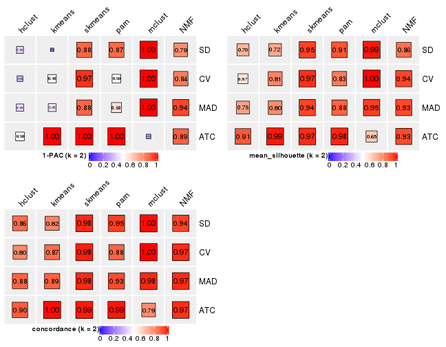
collect_stats(res_list, k = 3)
collect_stats(res_list, k = 4)
collect_stats(res_list, k = 5)
collect_stats(res_list, k = 6)
Collect partitions from all methods:
collect_classes(res_list, k = 2)
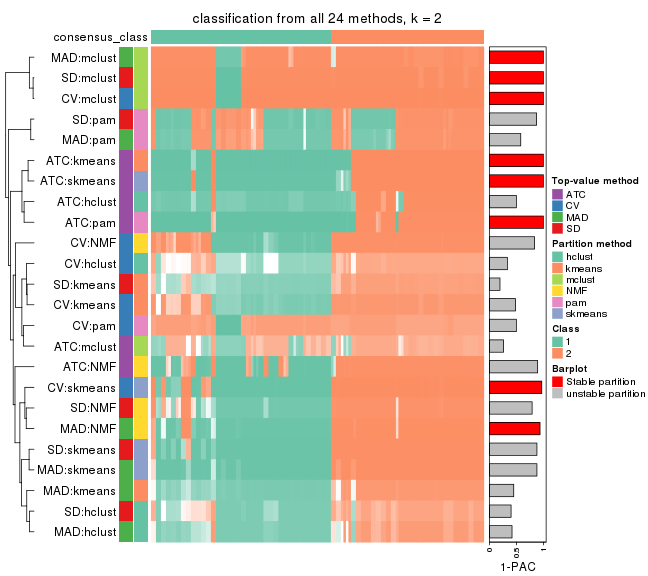
collect_classes(res_list, k = 3)
collect_classes(res_list, k = 4)
collect_classes(res_list, k = 5)

collect_classes(res_list, k = 6)
Overlap of top rows from different top-row methods:
top_rows_overlap(res_list, top_n = 1000, method = "euler")
top_rows_overlap(res_list, top_n = 2000, method = "euler")
top_rows_overlap(res_list, top_n = 3000, method = "euler")
top_rows_overlap(res_list, top_n = 4000, method = "euler")
top_rows_overlap(res_list, top_n = 5000, method = "euler")
Also visualize the correspondance of rankings between different top-row methods:
top_rows_overlap(res_list, top_n = 1000, method = "correspondance")
top_rows_overlap(res_list, top_n = 2000, method = "correspondance")
top_rows_overlap(res_list, top_n = 3000, method = "correspondance")
top_rows_overlap(res_list, top_n = 4000, method = "correspondance")

top_rows_overlap(res_list, top_n = 5000, method = "correspondance")
Heatmaps of the top rows:
top_rows_heatmap(res_list, top_n = 1000)
top_rows_heatmap(res_list, top_n = 2000)
top_rows_heatmap(res_list, top_n = 3000)
top_rows_heatmap(res_list, top_n = 4000)
top_rows_heatmap(res_list, top_n = 5000)
The object with results only for a single top-value method and a single partition method can be extracted as:
res = res_list["SD", "hclust"]
# you can also extract it by
# res = res_list["SD:hclust"]
A summary of res and all the functions that can be applied to it:
res
#> A 'ConsensusPartition' object with k = 2, 3, 4, 5, 6.
#> On a matrix with 16510 rows and 133 columns.
#> Top rows (1000, 2000, 3000, 4000, 5000) are extracted by 'SD' method.
#> Subgroups are detected by 'hclust' method.
#> Performed in total 1250 partitions by row resampling.
#> Best k for subgroups seems to be 2.
#>
#> Following methods can be applied to this 'ConsensusPartition' object:
#> [1] "cola_report" "collect_classes" "collect_plots"
#> [4] "collect_stats" "colnames" "compare_signatures"
#> [7] "consensus_heatmap" "dimension_reduction" "functional_enrichment"
#> [10] "get_anno_col" "get_anno" "get_classes"
#> [13] "get_consensus" "get_matrix" "get_membership"
#> [16] "get_param" "get_signatures" "get_stats"
#> [19] "is_best_k" "is_stable_k" "membership_heatmap"
#> [22] "ncol" "nrow" "plot_ecdf"
#> [25] "rownames" "select_partition_number" "show"
#> [28] "suggest_best_k" "test_to_known_factors"
collect_plots() function collects all the plots made from res for all k (number of partitions)
into one single page to provide an easy and fast comparison between different k.
collect_plots(res)
The plots are:
k and the heatmap of
predicted classes for each k.k.k.k.All the plots in panels can be made by individual functions and they are plotted later in this section.
select_partition_number() produces several plots showing different
statistics for choosing “optimized” k. There are following statistics:
k;k, the area increased is defined as \(A_k - A_{k-1}\).The detailed explanations of these statistics can be found in the cola vignette.
Generally speaking, lower PAC score, higher mean silhouette score or higher
concordance corresponds to better partition. Rand index and Jaccard index
measure how similar the current partition is compared to partition with k-1.
If they are too similar, we won't accept k is better than k-1.
select_partition_number(res)
The numeric values for all these statistics can be obtained by get_stats().
get_stats(res)
#> k 1-PAC mean_silhouette concordance area_increased Rand Jaccard
#> 2 2 0.401 0.697 0.858 0.4620 0.504 0.504
#> 3 3 0.418 0.696 0.842 0.1554 0.918 0.842
#> 4 4 0.431 0.219 0.654 0.2264 0.938 0.869
#> 5 5 0.447 0.399 0.704 0.0883 0.802 0.571
#> 6 6 0.498 0.531 0.666 0.0379 0.822 0.477
suggest_best_k() suggests the best \(k\) based on these statistics. The rules are as follows:
NA.suggest_best_k(res)
#> [1] 2
Following shows the table of the partitions (You need to click the show/hide
code output link to see it). The membership matrix (columns with name p*)
is inferred by
clue::cl_consensus()
function with the SE method. Basically the value in the membership matrix
represents the probability to belong to a certain group. The finall class
label for an item is determined with the group with highest probability it
belongs to.
In get_classes() function, the entropy is calculated from the membership
matrix and the silhouette score is calculated from the consensus matrix.
cbind(get_classes(res, k = 2), get_membership(res, k = 2))
#> class entropy silhouette p1 p2
#> ERR946976 1 0.5294 0.7946 0.880 0.120
#> ERR947001 1 0.5294 0.7946 0.880 0.120
#> ERR946975 2 0.9248 0.5714 0.340 0.660
#> ERR947000 2 0.9248 0.5714 0.340 0.660
#> ERR946972 1 0.0000 0.8474 1.000 0.000
#> ERR946997 1 0.0000 0.8474 1.000 0.000
#> ERR946986 2 0.9661 0.4625 0.392 0.608
#> ERR947011 2 0.9661 0.4625 0.392 0.608
#> ERR946977 2 0.7745 0.6907 0.228 0.772
#> ERR947002 2 0.7745 0.6907 0.228 0.772
#> ERR946974 2 0.9998 0.0785 0.492 0.508
#> ERR946999 2 0.9998 0.0785 0.492 0.508
#> ERR946971 1 0.0000 0.8474 1.000 0.000
#> ERR946996 1 0.0000 0.8474 1.000 0.000
#> ERR946992 2 0.0000 0.7953 0.000 1.000
#> ERR947017 2 0.0000 0.7953 0.000 1.000
#> ERR946984 2 0.6438 0.7358 0.164 0.836
#> ERR947009 2 0.6438 0.7358 0.164 0.836
#> ERR946987 2 0.0000 0.7953 0.000 1.000
#> ERR947012 2 0.0000 0.7953 0.000 1.000
#> ERR946991 2 0.0000 0.7953 0.000 1.000
#> ERR947016 2 0.0000 0.7953 0.000 1.000
#> ERR946983 2 0.7950 0.6950 0.240 0.760
#> ERR947008 2 0.7950 0.6950 0.240 0.760
#> ERR946970 1 0.4022 0.8257 0.920 0.080
#> ERR946995 1 0.4022 0.8257 0.920 0.080
#> ERR946969 2 0.9977 0.2576 0.472 0.528
#> ERR946994 2 0.9977 0.2576 0.472 0.528
#> ERR946982 2 0.0000 0.7953 0.000 1.000
#> ERR947007 2 0.0000 0.7953 0.000 1.000
#> ERR946988 2 0.7815 0.6867 0.232 0.768
#> ERR947013 2 0.7815 0.6867 0.232 0.768
#> ERR946985 2 0.0000 0.7953 0.000 1.000
#> ERR947010 2 0.0000 0.7953 0.000 1.000
#> ERR946989 1 1.0000 -0.0617 0.504 0.496
#> ERR947014 1 1.0000 -0.0617 0.504 0.496
#> ERR946968 1 0.1414 0.8526 0.980 0.020
#> ERR946993 1 0.1414 0.8526 0.980 0.020
#> ERR946990 2 0.9963 0.2777 0.464 0.536
#> ERR947015 2 0.9963 0.2777 0.464 0.536
#> ERR946980 2 0.9635 0.4698 0.388 0.612
#> ERR947005 2 0.9635 0.4698 0.388 0.612
#> ERR946978 1 0.0938 0.8533 0.988 0.012
#> ERR947003 1 0.0938 0.8533 0.988 0.012
#> ERR946979 2 0.0000 0.7953 0.000 1.000
#> ERR947004 2 0.0000 0.7953 0.000 1.000
#> ERR946957 1 0.0000 0.8474 1.000 0.000
#> ERR946962 1 0.0000 0.8474 1.000 0.000
#> ERR946958 1 0.0938 0.8533 0.988 0.012
#> ERR946963 1 0.0938 0.8533 0.988 0.012
#> ERR946959 1 0.0938 0.8533 0.988 0.012
#> ERR946964 1 0.0938 0.8533 0.988 0.012
#> ERR946967 1 0.0000 0.8474 1.000 0.000
#> ERR862690 1 0.0000 0.8474 1.000 0.000
#> ERR914278 2 0.8608 0.6457 0.284 0.716
#> ERR914314 2 0.8608 0.6457 0.284 0.716
#> ERR914279 1 0.2778 0.8511 0.952 0.048
#> ERR914315 1 0.2778 0.8511 0.952 0.048
#> ERR914280 2 0.9248 0.5714 0.340 0.660
#> ERR914316 2 0.9248 0.5714 0.340 0.660
#> ERR914281 2 0.0000 0.7953 0.000 1.000
#> ERR914317 2 0.0000 0.7953 0.000 1.000
#> ERR914282 2 0.0376 0.7948 0.004 0.996
#> ERR914318 2 0.0376 0.7948 0.004 0.996
#> ERR914283 1 0.0938 0.8533 0.988 0.012
#> ERR914319 1 0.0938 0.8533 0.988 0.012
#> ERR914284 1 0.9044 0.5332 0.680 0.320
#> ERR914320 1 0.9044 0.5332 0.680 0.320
#> ERR914285 2 0.9977 0.1518 0.472 0.528
#> ERR914321 2 0.9977 0.1518 0.472 0.528
#> ERR914286 2 0.8608 0.6481 0.284 0.716
#> ERR914322 2 0.8608 0.6481 0.284 0.716
#> ERR914287 1 0.2778 0.8511 0.952 0.048
#> ERR914323 1 0.2778 0.8511 0.952 0.048
#> ERR914288 1 0.8861 0.5643 0.696 0.304
#> ERR914324 1 0.8861 0.5643 0.696 0.304
#> ERR914289 1 0.9044 0.5332 0.680 0.320
#> ERR914290 1 0.2778 0.8511 0.952 0.048
#> ERR914326 1 0.2778 0.8511 0.952 0.048
#> ERR914291 2 0.8081 0.6884 0.248 0.752
#> ERR914327 2 0.8081 0.6884 0.248 0.752
#> ERR914292 1 0.8861 0.5643 0.696 0.304
#> ERR914328 1 0.8861 0.5643 0.696 0.304
#> ERR914293 1 0.2778 0.8511 0.952 0.048
#> ERR914329 1 0.2778 0.8511 0.952 0.048
#> ERR914294 2 0.0000 0.7953 0.000 1.000
#> ERR914330 2 0.0000 0.7953 0.000 1.000
#> ERR914295 1 0.8813 0.5815 0.700 0.300
#> ERR914331 1 0.8813 0.5815 0.700 0.300
#> ERR914296 1 0.0938 0.8533 0.988 0.012
#> ERR914332 1 0.0938 0.8533 0.988 0.012
#> ERR914297 2 0.0000 0.7953 0.000 1.000
#> ERR914333 2 0.0000 0.7953 0.000 1.000
#> ERR914298 1 0.0000 0.8474 1.000 0.000
#> ERR914334 1 0.0000 0.8474 1.000 0.000
#> ERR914299 2 0.8081 0.6884 0.248 0.752
#> ERR914335 2 0.8081 0.6884 0.248 0.752
#> ERR914300 1 0.8813 0.5815 0.700 0.300
#> ERR914336 1 0.8813 0.5815 0.700 0.300
#> ERR914301 2 0.0000 0.7953 0.000 1.000
#> ERR914337 2 0.0000 0.7953 0.000 1.000
#> ERR914302 2 0.0000 0.7953 0.000 1.000
#> ERR914338 2 0.0000 0.7953 0.000 1.000
#> ERR914303 2 0.0000 0.7953 0.000 1.000
#> ERR914339 2 0.0000 0.7953 0.000 1.000
#> ERR914304 2 0.0000 0.7953 0.000 1.000
#> ERR914340 2 0.0000 0.7953 0.000 1.000
#> ERR914305 2 0.0000 0.7953 0.000 1.000
#> ERR914341 2 0.0000 0.7953 0.000 1.000
#> ERR914306 2 0.0000 0.7953 0.000 1.000
#> ERR914342 2 0.0000 0.7953 0.000 1.000
#> ERR914307 2 0.9954 0.2865 0.460 0.540
#> ERR914343 2 0.9954 0.2865 0.460 0.540
#> ERR914308 1 0.2778 0.8511 0.952 0.048
#> ERR914344 1 0.2778 0.8511 0.952 0.048
#> ERR914309 1 0.2778 0.8511 0.952 0.048
#> ERR914345 1 0.2778 0.8511 0.952 0.048
#> ERR914310 1 0.8861 0.5643 0.696 0.304
#> ERR914346 1 0.8861 0.5643 0.696 0.304
#> ERR914311 2 0.0376 0.7948 0.004 0.996
#> ERR914347 2 0.0376 0.7948 0.004 0.996
#> ERR914312 2 0.8608 0.6457 0.284 0.716
#> ERR914348 2 0.8608 0.6457 0.284 0.716
#> ERR914313 2 0.0000 0.7953 0.000 1.000
#> ERR914349 2 0.0000 0.7953 0.000 1.000
#> ERR946960 1 0.1414 0.8526 0.980 0.020
#> ERR946965 1 0.1414 0.8526 0.980 0.020
#> ERR946966 2 0.7950 0.6950 0.240 0.760
#> ERR946973 1 0.0000 0.8474 1.000 0.000
#> ERR946998 1 0.0000 0.8474 1.000 0.000
#> ERR946981 2 0.1633 0.7869 0.024 0.976
#> ERR947006 2 0.1633 0.7869 0.024 0.976
#> ERR914325 1 0.9044 0.5332 0.680 0.320
cbind(get_classes(res, k = 3), get_membership(res, k = 3))
#> class entropy silhouette p1 p2 p3
#> ERR946976 1 0.5695 0.746 0.804 0.120 0.076
#> ERR947001 1 0.5695 0.746 0.804 0.120 0.076
#> ERR946975 2 0.6625 0.560 0.316 0.660 0.024
#> ERR947000 2 0.6625 0.560 0.316 0.660 0.024
#> ERR946972 3 0.2261 1.000 0.068 0.000 0.932
#> ERR946997 3 0.2261 1.000 0.068 0.000 0.932
#> ERR946986 2 0.7741 0.481 0.324 0.608 0.068
#> ERR947011 2 0.7741 0.481 0.324 0.608 0.068
#> ERR946977 2 0.6151 0.681 0.160 0.772 0.068
#> ERR947002 2 0.6151 0.681 0.160 0.772 0.068
#> ERR946974 2 0.7969 0.130 0.432 0.508 0.060
#> ERR946999 2 0.7969 0.130 0.432 0.508 0.060
#> ERR946971 3 0.2261 1.000 0.068 0.000 0.932
#> ERR946996 3 0.2261 1.000 0.068 0.000 0.932
#> ERR946992 2 0.0000 0.790 0.000 1.000 0.000
#> ERR947017 2 0.0000 0.790 0.000 1.000 0.000
#> ERR946984 2 0.4994 0.724 0.112 0.836 0.052
#> ERR947009 2 0.4994 0.724 0.112 0.836 0.052
#> ERR946987 2 0.0000 0.790 0.000 1.000 0.000
#> ERR947012 2 0.0000 0.790 0.000 1.000 0.000
#> ERR946991 2 0.0000 0.790 0.000 1.000 0.000
#> ERR947016 2 0.0000 0.790 0.000 1.000 0.000
#> ERR946983 2 0.5726 0.683 0.216 0.760 0.024
#> ERR947008 2 0.5726 0.683 0.216 0.760 0.024
#> ERR946970 1 0.4925 0.761 0.844 0.080 0.076
#> ERR946995 1 0.4925 0.761 0.844 0.080 0.076
#> ERR946969 2 0.8066 0.302 0.404 0.528 0.068
#> ERR946994 2 0.8066 0.302 0.404 0.528 0.068
#> ERR946982 2 0.0000 0.790 0.000 1.000 0.000
#> ERR947007 2 0.0000 0.790 0.000 1.000 0.000
#> ERR946988 2 0.6208 0.677 0.164 0.768 0.068
#> ERR947013 2 0.6208 0.677 0.164 0.768 0.068
#> ERR946985 2 0.0000 0.790 0.000 1.000 0.000
#> ERR947010 2 0.0000 0.790 0.000 1.000 0.000
#> ERR946989 2 0.7984 0.091 0.444 0.496 0.060
#> ERR947014 2 0.7984 0.091 0.444 0.496 0.060
#> ERR946968 1 0.3325 0.757 0.904 0.020 0.076
#> ERR946993 1 0.3325 0.757 0.904 0.020 0.076
#> ERR946990 2 0.8046 0.319 0.396 0.536 0.068
#> ERR947015 2 0.8046 0.319 0.396 0.536 0.068
#> ERR946980 2 0.7718 0.488 0.320 0.612 0.068
#> ERR947005 2 0.7718 0.488 0.320 0.612 0.068
#> ERR946978 1 0.1999 0.781 0.952 0.012 0.036
#> ERR947003 1 0.1999 0.781 0.952 0.012 0.036
#> ERR946979 2 0.0000 0.790 0.000 1.000 0.000
#> ERR947004 2 0.0000 0.790 0.000 1.000 0.000
#> ERR946957 3 0.2261 1.000 0.068 0.000 0.932
#> ERR946962 3 0.2261 1.000 0.068 0.000 0.932
#> ERR946958 1 0.1999 0.781 0.952 0.012 0.036
#> ERR946963 1 0.1999 0.781 0.952 0.012 0.036
#> ERR946959 1 0.1999 0.781 0.952 0.012 0.036
#> ERR946964 1 0.1999 0.781 0.952 0.012 0.036
#> ERR946967 3 0.2261 1.000 0.068 0.000 0.932
#> ERR862690 3 0.2261 1.000 0.068 0.000 0.932
#> ERR914278 2 0.6180 0.634 0.260 0.716 0.024
#> ERR914314 2 0.6180 0.634 0.260 0.716 0.024
#> ERR914279 1 0.1753 0.809 0.952 0.048 0.000
#> ERR914315 1 0.1753 0.809 0.952 0.048 0.000
#> ERR914280 2 0.6625 0.560 0.316 0.660 0.024
#> ERR914316 2 0.6625 0.560 0.316 0.660 0.024
#> ERR914281 2 0.0000 0.790 0.000 1.000 0.000
#> ERR914317 2 0.0000 0.790 0.000 1.000 0.000
#> ERR914282 2 0.0237 0.789 0.004 0.996 0.000
#> ERR914318 2 0.0237 0.789 0.004 0.996 0.000
#> ERR914283 1 0.1999 0.781 0.952 0.012 0.036
#> ERR914319 1 0.1999 0.781 0.952 0.012 0.036
#> ERR914284 1 0.6769 0.537 0.652 0.320 0.028
#> ERR914320 1 0.6769 0.537 0.652 0.320 0.028
#> ERR914285 2 0.7931 0.194 0.412 0.528 0.060
#> ERR914321 2 0.7931 0.194 0.412 0.528 0.060
#> ERR914286 2 0.6180 0.638 0.260 0.716 0.024
#> ERR914322 2 0.6180 0.638 0.260 0.716 0.024
#> ERR914287 1 0.1753 0.809 0.952 0.048 0.000
#> ERR914323 1 0.1753 0.809 0.952 0.048 0.000
#> ERR914288 1 0.6659 0.569 0.668 0.304 0.028
#> ERR914324 1 0.6659 0.569 0.668 0.304 0.028
#> ERR914289 1 0.6769 0.537 0.652 0.320 0.028
#> ERR914290 1 0.1753 0.809 0.952 0.048 0.000
#> ERR914326 1 0.1753 0.809 0.952 0.048 0.000
#> ERR914291 2 0.5816 0.676 0.224 0.752 0.024
#> ERR914327 2 0.5816 0.676 0.224 0.752 0.024
#> ERR914292 1 0.6659 0.569 0.668 0.304 0.028
#> ERR914328 1 0.6659 0.569 0.668 0.304 0.028
#> ERR914293 1 0.1753 0.809 0.952 0.048 0.000
#> ERR914329 1 0.1753 0.809 0.952 0.048 0.000
#> ERR914294 2 0.0000 0.790 0.000 1.000 0.000
#> ERR914330 2 0.0000 0.790 0.000 1.000 0.000
#> ERR914295 1 0.6113 0.594 0.688 0.300 0.012
#> ERR914331 1 0.6113 0.594 0.688 0.300 0.012
#> ERR914296 1 0.1999 0.781 0.952 0.012 0.036
#> ERR914332 1 0.1999 0.781 0.952 0.012 0.036
#> ERR914297 2 0.0000 0.790 0.000 1.000 0.000
#> ERR914333 2 0.0000 0.790 0.000 1.000 0.000
#> ERR914298 1 0.2261 0.743 0.932 0.000 0.068
#> ERR914334 1 0.2261 0.743 0.932 0.000 0.068
#> ERR914299 2 0.5816 0.676 0.224 0.752 0.024
#> ERR914335 2 0.5816 0.676 0.224 0.752 0.024
#> ERR914300 1 0.6113 0.594 0.688 0.300 0.012
#> ERR914336 1 0.6113 0.594 0.688 0.300 0.012
#> ERR914301 2 0.0000 0.790 0.000 1.000 0.000
#> ERR914337 2 0.0000 0.790 0.000 1.000 0.000
#> ERR914302 2 0.0000 0.790 0.000 1.000 0.000
#> ERR914338 2 0.0000 0.790 0.000 1.000 0.000
#> ERR914303 2 0.0000 0.790 0.000 1.000 0.000
#> ERR914339 2 0.0000 0.790 0.000 1.000 0.000
#> ERR914304 2 0.0000 0.790 0.000 1.000 0.000
#> ERR914340 2 0.0000 0.790 0.000 1.000 0.000
#> ERR914305 2 0.0000 0.790 0.000 1.000 0.000
#> ERR914341 2 0.0000 0.790 0.000 1.000 0.000
#> ERR914306 2 0.0000 0.790 0.000 1.000 0.000
#> ERR914342 2 0.0000 0.790 0.000 1.000 0.000
#> ERR914307 2 0.8034 0.326 0.392 0.540 0.068
#> ERR914343 2 0.8034 0.326 0.392 0.540 0.068
#> ERR914308 1 0.1753 0.809 0.952 0.048 0.000
#> ERR914344 1 0.1753 0.809 0.952 0.048 0.000
#> ERR914309 1 0.1753 0.809 0.952 0.048 0.000
#> ERR914345 1 0.1753 0.809 0.952 0.048 0.000
#> ERR914310 1 0.6659 0.569 0.668 0.304 0.028
#> ERR914346 1 0.6659 0.569 0.668 0.304 0.028
#> ERR914311 2 0.0237 0.789 0.004 0.996 0.000
#> ERR914347 2 0.0237 0.789 0.004 0.996 0.000
#> ERR914312 2 0.6180 0.634 0.260 0.716 0.024
#> ERR914348 2 0.6180 0.634 0.260 0.716 0.024
#> ERR914313 2 0.0000 0.790 0.000 1.000 0.000
#> ERR914349 2 0.0000 0.790 0.000 1.000 0.000
#> ERR946960 1 0.3325 0.757 0.904 0.020 0.076
#> ERR946965 1 0.3325 0.757 0.904 0.020 0.076
#> ERR946966 2 0.5726 0.683 0.216 0.760 0.024
#> ERR946973 3 0.2261 1.000 0.068 0.000 0.932
#> ERR946998 3 0.2261 1.000 0.068 0.000 0.932
#> ERR946981 2 0.1031 0.781 0.024 0.976 0.000
#> ERR947006 2 0.1031 0.781 0.024 0.976 0.000
#> ERR914325 1 0.6769 0.537 0.652 0.320 0.028
cbind(get_classes(res, k = 4), get_membership(res, k = 4))
#> class entropy silhouette p1 p2 p3 p4
#> ERR946976 1 0.4429 0.5624 0.804 0.156 0.008 0.032
#> ERR947001 1 0.4429 0.5624 0.804 0.156 0.008 0.032
#> ERR946975 4 0.6452 0.2269 0.268 0.112 0.000 0.620
#> ERR947000 4 0.6452 0.2269 0.268 0.112 0.000 0.620
#> ERR946972 3 0.0000 1.0000 0.000 0.000 1.000 0.000
#> ERR946997 3 0.0000 1.0000 0.000 0.000 1.000 0.000
#> ERR946986 4 0.7896 -0.1935 0.336 0.296 0.000 0.368
#> ERR947011 4 0.7896 -0.1935 0.336 0.296 0.000 0.368
#> ERR946977 4 0.7573 -0.6281 0.196 0.372 0.000 0.432
#> ERR947002 4 0.7573 -0.6281 0.196 0.372 0.000 0.432
#> ERR946974 4 0.6005 -0.1490 0.460 0.040 0.000 0.500
#> ERR946999 4 0.6005 -0.1490 0.460 0.040 0.000 0.500
#> ERR946971 3 0.0000 1.0000 0.000 0.000 1.000 0.000
#> ERR946996 3 0.0000 1.0000 0.000 0.000 1.000 0.000
#> ERR946992 4 0.1209 0.2010 0.004 0.032 0.000 0.964
#> ERR947017 4 0.1209 0.2010 0.004 0.032 0.000 0.964
#> ERR946984 2 0.7253 0.0000 0.144 0.428 0.000 0.428
#> ERR947009 4 0.7253 -1.0000 0.144 0.428 0.000 0.428
#> ERR946987 4 0.0376 0.2149 0.004 0.004 0.000 0.992
#> ERR947012 4 0.0376 0.2149 0.004 0.004 0.000 0.992
#> ERR946991 4 0.4967 -0.3866 0.000 0.452 0.000 0.548
#> ERR947016 4 0.4967 -0.3866 0.000 0.452 0.000 0.548
#> ERR946983 4 0.6761 0.1295 0.168 0.224 0.000 0.608
#> ERR947008 4 0.6761 0.1295 0.168 0.224 0.000 0.608
#> ERR946970 1 0.3945 0.6156 0.852 0.064 0.008 0.076
#> ERR946995 1 0.3945 0.6156 0.852 0.064 0.008 0.076
#> ERR946969 4 0.7282 0.0244 0.416 0.148 0.000 0.436
#> ERR946994 4 0.7282 0.0244 0.416 0.148 0.000 0.436
#> ERR946982 4 0.1004 0.2070 0.004 0.024 0.000 0.972
#> ERR947007 4 0.1004 0.2070 0.004 0.024 0.000 0.972
#> ERR946988 4 0.7595 -0.6206 0.200 0.372 0.000 0.428
#> ERR947013 4 0.7595 -0.6206 0.200 0.372 0.000 0.428
#> ERR946985 4 0.0188 0.2170 0.004 0.000 0.000 0.996
#> ERR947010 4 0.0188 0.2170 0.004 0.000 0.000 0.996
#> ERR946989 4 0.5937 -0.1657 0.472 0.036 0.000 0.492
#> ERR947014 4 0.5937 -0.1657 0.472 0.036 0.000 0.492
#> ERR946968 1 0.2631 0.6339 0.912 0.064 0.008 0.016
#> ERR946993 1 0.2631 0.6339 0.912 0.064 0.008 0.016
#> ERR946990 1 0.7756 -0.2201 0.412 0.240 0.000 0.348
#> ERR947015 1 0.7756 -0.2201 0.412 0.240 0.000 0.348
#> ERR946980 4 0.7894 -0.1898 0.332 0.296 0.000 0.372
#> ERR947005 4 0.7894 -0.1898 0.332 0.296 0.000 0.372
#> ERR946978 1 0.4643 0.6129 0.656 0.344 0.000 0.000
#> ERR947003 1 0.4643 0.6129 0.656 0.344 0.000 0.000
#> ERR946979 4 0.4981 -0.3840 0.000 0.464 0.000 0.536
#> ERR947004 4 0.4981 -0.3840 0.000 0.464 0.000 0.536
#> ERR946957 3 0.0000 1.0000 0.000 0.000 1.000 0.000
#> ERR946962 3 0.0000 1.0000 0.000 0.000 1.000 0.000
#> ERR946958 1 0.4643 0.6129 0.656 0.344 0.000 0.000
#> ERR946963 1 0.4643 0.6129 0.656 0.344 0.000 0.000
#> ERR946959 1 0.4643 0.6129 0.656 0.344 0.000 0.000
#> ERR946964 1 0.4643 0.6129 0.656 0.344 0.000 0.000
#> ERR946967 3 0.0000 1.0000 0.000 0.000 1.000 0.000
#> ERR862690 3 0.0000 1.0000 0.000 0.000 1.000 0.000
#> ERR914278 4 0.5956 0.2423 0.220 0.100 0.000 0.680
#> ERR914314 4 0.5956 0.2423 0.220 0.100 0.000 0.680
#> ERR914279 1 0.4500 0.6834 0.776 0.192 0.000 0.032
#> ERR914315 1 0.4500 0.6834 0.776 0.192 0.000 0.032
#> ERR914280 4 0.6452 0.2269 0.268 0.112 0.000 0.620
#> ERR914316 4 0.6452 0.2269 0.268 0.112 0.000 0.620
#> ERR914281 4 0.1004 0.1985 0.004 0.024 0.000 0.972
#> ERR914317 4 0.1004 0.1985 0.004 0.024 0.000 0.972
#> ERR914282 4 0.5137 -0.4029 0.004 0.452 0.000 0.544
#> ERR914318 4 0.5137 -0.4029 0.004 0.452 0.000 0.544
#> ERR914283 1 0.4643 0.6129 0.656 0.344 0.000 0.000
#> ERR914319 1 0.4643 0.6129 0.656 0.344 0.000 0.000
#> ERR914284 1 0.4632 0.4741 0.688 0.004 0.000 0.308
#> ERR914320 1 0.4632 0.4741 0.688 0.004 0.000 0.308
#> ERR914285 4 0.5987 -0.1098 0.440 0.040 0.000 0.520
#> ERR914321 4 0.5987 -0.1098 0.440 0.040 0.000 0.520
#> ERR914286 4 0.6514 0.2226 0.212 0.152 0.000 0.636
#> ERR914322 4 0.6514 0.2226 0.212 0.152 0.000 0.636
#> ERR914287 1 0.4500 0.6834 0.776 0.192 0.000 0.032
#> ERR914323 1 0.4500 0.6834 0.776 0.192 0.000 0.032
#> ERR914288 1 0.4882 0.4967 0.708 0.020 0.000 0.272
#> ERR914324 1 0.4882 0.4967 0.708 0.020 0.000 0.272
#> ERR914289 1 0.4632 0.4741 0.688 0.004 0.000 0.308
#> ERR914290 1 0.4500 0.6834 0.776 0.192 0.000 0.032
#> ERR914326 1 0.4500 0.6834 0.776 0.192 0.000 0.032
#> ERR914291 4 0.6776 0.1423 0.176 0.216 0.000 0.608
#> ERR914327 4 0.6776 0.1423 0.176 0.216 0.000 0.608
#> ERR914292 1 0.4882 0.4967 0.708 0.020 0.000 0.272
#> ERR914328 1 0.4882 0.4967 0.708 0.020 0.000 0.272
#> ERR914293 1 0.4500 0.6834 0.776 0.192 0.000 0.032
#> ERR914329 1 0.4500 0.6834 0.776 0.192 0.000 0.032
#> ERR914294 4 0.0188 0.2170 0.004 0.000 0.000 0.996
#> ERR914330 4 0.0188 0.2170 0.004 0.000 0.000 0.996
#> ERR914295 1 0.5334 0.5222 0.680 0.036 0.000 0.284
#> ERR914331 1 0.5334 0.5222 0.680 0.036 0.000 0.284
#> ERR914296 1 0.4643 0.6129 0.656 0.344 0.000 0.000
#> ERR914332 1 0.4643 0.6129 0.656 0.344 0.000 0.000
#> ERR914297 4 0.4977 -0.3842 0.000 0.460 0.000 0.540
#> ERR914333 4 0.4977 -0.3842 0.000 0.460 0.000 0.540
#> ERR914298 1 0.4999 0.4530 0.508 0.492 0.000 0.000
#> ERR914334 1 0.4999 0.4530 0.508 0.492 0.000 0.000
#> ERR914299 4 0.6776 0.1423 0.176 0.216 0.000 0.608
#> ERR914335 4 0.6776 0.1423 0.176 0.216 0.000 0.608
#> ERR914300 1 0.5334 0.5222 0.680 0.036 0.000 0.284
#> ERR914336 1 0.5334 0.5222 0.680 0.036 0.000 0.284
#> ERR914301 4 0.4977 -0.3842 0.000 0.460 0.000 0.540
#> ERR914337 4 0.4977 -0.3842 0.000 0.460 0.000 0.540
#> ERR914302 4 0.1109 0.2041 0.004 0.028 0.000 0.968
#> ERR914338 4 0.1109 0.2041 0.004 0.028 0.000 0.968
#> ERR914303 4 0.4981 -0.3840 0.000 0.464 0.000 0.536
#> ERR914339 4 0.4981 -0.3840 0.000 0.464 0.000 0.536
#> ERR914304 4 0.4981 -0.3840 0.000 0.464 0.000 0.536
#> ERR914340 4 0.4981 -0.3840 0.000 0.464 0.000 0.536
#> ERR914305 4 0.4977 -0.3855 0.000 0.460 0.000 0.540
#> ERR914341 4 0.4977 -0.3855 0.000 0.460 0.000 0.540
#> ERR914306 4 0.4977 -0.3842 0.000 0.460 0.000 0.540
#> ERR914342 4 0.4977 -0.3842 0.000 0.460 0.000 0.540
#> ERR914307 1 0.7771 -0.2256 0.408 0.244 0.000 0.348
#> ERR914343 1 0.7771 -0.2256 0.408 0.244 0.000 0.348
#> ERR914308 1 0.4500 0.6834 0.776 0.192 0.000 0.032
#> ERR914344 1 0.4500 0.6834 0.776 0.192 0.000 0.032
#> ERR914309 1 0.4500 0.6834 0.776 0.192 0.000 0.032
#> ERR914345 1 0.4500 0.6834 0.776 0.192 0.000 0.032
#> ERR914310 1 0.4718 0.4966 0.708 0.012 0.000 0.280
#> ERR914346 1 0.4718 0.4966 0.708 0.012 0.000 0.280
#> ERR914311 4 0.5137 -0.4029 0.004 0.452 0.000 0.544
#> ERR914347 4 0.5137 -0.4029 0.004 0.452 0.000 0.544
#> ERR914312 4 0.5956 0.2423 0.220 0.100 0.000 0.680
#> ERR914348 4 0.5956 0.2423 0.220 0.100 0.000 0.680
#> ERR914313 4 0.0188 0.2170 0.004 0.000 0.000 0.996
#> ERR914349 4 0.0188 0.2170 0.004 0.000 0.000 0.996
#> ERR946960 1 0.2853 0.6368 0.900 0.076 0.008 0.016
#> ERR946965 1 0.2853 0.6368 0.900 0.076 0.008 0.016
#> ERR946966 4 0.6761 0.1295 0.168 0.224 0.000 0.608
#> ERR946973 3 0.0000 1.0000 0.000 0.000 1.000 0.000
#> ERR946998 3 0.0000 1.0000 0.000 0.000 1.000 0.000
#> ERR946981 4 0.5708 -0.4138 0.028 0.416 0.000 0.556
#> ERR947006 4 0.5708 -0.4138 0.028 0.416 0.000 0.556
#> ERR914325 1 0.4632 0.4741 0.688 0.004 0.000 0.308
cbind(get_classes(res, k = 5), get_membership(res, k = 5))
#> class entropy silhouette p1 p2 p3 p4 p5
#> ERR946976 1 0.4788 0.27016 0.760 0.096 0 0.020 0.124
#> ERR947001 1 0.4788 0.27016 0.760 0.096 0 0.020 0.124
#> ERR946975 4 0.7271 0.38855 0.272 0.136 0 0.512 0.080
#> ERR947000 4 0.7271 0.38855 0.272 0.136 0 0.512 0.080
#> ERR946972 3 0.0000 1.00000 0.000 0.000 1 0.000 0.000
#> ERR946997 3 0.0000 1.00000 0.000 0.000 1 0.000 0.000
#> ERR946986 2 0.7525 0.20568 0.336 0.420 0 0.184 0.060
#> ERR947011 2 0.7525 0.20568 0.336 0.420 0 0.184 0.060
#> ERR946977 2 0.6327 0.49580 0.196 0.620 0 0.148 0.036
#> ERR947002 2 0.6327 0.49580 0.196 0.620 0 0.148 0.036
#> ERR946974 4 0.5259 0.09484 0.476 0.004 0 0.484 0.036
#> ERR946999 4 0.5259 0.09484 0.476 0.004 0 0.484 0.036
#> ERR946971 3 0.0000 1.00000 0.000 0.000 1 0.000 0.000
#> ERR946996 3 0.0000 1.00000 0.000 0.000 1 0.000 0.000
#> ERR946992 4 0.2124 0.64122 0.000 0.096 0 0.900 0.004
#> ERR947017 4 0.2124 0.64122 0.000 0.096 0 0.900 0.004
#> ERR946984 2 0.4903 0.60121 0.136 0.752 0 0.088 0.024
#> ERR947009 2 0.4903 0.60121 0.136 0.752 0 0.088 0.024
#> ERR946987 4 0.0794 0.67238 0.000 0.028 0 0.972 0.000
#> ERR947012 4 0.0794 0.67238 0.000 0.028 0 0.972 0.000
#> ERR946991 2 0.1410 0.67514 0.000 0.940 0 0.060 0.000
#> ERR947016 2 0.1410 0.67514 0.000 0.940 0 0.060 0.000
#> ERR946983 2 0.7612 0.14439 0.164 0.436 0 0.320 0.080
#> ERR947008 2 0.7612 0.14439 0.164 0.436 0 0.320 0.080
#> ERR946970 1 0.3641 0.31477 0.820 0.000 0 0.060 0.120
#> ERR946995 1 0.3641 0.31477 0.820 0.000 0 0.060 0.120
#> ERR946969 1 0.7641 -0.00403 0.424 0.212 0 0.300 0.064
#> ERR946994 1 0.7641 -0.00403 0.424 0.212 0 0.300 0.064
#> ERR946982 4 0.1270 0.66187 0.000 0.052 0 0.948 0.000
#> ERR947007 4 0.1270 0.66187 0.000 0.052 0 0.948 0.000
#> ERR946988 2 0.6319 0.49389 0.200 0.620 0 0.144 0.036
#> ERR947013 2 0.6319 0.49389 0.200 0.620 0 0.144 0.036
#> ERR946985 4 0.0703 0.67274 0.000 0.024 0 0.976 0.000
#> ERR947010 4 0.0703 0.67274 0.000 0.024 0 0.976 0.000
#> ERR946989 1 0.5178 -0.12250 0.484 0.000 0 0.476 0.040
#> ERR947014 1 0.5178 -0.12250 0.484 0.000 0 0.476 0.040
#> ERR946968 1 0.2488 0.25874 0.872 0.000 0 0.004 0.124
#> ERR946993 1 0.2488 0.25874 0.872 0.000 0 0.004 0.124
#> ERR946990 1 0.7634 -0.06255 0.400 0.340 0 0.196 0.064
#> ERR947015 1 0.7634 -0.06255 0.400 0.340 0 0.196 0.064
#> ERR946980 2 0.7539 0.20755 0.332 0.420 0 0.188 0.060
#> ERR947005 2 0.7539 0.20755 0.332 0.420 0 0.188 0.060
#> ERR946978 1 0.4564 -0.25110 0.612 0.000 0 0.016 0.372
#> ERR947003 1 0.4564 -0.25110 0.612 0.000 0 0.016 0.372
#> ERR946979 2 0.0290 0.67314 0.000 0.992 0 0.008 0.000
#> ERR947004 2 0.0290 0.67314 0.000 0.992 0 0.008 0.000
#> ERR946957 3 0.0000 1.00000 0.000 0.000 1 0.000 0.000
#> ERR946962 3 0.0000 1.00000 0.000 0.000 1 0.000 0.000
#> ERR946958 1 0.4564 -0.25110 0.612 0.000 0 0.016 0.372
#> ERR946963 1 0.4564 -0.25110 0.612 0.000 0 0.016 0.372
#> ERR946959 1 0.4564 -0.25110 0.612 0.000 0 0.016 0.372
#> ERR946964 1 0.4564 -0.25110 0.612 0.000 0 0.016 0.372
#> ERR946967 3 0.0000 1.00000 0.000 0.000 1 0.000 0.000
#> ERR862690 3 0.0000 1.00000 0.000 0.000 1 0.000 0.000
#> ERR914278 4 0.7076 0.45443 0.224 0.152 0 0.552 0.072
#> ERR914314 4 0.7076 0.45443 0.224 0.152 0 0.552 0.072
#> ERR914279 1 0.4210 0.23471 0.756 0.004 0 0.036 0.204
#> ERR914315 1 0.4210 0.23471 0.756 0.004 0 0.036 0.204
#> ERR914280 4 0.7271 0.38855 0.272 0.136 0 0.512 0.080
#> ERR914316 4 0.7271 0.38855 0.272 0.136 0 0.512 0.080
#> ERR914281 4 0.2179 0.63089 0.000 0.112 0 0.888 0.000
#> ERR914317 4 0.2179 0.63089 0.000 0.112 0 0.888 0.000
#> ERR914282 2 0.1571 0.67676 0.004 0.936 0 0.060 0.000
#> ERR914318 2 0.1571 0.67676 0.004 0.936 0 0.060 0.000
#> ERR914283 1 0.4564 -0.25110 0.612 0.000 0 0.016 0.372
#> ERR914319 1 0.4564 -0.25110 0.612 0.000 0 0.016 0.372
#> ERR914284 1 0.4152 0.33400 0.692 0.000 0 0.296 0.012
#> ERR914320 1 0.4152 0.33400 0.692 0.000 0 0.296 0.012
#> ERR914285 4 0.5249 0.14004 0.452 0.004 0 0.508 0.036
#> ERR914321 4 0.5249 0.14004 0.452 0.004 0 0.508 0.036
#> ERR914286 4 0.7777 0.24940 0.216 0.276 0 0.428 0.080
#> ERR914322 4 0.7777 0.24940 0.216 0.276 0 0.428 0.080
#> ERR914287 1 0.4210 0.23471 0.756 0.004 0 0.036 0.204
#> ERR914323 1 0.4210 0.23471 0.756 0.004 0 0.036 0.204
#> ERR914288 1 0.4286 0.38065 0.716 0.020 0 0.260 0.004
#> ERR914324 1 0.4286 0.38065 0.716 0.020 0 0.260 0.004
#> ERR914289 1 0.4152 0.33400 0.692 0.000 0 0.296 0.012
#> ERR914290 1 0.4210 0.23471 0.756 0.004 0 0.036 0.204
#> ERR914326 1 0.4210 0.23471 0.756 0.004 0 0.036 0.204
#> ERR914291 2 0.7666 0.11978 0.172 0.424 0 0.324 0.080
#> ERR914327 2 0.7666 0.11978 0.172 0.424 0 0.324 0.080
#> ERR914292 1 0.4286 0.38065 0.716 0.020 0 0.260 0.004
#> ERR914328 1 0.4286 0.38065 0.716 0.020 0 0.260 0.004
#> ERR914293 1 0.4210 0.23471 0.756 0.004 0 0.036 0.204
#> ERR914329 1 0.4210 0.23471 0.756 0.004 0 0.036 0.204
#> ERR914294 4 0.0794 0.67174 0.000 0.028 0 0.972 0.000
#> ERR914330 4 0.0794 0.67174 0.000 0.028 0 0.972 0.000
#> ERR914295 1 0.4605 0.39545 0.692 0.004 0 0.272 0.032
#> ERR914331 1 0.4605 0.39545 0.692 0.004 0 0.272 0.032
#> ERR914296 1 0.4564 -0.25110 0.612 0.000 0 0.016 0.372
#> ERR914332 1 0.4564 -0.25110 0.612 0.000 0 0.016 0.372
#> ERR914297 2 0.3790 0.55813 0.000 0.724 0 0.004 0.272
#> ERR914333 2 0.3790 0.55813 0.000 0.724 0 0.004 0.272
#> ERR914298 5 0.3895 1.00000 0.320 0.000 0 0.000 0.680
#> ERR914334 5 0.3895 1.00000 0.320 0.000 0 0.000 0.680
#> ERR914299 2 0.7666 0.11978 0.172 0.424 0 0.324 0.080
#> ERR914335 2 0.7666 0.11978 0.172 0.424 0 0.324 0.080
#> ERR914300 1 0.4605 0.39545 0.692 0.004 0 0.272 0.032
#> ERR914336 1 0.4605 0.39545 0.692 0.004 0 0.272 0.032
#> ERR914301 2 0.3790 0.55813 0.000 0.724 0 0.004 0.272
#> ERR914337 2 0.3790 0.55813 0.000 0.724 0 0.004 0.272
#> ERR914302 4 0.1502 0.65648 0.000 0.056 0 0.940 0.004
#> ERR914338 4 0.1502 0.65648 0.000 0.056 0 0.940 0.004
#> ERR914303 2 0.0162 0.67311 0.000 0.996 0 0.004 0.000
#> ERR914339 2 0.0162 0.67311 0.000 0.996 0 0.004 0.000
#> ERR914304 2 0.1197 0.67540 0.000 0.952 0 0.048 0.000
#> ERR914340 2 0.1197 0.67540 0.000 0.952 0 0.048 0.000
#> ERR914305 2 0.0290 0.67461 0.000 0.992 0 0.008 0.000
#> ERR914341 2 0.0290 0.67461 0.000 0.992 0 0.008 0.000
#> ERR914306 2 0.3790 0.55813 0.000 0.724 0 0.004 0.272
#> ERR914342 2 0.3790 0.55813 0.000 0.724 0 0.004 0.272
#> ERR914307 1 0.7638 -0.06690 0.396 0.344 0 0.196 0.064
#> ERR914343 1 0.7638 -0.06690 0.396 0.344 0 0.196 0.064
#> ERR914308 1 0.4210 0.23471 0.756 0.004 0 0.036 0.204
#> ERR914344 1 0.4210 0.23471 0.756 0.004 0 0.036 0.204
#> ERR914309 1 0.4210 0.23471 0.756 0.004 0 0.036 0.204
#> ERR914345 1 0.4210 0.23471 0.756 0.004 0 0.036 0.204
#> ERR914310 1 0.4146 0.37629 0.716 0.012 0 0.268 0.004
#> ERR914346 1 0.4146 0.37629 0.716 0.012 0 0.268 0.004
#> ERR914311 2 0.1571 0.67676 0.004 0.936 0 0.060 0.000
#> ERR914347 2 0.1571 0.67676 0.004 0.936 0 0.060 0.000
#> ERR914312 4 0.7076 0.45443 0.224 0.152 0 0.552 0.072
#> ERR914348 4 0.7076 0.45443 0.224 0.152 0 0.552 0.072
#> ERR914313 4 0.0703 0.67274 0.000 0.024 0 0.976 0.000
#> ERR914349 4 0.0703 0.67274 0.000 0.024 0 0.976 0.000
#> ERR946960 1 0.2629 0.24940 0.860 0.000 0 0.004 0.136
#> ERR946965 1 0.2629 0.24940 0.860 0.000 0 0.004 0.136
#> ERR946966 2 0.7612 0.14439 0.164 0.436 0 0.320 0.080
#> ERR946973 3 0.0000 1.00000 0.000 0.000 1 0.000 0.000
#> ERR946998 3 0.0000 1.00000 0.000 0.000 1 0.000 0.000
#> ERR946981 2 0.2450 0.66766 0.028 0.896 0 0.076 0.000
#> ERR947006 2 0.2450 0.66766 0.028 0.896 0 0.076 0.000
#> ERR914325 1 0.4152 0.33400 0.692 0.000 0 0.296 0.012
cbind(get_classes(res, k = 6), get_membership(res, k = 6))
#> class entropy silhouette p1 p2 p3 p4 p5 p6
#> ERR946976 5 0.5411 0.2199 0.348 0.084 0 0.016 0.552 0.000
#> ERR947001 5 0.5411 0.2199 0.348 0.084 0 0.016 0.552 0.000
#> ERR946975 1 0.7538 -0.2610 0.316 0.120 0 0.252 0.308 0.004
#> ERR947000 1 0.7538 -0.2610 0.316 0.120 0 0.252 0.308 0.004
#> ERR946972 3 0.0000 1.0000 0.000 0.000 1 0.000 0.000 0.000
#> ERR946997 3 0.0000 1.0000 0.000 0.000 1 0.000 0.000 0.000
#> ERR946986 2 0.6398 0.1051 0.204 0.416 0 0.024 0.356 0.000
#> ERR947011 2 0.6398 0.1051 0.204 0.416 0 0.024 0.356 0.000
#> ERR946977 2 0.5364 0.4875 0.096 0.620 0 0.024 0.260 0.000
#> ERR947002 2 0.5364 0.4875 0.096 0.620 0 0.024 0.260 0.000
#> ERR946974 5 0.4793 0.4586 0.100 0.000 0 0.252 0.648 0.000
#> ERR946999 5 0.4793 0.4586 0.100 0.000 0 0.252 0.648 0.000
#> ERR946971 3 0.0000 1.0000 0.000 0.000 1 0.000 0.000 0.000
#> ERR946996 3 0.0000 1.0000 0.000 0.000 1 0.000 0.000 0.000
#> ERR946992 4 0.3160 0.9166 0.000 0.048 0 0.840 0.104 0.008
#> ERR947017 4 0.3160 0.9166 0.000 0.048 0 0.840 0.104 0.008
#> ERR946984 2 0.4456 0.5877 0.080 0.748 0 0.028 0.144 0.000
#> ERR947009 2 0.4456 0.5877 0.080 0.748 0 0.028 0.144 0.000
#> ERR946987 4 0.2613 0.9535 0.000 0.012 0 0.848 0.140 0.000
#> ERR947012 4 0.2613 0.9535 0.000 0.012 0 0.848 0.140 0.000
#> ERR946991 2 0.1500 0.5878 0.000 0.936 0 0.052 0.012 0.000
#> ERR947016 2 0.1500 0.5878 0.000 0.936 0 0.052 0.012 0.000
#> ERR946983 2 0.7006 0.2793 0.244 0.428 0 0.080 0.248 0.000
#> ERR947008 2 0.7006 0.2793 0.244 0.428 0 0.080 0.248 0.000
#> ERR946970 5 0.4343 0.2291 0.380 0.000 0 0.028 0.592 0.000
#> ERR946995 5 0.4343 0.2291 0.380 0.000 0 0.028 0.592 0.000
#> ERR946969 5 0.6583 0.3472 0.260 0.204 0 0.052 0.484 0.000
#> ERR946994 5 0.6583 0.3472 0.260 0.204 0 0.052 0.484 0.000
#> ERR946982 4 0.2333 0.9427 0.000 0.004 0 0.872 0.120 0.004
#> ERR947007 4 0.2333 0.9427 0.000 0.004 0 0.872 0.120 0.004
#> ERR946988 2 0.5309 0.4833 0.096 0.620 0 0.020 0.264 0.000
#> ERR947013 2 0.5309 0.4833 0.096 0.620 0 0.020 0.264 0.000
#> ERR946985 4 0.2513 0.9541 0.000 0.008 0 0.852 0.140 0.000
#> ERR947010 4 0.2513 0.9541 0.000 0.008 0 0.852 0.140 0.000
#> ERR946989 5 0.4813 0.4572 0.104 0.000 0 0.248 0.648 0.000
#> ERR947014 5 0.4813 0.4572 0.104 0.000 0 0.248 0.648 0.000
#> ERR946968 5 0.4141 0.1198 0.432 0.000 0 0.012 0.556 0.000
#> ERR946993 5 0.4141 0.1198 0.432 0.000 0 0.012 0.556 0.000
#> ERR946990 5 0.6524 0.0702 0.212 0.332 0 0.032 0.424 0.000
#> ERR947015 5 0.6524 0.0702 0.212 0.332 0 0.032 0.424 0.000
#> ERR946980 2 0.6385 0.1049 0.200 0.416 0 0.024 0.360 0.000
#> ERR947005 2 0.6385 0.1049 0.200 0.416 0 0.024 0.360 0.000
#> ERR946978 1 0.0000 0.6341 1.000 0.000 0 0.000 0.000 0.000
#> ERR947003 1 0.0000 0.6341 1.000 0.000 0 0.000 0.000 0.000
#> ERR946979 2 0.0405 0.5561 0.000 0.988 0 0.004 0.000 0.008
#> ERR947004 2 0.0405 0.5561 0.000 0.988 0 0.004 0.000 0.008
#> ERR946957 3 0.0000 1.0000 0.000 0.000 1 0.000 0.000 0.000
#> ERR946962 3 0.0000 1.0000 0.000 0.000 1 0.000 0.000 0.000
#> ERR946958 1 0.0000 0.6341 1.000 0.000 0 0.000 0.000 0.000
#> ERR946963 1 0.0000 0.6341 1.000 0.000 0 0.000 0.000 0.000
#> ERR946959 1 0.0000 0.6341 1.000 0.000 0 0.000 0.000 0.000
#> ERR946964 1 0.0000 0.6341 1.000 0.000 0 0.000 0.000 0.000
#> ERR946967 3 0.0000 1.0000 0.000 0.000 1 0.000 0.000 0.000
#> ERR862690 3 0.0000 1.0000 0.000 0.000 1 0.000 0.000 0.000
#> ERR914278 5 0.7624 0.2045 0.260 0.136 0 0.296 0.304 0.004
#> ERR914314 5 0.7624 0.2045 0.260 0.136 0 0.296 0.304 0.004
#> ERR914279 1 0.2948 0.5997 0.804 0.000 0 0.008 0.188 0.000
#> ERR914315 1 0.2948 0.5997 0.804 0.000 0 0.008 0.188 0.000
#> ERR914280 1 0.7538 -0.2610 0.316 0.120 0 0.252 0.308 0.004
#> ERR914316 1 0.7538 -0.2610 0.316 0.120 0 0.252 0.308 0.004
#> ERR914281 4 0.3901 0.8723 0.000 0.096 0 0.768 0.136 0.000
#> ERR914317 4 0.3901 0.8723 0.000 0.096 0 0.768 0.136 0.000
#> ERR914282 2 0.1810 0.5986 0.008 0.932 0 0.036 0.020 0.004
#> ERR914318 2 0.1810 0.5986 0.008 0.932 0 0.036 0.020 0.004
#> ERR914283 1 0.0000 0.6341 1.000 0.000 0 0.000 0.000 0.000
#> ERR914319 1 0.0000 0.6341 1.000 0.000 0 0.000 0.000 0.000
#> ERR914284 5 0.4766 0.5028 0.316 0.000 0 0.072 0.612 0.000
#> ERR914320 5 0.4766 0.5028 0.316 0.000 0 0.072 0.612 0.000
#> ERR914285 5 0.4626 0.4177 0.076 0.000 0 0.272 0.652 0.000
#> ERR914321 5 0.4626 0.4177 0.076 0.000 0 0.272 0.652 0.000
#> ERR914286 5 0.7608 0.0554 0.260 0.276 0 0.164 0.300 0.000
#> ERR914322 5 0.7608 0.0554 0.260 0.276 0 0.164 0.300 0.000
#> ERR914287 1 0.2948 0.5997 0.804 0.000 0 0.008 0.188 0.000
#> ERR914323 1 0.2948 0.5997 0.804 0.000 0 0.008 0.188 0.000
#> ERR914288 5 0.4684 0.4811 0.348 0.008 0 0.040 0.604 0.000
#> ERR914324 5 0.4684 0.4811 0.348 0.008 0 0.040 0.604 0.000
#> ERR914289 5 0.4766 0.5028 0.316 0.000 0 0.072 0.612 0.000
#> ERR914290 1 0.2948 0.5997 0.804 0.000 0 0.008 0.188 0.000
#> ERR914326 1 0.2948 0.5997 0.804 0.000 0 0.008 0.188 0.000
#> ERR914291 2 0.7041 0.2604 0.252 0.416 0 0.080 0.252 0.000
#> ERR914327 2 0.7041 0.2604 0.252 0.416 0 0.080 0.252 0.000
#> ERR914292 5 0.4684 0.4811 0.348 0.008 0 0.040 0.604 0.000
#> ERR914328 5 0.4684 0.4811 0.348 0.008 0 0.040 0.604 0.000
#> ERR914293 1 0.2948 0.5997 0.804 0.000 0 0.008 0.188 0.000
#> ERR914329 1 0.2948 0.5997 0.804 0.000 0 0.008 0.188 0.000
#> ERR914294 4 0.2402 0.9510 0.000 0.000 0 0.856 0.140 0.004
#> ERR914330 4 0.2402 0.9510 0.000 0.000 0 0.856 0.140 0.004
#> ERR914295 5 0.4964 0.4337 0.388 0.000 0 0.072 0.540 0.000
#> ERR914331 5 0.4964 0.4337 0.388 0.000 0 0.072 0.540 0.000
#> ERR914296 1 0.0000 0.6341 1.000 0.000 0 0.000 0.000 0.000
#> ERR914332 1 0.0000 0.6341 1.000 0.000 0 0.000 0.000 0.000
#> ERR914297 6 0.3377 1.0000 0.000 0.188 0 0.028 0.000 0.784
#> ERR914333 6 0.3377 1.0000 0.000 0.188 0 0.028 0.000 0.784
#> ERR914298 1 0.7008 -0.0494 0.456 0.000 0 0.100 0.236 0.208
#> ERR914334 1 0.7008 -0.0494 0.456 0.000 0 0.100 0.236 0.208
#> ERR914299 2 0.7041 0.2604 0.252 0.416 0 0.080 0.252 0.000
#> ERR914335 2 0.7041 0.2604 0.252 0.416 0 0.080 0.252 0.000
#> ERR914300 5 0.4964 0.4337 0.388 0.000 0 0.072 0.540 0.000
#> ERR914336 5 0.4964 0.4337 0.388 0.000 0 0.072 0.540 0.000
#> ERR914301 6 0.3377 1.0000 0.000 0.188 0 0.028 0.000 0.784
#> ERR914337 6 0.3377 1.0000 0.000 0.188 0 0.028 0.000 0.784
#> ERR914302 4 0.2361 0.9307 0.000 0.004 0 0.880 0.104 0.012
#> ERR914338 4 0.2361 0.9307 0.000 0.004 0 0.880 0.104 0.012
#> ERR914303 2 0.0260 0.5566 0.000 0.992 0 0.000 0.000 0.008
#> ERR914339 2 0.0260 0.5566 0.000 0.992 0 0.000 0.000 0.008
#> ERR914304 2 0.1391 0.5910 0.000 0.944 0 0.040 0.016 0.000
#> ERR914340 2 0.1391 0.5910 0.000 0.944 0 0.040 0.016 0.000
#> ERR914305 2 0.0405 0.5607 0.000 0.988 0 0.000 0.004 0.008
#> ERR914341 2 0.0405 0.5607 0.000 0.988 0 0.000 0.004 0.008
#> ERR914306 6 0.3377 1.0000 0.000 0.188 0 0.028 0.000 0.784
#> ERR914342 6 0.3377 1.0000 0.000 0.188 0 0.028 0.000 0.784
#> ERR914307 5 0.6508 0.0705 0.208 0.332 0 0.032 0.428 0.000
#> ERR914343 5 0.6508 0.0705 0.208 0.332 0 0.032 0.428 0.000
#> ERR914308 1 0.2948 0.5997 0.804 0.000 0 0.008 0.188 0.000
#> ERR914344 1 0.2948 0.5997 0.804 0.000 0 0.008 0.188 0.000
#> ERR914309 1 0.2948 0.5997 0.804 0.000 0 0.008 0.188 0.000
#> ERR914345 1 0.2948 0.5997 0.804 0.000 0 0.008 0.188 0.000
#> ERR914310 5 0.4697 0.4820 0.348 0.004 0 0.048 0.600 0.000
#> ERR914346 5 0.4697 0.4820 0.348 0.004 0 0.048 0.600 0.000
#> ERR914311 2 0.1810 0.5986 0.008 0.932 0 0.036 0.020 0.004
#> ERR914347 2 0.1810 0.5986 0.008 0.932 0 0.036 0.020 0.004
#> ERR914312 5 0.7624 0.2045 0.260 0.136 0 0.296 0.304 0.004
#> ERR914348 5 0.7624 0.2045 0.260 0.136 0 0.296 0.304 0.004
#> ERR914313 4 0.2513 0.9541 0.000 0.008 0 0.852 0.140 0.000
#> ERR914349 4 0.2513 0.9541 0.000 0.008 0 0.852 0.140 0.000
#> ERR946960 5 0.4157 0.0951 0.444 0.000 0 0.012 0.544 0.000
#> ERR946965 5 0.4157 0.0951 0.444 0.000 0 0.012 0.544 0.000
#> ERR946966 2 0.7006 0.2793 0.244 0.428 0 0.080 0.248 0.000
#> ERR946973 3 0.0000 1.0000 0.000 0.000 1 0.000 0.000 0.000
#> ERR946998 3 0.0000 1.0000 0.000 0.000 1 0.000 0.000 0.000
#> ERR946981 2 0.2629 0.5962 0.028 0.888 0 0.048 0.036 0.000
#> ERR947006 2 0.2629 0.5962 0.028 0.888 0 0.048 0.036 0.000
#> ERR914325 5 0.4766 0.5028 0.316 0.000 0 0.072 0.612 0.000
Heatmaps for the consensus matrix. It visualizes the probability of two samples to be in a same group.
consensus_heatmap(res, k = 2)
consensus_heatmap(res, k = 3)
consensus_heatmap(res, k = 4)
consensus_heatmap(res, k = 5)
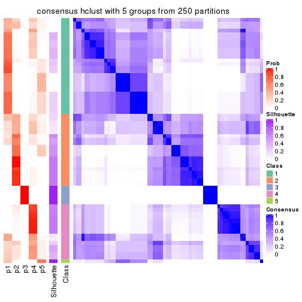
consensus_heatmap(res, k = 6)
Heatmaps for the membership of samples in all partitions to see how consistent they are:
membership_heatmap(res, k = 2)
membership_heatmap(res, k = 3)
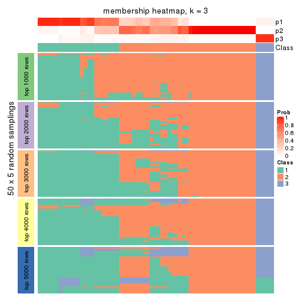
membership_heatmap(res, k = 4)
membership_heatmap(res, k = 5)
membership_heatmap(res, k = 6)
As soon as we have had the classes for columns, we can look for signatures which are significantly different between classes which can be candidate marks for certain classes. Following are the heatmaps for signatures.
Signature heatmaps where rows are scaled:
get_signatures(res, k = 2)
get_signatures(res, k = 3)
get_signatures(res, k = 4)
get_signatures(res, k = 5)
get_signatures(res, k = 6)
Signature heatmaps where rows are not scaled:
get_signatures(res, k = 2, scale_rows = FALSE)
get_signatures(res, k = 3, scale_rows = FALSE)
get_signatures(res, k = 4, scale_rows = FALSE)
get_signatures(res, k = 5, scale_rows = FALSE)
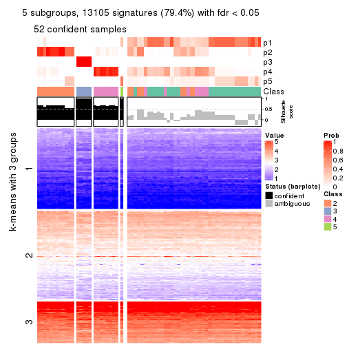
get_signatures(res, k = 6, scale_rows = FALSE)
Compare the overlap of signatures from different k:
compare_signatures(res)
get_signature() returns a data frame invisibly. TO get the list of signatures, the function
call should be assigned to a variable explicitly. In following code, if plot argument is set
to FALSE, no heatmap is plotted while only the differential analysis is performed.
# code only for demonstration
tb = get_signature(res, k = ..., plot = FALSE)
An example of the output of tb is:
#> which_row fdr mean_1 mean_2 scaled_mean_1 scaled_mean_2 km
#> 1 38 0.042760348 8.373488 9.131774 -0.5533452 0.5164555 1
#> 2 40 0.018707592 7.106213 8.469186 -0.6173731 0.5762149 1
#> 3 55 0.019134737 10.221463 11.207825 -0.6159697 0.5749050 1
#> 4 59 0.006059896 5.921854 7.869574 -0.6899429 0.6439467 1
#> 5 60 0.018055526 8.928898 10.211722 -0.6204761 0.5791110 1
#> 6 98 0.009384629 15.714769 14.887706 0.6635654 -0.6193277 2
...
The columns in tb are:
which_row: row indices corresponding to the input matrix.fdr: FDR for the differential test. mean_x: The mean value in group x.scaled_mean_x: The mean value in group x after rows are scaled.km: Row groups if k-means clustering is applied to rows.UMAP plot which shows how samples are separated.
dimension_reduction(res, k = 2, method = "UMAP")
dimension_reduction(res, k = 3, method = "UMAP")
dimension_reduction(res, k = 4, method = "UMAP")
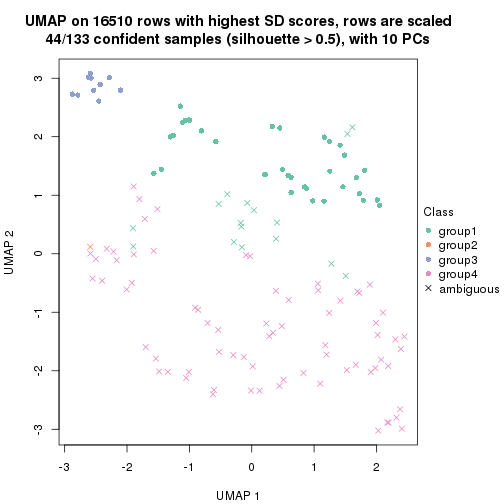
dimension_reduction(res, k = 5, method = "UMAP")
dimension_reduction(res, k = 6, method = "UMAP")
Following heatmap shows how subgroups are split when increasing k:
collect_classes(res)
If matrix rows can be associated to genes, consider to use GO_Enrichment(res,
...) to perform function enrichment for the signature genes.
The object with results only for a single top-value method and a single partition method can be extracted as:
res = res_list["SD", "kmeans"]
# you can also extract it by
# res = res_list["SD:kmeans"]
A summary of res and all the functions that can be applied to it:
res
#> A 'ConsensusPartition' object with k = 2, 3, 4, 5, 6.
#> On a matrix with 16510 rows and 133 columns.
#> Top rows (1000, 2000, 3000, 4000, 5000) are extracted by 'SD' method.
#> Subgroups are detected by 'kmeans' method.
#> Performed in total 1250 partitions by row resampling.
#> Best k for subgroups seems to be 2.
#>
#> Following methods can be applied to this 'ConsensusPartition' object:
#> [1] "cola_report" "collect_classes" "collect_plots"
#> [4] "collect_stats" "colnames" "compare_signatures"
#> [7] "consensus_heatmap" "dimension_reduction" "functional_enrichment"
#> [10] "get_anno_col" "get_anno" "get_classes"
#> [13] "get_consensus" "get_matrix" "get_membership"
#> [16] "get_param" "get_signatures" "get_stats"
#> [19] "is_best_k" "is_stable_k" "membership_heatmap"
#> [22] "ncol" "nrow" "plot_ecdf"
#> [25] "rownames" "select_partition_number" "show"
#> [28] "suggest_best_k" "test_to_known_factors"
collect_plots() function collects all the plots made from res for all k (number of partitions)
into one single page to provide an easy and fast comparison between different k.
collect_plots(res)
The plots are:
k and the heatmap of
predicted classes for each k.k.k.k.All the plots in panels can be made by individual functions and they are plotted later in this section.
select_partition_number() produces several plots showing different
statistics for choosing “optimized” k. There are following statistics:
k;k, the area increased is defined as \(A_k - A_{k-1}\).The detailed explanations of these statistics can be found in the cola vignette.
Generally speaking, lower PAC score, higher mean silhouette score or higher
concordance corresponds to better partition. Rand index and Jaccard index
measure how similar the current partition is compared to partition with k-1.
If they are too similar, we won't accept k is better than k-1.
select_partition_number(res)
The numeric values for all these statistics can be obtained by get_stats().
get_stats(res)
#> k 1-PAC mean_silhouette concordance area_increased Rand Jaccard
#> 2 2 0.195 0.725 0.816 0.4193 0.497 0.497
#> 3 3 0.273 0.581 0.732 0.3968 0.834 0.695
#> 4 4 0.417 0.645 0.761 0.1680 0.840 0.644
#> 5 5 0.524 0.523 0.714 0.0878 0.883 0.649
#> 6 6 0.596 0.600 0.734 0.0568 0.861 0.523
suggest_best_k() suggests the best \(k\) based on these statistics. The rules are as follows:
NA.suggest_best_k(res)
#> [1] 2
Following shows the table of the partitions (You need to click the show/hide
code output link to see it). The membership matrix (columns with name p*)
is inferred by
clue::cl_consensus()
function with the SE method. Basically the value in the membership matrix
represents the probability to belong to a certain group. The finall class
label for an item is determined with the group with highest probability it
belongs to.
In get_classes() function, the entropy is calculated from the membership
matrix and the silhouette score is calculated from the consensus matrix.
cbind(get_classes(res, k = 2), get_membership(res, k = 2))
#> class entropy silhouette p1 p2
#> ERR946976 1 0.6887 0.798 0.816 0.184
#> ERR947001 1 0.6887 0.798 0.816 0.184
#> ERR946975 2 0.4431 0.835 0.092 0.908
#> ERR947000 2 0.4431 0.835 0.092 0.908
#> ERR946972 1 0.4690 0.649 0.900 0.100
#> ERR946997 1 0.4690 0.649 0.900 0.100
#> ERR946986 1 0.9922 0.508 0.552 0.448
#> ERR947011 1 0.9922 0.508 0.552 0.448
#> ERR946977 2 0.8499 0.529 0.276 0.724
#> ERR947002 2 0.8499 0.529 0.276 0.724
#> ERR946974 2 0.8386 0.437 0.268 0.732
#> ERR946999 2 0.8386 0.437 0.268 0.732
#> ERR946971 1 0.2236 0.683 0.964 0.036
#> ERR946996 1 0.2236 0.683 0.964 0.036
#> ERR946992 2 0.0672 0.835 0.008 0.992
#> ERR947017 2 0.0672 0.835 0.008 0.992
#> ERR946984 2 0.8555 0.600 0.280 0.720
#> ERR947009 2 0.8555 0.600 0.280 0.720
#> ERR946987 2 0.0672 0.835 0.008 0.992
#> ERR947012 2 0.0672 0.835 0.008 0.992
#> ERR946991 2 0.3274 0.830 0.060 0.940
#> ERR947016 2 0.3274 0.830 0.060 0.940
#> ERR946983 2 0.5842 0.819 0.140 0.860
#> ERR947008 2 0.5842 0.819 0.140 0.860
#> ERR946970 1 0.9909 0.609 0.556 0.444
#> ERR946995 1 0.9909 0.609 0.556 0.444
#> ERR946969 1 0.9896 0.540 0.560 0.440
#> ERR946994 1 0.9896 0.540 0.560 0.440
#> ERR946982 2 0.0938 0.835 0.012 0.988
#> ERR947007 2 0.0938 0.835 0.012 0.988
#> ERR946988 2 0.4298 0.833 0.088 0.912
#> ERR947013 2 0.4298 0.833 0.088 0.912
#> ERR946985 2 0.0672 0.835 0.008 0.992
#> ERR947010 2 0.0672 0.835 0.008 0.992
#> ERR946989 2 0.9850 -0.298 0.428 0.572
#> ERR947014 2 0.9850 -0.298 0.428 0.572
#> ERR946968 1 0.6531 0.792 0.832 0.168
#> ERR946993 1 0.6531 0.792 0.832 0.168
#> ERR946990 1 0.9732 0.622 0.596 0.404
#> ERR947015 1 0.9732 0.622 0.596 0.404
#> ERR946980 2 0.8955 0.502 0.312 0.688
#> ERR947005 2 0.8955 0.502 0.312 0.688
#> ERR946978 1 0.6438 0.796 0.836 0.164
#> ERR947003 1 0.6438 0.796 0.836 0.164
#> ERR946979 2 0.1843 0.821 0.028 0.972
#> ERR947004 2 0.1843 0.821 0.028 0.972
#> ERR946957 1 0.2236 0.683 0.964 0.036
#> ERR946962 1 0.2236 0.683 0.964 0.036
#> ERR946958 1 0.6712 0.797 0.824 0.176
#> ERR946963 1 0.6712 0.797 0.824 0.176
#> ERR946959 1 0.6438 0.796 0.836 0.164
#> ERR946964 1 0.6438 0.796 0.836 0.164
#> ERR946967 1 0.2948 0.679 0.948 0.052
#> ERR862690 1 0.2948 0.679 0.948 0.052
#> ERR914278 2 0.0938 0.835 0.012 0.988
#> ERR914314 2 0.0938 0.835 0.012 0.988
#> ERR914279 1 0.6801 0.798 0.820 0.180
#> ERR914315 1 0.6801 0.798 0.820 0.180
#> ERR914280 2 0.1633 0.837 0.024 0.976
#> ERR914316 2 0.1633 0.837 0.024 0.976
#> ERR914281 2 0.0938 0.834 0.012 0.988
#> ERR914317 2 0.0938 0.834 0.012 0.988
#> ERR914282 2 0.5842 0.819 0.140 0.860
#> ERR914318 2 0.5842 0.819 0.140 0.860
#> ERR914283 1 0.6438 0.796 0.836 0.164
#> ERR914319 1 0.6438 0.796 0.836 0.164
#> ERR914284 1 0.8608 0.778 0.716 0.284
#> ERR914320 1 0.8608 0.778 0.716 0.284
#> ERR914285 2 0.7453 0.589 0.212 0.788
#> ERR914321 2 0.7453 0.589 0.212 0.788
#> ERR914286 2 0.1414 0.836 0.020 0.980
#> ERR914322 2 0.1414 0.836 0.020 0.980
#> ERR914287 1 0.8267 0.784 0.740 0.260
#> ERR914323 1 0.8267 0.784 0.740 0.260
#> ERR914288 2 0.7883 0.687 0.236 0.764
#> ERR914324 2 0.7883 0.687 0.236 0.764
#> ERR914289 1 0.9988 0.511 0.520 0.480
#> ERR914290 1 0.8386 0.781 0.732 0.268
#> ERR914326 1 0.8386 0.781 0.732 0.268
#> ERR914291 2 0.5519 0.819 0.128 0.872
#> ERR914327 2 0.5519 0.819 0.128 0.872
#> ERR914292 1 0.9850 0.559 0.572 0.428
#> ERR914328 1 0.9850 0.559 0.572 0.428
#> ERR914293 1 0.8386 0.781 0.732 0.268
#> ERR914329 1 0.8386 0.781 0.732 0.268
#> ERR914294 2 0.0938 0.835 0.012 0.988
#> ERR914330 2 0.0938 0.835 0.012 0.988
#> ERR914295 1 0.8144 0.787 0.748 0.252
#> ERR914331 1 0.8144 0.787 0.748 0.252
#> ERR914296 1 0.6343 0.792 0.840 0.160
#> ERR914332 1 0.6343 0.792 0.840 0.160
#> ERR914297 1 0.9775 0.449 0.588 0.412
#> ERR914333 1 0.9775 0.449 0.588 0.412
#> ERR914298 1 0.6048 0.788 0.852 0.148
#> ERR914334 1 0.6048 0.788 0.852 0.148
#> ERR914299 2 0.5737 0.815 0.136 0.864
#> ERR914335 2 0.5737 0.815 0.136 0.864
#> ERR914300 1 0.9129 0.737 0.672 0.328
#> ERR914336 1 0.9129 0.737 0.672 0.328
#> ERR914301 2 0.6973 0.798 0.188 0.812
#> ERR914337 2 0.6973 0.798 0.188 0.812
#> ERR914302 2 0.0938 0.835 0.012 0.988
#> ERR914338 2 0.0938 0.835 0.012 0.988
#> ERR914303 2 0.6148 0.818 0.152 0.848
#> ERR914339 2 0.6148 0.818 0.152 0.848
#> ERR914304 2 0.6148 0.818 0.152 0.848
#> ERR914340 2 0.6148 0.818 0.152 0.848
#> ERR914305 2 0.6148 0.818 0.152 0.848
#> ERR914341 2 0.6148 0.818 0.152 0.848
#> ERR914306 2 0.4815 0.804 0.104 0.896
#> ERR914342 2 0.4815 0.804 0.104 0.896
#> ERR914307 1 0.9833 0.569 0.576 0.424
#> ERR914343 1 0.9833 0.569 0.576 0.424
#> ERR914308 1 0.8327 0.781 0.736 0.264
#> ERR914344 1 0.8327 0.781 0.736 0.264
#> ERR914309 1 0.8386 0.781 0.732 0.268
#> ERR914345 1 0.8386 0.781 0.732 0.268
#> ERR914310 1 0.9909 0.549 0.556 0.444
#> ERR914346 1 0.9909 0.549 0.556 0.444
#> ERR914311 2 0.5737 0.826 0.136 0.864
#> ERR914347 2 0.5737 0.826 0.136 0.864
#> ERR914312 2 0.3733 0.839 0.072 0.928
#> ERR914348 2 0.3733 0.839 0.072 0.928
#> ERR914313 2 0.0672 0.835 0.008 0.992
#> ERR914349 2 0.0672 0.835 0.008 0.992
#> ERR946960 1 0.6438 0.791 0.836 0.164
#> ERR946965 1 0.6438 0.791 0.836 0.164
#> ERR946966 2 0.6801 0.778 0.180 0.820
#> ERR946973 1 0.2236 0.683 0.964 0.036
#> ERR946998 1 0.2236 0.683 0.964 0.036
#> ERR946981 2 0.5629 0.825 0.132 0.868
#> ERR947006 2 0.5629 0.825 0.132 0.868
#> ERR914325 1 0.9988 0.511 0.520 0.480
cbind(get_classes(res, k = 3), get_membership(res, k = 3))
#> class entropy silhouette p1 p2 p3
#> ERR946976 1 0.335 0.5406 0.888 0.004 0.108
#> ERR947001 1 0.335 0.5406 0.888 0.004 0.108
#> ERR946975 2 0.710 0.6327 0.240 0.692 0.068
#> ERR947000 2 0.710 0.6327 0.240 0.692 0.068
#> ERR946972 3 0.735 0.8799 0.316 0.052 0.632
#> ERR946997 3 0.735 0.8799 0.316 0.052 0.632
#> ERR946986 1 0.741 0.5775 0.692 0.204 0.104
#> ERR947011 1 0.741 0.5775 0.692 0.204 0.104
#> ERR946977 2 0.906 0.2673 0.364 0.492 0.144
#> ERR947002 2 0.906 0.2673 0.364 0.492 0.144
#> ERR946974 1 0.993 0.0474 0.392 0.316 0.292
#> ERR946999 1 0.993 0.0474 0.392 0.316 0.292
#> ERR946971 3 0.697 0.9384 0.416 0.020 0.564
#> ERR946996 3 0.697 0.9384 0.416 0.020 0.564
#> ERR946992 2 0.606 0.6490 0.016 0.708 0.276
#> ERR947017 2 0.606 0.6490 0.016 0.708 0.276
#> ERR946984 2 0.834 0.5211 0.256 0.612 0.132
#> ERR947009 2 0.834 0.5211 0.256 0.612 0.132
#> ERR946987 2 0.670 0.6271 0.024 0.648 0.328
#> ERR947012 2 0.670 0.6271 0.024 0.648 0.328
#> ERR946991 2 0.269 0.6845 0.032 0.932 0.036
#> ERR947016 2 0.269 0.6845 0.032 0.932 0.036
#> ERR946983 2 0.493 0.6335 0.232 0.768 0.000
#> ERR947008 2 0.493 0.6335 0.232 0.768 0.000
#> ERR946970 1 0.927 0.3192 0.528 0.224 0.248
#> ERR946995 1 0.927 0.3192 0.528 0.224 0.248
#> ERR946969 1 0.739 0.5761 0.692 0.208 0.100
#> ERR946994 1 0.739 0.5761 0.692 0.208 0.100
#> ERR946982 2 0.657 0.6428 0.028 0.680 0.292
#> ERR947007 2 0.657 0.6428 0.028 0.680 0.292
#> ERR946988 2 0.843 0.5569 0.240 0.612 0.148
#> ERR947013 2 0.843 0.5569 0.240 0.612 0.148
#> ERR946985 2 0.721 0.6108 0.040 0.620 0.340
#> ERR947010 2 0.721 0.6108 0.040 0.620 0.340
#> ERR946989 1 0.990 0.1125 0.404 0.292 0.304
#> ERR947014 1 0.990 0.1125 0.404 0.292 0.304
#> ERR946968 1 0.433 0.4801 0.844 0.012 0.144
#> ERR946993 1 0.433 0.4801 0.844 0.012 0.144
#> ERR946990 1 0.604 0.6397 0.788 0.100 0.112
#> ERR947015 1 0.604 0.6397 0.788 0.100 0.112
#> ERR946980 1 0.864 -0.1142 0.456 0.444 0.100
#> ERR947005 1 0.864 -0.1142 0.456 0.444 0.100
#> ERR946978 1 0.369 0.5109 0.880 0.012 0.108
#> ERR947003 1 0.369 0.5109 0.880 0.012 0.108
#> ERR946979 2 0.268 0.6704 0.008 0.924 0.068
#> ERR947004 2 0.268 0.6704 0.008 0.924 0.068
#> ERR946957 3 0.697 0.9384 0.416 0.020 0.564
#> ERR946962 3 0.697 0.9384 0.416 0.020 0.564
#> ERR946958 1 0.296 0.5355 0.900 0.000 0.100
#> ERR946963 1 0.296 0.5355 0.900 0.000 0.100
#> ERR946959 1 0.369 0.5109 0.880 0.012 0.108
#> ERR946964 1 0.369 0.5109 0.880 0.012 0.108
#> ERR946967 3 0.727 0.9139 0.352 0.040 0.608
#> ERR862690 3 0.727 0.9139 0.352 0.040 0.608
#> ERR914278 2 0.673 0.6497 0.036 0.680 0.284
#> ERR914314 2 0.673 0.6497 0.036 0.680 0.284
#> ERR914279 1 0.116 0.6098 0.972 0.000 0.028
#> ERR914315 1 0.116 0.6098 0.972 0.000 0.028
#> ERR914280 2 0.727 0.6748 0.096 0.700 0.204
#> ERR914316 2 0.727 0.6748 0.096 0.700 0.204
#> ERR914281 2 0.639 0.6407 0.020 0.680 0.300
#> ERR914317 2 0.639 0.6407 0.020 0.680 0.300
#> ERR914282 2 0.489 0.6359 0.228 0.772 0.000
#> ERR914318 2 0.489 0.6359 0.228 0.772 0.000
#> ERR914283 1 0.382 0.4510 0.852 0.000 0.148
#> ERR914319 1 0.382 0.4510 0.852 0.000 0.148
#> ERR914284 1 0.367 0.6568 0.896 0.040 0.064
#> ERR914320 1 0.367 0.6568 0.896 0.040 0.064
#> ERR914285 2 0.996 0.1826 0.300 0.376 0.324
#> ERR914321 2 0.996 0.1826 0.300 0.376 0.324
#> ERR914286 2 0.649 0.6745 0.064 0.744 0.192
#> ERR914322 2 0.649 0.6745 0.064 0.744 0.192
#> ERR914287 1 0.207 0.6591 0.940 0.060 0.000
#> ERR914323 1 0.207 0.6591 0.940 0.060 0.000
#> ERR914288 1 0.784 0.3509 0.600 0.328 0.072
#> ERR914324 1 0.784 0.3509 0.600 0.328 0.072
#> ERR914289 1 0.728 0.5769 0.712 0.136 0.152
#> ERR914290 1 0.230 0.6584 0.936 0.060 0.004
#> ERR914326 1 0.230 0.6584 0.936 0.060 0.004
#> ERR914291 2 0.506 0.6246 0.244 0.756 0.000
#> ERR914327 2 0.506 0.6246 0.244 0.756 0.000
#> ERR914292 1 0.615 0.6232 0.772 0.160 0.068
#> ERR914328 1 0.615 0.6232 0.772 0.160 0.068
#> ERR914293 1 0.207 0.6591 0.940 0.060 0.000
#> ERR914329 1 0.207 0.6591 0.940 0.060 0.000
#> ERR914294 2 0.665 0.6462 0.032 0.680 0.288
#> ERR914330 2 0.665 0.6462 0.032 0.680 0.288
#> ERR914295 1 0.231 0.6554 0.944 0.032 0.024
#> ERR914331 1 0.231 0.6554 0.944 0.032 0.024
#> ERR914296 1 0.369 0.5109 0.880 0.012 0.108
#> ERR914332 1 0.369 0.5109 0.880 0.012 0.108
#> ERR914297 1 0.841 0.3656 0.604 0.264 0.132
#> ERR914333 1 0.841 0.3656 0.604 0.264 0.132
#> ERR914298 1 0.486 0.4228 0.808 0.012 0.180
#> ERR914334 1 0.486 0.4228 0.808 0.012 0.180
#> ERR914299 2 0.514 0.6191 0.252 0.748 0.000
#> ERR914335 2 0.514 0.6191 0.252 0.748 0.000
#> ERR914300 1 0.389 0.6650 0.888 0.064 0.048
#> ERR914336 1 0.389 0.6650 0.888 0.064 0.048
#> ERR914301 2 0.726 0.6039 0.164 0.712 0.124
#> ERR914337 2 0.726 0.6039 0.164 0.712 0.124
#> ERR914302 2 0.666 0.6410 0.028 0.668 0.304
#> ERR914338 2 0.666 0.6410 0.028 0.668 0.304
#> ERR914303 2 0.541 0.6365 0.224 0.764 0.012
#> ERR914339 2 0.541 0.6365 0.224 0.764 0.012
#> ERR914304 2 0.541 0.6355 0.224 0.764 0.012
#> ERR914340 2 0.541 0.6355 0.224 0.764 0.012
#> ERR914305 2 0.525 0.6364 0.224 0.768 0.008
#> ERR914341 2 0.525 0.6364 0.224 0.768 0.008
#> ERR914306 2 0.556 0.6130 0.048 0.800 0.152
#> ERR914342 2 0.556 0.6130 0.048 0.800 0.152
#> ERR914307 1 0.594 0.6421 0.792 0.120 0.088
#> ERR914343 1 0.594 0.6421 0.792 0.120 0.088
#> ERR914308 1 0.207 0.6591 0.940 0.060 0.000
#> ERR914344 1 0.207 0.6591 0.940 0.060 0.000
#> ERR914309 1 0.207 0.6591 0.940 0.060 0.000
#> ERR914345 1 0.207 0.6591 0.940 0.060 0.000
#> ERR914310 1 0.559 0.6474 0.812 0.092 0.096
#> ERR914346 1 0.559 0.6474 0.812 0.092 0.096
#> ERR914311 2 0.522 0.6458 0.208 0.780 0.012
#> ERR914347 2 0.522 0.6458 0.208 0.780 0.012
#> ERR914312 2 0.778 0.6318 0.240 0.656 0.104
#> ERR914348 2 0.778 0.6318 0.240 0.656 0.104
#> ERR914313 2 0.651 0.6404 0.024 0.676 0.300
#> ERR914349 2 0.651 0.6404 0.024 0.676 0.300
#> ERR946960 1 0.447 0.4083 0.820 0.004 0.176
#> ERR946965 1 0.447 0.4083 0.820 0.004 0.176
#> ERR946966 2 0.571 0.5134 0.320 0.680 0.000
#> ERR946973 3 0.697 0.9384 0.416 0.020 0.564
#> ERR946998 3 0.697 0.9384 0.416 0.020 0.564
#> ERR946981 2 0.511 0.6452 0.212 0.780 0.008
#> ERR947006 2 0.511 0.6452 0.212 0.780 0.008
#> ERR914325 1 0.728 0.5769 0.712 0.136 0.152
cbind(get_classes(res, k = 4), get_membership(res, k = 4))
#> class entropy silhouette p1 p2 p3 p4
#> ERR946976 1 0.436 0.683 0.828 0.008 0.092 0.072
#> ERR947001 1 0.436 0.683 0.828 0.008 0.092 0.072
#> ERR946975 2 0.595 0.596 0.112 0.712 0.008 0.168
#> ERR947000 2 0.595 0.596 0.112 0.712 0.008 0.168
#> ERR946972 3 0.404 0.910 0.108 0.016 0.844 0.032
#> ERR946997 3 0.404 0.910 0.108 0.016 0.844 0.032
#> ERR946986 1 0.819 0.470 0.532 0.256 0.056 0.156
#> ERR947011 1 0.819 0.470 0.532 0.256 0.056 0.156
#> ERR946977 2 0.883 0.338 0.236 0.464 0.072 0.228
#> ERR947002 2 0.883 0.338 0.236 0.464 0.072 0.228
#> ERR946974 4 0.594 0.341 0.324 0.020 0.024 0.632
#> ERR946999 4 0.594 0.341 0.324 0.020 0.024 0.632
#> ERR946971 3 0.416 0.943 0.192 0.012 0.792 0.004
#> ERR946996 3 0.416 0.943 0.192 0.012 0.792 0.004
#> ERR946992 4 0.465 0.735 0.004 0.220 0.020 0.756
#> ERR947017 4 0.465 0.735 0.004 0.220 0.020 0.756
#> ERR946984 2 0.858 0.419 0.172 0.528 0.096 0.204
#> ERR947009 2 0.858 0.419 0.172 0.528 0.096 0.204
#> ERR946987 4 0.419 0.761 0.004 0.164 0.024 0.808
#> ERR947012 4 0.419 0.761 0.004 0.164 0.024 0.808
#> ERR946991 2 0.458 0.628 0.008 0.804 0.048 0.140
#> ERR947016 2 0.458 0.628 0.008 0.804 0.048 0.140
#> ERR946983 2 0.172 0.758 0.048 0.944 0.000 0.008
#> ERR947008 2 0.172 0.758 0.048 0.944 0.000 0.008
#> ERR946970 1 0.684 0.134 0.468 0.016 0.060 0.456
#> ERR946995 1 0.684 0.134 0.468 0.016 0.060 0.456
#> ERR946969 1 0.837 0.417 0.504 0.280 0.060 0.156
#> ERR946994 1 0.837 0.417 0.504 0.280 0.060 0.156
#> ERR946982 4 0.389 0.762 0.004 0.192 0.004 0.800
#> ERR947007 4 0.389 0.762 0.004 0.192 0.004 0.800
#> ERR946988 2 0.829 0.399 0.144 0.528 0.068 0.260
#> ERR947013 2 0.829 0.399 0.144 0.528 0.068 0.260
#> ERR946985 4 0.394 0.751 0.004 0.136 0.028 0.832
#> ERR947010 4 0.394 0.751 0.004 0.136 0.028 0.832
#> ERR946989 4 0.664 0.308 0.324 0.020 0.060 0.596
#> ERR947014 4 0.664 0.308 0.324 0.020 0.060 0.596
#> ERR946968 1 0.443 0.666 0.812 0.000 0.096 0.092
#> ERR946993 1 0.443 0.666 0.812 0.000 0.096 0.092
#> ERR946990 1 0.645 0.656 0.704 0.060 0.064 0.172
#> ERR947015 1 0.645 0.656 0.704 0.060 0.064 0.172
#> ERR946980 2 0.790 0.385 0.276 0.544 0.044 0.136
#> ERR947005 2 0.790 0.385 0.276 0.544 0.044 0.136
#> ERR946978 1 0.450 0.671 0.820 0.084 0.088 0.008
#> ERR947003 1 0.450 0.671 0.820 0.084 0.088 0.008
#> ERR946979 2 0.569 0.444 0.000 0.672 0.060 0.268
#> ERR947004 2 0.569 0.444 0.000 0.672 0.060 0.268
#> ERR946957 3 0.398 0.944 0.192 0.012 0.796 0.000
#> ERR946962 3 0.398 0.944 0.192 0.012 0.796 0.000
#> ERR946958 1 0.302 0.703 0.900 0.024 0.060 0.016
#> ERR946963 1 0.302 0.703 0.900 0.024 0.060 0.016
#> ERR946959 1 0.443 0.670 0.824 0.080 0.088 0.008
#> ERR946964 1 0.443 0.670 0.824 0.080 0.088 0.008
#> ERR946967 3 0.401 0.919 0.112 0.020 0.844 0.024
#> ERR862690 3 0.401 0.919 0.112 0.020 0.844 0.024
#> ERR914278 4 0.406 0.757 0.016 0.172 0.004 0.808
#> ERR914314 4 0.406 0.757 0.016 0.172 0.004 0.808
#> ERR914279 1 0.139 0.729 0.964 0.016 0.012 0.008
#> ERR914315 1 0.139 0.729 0.964 0.016 0.012 0.008
#> ERR914280 4 0.615 0.421 0.036 0.404 0.008 0.552
#> ERR914316 4 0.615 0.421 0.036 0.404 0.008 0.552
#> ERR914281 4 0.446 0.758 0.004 0.180 0.028 0.788
#> ERR914317 4 0.446 0.758 0.004 0.180 0.028 0.788
#> ERR914282 2 0.198 0.758 0.048 0.936 0.000 0.016
#> ERR914318 2 0.198 0.758 0.048 0.936 0.000 0.016
#> ERR914283 1 0.417 0.655 0.836 0.052 0.104 0.008
#> ERR914319 1 0.417 0.655 0.836 0.052 0.104 0.008
#> ERR914284 1 0.396 0.715 0.844 0.020 0.020 0.116
#> ERR914320 1 0.396 0.715 0.844 0.020 0.020 0.116
#> ERR914285 4 0.596 0.542 0.208 0.036 0.044 0.712
#> ERR914321 4 0.596 0.542 0.208 0.036 0.044 0.712
#> ERR914286 4 0.619 0.321 0.052 0.432 0.000 0.516
#> ERR914322 4 0.619 0.321 0.052 0.432 0.000 0.516
#> ERR914287 1 0.313 0.735 0.876 0.108 0.008 0.008
#> ERR914323 1 0.313 0.735 0.876 0.108 0.008 0.008
#> ERR914288 1 0.775 0.320 0.460 0.364 0.012 0.164
#> ERR914324 1 0.775 0.320 0.460 0.364 0.012 0.164
#> ERR914289 1 0.586 0.651 0.712 0.040 0.032 0.216
#> ERR914290 1 0.300 0.738 0.884 0.100 0.008 0.008
#> ERR914326 1 0.300 0.738 0.884 0.100 0.008 0.008
#> ERR914291 2 0.245 0.750 0.072 0.912 0.000 0.016
#> ERR914327 2 0.245 0.750 0.072 0.912 0.000 0.016
#> ERR914292 1 0.706 0.618 0.636 0.184 0.024 0.156
#> ERR914328 1 0.706 0.618 0.636 0.184 0.024 0.156
#> ERR914293 1 0.307 0.737 0.880 0.104 0.008 0.008
#> ERR914329 1 0.307 0.737 0.880 0.104 0.008 0.008
#> ERR914294 4 0.382 0.765 0.008 0.172 0.004 0.816
#> ERR914330 4 0.382 0.765 0.008 0.172 0.004 0.816
#> ERR914295 1 0.248 0.744 0.916 0.052 0.000 0.032
#> ERR914331 1 0.248 0.744 0.916 0.052 0.000 0.032
#> ERR914296 1 0.450 0.674 0.820 0.088 0.084 0.008
#> ERR914332 1 0.450 0.674 0.820 0.088 0.084 0.008
#> ERR914297 1 0.838 0.256 0.468 0.344 0.116 0.072
#> ERR914333 1 0.838 0.256 0.468 0.344 0.116 0.072
#> ERR914298 1 0.518 0.623 0.788 0.064 0.120 0.028
#> ERR914334 1 0.518 0.623 0.788 0.064 0.120 0.028
#> ERR914299 2 0.252 0.748 0.076 0.908 0.000 0.016
#> ERR914335 2 0.252 0.748 0.076 0.908 0.000 0.016
#> ERR914300 1 0.395 0.740 0.840 0.096 0.000 0.064
#> ERR914336 1 0.395 0.740 0.840 0.096 0.000 0.064
#> ERR914301 2 0.578 0.617 0.020 0.744 0.132 0.104
#> ERR914337 2 0.578 0.617 0.020 0.744 0.132 0.104
#> ERR914302 4 0.430 0.755 0.008 0.192 0.012 0.788
#> ERR914338 4 0.430 0.755 0.008 0.192 0.012 0.788
#> ERR914303 2 0.222 0.757 0.044 0.932 0.016 0.008
#> ERR914339 2 0.222 0.757 0.044 0.932 0.016 0.008
#> ERR914304 2 0.198 0.758 0.048 0.936 0.016 0.000
#> ERR914340 2 0.198 0.758 0.048 0.936 0.016 0.000
#> ERR914305 2 0.197 0.757 0.044 0.940 0.008 0.008
#> ERR914341 2 0.197 0.757 0.044 0.940 0.008 0.008
#> ERR914306 2 0.650 0.465 0.000 0.640 0.160 0.200
#> ERR914342 2 0.650 0.465 0.000 0.640 0.160 0.200
#> ERR914307 1 0.613 0.679 0.720 0.092 0.028 0.160
#> ERR914343 1 0.613 0.679 0.720 0.092 0.028 0.160
#> ERR914308 1 0.307 0.737 0.880 0.104 0.008 0.008
#> ERR914344 1 0.307 0.737 0.880 0.104 0.008 0.008
#> ERR914309 1 0.281 0.741 0.896 0.088 0.008 0.008
#> ERR914345 1 0.281 0.741 0.896 0.088 0.008 0.008
#> ERR914310 1 0.555 0.697 0.748 0.072 0.016 0.164
#> ERR914346 1 0.555 0.697 0.748 0.072 0.016 0.164
#> ERR914311 2 0.239 0.753 0.036 0.928 0.012 0.024
#> ERR914347 2 0.239 0.753 0.036 0.928 0.012 0.024
#> ERR914312 2 0.601 0.533 0.104 0.676 0.000 0.220
#> ERR914348 2 0.601 0.533 0.104 0.676 0.000 0.220
#> ERR914313 4 0.450 0.758 0.004 0.184 0.028 0.784
#> ERR914349 4 0.450 0.758 0.004 0.184 0.028 0.784
#> ERR946960 1 0.434 0.636 0.808 0.000 0.140 0.052
#> ERR946965 1 0.434 0.636 0.808 0.000 0.140 0.052
#> ERR946966 2 0.255 0.742 0.092 0.900 0.000 0.008
#> ERR946973 3 0.398 0.944 0.192 0.012 0.796 0.000
#> ERR946998 3 0.398 0.944 0.192 0.012 0.796 0.000
#> ERR946981 2 0.250 0.755 0.040 0.924 0.016 0.020
#> ERR947006 2 0.250 0.755 0.040 0.924 0.016 0.020
#> ERR914325 1 0.586 0.651 0.712 0.040 0.032 0.216
cbind(get_classes(res, k = 5), get_membership(res, k = 5))
#> class entropy silhouette p1 p2 p3 p4 p5
#> ERR946976 1 0.5400 0.20825 0.576 0.000 0.056 0.004 0.364
#> ERR947001 1 0.5400 0.20825 0.576 0.000 0.056 0.004 0.364
#> ERR946975 2 0.6241 0.56410 0.072 0.672 0.008 0.092 0.156
#> ERR947000 2 0.6241 0.56410 0.072 0.672 0.008 0.092 0.156
#> ERR946972 3 0.2403 0.91650 0.016 0.004 0.912 0.012 0.056
#> ERR946997 3 0.2403 0.91650 0.016 0.004 0.912 0.012 0.056
#> ERR946986 5 0.7739 0.48795 0.296 0.232 0.012 0.040 0.420
#> ERR947011 5 0.7739 0.48795 0.296 0.232 0.012 0.040 0.420
#> ERR946977 2 0.8195 -0.03903 0.140 0.392 0.024 0.092 0.352
#> ERR947002 2 0.8195 -0.03903 0.140 0.392 0.024 0.092 0.352
#> ERR946974 5 0.6968 0.29835 0.140 0.020 0.008 0.404 0.428
#> ERR946999 5 0.6968 0.29835 0.140 0.020 0.008 0.404 0.428
#> ERR946971 3 0.2295 0.95159 0.088 0.000 0.900 0.004 0.008
#> ERR946996 3 0.2295 0.95159 0.088 0.000 0.900 0.004 0.008
#> ERR946992 4 0.5295 0.76575 0.000 0.124 0.024 0.720 0.132
#> ERR947017 4 0.5295 0.76575 0.000 0.124 0.024 0.720 0.132
#> ERR946984 2 0.7872 0.16241 0.080 0.444 0.040 0.084 0.352
#> ERR947009 2 0.7872 0.16241 0.080 0.444 0.040 0.084 0.352
#> ERR946987 4 0.3018 0.81572 0.000 0.084 0.008 0.872 0.036
#> ERR947012 4 0.3018 0.81572 0.000 0.084 0.008 0.872 0.036
#> ERR946991 2 0.4760 0.60367 0.004 0.772 0.024 0.076 0.124
#> ERR947016 2 0.4760 0.60367 0.004 0.772 0.024 0.076 0.124
#> ERR946983 2 0.1869 0.69305 0.028 0.936 0.000 0.008 0.028
#> ERR947008 2 0.1869 0.69305 0.028 0.936 0.000 0.008 0.028
#> ERR946970 5 0.7210 0.48145 0.240 0.008 0.024 0.236 0.492
#> ERR946995 5 0.7210 0.48145 0.240 0.008 0.024 0.236 0.492
#> ERR946969 5 0.7727 0.46551 0.292 0.260 0.008 0.040 0.400
#> ERR946994 5 0.7727 0.46551 0.292 0.260 0.008 0.040 0.400
#> ERR946982 4 0.2983 0.82632 0.000 0.096 0.004 0.868 0.032
#> ERR947007 4 0.2983 0.82632 0.000 0.096 0.004 0.868 0.032
#> ERR946988 2 0.8085 0.10195 0.104 0.420 0.024 0.112 0.340
#> ERR947013 2 0.8085 0.10195 0.104 0.420 0.024 0.112 0.340
#> ERR946985 4 0.2916 0.78012 0.000 0.040 0.008 0.880 0.072
#> ERR947010 4 0.2916 0.78012 0.000 0.040 0.008 0.880 0.072
#> ERR946989 5 0.7107 0.31800 0.128 0.016 0.024 0.372 0.460
#> ERR947014 5 0.7107 0.31800 0.128 0.016 0.024 0.372 0.460
#> ERR946968 1 0.5962 0.09270 0.504 0.000 0.068 0.016 0.412
#> ERR946993 1 0.5962 0.09270 0.504 0.000 0.068 0.016 0.412
#> ERR946990 5 0.5918 0.31173 0.432 0.028 0.020 0.016 0.504
#> ERR947015 5 0.5918 0.31173 0.432 0.028 0.020 0.016 0.504
#> ERR946980 2 0.7088 0.01746 0.152 0.456 0.000 0.040 0.352
#> ERR947005 2 0.7088 0.01746 0.152 0.456 0.000 0.040 0.352
#> ERR946978 1 0.3059 0.69358 0.880 0.040 0.064 0.004 0.012
#> ERR947003 1 0.3059 0.69358 0.880 0.040 0.064 0.004 0.012
#> ERR946979 2 0.4627 0.46379 0.000 0.704 0.008 0.256 0.032
#> ERR947004 2 0.4627 0.46379 0.000 0.704 0.008 0.256 0.032
#> ERR946957 3 0.2136 0.95211 0.088 0.000 0.904 0.000 0.008
#> ERR946962 3 0.2136 0.95211 0.088 0.000 0.904 0.000 0.008
#> ERR946958 1 0.2540 0.69273 0.904 0.004 0.036 0.004 0.052
#> ERR946963 1 0.2540 0.69273 0.904 0.004 0.036 0.004 0.052
#> ERR946959 1 0.3162 0.69233 0.876 0.040 0.064 0.004 0.016
#> ERR946964 1 0.3162 0.69233 0.876 0.040 0.064 0.004 0.016
#> ERR946967 3 0.1780 0.93056 0.024 0.008 0.940 0.000 0.028
#> ERR862690 3 0.1780 0.93056 0.024 0.008 0.940 0.000 0.028
#> ERR914278 4 0.4016 0.79984 0.004 0.096 0.004 0.812 0.084
#> ERR914314 4 0.4016 0.79984 0.004 0.096 0.004 0.812 0.084
#> ERR914279 1 0.1357 0.69554 0.948 0.000 0.000 0.004 0.048
#> ERR914315 1 0.1357 0.69554 0.948 0.000 0.000 0.004 0.048
#> ERR914280 4 0.7218 0.26004 0.024 0.348 0.008 0.444 0.176
#> ERR914316 4 0.7218 0.26004 0.024 0.348 0.008 0.444 0.176
#> ERR914281 4 0.2761 0.82362 0.000 0.104 0.000 0.872 0.024
#> ERR914317 4 0.2761 0.82362 0.000 0.104 0.000 0.872 0.024
#> ERR914282 2 0.1455 0.69343 0.032 0.952 0.000 0.008 0.008
#> ERR914318 2 0.1455 0.69343 0.032 0.952 0.000 0.008 0.008
#> ERR914283 1 0.3490 0.66955 0.856 0.012 0.084 0.008 0.040
#> ERR914319 1 0.3490 0.66955 0.856 0.012 0.084 0.008 0.040
#> ERR914284 1 0.5023 -0.00658 0.540 0.004 0.008 0.012 0.436
#> ERR914320 1 0.5023 -0.00658 0.540 0.004 0.008 0.012 0.436
#> ERR914285 4 0.6424 -0.06519 0.080 0.016 0.012 0.504 0.388
#> ERR914321 4 0.6424 -0.06519 0.080 0.016 0.012 0.504 0.388
#> ERR914286 2 0.6703 0.02642 0.028 0.460 0.000 0.392 0.120
#> ERR914322 2 0.6703 0.02642 0.028 0.460 0.000 0.392 0.120
#> ERR914287 1 0.1764 0.70199 0.928 0.064 0.000 0.000 0.008
#> ERR914323 1 0.1764 0.70199 0.928 0.064 0.000 0.000 0.008
#> ERR914288 2 0.7491 -0.30663 0.264 0.364 0.000 0.036 0.336
#> ERR914324 2 0.7491 -0.30663 0.264 0.364 0.000 0.036 0.336
#> ERR914289 5 0.6266 0.39075 0.388 0.020 0.008 0.068 0.516
#> ERR914290 1 0.1740 0.70462 0.932 0.056 0.000 0.000 0.012
#> ERR914326 1 0.1740 0.70462 0.932 0.056 0.000 0.000 0.012
#> ERR914291 2 0.2949 0.68053 0.048 0.884 0.000 0.016 0.052
#> ERR914327 2 0.2949 0.68053 0.048 0.884 0.000 0.016 0.052
#> ERR914292 5 0.7218 0.40346 0.396 0.176 0.004 0.028 0.396
#> ERR914328 5 0.7218 0.40346 0.396 0.176 0.004 0.028 0.396
#> ERR914293 1 0.1764 0.70199 0.928 0.064 0.000 0.000 0.008
#> ERR914329 1 0.1764 0.70199 0.928 0.064 0.000 0.000 0.008
#> ERR914294 4 0.3086 0.82534 0.000 0.092 0.004 0.864 0.040
#> ERR914330 4 0.3086 0.82534 0.000 0.092 0.004 0.864 0.040
#> ERR914295 1 0.3409 0.59528 0.816 0.024 0.000 0.000 0.160
#> ERR914331 1 0.3409 0.59528 0.816 0.024 0.000 0.000 0.160
#> ERR914296 1 0.2910 0.69330 0.884 0.044 0.060 0.000 0.012
#> ERR914332 1 0.2910 0.69330 0.884 0.044 0.060 0.000 0.012
#> ERR914297 5 0.8507 -0.03880 0.288 0.264 0.048 0.048 0.352
#> ERR914333 5 0.8507 -0.03880 0.288 0.264 0.048 0.048 0.352
#> ERR914298 1 0.5082 0.60316 0.768 0.016 0.088 0.032 0.096
#> ERR914334 1 0.5082 0.60316 0.768 0.016 0.088 0.032 0.096
#> ERR914299 2 0.2949 0.68053 0.048 0.884 0.000 0.016 0.052
#> ERR914335 2 0.2949 0.68053 0.048 0.884 0.000 0.016 0.052
#> ERR914300 1 0.3888 0.61727 0.800 0.064 0.000 0.000 0.136
#> ERR914336 1 0.3888 0.61727 0.800 0.064 0.000 0.000 0.136
#> ERR914301 2 0.6393 0.47098 0.012 0.616 0.048 0.068 0.256
#> ERR914337 2 0.6393 0.47098 0.012 0.616 0.048 0.068 0.256
#> ERR914302 4 0.4700 0.79197 0.000 0.100 0.016 0.764 0.120
#> ERR914338 4 0.4700 0.79197 0.000 0.100 0.016 0.764 0.120
#> ERR914303 2 0.1186 0.69301 0.020 0.964 0.008 0.008 0.000
#> ERR914339 2 0.1186 0.69301 0.020 0.964 0.008 0.008 0.000
#> ERR914304 2 0.1997 0.69189 0.024 0.936 0.008 0.012 0.020
#> ERR914340 2 0.1997 0.69189 0.024 0.936 0.008 0.012 0.020
#> ERR914305 2 0.0865 0.69346 0.024 0.972 0.000 0.004 0.000
#> ERR914341 2 0.0865 0.69346 0.024 0.972 0.000 0.004 0.000
#> ERR914306 2 0.7047 0.34901 0.000 0.520 0.056 0.140 0.284
#> ERR914342 2 0.7047 0.34901 0.000 0.520 0.056 0.140 0.284
#> ERR914307 1 0.6414 -0.25252 0.472 0.080 0.004 0.024 0.420
#> ERR914343 1 0.6414 -0.25252 0.472 0.080 0.004 0.024 0.420
#> ERR914308 1 0.1877 0.70133 0.924 0.064 0.000 0.000 0.012
#> ERR914344 1 0.1877 0.70133 0.924 0.064 0.000 0.000 0.012
#> ERR914309 1 0.1701 0.70218 0.936 0.048 0.000 0.000 0.016
#> ERR914345 1 0.1701 0.70218 0.936 0.048 0.000 0.000 0.016
#> ERR914310 1 0.6001 -0.11656 0.520 0.044 0.004 0.028 0.404
#> ERR914346 1 0.6001 -0.11656 0.520 0.044 0.004 0.028 0.404
#> ERR914311 2 0.1393 0.69324 0.024 0.956 0.008 0.012 0.000
#> ERR914347 2 0.1393 0.69324 0.024 0.956 0.008 0.012 0.000
#> ERR914312 2 0.5565 0.58418 0.056 0.716 0.000 0.116 0.112
#> ERR914348 2 0.5565 0.58418 0.056 0.716 0.000 0.116 0.112
#> ERR914313 4 0.2573 0.82450 0.000 0.104 0.000 0.880 0.016
#> ERR914349 4 0.2573 0.82450 0.000 0.104 0.000 0.880 0.016
#> ERR946960 1 0.5280 0.54809 0.688 0.004 0.092 0.004 0.212
#> ERR946965 1 0.5280 0.54809 0.688 0.004 0.092 0.004 0.212
#> ERR946966 2 0.2885 0.67596 0.064 0.880 0.000 0.004 0.052
#> ERR946973 3 0.2248 0.95221 0.088 0.000 0.900 0.000 0.012
#> ERR946998 3 0.2248 0.95221 0.088 0.000 0.900 0.000 0.012
#> ERR946981 2 0.2954 0.68852 0.024 0.888 0.004 0.024 0.060
#> ERR947006 2 0.2954 0.68852 0.024 0.888 0.004 0.024 0.060
#> ERR914325 5 0.6266 0.39075 0.388 0.020 0.008 0.068 0.516
cbind(get_classes(res, k = 6), get_membership(res, k = 6))
#> class entropy silhouette p1 p2 p3 p4 p5 p6
#> ERR946976 1 0.5827 0.1357 0.480 0.000 0.020 0.004 0.400 0.096
#> ERR947001 1 0.5827 0.1357 0.480 0.000 0.020 0.004 0.400 0.096
#> ERR946975 2 0.7569 0.1609 0.068 0.516 0.004 0.112 0.176 0.124
#> ERR947000 2 0.7569 0.1609 0.068 0.516 0.004 0.112 0.176 0.124
#> ERR946972 3 0.2493 0.9259 0.012 0.000 0.896 0.012 0.016 0.064
#> ERR946997 3 0.2493 0.9259 0.012 0.000 0.896 0.012 0.016 0.064
#> ERR946986 5 0.6070 0.5619 0.176 0.144 0.004 0.008 0.620 0.048
#> ERR947011 5 0.6070 0.5619 0.176 0.144 0.004 0.008 0.620 0.048
#> ERR946977 5 0.6736 0.3483 0.016 0.308 0.016 0.064 0.520 0.076
#> ERR947002 5 0.6736 0.3483 0.016 0.308 0.016 0.064 0.520 0.076
#> ERR946974 5 0.5281 0.3295 0.040 0.008 0.000 0.336 0.588 0.028
#> ERR946999 5 0.5281 0.3295 0.040 0.008 0.000 0.336 0.588 0.028
#> ERR946971 3 0.1668 0.9536 0.060 0.000 0.928 0.000 0.008 0.004
#> ERR946996 3 0.1668 0.9536 0.060 0.000 0.928 0.000 0.008 0.004
#> ERR946992 4 0.5412 0.6830 0.000 0.036 0.008 0.668 0.096 0.192
#> ERR947017 4 0.5412 0.6830 0.000 0.036 0.008 0.668 0.096 0.192
#> ERR946984 5 0.6806 0.2429 0.004 0.304 0.020 0.028 0.472 0.172
#> ERR947009 5 0.6806 0.2429 0.004 0.304 0.020 0.028 0.472 0.172
#> ERR946987 4 0.2632 0.8063 0.000 0.028 0.016 0.896 0.020 0.040
#> ERR947012 4 0.2632 0.8063 0.000 0.028 0.016 0.896 0.020 0.040
#> ERR946991 2 0.5094 0.4466 0.000 0.692 0.004 0.024 0.116 0.164
#> ERR947016 2 0.5094 0.4466 0.000 0.692 0.004 0.024 0.116 0.164
#> ERR946983 2 0.1296 0.6833 0.004 0.952 0.000 0.000 0.032 0.012
#> ERR947008 2 0.1296 0.6833 0.004 0.952 0.000 0.000 0.032 0.012
#> ERR946970 5 0.6285 0.4747 0.088 0.000 0.012 0.188 0.604 0.108
#> ERR946995 5 0.6285 0.4747 0.088 0.000 0.012 0.188 0.604 0.108
#> ERR946969 5 0.5813 0.5455 0.124 0.200 0.004 0.008 0.632 0.032
#> ERR946994 5 0.5813 0.5455 0.124 0.200 0.004 0.008 0.632 0.032
#> ERR946982 4 0.2763 0.8134 0.000 0.028 0.004 0.884 0.052 0.032
#> ERR947007 4 0.2763 0.8134 0.000 0.028 0.004 0.884 0.052 0.032
#> ERR946988 5 0.6633 0.2729 0.012 0.352 0.012 0.076 0.488 0.060
#> ERR947013 5 0.6633 0.2729 0.012 0.352 0.012 0.076 0.488 0.060
#> ERR946985 4 0.2135 0.8007 0.000 0.012 0.012 0.920 0.024 0.032
#> ERR947010 4 0.2135 0.8007 0.000 0.012 0.012 0.920 0.024 0.032
#> ERR946989 5 0.5648 0.3839 0.024 0.008 0.008 0.276 0.612 0.072
#> ERR947014 5 0.5648 0.3839 0.024 0.008 0.008 0.276 0.612 0.072
#> ERR946968 5 0.6240 0.1268 0.380 0.000 0.024 0.016 0.472 0.108
#> ERR946993 5 0.6240 0.1268 0.380 0.000 0.024 0.016 0.472 0.108
#> ERR946990 5 0.5436 0.5263 0.196 0.020 0.008 0.000 0.652 0.124
#> ERR947015 5 0.5436 0.5263 0.196 0.020 0.008 0.000 0.652 0.124
#> ERR946980 5 0.5751 0.3198 0.040 0.372 0.004 0.008 0.532 0.044
#> ERR947005 5 0.5751 0.3198 0.040 0.372 0.004 0.008 0.532 0.044
#> ERR946978 1 0.1950 0.8053 0.928 0.008 0.020 0.000 0.012 0.032
#> ERR947003 1 0.1950 0.8053 0.928 0.008 0.020 0.000 0.012 0.032
#> ERR946979 2 0.5126 0.3272 0.000 0.676 0.008 0.212 0.020 0.084
#> ERR947004 2 0.5126 0.3272 0.000 0.676 0.008 0.212 0.020 0.084
#> ERR946957 3 0.1625 0.9529 0.060 0.000 0.928 0.000 0.012 0.000
#> ERR946962 3 0.1625 0.9529 0.060 0.000 0.928 0.000 0.012 0.000
#> ERR946958 1 0.3320 0.7961 0.840 0.004 0.012 0.000 0.092 0.052
#> ERR946963 1 0.3320 0.7961 0.840 0.004 0.012 0.000 0.092 0.052
#> ERR946959 1 0.1736 0.8080 0.936 0.008 0.020 0.000 0.004 0.032
#> ERR946964 1 0.1736 0.8080 0.936 0.008 0.020 0.000 0.004 0.032
#> ERR946967 3 0.2195 0.9388 0.024 0.000 0.912 0.000 0.028 0.036
#> ERR862690 3 0.2195 0.9388 0.024 0.000 0.912 0.000 0.028 0.036
#> ERR914278 4 0.4573 0.7220 0.000 0.044 0.004 0.740 0.168 0.044
#> ERR914314 4 0.4573 0.7220 0.000 0.044 0.004 0.740 0.168 0.044
#> ERR914279 1 0.2573 0.8103 0.864 0.000 0.000 0.000 0.112 0.024
#> ERR914315 1 0.2573 0.8103 0.864 0.000 0.000 0.000 0.112 0.024
#> ERR914280 4 0.7465 0.1999 0.012 0.260 0.004 0.440 0.164 0.120
#> ERR914316 4 0.7465 0.1999 0.012 0.260 0.004 0.440 0.164 0.120
#> ERR914281 4 0.2608 0.8080 0.000 0.028 0.012 0.896 0.020 0.044
#> ERR914317 4 0.2608 0.8080 0.000 0.028 0.012 0.896 0.020 0.044
#> ERR914282 2 0.0665 0.6809 0.004 0.980 0.000 0.000 0.008 0.008
#> ERR914318 2 0.0665 0.6809 0.004 0.980 0.000 0.000 0.008 0.008
#> ERR914283 1 0.2507 0.7902 0.892 0.000 0.020 0.000 0.028 0.060
#> ERR914319 1 0.2507 0.7902 0.892 0.000 0.020 0.000 0.028 0.060
#> ERR914284 5 0.5571 0.2283 0.360 0.000 0.004 0.012 0.532 0.092
#> ERR914320 5 0.5571 0.2283 0.360 0.000 0.004 0.012 0.532 0.092
#> ERR914285 5 0.5254 0.1793 0.020 0.008 0.000 0.416 0.520 0.036
#> ERR914321 5 0.5254 0.1793 0.020 0.008 0.000 0.416 0.520 0.036
#> ERR914286 2 0.7302 -0.0132 0.012 0.384 0.012 0.344 0.200 0.048
#> ERR914322 2 0.7302 -0.0132 0.012 0.384 0.012 0.344 0.200 0.048
#> ERR914287 1 0.1594 0.8246 0.932 0.016 0.000 0.000 0.052 0.000
#> ERR914323 1 0.1594 0.8246 0.932 0.016 0.000 0.000 0.052 0.000
#> ERR914288 5 0.6592 0.3713 0.192 0.328 0.008 0.004 0.448 0.020
#> ERR914324 5 0.6592 0.3713 0.192 0.328 0.008 0.004 0.448 0.020
#> ERR914289 5 0.5246 0.5191 0.204 0.012 0.004 0.044 0.688 0.048
#> ERR914290 1 0.1914 0.8244 0.920 0.016 0.000 0.000 0.056 0.008
#> ERR914326 1 0.1914 0.8244 0.920 0.016 0.000 0.000 0.056 0.008
#> ERR914291 2 0.2599 0.6543 0.028 0.884 0.004 0.000 0.076 0.008
#> ERR914327 2 0.2599 0.6543 0.028 0.884 0.004 0.000 0.076 0.008
#> ERR914292 5 0.5745 0.5478 0.240 0.144 0.004 0.008 0.596 0.008
#> ERR914328 5 0.5745 0.5478 0.240 0.144 0.004 0.008 0.596 0.008
#> ERR914293 1 0.1719 0.8237 0.924 0.016 0.000 0.000 0.060 0.000
#> ERR914329 1 0.1719 0.8237 0.924 0.016 0.000 0.000 0.060 0.000
#> ERR914294 4 0.3428 0.8022 0.000 0.028 0.004 0.840 0.084 0.044
#> ERR914330 4 0.3428 0.8022 0.000 0.028 0.004 0.840 0.084 0.044
#> ERR914295 1 0.3516 0.6972 0.760 0.004 0.000 0.000 0.220 0.016
#> ERR914331 1 0.3516 0.6972 0.760 0.004 0.000 0.000 0.220 0.016
#> ERR914296 1 0.1895 0.8075 0.932 0.012 0.020 0.000 0.012 0.024
#> ERR914332 1 0.1895 0.8075 0.932 0.012 0.020 0.000 0.012 0.024
#> ERR914297 6 0.7544 0.5868 0.196 0.192 0.012 0.032 0.080 0.488
#> ERR914333 6 0.7544 0.5868 0.196 0.192 0.012 0.032 0.080 0.488
#> ERR914298 1 0.4699 0.6674 0.744 0.000 0.028 0.020 0.052 0.156
#> ERR914334 1 0.4699 0.6674 0.744 0.000 0.028 0.020 0.052 0.156
#> ERR914299 2 0.3036 0.6407 0.028 0.860 0.004 0.000 0.088 0.020
#> ERR914335 2 0.3036 0.6407 0.028 0.860 0.004 0.000 0.088 0.020
#> ERR914300 1 0.3910 0.7078 0.764 0.012 0.004 0.004 0.196 0.020
#> ERR914336 1 0.3910 0.7078 0.764 0.012 0.004 0.004 0.196 0.020
#> ERR914301 6 0.5378 0.6644 0.000 0.444 0.012 0.048 0.012 0.484
#> ERR914337 6 0.5378 0.6644 0.000 0.444 0.012 0.048 0.012 0.484
#> ERR914302 4 0.4716 0.7558 0.000 0.020 0.012 0.740 0.092 0.136
#> ERR914338 4 0.4716 0.7558 0.000 0.020 0.012 0.740 0.092 0.136
#> ERR914303 2 0.0858 0.6723 0.004 0.968 0.000 0.000 0.000 0.028
#> ERR914339 2 0.0858 0.6723 0.004 0.968 0.000 0.000 0.000 0.028
#> ERR914304 2 0.1719 0.6567 0.000 0.924 0.000 0.000 0.016 0.060
#> ERR914340 2 0.1719 0.6567 0.000 0.924 0.000 0.000 0.016 0.060
#> ERR914305 2 0.0777 0.6724 0.004 0.972 0.000 0.000 0.000 0.024
#> ERR914341 2 0.0777 0.6724 0.004 0.972 0.000 0.000 0.000 0.024
#> ERR914306 6 0.5365 0.6887 0.000 0.384 0.012 0.068 0.004 0.532
#> ERR914342 6 0.5365 0.6887 0.000 0.384 0.012 0.068 0.004 0.532
#> ERR914307 5 0.5519 0.4525 0.312 0.044 0.000 0.004 0.588 0.052
#> ERR914343 5 0.5519 0.4525 0.312 0.044 0.000 0.004 0.588 0.052
#> ERR914308 1 0.2262 0.8167 0.896 0.016 0.000 0.000 0.080 0.008
#> ERR914344 1 0.2262 0.8167 0.896 0.016 0.000 0.000 0.080 0.008
#> ERR914309 1 0.2262 0.8167 0.896 0.016 0.000 0.000 0.080 0.008
#> ERR914345 1 0.2262 0.8167 0.896 0.016 0.000 0.000 0.080 0.008
#> ERR914310 5 0.4864 0.4301 0.328 0.020 0.000 0.012 0.620 0.020
#> ERR914346 5 0.4864 0.4301 0.328 0.020 0.000 0.012 0.620 0.020
#> ERR914311 2 0.0603 0.6754 0.004 0.980 0.000 0.000 0.000 0.016
#> ERR914347 2 0.0603 0.6754 0.004 0.980 0.000 0.000 0.000 0.016
#> ERR914312 2 0.6472 0.3320 0.044 0.608 0.004 0.128 0.176 0.040
#> ERR914348 2 0.6472 0.3320 0.044 0.608 0.004 0.128 0.176 0.040
#> ERR914313 4 0.2587 0.8097 0.000 0.028 0.012 0.896 0.016 0.048
#> ERR914349 4 0.2587 0.8097 0.000 0.028 0.012 0.896 0.016 0.048
#> ERR946960 1 0.5316 0.5487 0.640 0.000 0.024 0.000 0.228 0.108
#> ERR946965 1 0.5316 0.5487 0.640 0.000 0.024 0.000 0.228 0.108
#> ERR946966 2 0.2257 0.6639 0.028 0.904 0.004 0.000 0.060 0.004
#> ERR946973 3 0.1921 0.9520 0.056 0.000 0.920 0.000 0.012 0.012
#> ERR946998 3 0.1921 0.9520 0.056 0.000 0.920 0.000 0.012 0.012
#> ERR946981 2 0.3554 0.5918 0.000 0.808 0.000 0.004 0.080 0.108
#> ERR947006 2 0.3554 0.5918 0.000 0.808 0.000 0.004 0.080 0.108
#> ERR914325 5 0.5246 0.5191 0.204 0.012 0.004 0.044 0.688 0.048
Heatmaps for the consensus matrix. It visualizes the probability of two samples to be in a same group.
consensus_heatmap(res, k = 2)
consensus_heatmap(res, k = 3)
consensus_heatmap(res, k = 4)
consensus_heatmap(res, k = 5)
consensus_heatmap(res, k = 6)
Heatmaps for the membership of samples in all partitions to see how consistent they are:
membership_heatmap(res, k = 2)
membership_heatmap(res, k = 3)
membership_heatmap(res, k = 4)
membership_heatmap(res, k = 5)
membership_heatmap(res, k = 6)
As soon as we have had the classes for columns, we can look for signatures which are significantly different between classes which can be candidate marks for certain classes. Following are the heatmaps for signatures.
Signature heatmaps where rows are scaled:
get_signatures(res, k = 2)

get_signatures(res, k = 3)
get_signatures(res, k = 4)

get_signatures(res, k = 5)

get_signatures(res, k = 6)
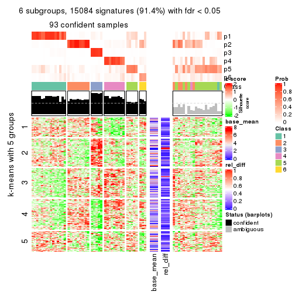
Signature heatmaps where rows are not scaled:
get_signatures(res, k = 2, scale_rows = FALSE)
get_signatures(res, k = 3, scale_rows = FALSE)
get_signatures(res, k = 4, scale_rows = FALSE)
get_signatures(res, k = 5, scale_rows = FALSE)
get_signatures(res, k = 6, scale_rows = FALSE)
Compare the overlap of signatures from different k:
compare_signatures(res)
get_signature() returns a data frame invisibly. TO get the list of signatures, the function
call should be assigned to a variable explicitly. In following code, if plot argument is set
to FALSE, no heatmap is plotted while only the differential analysis is performed.
# code only for demonstration
tb = get_signature(res, k = ..., plot = FALSE)
An example of the output of tb is:
#> which_row fdr mean_1 mean_2 scaled_mean_1 scaled_mean_2 km
#> 1 38 0.042760348 8.373488 9.131774 -0.5533452 0.5164555 1
#> 2 40 0.018707592 7.106213 8.469186 -0.6173731 0.5762149 1
#> 3 55 0.019134737 10.221463 11.207825 -0.6159697 0.5749050 1
#> 4 59 0.006059896 5.921854 7.869574 -0.6899429 0.6439467 1
#> 5 60 0.018055526 8.928898 10.211722 -0.6204761 0.5791110 1
#> 6 98 0.009384629 15.714769 14.887706 0.6635654 -0.6193277 2
...
The columns in tb are:
which_row: row indices corresponding to the input matrix.fdr: FDR for the differential test. mean_x: The mean value in group x.scaled_mean_x: The mean value in group x after rows are scaled.km: Row groups if k-means clustering is applied to rows.UMAP plot which shows how samples are separated.
dimension_reduction(res, k = 2, method = "UMAP")
dimension_reduction(res, k = 3, method = "UMAP")
dimension_reduction(res, k = 4, method = "UMAP")
dimension_reduction(res, k = 5, method = "UMAP")
dimension_reduction(res, k = 6, method = "UMAP")
Following heatmap shows how subgroups are split when increasing k:
collect_classes(res)
If matrix rows can be associated to genes, consider to use GO_Enrichment(res,
...) to perform function enrichment for the signature genes.
The object with results only for a single top-value method and a single partition method can be extracted as:
res = res_list["SD", "skmeans"]
# you can also extract it by
# res = res_list["SD:skmeans"]
A summary of res and all the functions that can be applied to it:
res
#> A 'ConsensusPartition' object with k = 2, 3, 4, 5, 6.
#> On a matrix with 16510 rows and 133 columns.
#> Top rows (1000, 2000, 3000, 4000, 5000) are extracted by 'SD' method.
#> Subgroups are detected by 'skmeans' method.
#> Performed in total 1250 partitions by row resampling.
#> Best k for subgroups seems to be 2.
#>
#> Following methods can be applied to this 'ConsensusPartition' object:
#> [1] "cola_report" "collect_classes" "collect_plots"
#> [4] "collect_stats" "colnames" "compare_signatures"
#> [7] "consensus_heatmap" "dimension_reduction" "functional_enrichment"
#> [10] "get_anno_col" "get_anno" "get_classes"
#> [13] "get_consensus" "get_matrix" "get_membership"
#> [16] "get_param" "get_signatures" "get_stats"
#> [19] "is_best_k" "is_stable_k" "membership_heatmap"
#> [22] "ncol" "nrow" "plot_ecdf"
#> [25] "rownames" "select_partition_number" "show"
#> [28] "suggest_best_k" "test_to_known_factors"
collect_plots() function collects all the plots made from res for all k (number of partitions)
into one single page to provide an easy and fast comparison between different k.
collect_plots(res)
The plots are:
k and the heatmap of
predicted classes for each k.k.k.k.All the plots in panels can be made by individual functions and they are plotted later in this section.
select_partition_number() produces several plots showing different
statistics for choosing “optimized” k. There are following statistics:
k;k, the area increased is defined as \(A_k - A_{k-1}\).The detailed explanations of these statistics can be found in the cola vignette.
Generally speaking, lower PAC score, higher mean silhouette score or higher
concordance corresponds to better partition. Rand index and Jaccard index
measure how similar the current partition is compared to partition with k-1.
If they are too similar, we won't accept k is better than k-1.
select_partition_number(res)
The numeric values for all these statistics can be obtained by get_stats().
get_stats(res)
#> k 1-PAC mean_silhouette concordance area_increased Rand Jaccard
#> 2 2 0.880 0.947 0.975 0.5029 0.496 0.496
#> 3 3 0.613 0.635 0.794 0.3224 0.743 0.528
#> 4 4 0.740 0.720 0.857 0.1176 0.823 0.537
#> 5 5 0.720 0.659 0.821 0.0699 0.892 0.612
#> 6 6 0.750 0.702 0.819 0.0394 0.937 0.708
suggest_best_k() suggests the best \(k\) based on these statistics. The rules are as follows:
NA.suggest_best_k(res)
#> [1] 2
Following shows the table of the partitions (You need to click the show/hide
code output link to see it). The membership matrix (columns with name p*)
is inferred by
clue::cl_consensus()
function with the SE method. Basically the value in the membership matrix
represents the probability to belong to a certain group. The finall class
label for an item is determined with the group with highest probability it
belongs to.
In get_classes() function, the entropy is calculated from the membership
matrix and the silhouette score is calculated from the consensus matrix.
cbind(get_classes(res, k = 2), get_membership(res, k = 2))
#> class entropy silhouette p1 p2
#> ERR946976 1 0.0000 0.964 1.000 0.000
#> ERR947001 1 0.0000 0.964 1.000 0.000
#> ERR946975 2 0.0000 0.983 0.000 1.000
#> ERR947000 2 0.0000 0.983 0.000 1.000
#> ERR946972 1 0.0376 0.962 0.996 0.004
#> ERR946997 1 0.0376 0.962 0.996 0.004
#> ERR946986 1 0.0000 0.964 1.000 0.000
#> ERR947011 1 0.0000 0.964 1.000 0.000
#> ERR946977 2 0.7219 0.743 0.200 0.800
#> ERR947002 2 0.7219 0.743 0.200 0.800
#> ERR946974 1 0.9209 0.529 0.664 0.336
#> ERR946999 1 0.9209 0.529 0.664 0.336
#> ERR946971 1 0.0000 0.964 1.000 0.000
#> ERR946996 1 0.0000 0.964 1.000 0.000
#> ERR946992 2 0.0000 0.983 0.000 1.000
#> ERR947017 2 0.0000 0.983 0.000 1.000
#> ERR946984 2 0.0000 0.983 0.000 1.000
#> ERR947009 2 0.0000 0.983 0.000 1.000
#> ERR946987 2 0.0000 0.983 0.000 1.000
#> ERR947012 2 0.0000 0.983 0.000 1.000
#> ERR946991 2 0.0000 0.983 0.000 1.000
#> ERR947016 2 0.0000 0.983 0.000 1.000
#> ERR946983 2 0.0376 0.983 0.004 0.996
#> ERR947008 2 0.0376 0.983 0.004 0.996
#> ERR946970 1 0.0376 0.963 0.996 0.004
#> ERR946995 1 0.0376 0.963 0.996 0.004
#> ERR946969 1 0.7219 0.768 0.800 0.200
#> ERR946994 1 0.7219 0.768 0.800 0.200
#> ERR946982 2 0.0000 0.983 0.000 1.000
#> ERR947007 2 0.0000 0.983 0.000 1.000
#> ERR946988 2 0.0000 0.983 0.000 1.000
#> ERR947013 2 0.0000 0.983 0.000 1.000
#> ERR946985 2 0.0000 0.983 0.000 1.000
#> ERR947010 2 0.0000 0.983 0.000 1.000
#> ERR946989 1 0.7056 0.779 0.808 0.192
#> ERR947014 1 0.7056 0.779 0.808 0.192
#> ERR946968 1 0.0376 0.963 0.996 0.004
#> ERR946993 1 0.0376 0.963 0.996 0.004
#> ERR946990 1 0.0376 0.963 0.996 0.004
#> ERR947015 1 0.0376 0.963 0.996 0.004
#> ERR946980 2 0.0376 0.983 0.004 0.996
#> ERR947005 2 0.0376 0.983 0.004 0.996
#> ERR946978 1 0.0000 0.964 1.000 0.000
#> ERR947003 1 0.0000 0.964 1.000 0.000
#> ERR946979 2 0.0000 0.983 0.000 1.000
#> ERR947004 2 0.0000 0.983 0.000 1.000
#> ERR946957 1 0.0000 0.964 1.000 0.000
#> ERR946962 1 0.0000 0.964 1.000 0.000
#> ERR946958 1 0.0000 0.964 1.000 0.000
#> ERR946963 1 0.0000 0.964 1.000 0.000
#> ERR946959 1 0.0000 0.964 1.000 0.000
#> ERR946964 1 0.0000 0.964 1.000 0.000
#> ERR946967 1 0.0376 0.962 0.996 0.004
#> ERR862690 1 0.0376 0.962 0.996 0.004
#> ERR914278 2 0.0000 0.983 0.000 1.000
#> ERR914314 2 0.0000 0.983 0.000 1.000
#> ERR914279 1 0.0000 0.964 1.000 0.000
#> ERR914315 1 0.0000 0.964 1.000 0.000
#> ERR914280 2 0.0000 0.983 0.000 1.000
#> ERR914316 2 0.0000 0.983 0.000 1.000
#> ERR914281 2 0.0000 0.983 0.000 1.000
#> ERR914317 2 0.0000 0.983 0.000 1.000
#> ERR914282 2 0.0376 0.983 0.004 0.996
#> ERR914318 2 0.0376 0.983 0.004 0.996
#> ERR914283 1 0.0000 0.964 1.000 0.000
#> ERR914319 1 0.0000 0.964 1.000 0.000
#> ERR914284 1 0.0376 0.963 0.996 0.004
#> ERR914320 1 0.0376 0.963 0.996 0.004
#> ERR914285 2 0.8016 0.671 0.244 0.756
#> ERR914321 2 0.8016 0.671 0.244 0.756
#> ERR914286 2 0.0000 0.983 0.000 1.000
#> ERR914322 2 0.0000 0.983 0.000 1.000
#> ERR914287 1 0.0000 0.964 1.000 0.000
#> ERR914323 1 0.0000 0.964 1.000 0.000
#> ERR914288 2 0.0376 0.981 0.004 0.996
#> ERR914324 2 0.0376 0.981 0.004 0.996
#> ERR914289 1 0.0376 0.963 0.996 0.004
#> ERR914290 1 0.0000 0.964 1.000 0.000
#> ERR914326 1 0.0000 0.964 1.000 0.000
#> ERR914291 2 0.0376 0.983 0.004 0.996
#> ERR914327 2 0.0376 0.983 0.004 0.996
#> ERR914292 1 0.6887 0.786 0.816 0.184
#> ERR914328 1 0.6887 0.786 0.816 0.184
#> ERR914293 1 0.0000 0.964 1.000 0.000
#> ERR914329 1 0.0000 0.964 1.000 0.000
#> ERR914294 2 0.0000 0.983 0.000 1.000
#> ERR914330 2 0.0000 0.983 0.000 1.000
#> ERR914295 1 0.0000 0.964 1.000 0.000
#> ERR914331 1 0.0000 0.964 1.000 0.000
#> ERR914296 1 0.0000 0.964 1.000 0.000
#> ERR914332 1 0.0000 0.964 1.000 0.000
#> ERR914297 1 0.7219 0.752 0.800 0.200
#> ERR914333 1 0.7219 0.752 0.800 0.200
#> ERR914298 1 0.0000 0.964 1.000 0.000
#> ERR914334 1 0.0000 0.964 1.000 0.000
#> ERR914299 2 0.0376 0.983 0.004 0.996
#> ERR914335 2 0.0376 0.983 0.004 0.996
#> ERR914300 1 0.0376 0.963 0.996 0.004
#> ERR914336 1 0.0376 0.963 0.996 0.004
#> ERR914301 2 0.0376 0.983 0.004 0.996
#> ERR914337 2 0.0376 0.983 0.004 0.996
#> ERR914302 2 0.0000 0.983 0.000 1.000
#> ERR914338 2 0.0000 0.983 0.000 1.000
#> ERR914303 2 0.0376 0.983 0.004 0.996
#> ERR914339 2 0.0376 0.983 0.004 0.996
#> ERR914304 2 0.0376 0.983 0.004 0.996
#> ERR914340 2 0.0376 0.983 0.004 0.996
#> ERR914305 2 0.0376 0.983 0.004 0.996
#> ERR914341 2 0.0376 0.983 0.004 0.996
#> ERR914306 2 0.0376 0.983 0.004 0.996
#> ERR914342 2 0.0376 0.983 0.004 0.996
#> ERR914307 1 0.0376 0.963 0.996 0.004
#> ERR914343 1 0.0376 0.963 0.996 0.004
#> ERR914308 1 0.0000 0.964 1.000 0.000
#> ERR914344 1 0.0000 0.964 1.000 0.000
#> ERR914309 1 0.0000 0.964 1.000 0.000
#> ERR914345 1 0.0000 0.964 1.000 0.000
#> ERR914310 1 0.0376 0.963 0.996 0.004
#> ERR914346 1 0.0376 0.963 0.996 0.004
#> ERR914311 2 0.0376 0.983 0.004 0.996
#> ERR914347 2 0.0376 0.983 0.004 0.996
#> ERR914312 2 0.0000 0.983 0.000 1.000
#> ERR914348 2 0.0000 0.983 0.000 1.000
#> ERR914313 2 0.0000 0.983 0.000 1.000
#> ERR914349 2 0.0000 0.983 0.000 1.000
#> ERR946960 1 0.0000 0.964 1.000 0.000
#> ERR946965 1 0.0000 0.964 1.000 0.000
#> ERR946966 2 0.0376 0.983 0.004 0.996
#> ERR946973 1 0.0000 0.964 1.000 0.000
#> ERR946998 1 0.0000 0.964 1.000 0.000
#> ERR946981 2 0.0376 0.983 0.004 0.996
#> ERR947006 2 0.0376 0.983 0.004 0.996
#> ERR914325 1 0.0376 0.963 0.996 0.004
cbind(get_classes(res, k = 3), get_membership(res, k = 3))
#> class entropy silhouette p1 p2 p3
#> ERR946976 1 0.0237 0.692 0.996 0.000 0.004
#> ERR947001 1 0.0237 0.692 0.996 0.000 0.004
#> ERR946975 3 0.6126 0.628 0.000 0.400 0.600
#> ERR947000 3 0.6126 0.628 0.000 0.400 0.600
#> ERR946972 1 0.4887 0.552 0.844 0.096 0.060
#> ERR946997 1 0.4887 0.552 0.844 0.096 0.060
#> ERR946986 1 0.8339 -0.333 0.472 0.448 0.080
#> ERR947011 1 0.8339 -0.333 0.472 0.448 0.080
#> ERR946977 2 0.7970 0.542 0.300 0.612 0.088
#> ERR947002 2 0.7970 0.542 0.300 0.612 0.088
#> ERR946974 3 0.5529 0.532 0.296 0.000 0.704
#> ERR946999 3 0.5529 0.532 0.296 0.000 0.704
#> ERR946971 1 0.0000 0.695 1.000 0.000 0.000
#> ERR946996 1 0.0000 0.695 1.000 0.000 0.000
#> ERR946992 3 0.6008 0.652 0.000 0.372 0.628
#> ERR947017 3 0.6008 0.652 0.000 0.372 0.628
#> ERR946984 2 0.7970 0.542 0.300 0.612 0.088
#> ERR947009 2 0.7970 0.542 0.300 0.612 0.088
#> ERR946987 3 0.5810 0.650 0.000 0.336 0.664
#> ERR947012 3 0.5810 0.650 0.000 0.336 0.664
#> ERR946991 2 0.0000 0.823 0.000 1.000 0.000
#> ERR947016 2 0.0000 0.823 0.000 1.000 0.000
#> ERR946983 2 0.0000 0.823 0.000 1.000 0.000
#> ERR947008 2 0.0000 0.823 0.000 1.000 0.000
#> ERR946970 3 0.5591 0.529 0.304 0.000 0.696
#> ERR946995 3 0.5591 0.529 0.304 0.000 0.696
#> ERR946969 2 0.8058 0.476 0.376 0.552 0.072
#> ERR946994 2 0.8058 0.476 0.376 0.552 0.072
#> ERR946982 3 0.5968 0.657 0.000 0.364 0.636
#> ERR947007 3 0.5968 0.657 0.000 0.364 0.636
#> ERR946988 2 0.7970 0.542 0.300 0.612 0.088
#> ERR947013 2 0.7970 0.542 0.300 0.612 0.088
#> ERR946985 3 0.5754 0.533 0.296 0.004 0.700
#> ERR947010 3 0.5754 0.533 0.296 0.004 0.700
#> ERR946989 3 0.5560 0.531 0.300 0.000 0.700
#> ERR947014 3 0.5560 0.531 0.300 0.000 0.700
#> ERR946968 1 0.1529 0.672 0.960 0.000 0.040
#> ERR946993 1 0.1529 0.672 0.960 0.000 0.040
#> ERR946990 1 0.2356 0.644 0.928 0.000 0.072
#> ERR947015 1 0.2356 0.644 0.928 0.000 0.072
#> ERR946980 2 0.7749 0.548 0.300 0.624 0.076
#> ERR947005 2 0.7749 0.548 0.300 0.624 0.076
#> ERR946978 1 0.5560 0.804 0.700 0.000 0.300
#> ERR947003 1 0.5560 0.804 0.700 0.000 0.300
#> ERR946979 2 0.0000 0.823 0.000 1.000 0.000
#> ERR947004 2 0.0000 0.823 0.000 1.000 0.000
#> ERR946957 1 0.0000 0.695 1.000 0.000 0.000
#> ERR946962 1 0.0000 0.695 1.000 0.000 0.000
#> ERR946958 1 0.5560 0.804 0.700 0.000 0.300
#> ERR946963 1 0.5560 0.804 0.700 0.000 0.300
#> ERR946959 1 0.5560 0.804 0.700 0.000 0.300
#> ERR946964 1 0.5560 0.804 0.700 0.000 0.300
#> ERR946967 1 0.4094 0.585 0.872 0.100 0.028
#> ERR862690 1 0.4094 0.585 0.872 0.100 0.028
#> ERR914278 3 0.5968 0.657 0.000 0.364 0.636
#> ERR914314 3 0.5968 0.657 0.000 0.364 0.636
#> ERR914279 1 0.5560 0.804 0.700 0.000 0.300
#> ERR914315 1 0.5560 0.804 0.700 0.000 0.300
#> ERR914280 3 0.6062 0.643 0.000 0.384 0.616
#> ERR914316 3 0.6062 0.643 0.000 0.384 0.616
#> ERR914281 3 0.5968 0.657 0.000 0.364 0.636
#> ERR914317 3 0.5968 0.657 0.000 0.364 0.636
#> ERR914282 2 0.0000 0.823 0.000 1.000 0.000
#> ERR914318 2 0.0000 0.823 0.000 1.000 0.000
#> ERR914283 1 0.5560 0.804 0.700 0.000 0.300
#> ERR914319 1 0.5560 0.804 0.700 0.000 0.300
#> ERR914284 3 0.6299 -0.590 0.476 0.000 0.524
#> ERR914320 3 0.6299 -0.590 0.476 0.000 0.524
#> ERR914285 3 0.5560 0.531 0.300 0.000 0.700
#> ERR914321 3 0.5560 0.531 0.300 0.000 0.700
#> ERR914286 3 0.6079 0.640 0.000 0.388 0.612
#> ERR914322 3 0.6079 0.640 0.000 0.388 0.612
#> ERR914287 1 0.5560 0.804 0.700 0.000 0.300
#> ERR914323 1 0.5560 0.804 0.700 0.000 0.300
#> ERR914288 3 0.8138 -0.164 0.068 0.452 0.480
#> ERR914324 3 0.8138 -0.164 0.068 0.452 0.480
#> ERR914289 3 0.3816 0.408 0.148 0.000 0.852
#> ERR914290 1 0.5560 0.804 0.700 0.000 0.300
#> ERR914326 1 0.5560 0.804 0.700 0.000 0.300
#> ERR914291 2 0.0000 0.823 0.000 1.000 0.000
#> ERR914327 2 0.0000 0.823 0.000 1.000 0.000
#> ERR914292 1 0.9804 0.557 0.416 0.248 0.336
#> ERR914328 1 0.9804 0.557 0.416 0.248 0.336
#> ERR914293 1 0.5560 0.804 0.700 0.000 0.300
#> ERR914329 1 0.5560 0.804 0.700 0.000 0.300
#> ERR914294 3 0.5968 0.657 0.000 0.364 0.636
#> ERR914330 3 0.5968 0.657 0.000 0.364 0.636
#> ERR914295 1 0.5560 0.804 0.700 0.000 0.300
#> ERR914331 1 0.5560 0.804 0.700 0.000 0.300
#> ERR914296 1 0.5560 0.804 0.700 0.000 0.300
#> ERR914332 1 0.5560 0.804 0.700 0.000 0.300
#> ERR914297 1 0.7842 0.734 0.600 0.072 0.328
#> ERR914333 1 0.7842 0.734 0.600 0.072 0.328
#> ERR914298 1 0.5560 0.804 0.700 0.000 0.300
#> ERR914334 1 0.5560 0.804 0.700 0.000 0.300
#> ERR914299 2 0.0000 0.823 0.000 1.000 0.000
#> ERR914335 2 0.0000 0.823 0.000 1.000 0.000
#> ERR914300 1 0.6308 0.596 0.508 0.000 0.492
#> ERR914336 1 0.6308 0.596 0.508 0.000 0.492
#> ERR914301 2 0.1529 0.781 0.000 0.960 0.040
#> ERR914337 2 0.1529 0.781 0.000 0.960 0.040
#> ERR914302 3 0.5988 0.655 0.000 0.368 0.632
#> ERR914338 3 0.5988 0.655 0.000 0.368 0.632
#> ERR914303 2 0.0000 0.823 0.000 1.000 0.000
#> ERR914339 2 0.0000 0.823 0.000 1.000 0.000
#> ERR914304 2 0.0000 0.823 0.000 1.000 0.000
#> ERR914340 2 0.0000 0.823 0.000 1.000 0.000
#> ERR914305 2 0.0000 0.823 0.000 1.000 0.000
#> ERR914341 2 0.0000 0.823 0.000 1.000 0.000
#> ERR914306 2 0.1529 0.781 0.000 0.960 0.040
#> ERR914342 2 0.1529 0.781 0.000 0.960 0.040
#> ERR914307 1 0.5905 0.782 0.648 0.000 0.352
#> ERR914343 1 0.5905 0.782 0.648 0.000 0.352
#> ERR914308 1 0.5560 0.804 0.700 0.000 0.300
#> ERR914344 1 0.5560 0.804 0.700 0.000 0.300
#> ERR914309 1 0.5560 0.804 0.700 0.000 0.300
#> ERR914345 1 0.5560 0.804 0.700 0.000 0.300
#> ERR914310 3 0.5678 -0.258 0.316 0.000 0.684
#> ERR914346 3 0.5678 -0.258 0.316 0.000 0.684
#> ERR914311 2 0.0000 0.823 0.000 1.000 0.000
#> ERR914347 2 0.0000 0.823 0.000 1.000 0.000
#> ERR914312 3 0.6111 0.634 0.000 0.396 0.604
#> ERR914348 3 0.6111 0.634 0.000 0.396 0.604
#> ERR914313 3 0.5968 0.657 0.000 0.364 0.636
#> ERR914349 3 0.5968 0.657 0.000 0.364 0.636
#> ERR946960 1 0.0000 0.695 1.000 0.000 0.000
#> ERR946965 1 0.0000 0.695 1.000 0.000 0.000
#> ERR946966 2 0.0000 0.823 0.000 1.000 0.000
#> ERR946973 1 0.0000 0.695 1.000 0.000 0.000
#> ERR946998 1 0.0000 0.695 1.000 0.000 0.000
#> ERR946981 2 0.0000 0.823 0.000 1.000 0.000
#> ERR947006 2 0.0000 0.823 0.000 1.000 0.000
#> ERR914325 3 0.3816 0.408 0.148 0.000 0.852
cbind(get_classes(res, k = 4), get_membership(res, k = 4))
#> class entropy silhouette p1 p2 p3 p4
#> ERR946976 3 0.4713 0.53835 0.360 0.000 0.640 0.000
#> ERR947001 3 0.4713 0.53835 0.360 0.000 0.640 0.000
#> ERR946975 4 0.4977 0.29822 0.000 0.460 0.000 0.540
#> ERR947000 4 0.4977 0.29822 0.000 0.460 0.000 0.540
#> ERR946972 3 0.1452 0.66684 0.036 0.000 0.956 0.008
#> ERR946997 3 0.1452 0.66684 0.036 0.000 0.956 0.008
#> ERR946986 3 0.7923 0.53319 0.212 0.224 0.536 0.028
#> ERR947011 3 0.7923 0.53319 0.212 0.224 0.536 0.028
#> ERR946977 3 0.6327 0.19387 0.000 0.444 0.496 0.060
#> ERR947002 3 0.6327 0.19387 0.000 0.444 0.496 0.060
#> ERR946974 4 0.1398 0.85276 0.004 0.000 0.040 0.956
#> ERR946999 4 0.1398 0.85276 0.004 0.000 0.040 0.956
#> ERR946971 3 0.1557 0.67563 0.056 0.000 0.944 0.000
#> ERR946996 3 0.1557 0.67563 0.056 0.000 0.944 0.000
#> ERR946992 4 0.1576 0.88760 0.000 0.048 0.004 0.948
#> ERR947017 4 0.1576 0.88760 0.000 0.048 0.004 0.948
#> ERR946984 3 0.5536 0.33940 0.000 0.384 0.592 0.024
#> ERR947009 3 0.5536 0.33940 0.000 0.384 0.592 0.024
#> ERR946987 4 0.0707 0.88344 0.000 0.020 0.000 0.980
#> ERR947012 4 0.0707 0.88344 0.000 0.020 0.000 0.980
#> ERR946991 2 0.0707 0.86464 0.000 0.980 0.020 0.000
#> ERR947016 2 0.0707 0.86464 0.000 0.980 0.020 0.000
#> ERR946983 2 0.0188 0.87347 0.000 0.996 0.000 0.004
#> ERR947008 2 0.0188 0.87347 0.000 0.996 0.000 0.004
#> ERR946970 4 0.4155 0.66263 0.004 0.000 0.240 0.756
#> ERR946995 4 0.4155 0.66263 0.004 0.000 0.240 0.756
#> ERR946969 3 0.7682 0.29574 0.084 0.392 0.480 0.044
#> ERR946994 3 0.7682 0.29574 0.084 0.392 0.480 0.044
#> ERR946982 4 0.1211 0.89147 0.000 0.040 0.000 0.960
#> ERR947007 4 0.1211 0.89147 0.000 0.040 0.000 0.960
#> ERR946988 2 0.6458 -0.00461 0.000 0.520 0.408 0.072
#> ERR947013 2 0.6458 -0.00461 0.000 0.520 0.408 0.072
#> ERR946985 4 0.0188 0.87101 0.000 0.000 0.004 0.996
#> ERR947010 4 0.0188 0.87101 0.000 0.000 0.004 0.996
#> ERR946989 4 0.3945 0.68392 0.004 0.000 0.216 0.780
#> ERR947014 4 0.3945 0.68392 0.004 0.000 0.216 0.780
#> ERR946968 3 0.5203 0.51307 0.348 0.000 0.636 0.016
#> ERR946993 3 0.5203 0.51307 0.348 0.000 0.636 0.016
#> ERR946990 3 0.5617 0.53136 0.336 0.004 0.632 0.028
#> ERR947015 3 0.5617 0.53136 0.336 0.004 0.632 0.028
#> ERR946980 2 0.4808 0.52168 0.000 0.736 0.236 0.028
#> ERR947005 2 0.4808 0.52168 0.000 0.736 0.236 0.028
#> ERR946978 1 0.1022 0.87380 0.968 0.000 0.032 0.000
#> ERR947003 1 0.1022 0.87380 0.968 0.000 0.032 0.000
#> ERR946979 2 0.0804 0.86804 0.000 0.980 0.008 0.012
#> ERR947004 2 0.0804 0.86804 0.000 0.980 0.008 0.012
#> ERR946957 3 0.1557 0.67563 0.056 0.000 0.944 0.000
#> ERR946962 3 0.1557 0.67563 0.056 0.000 0.944 0.000
#> ERR946958 1 0.0469 0.88210 0.988 0.000 0.012 0.000
#> ERR946963 1 0.0469 0.88210 0.988 0.000 0.012 0.000
#> ERR946959 1 0.1022 0.87380 0.968 0.000 0.032 0.000
#> ERR946964 1 0.1022 0.87380 0.968 0.000 0.032 0.000
#> ERR946967 3 0.1302 0.67093 0.044 0.000 0.956 0.000
#> ERR862690 3 0.1302 0.67093 0.044 0.000 0.956 0.000
#> ERR914278 4 0.1211 0.89147 0.000 0.040 0.000 0.960
#> ERR914314 4 0.1211 0.89147 0.000 0.040 0.000 0.960
#> ERR914279 1 0.0188 0.88479 0.996 0.000 0.004 0.000
#> ERR914315 1 0.0188 0.88479 0.996 0.000 0.004 0.000
#> ERR914280 4 0.1302 0.89000 0.000 0.044 0.000 0.956
#> ERR914316 4 0.1302 0.89000 0.000 0.044 0.000 0.956
#> ERR914281 4 0.1211 0.89147 0.000 0.040 0.000 0.960
#> ERR914317 4 0.1211 0.89147 0.000 0.040 0.000 0.960
#> ERR914282 2 0.0188 0.87347 0.000 0.996 0.000 0.004
#> ERR914318 2 0.0188 0.87347 0.000 0.996 0.000 0.004
#> ERR914283 1 0.2345 0.81810 0.900 0.000 0.100 0.000
#> ERR914319 1 0.2345 0.81810 0.900 0.000 0.100 0.000
#> ERR914284 1 0.2214 0.85067 0.928 0.000 0.044 0.028
#> ERR914320 1 0.2214 0.85067 0.928 0.000 0.044 0.028
#> ERR914285 4 0.1398 0.85276 0.004 0.000 0.040 0.956
#> ERR914321 4 0.1398 0.85276 0.004 0.000 0.040 0.956
#> ERR914286 4 0.1716 0.88127 0.000 0.064 0.000 0.936
#> ERR914322 4 0.1716 0.88127 0.000 0.064 0.000 0.936
#> ERR914287 1 0.0000 0.88537 1.000 0.000 0.000 0.000
#> ERR914323 1 0.0000 0.88537 1.000 0.000 0.000 0.000
#> ERR914288 1 0.6100 0.39228 0.612 0.340 0.028 0.020
#> ERR914324 1 0.6100 0.39228 0.612 0.340 0.028 0.020
#> ERR914289 1 0.6182 0.22598 0.520 0.000 0.052 0.428
#> ERR914290 1 0.0000 0.88537 1.000 0.000 0.000 0.000
#> ERR914326 1 0.0000 0.88537 1.000 0.000 0.000 0.000
#> ERR914291 2 0.0188 0.87347 0.000 0.996 0.000 0.004
#> ERR914327 2 0.0188 0.87347 0.000 0.996 0.000 0.004
#> ERR914292 1 0.5509 0.63094 0.740 0.192 0.048 0.020
#> ERR914328 1 0.5509 0.63094 0.740 0.192 0.048 0.020
#> ERR914293 1 0.0000 0.88537 1.000 0.000 0.000 0.000
#> ERR914329 1 0.0000 0.88537 1.000 0.000 0.000 0.000
#> ERR914294 4 0.1211 0.89147 0.000 0.040 0.000 0.960
#> ERR914330 4 0.1211 0.89147 0.000 0.040 0.000 0.960
#> ERR914295 1 0.0469 0.88233 0.988 0.000 0.012 0.000
#> ERR914331 1 0.0469 0.88233 0.988 0.000 0.012 0.000
#> ERR914296 1 0.1716 0.85362 0.936 0.000 0.064 0.000
#> ERR914332 1 0.1716 0.85362 0.936 0.000 0.064 0.000
#> ERR914297 3 0.8699 0.07544 0.372 0.192 0.384 0.052
#> ERR914333 3 0.8699 0.07544 0.372 0.192 0.384 0.052
#> ERR914298 1 0.2589 0.80312 0.884 0.000 0.116 0.000
#> ERR914334 1 0.2589 0.80312 0.884 0.000 0.116 0.000
#> ERR914299 2 0.0188 0.87347 0.000 0.996 0.000 0.004
#> ERR914335 2 0.0188 0.87347 0.000 0.996 0.000 0.004
#> ERR914300 1 0.0657 0.88138 0.984 0.000 0.012 0.004
#> ERR914336 1 0.0657 0.88138 0.984 0.000 0.012 0.004
#> ERR914301 2 0.6141 0.49765 0.000 0.624 0.300 0.076
#> ERR914337 2 0.6141 0.49765 0.000 0.624 0.300 0.076
#> ERR914302 4 0.1211 0.89147 0.000 0.040 0.000 0.960
#> ERR914338 4 0.1211 0.89147 0.000 0.040 0.000 0.960
#> ERR914303 2 0.0188 0.87347 0.000 0.996 0.000 0.004
#> ERR914339 2 0.0188 0.87347 0.000 0.996 0.000 0.004
#> ERR914304 2 0.0657 0.87068 0.000 0.984 0.012 0.004
#> ERR914340 2 0.0657 0.87068 0.000 0.984 0.012 0.004
#> ERR914305 2 0.0188 0.87347 0.000 0.996 0.000 0.004
#> ERR914341 2 0.0188 0.87347 0.000 0.996 0.000 0.004
#> ERR914306 2 0.6120 0.50789 0.000 0.628 0.296 0.076
#> ERR914342 2 0.6120 0.50789 0.000 0.628 0.296 0.076
#> ERR914307 1 0.1930 0.85915 0.936 0.004 0.056 0.004
#> ERR914343 1 0.1930 0.85915 0.936 0.004 0.056 0.004
#> ERR914308 1 0.0000 0.88537 1.000 0.000 0.000 0.000
#> ERR914344 1 0.0000 0.88537 1.000 0.000 0.000 0.000
#> ERR914309 1 0.0000 0.88537 1.000 0.000 0.000 0.000
#> ERR914345 1 0.0000 0.88537 1.000 0.000 0.000 0.000
#> ERR914310 1 0.2908 0.82598 0.896 0.000 0.040 0.064
#> ERR914346 1 0.2908 0.82598 0.896 0.000 0.040 0.064
#> ERR914311 2 0.0376 0.87281 0.000 0.992 0.004 0.004
#> ERR914347 2 0.0376 0.87281 0.000 0.992 0.004 0.004
#> ERR914312 4 0.4955 0.34404 0.000 0.444 0.000 0.556
#> ERR914348 4 0.4955 0.34404 0.000 0.444 0.000 0.556
#> ERR914313 4 0.1211 0.89147 0.000 0.040 0.000 0.960
#> ERR914349 4 0.1211 0.89147 0.000 0.040 0.000 0.960
#> ERR946960 3 0.4697 0.53450 0.356 0.000 0.644 0.000
#> ERR946965 3 0.4697 0.53450 0.356 0.000 0.644 0.000
#> ERR946966 2 0.0524 0.86792 0.008 0.988 0.000 0.004
#> ERR946973 3 0.1557 0.67563 0.056 0.000 0.944 0.000
#> ERR946998 3 0.1557 0.67563 0.056 0.000 0.944 0.000
#> ERR946981 2 0.0336 0.86987 0.000 0.992 0.008 0.000
#> ERR947006 2 0.0336 0.86987 0.000 0.992 0.008 0.000
#> ERR914325 1 0.6176 0.23823 0.524 0.000 0.052 0.424
cbind(get_classes(res, k = 5), get_membership(res, k = 5))
#> class entropy silhouette p1 p2 p3 p4 p5
#> ERR946976 3 0.6158 0.3692 0.184 0.000 0.552 0.000 0.264
#> ERR947001 3 0.6158 0.3692 0.184 0.000 0.552 0.000 0.264
#> ERR946975 4 0.5151 0.3770 0.000 0.396 0.000 0.560 0.044
#> ERR947000 4 0.5151 0.3770 0.000 0.396 0.000 0.560 0.044
#> ERR946972 3 0.0000 0.7134 0.000 0.000 1.000 0.000 0.000
#> ERR946997 3 0.0000 0.7134 0.000 0.000 1.000 0.000 0.000
#> ERR946986 5 0.6627 0.2252 0.080 0.104 0.208 0.000 0.608
#> ERR947011 5 0.6583 0.2272 0.080 0.100 0.208 0.000 0.612
#> ERR946977 5 0.7313 0.0308 0.000 0.344 0.240 0.028 0.388
#> ERR947002 5 0.7313 0.0308 0.000 0.344 0.240 0.028 0.388
#> ERR946974 5 0.4287 0.2813 0.000 0.000 0.000 0.460 0.540
#> ERR946999 5 0.4287 0.2813 0.000 0.000 0.000 0.460 0.540
#> ERR946971 3 0.0451 0.7174 0.008 0.000 0.988 0.000 0.004
#> ERR946996 3 0.0451 0.7174 0.008 0.000 0.988 0.000 0.004
#> ERR946992 4 0.1478 0.8605 0.000 0.000 0.000 0.936 0.064
#> ERR947017 4 0.1478 0.8605 0.000 0.000 0.000 0.936 0.064
#> ERR946984 3 0.7039 0.2312 0.000 0.232 0.460 0.020 0.288
#> ERR947009 3 0.7039 0.2312 0.000 0.232 0.460 0.020 0.288
#> ERR946987 4 0.0324 0.8986 0.000 0.000 0.004 0.992 0.004
#> ERR947012 4 0.0324 0.8986 0.000 0.000 0.004 0.992 0.004
#> ERR946991 2 0.3155 0.7458 0.000 0.848 0.008 0.016 0.128
#> ERR947016 2 0.3155 0.7458 0.000 0.848 0.008 0.016 0.128
#> ERR946983 2 0.0000 0.8116 0.000 1.000 0.000 0.000 0.000
#> ERR947008 2 0.0000 0.8116 0.000 1.000 0.000 0.000 0.000
#> ERR946970 5 0.5059 0.5287 0.000 0.000 0.112 0.192 0.696
#> ERR946995 5 0.5059 0.5287 0.000 0.000 0.112 0.192 0.696
#> ERR946969 5 0.4302 0.4709 0.000 0.248 0.032 0.000 0.720
#> ERR946994 5 0.4302 0.4709 0.000 0.248 0.032 0.000 0.720
#> ERR946982 4 0.0000 0.9003 0.000 0.000 0.000 1.000 0.000
#> ERR947007 4 0.0000 0.9003 0.000 0.000 0.000 1.000 0.000
#> ERR946988 2 0.7670 0.1043 0.000 0.424 0.208 0.068 0.300
#> ERR947013 2 0.7670 0.1043 0.000 0.424 0.208 0.068 0.300
#> ERR946985 4 0.0451 0.8962 0.000 0.000 0.004 0.988 0.008
#> ERR947010 4 0.0451 0.8962 0.000 0.000 0.004 0.988 0.008
#> ERR946989 5 0.4269 0.5230 0.000 0.000 0.016 0.300 0.684
#> ERR947014 5 0.4269 0.5230 0.000 0.000 0.016 0.300 0.684
#> ERR946968 5 0.5287 0.3832 0.092 0.000 0.260 0.000 0.648
#> ERR946993 5 0.5287 0.3832 0.092 0.000 0.260 0.000 0.648
#> ERR946990 5 0.4400 0.3438 0.052 0.000 0.212 0.000 0.736
#> ERR947015 5 0.4400 0.3438 0.052 0.000 0.212 0.000 0.736
#> ERR946980 2 0.5554 0.3711 0.000 0.592 0.092 0.000 0.316
#> ERR947005 2 0.5554 0.3711 0.000 0.592 0.092 0.000 0.316
#> ERR946978 1 0.0955 0.9295 0.968 0.000 0.028 0.000 0.004
#> ERR947003 1 0.0955 0.9295 0.968 0.000 0.028 0.000 0.004
#> ERR946979 2 0.1662 0.7836 0.000 0.936 0.004 0.056 0.004
#> ERR947004 2 0.1662 0.7836 0.000 0.936 0.004 0.056 0.004
#> ERR946957 3 0.0451 0.7174 0.008 0.000 0.988 0.000 0.004
#> ERR946962 3 0.0451 0.7174 0.008 0.000 0.988 0.000 0.004
#> ERR946958 1 0.1579 0.9208 0.944 0.000 0.024 0.000 0.032
#> ERR946963 1 0.1579 0.9208 0.944 0.000 0.024 0.000 0.032
#> ERR946959 1 0.0955 0.9295 0.968 0.000 0.028 0.000 0.004
#> ERR946964 1 0.0955 0.9295 0.968 0.000 0.028 0.000 0.004
#> ERR946967 3 0.0162 0.7156 0.004 0.000 0.996 0.000 0.000
#> ERR862690 3 0.0162 0.7156 0.004 0.000 0.996 0.000 0.000
#> ERR914278 4 0.0000 0.9003 0.000 0.000 0.000 1.000 0.000
#> ERR914314 4 0.0000 0.9003 0.000 0.000 0.000 1.000 0.000
#> ERR914279 1 0.0510 0.9303 0.984 0.000 0.000 0.000 0.016
#> ERR914315 1 0.0510 0.9303 0.984 0.000 0.000 0.000 0.016
#> ERR914280 4 0.0880 0.8886 0.000 0.000 0.000 0.968 0.032
#> ERR914316 4 0.0880 0.8886 0.000 0.000 0.000 0.968 0.032
#> ERR914281 4 0.0162 0.9001 0.000 0.000 0.004 0.996 0.000
#> ERR914317 4 0.0162 0.9001 0.000 0.000 0.004 0.996 0.000
#> ERR914282 2 0.0000 0.8116 0.000 1.000 0.000 0.000 0.000
#> ERR914318 2 0.0000 0.8116 0.000 1.000 0.000 0.000 0.000
#> ERR914283 1 0.1981 0.9017 0.920 0.000 0.064 0.000 0.016
#> ERR914319 1 0.1981 0.9017 0.920 0.000 0.064 0.000 0.016
#> ERR914284 5 0.3990 0.4920 0.308 0.000 0.004 0.000 0.688
#> ERR914320 5 0.3990 0.4920 0.308 0.000 0.004 0.000 0.688
#> ERR914285 5 0.4420 0.3035 0.000 0.000 0.004 0.448 0.548
#> ERR914321 5 0.4420 0.3035 0.000 0.000 0.004 0.448 0.548
#> ERR914286 4 0.1894 0.8481 0.000 0.072 0.000 0.920 0.008
#> ERR914322 4 0.1894 0.8481 0.000 0.072 0.000 0.920 0.008
#> ERR914287 1 0.0000 0.9323 1.000 0.000 0.000 0.000 0.000
#> ERR914323 1 0.0000 0.9323 1.000 0.000 0.000 0.000 0.000
#> ERR914288 5 0.6619 0.2421 0.216 0.392 0.000 0.000 0.392
#> ERR914324 5 0.6633 0.2482 0.220 0.388 0.000 0.000 0.392
#> ERR914289 5 0.4435 0.5759 0.092 0.000 0.008 0.124 0.776
#> ERR914290 1 0.0162 0.9326 0.996 0.000 0.000 0.000 0.004
#> ERR914326 1 0.0162 0.9326 0.996 0.000 0.000 0.000 0.004
#> ERR914291 2 0.0290 0.8097 0.000 0.992 0.000 0.000 0.008
#> ERR914327 2 0.0290 0.8097 0.000 0.992 0.000 0.000 0.008
#> ERR914292 5 0.5159 0.5459 0.180 0.116 0.004 0.000 0.700
#> ERR914328 5 0.5192 0.5450 0.184 0.116 0.004 0.000 0.696
#> ERR914293 1 0.0000 0.9323 1.000 0.000 0.000 0.000 0.000
#> ERR914329 1 0.0000 0.9323 1.000 0.000 0.000 0.000 0.000
#> ERR914294 4 0.0000 0.9003 0.000 0.000 0.000 1.000 0.000
#> ERR914330 4 0.0000 0.9003 0.000 0.000 0.000 1.000 0.000
#> ERR914295 1 0.1341 0.9001 0.944 0.000 0.000 0.000 0.056
#> ERR914331 1 0.1341 0.9001 0.944 0.000 0.000 0.000 0.056
#> ERR914296 1 0.0955 0.9295 0.968 0.000 0.028 0.000 0.004
#> ERR914332 1 0.0955 0.9295 0.968 0.000 0.028 0.000 0.004
#> ERR914297 3 0.8632 0.2752 0.232 0.200 0.428 0.092 0.048
#> ERR914333 3 0.8628 0.2791 0.236 0.196 0.428 0.092 0.048
#> ERR914298 1 0.2270 0.8846 0.904 0.000 0.076 0.000 0.020
#> ERR914334 1 0.2270 0.8846 0.904 0.000 0.076 0.000 0.020
#> ERR914299 2 0.0290 0.8097 0.000 0.992 0.000 0.000 0.008
#> ERR914335 2 0.0290 0.8097 0.000 0.992 0.000 0.000 0.008
#> ERR914300 1 0.1121 0.9084 0.956 0.000 0.000 0.000 0.044
#> ERR914336 1 0.1121 0.9084 0.956 0.000 0.000 0.000 0.044
#> ERR914301 2 0.7267 0.0565 0.000 0.400 0.400 0.148 0.052
#> ERR914337 2 0.7267 0.0565 0.000 0.400 0.400 0.148 0.052
#> ERR914302 4 0.0404 0.8973 0.000 0.000 0.000 0.988 0.012
#> ERR914338 4 0.0404 0.8973 0.000 0.000 0.000 0.988 0.012
#> ERR914303 2 0.0000 0.8116 0.000 1.000 0.000 0.000 0.000
#> ERR914339 2 0.0000 0.8116 0.000 1.000 0.000 0.000 0.000
#> ERR914304 2 0.1043 0.7990 0.000 0.960 0.000 0.000 0.040
#> ERR914340 2 0.1043 0.7990 0.000 0.960 0.000 0.000 0.040
#> ERR914305 2 0.0000 0.8116 0.000 1.000 0.000 0.000 0.000
#> ERR914341 2 0.0000 0.8116 0.000 1.000 0.000 0.000 0.000
#> ERR914306 2 0.7239 0.0721 0.000 0.404 0.396 0.152 0.048
#> ERR914342 2 0.7239 0.0721 0.000 0.404 0.396 0.152 0.048
#> ERR914307 1 0.4350 0.3405 0.588 0.000 0.004 0.000 0.408
#> ERR914343 1 0.4350 0.3405 0.588 0.000 0.004 0.000 0.408
#> ERR914308 1 0.0404 0.9319 0.988 0.000 0.000 0.000 0.012
#> ERR914344 1 0.0404 0.9319 0.988 0.000 0.000 0.000 0.012
#> ERR914309 1 0.0404 0.9319 0.988 0.000 0.000 0.000 0.012
#> ERR914345 1 0.0404 0.9319 0.988 0.000 0.000 0.000 0.012
#> ERR914310 5 0.4288 0.3918 0.384 0.000 0.000 0.004 0.612
#> ERR914346 5 0.4288 0.3918 0.384 0.000 0.000 0.004 0.612
#> ERR914311 2 0.0162 0.8110 0.000 0.996 0.000 0.000 0.004
#> ERR914347 2 0.0162 0.8110 0.000 0.996 0.000 0.000 0.004
#> ERR914312 4 0.4371 0.5274 0.000 0.344 0.000 0.644 0.012
#> ERR914348 4 0.4371 0.5274 0.000 0.344 0.000 0.644 0.012
#> ERR914313 4 0.0162 0.9001 0.000 0.000 0.004 0.996 0.000
#> ERR914349 4 0.0162 0.9001 0.000 0.000 0.004 0.996 0.000
#> ERR946960 3 0.6354 0.3407 0.264 0.000 0.520 0.000 0.216
#> ERR946965 3 0.6354 0.3407 0.264 0.000 0.520 0.000 0.216
#> ERR946966 2 0.0000 0.8116 0.000 1.000 0.000 0.000 0.000
#> ERR946973 3 0.0451 0.7174 0.008 0.000 0.988 0.000 0.004
#> ERR946998 3 0.0451 0.7174 0.008 0.000 0.988 0.000 0.004
#> ERR946981 2 0.2488 0.7572 0.000 0.872 0.004 0.000 0.124
#> ERR947006 2 0.2488 0.7572 0.000 0.872 0.004 0.000 0.124
#> ERR914325 5 0.4446 0.5757 0.100 0.000 0.008 0.116 0.776
cbind(get_classes(res, k = 6), get_membership(res, k = 6))
#> class entropy silhouette p1 p2 p3 p4 p5 p6
#> ERR946976 3 0.6803 0.218 0.112 0.000 0.504 0.000 0.224 0.160
#> ERR947001 3 0.6803 0.218 0.112 0.000 0.504 0.000 0.224 0.160
#> ERR946975 4 0.6538 0.280 0.004 0.368 0.000 0.444 0.132 0.052
#> ERR947000 4 0.6538 0.280 0.004 0.368 0.000 0.444 0.132 0.052
#> ERR946972 3 0.0000 0.668 0.000 0.000 1.000 0.000 0.000 0.000
#> ERR946997 3 0.0000 0.668 0.000 0.000 1.000 0.000 0.000 0.000
#> ERR946986 5 0.4239 0.621 0.008 0.032 0.036 0.004 0.780 0.140
#> ERR947011 5 0.4239 0.621 0.008 0.032 0.036 0.004 0.780 0.140
#> ERR946977 5 0.5386 0.671 0.000 0.184 0.064 0.032 0.688 0.032
#> ERR947002 5 0.5418 0.671 0.000 0.180 0.064 0.028 0.688 0.040
#> ERR946974 6 0.4118 0.583 0.000 0.000 0.000 0.312 0.028 0.660
#> ERR946999 6 0.4118 0.583 0.000 0.000 0.000 0.312 0.028 0.660
#> ERR946971 3 0.0363 0.669 0.012 0.000 0.988 0.000 0.000 0.000
#> ERR946996 3 0.0363 0.669 0.012 0.000 0.988 0.000 0.000 0.000
#> ERR946992 4 0.2250 0.825 0.000 0.000 0.000 0.888 0.092 0.020
#> ERR947017 4 0.2250 0.825 0.000 0.000 0.000 0.888 0.092 0.020
#> ERR946984 5 0.4665 0.598 0.000 0.080 0.192 0.004 0.712 0.012
#> ERR947009 5 0.4665 0.598 0.000 0.080 0.192 0.004 0.712 0.012
#> ERR946987 4 0.0405 0.868 0.000 0.000 0.000 0.988 0.008 0.004
#> ERR947012 4 0.0405 0.868 0.000 0.000 0.000 0.988 0.008 0.004
#> ERR946991 2 0.4457 0.527 0.000 0.632 0.000 0.024 0.332 0.012
#> ERR947016 2 0.4457 0.527 0.000 0.632 0.000 0.024 0.332 0.012
#> ERR946983 2 0.0405 0.879 0.000 0.988 0.000 0.000 0.008 0.004
#> ERR947008 2 0.0405 0.879 0.000 0.988 0.000 0.000 0.008 0.004
#> ERR946970 6 0.3953 0.663 0.000 0.000 0.036 0.084 0.080 0.800
#> ERR946995 6 0.3953 0.663 0.000 0.000 0.036 0.084 0.080 0.800
#> ERR946969 6 0.5693 0.097 0.000 0.140 0.000 0.004 0.388 0.468
#> ERR946994 6 0.5693 0.097 0.000 0.140 0.000 0.004 0.388 0.468
#> ERR946982 4 0.0146 0.870 0.000 0.000 0.000 0.996 0.000 0.004
#> ERR947007 4 0.0146 0.870 0.000 0.000 0.000 0.996 0.000 0.004
#> ERR946988 5 0.5978 0.610 0.000 0.244 0.060 0.072 0.608 0.016
#> ERR947013 5 0.5978 0.610 0.000 0.244 0.060 0.072 0.608 0.016
#> ERR946985 4 0.0405 0.868 0.000 0.000 0.000 0.988 0.004 0.008
#> ERR947010 4 0.0405 0.868 0.000 0.000 0.000 0.988 0.004 0.008
#> ERR946989 6 0.4003 0.653 0.000 0.000 0.000 0.152 0.092 0.756
#> ERR947014 6 0.4003 0.653 0.000 0.000 0.000 0.152 0.092 0.756
#> ERR946968 6 0.4793 0.537 0.024 0.000 0.188 0.000 0.084 0.704
#> ERR946993 6 0.4793 0.537 0.024 0.000 0.188 0.000 0.084 0.704
#> ERR946990 5 0.4509 0.420 0.008 0.000 0.036 0.000 0.640 0.316
#> ERR947015 5 0.4509 0.420 0.008 0.000 0.036 0.000 0.640 0.316
#> ERR946980 5 0.4483 0.534 0.000 0.320 0.000 0.004 0.636 0.040
#> ERR947005 5 0.4483 0.534 0.000 0.320 0.000 0.004 0.636 0.040
#> ERR946978 1 0.0858 0.934 0.968 0.000 0.028 0.000 0.004 0.000
#> ERR947003 1 0.0858 0.934 0.968 0.000 0.028 0.000 0.004 0.000
#> ERR946979 2 0.3301 0.770 0.000 0.828 0.000 0.100 0.068 0.004
#> ERR947004 2 0.3301 0.770 0.000 0.828 0.000 0.100 0.068 0.004
#> ERR946957 3 0.0363 0.669 0.012 0.000 0.988 0.000 0.000 0.000
#> ERR946962 3 0.0363 0.669 0.012 0.000 0.988 0.000 0.000 0.000
#> ERR946958 1 0.2000 0.927 0.916 0.000 0.032 0.000 0.004 0.048
#> ERR946963 1 0.2000 0.927 0.916 0.000 0.032 0.000 0.004 0.048
#> ERR946959 1 0.0935 0.932 0.964 0.000 0.032 0.000 0.004 0.000
#> ERR946964 1 0.0935 0.932 0.964 0.000 0.032 0.000 0.004 0.000
#> ERR946967 3 0.0000 0.668 0.000 0.000 1.000 0.000 0.000 0.000
#> ERR862690 3 0.0000 0.668 0.000 0.000 1.000 0.000 0.000 0.000
#> ERR914278 4 0.0146 0.870 0.000 0.000 0.000 0.996 0.000 0.004
#> ERR914314 4 0.0146 0.870 0.000 0.000 0.000 0.996 0.000 0.004
#> ERR914279 1 0.1168 0.937 0.956 0.000 0.000 0.000 0.016 0.028
#> ERR914315 1 0.1168 0.937 0.956 0.000 0.000 0.000 0.016 0.028
#> ERR914280 4 0.2843 0.798 0.000 0.000 0.000 0.848 0.116 0.036
#> ERR914316 4 0.2843 0.798 0.000 0.000 0.000 0.848 0.116 0.036
#> ERR914281 4 0.0146 0.870 0.000 0.000 0.000 0.996 0.000 0.004
#> ERR914317 4 0.0146 0.870 0.000 0.000 0.000 0.996 0.000 0.004
#> ERR914282 2 0.0260 0.879 0.000 0.992 0.000 0.000 0.008 0.000
#> ERR914318 2 0.0260 0.879 0.000 0.992 0.000 0.000 0.008 0.000
#> ERR914283 1 0.1462 0.917 0.936 0.000 0.056 0.000 0.008 0.000
#> ERR914319 1 0.1462 0.917 0.936 0.000 0.056 0.000 0.008 0.000
#> ERR914284 6 0.1970 0.663 0.092 0.000 0.000 0.000 0.008 0.900
#> ERR914320 6 0.1970 0.663 0.092 0.000 0.000 0.000 0.008 0.900
#> ERR914285 6 0.4181 0.573 0.000 0.000 0.000 0.328 0.028 0.644
#> ERR914321 6 0.4181 0.573 0.000 0.000 0.000 0.328 0.028 0.644
#> ERR914286 4 0.2959 0.781 0.000 0.124 0.000 0.844 0.024 0.008
#> ERR914322 4 0.2959 0.781 0.000 0.124 0.000 0.844 0.024 0.008
#> ERR914287 1 0.0547 0.938 0.980 0.000 0.000 0.000 0.000 0.020
#> ERR914323 1 0.0547 0.938 0.980 0.000 0.000 0.000 0.000 0.020
#> ERR914288 6 0.6461 0.290 0.096 0.336 0.000 0.000 0.088 0.480
#> ERR914324 6 0.6471 0.305 0.100 0.324 0.000 0.000 0.088 0.488
#> ERR914289 6 0.2911 0.671 0.024 0.000 0.000 0.036 0.072 0.868
#> ERR914290 1 0.0363 0.938 0.988 0.000 0.000 0.000 0.000 0.012
#> ERR914326 1 0.0363 0.938 0.988 0.000 0.000 0.000 0.000 0.012
#> ERR914291 2 0.1398 0.856 0.000 0.940 0.000 0.000 0.052 0.008
#> ERR914327 2 0.1398 0.856 0.000 0.940 0.000 0.000 0.052 0.008
#> ERR914292 6 0.4284 0.622 0.064 0.080 0.000 0.000 0.076 0.780
#> ERR914328 6 0.4284 0.622 0.064 0.080 0.000 0.000 0.076 0.780
#> ERR914293 1 0.0458 0.938 0.984 0.000 0.000 0.000 0.000 0.016
#> ERR914329 1 0.0458 0.938 0.984 0.000 0.000 0.000 0.000 0.016
#> ERR914294 4 0.0000 0.870 0.000 0.000 0.000 1.000 0.000 0.000
#> ERR914330 4 0.0000 0.870 0.000 0.000 0.000 1.000 0.000 0.000
#> ERR914295 1 0.2768 0.836 0.832 0.000 0.000 0.000 0.012 0.156
#> ERR914331 1 0.2768 0.836 0.832 0.000 0.000 0.000 0.012 0.156
#> ERR914296 1 0.0858 0.934 0.968 0.000 0.028 0.000 0.004 0.000
#> ERR914332 1 0.0858 0.934 0.968 0.000 0.028 0.000 0.004 0.000
#> ERR914297 3 0.8666 0.417 0.140 0.112 0.448 0.088 0.148 0.064
#> ERR914333 3 0.8666 0.417 0.140 0.112 0.448 0.088 0.148 0.064
#> ERR914298 1 0.2318 0.896 0.904 0.000 0.048 0.000 0.028 0.020
#> ERR914334 1 0.2318 0.896 0.904 0.000 0.048 0.000 0.028 0.020
#> ERR914299 2 0.1196 0.863 0.000 0.952 0.000 0.000 0.040 0.008
#> ERR914335 2 0.1196 0.863 0.000 0.952 0.000 0.000 0.040 0.008
#> ERR914300 1 0.2572 0.853 0.852 0.000 0.000 0.000 0.012 0.136
#> ERR914336 1 0.2572 0.853 0.852 0.000 0.000 0.000 0.012 0.136
#> ERR914301 3 0.7920 0.320 0.000 0.296 0.392 0.108 0.140 0.064
#> ERR914337 3 0.7920 0.320 0.000 0.296 0.392 0.108 0.140 0.064
#> ERR914302 4 0.1151 0.859 0.000 0.000 0.000 0.956 0.032 0.012
#> ERR914338 4 0.1151 0.859 0.000 0.000 0.000 0.956 0.032 0.012
#> ERR914303 2 0.0146 0.880 0.000 0.996 0.000 0.000 0.004 0.000
#> ERR914339 2 0.0146 0.880 0.000 0.996 0.000 0.000 0.004 0.000
#> ERR914304 2 0.2473 0.806 0.000 0.856 0.000 0.000 0.136 0.008
#> ERR914340 2 0.2473 0.806 0.000 0.856 0.000 0.000 0.136 0.008
#> ERR914305 2 0.0146 0.880 0.000 0.996 0.000 0.000 0.004 0.000
#> ERR914341 2 0.0146 0.880 0.000 0.996 0.000 0.000 0.004 0.000
#> ERR914306 3 0.8127 0.298 0.000 0.292 0.360 0.128 0.156 0.064
#> ERR914342 3 0.8127 0.298 0.000 0.292 0.360 0.128 0.156 0.064
#> ERR914307 5 0.6010 0.213 0.360 0.000 0.000 0.000 0.400 0.240
#> ERR914343 5 0.6010 0.213 0.360 0.000 0.000 0.000 0.400 0.240
#> ERR914308 1 0.1257 0.933 0.952 0.000 0.000 0.000 0.020 0.028
#> ERR914344 1 0.1257 0.933 0.952 0.000 0.000 0.000 0.020 0.028
#> ERR914309 1 0.1257 0.933 0.952 0.000 0.000 0.000 0.020 0.028
#> ERR914345 1 0.1257 0.933 0.952 0.000 0.000 0.000 0.020 0.028
#> ERR914310 6 0.3206 0.628 0.152 0.004 0.000 0.000 0.028 0.816
#> ERR914346 6 0.3206 0.628 0.152 0.004 0.000 0.000 0.028 0.816
#> ERR914311 2 0.0260 0.880 0.000 0.992 0.000 0.000 0.008 0.000
#> ERR914347 2 0.0260 0.880 0.000 0.992 0.000 0.000 0.008 0.000
#> ERR914312 4 0.4727 0.368 0.000 0.408 0.000 0.552 0.028 0.012
#> ERR914348 4 0.4727 0.368 0.000 0.408 0.000 0.552 0.028 0.012
#> ERR914313 4 0.0146 0.870 0.000 0.000 0.000 0.996 0.000 0.004
#> ERR914349 4 0.0146 0.870 0.000 0.000 0.000 0.996 0.000 0.004
#> ERR946960 3 0.6656 0.302 0.192 0.000 0.532 0.000 0.108 0.168
#> ERR946965 3 0.6656 0.302 0.192 0.000 0.532 0.000 0.108 0.168
#> ERR946966 2 0.0508 0.877 0.000 0.984 0.000 0.000 0.012 0.004
#> ERR946973 3 0.0363 0.669 0.012 0.000 0.988 0.000 0.000 0.000
#> ERR946998 3 0.0363 0.669 0.012 0.000 0.988 0.000 0.000 0.000
#> ERR946981 2 0.3816 0.611 0.000 0.688 0.000 0.000 0.296 0.016
#> ERR947006 2 0.3816 0.611 0.000 0.688 0.000 0.000 0.296 0.016
#> ERR914325 6 0.2911 0.671 0.024 0.000 0.000 0.036 0.072 0.868
Heatmaps for the consensus matrix. It visualizes the probability of two samples to be in a same group.
consensus_heatmap(res, k = 2)
consensus_heatmap(res, k = 3)
consensus_heatmap(res, k = 4)
consensus_heatmap(res, k = 5)
consensus_heatmap(res, k = 6)
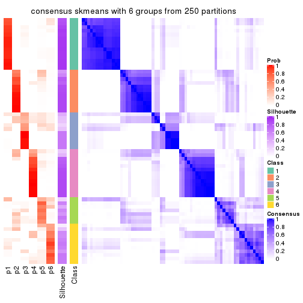
Heatmaps for the membership of samples in all partitions to see how consistent they are:
membership_heatmap(res, k = 2)
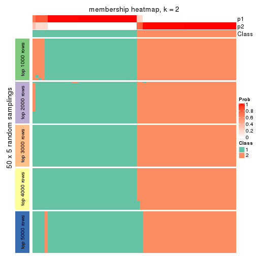
membership_heatmap(res, k = 3)
membership_heatmap(res, k = 4)
membership_heatmap(res, k = 5)
membership_heatmap(res, k = 6)
As soon as we have had the classes for columns, we can look for signatures which are significantly different between classes which can be candidate marks for certain classes. Following are the heatmaps for signatures.
Signature heatmaps where rows are scaled:
get_signatures(res, k = 2)
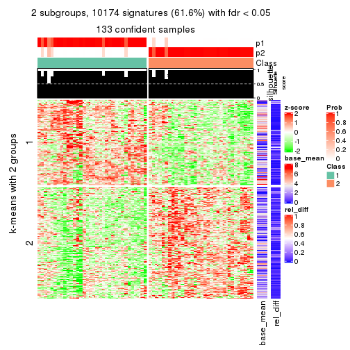
get_signatures(res, k = 3)
get_signatures(res, k = 4)
get_signatures(res, k = 5)

get_signatures(res, k = 6)
Signature heatmaps where rows are not scaled:
get_signatures(res, k = 2, scale_rows = FALSE)
get_signatures(res, k = 3, scale_rows = FALSE)
get_signatures(res, k = 4, scale_rows = FALSE)
get_signatures(res, k = 5, scale_rows = FALSE)
get_signatures(res, k = 6, scale_rows = FALSE)
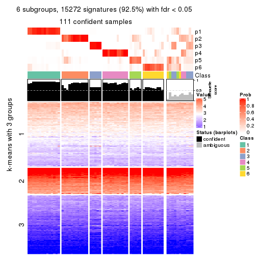
Compare the overlap of signatures from different k:
compare_signatures(res)
get_signature() returns a data frame invisibly. TO get the list of signatures, the function
call should be assigned to a variable explicitly. In following code, if plot argument is set
to FALSE, no heatmap is plotted while only the differential analysis is performed.
# code only for demonstration
tb = get_signature(res, k = ..., plot = FALSE)
An example of the output of tb is:
#> which_row fdr mean_1 mean_2 scaled_mean_1 scaled_mean_2 km
#> 1 38 0.042760348 8.373488 9.131774 -0.5533452 0.5164555 1
#> 2 40 0.018707592 7.106213 8.469186 -0.6173731 0.5762149 1
#> 3 55 0.019134737 10.221463 11.207825 -0.6159697 0.5749050 1
#> 4 59 0.006059896 5.921854 7.869574 -0.6899429 0.6439467 1
#> 5 60 0.018055526 8.928898 10.211722 -0.6204761 0.5791110 1
#> 6 98 0.009384629 15.714769 14.887706 0.6635654 -0.6193277 2
...
The columns in tb are:
which_row: row indices corresponding to the input matrix.fdr: FDR for the differential test. mean_x: The mean value in group x.scaled_mean_x: The mean value in group x after rows are scaled.km: Row groups if k-means clustering is applied to rows.UMAP plot which shows how samples are separated.
dimension_reduction(res, k = 2, method = "UMAP")
dimension_reduction(res, k = 3, method = "UMAP")
dimension_reduction(res, k = 4, method = "UMAP")
dimension_reduction(res, k = 5, method = "UMAP")
dimension_reduction(res, k = 6, method = "UMAP")
Following heatmap shows how subgroups are split when increasing k:
collect_classes(res)
If matrix rows can be associated to genes, consider to use GO_Enrichment(res,
...) to perform function enrichment for the signature genes.
The object with results only for a single top-value method and a single partition method can be extracted as:
res = res_list["SD", "pam"]
# you can also extract it by
# res = res_list["SD:pam"]
A summary of res and all the functions that can be applied to it:
res
#> A 'ConsensusPartition' object with k = 2, 3, 4, 5, 6.
#> On a matrix with 16510 rows and 133 columns.
#> Top rows (1000, 2000, 3000, 4000, 5000) are extracted by 'SD' method.
#> Subgroups are detected by 'pam' method.
#> Performed in total 1250 partitions by row resampling.
#> Best k for subgroups seems to be 2.
#>
#> Following methods can be applied to this 'ConsensusPartition' object:
#> [1] "cola_report" "collect_classes" "collect_plots"
#> [4] "collect_stats" "colnames" "compare_signatures"
#> [7] "consensus_heatmap" "dimension_reduction" "functional_enrichment"
#> [10] "get_anno_col" "get_anno" "get_classes"
#> [13] "get_consensus" "get_matrix" "get_membership"
#> [16] "get_param" "get_signatures" "get_stats"
#> [19] "is_best_k" "is_stable_k" "membership_heatmap"
#> [22] "ncol" "nrow" "plot_ecdf"
#> [25] "rownames" "select_partition_number" "show"
#> [28] "suggest_best_k" "test_to_known_factors"
collect_plots() function collects all the plots made from res for all k (number of partitions)
into one single page to provide an easy and fast comparison between different k.
collect_plots(res)
The plots are:
k and the heatmap of
predicted classes for each k.k.k.k.All the plots in panels can be made by individual functions and they are plotted later in this section.
select_partition_number() produces several plots showing different
statistics for choosing “optimized” k. There are following statistics:
k;k, the area increased is defined as \(A_k - A_{k-1}\).The detailed explanations of these statistics can be found in the cola vignette.
Generally speaking, lower PAC score, higher mean silhouette score or higher
concordance corresponds to better partition. Rand index and Jaccard index
measure how similar the current partition is compared to partition with k-1.
If they are too similar, we won't accept k is better than k-1.
select_partition_number(res)
The numeric values for all these statistics can be obtained by get_stats().
get_stats(res)
#> k 1-PAC mean_silhouette concordance area_increased Rand Jaccard
#> 2 2 0.873 0.912 0.950 0.4987 0.499 0.499
#> 3 3 0.719 0.799 0.895 0.1347 0.903 0.811
#> 4 4 0.458 0.641 0.793 0.2299 0.725 0.448
#> 5 5 0.658 0.428 0.709 0.1011 0.702 0.289
#> 6 6 0.795 0.747 0.867 0.0572 0.891 0.596
suggest_best_k() suggests the best \(k\) based on these statistics. The rules are as follows:
NA.suggest_best_k(res)
#> [1] 2
Following shows the table of the partitions (You need to click the show/hide
code output link to see it). The membership matrix (columns with name p*)
is inferred by
clue::cl_consensus()
function with the SE method. Basically the value in the membership matrix
represents the probability to belong to a certain group. The finall class
label for an item is determined with the group with highest probability it
belongs to.
In get_classes() function, the entropy is calculated from the membership
matrix and the silhouette score is calculated from the consensus matrix.
cbind(get_classes(res, k = 2), get_membership(res, k = 2))
#> class entropy silhouette p1 p2
#> ERR946976 2 0.4298 0.9069 0.088 0.912
#> ERR947001 2 0.4298 0.9069 0.088 0.912
#> ERR946975 1 0.4022 0.9307 0.920 0.080
#> ERR947000 1 0.4022 0.9307 0.920 0.080
#> ERR946972 2 0.0672 0.9545 0.008 0.992
#> ERR946997 2 0.0672 0.9545 0.008 0.992
#> ERR946986 2 0.0672 0.9545 0.008 0.992
#> ERR947011 2 0.0672 0.9545 0.008 0.992
#> ERR946977 2 0.0672 0.9545 0.008 0.992
#> ERR947002 2 0.0672 0.9545 0.008 0.992
#> ERR946974 1 0.4022 0.9307 0.920 0.080
#> ERR946999 1 0.4022 0.9307 0.920 0.080
#> ERR946971 2 0.4298 0.9069 0.088 0.912
#> ERR946996 2 0.4298 0.9069 0.088 0.912
#> ERR946992 2 0.0000 0.9565 0.000 1.000
#> ERR947017 2 0.0000 0.9565 0.000 1.000
#> ERR946984 2 0.0000 0.9565 0.000 1.000
#> ERR947009 2 0.0000 0.9565 0.000 1.000
#> ERR946987 2 0.0672 0.9528 0.008 0.992
#> ERR947012 2 0.1633 0.9431 0.024 0.976
#> ERR946991 2 0.0000 0.9565 0.000 1.000
#> ERR947016 2 0.0000 0.9565 0.000 1.000
#> ERR946983 2 0.0000 0.9565 0.000 1.000
#> ERR947008 2 0.0000 0.9565 0.000 1.000
#> ERR946970 1 0.0000 0.9337 1.000 0.000
#> ERR946995 1 0.0000 0.9337 1.000 0.000
#> ERR946969 2 0.5178 0.8647 0.116 0.884
#> ERR946994 2 0.5737 0.8422 0.136 0.864
#> ERR946982 1 0.4431 0.9237 0.908 0.092
#> ERR947007 1 0.4298 0.9259 0.912 0.088
#> ERR946988 2 0.0000 0.9565 0.000 1.000
#> ERR947013 2 0.0000 0.9565 0.000 1.000
#> ERR946985 2 0.7815 0.7008 0.232 0.768
#> ERR947010 2 0.9323 0.4526 0.348 0.652
#> ERR946989 1 0.4022 0.9307 0.920 0.080
#> ERR947014 1 0.4022 0.9307 0.920 0.080
#> ERR946968 1 0.0000 0.9337 1.000 0.000
#> ERR946993 1 0.0000 0.9337 1.000 0.000
#> ERR946990 2 0.0672 0.9545 0.008 0.992
#> ERR947015 2 0.0938 0.9530 0.012 0.988
#> ERR946980 2 0.0672 0.9545 0.008 0.992
#> ERR947005 2 0.0672 0.9545 0.008 0.992
#> ERR946978 2 0.4431 0.9049 0.092 0.908
#> ERR947003 2 0.4690 0.9004 0.100 0.900
#> ERR946979 2 0.0000 0.9565 0.000 1.000
#> ERR947004 2 0.0000 0.9565 0.000 1.000
#> ERR946957 2 0.4298 0.9069 0.088 0.912
#> ERR946962 2 0.4298 0.9069 0.088 0.912
#> ERR946958 1 0.0000 0.9337 1.000 0.000
#> ERR946963 1 0.0000 0.9337 1.000 0.000
#> ERR946959 1 0.0000 0.9337 1.000 0.000
#> ERR946964 1 0.0000 0.9337 1.000 0.000
#> ERR946967 2 0.0000 0.9565 0.000 1.000
#> ERR862690 2 0.0000 0.9565 0.000 1.000
#> ERR914278 1 0.4022 0.9307 0.920 0.080
#> ERR914314 1 0.4022 0.9307 0.920 0.080
#> ERR914279 1 0.2236 0.9214 0.964 0.036
#> ERR914315 1 0.2236 0.9214 0.964 0.036
#> ERR914280 1 0.4022 0.9307 0.920 0.080
#> ERR914316 1 0.4022 0.9307 0.920 0.080
#> ERR914281 2 0.0000 0.9565 0.000 1.000
#> ERR914317 2 0.0000 0.9565 0.000 1.000
#> ERR914282 2 0.0000 0.9565 0.000 1.000
#> ERR914318 2 0.0000 0.9565 0.000 1.000
#> ERR914283 1 0.3431 0.9036 0.936 0.064
#> ERR914319 1 0.3733 0.8972 0.928 0.072
#> ERR914284 1 0.0000 0.9337 1.000 0.000
#> ERR914320 1 0.0000 0.9337 1.000 0.000
#> ERR914285 1 0.4022 0.9307 0.920 0.080
#> ERR914321 1 0.4022 0.9307 0.920 0.080
#> ERR914286 1 0.4022 0.9307 0.920 0.080
#> ERR914322 1 0.4022 0.9307 0.920 0.080
#> ERR914287 1 0.0938 0.9318 0.988 0.012
#> ERR914323 1 0.0376 0.9333 0.996 0.004
#> ERR914288 1 0.4022 0.9307 0.920 0.080
#> ERR914324 1 0.4022 0.9307 0.920 0.080
#> ERR914289 1 0.0000 0.9337 1.000 0.000
#> ERR914290 1 0.0000 0.9337 1.000 0.000
#> ERR914326 1 0.0000 0.9337 1.000 0.000
#> ERR914291 2 0.4161 0.8926 0.084 0.916
#> ERR914327 2 0.5059 0.8669 0.112 0.888
#> ERR914292 1 0.5737 0.8847 0.864 0.136
#> ERR914328 1 0.2778 0.9351 0.952 0.048
#> ERR914293 1 0.0000 0.9337 1.000 0.000
#> ERR914329 1 0.0000 0.9337 1.000 0.000
#> ERR914294 1 0.4022 0.9307 0.920 0.080
#> ERR914330 1 0.4022 0.9307 0.920 0.080
#> ERR914295 1 0.1843 0.9356 0.972 0.028
#> ERR914331 1 0.0000 0.9337 1.000 0.000
#> ERR914296 2 0.6438 0.8434 0.164 0.836
#> ERR914332 1 0.9954 0.0863 0.540 0.460
#> ERR914297 1 0.3584 0.9004 0.932 0.068
#> ERR914333 1 0.2948 0.9121 0.948 0.052
#> ERR914298 1 0.0000 0.9337 1.000 0.000
#> ERR914334 1 0.0000 0.9337 1.000 0.000
#> ERR914299 2 0.0000 0.9565 0.000 1.000
#> ERR914335 2 0.3879 0.9020 0.076 0.924
#> ERR914300 1 0.0000 0.9337 1.000 0.000
#> ERR914336 1 0.0000 0.9337 1.000 0.000
#> ERR914301 2 0.0000 0.9565 0.000 1.000
#> ERR914337 2 0.0000 0.9565 0.000 1.000
#> ERR914302 1 0.4022 0.9307 0.920 0.080
#> ERR914338 1 0.4022 0.9307 0.920 0.080
#> ERR914303 2 0.0000 0.9565 0.000 1.000
#> ERR914339 2 0.0000 0.9565 0.000 1.000
#> ERR914304 2 0.0000 0.9565 0.000 1.000
#> ERR914340 2 0.0000 0.9565 0.000 1.000
#> ERR914305 2 0.0000 0.9565 0.000 1.000
#> ERR914341 2 0.0000 0.9565 0.000 1.000
#> ERR914306 2 0.0000 0.9565 0.000 1.000
#> ERR914342 2 0.0000 0.9565 0.000 1.000
#> ERR914307 2 0.1184 0.9519 0.016 0.984
#> ERR914343 2 0.2236 0.9414 0.036 0.964
#> ERR914308 2 0.3274 0.9265 0.060 0.940
#> ERR914344 2 0.4298 0.9069 0.088 0.912
#> ERR914309 2 0.9580 0.4452 0.380 0.620
#> ERR914345 1 0.9922 0.1422 0.552 0.448
#> ERR914310 1 0.4022 0.9307 0.920 0.080
#> ERR914346 1 0.1843 0.9356 0.972 0.028
#> ERR914311 2 0.0000 0.9565 0.000 1.000
#> ERR914347 2 0.0000 0.9565 0.000 1.000
#> ERR914312 1 0.4298 0.9259 0.912 0.088
#> ERR914348 1 0.4298 0.9259 0.912 0.088
#> ERR914313 2 0.0000 0.9565 0.000 1.000
#> ERR914349 2 0.0000 0.9565 0.000 1.000
#> ERR946960 1 0.4690 0.8703 0.900 0.100
#> ERR946965 1 0.4690 0.8703 0.900 0.100
#> ERR946966 2 0.2948 0.9220 0.052 0.948
#> ERR946973 2 0.4298 0.9069 0.088 0.912
#> ERR946998 2 0.4298 0.9069 0.088 0.912
#> ERR946981 2 0.0000 0.9565 0.000 1.000
#> ERR947006 2 0.0000 0.9565 0.000 1.000
#> ERR914325 1 0.0000 0.9337 1.000 0.000
cbind(get_classes(res, k = 3), get_membership(res, k = 3))
#> class entropy silhouette p1 p2 p3
#> ERR946976 2 0.5968 0.6109 0.364 0.636 0.000
#> ERR947001 2 0.5968 0.6109 0.364 0.636 0.000
#> ERR946975 1 0.2537 0.8892 0.920 0.000 0.080
#> ERR947000 1 0.2537 0.8892 0.920 0.000 0.080
#> ERR946972 3 0.2537 0.9280 0.000 0.080 0.920
#> ERR946997 3 0.2537 0.9280 0.000 0.080 0.920
#> ERR946986 2 0.5431 0.6756 0.284 0.716 0.000
#> ERR947011 2 0.5431 0.6756 0.284 0.716 0.000
#> ERR946977 2 0.5431 0.6756 0.284 0.716 0.000
#> ERR947002 2 0.5431 0.6756 0.284 0.716 0.000
#> ERR946974 1 0.2537 0.8749 0.920 0.080 0.000
#> ERR946999 1 0.2902 0.8821 0.920 0.064 0.016
#> ERR946971 3 0.2537 0.9538 0.080 0.000 0.920
#> ERR946996 3 0.2537 0.9538 0.080 0.000 0.920
#> ERR946992 2 0.1411 0.8094 0.000 0.964 0.036
#> ERR947017 2 0.1529 0.8091 0.000 0.960 0.040
#> ERR946984 2 0.0000 0.8149 0.000 1.000 0.000
#> ERR947009 2 0.0000 0.8149 0.000 1.000 0.000
#> ERR946987 2 0.1989 0.8055 0.004 0.948 0.048
#> ERR947012 2 0.4527 0.7796 0.088 0.860 0.052
#> ERR946991 2 0.0000 0.8149 0.000 1.000 0.000
#> ERR947016 2 0.0000 0.8149 0.000 1.000 0.000
#> ERR946983 2 0.0000 0.8149 0.000 1.000 0.000
#> ERR947008 2 0.0000 0.8149 0.000 1.000 0.000
#> ERR946970 1 0.1163 0.9026 0.972 0.000 0.028
#> ERR946995 1 0.1163 0.9026 0.972 0.000 0.028
#> ERR946969 2 0.5650 0.6432 0.312 0.688 0.000
#> ERR946994 2 0.5810 0.6055 0.336 0.664 0.000
#> ERR946982 1 0.6677 0.6696 0.740 0.180 0.080
#> ERR947007 1 0.7058 0.6174 0.708 0.212 0.080
#> ERR946988 2 0.0000 0.8149 0.000 1.000 0.000
#> ERR947013 2 0.0592 0.8152 0.012 0.988 0.000
#> ERR946985 1 0.7740 -0.0708 0.508 0.444 0.048
#> ERR947010 1 0.7334 0.3795 0.624 0.328 0.048
#> ERR946989 1 0.3028 0.8876 0.920 0.032 0.048
#> ERR947014 1 0.3028 0.8876 0.920 0.032 0.048
#> ERR946968 1 0.0000 0.9048 1.000 0.000 0.000
#> ERR946993 1 0.0000 0.9048 1.000 0.000 0.000
#> ERR946990 2 0.5465 0.6710 0.288 0.712 0.000
#> ERR947015 2 0.5810 0.6019 0.336 0.664 0.000
#> ERR946980 2 0.5431 0.6756 0.284 0.716 0.000
#> ERR947005 2 0.5431 0.6756 0.284 0.716 0.000
#> ERR946978 2 0.6008 0.5981 0.372 0.628 0.000
#> ERR947003 2 0.6062 0.5773 0.384 0.616 0.000
#> ERR946979 2 0.0000 0.8149 0.000 1.000 0.000
#> ERR947004 2 0.0000 0.8149 0.000 1.000 0.000
#> ERR946957 3 0.2537 0.9538 0.080 0.000 0.920
#> ERR946962 3 0.2537 0.9538 0.080 0.000 0.920
#> ERR946958 1 0.0000 0.9048 1.000 0.000 0.000
#> ERR946963 1 0.0000 0.9048 1.000 0.000 0.000
#> ERR946959 1 0.0000 0.9048 1.000 0.000 0.000
#> ERR946964 1 0.0000 0.9048 1.000 0.000 0.000
#> ERR946967 3 0.2537 0.9280 0.000 0.080 0.920
#> ERR862690 3 0.2537 0.9280 0.000 0.080 0.920
#> ERR914278 1 0.2537 0.8892 0.920 0.000 0.080
#> ERR914314 1 0.2537 0.8892 0.920 0.000 0.080
#> ERR914279 1 0.0237 0.9042 0.996 0.004 0.000
#> ERR914315 1 0.0237 0.9042 0.996 0.004 0.000
#> ERR914280 1 0.2537 0.8892 0.920 0.000 0.080
#> ERR914316 1 0.2537 0.8892 0.920 0.000 0.080
#> ERR914281 2 0.2537 0.7935 0.000 0.920 0.080
#> ERR914317 2 0.2537 0.7935 0.000 0.920 0.080
#> ERR914282 2 0.1289 0.8106 0.000 0.968 0.032
#> ERR914318 2 0.2537 0.7935 0.000 0.920 0.080
#> ERR914283 1 0.0747 0.8997 0.984 0.016 0.000
#> ERR914319 1 0.0747 0.8997 0.984 0.016 0.000
#> ERR914284 1 0.0000 0.9048 1.000 0.000 0.000
#> ERR914320 1 0.0000 0.9048 1.000 0.000 0.000
#> ERR914285 1 0.3028 0.8876 0.920 0.032 0.048
#> ERR914321 1 0.3028 0.8876 0.920 0.032 0.048
#> ERR914286 1 0.2537 0.8892 0.920 0.000 0.080
#> ERR914322 1 0.2537 0.8892 0.920 0.000 0.080
#> ERR914287 1 0.0424 0.9036 0.992 0.008 0.000
#> ERR914323 1 0.0237 0.9044 0.996 0.004 0.000
#> ERR914288 1 0.3028 0.8837 0.920 0.048 0.032
#> ERR914324 1 0.3028 0.8837 0.920 0.048 0.032
#> ERR914289 1 0.0000 0.9048 1.000 0.000 0.000
#> ERR914290 1 0.0000 0.9048 1.000 0.000 0.000
#> ERR914326 1 0.0000 0.9048 1.000 0.000 0.000
#> ERR914291 2 0.1711 0.8090 0.008 0.960 0.032
#> ERR914327 2 0.1711 0.8090 0.008 0.960 0.032
#> ERR914292 1 0.4002 0.7969 0.840 0.160 0.000
#> ERR914328 1 0.1860 0.8916 0.948 0.052 0.000
#> ERR914293 1 0.0000 0.9048 1.000 0.000 0.000
#> ERR914329 1 0.0000 0.9048 1.000 0.000 0.000
#> ERR914294 1 0.2537 0.8892 0.920 0.000 0.080
#> ERR914330 1 0.2537 0.8892 0.920 0.000 0.080
#> ERR914295 1 0.1163 0.9009 0.972 0.028 0.000
#> ERR914331 1 0.0000 0.9048 1.000 0.000 0.000
#> ERR914296 2 0.6305 0.3322 0.484 0.516 0.000
#> ERR914332 1 0.5882 0.2951 0.652 0.348 0.000
#> ERR914297 1 0.0424 0.9031 0.992 0.008 0.000
#> ERR914333 1 0.0424 0.9031 0.992 0.008 0.000
#> ERR914298 1 0.0000 0.9048 1.000 0.000 0.000
#> ERR914334 1 0.0000 0.9048 1.000 0.000 0.000
#> ERR914299 2 0.2806 0.8079 0.040 0.928 0.032
#> ERR914335 2 0.2176 0.8123 0.020 0.948 0.032
#> ERR914300 1 0.0000 0.9048 1.000 0.000 0.000
#> ERR914336 1 0.0000 0.9048 1.000 0.000 0.000
#> ERR914301 2 0.1753 0.8045 0.000 0.952 0.048
#> ERR914337 2 0.1753 0.8045 0.000 0.952 0.048
#> ERR914302 1 0.2537 0.8892 0.920 0.000 0.080
#> ERR914338 1 0.2537 0.8892 0.920 0.000 0.080
#> ERR914303 2 0.0000 0.8149 0.000 1.000 0.000
#> ERR914339 2 0.0892 0.8125 0.000 0.980 0.020
#> ERR914304 2 0.0000 0.8149 0.000 1.000 0.000
#> ERR914340 2 0.0000 0.8149 0.000 1.000 0.000
#> ERR914305 2 0.1289 0.8094 0.000 0.968 0.032
#> ERR914341 2 0.1289 0.8094 0.000 0.968 0.032
#> ERR914306 2 0.1289 0.8106 0.000 0.968 0.032
#> ERR914342 2 0.1860 0.8061 0.000 0.948 0.052
#> ERR914307 2 0.5529 0.6665 0.296 0.704 0.000
#> ERR914343 2 0.5678 0.6521 0.316 0.684 0.000
#> ERR914308 2 0.5810 0.6377 0.336 0.664 0.000
#> ERR914344 2 0.5968 0.6109 0.364 0.636 0.000
#> ERR914309 2 0.6180 0.5126 0.416 0.584 0.000
#> ERR914345 1 0.6225 -0.0394 0.568 0.432 0.000
#> ERR914310 1 0.2537 0.8749 0.920 0.080 0.000
#> ERR914346 1 0.1163 0.9009 0.972 0.028 0.000
#> ERR914311 2 0.0000 0.8149 0.000 1.000 0.000
#> ERR914347 2 0.1529 0.8101 0.000 0.960 0.040
#> ERR914312 1 0.7713 0.4879 0.636 0.284 0.080
#> ERR914348 1 0.7713 0.4879 0.636 0.284 0.080
#> ERR914313 2 0.2537 0.7935 0.000 0.920 0.080
#> ERR914349 2 0.2537 0.7935 0.000 0.920 0.080
#> ERR946960 1 0.0747 0.8997 0.984 0.016 0.000
#> ERR946965 1 0.0747 0.8997 0.984 0.016 0.000
#> ERR946966 2 0.0000 0.8149 0.000 1.000 0.000
#> ERR946973 3 0.2537 0.9538 0.080 0.000 0.920
#> ERR946998 3 0.2537 0.9538 0.080 0.000 0.920
#> ERR946981 2 0.0000 0.8149 0.000 1.000 0.000
#> ERR947006 2 0.0000 0.8149 0.000 1.000 0.000
#> ERR914325 1 0.0000 0.9048 1.000 0.000 0.000
cbind(get_classes(res, k = 4), get_membership(res, k = 4))
#> class entropy silhouette p1 p2 p3 p4
#> ERR946976 1 0.4500 0.57173 0.684 0.316 0 0.000
#> ERR947001 1 0.4500 0.57173 0.684 0.316 0 0.000
#> ERR946975 4 0.4375 0.67771 0.180 0.032 0 0.788
#> ERR947000 4 0.3486 0.67743 0.188 0.000 0 0.812
#> ERR946972 3 0.0000 1.00000 0.000 0.000 1 0.000
#> ERR946997 3 0.0000 1.00000 0.000 0.000 1 0.000
#> ERR946986 2 0.2706 0.72706 0.020 0.900 0 0.080
#> ERR947011 2 0.2706 0.72706 0.020 0.900 0 0.080
#> ERR946977 2 0.2706 0.72706 0.020 0.900 0 0.080
#> ERR947002 2 0.2706 0.72706 0.020 0.900 0 0.080
#> ERR946974 2 0.7359 0.00509 0.184 0.504 0 0.312
#> ERR946999 4 0.7476 0.32613 0.184 0.356 0 0.460
#> ERR946971 3 0.0000 1.00000 0.000 0.000 1 0.000
#> ERR946996 3 0.0000 1.00000 0.000 0.000 1 0.000
#> ERR946992 2 0.4356 0.55890 0.000 0.708 0 0.292
#> ERR947017 2 0.4522 0.52070 0.000 0.680 0 0.320
#> ERR946984 2 0.0000 0.75684 0.000 1.000 0 0.000
#> ERR947009 2 0.0000 0.75684 0.000 1.000 0 0.000
#> ERR946987 4 0.4948 0.18424 0.000 0.440 0 0.560
#> ERR947012 4 0.4790 0.29166 0.000 0.380 0 0.620
#> ERR946991 2 0.0000 0.75684 0.000 1.000 0 0.000
#> ERR947016 2 0.0000 0.75684 0.000 1.000 0 0.000
#> ERR946983 2 0.0000 0.75684 0.000 1.000 0 0.000
#> ERR947008 2 0.0000 0.75684 0.000 1.000 0 0.000
#> ERR946970 4 0.5602 0.10952 0.472 0.020 0 0.508
#> ERR946995 4 0.5165 0.08109 0.484 0.004 0 0.512
#> ERR946969 2 0.4906 0.60242 0.140 0.776 0 0.084
#> ERR946994 2 0.5151 0.58036 0.140 0.760 0 0.100
#> ERR946982 4 0.1389 0.64524 0.000 0.048 0 0.952
#> ERR947007 4 0.1474 0.64325 0.000 0.052 0 0.948
#> ERR946988 2 0.0000 0.75684 0.000 1.000 0 0.000
#> ERR947013 2 0.0000 0.75684 0.000 1.000 0 0.000
#> ERR946985 4 0.4908 0.44183 0.016 0.292 0 0.692
#> ERR947010 4 0.4661 0.49445 0.016 0.256 0 0.728
#> ERR946989 4 0.6958 0.55057 0.184 0.232 0 0.584
#> ERR947014 4 0.6958 0.55057 0.184 0.232 0 0.584
#> ERR946968 1 0.3300 0.72788 0.848 0.008 0 0.144
#> ERR946993 1 0.3300 0.72788 0.848 0.008 0 0.144
#> ERR946990 2 0.2675 0.71769 0.100 0.892 0 0.008
#> ERR947015 2 0.2988 0.70868 0.112 0.876 0 0.012
#> ERR946980 2 0.2706 0.72706 0.020 0.900 0 0.080
#> ERR947005 2 0.2706 0.72706 0.020 0.900 0 0.080
#> ERR946978 1 0.3219 0.72711 0.836 0.164 0 0.000
#> ERR947003 1 0.3219 0.72711 0.836 0.164 0 0.000
#> ERR946979 2 0.3266 0.65191 0.000 0.832 0 0.168
#> ERR947004 2 0.3266 0.65191 0.000 0.832 0 0.168
#> ERR946957 3 0.0000 1.00000 0.000 0.000 1 0.000
#> ERR946962 3 0.0000 1.00000 0.000 0.000 1 0.000
#> ERR946958 1 0.2921 0.73087 0.860 0.000 0 0.140
#> ERR946963 1 0.2868 0.73311 0.864 0.000 0 0.136
#> ERR946959 1 0.0000 0.78653 1.000 0.000 0 0.000
#> ERR946964 1 0.0000 0.78653 1.000 0.000 0 0.000
#> ERR946967 3 0.0000 1.00000 0.000 0.000 1 0.000
#> ERR862690 3 0.0000 1.00000 0.000 0.000 1 0.000
#> ERR914278 4 0.3448 0.68423 0.168 0.004 0 0.828
#> ERR914314 4 0.3448 0.68423 0.168 0.004 0 0.828
#> ERR914279 1 0.1302 0.78536 0.956 0.044 0 0.000
#> ERR914315 1 0.1389 0.78460 0.952 0.048 0 0.000
#> ERR914280 4 0.3725 0.67808 0.180 0.008 0 0.812
#> ERR914316 4 0.3626 0.67653 0.184 0.004 0 0.812
#> ERR914281 4 0.3837 0.46367 0.000 0.224 0 0.776
#> ERR914317 4 0.3837 0.46367 0.000 0.224 0 0.776
#> ERR914282 2 0.3219 0.65527 0.000 0.836 0 0.164
#> ERR914318 2 0.4977 0.16653 0.000 0.540 0 0.460
#> ERR914283 1 0.1940 0.77618 0.924 0.076 0 0.000
#> ERR914319 1 0.2216 0.76956 0.908 0.092 0 0.000
#> ERR914284 1 0.3982 0.65873 0.776 0.004 0 0.220
#> ERR914320 1 0.3982 0.65873 0.776 0.004 0 0.220
#> ERR914285 4 0.6931 0.55361 0.184 0.228 0 0.588
#> ERR914321 4 0.6931 0.55361 0.184 0.228 0 0.588
#> ERR914286 4 0.3591 0.68544 0.168 0.008 0 0.824
#> ERR914322 4 0.3591 0.68544 0.168 0.008 0 0.824
#> ERR914287 1 0.0336 0.78751 0.992 0.008 0 0.000
#> ERR914323 1 0.0000 0.78653 1.000 0.000 0 0.000
#> ERR914288 4 0.7501 0.13422 0.184 0.372 0 0.444
#> ERR914324 4 0.7501 0.13422 0.184 0.372 0 0.444
#> ERR914289 1 0.4158 0.65254 0.768 0.008 0 0.224
#> ERR914290 1 0.0000 0.78653 1.000 0.000 0 0.000
#> ERR914326 1 0.0000 0.78653 1.000 0.000 0 0.000
#> ERR914291 2 0.6192 0.48366 0.104 0.652 0 0.244
#> ERR914327 2 0.6273 0.47750 0.108 0.644 0 0.248
#> ERR914292 2 0.6550 0.34372 0.184 0.636 0 0.180
#> ERR914328 2 0.7640 0.01433 0.356 0.432 0 0.212
#> ERR914293 1 0.0000 0.78653 1.000 0.000 0 0.000
#> ERR914329 1 0.0000 0.78653 1.000 0.000 0 0.000
#> ERR914294 4 0.0188 0.66134 0.004 0.000 0 0.996
#> ERR914330 4 0.0188 0.66134 0.004 0.000 0 0.996
#> ERR914295 1 0.7224 0.32210 0.548 0.236 0 0.216
#> ERR914331 1 0.5923 0.56246 0.684 0.100 0 0.216
#> ERR914296 1 0.3172 0.73063 0.840 0.160 0 0.000
#> ERR914332 1 0.2973 0.74085 0.856 0.144 0 0.000
#> ERR914297 1 0.5900 0.68366 0.684 0.096 0 0.220
#> ERR914333 1 0.5690 0.68778 0.700 0.084 0 0.216
#> ERR914298 1 0.0188 0.78630 0.996 0.000 0 0.004
#> ERR914334 1 0.0188 0.78630 0.996 0.000 0 0.004
#> ERR914299 2 0.4072 0.60020 0.000 0.748 0 0.252
#> ERR914335 2 0.4630 0.58939 0.016 0.732 0 0.252
#> ERR914300 1 0.4599 0.68273 0.800 0.088 0 0.112
#> ERR914336 1 0.3616 0.72716 0.852 0.036 0 0.112
#> ERR914301 2 0.4331 0.42553 0.000 0.712 0 0.288
#> ERR914337 2 0.4500 0.36062 0.000 0.684 0 0.316
#> ERR914302 4 0.1118 0.67815 0.036 0.000 0 0.964
#> ERR914338 4 0.1474 0.68429 0.052 0.000 0 0.948
#> ERR914303 2 0.1118 0.74968 0.000 0.964 0 0.036
#> ERR914339 2 0.2469 0.71548 0.000 0.892 0 0.108
#> ERR914304 2 0.0000 0.75684 0.000 1.000 0 0.000
#> ERR914340 2 0.0000 0.75684 0.000 1.000 0 0.000
#> ERR914305 2 0.3873 0.61163 0.000 0.772 0 0.228
#> ERR914341 2 0.3873 0.61163 0.000 0.772 0 0.228
#> ERR914306 2 0.3400 0.63144 0.000 0.820 0 0.180
#> ERR914342 2 0.4331 0.51249 0.000 0.712 0 0.288
#> ERR914307 2 0.4853 0.58023 0.220 0.744 0 0.036
#> ERR914343 2 0.5432 0.40115 0.316 0.652 0 0.032
#> ERR914308 1 0.4855 0.35761 0.600 0.400 0 0.000
#> ERR914344 1 0.3219 0.72711 0.836 0.164 0 0.000
#> ERR914309 1 0.3172 0.73004 0.840 0.160 0 0.000
#> ERR914345 1 0.3123 0.73310 0.844 0.156 0 0.000
#> ERR914310 2 0.6944 0.24159 0.196 0.588 0 0.216
#> ERR914346 1 0.7396 0.26196 0.516 0.268 0 0.216
#> ERR914311 2 0.0000 0.75684 0.000 1.000 0 0.000
#> ERR914347 2 0.3837 0.62631 0.000 0.776 0 0.224
#> ERR914312 4 0.5470 0.67278 0.168 0.100 0 0.732
#> ERR914348 4 0.5454 0.67341 0.172 0.096 0 0.732
#> ERR914313 4 0.3764 0.47091 0.000 0.216 0 0.784
#> ERR914349 4 0.3764 0.47091 0.000 0.216 0 0.784
#> ERR946960 1 0.5628 0.73345 0.724 0.132 0 0.144
#> ERR946965 1 0.5628 0.73345 0.724 0.132 0 0.144
#> ERR946966 2 0.1940 0.72874 0.076 0.924 0 0.000
#> ERR946973 3 0.0000 1.00000 0.000 0.000 1 0.000
#> ERR946998 3 0.0000 1.00000 0.000 0.000 1 0.000
#> ERR946981 2 0.0000 0.75684 0.000 1.000 0 0.000
#> ERR947006 2 0.0000 0.75684 0.000 1.000 0 0.000
#> ERR914325 1 0.4158 0.65254 0.768 0.008 0 0.224
cbind(get_classes(res, k = 5), get_membership(res, k = 5))
#> class entropy silhouette p1 p2 p3 p4 p5
#> ERR946976 1 0.1908 0.25923 0.908 0.000 0 0.000 0.092
#> ERR947001 1 0.1908 0.25923 0.908 0.000 0 0.000 0.092
#> ERR946975 5 0.4045 0.44742 0.000 0.000 0 0.356 0.644
#> ERR947000 5 0.4341 0.43537 0.008 0.000 0 0.364 0.628
#> ERR946972 3 0.0000 1.00000 0.000 0.000 1 0.000 0.000
#> ERR946997 3 0.0000 1.00000 0.000 0.000 1 0.000 0.000
#> ERR946986 1 0.4446 -0.18276 0.520 0.004 0 0.000 0.476
#> ERR947011 1 0.4446 -0.18276 0.520 0.004 0 0.000 0.476
#> ERR946977 1 0.5325 -0.14582 0.520 0.024 0 0.016 0.440
#> ERR947002 1 0.4794 -0.16876 0.520 0.012 0 0.004 0.464
#> ERR946974 5 0.3001 0.65943 0.144 0.004 0 0.008 0.844
#> ERR946999 5 0.3257 0.66317 0.124 0.004 0 0.028 0.844
#> ERR946971 3 0.0000 1.00000 0.000 0.000 1 0.000 0.000
#> ERR946996 3 0.0000 1.00000 0.000 0.000 1 0.000 0.000
#> ERR946992 4 0.4367 0.32304 0.372 0.008 0 0.620 0.000
#> ERR947017 4 0.4505 0.33524 0.368 0.008 0 0.620 0.004
#> ERR946984 1 0.4302 -0.61674 0.520 0.480 0 0.000 0.000
#> ERR947009 1 0.4302 -0.61674 0.520 0.480 0 0.000 0.000
#> ERR946987 4 0.5672 0.74972 0.088 0.368 0 0.544 0.000
#> ERR947012 4 0.5672 0.74972 0.088 0.368 0 0.544 0.000
#> ERR946991 1 0.4305 -0.62360 0.512 0.488 0 0.000 0.000
#> ERR947016 1 0.4305 -0.62360 0.512 0.488 0 0.000 0.000
#> ERR946983 2 0.4192 0.73376 0.404 0.596 0 0.000 0.000
#> ERR947008 2 0.4101 0.76377 0.372 0.628 0 0.000 0.000
#> ERR946970 5 0.0693 0.70861 0.012 0.000 0 0.008 0.980
#> ERR946995 5 0.0290 0.70773 0.000 0.000 0 0.008 0.992
#> ERR946969 5 0.4434 0.22291 0.460 0.004 0 0.000 0.536
#> ERR946994 5 0.4415 0.25941 0.444 0.004 0 0.000 0.552
#> ERR946982 4 0.4088 0.81513 0.000 0.368 0 0.632 0.000
#> ERR947007 4 0.4088 0.81513 0.000 0.368 0 0.632 0.000
#> ERR946988 1 0.4302 -0.61674 0.520 0.480 0 0.000 0.000
#> ERR947013 1 0.4302 -0.61674 0.520 0.480 0 0.000 0.000
#> ERR946985 2 0.8135 -0.54569 0.128 0.368 0 0.316 0.188
#> ERR947010 2 0.7835 -0.59782 0.092 0.368 0 0.364 0.176
#> ERR946989 5 0.4294 0.63963 0.148 0.004 0 0.072 0.776
#> ERR947014 5 0.4294 0.63963 0.148 0.004 0 0.072 0.776
#> ERR946968 5 0.4242 0.22696 0.428 0.000 0 0.000 0.572
#> ERR946993 5 0.4242 0.22696 0.428 0.000 0 0.000 0.572
#> ERR946990 1 0.1571 0.16484 0.936 0.004 0 0.000 0.060
#> ERR947015 1 0.2011 0.18510 0.908 0.004 0 0.000 0.088
#> ERR946980 1 0.4446 -0.18276 0.520 0.004 0 0.000 0.476
#> ERR947005 1 0.4446 -0.18276 0.520 0.004 0 0.000 0.476
#> ERR946978 1 0.6254 0.45033 0.480 0.000 0 0.368 0.152
#> ERR947003 1 0.6254 0.45033 0.480 0.000 0 0.368 0.152
#> ERR946979 2 0.0290 0.28119 0.008 0.992 0 0.000 0.000
#> ERR947004 2 0.0290 0.28119 0.008 0.992 0 0.000 0.000
#> ERR946957 3 0.0000 1.00000 0.000 0.000 1 0.000 0.000
#> ERR946962 3 0.0000 1.00000 0.000 0.000 1 0.000 0.000
#> ERR946958 5 0.4227 0.24030 0.420 0.000 0 0.000 0.580
#> ERR946963 5 0.4390 0.22296 0.428 0.000 0 0.004 0.568
#> ERR946959 1 0.6254 0.45033 0.480 0.000 0 0.368 0.152
#> ERR946964 1 0.6254 0.45033 0.480 0.000 0 0.368 0.152
#> ERR946967 3 0.0000 1.00000 0.000 0.000 1 0.000 0.000
#> ERR862690 3 0.0000 1.00000 0.000 0.000 1 0.000 0.000
#> ERR914278 5 0.4359 0.35920 0.000 0.004 0 0.412 0.584
#> ERR914314 5 0.4359 0.35920 0.000 0.004 0 0.412 0.584
#> ERR914279 1 0.6254 0.45033 0.480 0.000 0 0.368 0.152
#> ERR914315 1 0.6254 0.45033 0.480 0.000 0 0.368 0.152
#> ERR914280 5 0.3461 0.59825 0.000 0.004 0 0.224 0.772
#> ERR914316 5 0.3607 0.58149 0.000 0.004 0 0.244 0.752
#> ERR914281 4 0.4088 0.81513 0.000 0.368 0 0.632 0.000
#> ERR914317 4 0.4088 0.81513 0.000 0.368 0 0.632 0.000
#> ERR914282 2 0.4101 0.76377 0.372 0.628 0 0.000 0.000
#> ERR914318 2 0.4341 0.75819 0.364 0.628 0 0.008 0.000
#> ERR914283 1 0.6254 0.45033 0.480 0.000 0 0.368 0.152
#> ERR914319 1 0.6254 0.45033 0.480 0.000 0 0.368 0.152
#> ERR914284 5 0.0162 0.70581 0.004 0.000 0 0.000 0.996
#> ERR914320 5 0.0162 0.70581 0.004 0.000 0 0.000 0.996
#> ERR914285 5 0.3061 0.66154 0.136 0.000 0 0.020 0.844
#> ERR914321 5 0.3307 0.66370 0.104 0.000 0 0.052 0.844
#> ERR914286 5 0.4359 0.35920 0.000 0.004 0 0.412 0.584
#> ERR914322 5 0.4359 0.35920 0.000 0.004 0 0.412 0.584
#> ERR914287 1 0.6254 0.45033 0.480 0.000 0 0.368 0.152
#> ERR914323 1 0.6254 0.45033 0.480 0.000 0 0.368 0.152
#> ERR914288 5 0.2921 0.64516 0.004 0.004 0 0.148 0.844
#> ERR914324 5 0.2921 0.64516 0.004 0.004 0 0.148 0.844
#> ERR914289 5 0.0162 0.70581 0.004 0.000 0 0.000 0.996
#> ERR914290 1 0.6254 0.45033 0.480 0.000 0 0.368 0.152
#> ERR914326 1 0.6254 0.45033 0.480 0.000 0 0.368 0.152
#> ERR914291 4 0.7752 -0.28112 0.336 0.268 0 0.340 0.056
#> ERR914327 1 0.7852 -0.38923 0.340 0.252 0 0.340 0.068
#> ERR914292 5 0.2848 0.65455 0.156 0.004 0 0.000 0.840
#> ERR914328 5 0.0671 0.70651 0.016 0.004 0 0.000 0.980
#> ERR914293 1 0.6254 0.45033 0.480 0.000 0 0.368 0.152
#> ERR914329 1 0.6254 0.45033 0.480 0.000 0 0.368 0.152
#> ERR914294 4 0.4088 0.81513 0.000 0.368 0 0.632 0.000
#> ERR914330 4 0.4088 0.81513 0.000 0.368 0 0.632 0.000
#> ERR914295 5 0.0324 0.70711 0.004 0.004 0 0.000 0.992
#> ERR914331 5 0.0162 0.70581 0.004 0.000 0 0.000 0.996
#> ERR914296 1 0.6254 0.45033 0.480 0.000 0 0.368 0.152
#> ERR914332 1 0.6254 0.45033 0.480 0.000 0 0.368 0.152
#> ERR914297 5 0.1831 0.67768 0.076 0.004 0 0.000 0.920
#> ERR914333 5 0.2583 0.63502 0.132 0.004 0 0.000 0.864
#> ERR914298 1 0.6254 0.45033 0.480 0.000 0 0.368 0.152
#> ERR914334 1 0.6254 0.45033 0.480 0.000 0 0.368 0.152
#> ERR914299 1 0.7894 -0.35717 0.372 0.200 0 0.340 0.088
#> ERR914335 1 0.7887 -0.36281 0.368 0.208 0 0.340 0.084
#> ERR914300 5 0.5019 0.30507 0.052 0.000 0 0.316 0.632
#> ERR914336 5 0.5002 0.31170 0.052 0.000 0 0.312 0.636
#> ERR914301 2 0.4225 0.76004 0.364 0.632 0 0.000 0.004
#> ERR914337 2 0.4225 0.76004 0.364 0.632 0 0.000 0.004
#> ERR914302 4 0.5345 0.75360 0.000 0.280 0 0.632 0.088
#> ERR914338 4 0.5628 0.70297 0.000 0.244 0 0.624 0.132
#> ERR914303 2 0.4101 0.76377 0.372 0.628 0 0.000 0.000
#> ERR914339 2 0.4101 0.76377 0.372 0.628 0 0.000 0.000
#> ERR914304 2 0.4101 0.76377 0.372 0.628 0 0.000 0.000
#> ERR914340 2 0.4101 0.76377 0.372 0.628 0 0.000 0.000
#> ERR914305 2 0.4101 0.76377 0.372 0.628 0 0.000 0.000
#> ERR914341 2 0.4101 0.76377 0.372 0.628 0 0.000 0.000
#> ERR914306 2 0.4238 0.76130 0.368 0.628 0 0.000 0.004
#> ERR914342 2 0.4238 0.76130 0.368 0.628 0 0.000 0.004
#> ERR914307 1 0.2228 0.14735 0.912 0.000 0 0.048 0.040
#> ERR914343 1 0.1893 0.15800 0.928 0.000 0 0.024 0.048
#> ERR914308 1 0.5627 0.41746 0.548 0.000 0 0.368 0.084
#> ERR914344 1 0.6254 0.45033 0.480 0.000 0 0.368 0.152
#> ERR914309 1 0.6254 0.45033 0.480 0.000 0 0.368 0.152
#> ERR914345 1 0.6254 0.45033 0.480 0.000 0 0.368 0.152
#> ERR914310 5 0.1952 0.69039 0.084 0.004 0 0.000 0.912
#> ERR914346 5 0.0324 0.70711 0.004 0.004 0 0.000 0.992
#> ERR914311 2 0.4101 0.76377 0.372 0.628 0 0.000 0.000
#> ERR914347 2 0.4101 0.76377 0.372 0.628 0 0.000 0.000
#> ERR914312 2 0.5574 0.03269 0.000 0.512 0 0.072 0.416
#> ERR914348 2 0.5587 -0.00462 0.000 0.500 0 0.072 0.428
#> ERR914313 4 0.4088 0.81513 0.000 0.368 0 0.632 0.000
#> ERR914349 4 0.4088 0.81513 0.000 0.368 0 0.632 0.000
#> ERR946960 5 0.4302 0.15325 0.480 0.000 0 0.000 0.520
#> ERR946965 5 0.4302 0.15325 0.480 0.000 0 0.000 0.520
#> ERR946966 2 0.5042 0.70719 0.388 0.580 0 0.024 0.008
#> ERR946973 3 0.0000 1.00000 0.000 0.000 1 0.000 0.000
#> ERR946998 3 0.0000 1.00000 0.000 0.000 1 0.000 0.000
#> ERR946981 1 0.4305 -0.62360 0.512 0.488 0 0.000 0.000
#> ERR947006 1 0.4305 -0.62360 0.512 0.488 0 0.000 0.000
#> ERR914325 5 0.0162 0.70581 0.004 0.000 0 0.000 0.996
cbind(get_classes(res, k = 6), get_membership(res, k = 6))
#> class entropy silhouette p1 p2 p3 p4 p5 p6
#> ERR946976 5 0.0713 0.83865 0.028 0.000 0 0.000 0.972 0.000
#> ERR947001 5 0.1814 0.77517 0.100 0.000 0 0.000 0.900 0.000
#> ERR946975 6 0.5892 0.44196 0.112 0.008 0 0.292 0.024 0.564
#> ERR947000 6 0.6545 0.30104 0.212 0.008 0 0.292 0.024 0.464
#> ERR946972 3 0.0000 1.00000 0.000 0.000 1 0.000 0.000 0.000
#> ERR946997 3 0.0000 1.00000 0.000 0.000 1 0.000 0.000 0.000
#> ERR946986 5 0.0632 0.84243 0.000 0.000 0 0.000 0.976 0.024
#> ERR947011 5 0.0632 0.84243 0.000 0.000 0 0.000 0.976 0.024
#> ERR946977 5 0.0632 0.84243 0.000 0.000 0 0.000 0.976 0.024
#> ERR947002 5 0.0632 0.84243 0.000 0.000 0 0.000 0.976 0.024
#> ERR946974 6 0.0858 0.78315 0.000 0.000 0 0.004 0.028 0.968
#> ERR946999 6 0.0622 0.78758 0.000 0.000 0 0.012 0.008 0.980
#> ERR946971 3 0.0000 1.00000 0.000 0.000 1 0.000 0.000 0.000
#> ERR946996 3 0.0000 1.00000 0.000 0.000 1 0.000 0.000 0.000
#> ERR946992 5 0.3742 0.46490 0.000 0.004 0 0.348 0.648 0.000
#> ERR947017 5 0.3742 0.46490 0.000 0.004 0 0.348 0.648 0.000
#> ERR946984 5 0.0547 0.84043 0.020 0.000 0 0.000 0.980 0.000
#> ERR947009 5 0.0632 0.84003 0.024 0.000 0 0.000 0.976 0.000
#> ERR946987 4 0.0000 0.91941 0.000 0.000 0 1.000 0.000 0.000
#> ERR947012 4 0.0000 0.91941 0.000 0.000 0 1.000 0.000 0.000
#> ERR946991 5 0.2003 0.73613 0.000 0.116 0 0.000 0.884 0.000
#> ERR947016 5 0.1910 0.74610 0.000 0.108 0 0.000 0.892 0.000
#> ERR946983 2 0.3244 0.75358 0.000 0.732 0 0.000 0.268 0.000
#> ERR947008 2 0.3244 0.75358 0.000 0.732 0 0.000 0.268 0.000
#> ERR946970 6 0.0146 0.78953 0.000 0.000 0 0.004 0.000 0.996
#> ERR946995 6 0.0146 0.78953 0.000 0.000 0 0.004 0.000 0.996
#> ERR946969 5 0.3023 0.60263 0.000 0.000 0 0.000 0.768 0.232
#> ERR946994 5 0.3428 0.51190 0.000 0.000 0 0.000 0.696 0.304
#> ERR946982 4 0.0000 0.91941 0.000 0.000 0 1.000 0.000 0.000
#> ERR947007 4 0.0000 0.91941 0.000 0.000 0 1.000 0.000 0.000
#> ERR946988 5 0.0777 0.84173 0.000 0.004 0 0.000 0.972 0.024
#> ERR947013 5 0.0777 0.84173 0.000 0.004 0 0.000 0.972 0.024
#> ERR946985 4 0.3221 0.62029 0.000 0.000 0 0.736 0.000 0.264
#> ERR947010 4 0.3151 0.64011 0.000 0.000 0 0.748 0.000 0.252
#> ERR946989 6 0.4403 0.33238 0.000 0.000 0 0.028 0.408 0.564
#> ERR947014 6 0.4417 0.31395 0.000 0.000 0 0.028 0.416 0.556
#> ERR946968 6 0.3499 0.55820 0.320 0.000 0 0.000 0.000 0.680
#> ERR946993 6 0.3499 0.55820 0.320 0.000 0 0.000 0.000 0.680
#> ERR946990 5 0.0632 0.84003 0.024 0.000 0 0.000 0.976 0.000
#> ERR947015 5 0.0632 0.84003 0.024 0.000 0 0.000 0.976 0.000
#> ERR946980 5 0.0632 0.84243 0.000 0.000 0 0.000 0.976 0.024
#> ERR947005 5 0.0632 0.84243 0.000 0.000 0 0.000 0.976 0.024
#> ERR946978 1 0.0000 0.95383 1.000 0.000 0 0.000 0.000 0.000
#> ERR947003 1 0.0000 0.95383 1.000 0.000 0 0.000 0.000 0.000
#> ERR946979 2 0.3619 0.47687 0.000 0.680 0 0.316 0.004 0.000
#> ERR947004 2 0.3619 0.47687 0.000 0.680 0 0.316 0.004 0.000
#> ERR946957 3 0.0000 1.00000 0.000 0.000 1 0.000 0.000 0.000
#> ERR946962 3 0.0000 1.00000 0.000 0.000 1 0.000 0.000 0.000
#> ERR946958 6 0.3499 0.55820 0.320 0.000 0 0.000 0.000 0.680
#> ERR946963 6 0.3607 0.51678 0.348 0.000 0 0.000 0.000 0.652
#> ERR946959 1 0.0000 0.95383 1.000 0.000 0 0.000 0.000 0.000
#> ERR946964 1 0.0000 0.95383 1.000 0.000 0 0.000 0.000 0.000
#> ERR946967 3 0.0000 1.00000 0.000 0.000 1 0.000 0.000 0.000
#> ERR862690 3 0.0000 1.00000 0.000 0.000 1 0.000 0.000 0.000
#> ERR914278 6 0.3499 0.54723 0.000 0.000 0 0.320 0.000 0.680
#> ERR914314 6 0.3499 0.54723 0.000 0.000 0 0.320 0.000 0.680
#> ERR914279 1 0.0713 0.92785 0.972 0.000 0 0.000 0.000 0.028
#> ERR914315 1 0.0713 0.92785 0.972 0.000 0 0.000 0.000 0.028
#> ERR914280 6 0.1267 0.76925 0.000 0.000 0 0.060 0.000 0.940
#> ERR914316 6 0.1444 0.76435 0.000 0.000 0 0.072 0.000 0.928
#> ERR914281 4 0.0000 0.91941 0.000 0.000 0 1.000 0.000 0.000
#> ERR914317 4 0.0000 0.91941 0.000 0.000 0 1.000 0.000 0.000
#> ERR914282 2 0.3221 0.75636 0.000 0.736 0 0.000 0.264 0.000
#> ERR914318 2 0.3221 0.75636 0.000 0.736 0 0.000 0.264 0.000
#> ERR914283 1 0.0000 0.95383 1.000 0.000 0 0.000 0.000 0.000
#> ERR914319 1 0.0000 0.95383 1.000 0.000 0 0.000 0.000 0.000
#> ERR914284 6 0.0146 0.78984 0.004 0.000 0 0.000 0.000 0.996
#> ERR914320 6 0.0146 0.78984 0.004 0.000 0 0.000 0.000 0.996
#> ERR914285 6 0.0146 0.78953 0.000 0.000 0 0.004 0.000 0.996
#> ERR914321 6 0.0146 0.78953 0.000 0.000 0 0.004 0.000 0.996
#> ERR914286 6 0.3619 0.54805 0.000 0.004 0 0.316 0.000 0.680
#> ERR914322 6 0.3619 0.54805 0.000 0.004 0 0.316 0.000 0.680
#> ERR914287 1 0.0000 0.95383 1.000 0.000 0 0.000 0.000 0.000
#> ERR914323 1 0.0000 0.95383 1.000 0.000 0 0.000 0.000 0.000
#> ERR914288 6 0.0858 0.78164 0.000 0.004 0 0.028 0.000 0.968
#> ERR914324 6 0.0858 0.78164 0.000 0.004 0 0.028 0.000 0.968
#> ERR914289 6 0.0146 0.78984 0.004 0.000 0 0.000 0.000 0.996
#> ERR914290 1 0.0000 0.95383 1.000 0.000 0 0.000 0.000 0.000
#> ERR914326 1 0.0000 0.95383 1.000 0.000 0 0.000 0.000 0.000
#> ERR914291 2 0.6781 0.38640 0.000 0.400 0 0.292 0.264 0.044
#> ERR914327 2 0.7226 0.32130 0.000 0.348 0 0.292 0.272 0.088
#> ERR914292 6 0.0260 0.78908 0.000 0.000 0 0.000 0.008 0.992
#> ERR914328 6 0.0146 0.78957 0.000 0.000 0 0.000 0.004 0.996
#> ERR914293 1 0.0000 0.95383 1.000 0.000 0 0.000 0.000 0.000
#> ERR914329 1 0.0000 0.95383 1.000 0.000 0 0.000 0.000 0.000
#> ERR914294 4 0.0000 0.91941 0.000 0.000 0 1.000 0.000 0.000
#> ERR914330 4 0.0000 0.91941 0.000 0.000 0 1.000 0.000 0.000
#> ERR914295 6 0.0858 0.78388 0.028 0.000 0 0.000 0.004 0.968
#> ERR914331 6 0.0790 0.78334 0.032 0.000 0 0.000 0.000 0.968
#> ERR914296 1 0.0000 0.95383 1.000 0.000 0 0.000 0.000 0.000
#> ERR914332 1 0.0000 0.95383 1.000 0.000 0 0.000 0.000 0.000
#> ERR914297 6 0.4812 0.49364 0.000 0.264 0 0.000 0.096 0.640
#> ERR914333 6 0.4875 0.50894 0.008 0.264 0 0.000 0.080 0.648
#> ERR914298 1 0.0000 0.95383 1.000 0.000 0 0.000 0.000 0.000
#> ERR914334 1 0.0000 0.95383 1.000 0.000 0 0.000 0.000 0.000
#> ERR914299 5 0.6563 0.12242 0.000 0.172 0 0.292 0.480 0.056
#> ERR914335 5 0.6856 0.00826 0.000 0.204 0 0.292 0.436 0.068
#> ERR914300 1 0.3823 0.24048 0.564 0.000 0 0.000 0.000 0.436
#> ERR914336 1 0.3717 0.36963 0.616 0.000 0 0.000 0.000 0.384
#> ERR914301 2 0.0508 0.63983 0.000 0.984 0 0.000 0.012 0.004
#> ERR914337 2 0.0508 0.63983 0.000 0.984 0 0.000 0.012 0.004
#> ERR914302 4 0.1556 0.85028 0.000 0.000 0 0.920 0.000 0.080
#> ERR914338 4 0.2219 0.78679 0.000 0.000 0 0.864 0.000 0.136
#> ERR914303 2 0.3221 0.75636 0.000 0.736 0 0.000 0.264 0.000
#> ERR914339 2 0.3221 0.75636 0.000 0.736 0 0.000 0.264 0.000
#> ERR914304 2 0.3288 0.74880 0.000 0.724 0 0.000 0.276 0.000
#> ERR914340 2 0.3288 0.74880 0.000 0.724 0 0.000 0.276 0.000
#> ERR914305 2 0.3221 0.75636 0.000 0.736 0 0.000 0.264 0.000
#> ERR914341 2 0.3221 0.75636 0.000 0.736 0 0.000 0.264 0.000
#> ERR914306 2 0.0653 0.63814 0.000 0.980 0 0.004 0.012 0.004
#> ERR914342 2 0.0653 0.63814 0.000 0.980 0 0.004 0.012 0.004
#> ERR914307 5 0.0713 0.83865 0.028 0.000 0 0.000 0.972 0.000
#> ERR914343 5 0.0713 0.83865 0.028 0.000 0 0.000 0.972 0.000
#> ERR914308 1 0.0000 0.95383 1.000 0.000 0 0.000 0.000 0.000
#> ERR914344 1 0.0000 0.95383 1.000 0.000 0 0.000 0.000 0.000
#> ERR914309 1 0.0000 0.95383 1.000 0.000 0 0.000 0.000 0.000
#> ERR914345 1 0.0000 0.95383 1.000 0.000 0 0.000 0.000 0.000
#> ERR914310 6 0.0146 0.78957 0.000 0.000 0 0.000 0.004 0.996
#> ERR914346 6 0.0146 0.78957 0.000 0.000 0 0.000 0.004 0.996
#> ERR914311 2 0.3221 0.75636 0.000 0.736 0 0.000 0.264 0.000
#> ERR914347 2 0.3221 0.75636 0.000 0.736 0 0.000 0.264 0.000
#> ERR914312 2 0.4472 -0.01698 0.000 0.496 0 0.028 0.000 0.476
#> ERR914348 2 0.4473 -0.03102 0.000 0.492 0 0.028 0.000 0.480
#> ERR914313 4 0.0000 0.91941 0.000 0.000 0 1.000 0.000 0.000
#> ERR914349 4 0.0000 0.91941 0.000 0.000 0 1.000 0.000 0.000
#> ERR946960 6 0.5854 0.32920 0.320 0.000 0 0.000 0.212 0.468
#> ERR946965 6 0.5854 0.32920 0.320 0.000 0 0.000 0.212 0.468
#> ERR946966 2 0.4435 0.70708 0.064 0.672 0 0.000 0.264 0.000
#> ERR946973 3 0.0000 1.00000 0.000 0.000 1 0.000 0.000 0.000
#> ERR946998 3 0.0000 1.00000 0.000 0.000 1 0.000 0.000 0.000
#> ERR946981 5 0.0547 0.82632 0.000 0.020 0 0.000 0.980 0.000
#> ERR947006 5 0.0865 0.81544 0.000 0.036 0 0.000 0.964 0.000
#> ERR914325 6 0.0146 0.78984 0.004 0.000 0 0.000 0.000 0.996
Heatmaps for the consensus matrix. It visualizes the probability of two samples to be in a same group.
consensus_heatmap(res, k = 2)
consensus_heatmap(res, k = 3)
consensus_heatmap(res, k = 4)
consensus_heatmap(res, k = 5)
consensus_heatmap(res, k = 6)
Heatmaps for the membership of samples in all partitions to see how consistent they are:
membership_heatmap(res, k = 2)
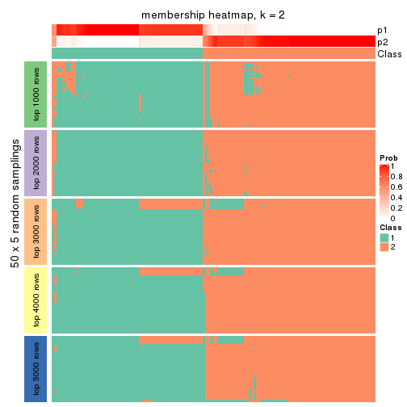
membership_heatmap(res, k = 3)
membership_heatmap(res, k = 4)
membership_heatmap(res, k = 5)
membership_heatmap(res, k = 6)
As soon as we have had the classes for columns, we can look for signatures which are significantly different between classes which can be candidate marks for certain classes. Following are the heatmaps for signatures.
Signature heatmaps where rows are scaled:
get_signatures(res, k = 2)
get_signatures(res, k = 3)
get_signatures(res, k = 4)
get_signatures(res, k = 5)
get_signatures(res, k = 6)
Signature heatmaps where rows are not scaled:
get_signatures(res, k = 2, scale_rows = FALSE)
get_signatures(res, k = 3, scale_rows = FALSE)
get_signatures(res, k = 4, scale_rows = FALSE)
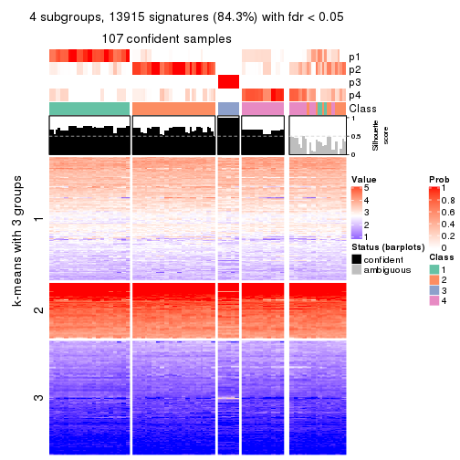
get_signatures(res, k = 5, scale_rows = FALSE)
get_signatures(res, k = 6, scale_rows = FALSE)
Compare the overlap of signatures from different k:
compare_signatures(res)
get_signature() returns a data frame invisibly. TO get the list of signatures, the function
call should be assigned to a variable explicitly. In following code, if plot argument is set
to FALSE, no heatmap is plotted while only the differential analysis is performed.
# code only for demonstration
tb = get_signature(res, k = ..., plot = FALSE)
An example of the output of tb is:
#> which_row fdr mean_1 mean_2 scaled_mean_1 scaled_mean_2 km
#> 1 38 0.042760348 8.373488 9.131774 -0.5533452 0.5164555 1
#> 2 40 0.018707592 7.106213 8.469186 -0.6173731 0.5762149 1
#> 3 55 0.019134737 10.221463 11.207825 -0.6159697 0.5749050 1
#> 4 59 0.006059896 5.921854 7.869574 -0.6899429 0.6439467 1
#> 5 60 0.018055526 8.928898 10.211722 -0.6204761 0.5791110 1
#> 6 98 0.009384629 15.714769 14.887706 0.6635654 -0.6193277 2
...
The columns in tb are:
which_row: row indices corresponding to the input matrix.fdr: FDR for the differential test. mean_x: The mean value in group x.scaled_mean_x: The mean value in group x after rows are scaled.km: Row groups if k-means clustering is applied to rows.UMAP plot which shows how samples are separated.
dimension_reduction(res, k = 2, method = "UMAP")
dimension_reduction(res, k = 3, method = "UMAP")
dimension_reduction(res, k = 4, method = "UMAP")
dimension_reduction(res, k = 5, method = "UMAP")
dimension_reduction(res, k = 6, method = "UMAP")
Following heatmap shows how subgroups are split when increasing k:
collect_classes(res)
If matrix rows can be associated to genes, consider to use GO_Enrichment(res,
...) to perform function enrichment for the signature genes.
The object with results only for a single top-value method and a single partition method can be extracted as:
res = res_list["SD", "mclust"]
# you can also extract it by
# res = res_list["SD:mclust"]
A summary of res and all the functions that can be applied to it:
res
#> A 'ConsensusPartition' object with k = 2, 3, 4, 5, 6.
#> On a matrix with 16510 rows and 133 columns.
#> Top rows (1000, 2000, 3000, 4000, 5000) are extracted by 'SD' method.
#> Subgroups are detected by 'mclust' method.
#> Performed in total 1250 partitions by row resampling.
#> Best k for subgroups seems to be 2.
#>
#> Following methods can be applied to this 'ConsensusPartition' object:
#> [1] "cola_report" "collect_classes" "collect_plots"
#> [4] "collect_stats" "colnames" "compare_signatures"
#> [7] "consensus_heatmap" "dimension_reduction" "functional_enrichment"
#> [10] "get_anno_col" "get_anno" "get_classes"
#> [13] "get_consensus" "get_matrix" "get_membership"
#> [16] "get_param" "get_signatures" "get_stats"
#> [19] "is_best_k" "is_stable_k" "membership_heatmap"
#> [22] "ncol" "nrow" "plot_ecdf"
#> [25] "rownames" "select_partition_number" "show"
#> [28] "suggest_best_k" "test_to_known_factors"
collect_plots() function collects all the plots made from res for all k (number of partitions)
into one single page to provide an easy and fast comparison between different k.
collect_plots(res)
The plots are:
k and the heatmap of
predicted classes for each k.k.k.k.All the plots in panels can be made by individual functions and they are plotted later in this section.
select_partition_number() produces several plots showing different
statistics for choosing “optimized” k. There are following statistics:
k;k, the area increased is defined as \(A_k - A_{k-1}\).The detailed explanations of these statistics can be found in the cola vignette.
Generally speaking, lower PAC score, higher mean silhouette score or higher
concordance corresponds to better partition. Rand index and Jaccard index
measure how similar the current partition is compared to partition with k-1.
If they are too similar, we won't accept k is better than k-1.
select_partition_number(res)
The numeric values for all these statistics can be obtained by get_stats().
get_stats(res)
#> k 1-PAC mean_silhouette concordance area_increased Rand Jaccard
#> 2 2 1.000 0.991 0.995 0.1483 0.860 0.860
#> 3 3 0.307 0.733 0.825 2.1532 0.697 0.648
#> 4 4 0.500 0.643 0.804 0.4272 0.702 0.480
#> 5 5 0.558 0.714 0.782 0.1227 0.781 0.430
#> 6 6 0.665 0.651 0.781 0.0722 0.893 0.623
suggest_best_k() suggests the best \(k\) based on these statistics. The rules are as follows:
NA.suggest_best_k(res)
#> [1] 2
Following shows the table of the partitions (You need to click the show/hide
code output link to see it). The membership matrix (columns with name p*)
is inferred by
clue::cl_consensus()
function with the SE method. Basically the value in the membership matrix
represents the probability to belong to a certain group. The finall class
label for an item is determined with the group with highest probability it
belongs to.
In get_classes() function, the entropy is calculated from the membership
matrix and the silhouette score is calculated from the consensus matrix.
cbind(get_classes(res, k = 2), get_membership(res, k = 2))
#> class entropy silhouette p1 p2
#> ERR946976 2 0.0000 0.995 0.000 1.000
#> ERR947001 2 0.0000 0.995 0.000 1.000
#> ERR946975 2 0.0000 0.995 0.000 1.000
#> ERR947000 2 0.0000 0.995 0.000 1.000
#> ERR946972 1 0.0000 1.000 1.000 0.000
#> ERR946997 1 0.0000 1.000 1.000 0.000
#> ERR946986 2 0.0000 0.995 0.000 1.000
#> ERR947011 2 0.0000 0.995 0.000 1.000
#> ERR946977 2 0.0000 0.995 0.000 1.000
#> ERR947002 2 0.0000 0.995 0.000 1.000
#> ERR946974 2 0.0000 0.995 0.000 1.000
#> ERR946999 2 0.0000 0.995 0.000 1.000
#> ERR946971 1 0.0000 1.000 1.000 0.000
#> ERR946996 1 0.0000 1.000 1.000 0.000
#> ERR946992 2 0.0000 0.995 0.000 1.000
#> ERR947017 2 0.0000 0.995 0.000 1.000
#> ERR946984 2 0.1843 0.972 0.028 0.972
#> ERR947009 2 0.1843 0.972 0.028 0.972
#> ERR946987 2 0.0000 0.995 0.000 1.000
#> ERR947012 2 0.0000 0.995 0.000 1.000
#> ERR946991 2 0.0672 0.989 0.008 0.992
#> ERR947016 2 0.0672 0.989 0.008 0.992
#> ERR946983 2 0.0672 0.989 0.008 0.992
#> ERR947008 2 0.0376 0.992 0.004 0.996
#> ERR946970 2 0.0000 0.995 0.000 1.000
#> ERR946995 2 0.0000 0.995 0.000 1.000
#> ERR946969 2 0.0000 0.995 0.000 1.000
#> ERR946994 2 0.0000 0.995 0.000 1.000
#> ERR946982 2 0.0000 0.995 0.000 1.000
#> ERR947007 2 0.0000 0.995 0.000 1.000
#> ERR946988 2 0.0000 0.995 0.000 1.000
#> ERR947013 2 0.0000 0.995 0.000 1.000
#> ERR946985 2 0.0000 0.995 0.000 1.000
#> ERR947010 2 0.0000 0.995 0.000 1.000
#> ERR946989 2 0.0000 0.995 0.000 1.000
#> ERR947014 2 0.0000 0.995 0.000 1.000
#> ERR946968 2 0.0000 0.995 0.000 1.000
#> ERR946993 2 0.0000 0.995 0.000 1.000
#> ERR946990 2 0.0000 0.995 0.000 1.000
#> ERR947015 2 0.0000 0.995 0.000 1.000
#> ERR946980 2 0.0000 0.995 0.000 1.000
#> ERR947005 2 0.0000 0.995 0.000 1.000
#> ERR946978 2 0.0000 0.995 0.000 1.000
#> ERR947003 2 0.0000 0.995 0.000 1.000
#> ERR946979 2 0.3879 0.924 0.076 0.924
#> ERR947004 2 0.3879 0.924 0.076 0.924
#> ERR946957 1 0.0000 1.000 1.000 0.000
#> ERR946962 1 0.0000 1.000 1.000 0.000
#> ERR946958 2 0.0000 0.995 0.000 1.000
#> ERR946963 2 0.0000 0.995 0.000 1.000
#> ERR946959 2 0.0000 0.995 0.000 1.000
#> ERR946964 2 0.0000 0.995 0.000 1.000
#> ERR946967 1 0.0000 1.000 1.000 0.000
#> ERR862690 1 0.0000 1.000 1.000 0.000
#> ERR914278 2 0.0000 0.995 0.000 1.000
#> ERR914314 2 0.0000 0.995 0.000 1.000
#> ERR914279 2 0.0000 0.995 0.000 1.000
#> ERR914315 2 0.0000 0.995 0.000 1.000
#> ERR914280 2 0.0000 0.995 0.000 1.000
#> ERR914316 2 0.0000 0.995 0.000 1.000
#> ERR914281 2 0.0000 0.995 0.000 1.000
#> ERR914317 2 0.0000 0.995 0.000 1.000
#> ERR914282 2 0.0000 0.995 0.000 1.000
#> ERR914318 2 0.0000 0.995 0.000 1.000
#> ERR914283 2 0.0000 0.995 0.000 1.000
#> ERR914319 2 0.0000 0.995 0.000 1.000
#> ERR914284 2 0.0000 0.995 0.000 1.000
#> ERR914320 2 0.0000 0.995 0.000 1.000
#> ERR914285 2 0.0000 0.995 0.000 1.000
#> ERR914321 2 0.0000 0.995 0.000 1.000
#> ERR914286 2 0.0000 0.995 0.000 1.000
#> ERR914322 2 0.0000 0.995 0.000 1.000
#> ERR914287 2 0.0000 0.995 0.000 1.000
#> ERR914323 2 0.0000 0.995 0.000 1.000
#> ERR914288 2 0.0000 0.995 0.000 1.000
#> ERR914324 2 0.0000 0.995 0.000 1.000
#> ERR914289 2 0.0000 0.995 0.000 1.000
#> ERR914290 2 0.0000 0.995 0.000 1.000
#> ERR914326 2 0.0000 0.995 0.000 1.000
#> ERR914291 2 0.0000 0.995 0.000 1.000
#> ERR914327 2 0.0000 0.995 0.000 1.000
#> ERR914292 2 0.0000 0.995 0.000 1.000
#> ERR914328 2 0.0000 0.995 0.000 1.000
#> ERR914293 2 0.0000 0.995 0.000 1.000
#> ERR914329 2 0.0000 0.995 0.000 1.000
#> ERR914294 2 0.0000 0.995 0.000 1.000
#> ERR914330 2 0.0000 0.995 0.000 1.000
#> ERR914295 2 0.0000 0.995 0.000 1.000
#> ERR914331 2 0.0000 0.995 0.000 1.000
#> ERR914296 2 0.0000 0.995 0.000 1.000
#> ERR914332 2 0.0000 0.995 0.000 1.000
#> ERR914297 2 0.0000 0.995 0.000 1.000
#> ERR914333 2 0.0000 0.995 0.000 1.000
#> ERR914298 2 0.0000 0.995 0.000 1.000
#> ERR914334 2 0.0000 0.995 0.000 1.000
#> ERR914299 2 0.0000 0.995 0.000 1.000
#> ERR914335 2 0.0000 0.995 0.000 1.000
#> ERR914300 2 0.0000 0.995 0.000 1.000
#> ERR914336 2 0.0000 0.995 0.000 1.000
#> ERR914301 2 0.3879 0.924 0.076 0.924
#> ERR914337 2 0.3879 0.924 0.076 0.924
#> ERR914302 2 0.0000 0.995 0.000 1.000
#> ERR914338 2 0.0000 0.995 0.000 1.000
#> ERR914303 2 0.0672 0.989 0.008 0.992
#> ERR914339 2 0.0672 0.989 0.008 0.992
#> ERR914304 2 0.0672 0.989 0.008 0.992
#> ERR914340 2 0.0672 0.989 0.008 0.992
#> ERR914305 2 0.0672 0.989 0.008 0.992
#> ERR914341 2 0.0672 0.989 0.008 0.992
#> ERR914306 2 0.4298 0.911 0.088 0.912
#> ERR914342 2 0.4298 0.911 0.088 0.912
#> ERR914307 2 0.0000 0.995 0.000 1.000
#> ERR914343 2 0.0000 0.995 0.000 1.000
#> ERR914308 2 0.0000 0.995 0.000 1.000
#> ERR914344 2 0.0000 0.995 0.000 1.000
#> ERR914309 2 0.0000 0.995 0.000 1.000
#> ERR914345 2 0.0000 0.995 0.000 1.000
#> ERR914310 2 0.0000 0.995 0.000 1.000
#> ERR914346 2 0.0000 0.995 0.000 1.000
#> ERR914311 2 0.0672 0.989 0.008 0.992
#> ERR914347 2 0.0672 0.989 0.008 0.992
#> ERR914312 2 0.0000 0.995 0.000 1.000
#> ERR914348 2 0.0000 0.995 0.000 1.000
#> ERR914313 2 0.0000 0.995 0.000 1.000
#> ERR914349 2 0.0000 0.995 0.000 1.000
#> ERR946960 2 0.0000 0.995 0.000 1.000
#> ERR946965 2 0.0000 0.995 0.000 1.000
#> ERR946966 2 0.0000 0.995 0.000 1.000
#> ERR946973 1 0.0000 1.000 1.000 0.000
#> ERR946998 1 0.0000 1.000 1.000 0.000
#> ERR946981 2 0.0672 0.989 0.008 0.992
#> ERR947006 2 0.0376 0.992 0.004 0.996
#> ERR914325 2 0.0000 0.995 0.000 1.000
cbind(get_classes(res, k = 3), get_membership(res, k = 3))
#> class entropy silhouette p1 p2 p3
#> ERR946976 1 0.3340 0.7592 0.880 0.120 0.000
#> ERR947001 1 0.3340 0.7592 0.880 0.120 0.000
#> ERR946975 1 0.1529 0.7827 0.960 0.040 0.000
#> ERR947000 1 0.1529 0.7827 0.960 0.040 0.000
#> ERR946972 3 0.0000 1.0000 0.000 0.000 1.000
#> ERR946997 3 0.0000 1.0000 0.000 0.000 1.000
#> ERR946986 1 0.3412 0.7587 0.876 0.124 0.000
#> ERR947011 1 0.3340 0.7616 0.880 0.120 0.000
#> ERR946977 2 0.6274 0.4844 0.456 0.544 0.000
#> ERR947002 2 0.6280 0.4713 0.460 0.540 0.000
#> ERR946974 1 0.2959 0.7357 0.900 0.100 0.000
#> ERR946999 1 0.2878 0.7359 0.904 0.096 0.000
#> ERR946971 3 0.0000 1.0000 0.000 0.000 1.000
#> ERR946996 3 0.0000 1.0000 0.000 0.000 1.000
#> ERR946992 1 0.4750 0.5941 0.784 0.216 0.000
#> ERR947017 1 0.4654 0.6024 0.792 0.208 0.000
#> ERR946984 2 0.6379 0.8804 0.256 0.712 0.032
#> ERR947009 2 0.6379 0.8804 0.256 0.712 0.032
#> ERR946987 1 0.5882 0.5050 0.652 0.348 0.000
#> ERR947012 1 0.5882 0.5050 0.652 0.348 0.000
#> ERR946991 2 0.5643 0.8976 0.220 0.760 0.020
#> ERR947016 2 0.5643 0.8976 0.220 0.760 0.020
#> ERR946983 2 0.5178 0.9006 0.256 0.744 0.000
#> ERR947008 2 0.5216 0.8967 0.260 0.740 0.000
#> ERR946970 1 0.1964 0.7687 0.944 0.056 0.000
#> ERR946995 1 0.1860 0.7708 0.948 0.052 0.000
#> ERR946969 1 0.3412 0.7589 0.876 0.124 0.000
#> ERR946994 1 0.3412 0.7589 0.876 0.124 0.000
#> ERR946982 1 0.5760 0.5220 0.672 0.328 0.000
#> ERR947007 1 0.5760 0.5220 0.672 0.328 0.000
#> ERR946988 2 0.6280 0.4713 0.460 0.540 0.000
#> ERR947013 2 0.6280 0.4713 0.460 0.540 0.000
#> ERR946985 1 0.5882 0.5050 0.652 0.348 0.000
#> ERR947010 1 0.5882 0.5050 0.652 0.348 0.000
#> ERR946989 1 0.3686 0.7056 0.860 0.140 0.000
#> ERR947014 1 0.3686 0.7056 0.860 0.140 0.000
#> ERR946968 1 0.4346 0.7324 0.816 0.184 0.000
#> ERR946993 1 0.4346 0.7324 0.816 0.184 0.000
#> ERR946990 1 0.3038 0.7636 0.896 0.104 0.000
#> ERR947015 1 0.2878 0.7670 0.904 0.096 0.000
#> ERR946980 1 0.6291 -0.2366 0.532 0.468 0.000
#> ERR947005 1 0.5948 0.3116 0.640 0.360 0.000
#> ERR946978 1 0.4399 0.7261 0.812 0.188 0.000
#> ERR947003 1 0.4399 0.7261 0.812 0.188 0.000
#> ERR946979 2 0.5643 0.8976 0.220 0.760 0.020
#> ERR947004 2 0.5643 0.8976 0.220 0.760 0.020
#> ERR946957 3 0.0000 1.0000 0.000 0.000 1.000
#> ERR946962 3 0.0000 1.0000 0.000 0.000 1.000
#> ERR946958 1 0.4346 0.7312 0.816 0.184 0.000
#> ERR946963 1 0.4178 0.7368 0.828 0.172 0.000
#> ERR946959 1 0.4399 0.7261 0.812 0.188 0.000
#> ERR946964 1 0.4399 0.7261 0.812 0.188 0.000
#> ERR946967 3 0.0000 1.0000 0.000 0.000 1.000
#> ERR862690 3 0.0000 1.0000 0.000 0.000 1.000
#> ERR914278 1 0.5465 0.5837 0.712 0.288 0.000
#> ERR914314 1 0.5363 0.5998 0.724 0.276 0.000
#> ERR914279 1 0.3267 0.7617 0.884 0.116 0.000
#> ERR914315 1 0.3340 0.7562 0.880 0.120 0.000
#> ERR914280 1 0.3340 0.7106 0.880 0.120 0.000
#> ERR914316 1 0.3038 0.7280 0.896 0.104 0.000
#> ERR914281 1 0.5882 0.5050 0.652 0.348 0.000
#> ERR914317 1 0.5882 0.5050 0.652 0.348 0.000
#> ERR914282 2 0.5216 0.8962 0.260 0.740 0.000
#> ERR914318 2 0.5905 0.7519 0.352 0.648 0.000
#> ERR914283 1 0.4399 0.7261 0.812 0.188 0.000
#> ERR914319 1 0.4399 0.7261 0.812 0.188 0.000
#> ERR914284 1 0.1964 0.7786 0.944 0.056 0.000
#> ERR914320 1 0.2261 0.7712 0.932 0.068 0.000
#> ERR914285 1 0.4931 0.6541 0.768 0.232 0.000
#> ERR914321 1 0.4750 0.6668 0.784 0.216 0.000
#> ERR914286 1 0.1031 0.7807 0.976 0.024 0.000
#> ERR914322 1 0.0892 0.7815 0.980 0.020 0.000
#> ERR914287 1 0.2066 0.7846 0.940 0.060 0.000
#> ERR914323 1 0.1964 0.7854 0.944 0.056 0.000
#> ERR914288 1 0.1411 0.7823 0.964 0.036 0.000
#> ERR914324 1 0.1163 0.7830 0.972 0.028 0.000
#> ERR914289 1 0.0000 0.7822 1.000 0.000 0.000
#> ERR914290 1 0.1860 0.7860 0.948 0.052 0.000
#> ERR914326 1 0.1860 0.7860 0.948 0.052 0.000
#> ERR914291 1 0.6062 0.1439 0.616 0.384 0.000
#> ERR914327 1 0.6026 0.1645 0.624 0.376 0.000
#> ERR914292 1 0.3038 0.7612 0.896 0.104 0.000
#> ERR914328 1 0.2878 0.7669 0.904 0.096 0.000
#> ERR914293 1 0.1964 0.7854 0.944 0.056 0.000
#> ERR914329 1 0.1964 0.7854 0.944 0.056 0.000
#> ERR914294 1 0.5254 0.6140 0.736 0.264 0.000
#> ERR914330 1 0.5216 0.6187 0.740 0.260 0.000
#> ERR914295 1 0.1289 0.7847 0.968 0.032 0.000
#> ERR914331 1 0.1289 0.7847 0.968 0.032 0.000
#> ERR914296 1 0.4291 0.7305 0.820 0.180 0.000
#> ERR914332 1 0.4291 0.7305 0.820 0.180 0.000
#> ERR914297 1 0.5465 0.4566 0.712 0.288 0.000
#> ERR914333 1 0.5098 0.5647 0.752 0.248 0.000
#> ERR914298 1 0.4399 0.7261 0.812 0.188 0.000
#> ERR914334 1 0.4399 0.7261 0.812 0.188 0.000
#> ERR914299 1 0.3686 0.7104 0.860 0.140 0.000
#> ERR914335 1 0.3340 0.7320 0.880 0.120 0.000
#> ERR914300 1 0.1289 0.7830 0.968 0.032 0.000
#> ERR914336 1 0.1411 0.7832 0.964 0.036 0.000
#> ERR914301 2 0.5378 0.9112 0.236 0.756 0.008
#> ERR914337 2 0.5201 0.9123 0.236 0.760 0.004
#> ERR914302 1 0.5678 0.5424 0.684 0.316 0.000
#> ERR914338 1 0.5678 0.5424 0.684 0.316 0.000
#> ERR914303 2 0.4974 0.9130 0.236 0.764 0.000
#> ERR914339 2 0.4974 0.9130 0.236 0.764 0.000
#> ERR914304 2 0.4974 0.9130 0.236 0.764 0.000
#> ERR914340 2 0.4974 0.9130 0.236 0.764 0.000
#> ERR914305 2 0.4974 0.9130 0.236 0.764 0.000
#> ERR914341 2 0.4974 0.9130 0.236 0.764 0.000
#> ERR914306 2 0.5774 0.9053 0.232 0.748 0.020
#> ERR914342 2 0.5774 0.9053 0.232 0.748 0.020
#> ERR914307 1 0.0892 0.7855 0.980 0.020 0.000
#> ERR914343 1 0.0592 0.7848 0.988 0.012 0.000
#> ERR914308 1 0.2959 0.7575 0.900 0.100 0.000
#> ERR914344 1 0.2959 0.7575 0.900 0.100 0.000
#> ERR914309 1 0.2066 0.7828 0.940 0.060 0.000
#> ERR914345 1 0.1964 0.7837 0.944 0.056 0.000
#> ERR914310 1 0.1031 0.7835 0.976 0.024 0.000
#> ERR914346 1 0.1031 0.7835 0.976 0.024 0.000
#> ERR914311 2 0.4974 0.9130 0.236 0.764 0.000
#> ERR914347 2 0.4974 0.9130 0.236 0.764 0.000
#> ERR914312 1 0.1411 0.7823 0.964 0.036 0.000
#> ERR914348 1 0.1411 0.7823 0.964 0.036 0.000
#> ERR914313 1 0.5882 0.5050 0.652 0.348 0.000
#> ERR914349 1 0.5859 0.5075 0.656 0.344 0.000
#> ERR946960 1 0.4346 0.7315 0.816 0.184 0.000
#> ERR946965 1 0.4346 0.7315 0.816 0.184 0.000
#> ERR946966 1 0.6192 -0.0507 0.580 0.420 0.000
#> ERR946973 3 0.0000 1.0000 0.000 0.000 1.000
#> ERR946998 3 0.0000 1.0000 0.000 0.000 1.000
#> ERR946981 2 0.4974 0.9130 0.236 0.764 0.000
#> ERR947006 2 0.4974 0.9130 0.236 0.764 0.000
#> ERR914325 1 0.0000 0.7822 1.000 0.000 0.000
cbind(get_classes(res, k = 4), get_membership(res, k = 4))
#> class entropy silhouette p1 p2 p3 p4
#> ERR946976 1 0.2670 0.754 0.908 0.040 0 0.052
#> ERR947001 1 0.2670 0.754 0.908 0.040 0 0.052
#> ERR946975 4 0.7214 0.553 0.380 0.144 0 0.476
#> ERR947000 4 0.7214 0.553 0.380 0.144 0 0.476
#> ERR946972 3 0.0000 1.000 0.000 0.000 1 0.000
#> ERR946997 3 0.0000 1.000 0.000 0.000 1 0.000
#> ERR946986 1 0.4761 0.409 0.664 0.332 0 0.004
#> ERR947011 1 0.4741 0.420 0.668 0.328 0 0.004
#> ERR946977 2 0.5673 0.345 0.448 0.528 0 0.024
#> ERR947002 2 0.5673 0.345 0.448 0.528 0 0.024
#> ERR946974 4 0.4720 0.715 0.324 0.004 0 0.672
#> ERR946999 4 0.4720 0.715 0.324 0.004 0 0.672
#> ERR946971 3 0.0000 1.000 0.000 0.000 1 0.000
#> ERR946996 3 0.0000 1.000 0.000 0.000 1 0.000
#> ERR946992 4 0.5184 0.644 0.056 0.212 0 0.732
#> ERR947017 4 0.5184 0.644 0.056 0.212 0 0.732
#> ERR946984 2 0.1888 0.782 0.044 0.940 0 0.016
#> ERR947009 2 0.1888 0.782 0.044 0.940 0 0.016
#> ERR946987 4 0.1211 0.646 0.000 0.040 0 0.960
#> ERR947012 4 0.1211 0.646 0.000 0.040 0 0.960
#> ERR946991 2 0.0592 0.800 0.000 0.984 0 0.016
#> ERR947016 2 0.0592 0.800 0.000 0.984 0 0.016
#> ERR946983 2 0.0188 0.805 0.004 0.996 0 0.000
#> ERR947008 2 0.0469 0.804 0.012 0.988 0 0.000
#> ERR946970 4 0.4741 0.708 0.328 0.004 0 0.668
#> ERR946995 4 0.4741 0.708 0.328 0.004 0 0.668
#> ERR946969 1 0.4343 0.559 0.732 0.264 0 0.004
#> ERR946994 1 0.4122 0.604 0.760 0.236 0 0.004
#> ERR946982 4 0.1211 0.646 0.000 0.040 0 0.960
#> ERR947007 4 0.1211 0.646 0.000 0.040 0 0.960
#> ERR946988 2 0.5668 0.352 0.444 0.532 0 0.024
#> ERR947013 2 0.5673 0.345 0.448 0.528 0 0.024
#> ERR946985 4 0.1305 0.653 0.036 0.004 0 0.960
#> ERR947010 4 0.1305 0.653 0.036 0.004 0 0.960
#> ERR946989 4 0.4699 0.714 0.320 0.004 0 0.676
#> ERR947014 4 0.4699 0.714 0.320 0.004 0 0.676
#> ERR946968 1 0.2101 0.749 0.928 0.012 0 0.060
#> ERR946993 1 0.2101 0.749 0.928 0.012 0 0.060
#> ERR946990 1 0.3219 0.692 0.836 0.164 0 0.000
#> ERR947015 1 0.2921 0.711 0.860 0.140 0 0.000
#> ERR946980 2 0.5155 0.309 0.468 0.528 0 0.004
#> ERR947005 2 0.5161 0.284 0.476 0.520 0 0.004
#> ERR946978 1 0.0469 0.759 0.988 0.012 0 0.000
#> ERR947003 1 0.0469 0.759 0.988 0.012 0 0.000
#> ERR946979 2 0.1792 0.760 0.000 0.932 0 0.068
#> ERR947004 2 0.1792 0.760 0.000 0.932 0 0.068
#> ERR946957 3 0.0000 1.000 0.000 0.000 1 0.000
#> ERR946962 3 0.0000 1.000 0.000 0.000 1 0.000
#> ERR946958 1 0.1706 0.755 0.948 0.016 0 0.036
#> ERR946963 1 0.1706 0.755 0.948 0.016 0 0.036
#> ERR946959 1 0.0469 0.759 0.988 0.012 0 0.000
#> ERR946964 1 0.0469 0.759 0.988 0.012 0 0.000
#> ERR946967 3 0.0000 1.000 0.000 0.000 1 0.000
#> ERR862690 3 0.0000 1.000 0.000 0.000 1 0.000
#> ERR914278 4 0.5168 0.735 0.248 0.040 0 0.712
#> ERR914314 4 0.5168 0.735 0.248 0.040 0 0.712
#> ERR914279 1 0.1584 0.744 0.952 0.012 0 0.036
#> ERR914315 1 0.1677 0.742 0.948 0.012 0 0.040
#> ERR914280 4 0.6578 0.704 0.244 0.136 0 0.620
#> ERR914316 4 0.6578 0.704 0.244 0.136 0 0.620
#> ERR914281 4 0.1211 0.646 0.000 0.040 0 0.960
#> ERR914317 4 0.1211 0.646 0.000 0.040 0 0.960
#> ERR914282 2 0.0817 0.801 0.024 0.976 0 0.000
#> ERR914318 2 0.4585 0.529 0.332 0.668 0 0.000
#> ERR914283 1 0.1584 0.753 0.952 0.012 0 0.036
#> ERR914319 1 0.1584 0.753 0.952 0.012 0 0.036
#> ERR914284 4 0.5848 0.656 0.376 0.040 0 0.584
#> ERR914320 4 0.5897 0.662 0.368 0.044 0 0.588
#> ERR914285 4 0.4677 0.719 0.316 0.004 0 0.680
#> ERR914321 4 0.4677 0.719 0.316 0.004 0 0.680
#> ERR914286 4 0.5905 0.622 0.396 0.040 0 0.564
#> ERR914322 4 0.5915 0.616 0.400 0.040 0 0.560
#> ERR914287 1 0.2741 0.691 0.892 0.012 0 0.096
#> ERR914323 1 0.2867 0.682 0.884 0.012 0 0.104
#> ERR914288 4 0.7186 0.553 0.384 0.140 0 0.476
#> ERR914324 4 0.7186 0.553 0.384 0.140 0 0.476
#> ERR914289 4 0.4819 0.701 0.344 0.004 0 0.652
#> ERR914290 1 0.3161 0.653 0.864 0.012 0 0.124
#> ERR914326 1 0.3479 0.611 0.840 0.012 0 0.148
#> ERR914291 2 0.6228 0.385 0.364 0.572 0 0.064
#> ERR914327 2 0.6516 0.391 0.332 0.576 0 0.092
#> ERR914292 1 0.4632 0.471 0.688 0.308 0 0.004
#> ERR914328 1 0.4509 0.513 0.708 0.288 0 0.004
#> ERR914293 1 0.2867 0.682 0.884 0.012 0 0.104
#> ERR914329 1 0.3047 0.665 0.872 0.012 0 0.116
#> ERR914294 4 0.4793 0.736 0.204 0.040 0 0.756
#> ERR914330 4 0.4904 0.737 0.216 0.040 0 0.744
#> ERR914295 1 0.4735 0.603 0.784 0.068 0 0.148
#> ERR914331 1 0.4701 0.578 0.780 0.056 0 0.164
#> ERR914296 1 0.3907 0.567 0.768 0.232 0 0.000
#> ERR914332 1 0.3356 0.639 0.824 0.176 0 0.000
#> ERR914297 1 0.5511 -0.250 0.500 0.484 0 0.016
#> ERR914333 1 0.5503 -0.190 0.516 0.468 0 0.016
#> ERR914298 1 0.0657 0.759 0.984 0.012 0 0.004
#> ERR914334 1 0.0804 0.759 0.980 0.012 0 0.008
#> ERR914299 4 0.7676 0.459 0.240 0.308 0 0.452
#> ERR914335 4 0.7640 0.488 0.240 0.296 0 0.464
#> ERR914300 4 0.6395 0.492 0.460 0.064 0 0.476
#> ERR914336 4 0.6447 0.511 0.448 0.068 0 0.484
#> ERR914301 2 0.0336 0.802 0.008 0.992 0 0.000
#> ERR914337 2 0.0336 0.802 0.008 0.992 0 0.000
#> ERR914302 4 0.4188 0.726 0.148 0.040 0 0.812
#> ERR914338 4 0.4188 0.726 0.148 0.040 0 0.812
#> ERR914303 2 0.0000 0.805 0.000 1.000 0 0.000
#> ERR914339 2 0.0000 0.805 0.000 1.000 0 0.000
#> ERR914304 2 0.0000 0.805 0.000 1.000 0 0.000
#> ERR914340 2 0.0000 0.805 0.000 1.000 0 0.000
#> ERR914305 2 0.0000 0.805 0.000 1.000 0 0.000
#> ERR914341 2 0.0000 0.805 0.000 1.000 0 0.000
#> ERR914306 2 0.0927 0.797 0.008 0.976 0 0.016
#> ERR914342 2 0.0927 0.797 0.008 0.976 0 0.016
#> ERR914307 1 0.7115 -0.416 0.452 0.128 0 0.420
#> ERR914343 1 0.7082 -0.437 0.448 0.124 0 0.428
#> ERR914308 1 0.1118 0.758 0.964 0.036 0 0.000
#> ERR914344 1 0.1118 0.758 0.964 0.036 0 0.000
#> ERR914309 1 0.1820 0.755 0.944 0.036 0 0.020
#> ERR914345 1 0.2032 0.752 0.936 0.036 0 0.028
#> ERR914310 1 0.6452 -0.492 0.468 0.068 0 0.464
#> ERR914346 1 0.6452 -0.492 0.468 0.068 0 0.464
#> ERR914311 2 0.0000 0.805 0.000 1.000 0 0.000
#> ERR914347 2 0.0000 0.805 0.000 1.000 0 0.000
#> ERR914312 4 0.7081 0.565 0.388 0.128 0 0.484
#> ERR914348 4 0.7049 0.562 0.392 0.124 0 0.484
#> ERR914313 4 0.1211 0.646 0.000 0.040 0 0.960
#> ERR914349 4 0.1211 0.646 0.000 0.040 0 0.960
#> ERR946960 1 0.2021 0.750 0.932 0.012 0 0.056
#> ERR946965 1 0.2021 0.750 0.932 0.012 0 0.056
#> ERR946966 2 0.4996 0.241 0.484 0.516 0 0.000
#> ERR946973 3 0.0000 1.000 0.000 0.000 1 0.000
#> ERR946998 3 0.0000 1.000 0.000 0.000 1 0.000
#> ERR946981 2 0.0000 0.805 0.000 1.000 0 0.000
#> ERR947006 2 0.0000 0.805 0.000 1.000 0 0.000
#> ERR914325 4 0.4819 0.701 0.344 0.004 0 0.652
cbind(get_classes(res, k = 5), get_membership(res, k = 5))
#> class entropy silhouette p1 p2 p3 p4 p5
#> ERR946976 1 0.4585 0.6470 0.628 0.020 0.000 0.000 0.352
#> ERR947001 1 0.4585 0.6470 0.628 0.020 0.000 0.000 0.352
#> ERR946975 5 0.5392 0.6615 0.176 0.068 0.000 0.044 0.712
#> ERR947000 5 0.5272 0.6625 0.176 0.060 0.000 0.044 0.720
#> ERR946972 3 0.0000 1.0000 0.000 0.000 1.000 0.000 0.000
#> ERR946997 3 0.0000 1.0000 0.000 0.000 1.000 0.000 0.000
#> ERR946986 5 0.3193 0.6530 0.112 0.032 0.000 0.004 0.852
#> ERR947011 5 0.3193 0.6530 0.112 0.032 0.000 0.004 0.852
#> ERR946977 2 0.4543 0.7411 0.052 0.760 0.000 0.016 0.172
#> ERR947002 2 0.5077 0.6657 0.052 0.692 0.000 0.016 0.240
#> ERR946974 5 0.5237 -0.0409 0.044 0.000 0.000 0.468 0.488
#> ERR946999 5 0.5167 0.2178 0.044 0.000 0.000 0.404 0.552
#> ERR946971 3 0.0000 1.0000 0.000 0.000 1.000 0.000 0.000
#> ERR946996 3 0.0000 1.0000 0.000 0.000 1.000 0.000 0.000
#> ERR946992 4 0.5378 0.6781 0.012 0.132 0.008 0.716 0.132
#> ERR947017 4 0.5419 0.6733 0.012 0.132 0.008 0.712 0.136
#> ERR946984 2 0.2366 0.8317 0.036 0.920 0.012 0.012 0.020
#> ERR947009 2 0.2366 0.8317 0.036 0.920 0.012 0.012 0.020
#> ERR946987 4 0.0324 0.8542 0.004 0.000 0.000 0.992 0.004
#> ERR947012 4 0.0324 0.8542 0.004 0.000 0.000 0.992 0.004
#> ERR946991 2 0.0771 0.8442 0.020 0.976 0.000 0.004 0.000
#> ERR947016 2 0.0771 0.8442 0.020 0.976 0.000 0.004 0.000
#> ERR946983 2 0.3527 0.7627 0.016 0.792 0.000 0.000 0.192
#> ERR947008 2 0.4547 0.7128 0.072 0.736 0.000 0.000 0.192
#> ERR946970 5 0.5327 0.5477 0.120 0.000 0.000 0.216 0.664
#> ERR946995 5 0.5327 0.5477 0.120 0.000 0.000 0.216 0.664
#> ERR946969 5 0.3758 0.6616 0.128 0.052 0.000 0.004 0.816
#> ERR946994 5 0.3823 0.6594 0.140 0.048 0.000 0.004 0.808
#> ERR946982 4 0.0451 0.8547 0.008 0.000 0.000 0.988 0.004
#> ERR947007 4 0.0451 0.8547 0.008 0.000 0.000 0.988 0.004
#> ERR946988 2 0.4686 0.7316 0.052 0.744 0.000 0.016 0.188
#> ERR947013 2 0.4785 0.7212 0.052 0.732 0.000 0.016 0.200
#> ERR946985 4 0.0000 0.8537 0.000 0.000 0.000 1.000 0.000
#> ERR947010 4 0.0000 0.8537 0.000 0.000 0.000 1.000 0.000
#> ERR946989 5 0.5878 0.3581 0.120 0.000 0.000 0.324 0.556
#> ERR947014 5 0.5878 0.3581 0.120 0.000 0.000 0.324 0.556
#> ERR946968 1 0.4353 0.6613 0.660 0.004 0.000 0.008 0.328
#> ERR946993 1 0.4353 0.6613 0.660 0.004 0.000 0.008 0.328
#> ERR946990 5 0.2670 0.6472 0.080 0.028 0.000 0.004 0.888
#> ERR947015 5 0.2694 0.6486 0.076 0.032 0.000 0.004 0.888
#> ERR946980 5 0.4656 0.5482 0.040 0.256 0.000 0.004 0.700
#> ERR947005 5 0.4583 0.5606 0.036 0.256 0.000 0.004 0.704
#> ERR946978 1 0.2852 0.7510 0.828 0.000 0.000 0.000 0.172
#> ERR947003 1 0.2852 0.7510 0.828 0.000 0.000 0.000 0.172
#> ERR946979 2 0.3016 0.7554 0.020 0.848 0.000 0.132 0.000
#> ERR947004 2 0.3016 0.7554 0.020 0.848 0.000 0.132 0.000
#> ERR946957 3 0.0000 1.0000 0.000 0.000 1.000 0.000 0.000
#> ERR946962 3 0.0000 1.0000 0.000 0.000 1.000 0.000 0.000
#> ERR946958 1 0.3949 0.7368 0.668 0.000 0.000 0.000 0.332
#> ERR946963 1 0.3949 0.7368 0.668 0.000 0.000 0.000 0.332
#> ERR946959 1 0.2813 0.7502 0.832 0.000 0.000 0.000 0.168
#> ERR946964 1 0.2813 0.7502 0.832 0.000 0.000 0.000 0.168
#> ERR946967 3 0.0000 1.0000 0.000 0.000 1.000 0.000 0.000
#> ERR862690 3 0.0000 1.0000 0.000 0.000 1.000 0.000 0.000
#> ERR914278 4 0.4501 0.7788 0.128 0.000 0.000 0.756 0.116
#> ERR914314 4 0.4501 0.7788 0.128 0.000 0.000 0.756 0.116
#> ERR914279 5 0.2891 0.6111 0.176 0.000 0.000 0.000 0.824
#> ERR914315 5 0.2966 0.6036 0.184 0.000 0.000 0.000 0.816
#> ERR914280 5 0.5366 0.6209 0.096 0.068 0.000 0.100 0.736
#> ERR914316 5 0.5212 0.6273 0.088 0.068 0.000 0.096 0.748
#> ERR914281 4 0.0162 0.8548 0.004 0.000 0.000 0.996 0.000
#> ERR914317 4 0.0162 0.8548 0.004 0.000 0.000 0.996 0.000
#> ERR914282 2 0.4519 0.7417 0.100 0.752 0.000 0.000 0.148
#> ERR914318 2 0.4852 0.6935 0.100 0.716 0.000 0.000 0.184
#> ERR914283 1 0.3480 0.7572 0.752 0.000 0.000 0.000 0.248
#> ERR914319 1 0.3480 0.7572 0.752 0.000 0.000 0.000 0.248
#> ERR914284 5 0.5018 0.6528 0.088 0.020 0.000 0.156 0.736
#> ERR914320 5 0.5018 0.6528 0.088 0.020 0.000 0.156 0.736
#> ERR914285 4 0.4926 0.7194 0.112 0.000 0.000 0.712 0.176
#> ERR914321 4 0.4926 0.7194 0.112 0.000 0.000 0.712 0.176
#> ERR914286 4 0.5369 0.6754 0.060 0.040 0.000 0.704 0.196
#> ERR914322 4 0.5397 0.6761 0.064 0.040 0.000 0.704 0.192
#> ERR914287 5 0.3752 0.5982 0.292 0.000 0.000 0.000 0.708
#> ERR914323 5 0.3932 0.5841 0.328 0.000 0.000 0.000 0.672
#> ERR914288 5 0.4206 0.6715 0.164 0.028 0.000 0.024 0.784
#> ERR914324 5 0.4156 0.6700 0.168 0.028 0.000 0.020 0.784
#> ERR914289 5 0.4284 0.5981 0.040 0.004 0.000 0.204 0.752
#> ERR914290 5 0.3730 0.6073 0.288 0.000 0.000 0.000 0.712
#> ERR914326 5 0.3774 0.6054 0.296 0.000 0.000 0.000 0.704
#> ERR914291 5 0.5613 0.5077 0.100 0.308 0.000 0.000 0.592
#> ERR914327 5 0.5613 0.5077 0.100 0.308 0.000 0.000 0.592
#> ERR914292 5 0.3876 0.6590 0.116 0.068 0.000 0.004 0.812
#> ERR914328 5 0.3612 0.6661 0.100 0.064 0.000 0.004 0.832
#> ERR914293 5 0.3752 0.6044 0.292 0.000 0.000 0.000 0.708
#> ERR914329 5 0.3752 0.6044 0.292 0.000 0.000 0.000 0.708
#> ERR914294 4 0.3812 0.8155 0.096 0.000 0.000 0.812 0.092
#> ERR914330 4 0.3810 0.8151 0.088 0.000 0.000 0.812 0.100
#> ERR914295 5 0.1568 0.6650 0.036 0.020 0.000 0.000 0.944
#> ERR914331 5 0.1469 0.6649 0.036 0.016 0.000 0.000 0.948
#> ERR914296 1 0.2763 0.7509 0.848 0.000 0.000 0.004 0.148
#> ERR914332 1 0.2763 0.7509 0.848 0.000 0.000 0.004 0.148
#> ERR914297 5 0.7548 0.2964 0.272 0.272 0.036 0.004 0.416
#> ERR914333 5 0.7286 0.3829 0.288 0.208 0.032 0.004 0.468
#> ERR914298 1 0.3508 0.7591 0.748 0.000 0.000 0.000 0.252
#> ERR914334 1 0.3508 0.7591 0.748 0.000 0.000 0.000 0.252
#> ERR914299 5 0.6221 0.5633 0.100 0.256 0.000 0.036 0.608
#> ERR914335 5 0.6313 0.5691 0.100 0.248 0.000 0.044 0.608
#> ERR914300 5 0.4143 0.6699 0.168 0.016 0.000 0.032 0.784
#> ERR914336 5 0.4181 0.6700 0.172 0.016 0.000 0.032 0.780
#> ERR914301 2 0.0955 0.8604 0.000 0.968 0.000 0.004 0.028
#> ERR914337 2 0.0955 0.8604 0.000 0.968 0.000 0.004 0.028
#> ERR914302 4 0.2260 0.8471 0.028 0.000 0.000 0.908 0.064
#> ERR914338 4 0.2260 0.8471 0.028 0.000 0.000 0.908 0.064
#> ERR914303 2 0.1410 0.8579 0.000 0.940 0.000 0.000 0.060
#> ERR914339 2 0.1410 0.8579 0.000 0.940 0.000 0.000 0.060
#> ERR914304 2 0.0955 0.8604 0.000 0.968 0.000 0.004 0.028
#> ERR914340 2 0.0955 0.8604 0.000 0.968 0.000 0.004 0.028
#> ERR914305 2 0.1608 0.8546 0.000 0.928 0.000 0.000 0.072
#> ERR914341 2 0.1608 0.8546 0.000 0.928 0.000 0.000 0.072
#> ERR914306 2 0.0162 0.8507 0.000 0.996 0.000 0.004 0.000
#> ERR914342 2 0.0162 0.8507 0.000 0.996 0.000 0.004 0.000
#> ERR914307 5 0.1943 0.6800 0.056 0.020 0.000 0.000 0.924
#> ERR914343 5 0.1943 0.6800 0.056 0.020 0.000 0.000 0.924
#> ERR914308 5 0.3895 0.5881 0.320 0.000 0.000 0.000 0.680
#> ERR914344 5 0.3932 0.5857 0.328 0.000 0.000 0.000 0.672
#> ERR914309 5 0.3003 0.6240 0.188 0.000 0.000 0.000 0.812
#> ERR914345 5 0.3177 0.6255 0.208 0.000 0.000 0.000 0.792
#> ERR914310 5 0.3898 0.6651 0.080 0.000 0.000 0.116 0.804
#> ERR914346 5 0.3946 0.6632 0.080 0.000 0.000 0.120 0.800
#> ERR914311 2 0.0794 0.8601 0.000 0.972 0.000 0.000 0.028
#> ERR914347 2 0.0794 0.8601 0.000 0.972 0.000 0.000 0.028
#> ERR914312 5 0.6212 0.6503 0.136 0.136 0.000 0.068 0.660
#> ERR914348 5 0.6024 0.6577 0.160 0.108 0.000 0.060 0.672
#> ERR914313 4 0.0162 0.8548 0.004 0.000 0.000 0.996 0.000
#> ERR914349 4 0.0162 0.8548 0.004 0.000 0.000 0.996 0.000
#> ERR946960 1 0.3906 0.6990 0.704 0.004 0.000 0.000 0.292
#> ERR946965 1 0.3906 0.6990 0.704 0.004 0.000 0.000 0.292
#> ERR946966 2 0.6289 0.2077 0.160 0.484 0.000 0.000 0.356
#> ERR946973 3 0.0000 1.0000 0.000 0.000 1.000 0.000 0.000
#> ERR946998 3 0.0000 1.0000 0.000 0.000 1.000 0.000 0.000
#> ERR946981 2 0.1851 0.8519 0.000 0.912 0.000 0.000 0.088
#> ERR947006 2 0.2074 0.8445 0.000 0.896 0.000 0.000 0.104
#> ERR914325 5 0.4284 0.5981 0.040 0.004 0.000 0.204 0.752
cbind(get_classes(res, k = 6), get_membership(res, k = 6))
#> class entropy silhouette p1 p2 p3 p4 p5 p6
#> ERR946976 1 0.5950 0.4704 0.456 0.000 0.000 0.000 0.280 0.264
#> ERR947001 1 0.5950 0.4704 0.456 0.000 0.000 0.000 0.280 0.264
#> ERR946975 5 0.5453 0.1611 0.008 0.044 0.000 0.024 0.492 0.432
#> ERR947000 5 0.5395 0.1663 0.008 0.040 0.000 0.024 0.500 0.428
#> ERR946972 3 0.0000 1.0000 0.000 0.000 1.000 0.000 0.000 0.000
#> ERR946997 3 0.0000 1.0000 0.000 0.000 1.000 0.000 0.000 0.000
#> ERR946986 5 0.1713 0.6068 0.000 0.028 0.000 0.000 0.928 0.044
#> ERR947011 5 0.1633 0.6061 0.000 0.024 0.000 0.000 0.932 0.044
#> ERR946977 5 0.5015 0.4194 0.004 0.336 0.000 0.000 0.584 0.076
#> ERR947002 5 0.4568 0.5368 0.004 0.236 0.000 0.000 0.684 0.076
#> ERR946974 6 0.4522 0.5427 0.000 0.004 0.000 0.300 0.048 0.648
#> ERR946999 6 0.4525 0.5813 0.000 0.004 0.000 0.276 0.056 0.664
#> ERR946971 3 0.0000 1.0000 0.000 0.000 1.000 0.000 0.000 0.000
#> ERR946996 3 0.0000 1.0000 0.000 0.000 1.000 0.000 0.000 0.000
#> ERR946992 4 0.6588 0.4169 0.004 0.084 0.004 0.564 0.164 0.180
#> ERR947017 4 0.6616 0.4027 0.004 0.084 0.004 0.560 0.176 0.172
#> ERR946984 2 0.2934 0.8559 0.004 0.872 0.004 0.012 0.072 0.036
#> ERR947009 2 0.2934 0.8559 0.004 0.872 0.004 0.012 0.072 0.036
#> ERR946987 4 0.0146 0.8504 0.000 0.000 0.000 0.996 0.004 0.000
#> ERR947012 4 0.0146 0.8504 0.000 0.000 0.000 0.996 0.004 0.000
#> ERR946991 2 0.1377 0.8926 0.004 0.952 0.000 0.016 0.024 0.004
#> ERR947016 2 0.1377 0.8926 0.004 0.952 0.000 0.016 0.024 0.004
#> ERR946983 2 0.2988 0.8292 0.000 0.824 0.000 0.000 0.152 0.024
#> ERR947008 2 0.3168 0.8043 0.000 0.804 0.000 0.000 0.172 0.024
#> ERR946970 6 0.3637 0.6766 0.008 0.000 0.000 0.164 0.040 0.788
#> ERR946995 6 0.3637 0.6766 0.008 0.000 0.000 0.164 0.040 0.788
#> ERR946969 5 0.2011 0.6032 0.004 0.020 0.000 0.000 0.912 0.064
#> ERR946994 5 0.2011 0.6032 0.004 0.020 0.000 0.000 0.912 0.064
#> ERR946982 4 0.0000 0.8504 0.000 0.000 0.000 1.000 0.000 0.000
#> ERR947007 4 0.0000 0.8504 0.000 0.000 0.000 1.000 0.000 0.000
#> ERR946988 5 0.5043 0.3276 0.004 0.384 0.000 0.000 0.544 0.068
#> ERR947013 5 0.4988 0.3437 0.004 0.380 0.000 0.000 0.552 0.064
#> ERR946985 4 0.0547 0.8480 0.000 0.000 0.000 0.980 0.000 0.020
#> ERR947010 4 0.0547 0.8480 0.000 0.000 0.000 0.980 0.000 0.020
#> ERR946989 6 0.3516 0.6342 0.004 0.000 0.000 0.220 0.016 0.760
#> ERR947014 6 0.3516 0.6342 0.004 0.000 0.000 0.220 0.016 0.760
#> ERR946968 6 0.5722 -0.1652 0.268 0.000 0.000 0.000 0.216 0.516
#> ERR946993 6 0.5722 -0.1652 0.268 0.000 0.000 0.000 0.216 0.516
#> ERR946990 5 0.2877 0.5751 0.000 0.012 0.000 0.000 0.820 0.168
#> ERR947015 5 0.2912 0.5738 0.000 0.012 0.000 0.000 0.816 0.172
#> ERR946980 5 0.3796 0.5856 0.000 0.176 0.000 0.000 0.764 0.060
#> ERR947005 5 0.3566 0.5922 0.000 0.156 0.000 0.000 0.788 0.056
#> ERR946978 1 0.0891 0.7965 0.968 0.000 0.000 0.000 0.024 0.008
#> ERR947003 1 0.0891 0.7965 0.968 0.000 0.000 0.000 0.024 0.008
#> ERR946979 2 0.2586 0.8372 0.004 0.876 0.000 0.096 0.004 0.020
#> ERR947004 2 0.2586 0.8372 0.004 0.876 0.000 0.096 0.004 0.020
#> ERR946957 3 0.0000 1.0000 0.000 0.000 1.000 0.000 0.000 0.000
#> ERR946962 3 0.0000 1.0000 0.000 0.000 1.000 0.000 0.000 0.000
#> ERR946958 1 0.4847 0.6285 0.656 0.000 0.000 0.000 0.220 0.124
#> ERR946963 1 0.4847 0.6285 0.656 0.000 0.000 0.000 0.220 0.124
#> ERR946959 1 0.0632 0.7981 0.976 0.000 0.000 0.000 0.024 0.000
#> ERR946964 1 0.0632 0.7981 0.976 0.000 0.000 0.000 0.024 0.000
#> ERR946967 3 0.0000 1.0000 0.000 0.000 1.000 0.000 0.000 0.000
#> ERR862690 3 0.0000 1.0000 0.000 0.000 1.000 0.000 0.000 0.000
#> ERR914278 4 0.3473 0.7841 0.000 0.012 0.000 0.824 0.076 0.088
#> ERR914314 4 0.3466 0.7805 0.000 0.008 0.000 0.820 0.072 0.100
#> ERR914279 5 0.4707 0.5504 0.216 0.000 0.000 0.000 0.672 0.112
#> ERR914315 5 0.4746 0.5513 0.216 0.000 0.000 0.000 0.668 0.116
#> ERR914280 5 0.5771 0.0965 0.000 0.060 0.000 0.048 0.464 0.428
#> ERR914316 5 0.5771 0.0965 0.000 0.060 0.000 0.048 0.464 0.428
#> ERR914281 4 0.0000 0.8504 0.000 0.000 0.000 1.000 0.000 0.000
#> ERR914317 4 0.0000 0.8504 0.000 0.000 0.000 1.000 0.000 0.000
#> ERR914282 2 0.2662 0.8613 0.000 0.856 0.000 0.000 0.120 0.024
#> ERR914318 2 0.3645 0.6968 0.000 0.740 0.000 0.000 0.236 0.024
#> ERR914283 1 0.1757 0.7950 0.916 0.000 0.000 0.000 0.008 0.076
#> ERR914319 1 0.1757 0.7950 0.916 0.000 0.000 0.000 0.008 0.076
#> ERR914284 6 0.5282 0.6440 0.136 0.004 0.000 0.088 0.072 0.700
#> ERR914320 6 0.5282 0.6440 0.136 0.004 0.000 0.088 0.072 0.700
#> ERR914285 4 0.4092 0.4480 0.000 0.000 0.000 0.636 0.020 0.344
#> ERR914321 4 0.4292 0.3207 0.000 0.000 0.000 0.588 0.024 0.388
#> ERR914286 4 0.4664 0.7261 0.016 0.028 0.000 0.756 0.116 0.084
#> ERR914322 4 0.4713 0.7233 0.016 0.028 0.000 0.752 0.116 0.088
#> ERR914287 5 0.4527 0.5698 0.236 0.000 0.000 0.000 0.680 0.084
#> ERR914323 5 0.4503 0.5685 0.240 0.000 0.000 0.000 0.680 0.080
#> ERR914288 5 0.4943 0.1722 0.016 0.020 0.000 0.008 0.516 0.440
#> ERR914324 5 0.4943 0.1722 0.016 0.020 0.000 0.008 0.516 0.440
#> ERR914289 6 0.4191 0.6866 0.000 0.008 0.000 0.156 0.084 0.752
#> ERR914290 5 0.4525 0.5699 0.228 0.000 0.000 0.000 0.684 0.088
#> ERR914326 5 0.4545 0.5703 0.224 0.000 0.000 0.000 0.684 0.092
#> ERR914291 5 0.4282 0.5865 0.000 0.200 0.000 0.004 0.724 0.072
#> ERR914327 5 0.4253 0.5877 0.000 0.196 0.000 0.004 0.728 0.072
#> ERR914292 5 0.1401 0.6112 0.004 0.020 0.000 0.000 0.948 0.028
#> ERR914328 5 0.1826 0.6114 0.004 0.020 0.000 0.000 0.924 0.052
#> ERR914293 5 0.4570 0.5703 0.228 0.000 0.000 0.000 0.680 0.092
#> ERR914329 5 0.4525 0.5699 0.228 0.000 0.000 0.000 0.684 0.088
#> ERR914294 4 0.2190 0.8250 0.000 0.000 0.000 0.900 0.040 0.060
#> ERR914330 4 0.2190 0.8250 0.000 0.000 0.000 0.900 0.040 0.060
#> ERR914295 5 0.2703 0.5883 0.004 0.000 0.000 0.000 0.824 0.172
#> ERR914331 5 0.2738 0.5883 0.004 0.000 0.000 0.000 0.820 0.176
#> ERR914296 1 0.1225 0.7962 0.952 0.000 0.000 0.000 0.036 0.012
#> ERR914332 1 0.1225 0.7962 0.952 0.000 0.000 0.000 0.036 0.012
#> ERR914297 5 0.5427 0.4483 0.120 0.184 0.004 0.000 0.660 0.032
#> ERR914333 5 0.5473 0.4466 0.124 0.176 0.004 0.000 0.660 0.036
#> ERR914298 1 0.1858 0.7962 0.912 0.000 0.000 0.000 0.012 0.076
#> ERR914334 1 0.1858 0.7962 0.912 0.000 0.000 0.000 0.012 0.076
#> ERR914299 5 0.5924 0.1819 0.000 0.160 0.000 0.008 0.420 0.412
#> ERR914335 5 0.5924 0.1819 0.000 0.160 0.000 0.008 0.420 0.412
#> ERR914300 6 0.6231 0.2791 0.120 0.008 0.000 0.040 0.296 0.536
#> ERR914336 6 0.6328 0.3774 0.128 0.008 0.000 0.052 0.260 0.552
#> ERR914301 2 0.1010 0.9166 0.000 0.960 0.000 0.000 0.036 0.004
#> ERR914337 2 0.1010 0.9166 0.000 0.960 0.000 0.000 0.036 0.004
#> ERR914302 4 0.1088 0.8462 0.000 0.000 0.000 0.960 0.024 0.016
#> ERR914338 4 0.1088 0.8462 0.000 0.000 0.000 0.960 0.024 0.016
#> ERR914303 2 0.1480 0.9144 0.000 0.940 0.000 0.000 0.040 0.020
#> ERR914339 2 0.1480 0.9144 0.000 0.940 0.000 0.000 0.040 0.020
#> ERR914304 2 0.1124 0.9166 0.000 0.956 0.000 0.000 0.036 0.008
#> ERR914340 2 0.1124 0.9166 0.000 0.956 0.000 0.000 0.036 0.008
#> ERR914305 2 0.1765 0.9077 0.000 0.924 0.000 0.000 0.052 0.024
#> ERR914341 2 0.1765 0.9077 0.000 0.924 0.000 0.000 0.052 0.024
#> ERR914306 2 0.0893 0.8971 0.004 0.972 0.000 0.016 0.004 0.004
#> ERR914342 2 0.0893 0.8971 0.004 0.972 0.000 0.016 0.004 0.004
#> ERR914307 5 0.4264 0.2946 0.012 0.008 0.000 0.000 0.604 0.376
#> ERR914343 5 0.4136 0.1947 0.012 0.000 0.000 0.000 0.560 0.428
#> ERR914308 5 0.3947 0.5615 0.228 0.004 0.000 0.000 0.732 0.036
#> ERR914344 5 0.4188 0.5664 0.236 0.004 0.000 0.000 0.712 0.048
#> ERR914309 5 0.4402 0.5707 0.216 0.000 0.000 0.000 0.700 0.084
#> ERR914345 5 0.4494 0.5721 0.216 0.000 0.000 0.000 0.692 0.092
#> ERR914310 6 0.6079 0.4664 0.064 0.016 0.000 0.064 0.276 0.580
#> ERR914346 6 0.6027 0.4886 0.064 0.016 0.000 0.064 0.264 0.592
#> ERR914311 2 0.1124 0.9157 0.000 0.956 0.000 0.000 0.036 0.008
#> ERR914347 2 0.1124 0.9157 0.000 0.956 0.000 0.000 0.036 0.008
#> ERR914312 5 0.5538 0.1505 0.004 0.048 0.000 0.032 0.480 0.436
#> ERR914348 5 0.5425 0.1541 0.004 0.044 0.000 0.028 0.484 0.440
#> ERR914313 4 0.0146 0.8504 0.000 0.000 0.000 0.996 0.004 0.000
#> ERR914349 4 0.0146 0.8504 0.000 0.000 0.000 0.996 0.004 0.000
#> ERR946960 1 0.4715 0.6461 0.676 0.000 0.012 0.000 0.068 0.244
#> ERR946965 1 0.4715 0.6461 0.676 0.000 0.012 0.000 0.068 0.244
#> ERR946966 5 0.4754 0.2045 0.016 0.416 0.000 0.000 0.544 0.024
#> ERR946973 3 0.0000 1.0000 0.000 0.000 1.000 0.000 0.000 0.000
#> ERR946998 3 0.0000 1.0000 0.000 0.000 1.000 0.000 0.000 0.000
#> ERR946981 2 0.2070 0.8931 0.000 0.896 0.000 0.000 0.092 0.012
#> ERR947006 2 0.2121 0.8905 0.000 0.892 0.000 0.000 0.096 0.012
#> ERR914325 6 0.4239 0.6868 0.000 0.008 0.000 0.156 0.088 0.748
Heatmaps for the consensus matrix. It visualizes the probability of two samples to be in a same group.
consensus_heatmap(res, k = 2)

consensus_heatmap(res, k = 3)
consensus_heatmap(res, k = 4)
consensus_heatmap(res, k = 5)
consensus_heatmap(res, k = 6)

Heatmaps for the membership of samples in all partitions to see how consistent they are:
membership_heatmap(res, k = 2)
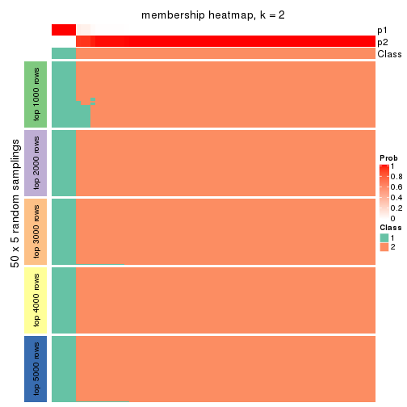
membership_heatmap(res, k = 3)
membership_heatmap(res, k = 4)
membership_heatmap(res, k = 5)
membership_heatmap(res, k = 6)
As soon as we have had the classes for columns, we can look for signatures which are significantly different between classes which can be candidate marks for certain classes. Following are the heatmaps for signatures.
Signature heatmaps where rows are scaled:
get_signatures(res, k = 2)
get_signatures(res, k = 3)
get_signatures(res, k = 4)
get_signatures(res, k = 5)
get_signatures(res, k = 6)
Signature heatmaps where rows are not scaled:
get_signatures(res, k = 2, scale_rows = FALSE)

get_signatures(res, k = 3, scale_rows = FALSE)
get_signatures(res, k = 4, scale_rows = FALSE)
get_signatures(res, k = 5, scale_rows = FALSE)
get_signatures(res, k = 6, scale_rows = FALSE)
Compare the overlap of signatures from different k:
compare_signatures(res)
get_signature() returns a data frame invisibly. TO get the list of signatures, the function
call should be assigned to a variable explicitly. In following code, if plot argument is set
to FALSE, no heatmap is plotted while only the differential analysis is performed.
# code only for demonstration
tb = get_signature(res, k = ..., plot = FALSE)
An example of the output of tb is:
#> which_row fdr mean_1 mean_2 scaled_mean_1 scaled_mean_2 km
#> 1 38 0.042760348 8.373488 9.131774 -0.5533452 0.5164555 1
#> 2 40 0.018707592 7.106213 8.469186 -0.6173731 0.5762149 1
#> 3 55 0.019134737 10.221463 11.207825 -0.6159697 0.5749050 1
#> 4 59 0.006059896 5.921854 7.869574 -0.6899429 0.6439467 1
#> 5 60 0.018055526 8.928898 10.211722 -0.6204761 0.5791110 1
#> 6 98 0.009384629 15.714769 14.887706 0.6635654 -0.6193277 2
...
The columns in tb are:
which_row: row indices corresponding to the input matrix.fdr: FDR for the differential test. mean_x: The mean value in group x.scaled_mean_x: The mean value in group x after rows are scaled.km: Row groups if k-means clustering is applied to rows.UMAP plot which shows how samples are separated.
dimension_reduction(res, k = 2, method = "UMAP")
dimension_reduction(res, k = 3, method = "UMAP")

dimension_reduction(res, k = 4, method = "UMAP")
dimension_reduction(res, k = 5, method = "UMAP")
dimension_reduction(res, k = 6, method = "UMAP")
Following heatmap shows how subgroups are split when increasing k:
collect_classes(res)
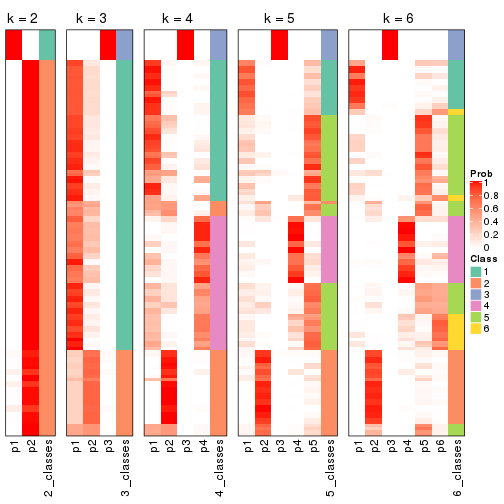
If matrix rows can be associated to genes, consider to use GO_Enrichment(res,
...) to perform function enrichment for the signature genes.
The object with results only for a single top-value method and a single partition method can be extracted as:
res = res_list["SD", "NMF"]
# you can also extract it by
# res = res_list["SD:NMF"]
A summary of res and all the functions that can be applied to it:
res
#> A 'ConsensusPartition' object with k = 2, 3, 4, 5, 6.
#> On a matrix with 16510 rows and 133 columns.
#> Top rows (1000, 2000, 3000, 4000, 5000) are extracted by 'SD' method.
#> Subgroups are detected by 'NMF' method.
#> Performed in total 1250 partitions by row resampling.
#> Best k for subgroups seems to be 2.
#>
#> Following methods can be applied to this 'ConsensusPartition' object:
#> [1] "cola_report" "collect_classes" "collect_plots"
#> [4] "collect_stats" "colnames" "compare_signatures"
#> [7] "consensus_heatmap" "dimension_reduction" "functional_enrichment"
#> [10] "get_anno_col" "get_anno" "get_classes"
#> [13] "get_consensus" "get_matrix" "get_membership"
#> [16] "get_param" "get_signatures" "get_stats"
#> [19] "is_best_k" "is_stable_k" "membership_heatmap"
#> [22] "ncol" "nrow" "plot_ecdf"
#> [25] "rownames" "select_partition_number" "show"
#> [28] "suggest_best_k" "test_to_known_factors"
collect_plots() function collects all the plots made from res for all k (number of partitions)
into one single page to provide an easy and fast comparison between different k.
collect_plots(res)
The plots are:
k and the heatmap of
predicted classes for each k.k.k.k.All the plots in panels can be made by individual functions and they are plotted later in this section.
select_partition_number() produces several plots showing different
statistics for choosing “optimized” k. There are following statistics:
k;k, the area increased is defined as \(A_k - A_{k-1}\).The detailed explanations of these statistics can be found in the cola vignette.
Generally speaking, lower PAC score, higher mean silhouette score or higher
concordance corresponds to better partition. Rand index and Jaccard index
measure how similar the current partition is compared to partition with k-1.
If they are too similar, we won't accept k is better than k-1.
select_partition_number(res)

The numeric values for all these statistics can be obtained by get_stats().
get_stats(res)
#> k 1-PAC mean_silhouette concordance area_increased Rand Jaccard
#> 2 2 0.791 0.857 0.944 0.4914 0.503 0.503
#> 3 3 0.621 0.788 0.887 0.2599 0.799 0.642
#> 4 4 0.604 0.577 0.722 0.1666 0.833 0.619
#> 5 5 0.615 0.630 0.784 0.0758 0.828 0.505
#> 6 6 0.645 0.544 0.702 0.0508 0.843 0.449
suggest_best_k() suggests the best \(k\) based on these statistics. The rules are as follows:
NA.suggest_best_k(res)
#> [1] 2
Following shows the table of the partitions (You need to click the show/hide
code output link to see it). The membership matrix (columns with name p*)
is inferred by
clue::cl_consensus()
function with the SE method. Basically the value in the membership matrix
represents the probability to belong to a certain group. The finall class
label for an item is determined with the group with highest probability it
belongs to.
In get_classes() function, the entropy is calculated from the membership
matrix and the silhouette score is calculated from the consensus matrix.
cbind(get_classes(res, k = 2), get_membership(res, k = 2))
#> class entropy silhouette p1 p2
#> ERR946976 1 0.0000 0.9158 1.000 0.000
#> ERR947001 1 0.0000 0.9158 1.000 0.000
#> ERR946975 2 0.0000 0.9547 0.000 1.000
#> ERR947000 2 0.0000 0.9547 0.000 1.000
#> ERR946972 1 0.0000 0.9158 1.000 0.000
#> ERR946997 1 0.0000 0.9158 1.000 0.000
#> ERR946986 1 1.0000 0.0855 0.504 0.496
#> ERR947011 1 0.9996 0.1157 0.512 0.488
#> ERR946977 2 0.0938 0.9444 0.012 0.988
#> ERR947002 2 0.1184 0.9407 0.016 0.984
#> ERR946974 2 0.0000 0.9547 0.000 1.000
#> ERR946999 2 0.0000 0.9547 0.000 1.000
#> ERR946971 1 0.0000 0.9158 1.000 0.000
#> ERR946996 1 0.0000 0.9158 1.000 0.000
#> ERR946992 2 0.0000 0.9547 0.000 1.000
#> ERR947017 2 0.0000 0.9547 0.000 1.000
#> ERR946984 2 0.0376 0.9514 0.004 0.996
#> ERR947009 2 0.0376 0.9514 0.004 0.996
#> ERR946987 2 0.0000 0.9547 0.000 1.000
#> ERR947012 2 0.0000 0.9547 0.000 1.000
#> ERR946991 2 0.0000 0.9547 0.000 1.000
#> ERR947016 2 0.0000 0.9547 0.000 1.000
#> ERR946983 2 0.0000 0.9547 0.000 1.000
#> ERR947008 2 0.0000 0.9547 0.000 1.000
#> ERR946970 1 0.9248 0.5259 0.660 0.340
#> ERR946995 1 0.8713 0.6115 0.708 0.292
#> ERR946969 1 0.9170 0.5415 0.668 0.332
#> ERR946994 1 0.9427 0.4836 0.640 0.360
#> ERR946982 2 0.0000 0.9547 0.000 1.000
#> ERR947007 2 0.0000 0.9547 0.000 1.000
#> ERR946988 2 0.0000 0.9547 0.000 1.000
#> ERR947013 2 0.0000 0.9547 0.000 1.000
#> ERR946985 2 0.0000 0.9547 0.000 1.000
#> ERR947010 2 0.0000 0.9547 0.000 1.000
#> ERR946989 2 0.6973 0.7322 0.188 0.812
#> ERR947014 2 0.6973 0.7322 0.188 0.812
#> ERR946968 1 0.0000 0.9158 1.000 0.000
#> ERR946993 1 0.0000 0.9158 1.000 0.000
#> ERR946990 1 0.0000 0.9158 1.000 0.000
#> ERR947015 1 0.0000 0.9158 1.000 0.000
#> ERR946980 2 0.0000 0.9547 0.000 1.000
#> ERR947005 2 0.0000 0.9547 0.000 1.000
#> ERR946978 1 0.0000 0.9158 1.000 0.000
#> ERR947003 1 0.0000 0.9158 1.000 0.000
#> ERR946979 2 0.0000 0.9547 0.000 1.000
#> ERR947004 2 0.0000 0.9547 0.000 1.000
#> ERR946957 1 0.0000 0.9158 1.000 0.000
#> ERR946962 1 0.0000 0.9158 1.000 0.000
#> ERR946958 1 0.0000 0.9158 1.000 0.000
#> ERR946963 1 0.0000 0.9158 1.000 0.000
#> ERR946959 1 0.0000 0.9158 1.000 0.000
#> ERR946964 1 0.0000 0.9158 1.000 0.000
#> ERR946967 1 0.0000 0.9158 1.000 0.000
#> ERR862690 1 0.0000 0.9158 1.000 0.000
#> ERR914278 2 0.0000 0.9547 0.000 1.000
#> ERR914314 2 0.0000 0.9547 0.000 1.000
#> ERR914279 1 0.0000 0.9158 1.000 0.000
#> ERR914315 1 0.0000 0.9158 1.000 0.000
#> ERR914280 2 0.0000 0.9547 0.000 1.000
#> ERR914316 2 0.0000 0.9547 0.000 1.000
#> ERR914281 2 0.0000 0.9547 0.000 1.000
#> ERR914317 2 0.0000 0.9547 0.000 1.000
#> ERR914282 2 0.0000 0.9547 0.000 1.000
#> ERR914318 2 0.0000 0.9547 0.000 1.000
#> ERR914283 1 0.0000 0.9158 1.000 0.000
#> ERR914319 1 0.0000 0.9158 1.000 0.000
#> ERR914284 1 0.1633 0.8997 0.976 0.024
#> ERR914320 1 0.0938 0.9082 0.988 0.012
#> ERR914285 2 0.0000 0.9547 0.000 1.000
#> ERR914321 2 0.0000 0.9547 0.000 1.000
#> ERR914286 2 0.0000 0.9547 0.000 1.000
#> ERR914322 2 0.0000 0.9547 0.000 1.000
#> ERR914287 1 0.0000 0.9158 1.000 0.000
#> ERR914323 1 0.0000 0.9158 1.000 0.000
#> ERR914288 2 0.0000 0.9547 0.000 1.000
#> ERR914324 2 0.0000 0.9547 0.000 1.000
#> ERR914289 2 0.9286 0.4261 0.344 0.656
#> ERR914290 1 0.0000 0.9158 1.000 0.000
#> ERR914326 1 0.0000 0.9158 1.000 0.000
#> ERR914291 2 0.0000 0.9547 0.000 1.000
#> ERR914327 2 0.0000 0.9547 0.000 1.000
#> ERR914292 1 0.7883 0.6930 0.764 0.236
#> ERR914328 1 0.7528 0.7186 0.784 0.216
#> ERR914293 1 0.0000 0.9158 1.000 0.000
#> ERR914329 1 0.0000 0.9158 1.000 0.000
#> ERR914294 2 0.0000 0.9547 0.000 1.000
#> ERR914330 2 0.0000 0.9547 0.000 1.000
#> ERR914295 1 0.0672 0.9109 0.992 0.008
#> ERR914331 1 0.0376 0.9134 0.996 0.004
#> ERR914296 1 0.0000 0.9158 1.000 0.000
#> ERR914332 1 0.0000 0.9158 1.000 0.000
#> ERR914297 1 0.8909 0.5579 0.692 0.308
#> ERR914333 1 0.8713 0.5868 0.708 0.292
#> ERR914298 1 0.0000 0.9158 1.000 0.000
#> ERR914334 1 0.0000 0.9158 1.000 0.000
#> ERR914299 2 0.0000 0.9547 0.000 1.000
#> ERR914335 2 0.0000 0.9547 0.000 1.000
#> ERR914300 1 0.9129 0.5561 0.672 0.328
#> ERR914336 1 0.9044 0.5709 0.680 0.320
#> ERR914301 2 0.2603 0.9126 0.044 0.956
#> ERR914337 2 0.1843 0.9287 0.028 0.972
#> ERR914302 2 0.0000 0.9547 0.000 1.000
#> ERR914338 2 0.0000 0.9547 0.000 1.000
#> ERR914303 2 0.0000 0.9547 0.000 1.000
#> ERR914339 2 0.0000 0.9547 0.000 1.000
#> ERR914304 2 0.0000 0.9547 0.000 1.000
#> ERR914340 2 0.0000 0.9547 0.000 1.000
#> ERR914305 2 0.0000 0.9547 0.000 1.000
#> ERR914341 2 0.0000 0.9547 0.000 1.000
#> ERR914306 2 0.0000 0.9547 0.000 1.000
#> ERR914342 2 0.0000 0.9547 0.000 1.000
#> ERR914307 2 0.9661 0.2977 0.392 0.608
#> ERR914343 2 0.9850 0.1811 0.428 0.572
#> ERR914308 1 0.0000 0.9158 1.000 0.000
#> ERR914344 1 0.0000 0.9158 1.000 0.000
#> ERR914309 1 0.0000 0.9158 1.000 0.000
#> ERR914345 1 0.0000 0.9158 1.000 0.000
#> ERR914310 2 0.9909 0.1168 0.444 0.556
#> ERR914346 1 0.9993 0.1413 0.516 0.484
#> ERR914311 2 0.0000 0.9547 0.000 1.000
#> ERR914347 2 0.0000 0.9547 0.000 1.000
#> ERR914312 2 0.0000 0.9547 0.000 1.000
#> ERR914348 2 0.0000 0.9547 0.000 1.000
#> ERR914313 2 0.0000 0.9547 0.000 1.000
#> ERR914349 2 0.0000 0.9547 0.000 1.000
#> ERR946960 1 0.0000 0.9158 1.000 0.000
#> ERR946965 1 0.0000 0.9158 1.000 0.000
#> ERR946966 2 0.9775 0.2579 0.412 0.588
#> ERR946973 1 0.0000 0.9158 1.000 0.000
#> ERR946998 1 0.0000 0.9158 1.000 0.000
#> ERR946981 2 0.0000 0.9547 0.000 1.000
#> ERR947006 2 0.0000 0.9547 0.000 1.000
#> ERR914325 2 0.9922 0.1098 0.448 0.552
cbind(get_classes(res, k = 3), get_membership(res, k = 3))
#> class entropy silhouette p1 p2 p3
#> ERR946976 1 0.6252 0.3957 0.556 0.000 0.444
#> ERR947001 1 0.6192 0.4511 0.580 0.000 0.420
#> ERR946975 1 0.6451 0.2559 0.608 0.384 0.008
#> ERR947000 1 0.6018 0.4699 0.684 0.308 0.008
#> ERR946972 3 0.0424 0.9722 0.008 0.000 0.992
#> ERR946997 3 0.0424 0.9722 0.008 0.000 0.992
#> ERR946986 1 0.7333 0.6718 0.704 0.116 0.180
#> ERR947011 1 0.7007 0.6979 0.724 0.100 0.176
#> ERR946977 2 0.5098 0.6272 0.000 0.752 0.248
#> ERR947002 2 0.5216 0.6085 0.000 0.740 0.260
#> ERR946974 2 0.5706 0.5176 0.320 0.680 0.000
#> ERR946999 2 0.5948 0.4239 0.360 0.640 0.000
#> ERR946971 3 0.0747 0.9739 0.016 0.000 0.984
#> ERR946996 3 0.0747 0.9739 0.016 0.000 0.984
#> ERR946992 2 0.0000 0.8686 0.000 1.000 0.000
#> ERR947017 2 0.0000 0.8686 0.000 1.000 0.000
#> ERR946984 3 0.2959 0.8874 0.000 0.100 0.900
#> ERR947009 3 0.2959 0.8874 0.000 0.100 0.900
#> ERR946987 2 0.0000 0.8686 0.000 1.000 0.000
#> ERR947012 2 0.0000 0.8686 0.000 1.000 0.000
#> ERR946991 2 0.1964 0.8562 0.000 0.944 0.056
#> ERR947016 2 0.1860 0.8578 0.000 0.948 0.052
#> ERR946983 2 0.5115 0.7699 0.188 0.796 0.016
#> ERR947008 2 0.5269 0.7576 0.200 0.784 0.016
#> ERR946970 1 0.7748 0.5037 0.596 0.064 0.340
#> ERR946995 1 0.7180 0.6297 0.672 0.060 0.268
#> ERR946969 1 0.4261 0.8030 0.848 0.012 0.140
#> ERR946994 1 0.3375 0.8332 0.892 0.008 0.100
#> ERR946982 2 0.0237 0.8690 0.004 0.996 0.000
#> ERR947007 2 0.0237 0.8690 0.004 0.996 0.000
#> ERR946988 2 0.0237 0.8677 0.000 0.996 0.004
#> ERR947013 2 0.0237 0.8677 0.000 0.996 0.004
#> ERR946985 2 0.0237 0.8684 0.000 0.996 0.004
#> ERR947010 2 0.0237 0.8684 0.000 0.996 0.004
#> ERR946989 2 0.9664 0.0886 0.296 0.460 0.244
#> ERR947014 2 0.9648 0.0934 0.304 0.460 0.236
#> ERR946968 1 0.6154 0.4572 0.592 0.000 0.408
#> ERR946993 1 0.6140 0.4656 0.596 0.000 0.404
#> ERR946990 1 0.4465 0.7792 0.820 0.004 0.176
#> ERR947015 1 0.3784 0.8144 0.864 0.004 0.132
#> ERR946980 2 0.2400 0.8576 0.064 0.932 0.004
#> ERR947005 2 0.3500 0.8288 0.116 0.880 0.004
#> ERR946978 1 0.1643 0.8531 0.956 0.000 0.044
#> ERR947003 1 0.1529 0.8544 0.960 0.000 0.040
#> ERR946979 2 0.0747 0.8661 0.000 0.984 0.016
#> ERR947004 2 0.0747 0.8661 0.000 0.984 0.016
#> ERR946957 3 0.0592 0.9743 0.012 0.000 0.988
#> ERR946962 3 0.0747 0.9739 0.016 0.000 0.984
#> ERR946958 1 0.2537 0.8460 0.920 0.000 0.080
#> ERR946963 1 0.2261 0.8510 0.932 0.000 0.068
#> ERR946959 1 0.1411 0.8558 0.964 0.000 0.036
#> ERR946964 1 0.1289 0.8568 0.968 0.000 0.032
#> ERR946967 3 0.0592 0.9743 0.012 0.000 0.988
#> ERR862690 3 0.0592 0.9743 0.012 0.000 0.988
#> ERR914278 2 0.0237 0.8690 0.004 0.996 0.000
#> ERR914314 2 0.0237 0.8690 0.004 0.996 0.000
#> ERR914279 1 0.1643 0.8577 0.956 0.000 0.044
#> ERR914315 1 0.1643 0.8577 0.956 0.000 0.044
#> ERR914280 2 0.0237 0.8690 0.004 0.996 0.000
#> ERR914316 2 0.0237 0.8690 0.004 0.996 0.000
#> ERR914281 2 0.0000 0.8686 0.000 1.000 0.000
#> ERR914317 2 0.0000 0.8686 0.000 1.000 0.000
#> ERR914282 2 0.3610 0.8385 0.096 0.888 0.016
#> ERR914318 2 0.3846 0.8320 0.108 0.876 0.016
#> ERR914283 1 0.2711 0.8472 0.912 0.000 0.088
#> ERR914319 1 0.2625 0.8489 0.916 0.000 0.084
#> ERR914284 1 0.1989 0.8565 0.948 0.004 0.048
#> ERR914320 1 0.1989 0.8565 0.948 0.004 0.048
#> ERR914285 2 0.2537 0.8333 0.080 0.920 0.000
#> ERR914321 2 0.2796 0.8240 0.092 0.908 0.000
#> ERR914286 2 0.1031 0.8663 0.024 0.976 0.000
#> ERR914322 2 0.1289 0.8644 0.032 0.968 0.000
#> ERR914287 1 0.0237 0.8620 0.996 0.000 0.004
#> ERR914323 1 0.0237 0.8620 0.996 0.000 0.004
#> ERR914288 1 0.1832 0.8468 0.956 0.036 0.008
#> ERR914324 1 0.1832 0.8468 0.956 0.036 0.008
#> ERR914289 1 0.4295 0.8081 0.864 0.104 0.032
#> ERR914290 1 0.0237 0.8617 0.996 0.000 0.004
#> ERR914326 1 0.0237 0.8617 0.996 0.000 0.004
#> ERR914291 2 0.5269 0.7585 0.200 0.784 0.016
#> ERR914327 2 0.5639 0.7223 0.232 0.752 0.016
#> ERR914292 1 0.0848 0.8629 0.984 0.008 0.008
#> ERR914328 1 0.0424 0.8614 0.992 0.008 0.000
#> ERR914293 1 0.0000 0.8620 1.000 0.000 0.000
#> ERR914329 1 0.0000 0.8620 1.000 0.000 0.000
#> ERR914294 2 0.0424 0.8685 0.008 0.992 0.000
#> ERR914330 2 0.0424 0.8685 0.008 0.992 0.000
#> ERR914295 1 0.1529 0.8589 0.960 0.000 0.040
#> ERR914331 1 0.1529 0.8589 0.960 0.000 0.040
#> ERR914296 1 0.3412 0.7995 0.876 0.000 0.124
#> ERR914332 1 0.3340 0.8029 0.880 0.000 0.120
#> ERR914297 1 0.6667 0.3815 0.616 0.016 0.368
#> ERR914333 1 0.6587 0.4220 0.632 0.016 0.352
#> ERR914298 1 0.1529 0.8582 0.960 0.000 0.040
#> ERR914334 1 0.1643 0.8575 0.956 0.000 0.044
#> ERR914299 2 0.5406 0.7367 0.224 0.764 0.012
#> ERR914335 2 0.5737 0.6997 0.256 0.732 0.012
#> ERR914300 1 0.0424 0.8614 0.992 0.008 0.000
#> ERR914336 1 0.0424 0.8614 0.992 0.008 0.000
#> ERR914301 2 0.7582 0.4296 0.048 0.572 0.380
#> ERR914337 2 0.7624 0.4523 0.052 0.580 0.368
#> ERR914302 2 0.0237 0.8690 0.004 0.996 0.000
#> ERR914338 2 0.0237 0.8690 0.004 0.996 0.000
#> ERR914303 2 0.5744 0.7900 0.072 0.800 0.128
#> ERR914339 2 0.6001 0.7757 0.072 0.784 0.144
#> ERR914304 2 0.3780 0.8439 0.044 0.892 0.064
#> ERR914340 2 0.3583 0.8474 0.044 0.900 0.056
#> ERR914305 2 0.5117 0.8160 0.108 0.832 0.060
#> ERR914341 2 0.5020 0.8180 0.108 0.836 0.056
#> ERR914306 2 0.5529 0.6196 0.000 0.704 0.296
#> ERR914342 2 0.5431 0.6383 0.000 0.716 0.284
#> ERR914307 1 0.1031 0.8602 0.976 0.024 0.000
#> ERR914343 1 0.0983 0.8621 0.980 0.016 0.004
#> ERR914308 1 0.0237 0.8620 0.996 0.000 0.004
#> ERR914344 1 0.0237 0.8620 0.996 0.000 0.004
#> ERR914309 1 0.0000 0.8620 1.000 0.000 0.000
#> ERR914345 1 0.0000 0.8620 1.000 0.000 0.000
#> ERR914310 1 0.0747 0.8600 0.984 0.016 0.000
#> ERR914346 1 0.0747 0.8600 0.984 0.016 0.000
#> ERR914311 2 0.2176 0.8624 0.020 0.948 0.032
#> ERR914347 2 0.2176 0.8624 0.020 0.948 0.032
#> ERR914312 2 0.3682 0.8324 0.116 0.876 0.008
#> ERR914348 2 0.4033 0.8195 0.136 0.856 0.008
#> ERR914313 2 0.0000 0.8686 0.000 1.000 0.000
#> ERR914349 2 0.0000 0.8686 0.000 1.000 0.000
#> ERR946960 1 0.5859 0.6004 0.656 0.000 0.344
#> ERR946965 1 0.5988 0.5619 0.632 0.000 0.368
#> ERR946966 1 0.4281 0.7896 0.872 0.072 0.056
#> ERR946973 3 0.0747 0.9739 0.016 0.000 0.984
#> ERR946998 3 0.0747 0.9739 0.016 0.000 0.984
#> ERR946981 2 0.1337 0.8670 0.016 0.972 0.012
#> ERR947006 2 0.1337 0.8670 0.016 0.972 0.012
#> ERR914325 1 0.3765 0.8253 0.888 0.084 0.028
cbind(get_classes(res, k = 4), get_membership(res, k = 4))
#> class entropy silhouette p1 p2 p3 p4
#> ERR946976 1 0.2921 0.65189 0.860 0.000 0.140 0.000
#> ERR947001 1 0.2345 0.67421 0.900 0.000 0.100 0.000
#> ERR946975 2 0.2909 0.61752 0.092 0.888 0.000 0.020
#> ERR947000 2 0.3219 0.59163 0.112 0.868 0.000 0.020
#> ERR946972 3 0.0188 0.98750 0.000 0.004 0.996 0.000
#> ERR946997 3 0.0188 0.98750 0.000 0.004 0.996 0.000
#> ERR946986 1 0.1637 0.68067 0.940 0.000 0.000 0.060
#> ERR947011 1 0.1637 0.68065 0.940 0.000 0.000 0.060
#> ERR946977 4 0.6506 0.61785 0.140 0.080 0.068 0.712
#> ERR947002 4 0.6331 0.60314 0.196 0.076 0.032 0.696
#> ERR946974 4 0.4992 0.26588 0.476 0.000 0.000 0.524
#> ERR946999 4 0.4992 0.26588 0.476 0.000 0.000 0.524
#> ERR946971 3 0.0336 0.99000 0.008 0.000 0.992 0.000
#> ERR946996 3 0.0336 0.99000 0.008 0.000 0.992 0.000
#> ERR946992 4 0.0376 0.74700 0.004 0.004 0.000 0.992
#> ERR947017 4 0.0376 0.74700 0.004 0.004 0.000 0.992
#> ERR946984 3 0.0804 0.97548 0.000 0.012 0.980 0.008
#> ERR947009 3 0.0804 0.97548 0.000 0.012 0.980 0.008
#> ERR946987 4 0.0469 0.74909 0.012 0.000 0.000 0.988
#> ERR947012 4 0.0707 0.74716 0.020 0.000 0.000 0.980
#> ERR946991 4 0.5204 0.18136 0.000 0.376 0.012 0.612
#> ERR947016 4 0.5204 0.18206 0.000 0.376 0.012 0.612
#> ERR946983 2 0.2048 0.71356 0.008 0.928 0.000 0.064
#> ERR947008 2 0.1807 0.71123 0.008 0.940 0.000 0.052
#> ERR946970 1 0.4888 0.02034 0.588 0.000 0.000 0.412
#> ERR946995 1 0.4830 0.08222 0.608 0.000 0.000 0.392
#> ERR946969 1 0.3908 0.61507 0.784 0.212 0.000 0.004
#> ERR946994 1 0.3448 0.65478 0.828 0.168 0.000 0.004
#> ERR946982 4 0.0336 0.74876 0.008 0.000 0.000 0.992
#> ERR947007 4 0.0336 0.74876 0.008 0.000 0.000 0.992
#> ERR946988 4 0.2530 0.67638 0.000 0.100 0.004 0.896
#> ERR947013 4 0.2466 0.67994 0.000 0.096 0.004 0.900
#> ERR946985 4 0.1305 0.74032 0.036 0.000 0.004 0.960
#> ERR947010 4 0.1398 0.73863 0.040 0.000 0.004 0.956
#> ERR946989 4 0.5281 0.28574 0.464 0.000 0.008 0.528
#> ERR947014 4 0.5285 0.27703 0.468 0.000 0.008 0.524
#> ERR946968 1 0.0921 0.70097 0.972 0.000 0.028 0.000
#> ERR946993 1 0.0921 0.70097 0.972 0.000 0.028 0.000
#> ERR946990 1 0.1211 0.69219 0.960 0.000 0.000 0.040
#> ERR947015 1 0.1211 0.69219 0.960 0.000 0.000 0.040
#> ERR946980 4 0.6139 0.11304 0.052 0.404 0.000 0.544
#> ERR947005 4 0.7136 0.07882 0.136 0.376 0.000 0.488
#> ERR946978 1 0.4981 0.49426 0.536 0.464 0.000 0.000
#> ERR947003 1 0.4981 0.49426 0.536 0.464 0.000 0.000
#> ERR946979 4 0.5294 -0.12546 0.000 0.484 0.008 0.508
#> ERR947004 4 0.5294 -0.12546 0.000 0.484 0.008 0.508
#> ERR946957 3 0.0672 0.98766 0.008 0.008 0.984 0.000
#> ERR946962 3 0.0672 0.98766 0.008 0.008 0.984 0.000
#> ERR946958 1 0.1970 0.70947 0.932 0.060 0.008 0.000
#> ERR946963 1 0.1902 0.70903 0.932 0.064 0.004 0.000
#> ERR946959 1 0.4981 0.49426 0.536 0.464 0.000 0.000
#> ERR946964 1 0.4981 0.49426 0.536 0.464 0.000 0.000
#> ERR946967 3 0.0188 0.99015 0.004 0.000 0.996 0.000
#> ERR862690 3 0.0188 0.99015 0.004 0.000 0.996 0.000
#> ERR914278 4 0.0469 0.74909 0.012 0.000 0.000 0.988
#> ERR914314 4 0.0469 0.74909 0.012 0.000 0.000 0.988
#> ERR914279 1 0.1209 0.71062 0.964 0.032 0.004 0.000
#> ERR914315 1 0.1209 0.71062 0.964 0.032 0.004 0.000
#> ERR914280 4 0.1722 0.72218 0.008 0.048 0.000 0.944
#> ERR914316 4 0.2271 0.69794 0.008 0.076 0.000 0.916
#> ERR914281 4 0.0188 0.74552 0.000 0.004 0.000 0.996
#> ERR914317 4 0.0188 0.74552 0.000 0.004 0.000 0.996
#> ERR914282 2 0.2546 0.70447 0.008 0.900 0.000 0.092
#> ERR914318 2 0.2048 0.71348 0.008 0.928 0.000 0.064
#> ERR914283 1 0.5498 0.54465 0.576 0.404 0.020 0.000
#> ERR914319 1 0.5498 0.54465 0.576 0.404 0.020 0.000
#> ERR914284 1 0.0592 0.70123 0.984 0.000 0.000 0.016
#> ERR914320 1 0.0592 0.70123 0.984 0.000 0.000 0.016
#> ERR914285 4 0.4916 0.36087 0.424 0.000 0.000 0.576
#> ERR914321 4 0.4925 0.35540 0.428 0.000 0.000 0.572
#> ERR914286 4 0.0804 0.74539 0.008 0.012 0.000 0.980
#> ERR914322 4 0.0927 0.74344 0.008 0.016 0.000 0.976
#> ERR914287 1 0.4967 0.51198 0.548 0.452 0.000 0.000
#> ERR914323 1 0.4967 0.51198 0.548 0.452 0.000 0.000
#> ERR914288 2 0.4008 0.32076 0.244 0.756 0.000 0.000
#> ERR914324 2 0.4500 0.08842 0.316 0.684 0.000 0.000
#> ERR914289 1 0.4907 -0.00376 0.580 0.000 0.000 0.420
#> ERR914290 1 0.4961 0.51706 0.552 0.448 0.000 0.000
#> ERR914326 1 0.4961 0.51706 0.552 0.448 0.000 0.000
#> ERR914291 2 0.1151 0.69686 0.008 0.968 0.000 0.024
#> ERR914327 2 0.1042 0.69436 0.008 0.972 0.000 0.020
#> ERR914292 1 0.3610 0.64251 0.800 0.200 0.000 0.000
#> ERR914328 1 0.3569 0.65476 0.804 0.196 0.000 0.000
#> ERR914293 1 0.4933 0.53409 0.568 0.432 0.000 0.000
#> ERR914329 1 0.4941 0.53013 0.564 0.436 0.000 0.000
#> ERR914294 4 0.0469 0.74909 0.012 0.000 0.000 0.988
#> ERR914330 4 0.0469 0.74909 0.012 0.000 0.000 0.988
#> ERR914295 1 0.1305 0.71024 0.960 0.036 0.000 0.004
#> ERR914331 1 0.1305 0.71026 0.960 0.036 0.000 0.004
#> ERR914296 2 0.5000 -0.46224 0.500 0.500 0.000 0.000
#> ERR914332 1 0.5000 0.43257 0.500 0.500 0.000 0.000
#> ERR914297 2 0.6197 0.11966 0.056 0.544 0.400 0.000
#> ERR914333 2 0.6253 0.12573 0.060 0.544 0.396 0.000
#> ERR914298 1 0.5435 0.53222 0.564 0.420 0.016 0.000
#> ERR914334 1 0.5602 0.53484 0.568 0.408 0.024 0.000
#> ERR914299 2 0.1174 0.69218 0.012 0.968 0.000 0.020
#> ERR914335 2 0.1297 0.68953 0.016 0.964 0.000 0.020
#> ERR914300 1 0.3649 0.67971 0.796 0.204 0.000 0.000
#> ERR914336 1 0.3688 0.67819 0.792 0.208 0.000 0.000
#> ERR914301 2 0.6259 0.48444 0.000 0.616 0.084 0.300
#> ERR914337 2 0.5662 0.57472 0.000 0.692 0.072 0.236
#> ERR914302 4 0.1118 0.74241 0.036 0.000 0.000 0.964
#> ERR914338 4 0.1211 0.74081 0.040 0.000 0.000 0.960
#> ERR914303 2 0.3545 0.65961 0.000 0.828 0.008 0.164
#> ERR914339 2 0.3545 0.65961 0.000 0.828 0.008 0.164
#> ERR914304 2 0.5007 0.44813 0.000 0.636 0.008 0.356
#> ERR914340 2 0.4836 0.50555 0.000 0.672 0.008 0.320
#> ERR914305 2 0.1211 0.70925 0.000 0.960 0.000 0.040
#> ERR914341 2 0.1389 0.71183 0.000 0.952 0.000 0.048
#> ERR914306 4 0.7687 0.05009 0.000 0.240 0.312 0.448
#> ERR914342 4 0.7687 0.04888 0.000 0.240 0.312 0.448
#> ERR914307 1 0.1913 0.69979 0.940 0.020 0.000 0.040
#> ERR914343 1 0.1913 0.69979 0.940 0.020 0.000 0.040
#> ERR914308 1 0.4961 0.51724 0.552 0.448 0.000 0.000
#> ERR914344 1 0.4961 0.51724 0.552 0.448 0.000 0.000
#> ERR914309 1 0.3975 0.66427 0.760 0.240 0.000 0.000
#> ERR914345 1 0.4072 0.65790 0.748 0.252 0.000 0.000
#> ERR914310 1 0.1151 0.70865 0.968 0.024 0.000 0.008
#> ERR914346 1 0.1042 0.70804 0.972 0.020 0.000 0.008
#> ERR914311 2 0.5193 0.33534 0.000 0.580 0.008 0.412
#> ERR914347 2 0.5183 0.34379 0.000 0.584 0.008 0.408
#> ERR914312 2 0.5306 0.46577 0.020 0.632 0.000 0.348
#> ERR914348 2 0.5403 0.46660 0.024 0.628 0.000 0.348
#> ERR914313 4 0.0336 0.74876 0.008 0.000 0.000 0.992
#> ERR914349 4 0.0336 0.74876 0.008 0.000 0.000 0.992
#> ERR946960 1 0.4699 0.48514 0.676 0.004 0.320 0.000
#> ERR946965 1 0.4819 0.45124 0.652 0.004 0.344 0.000
#> ERR946966 2 0.0592 0.67362 0.016 0.984 0.000 0.000
#> ERR946973 3 0.0336 0.99000 0.008 0.000 0.992 0.000
#> ERR946998 3 0.0336 0.99000 0.008 0.000 0.992 0.000
#> ERR946981 2 0.5112 0.28321 0.000 0.560 0.004 0.436
#> ERR947006 2 0.5097 0.30164 0.000 0.568 0.004 0.428
#> ERR914325 1 0.4643 0.21662 0.656 0.000 0.000 0.344
cbind(get_classes(res, k = 5), get_membership(res, k = 5))
#> class entropy silhouette p1 p2 p3 p4 p5
#> ERR946976 5 0.5752 0.545 0.240 0.000 0.148 0.000 0.612
#> ERR947001 5 0.5142 0.582 0.244 0.000 0.088 0.000 0.668
#> ERR946975 1 0.6144 0.641 0.656 0.124 0.000 0.052 0.168
#> ERR947000 1 0.6006 0.651 0.664 0.108 0.000 0.048 0.180
#> ERR946972 3 0.0613 0.933 0.008 0.004 0.984 0.004 0.000
#> ERR946997 3 0.0613 0.933 0.008 0.004 0.984 0.004 0.000
#> ERR946986 5 0.2570 0.630 0.028 0.000 0.000 0.084 0.888
#> ERR947011 5 0.2511 0.631 0.028 0.000 0.000 0.080 0.892
#> ERR946977 5 0.7312 0.268 0.008 0.324 0.032 0.176 0.460
#> ERR947002 5 0.7060 0.375 0.012 0.280 0.020 0.176 0.512
#> ERR946974 4 0.3635 0.582 0.004 0.000 0.000 0.748 0.248
#> ERR946999 4 0.3906 0.493 0.004 0.000 0.000 0.704 0.292
#> ERR946971 3 0.0000 0.938 0.000 0.000 1.000 0.000 0.000
#> ERR946996 3 0.0000 0.938 0.000 0.000 1.000 0.000 0.000
#> ERR946992 4 0.4540 0.641 0.340 0.020 0.000 0.640 0.000
#> ERR947017 4 0.4540 0.641 0.340 0.020 0.000 0.640 0.000
#> ERR946984 3 0.5886 0.687 0.208 0.108 0.660 0.012 0.012
#> ERR947009 3 0.5886 0.687 0.208 0.108 0.660 0.012 0.012
#> ERR946987 4 0.1498 0.847 0.008 0.016 0.000 0.952 0.024
#> ERR947012 4 0.1243 0.849 0.004 0.008 0.000 0.960 0.028
#> ERR946991 2 0.5378 0.589 0.172 0.668 0.000 0.160 0.000
#> ERR947016 2 0.5514 0.565 0.172 0.652 0.000 0.176 0.000
#> ERR946983 2 0.1750 0.813 0.028 0.936 0.000 0.000 0.036
#> ERR947008 2 0.1830 0.812 0.028 0.932 0.000 0.000 0.040
#> ERR946970 5 0.5651 0.573 0.248 0.000 0.000 0.132 0.620
#> ERR946995 5 0.5513 0.578 0.252 0.000 0.000 0.116 0.632
#> ERR946969 5 0.2251 0.613 0.008 0.052 0.000 0.024 0.916
#> ERR946994 5 0.1954 0.623 0.008 0.028 0.000 0.032 0.932
#> ERR946982 4 0.1704 0.847 0.068 0.004 0.000 0.928 0.000
#> ERR947007 4 0.1704 0.847 0.068 0.004 0.000 0.928 0.000
#> ERR946988 2 0.5251 0.402 0.012 0.584 0.000 0.372 0.032
#> ERR947013 2 0.5607 0.347 0.012 0.552 0.000 0.384 0.052
#> ERR946985 4 0.1202 0.848 0.004 0.004 0.000 0.960 0.032
#> ERR947010 4 0.1202 0.848 0.004 0.004 0.000 0.960 0.032
#> ERR946989 5 0.6006 0.334 0.124 0.000 0.000 0.356 0.520
#> ERR947014 5 0.5970 0.338 0.120 0.000 0.000 0.356 0.524
#> ERR946968 5 0.3882 0.615 0.224 0.000 0.020 0.000 0.756
#> ERR946993 5 0.3882 0.615 0.224 0.000 0.020 0.000 0.756
#> ERR946990 5 0.4885 0.566 0.332 0.000 0.016 0.016 0.636
#> ERR947015 5 0.4885 0.566 0.332 0.000 0.016 0.016 0.636
#> ERR946980 2 0.4298 0.705 0.000 0.756 0.000 0.060 0.184
#> ERR947005 2 0.5396 0.389 0.000 0.560 0.000 0.064 0.376
#> ERR946978 1 0.4982 0.700 0.556 0.032 0.000 0.000 0.412
#> ERR947003 1 0.4893 0.707 0.568 0.028 0.000 0.000 0.404
#> ERR946979 2 0.2329 0.759 0.000 0.876 0.000 0.124 0.000
#> ERR947004 2 0.2280 0.761 0.000 0.880 0.000 0.120 0.000
#> ERR946957 3 0.0000 0.938 0.000 0.000 1.000 0.000 0.000
#> ERR946962 3 0.0000 0.938 0.000 0.000 1.000 0.000 0.000
#> ERR946958 5 0.1285 0.601 0.036 0.004 0.004 0.000 0.956
#> ERR946963 5 0.1285 0.601 0.036 0.004 0.004 0.000 0.956
#> ERR946959 1 0.4833 0.702 0.564 0.024 0.000 0.000 0.412
#> ERR946964 1 0.4744 0.707 0.572 0.020 0.000 0.000 0.408
#> ERR946967 3 0.0162 0.937 0.000 0.004 0.996 0.000 0.000
#> ERR862690 3 0.0162 0.937 0.000 0.004 0.996 0.000 0.000
#> ERR914278 4 0.1026 0.853 0.004 0.004 0.000 0.968 0.024
#> ERR914314 4 0.0771 0.856 0.000 0.004 0.000 0.976 0.020
#> ERR914279 5 0.2286 0.597 0.108 0.000 0.004 0.000 0.888
#> ERR914315 5 0.2439 0.595 0.120 0.000 0.004 0.000 0.876
#> ERR914280 4 0.2361 0.831 0.096 0.012 0.000 0.892 0.000
#> ERR914316 4 0.2416 0.829 0.100 0.012 0.000 0.888 0.000
#> ERR914281 4 0.0880 0.854 0.000 0.032 0.000 0.968 0.000
#> ERR914317 4 0.0794 0.856 0.000 0.028 0.000 0.972 0.000
#> ERR914282 2 0.1485 0.815 0.020 0.948 0.000 0.000 0.032
#> ERR914318 2 0.1568 0.814 0.020 0.944 0.000 0.000 0.036
#> ERR914283 1 0.4638 0.699 0.648 0.000 0.028 0.000 0.324
#> ERR914319 1 0.4671 0.701 0.640 0.000 0.028 0.000 0.332
#> ERR914284 5 0.1928 0.633 0.072 0.000 0.004 0.004 0.920
#> ERR914320 5 0.1991 0.634 0.076 0.000 0.004 0.004 0.916
#> ERR914285 5 0.4430 0.242 0.004 0.000 0.000 0.456 0.540
#> ERR914321 5 0.4430 0.242 0.004 0.000 0.000 0.456 0.540
#> ERR914286 4 0.1278 0.856 0.004 0.016 0.000 0.960 0.020
#> ERR914322 4 0.1173 0.857 0.004 0.012 0.000 0.964 0.020
#> ERR914287 5 0.4210 0.269 0.224 0.036 0.000 0.000 0.740
#> ERR914323 5 0.4325 0.223 0.240 0.036 0.000 0.000 0.724
#> ERR914288 2 0.5068 0.356 0.040 0.572 0.000 0.000 0.388
#> ERR914324 2 0.5153 0.265 0.040 0.524 0.000 0.000 0.436
#> ERR914289 5 0.5700 0.564 0.176 0.000 0.000 0.196 0.628
#> ERR914290 1 0.4590 0.694 0.568 0.012 0.000 0.000 0.420
#> ERR914326 1 0.4590 0.694 0.568 0.012 0.000 0.000 0.420
#> ERR914291 2 0.1981 0.808 0.028 0.924 0.000 0.000 0.048
#> ERR914327 2 0.1981 0.808 0.028 0.924 0.000 0.000 0.048
#> ERR914292 5 0.2361 0.609 0.012 0.096 0.000 0.000 0.892
#> ERR914328 5 0.2124 0.613 0.028 0.056 0.000 0.000 0.916
#> ERR914293 5 0.4774 -0.406 0.424 0.020 0.000 0.000 0.556
#> ERR914329 5 0.4746 -0.547 0.480 0.016 0.000 0.000 0.504
#> ERR914294 4 0.1329 0.858 0.032 0.004 0.000 0.956 0.008
#> ERR914330 4 0.1243 0.858 0.028 0.004 0.000 0.960 0.008
#> ERR914295 5 0.1725 0.604 0.044 0.000 0.000 0.020 0.936
#> ERR914331 5 0.1872 0.598 0.052 0.000 0.000 0.020 0.928
#> ERR914296 1 0.5484 0.698 0.540 0.068 0.000 0.000 0.392
#> ERR914332 1 0.5330 0.702 0.548 0.056 0.000 0.000 0.396
#> ERR914297 1 0.4681 0.372 0.696 0.004 0.260 0.040 0.000
#> ERR914333 1 0.4681 0.372 0.696 0.004 0.260 0.040 0.000
#> ERR914298 1 0.4046 0.719 0.696 0.000 0.008 0.000 0.296
#> ERR914334 1 0.4046 0.719 0.696 0.000 0.008 0.000 0.296
#> ERR914299 2 0.3192 0.752 0.040 0.848 0.000 0.000 0.112
#> ERR914335 2 0.3291 0.745 0.040 0.840 0.000 0.000 0.120
#> ERR914300 5 0.4306 -0.042 0.328 0.000 0.000 0.012 0.660
#> ERR914336 5 0.4517 -0.271 0.388 0.000 0.000 0.012 0.600
#> ERR914301 1 0.7687 0.242 0.488 0.132 0.236 0.144 0.000
#> ERR914337 1 0.7341 0.291 0.532 0.116 0.228 0.124 0.000
#> ERR914302 4 0.3807 0.744 0.240 0.012 0.000 0.748 0.000
#> ERR914338 4 0.3835 0.741 0.244 0.012 0.000 0.744 0.000
#> ERR914303 2 0.0162 0.811 0.004 0.996 0.000 0.000 0.000
#> ERR914339 2 0.0162 0.811 0.004 0.996 0.000 0.000 0.000
#> ERR914304 2 0.0510 0.808 0.000 0.984 0.000 0.016 0.000
#> ERR914340 2 0.0510 0.808 0.000 0.984 0.000 0.016 0.000
#> ERR914305 2 0.0771 0.814 0.020 0.976 0.000 0.000 0.004
#> ERR914341 2 0.0771 0.814 0.020 0.976 0.000 0.000 0.004
#> ERR914306 4 0.7046 0.487 0.096 0.124 0.212 0.568 0.000
#> ERR914342 4 0.6928 0.502 0.096 0.112 0.212 0.580 0.000
#> ERR914307 5 0.4318 0.601 0.292 0.000 0.000 0.020 0.688
#> ERR914343 5 0.4360 0.599 0.300 0.000 0.000 0.020 0.680
#> ERR914308 5 0.4394 0.376 0.136 0.100 0.000 0.000 0.764
#> ERR914344 5 0.4276 0.356 0.168 0.068 0.000 0.000 0.764
#> ERR914309 5 0.1628 0.582 0.056 0.008 0.000 0.000 0.936
#> ERR914345 5 0.1628 0.582 0.056 0.008 0.000 0.000 0.936
#> ERR914310 5 0.1444 0.624 0.012 0.000 0.000 0.040 0.948
#> ERR914346 5 0.1386 0.622 0.016 0.000 0.000 0.032 0.952
#> ERR914311 2 0.0290 0.810 0.000 0.992 0.000 0.008 0.000
#> ERR914347 2 0.0290 0.810 0.000 0.992 0.000 0.008 0.000
#> ERR914312 2 0.6117 0.606 0.036 0.644 0.000 0.132 0.188
#> ERR914348 2 0.6482 0.557 0.044 0.608 0.000 0.144 0.204
#> ERR914313 4 0.1281 0.857 0.032 0.012 0.000 0.956 0.000
#> ERR914349 4 0.1281 0.857 0.032 0.012 0.000 0.956 0.000
#> ERR946960 5 0.6610 0.352 0.260 0.000 0.280 0.000 0.460
#> ERR946965 5 0.6655 0.313 0.260 0.000 0.296 0.000 0.444
#> ERR946966 2 0.2291 0.800 0.036 0.908 0.000 0.000 0.056
#> ERR946973 3 0.0000 0.938 0.000 0.000 1.000 0.000 0.000
#> ERR946998 3 0.0000 0.938 0.000 0.000 1.000 0.000 0.000
#> ERR946981 2 0.1670 0.799 0.012 0.936 0.000 0.052 0.000
#> ERR947006 2 0.1597 0.800 0.012 0.940 0.000 0.048 0.000
#> ERR914325 5 0.5572 0.572 0.164 0.000 0.000 0.192 0.644
cbind(get_classes(res, k = 6), get_membership(res, k = 6))
#> class entropy silhouette p1 p2 p3 p4 p5 p6
#> ERR946976 5 0.4692 0.6553 0.012 0.000 0.172 0.000 0.708 0.108
#> ERR947001 5 0.4723 0.6604 0.012 0.000 0.156 0.000 0.708 0.124
#> ERR946975 1 0.6859 0.1693 0.432 0.000 0.000 0.320 0.080 0.168
#> ERR947000 1 0.6797 0.2137 0.456 0.000 0.000 0.300 0.080 0.164
#> ERR946972 3 0.0717 0.9663 0.000 0.000 0.976 0.000 0.016 0.008
#> ERR946997 3 0.0717 0.9663 0.000 0.000 0.976 0.000 0.016 0.008
#> ERR946986 6 0.4950 0.1263 0.028 0.024 0.000 0.000 0.404 0.544
#> ERR947011 6 0.4623 0.1483 0.028 0.008 0.000 0.000 0.400 0.564
#> ERR946977 2 0.6119 0.3001 0.000 0.560 0.024 0.008 0.236 0.172
#> ERR947002 2 0.6377 0.0745 0.000 0.488 0.016 0.008 0.256 0.232
#> ERR946974 6 0.4366 -0.1661 0.004 0.000 0.000 0.440 0.016 0.540
#> ERR946999 6 0.4076 -0.0990 0.004 0.000 0.000 0.428 0.004 0.564
#> ERR946971 3 0.0713 0.9699 0.000 0.000 0.972 0.000 0.028 0.000
#> ERR946996 3 0.0713 0.9699 0.000 0.000 0.972 0.000 0.028 0.000
#> ERR946992 4 0.5245 0.5403 0.000 0.008 0.000 0.636 0.192 0.164
#> ERR947017 4 0.5272 0.5362 0.000 0.008 0.000 0.632 0.196 0.164
#> ERR946984 2 0.5748 0.2495 0.000 0.496 0.196 0.000 0.308 0.000
#> ERR947009 2 0.5803 0.1865 0.000 0.472 0.196 0.000 0.332 0.000
#> ERR946987 4 0.4637 0.6690 0.000 0.004 0.000 0.672 0.076 0.248
#> ERR947012 4 0.4685 0.6671 0.000 0.004 0.000 0.668 0.080 0.248
#> ERR946991 2 0.4040 0.6859 0.000 0.772 0.000 0.140 0.076 0.012
#> ERR947016 2 0.4115 0.6776 0.000 0.764 0.000 0.148 0.076 0.012
#> ERR946983 2 0.2053 0.7744 0.108 0.888 0.000 0.004 0.000 0.000
#> ERR947008 2 0.2234 0.7630 0.124 0.872 0.000 0.004 0.000 0.000
#> ERR946970 5 0.4328 0.6432 0.000 0.000 0.000 0.100 0.720 0.180
#> ERR946995 5 0.4358 0.6401 0.000 0.000 0.000 0.092 0.712 0.196
#> ERR946969 6 0.6356 0.3035 0.060 0.164 0.000 0.000 0.236 0.540
#> ERR946994 6 0.6093 0.3452 0.072 0.108 0.000 0.000 0.244 0.576
#> ERR946982 4 0.1141 0.7189 0.000 0.000 0.000 0.948 0.052 0.000
#> ERR947007 4 0.1141 0.7189 0.000 0.000 0.000 0.948 0.052 0.000
#> ERR946988 2 0.4485 0.6777 0.000 0.732 0.012 0.028 0.028 0.200
#> ERR947013 2 0.4850 0.6060 0.000 0.668 0.008 0.036 0.024 0.264
#> ERR946985 4 0.4329 0.6797 0.000 0.004 0.000 0.700 0.056 0.240
#> ERR947010 4 0.4353 0.6773 0.000 0.004 0.000 0.696 0.056 0.244
#> ERR946989 5 0.5786 0.2635 0.000 0.000 0.000 0.188 0.468 0.344
#> ERR947014 5 0.5798 0.2450 0.000 0.000 0.000 0.188 0.460 0.352
#> ERR946968 5 0.3774 0.5162 0.008 0.000 0.000 0.000 0.664 0.328
#> ERR946993 5 0.3774 0.5162 0.008 0.000 0.000 0.000 0.664 0.328
#> ERR946990 5 0.3733 0.6510 0.004 0.012 0.040 0.052 0.836 0.056
#> ERR947015 5 0.3515 0.6549 0.004 0.004 0.036 0.056 0.844 0.056
#> ERR946980 2 0.3394 0.7107 0.016 0.800 0.000 0.004 0.008 0.172
#> ERR947005 2 0.4841 0.4417 0.020 0.612 0.000 0.004 0.028 0.336
#> ERR946978 1 0.2046 0.6381 0.916 0.008 0.000 0.000 0.044 0.032
#> ERR947003 1 0.1485 0.6399 0.944 0.004 0.000 0.000 0.024 0.028
#> ERR946979 2 0.2653 0.7725 0.000 0.876 0.000 0.056 0.064 0.004
#> ERR947004 2 0.2532 0.7755 0.000 0.884 0.000 0.052 0.060 0.004
#> ERR946957 3 0.1563 0.9472 0.000 0.000 0.932 0.000 0.056 0.012
#> ERR946962 3 0.1500 0.9505 0.000 0.000 0.936 0.000 0.052 0.012
#> ERR946958 6 0.5549 0.3710 0.376 0.000 0.000 0.000 0.140 0.484
#> ERR946963 6 0.5537 0.3486 0.388 0.000 0.000 0.000 0.136 0.476
#> ERR946959 1 0.0520 0.6468 0.984 0.008 0.000 0.000 0.000 0.008
#> ERR946964 1 0.0520 0.6468 0.984 0.008 0.000 0.000 0.000 0.008
#> ERR946967 3 0.0000 0.9760 0.000 0.000 1.000 0.000 0.000 0.000
#> ERR862690 3 0.0000 0.9760 0.000 0.000 1.000 0.000 0.000 0.000
#> ERR914278 4 0.3360 0.6718 0.000 0.000 0.000 0.732 0.004 0.264
#> ERR914314 4 0.3383 0.6692 0.000 0.000 0.000 0.728 0.004 0.268
#> ERR914279 6 0.6102 0.2145 0.292 0.000 0.000 0.000 0.332 0.376
#> ERR914315 6 0.6112 0.2093 0.300 0.000 0.000 0.000 0.332 0.368
#> ERR914280 4 0.2487 0.7064 0.024 0.000 0.000 0.892 0.020 0.064
#> ERR914316 4 0.2639 0.7001 0.048 0.000 0.000 0.880 0.008 0.064
#> ERR914281 4 0.4443 0.6803 0.000 0.004 0.000 0.696 0.068 0.232
#> ERR914317 4 0.4393 0.6851 0.000 0.004 0.000 0.704 0.068 0.224
#> ERR914282 2 0.1444 0.7945 0.072 0.928 0.000 0.000 0.000 0.000
#> ERR914318 2 0.1501 0.7929 0.076 0.924 0.000 0.000 0.000 0.000
#> ERR914283 1 0.5324 0.4217 0.588 0.000 0.004 0.000 0.280 0.128
#> ERR914319 1 0.5201 0.4459 0.608 0.000 0.004 0.000 0.268 0.120
#> ERR914284 6 0.4764 0.2119 0.056 0.000 0.000 0.000 0.384 0.560
#> ERR914320 6 0.4838 0.2340 0.064 0.000 0.000 0.000 0.372 0.564
#> ERR914285 6 0.3797 0.2725 0.000 0.000 0.000 0.292 0.016 0.692
#> ERR914321 6 0.3797 0.2725 0.000 0.000 0.000 0.292 0.016 0.692
#> ERR914286 4 0.4539 0.6236 0.000 0.016 0.000 0.656 0.032 0.296
#> ERR914322 4 0.4701 0.6267 0.004 0.012 0.000 0.652 0.040 0.292
#> ERR914287 1 0.2946 0.5557 0.812 0.012 0.000 0.000 0.000 0.176
#> ERR914323 1 0.2706 0.5722 0.832 0.008 0.000 0.000 0.000 0.160
#> ERR914288 6 0.5762 -0.0200 0.424 0.148 0.000 0.004 0.000 0.424
#> ERR914324 1 0.5466 0.0178 0.472 0.124 0.000 0.000 0.000 0.404
#> ERR914289 6 0.4161 0.1819 0.012 0.000 0.000 0.004 0.376 0.608
#> ERR914290 1 0.0862 0.6477 0.972 0.008 0.000 0.000 0.004 0.016
#> ERR914326 1 0.0862 0.6477 0.972 0.008 0.000 0.000 0.004 0.016
#> ERR914291 2 0.0865 0.8050 0.036 0.964 0.000 0.000 0.000 0.000
#> ERR914327 2 0.1327 0.7975 0.064 0.936 0.000 0.000 0.000 0.000
#> ERR914292 6 0.7001 0.2544 0.136 0.128 0.000 0.000 0.292 0.444
#> ERR914328 6 0.6773 0.3347 0.184 0.072 0.000 0.000 0.280 0.464
#> ERR914293 1 0.2146 0.6059 0.880 0.004 0.000 0.000 0.000 0.116
#> ERR914329 1 0.1908 0.6172 0.900 0.004 0.000 0.000 0.000 0.096
#> ERR914294 4 0.2662 0.7247 0.000 0.000 0.000 0.856 0.024 0.120
#> ERR914330 4 0.2831 0.7218 0.000 0.000 0.000 0.840 0.024 0.136
#> ERR914295 6 0.4365 0.4017 0.332 0.000 0.000 0.008 0.024 0.636
#> ERR914331 6 0.4407 0.3366 0.380 0.000 0.000 0.004 0.024 0.592
#> ERR914296 1 0.0951 0.6466 0.968 0.020 0.000 0.000 0.004 0.008
#> ERR914332 1 0.0951 0.6466 0.968 0.020 0.000 0.000 0.004 0.008
#> ERR914297 1 0.7577 0.2639 0.460 0.000 0.076 0.204 0.052 0.208
#> ERR914333 1 0.7577 0.2639 0.460 0.000 0.076 0.204 0.052 0.208
#> ERR914298 1 0.4495 0.5500 0.708 0.000 0.004 0.000 0.092 0.196
#> ERR914334 1 0.4495 0.5500 0.708 0.000 0.004 0.000 0.092 0.196
#> ERR914299 2 0.3448 0.5783 0.280 0.716 0.000 0.000 0.000 0.004
#> ERR914335 2 0.3684 0.4847 0.332 0.664 0.000 0.000 0.000 0.004
#> ERR914300 1 0.3747 0.2120 0.604 0.000 0.000 0.000 0.000 0.396
#> ERR914336 1 0.3706 0.2473 0.620 0.000 0.000 0.000 0.000 0.380
#> ERR914301 4 0.8744 0.1601 0.176 0.008 0.184 0.356 0.116 0.160
#> ERR914337 4 0.8535 0.1703 0.192 0.000 0.168 0.360 0.112 0.168
#> ERR914302 4 0.3706 0.6611 0.004 0.000 0.000 0.796 0.104 0.096
#> ERR914338 4 0.3798 0.6567 0.004 0.000 0.000 0.788 0.108 0.100
#> ERR914303 2 0.0146 0.8051 0.004 0.996 0.000 0.000 0.000 0.000
#> ERR914339 2 0.0146 0.8051 0.004 0.996 0.000 0.000 0.000 0.000
#> ERR914304 2 0.0146 0.8037 0.000 0.996 0.000 0.004 0.000 0.000
#> ERR914340 2 0.0000 0.8046 0.000 1.000 0.000 0.000 0.000 0.000
#> ERR914305 2 0.0260 0.8055 0.008 0.992 0.000 0.000 0.000 0.000
#> ERR914341 2 0.0260 0.8055 0.008 0.992 0.000 0.000 0.000 0.000
#> ERR914306 4 0.7139 0.4657 0.004 0.092 0.084 0.576 0.136 0.108
#> ERR914342 4 0.6892 0.4903 0.004 0.068 0.076 0.596 0.136 0.120
#> ERR914307 5 0.3875 0.6002 0.008 0.000 0.000 0.016 0.716 0.260
#> ERR914343 5 0.4010 0.5678 0.012 0.000 0.000 0.012 0.692 0.284
#> ERR914308 1 0.4012 0.5333 0.760 0.060 0.000 0.000 0.008 0.172
#> ERR914344 1 0.3719 0.5167 0.764 0.028 0.000 0.000 0.008 0.200
#> ERR914309 1 0.4792 -0.0185 0.536 0.004 0.000 0.000 0.044 0.416
#> ERR914345 1 0.4586 0.0779 0.564 0.004 0.000 0.000 0.032 0.400
#> ERR914310 6 0.4502 0.4942 0.240 0.000 0.000 0.016 0.048 0.696
#> ERR914346 6 0.4512 0.4941 0.232 0.000 0.000 0.016 0.052 0.700
#> ERR914311 2 0.0291 0.8050 0.004 0.992 0.000 0.000 0.004 0.000
#> ERR914347 2 0.0291 0.8050 0.004 0.992 0.000 0.000 0.004 0.000
#> ERR914312 1 0.6759 0.3079 0.480 0.272 0.000 0.164 0.000 0.084
#> ERR914348 1 0.6894 0.3004 0.468 0.244 0.000 0.200 0.000 0.088
#> ERR914313 4 0.1074 0.7301 0.000 0.000 0.000 0.960 0.012 0.028
#> ERR914349 4 0.1245 0.7306 0.000 0.000 0.000 0.952 0.016 0.032
#> ERR946960 5 0.4057 0.6408 0.012 0.000 0.180 0.000 0.756 0.052
#> ERR946965 5 0.4116 0.6386 0.012 0.000 0.180 0.000 0.752 0.056
#> ERR946966 2 0.2597 0.7189 0.176 0.824 0.000 0.000 0.000 0.000
#> ERR946973 3 0.0000 0.9760 0.000 0.000 1.000 0.000 0.000 0.000
#> ERR946998 3 0.0000 0.9760 0.000 0.000 1.000 0.000 0.000 0.000
#> ERR946981 2 0.2934 0.7766 0.000 0.864 0.000 0.076 0.044 0.016
#> ERR947006 2 0.3092 0.7698 0.000 0.852 0.000 0.088 0.044 0.016
#> ERR914325 6 0.4266 0.2307 0.016 0.000 0.000 0.008 0.348 0.628
Heatmaps for the consensus matrix. It visualizes the probability of two samples to be in a same group.
consensus_heatmap(res, k = 2)
consensus_heatmap(res, k = 3)
consensus_heatmap(res, k = 4)
consensus_heatmap(res, k = 5)
consensus_heatmap(res, k = 6)
Heatmaps for the membership of samples in all partitions to see how consistent they are:
membership_heatmap(res, k = 2)

membership_heatmap(res, k = 3)
membership_heatmap(res, k = 4)
membership_heatmap(res, k = 5)
membership_heatmap(res, k = 6)
As soon as we have had the classes for columns, we can look for signatures which are significantly different between classes which can be candidate marks for certain classes. Following are the heatmaps for signatures.
Signature heatmaps where rows are scaled:
get_signatures(res, k = 2)
get_signatures(res, k = 3)
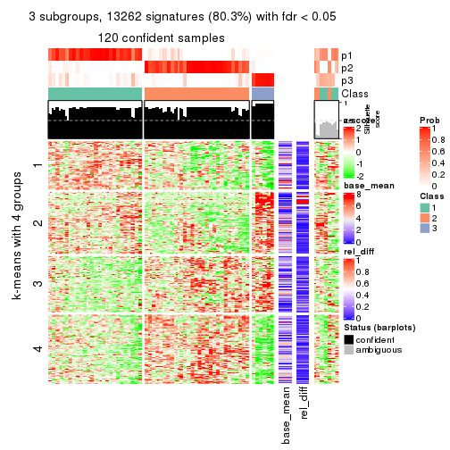
get_signatures(res, k = 4)
get_signatures(res, k = 5)
get_signatures(res, k = 6)
Signature heatmaps where rows are not scaled:
get_signatures(res, k = 2, scale_rows = FALSE)
get_signatures(res, k = 3, scale_rows = FALSE)
get_signatures(res, k = 4, scale_rows = FALSE)
get_signatures(res, k = 5, scale_rows = FALSE)
get_signatures(res, k = 6, scale_rows = FALSE)
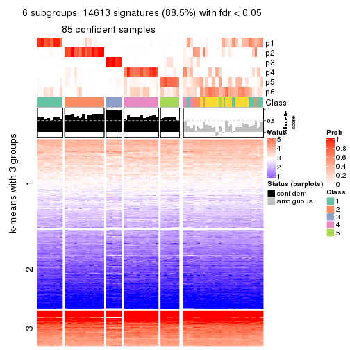
Compare the overlap of signatures from different k:
compare_signatures(res)
get_signature() returns a data frame invisibly. TO get the list of signatures, the function
call should be assigned to a variable explicitly. In following code, if plot argument is set
to FALSE, no heatmap is plotted while only the differential analysis is performed.
# code only for demonstration
tb = get_signature(res, k = ..., plot = FALSE)
An example of the output of tb is:
#> which_row fdr mean_1 mean_2 scaled_mean_1 scaled_mean_2 km
#> 1 38 0.042760348 8.373488 9.131774 -0.5533452 0.5164555 1
#> 2 40 0.018707592 7.106213 8.469186 -0.6173731 0.5762149 1
#> 3 55 0.019134737 10.221463 11.207825 -0.6159697 0.5749050 1
#> 4 59 0.006059896 5.921854 7.869574 -0.6899429 0.6439467 1
#> 5 60 0.018055526 8.928898 10.211722 -0.6204761 0.5791110 1
#> 6 98 0.009384629 15.714769 14.887706 0.6635654 -0.6193277 2
...
The columns in tb are:
which_row: row indices corresponding to the input matrix.fdr: FDR for the differential test. mean_x: The mean value in group x.scaled_mean_x: The mean value in group x after rows are scaled.km: Row groups if k-means clustering is applied to rows.UMAP plot which shows how samples are separated.
dimension_reduction(res, k = 2, method = "UMAP")
dimension_reduction(res, k = 3, method = "UMAP")
dimension_reduction(res, k = 4, method = "UMAP")
dimension_reduction(res, k = 5, method = "UMAP")
dimension_reduction(res, k = 6, method = "UMAP")
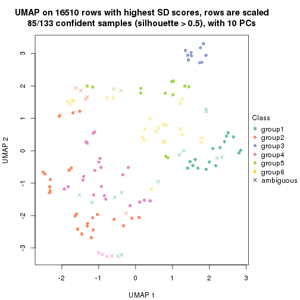
Following heatmap shows how subgroups are split when increasing k:
collect_classes(res)
If matrix rows can be associated to genes, consider to use GO_Enrichment(res,
...) to perform function enrichment for the signature genes.
The object with results only for a single top-value method and a single partition method can be extracted as:
res = res_list["CV", "hclust"]
# you can also extract it by
# res = res_list["CV:hclust"]
A summary of res and all the functions that can be applied to it:
res
#> A 'ConsensusPartition' object with k = 2, 3, 4, 5, 6.
#> On a matrix with 16510 rows and 133 columns.
#> Top rows (1000, 2000, 3000, 4000, 5000) are extracted by 'CV' method.
#> Subgroups are detected by 'hclust' method.
#> Performed in total 1250 partitions by row resampling.
#> Best k for subgroups seems to be 3.
#>
#> Following methods can be applied to this 'ConsensusPartition' object:
#> [1] "cola_report" "collect_classes" "collect_plots"
#> [4] "collect_stats" "colnames" "compare_signatures"
#> [7] "consensus_heatmap" "dimension_reduction" "functional_enrichment"
#> [10] "get_anno_col" "get_anno" "get_classes"
#> [13] "get_consensus" "get_matrix" "get_membership"
#> [16] "get_param" "get_signatures" "get_stats"
#> [19] "is_best_k" "is_stable_k" "membership_heatmap"
#> [22] "ncol" "nrow" "plot_ecdf"
#> [25] "rownames" "select_partition_number" "show"
#> [28] "suggest_best_k" "test_to_known_factors"
collect_plots() function collects all the plots made from res for all k (number of partitions)
into one single page to provide an easy and fast comparison between different k.
collect_plots(res)
The plots are:
k and the heatmap of
predicted classes for each k.k.k.k.All the plots in panels can be made by individual functions and they are plotted later in this section.
select_partition_number() produces several plots showing different
statistics for choosing “optimized” k. There are following statistics:
k;k, the area increased is defined as \(A_k - A_{k-1}\).The detailed explanations of these statistics can be found in the cola vignette.
Generally speaking, lower PAC score, higher mean silhouette score or higher
concordance corresponds to better partition. Rand index and Jaccard index
measure how similar the current partition is compared to partition with k-1.
If they are too similar, we won't accept k is better than k-1.
select_partition_number(res)
The numeric values for all these statistics can be obtained by get_stats().
get_stats(res)
#> k 1-PAC mean_silhouette concordance area_increased Rand Jaccard
#> 2 2 0.333 0.572 0.804 0.334 0.576 0.576
#> 3 3 0.461 0.728 0.875 0.601 0.695 0.537
#> 4 4 0.429 0.528 0.689 0.125 0.725 0.461
#> 5 5 0.432 0.482 0.650 0.118 0.710 0.398
#> 6 6 0.497 0.645 0.742 0.100 0.728 0.361
suggest_best_k() suggests the best \(k\) based on these statistics. The rules are as follows:
NA.suggest_best_k(res)
#> [1] 3
Following shows the table of the partitions (You need to click the show/hide
code output link to see it). The membership matrix (columns with name p*)
is inferred by
clue::cl_consensus()
function with the SE method. Basically the value in the membership matrix
represents the probability to belong to a certain group. The finall class
label for an item is determined with the group with highest probability it
belongs to.
In get_classes() function, the entropy is calculated from the membership
matrix and the silhouette score is calculated from the consensus matrix.
cbind(get_classes(res, k = 2), get_membership(res, k = 2))
#> class entropy silhouette p1 p2
#> ERR946976 2 0.9661 0.0351 0.392 0.608
#> ERR947001 2 0.9661 0.0351 0.392 0.608
#> ERR946975 2 0.3733 0.7494 0.072 0.928
#> ERR947000 2 0.3733 0.7494 0.072 0.928
#> ERR946972 1 0.0000 0.4928 1.000 0.000
#> ERR946997 1 0.0000 0.4928 1.000 0.000
#> ERR946986 2 0.6148 0.6802 0.152 0.848
#> ERR947011 2 0.6148 0.6802 0.152 0.848
#> ERR946977 2 0.3431 0.7492 0.064 0.936
#> ERR947002 2 0.3431 0.7492 0.064 0.936
#> ERR946974 2 0.9635 0.0337 0.388 0.612
#> ERR946999 2 0.9635 0.0337 0.388 0.612
#> ERR946971 1 0.0000 0.4928 1.000 0.000
#> ERR946996 1 0.0000 0.4928 1.000 0.000
#> ERR946992 2 0.0000 0.7658 0.000 1.000
#> ERR947017 2 0.0000 0.7658 0.000 1.000
#> ERR946984 2 0.3431 0.7492 0.064 0.936
#> ERR947009 2 0.3431 0.7492 0.064 0.936
#> ERR946987 2 0.0000 0.7658 0.000 1.000
#> ERR947012 2 0.0000 0.7658 0.000 1.000
#> ERR946991 2 0.0000 0.7658 0.000 1.000
#> ERR947016 2 0.0000 0.7658 0.000 1.000
#> ERR946983 2 0.0000 0.7658 0.000 1.000
#> ERR947008 2 0.0000 0.7658 0.000 1.000
#> ERR946970 1 0.9850 0.6963 0.572 0.428
#> ERR946995 1 0.9850 0.6963 0.572 0.428
#> ERR946969 2 0.8713 0.4240 0.292 0.708
#> ERR946994 2 0.8713 0.4240 0.292 0.708
#> ERR946982 2 0.0000 0.7658 0.000 1.000
#> ERR947007 2 0.0000 0.7658 0.000 1.000
#> ERR946988 2 0.7950 0.5256 0.240 0.760
#> ERR947013 2 0.7950 0.5256 0.240 0.760
#> ERR946985 2 0.0000 0.7658 0.000 1.000
#> ERR947010 2 0.0000 0.7658 0.000 1.000
#> ERR946989 2 0.9323 0.2280 0.348 0.652
#> ERR947014 2 0.9323 0.2280 0.348 0.652
#> ERR946968 1 0.9850 0.6963 0.572 0.428
#> ERR946993 1 0.9850 0.6963 0.572 0.428
#> ERR946990 2 0.6531 0.6636 0.168 0.832
#> ERR947015 2 0.6531 0.6636 0.168 0.832
#> ERR946980 2 0.8499 0.4602 0.276 0.724
#> ERR947005 2 0.8499 0.4602 0.276 0.724
#> ERR946978 1 0.9850 0.6963 0.572 0.428
#> ERR947003 1 0.9850 0.6963 0.572 0.428
#> ERR946979 2 0.0000 0.7658 0.000 1.000
#> ERR947004 2 0.0000 0.7658 0.000 1.000
#> ERR946957 1 0.0000 0.4928 1.000 0.000
#> ERR946962 1 0.0000 0.4928 1.000 0.000
#> ERR946958 1 0.9850 0.6963 0.572 0.428
#> ERR946963 1 0.9850 0.6963 0.572 0.428
#> ERR946959 1 0.9850 0.6963 0.572 0.428
#> ERR946964 1 0.9850 0.6963 0.572 0.428
#> ERR946967 1 0.0000 0.4928 1.000 0.000
#> ERR862690 1 0.0000 0.4928 1.000 0.000
#> ERR914278 2 0.6048 0.6825 0.148 0.852
#> ERR914314 2 0.6048 0.6825 0.148 0.852
#> ERR914279 1 0.9850 0.6963 0.572 0.428
#> ERR914315 1 0.9850 0.6963 0.572 0.428
#> ERR914280 2 0.3733 0.7494 0.072 0.928
#> ERR914316 2 0.3733 0.7494 0.072 0.928
#> ERR914281 2 0.0000 0.7658 0.000 1.000
#> ERR914317 2 0.0000 0.7658 0.000 1.000
#> ERR914282 2 0.0376 0.7658 0.004 0.996
#> ERR914318 2 0.0376 0.7658 0.004 0.996
#> ERR914283 1 0.9850 0.6963 0.572 0.428
#> ERR914319 1 0.9850 0.6963 0.572 0.428
#> ERR914284 2 0.9881 -0.1809 0.436 0.564
#> ERR914320 2 0.9881 -0.1809 0.436 0.564
#> ERR914285 2 0.9608 0.0505 0.384 0.616
#> ERR914321 2 0.9608 0.0505 0.384 0.616
#> ERR914286 2 0.4022 0.7449 0.080 0.920
#> ERR914322 2 0.4022 0.7449 0.080 0.920
#> ERR914287 1 0.9850 0.6963 0.572 0.428
#> ERR914323 1 0.9850 0.6963 0.572 0.428
#> ERR914288 2 0.9661 0.0432 0.392 0.608
#> ERR914324 2 0.9661 0.0432 0.392 0.608
#> ERR914289 2 0.9881 -0.1809 0.436 0.564
#> ERR914290 1 0.9850 0.6963 0.572 0.428
#> ERR914326 1 0.9850 0.6963 0.572 0.428
#> ERR914291 2 0.3879 0.7472 0.076 0.924
#> ERR914327 2 0.3879 0.7472 0.076 0.924
#> ERR914292 2 0.9635 0.0679 0.388 0.612
#> ERR914328 2 0.9635 0.0679 0.388 0.612
#> ERR914293 1 0.9850 0.6963 0.572 0.428
#> ERR914329 1 0.9850 0.6963 0.572 0.428
#> ERR914294 2 0.0000 0.7658 0.000 1.000
#> ERR914330 2 0.0000 0.7658 0.000 1.000
#> ERR914295 2 0.9944 -0.2633 0.456 0.544
#> ERR914331 2 0.9944 -0.2633 0.456 0.544
#> ERR914296 1 0.9850 0.6963 0.572 0.428
#> ERR914332 1 0.9850 0.6963 0.572 0.428
#> ERR914297 2 0.0000 0.7658 0.000 1.000
#> ERR914333 2 0.0000 0.7658 0.000 1.000
#> ERR914298 1 0.9850 0.6963 0.572 0.428
#> ERR914334 1 0.9850 0.6963 0.572 0.428
#> ERR914299 2 0.3879 0.7472 0.076 0.924
#> ERR914335 2 0.3879 0.7472 0.076 0.924
#> ERR914300 2 0.9944 -0.2633 0.456 0.544
#> ERR914336 2 0.9944 -0.2633 0.456 0.544
#> ERR914301 2 0.0000 0.7658 0.000 1.000
#> ERR914337 2 0.0000 0.7658 0.000 1.000
#> ERR914302 2 0.0000 0.7658 0.000 1.000
#> ERR914338 2 0.0000 0.7658 0.000 1.000
#> ERR914303 2 0.0000 0.7658 0.000 1.000
#> ERR914339 2 0.0000 0.7658 0.000 1.000
#> ERR914304 2 0.0376 0.7658 0.004 0.996
#> ERR914340 2 0.0376 0.7658 0.004 0.996
#> ERR914305 2 0.0000 0.7658 0.000 1.000
#> ERR914341 2 0.0000 0.7658 0.000 1.000
#> ERR914306 2 0.0000 0.7658 0.000 1.000
#> ERR914342 2 0.0000 0.7658 0.000 1.000
#> ERR914307 2 0.7056 0.6318 0.192 0.808
#> ERR914343 2 0.7056 0.6318 0.192 0.808
#> ERR914308 1 0.9944 0.6267 0.544 0.456
#> ERR914344 1 0.9944 0.6267 0.544 0.456
#> ERR914309 1 0.9944 0.6267 0.544 0.456
#> ERR914345 1 0.9944 0.6267 0.544 0.456
#> ERR914310 2 0.9775 -0.0590 0.412 0.588
#> ERR914346 2 0.9775 -0.0590 0.412 0.588
#> ERR914311 2 0.0376 0.7658 0.004 0.996
#> ERR914347 2 0.0376 0.7658 0.004 0.996
#> ERR914312 2 0.3733 0.7494 0.072 0.928
#> ERR914348 2 0.3733 0.7494 0.072 0.928
#> ERR914313 2 0.0000 0.7658 0.000 1.000
#> ERR914349 2 0.0000 0.7658 0.000 1.000
#> ERR946960 1 0.9850 0.6963 0.572 0.428
#> ERR946965 1 0.9850 0.6963 0.572 0.428
#> ERR946966 2 0.2603 0.7582 0.044 0.956
#> ERR946973 1 0.0000 0.4928 1.000 0.000
#> ERR946998 1 0.0000 0.4928 1.000 0.000
#> ERR946981 2 0.0000 0.7658 0.000 1.000
#> ERR947006 2 0.0000 0.7658 0.000 1.000
#> ERR914325 2 0.9881 -0.1809 0.436 0.564
cbind(get_classes(res, k = 3), get_membership(res, k = 3))
#> class entropy silhouette p1 p2 p3
#> ERR946976 1 0.5810 0.5383 0.664 0.336 0
#> ERR947001 1 0.5810 0.5383 0.664 0.336 0
#> ERR946975 2 0.4178 0.7808 0.172 0.828 0
#> ERR947000 2 0.4178 0.7808 0.172 0.828 0
#> ERR946972 3 0.0000 1.0000 0.000 0.000 1
#> ERR946997 3 0.0000 1.0000 0.000 0.000 1
#> ERR946986 2 0.6180 0.2922 0.416 0.584 0
#> ERR947011 2 0.6180 0.2922 0.416 0.584 0
#> ERR946977 2 0.3340 0.8067 0.120 0.880 0
#> ERR947002 2 0.3340 0.8067 0.120 0.880 0
#> ERR946974 1 0.6286 0.2916 0.536 0.464 0
#> ERR946999 1 0.6286 0.2916 0.536 0.464 0
#> ERR946971 3 0.0000 1.0000 0.000 0.000 1
#> ERR946996 3 0.0000 1.0000 0.000 0.000 1
#> ERR946992 2 0.0747 0.8581 0.016 0.984 0
#> ERR947017 2 0.0747 0.8581 0.016 0.984 0
#> ERR946984 2 0.3267 0.8120 0.116 0.884 0
#> ERR947009 2 0.3267 0.8120 0.116 0.884 0
#> ERR946987 2 0.0000 0.8531 0.000 1.000 0
#> ERR947012 2 0.0000 0.8531 0.000 1.000 0
#> ERR946991 2 0.0747 0.8581 0.016 0.984 0
#> ERR947016 2 0.0747 0.8581 0.016 0.984 0
#> ERR946983 2 0.1031 0.8589 0.024 0.976 0
#> ERR947008 2 0.1031 0.8589 0.024 0.976 0
#> ERR946970 1 0.0892 0.7834 0.980 0.020 0
#> ERR946995 1 0.0892 0.7834 0.980 0.020 0
#> ERR946969 2 0.6260 0.1514 0.448 0.552 0
#> ERR946994 2 0.6260 0.1514 0.448 0.552 0
#> ERR946982 2 0.0892 0.8584 0.020 0.980 0
#> ERR947007 2 0.0892 0.8584 0.020 0.980 0
#> ERR946988 2 0.5948 0.3973 0.360 0.640 0
#> ERR947013 2 0.5948 0.3973 0.360 0.640 0
#> ERR946985 2 0.0000 0.8531 0.000 1.000 0
#> ERR947010 2 0.0000 0.8531 0.000 1.000 0
#> ERR946989 1 0.5529 0.6138 0.704 0.296 0
#> ERR947014 1 0.5529 0.6138 0.704 0.296 0
#> ERR946968 1 0.0000 0.7836 1.000 0.000 0
#> ERR946993 1 0.0000 0.7836 1.000 0.000 0
#> ERR946990 1 0.6302 0.0328 0.520 0.480 0
#> ERR947015 1 0.6302 0.0328 0.520 0.480 0
#> ERR946980 2 0.6225 0.2090 0.432 0.568 0
#> ERR947005 2 0.6225 0.2090 0.432 0.568 0
#> ERR946978 1 0.0000 0.7836 1.000 0.000 0
#> ERR947003 1 0.0000 0.7836 1.000 0.000 0
#> ERR946979 2 0.0000 0.8531 0.000 1.000 0
#> ERR947004 2 0.0000 0.8531 0.000 1.000 0
#> ERR946957 3 0.0000 1.0000 0.000 0.000 1
#> ERR946962 3 0.0000 1.0000 0.000 0.000 1
#> ERR946958 1 0.0000 0.7836 1.000 0.000 0
#> ERR946963 1 0.0000 0.7836 1.000 0.000 0
#> ERR946959 1 0.0000 0.7836 1.000 0.000 0
#> ERR946964 1 0.0000 0.7836 1.000 0.000 0
#> ERR946967 3 0.0000 1.0000 0.000 0.000 1
#> ERR862690 3 0.0000 1.0000 0.000 0.000 1
#> ERR914278 2 0.5254 0.6365 0.264 0.736 0
#> ERR914314 2 0.5254 0.6365 0.264 0.736 0
#> ERR914279 1 0.0424 0.7855 0.992 0.008 0
#> ERR914315 1 0.0424 0.7855 0.992 0.008 0
#> ERR914280 2 0.4178 0.7808 0.172 0.828 0
#> ERR914316 2 0.4178 0.7808 0.172 0.828 0
#> ERR914281 2 0.0000 0.8531 0.000 1.000 0
#> ERR914317 2 0.0000 0.8531 0.000 1.000 0
#> ERR914282 2 0.1163 0.8587 0.028 0.972 0
#> ERR914318 2 0.1163 0.8587 0.028 0.972 0
#> ERR914283 1 0.0000 0.7836 1.000 0.000 0
#> ERR914319 1 0.0000 0.7836 1.000 0.000 0
#> ERR914284 1 0.4887 0.7019 0.772 0.228 0
#> ERR914320 1 0.4887 0.7019 0.772 0.228 0
#> ERR914285 1 0.6305 0.2474 0.516 0.484 0
#> ERR914321 1 0.6305 0.2474 0.516 0.484 0
#> ERR914286 2 0.4291 0.7701 0.180 0.820 0
#> ERR914322 2 0.4291 0.7701 0.180 0.820 0
#> ERR914287 1 0.0000 0.7836 1.000 0.000 0
#> ERR914323 1 0.0000 0.7836 1.000 0.000 0
#> ERR914288 1 0.6026 0.4808 0.624 0.376 0
#> ERR914324 1 0.6026 0.4808 0.624 0.376 0
#> ERR914289 1 0.5138 0.6832 0.748 0.252 0
#> ERR914290 1 0.0424 0.7855 0.992 0.008 0
#> ERR914326 1 0.0424 0.7855 0.992 0.008 0
#> ERR914291 2 0.4235 0.7759 0.176 0.824 0
#> ERR914327 2 0.4235 0.7759 0.176 0.824 0
#> ERR914292 1 0.6026 0.4789 0.624 0.376 0
#> ERR914328 1 0.6026 0.4789 0.624 0.376 0
#> ERR914293 1 0.0000 0.7836 1.000 0.000 0
#> ERR914329 1 0.0000 0.7836 1.000 0.000 0
#> ERR914294 2 0.0592 0.8571 0.012 0.988 0
#> ERR914330 2 0.0592 0.8571 0.012 0.988 0
#> ERR914295 1 0.4750 0.7113 0.784 0.216 0
#> ERR914331 1 0.4750 0.7113 0.784 0.216 0
#> ERR914296 1 0.0000 0.7836 1.000 0.000 0
#> ERR914332 1 0.0000 0.7836 1.000 0.000 0
#> ERR914297 2 0.0000 0.8531 0.000 1.000 0
#> ERR914333 2 0.0000 0.8531 0.000 1.000 0
#> ERR914298 1 0.0000 0.7836 1.000 0.000 0
#> ERR914334 1 0.0000 0.7836 1.000 0.000 0
#> ERR914299 2 0.4346 0.7681 0.184 0.816 0
#> ERR914335 2 0.4346 0.7681 0.184 0.816 0
#> ERR914300 1 0.4750 0.7113 0.784 0.216 0
#> ERR914336 1 0.4750 0.7113 0.784 0.216 0
#> ERR914301 2 0.0000 0.8531 0.000 1.000 0
#> ERR914337 2 0.0000 0.8531 0.000 1.000 0
#> ERR914302 2 0.0892 0.8584 0.020 0.980 0
#> ERR914338 2 0.0892 0.8584 0.020 0.980 0
#> ERR914303 2 0.1031 0.8589 0.024 0.976 0
#> ERR914339 2 0.1031 0.8589 0.024 0.976 0
#> ERR914304 2 0.2066 0.8508 0.060 0.940 0
#> ERR914340 2 0.2066 0.8508 0.060 0.940 0
#> ERR914305 2 0.1031 0.8589 0.024 0.976 0
#> ERR914341 2 0.1031 0.8589 0.024 0.976 0
#> ERR914306 2 0.0000 0.8531 0.000 1.000 0
#> ERR914342 2 0.0000 0.8531 0.000 1.000 0
#> ERR914307 2 0.6280 0.1449 0.460 0.540 0
#> ERR914343 2 0.6280 0.1449 0.460 0.540 0
#> ERR914308 1 0.2625 0.7811 0.916 0.084 0
#> ERR914344 1 0.2625 0.7811 0.916 0.084 0
#> ERR914309 1 0.2625 0.7811 0.916 0.084 0
#> ERR914345 1 0.2625 0.7811 0.916 0.084 0
#> ERR914310 1 0.5859 0.5439 0.656 0.344 0
#> ERR914346 1 0.5859 0.5439 0.656 0.344 0
#> ERR914311 2 0.1163 0.8587 0.028 0.972 0
#> ERR914347 2 0.1163 0.8587 0.028 0.972 0
#> ERR914312 2 0.4178 0.7808 0.172 0.828 0
#> ERR914348 2 0.4178 0.7808 0.172 0.828 0
#> ERR914313 2 0.0000 0.8531 0.000 1.000 0
#> ERR914349 2 0.0000 0.8531 0.000 1.000 0
#> ERR946960 1 0.0000 0.7836 1.000 0.000 0
#> ERR946965 1 0.0000 0.7836 1.000 0.000 0
#> ERR946966 2 0.2356 0.8457 0.072 0.928 0
#> ERR946973 3 0.0000 1.0000 0.000 0.000 1
#> ERR946998 3 0.0000 1.0000 0.000 0.000 1
#> ERR946981 2 0.2066 0.8495 0.060 0.940 0
#> ERR947006 2 0.2066 0.8495 0.060 0.940 0
#> ERR914325 1 0.5138 0.6832 0.748 0.252 0
cbind(get_classes(res, k = 4), get_membership(res, k = 4))
#> class entropy silhouette p1 p2 p3 p4
#> ERR946976 2 0.6821 0.471 0.256 0.592 0 0.152
#> ERR947001 2 0.6821 0.471 0.256 0.592 0 0.152
#> ERR946975 4 0.6610 0.552 0.080 0.452 0 0.468
#> ERR947000 4 0.6610 0.552 0.080 0.452 0 0.468
#> ERR946972 3 0.0000 1.000 0.000 0.000 1 0.000
#> ERR946997 3 0.0000 1.000 0.000 0.000 1 0.000
#> ERR946986 2 0.7369 0.234 0.180 0.496 0 0.324
#> ERR947011 2 0.7369 0.234 0.180 0.496 0 0.324
#> ERR946977 2 0.4955 -0.634 0.000 0.556 0 0.444
#> ERR947002 2 0.4955 -0.634 0.000 0.556 0 0.444
#> ERR946974 2 0.1109 0.433 0.004 0.968 0 0.028
#> ERR946999 2 0.1109 0.433 0.004 0.968 0 0.028
#> ERR946971 3 0.0000 1.000 0.000 0.000 1 0.000
#> ERR946996 3 0.0000 1.000 0.000 0.000 1 0.000
#> ERR946992 4 0.5132 0.812 0.004 0.448 0 0.548
#> ERR947017 4 0.5132 0.812 0.004 0.448 0 0.548
#> ERR946984 2 0.5137 -0.654 0.004 0.544 0 0.452
#> ERR947009 2 0.5137 -0.654 0.004 0.544 0 0.452
#> ERR946987 4 0.4948 0.808 0.000 0.440 0 0.560
#> ERR947012 4 0.4948 0.808 0.000 0.440 0 0.560
#> ERR946991 4 0.5119 0.813 0.004 0.440 0 0.556
#> ERR947016 4 0.5119 0.813 0.004 0.440 0 0.556
#> ERR946983 4 0.5119 0.811 0.004 0.440 0 0.556
#> ERR947008 4 0.5119 0.811 0.004 0.440 0 0.556
#> ERR946970 2 0.5229 -0.230 0.428 0.564 0 0.008
#> ERR946995 2 0.5229 -0.230 0.428 0.564 0 0.008
#> ERR946969 2 0.5410 0.342 0.080 0.728 0 0.192
#> ERR946994 2 0.5410 0.342 0.080 0.728 0 0.192
#> ERR946982 4 0.4977 0.807 0.000 0.460 0 0.540
#> ERR947007 4 0.4977 0.807 0.000 0.460 0 0.540
#> ERR946988 2 0.4327 0.155 0.016 0.768 0 0.216
#> ERR947013 2 0.4327 0.155 0.016 0.768 0 0.216
#> ERR946985 4 0.4948 0.808 0.000 0.440 0 0.560
#> ERR947010 4 0.4948 0.808 0.000 0.440 0 0.560
#> ERR946989 2 0.6139 0.445 0.244 0.656 0 0.100
#> ERR947014 2 0.6139 0.445 0.244 0.656 0 0.100
#> ERR946968 2 0.4948 -0.263 0.440 0.560 0 0.000
#> ERR946993 2 0.4948 -0.263 0.440 0.560 0 0.000
#> ERR946990 2 0.7861 0.340 0.284 0.392 0 0.324
#> ERR947015 2 0.7861 0.340 0.284 0.392 0 0.324
#> ERR946980 2 0.5250 0.314 0.068 0.736 0 0.196
#> ERR947005 2 0.5250 0.314 0.068 0.736 0 0.196
#> ERR946978 1 0.2216 0.925 0.908 0.092 0 0.000
#> ERR947003 1 0.2216 0.925 0.908 0.092 0 0.000
#> ERR946979 4 0.4941 0.806 0.000 0.436 0 0.564
#> ERR947004 4 0.4941 0.806 0.000 0.436 0 0.564
#> ERR946957 3 0.0000 1.000 0.000 0.000 1 0.000
#> ERR946962 3 0.0000 1.000 0.000 0.000 1 0.000
#> ERR946958 1 0.2281 0.925 0.904 0.096 0 0.000
#> ERR946963 1 0.2281 0.925 0.904 0.096 0 0.000
#> ERR946959 1 0.2216 0.925 0.908 0.092 0 0.000
#> ERR946964 1 0.2216 0.925 0.908 0.092 0 0.000
#> ERR946967 3 0.0000 1.000 0.000 0.000 1 0.000
#> ERR862690 3 0.0000 1.000 0.000 0.000 1 0.000
#> ERR914278 2 0.5790 -0.239 0.044 0.616 0 0.340
#> ERR914314 2 0.5790 -0.239 0.044 0.616 0 0.340
#> ERR914279 1 0.2814 0.924 0.868 0.132 0 0.000
#> ERR914315 1 0.2814 0.924 0.868 0.132 0 0.000
#> ERR914280 4 0.6610 0.552 0.080 0.452 0 0.468
#> ERR914316 4 0.6610 0.552 0.080 0.452 0 0.468
#> ERR914281 4 0.4948 0.808 0.000 0.440 0 0.560
#> ERR914317 4 0.4948 0.808 0.000 0.440 0 0.560
#> ERR914282 4 0.5126 0.809 0.004 0.444 0 0.552
#> ERR914318 4 0.5126 0.809 0.004 0.444 0 0.552
#> ERR914283 1 0.3649 0.845 0.796 0.204 0 0.000
#> ERR914319 1 0.3649 0.845 0.796 0.204 0 0.000
#> ERR914284 2 0.4328 0.402 0.244 0.748 0 0.008
#> ERR914320 2 0.4328 0.402 0.244 0.748 0 0.008
#> ERR914285 2 0.1302 0.410 0.000 0.956 0 0.044
#> ERR914321 2 0.1302 0.410 0.000 0.956 0 0.044
#> ERR914286 2 0.6323 -0.510 0.060 0.500 0 0.440
#> ERR914322 2 0.6323 -0.510 0.060 0.500 0 0.440
#> ERR914287 1 0.2704 0.926 0.876 0.124 0 0.000
#> ERR914323 1 0.2704 0.926 0.876 0.124 0 0.000
#> ERR914288 2 0.4829 0.536 0.156 0.776 0 0.068
#> ERR914324 2 0.4829 0.536 0.156 0.776 0 0.068
#> ERR914289 2 0.4123 0.436 0.220 0.772 0 0.008
#> ERR914290 1 0.2814 0.924 0.868 0.132 0 0.000
#> ERR914326 1 0.2814 0.924 0.868 0.132 0 0.000
#> ERR914291 2 0.6389 -0.529 0.064 0.488 0 0.448
#> ERR914327 2 0.6389 -0.529 0.064 0.488 0 0.448
#> ERR914292 2 0.4829 0.536 0.156 0.776 0 0.068
#> ERR914328 2 0.4829 0.536 0.156 0.776 0 0.068
#> ERR914293 1 0.2704 0.926 0.876 0.124 0 0.000
#> ERR914329 1 0.2704 0.926 0.876 0.124 0 0.000
#> ERR914294 4 0.4967 0.811 0.000 0.452 0 0.548
#> ERR914330 4 0.4967 0.811 0.000 0.452 0 0.548
#> ERR914295 2 0.4072 0.381 0.252 0.748 0 0.000
#> ERR914331 2 0.4072 0.381 0.252 0.748 0 0.000
#> ERR914296 1 0.2216 0.925 0.908 0.092 0 0.000
#> ERR914332 1 0.2216 0.925 0.908 0.092 0 0.000
#> ERR914297 4 0.0469 0.302 0.012 0.000 0 0.988
#> ERR914333 4 0.0469 0.302 0.012 0.000 0 0.988
#> ERR914298 1 0.0469 0.844 0.988 0.012 0 0.000
#> ERR914334 1 0.0469 0.844 0.988 0.012 0 0.000
#> ERR914299 2 0.6384 -0.508 0.064 0.496 0 0.440
#> ERR914335 2 0.6384 -0.508 0.064 0.496 0 0.440
#> ERR914300 2 0.4072 0.381 0.252 0.748 0 0.000
#> ERR914336 2 0.4072 0.381 0.252 0.748 0 0.000
#> ERR914301 4 0.0469 0.302 0.012 0.000 0 0.988
#> ERR914337 4 0.0469 0.302 0.012 0.000 0 0.988
#> ERR914302 4 0.4977 0.807 0.000 0.460 0 0.540
#> ERR914338 4 0.4977 0.807 0.000 0.460 0 0.540
#> ERR914303 4 0.5119 0.811 0.004 0.440 0 0.556
#> ERR914339 4 0.5119 0.811 0.004 0.440 0 0.556
#> ERR914304 4 0.5731 0.773 0.028 0.428 0 0.544
#> ERR914340 4 0.5731 0.773 0.028 0.428 0 0.544
#> ERR914305 4 0.5119 0.811 0.004 0.440 0 0.556
#> ERR914341 4 0.5119 0.811 0.004 0.440 0 0.556
#> ERR914306 4 0.0469 0.302 0.012 0.000 0 0.988
#> ERR914342 4 0.0469 0.302 0.012 0.000 0 0.988
#> ERR914307 2 0.7439 0.314 0.204 0.500 0 0.296
#> ERR914343 2 0.7439 0.314 0.204 0.500 0 0.296
#> ERR914308 1 0.4562 0.806 0.764 0.208 0 0.028
#> ERR914344 1 0.4562 0.806 0.764 0.208 0 0.028
#> ERR914309 1 0.4562 0.806 0.764 0.208 0 0.028
#> ERR914345 1 0.4562 0.806 0.764 0.208 0 0.028
#> ERR914310 2 0.4197 0.543 0.156 0.808 0 0.036
#> ERR914346 2 0.4197 0.543 0.156 0.808 0 0.036
#> ERR914311 4 0.5126 0.809 0.004 0.444 0 0.552
#> ERR914347 4 0.5126 0.809 0.004 0.444 0 0.552
#> ERR914312 4 0.6610 0.552 0.080 0.452 0 0.468
#> ERR914348 4 0.6610 0.552 0.080 0.452 0 0.468
#> ERR914313 4 0.4948 0.808 0.000 0.440 0 0.560
#> ERR914349 4 0.4948 0.808 0.000 0.440 0 0.560
#> ERR946960 2 0.4972 -0.296 0.456 0.544 0 0.000
#> ERR946965 2 0.4972 -0.296 0.456 0.544 0 0.000
#> ERR946966 4 0.5764 0.756 0.028 0.452 0 0.520
#> ERR946973 3 0.0000 1.000 0.000 0.000 1 0.000
#> ERR946998 3 0.0000 1.000 0.000 0.000 1 0.000
#> ERR946981 4 0.5881 0.772 0.036 0.420 0 0.544
#> ERR947006 4 0.5881 0.772 0.036 0.420 0 0.544
#> ERR914325 2 0.4123 0.436 0.220 0.772 0 0.008
cbind(get_classes(res, k = 5), get_membership(res, k = 5))
#> class entropy silhouette p1 p2 p3 p4 p5
#> ERR946976 1 0.7296 -0.1095 0.336 0.000 NA 0.332 0.312
#> ERR947001 1 0.7296 -0.1095 0.336 0.000 NA 0.332 0.312
#> ERR946975 4 0.4479 0.6515 0.116 0.012 NA 0.800 0.036
#> ERR947000 4 0.4479 0.6515 0.116 0.012 NA 0.800 0.036
#> ERR946972 5 0.5598 0.0348 0.000 0.080 NA 0.000 0.544
#> ERR946997 5 0.5598 0.0348 0.000 0.080 NA 0.000 0.544
#> ERR946986 4 0.6336 0.4041 0.260 0.000 NA 0.580 0.140
#> ERR947011 4 0.6336 0.4041 0.260 0.000 NA 0.580 0.140
#> ERR946977 4 0.4325 0.6616 0.036 0.008 NA 0.816 0.076
#> ERR947002 4 0.4325 0.6616 0.036 0.008 NA 0.816 0.076
#> ERR946974 5 0.7285 0.0732 0.064 0.000 NA 0.344 0.456
#> ERR946999 5 0.7285 0.0732 0.064 0.000 NA 0.344 0.456
#> ERR946971 5 0.5598 0.0348 0.000 0.080 NA 0.000 0.544
#> ERR946996 5 0.5598 0.0348 0.000 0.080 NA 0.000 0.544
#> ERR946992 4 0.3128 0.6505 0.004 0.000 NA 0.824 0.004
#> ERR947017 4 0.3128 0.6505 0.004 0.000 NA 0.824 0.004
#> ERR946984 4 0.4163 0.6673 0.028 0.008 NA 0.824 0.076
#> ERR947009 4 0.4163 0.6673 0.028 0.008 NA 0.824 0.076
#> ERR946987 4 0.4420 0.4521 0.000 0.000 NA 0.548 0.004
#> ERR947012 4 0.4420 0.4521 0.000 0.000 NA 0.548 0.004
#> ERR946991 4 0.2656 0.6613 0.004 0.004 NA 0.876 0.004
#> ERR947016 4 0.2656 0.6613 0.004 0.004 NA 0.876 0.004
#> ERR946983 4 0.1978 0.6679 0.012 0.024 NA 0.932 0.000
#> ERR947008 4 0.1978 0.6679 0.012 0.024 NA 0.932 0.000
#> ERR946970 1 0.5100 0.3330 0.516 0.000 NA 0.036 0.448
#> ERR946995 1 0.5100 0.3330 0.516 0.000 NA 0.036 0.448
#> ERR946969 4 0.6527 0.3138 0.160 0.004 NA 0.552 0.272
#> ERR946994 4 0.6527 0.3138 0.160 0.004 NA 0.552 0.272
#> ERR946982 4 0.4967 0.6055 0.000 0.048 NA 0.692 0.012
#> ERR947007 4 0.4967 0.6055 0.000 0.048 NA 0.692 0.012
#> ERR946988 4 0.7536 0.3661 0.088 0.004 NA 0.504 0.256
#> ERR947013 4 0.7536 0.3661 0.088 0.004 NA 0.504 0.256
#> ERR946985 4 0.4310 0.5244 0.000 0.000 NA 0.604 0.004
#> ERR947010 4 0.4310 0.5244 0.000 0.000 NA 0.604 0.004
#> ERR946989 5 0.7552 0.1184 0.320 0.000 NA 0.272 0.368
#> ERR947014 5 0.7552 0.1184 0.320 0.000 NA 0.272 0.368
#> ERR946968 1 0.4811 0.3532 0.528 0.000 NA 0.020 0.452
#> ERR946993 1 0.4811 0.3532 0.528 0.000 NA 0.020 0.452
#> ERR946990 4 0.6157 0.2928 0.364 0.000 NA 0.496 0.140
#> ERR947015 4 0.6157 0.2928 0.364 0.000 NA 0.496 0.140
#> ERR946980 4 0.6685 0.3308 0.152 0.004 NA 0.556 0.264
#> ERR947005 4 0.6685 0.3308 0.152 0.004 NA 0.556 0.264
#> ERR946978 1 0.0968 0.7634 0.972 0.004 NA 0.012 0.000
#> ERR947003 1 0.0968 0.7634 0.972 0.004 NA 0.012 0.000
#> ERR946979 4 0.4219 0.4552 0.000 0.000 NA 0.584 0.000
#> ERR947004 4 0.4219 0.4552 0.000 0.000 NA 0.584 0.000
#> ERR946957 5 0.5598 0.0348 0.000 0.080 NA 0.000 0.544
#> ERR946962 5 0.5598 0.0348 0.000 0.080 NA 0.000 0.544
#> ERR946958 1 0.1130 0.7641 0.968 0.004 NA 0.012 0.004
#> ERR946963 1 0.1130 0.7641 0.968 0.004 NA 0.012 0.004
#> ERR946959 1 0.0968 0.7634 0.972 0.004 NA 0.012 0.000
#> ERR946964 1 0.0968 0.7634 0.972 0.004 NA 0.012 0.000
#> ERR946967 5 0.5598 0.0348 0.000 0.080 NA 0.000 0.544
#> ERR862690 5 0.5598 0.0348 0.000 0.080 NA 0.000 0.544
#> ERR914278 4 0.6245 0.5595 0.096 0.000 NA 0.660 0.152
#> ERR914314 4 0.6245 0.5595 0.096 0.000 NA 0.660 0.152
#> ERR914279 1 0.1310 0.7710 0.956 0.000 NA 0.024 0.020
#> ERR914315 1 0.1310 0.7710 0.956 0.000 NA 0.024 0.020
#> ERR914280 4 0.4479 0.6515 0.116 0.012 NA 0.800 0.036
#> ERR914316 4 0.4479 0.6515 0.116 0.012 NA 0.800 0.036
#> ERR914281 4 0.4420 0.4521 0.000 0.000 NA 0.548 0.004
#> ERR914317 4 0.4420 0.4521 0.000 0.000 NA 0.548 0.004
#> ERR914282 4 0.1967 0.6678 0.012 0.020 NA 0.932 0.000
#> ERR914318 4 0.1967 0.6678 0.012 0.020 NA 0.932 0.000
#> ERR914283 1 0.3126 0.7241 0.860 0.004 NA 0.012 0.112
#> ERR914319 1 0.3126 0.7241 0.860 0.004 NA 0.012 0.112
#> ERR914284 5 0.6667 0.1522 0.328 0.000 NA 0.244 0.428
#> ERR914320 5 0.6667 0.1522 0.328 0.000 NA 0.244 0.428
#> ERR914285 5 0.7229 0.0653 0.048 0.000 NA 0.336 0.456
#> ERR914321 5 0.7229 0.0653 0.048 0.000 NA 0.336 0.456
#> ERR914286 4 0.4630 0.6412 0.124 0.004 NA 0.784 0.036
#> ERR914322 4 0.4630 0.6412 0.124 0.004 NA 0.784 0.036
#> ERR914287 1 0.1117 0.7719 0.964 0.000 NA 0.016 0.020
#> ERR914323 1 0.1117 0.7719 0.964 0.000 NA 0.016 0.020
#> ERR914288 4 0.6684 -0.1160 0.236 0.000 NA 0.392 0.372
#> ERR914324 4 0.6684 -0.1160 0.236 0.000 NA 0.392 0.372
#> ERR914289 5 0.6828 0.1830 0.304 0.000 NA 0.264 0.428
#> ERR914290 1 0.1310 0.7710 0.956 0.000 NA 0.024 0.020
#> ERR914326 1 0.1310 0.7710 0.956 0.000 NA 0.024 0.020
#> ERR914291 4 0.3762 0.6403 0.120 0.004 NA 0.828 0.036
#> ERR914327 4 0.3762 0.6403 0.120 0.004 NA 0.828 0.036
#> ERR914292 4 0.6684 -0.1132 0.236 0.000 NA 0.392 0.372
#> ERR914328 4 0.6684 -0.1132 0.236 0.000 NA 0.392 0.372
#> ERR914293 1 0.1117 0.7719 0.964 0.000 NA 0.016 0.020
#> ERR914329 1 0.1117 0.7719 0.964 0.000 NA 0.016 0.020
#> ERR914294 4 0.3884 0.6019 0.000 0.000 NA 0.708 0.004
#> ERR914330 4 0.3884 0.6019 0.000 0.000 NA 0.708 0.004
#> ERR914295 5 0.7139 0.1175 0.340 0.000 NA 0.212 0.424
#> ERR914331 5 0.7139 0.1175 0.340 0.000 NA 0.212 0.424
#> ERR914296 1 0.0968 0.7634 0.972 0.004 NA 0.012 0.000
#> ERR914332 1 0.0968 0.7634 0.972 0.004 NA 0.012 0.000
#> ERR914297 2 0.2074 1.0000 0.000 0.896 NA 0.104 0.000
#> ERR914333 2 0.2074 1.0000 0.000 0.896 NA 0.104 0.000
#> ERR914298 1 0.3106 0.5863 0.844 0.024 NA 0.000 0.000
#> ERR914334 1 0.3106 0.5863 0.844 0.024 NA 0.000 0.000
#> ERR914299 4 0.3857 0.6350 0.128 0.004 NA 0.820 0.036
#> ERR914335 4 0.3857 0.6350 0.128 0.004 NA 0.820 0.036
#> ERR914300 5 0.7139 0.1175 0.340 0.000 NA 0.212 0.424
#> ERR914336 5 0.7139 0.1175 0.340 0.000 NA 0.212 0.424
#> ERR914301 2 0.2074 1.0000 0.000 0.896 NA 0.104 0.000
#> ERR914337 2 0.2074 1.0000 0.000 0.896 NA 0.104 0.000
#> ERR914302 4 0.4967 0.6055 0.000 0.048 NA 0.692 0.012
#> ERR914338 4 0.4967 0.6055 0.000 0.048 NA 0.692 0.012
#> ERR914303 4 0.2060 0.6666 0.012 0.024 NA 0.928 0.000
#> ERR914339 4 0.2060 0.6666 0.012 0.024 NA 0.928 0.000
#> ERR914304 4 0.2901 0.6770 0.044 0.020 NA 0.888 0.000
#> ERR914340 4 0.2901 0.6770 0.044 0.020 NA 0.888 0.000
#> ERR914305 4 0.2060 0.6666 0.012 0.024 NA 0.928 0.000
#> ERR914341 4 0.2060 0.6666 0.012 0.024 NA 0.928 0.000
#> ERR914306 2 0.2074 1.0000 0.000 0.896 NA 0.104 0.000
#> ERR914342 2 0.2074 1.0000 0.000 0.896 NA 0.104 0.000
#> ERR914307 4 0.6522 0.3485 0.284 0.000 NA 0.540 0.160
#> ERR914343 4 0.6522 0.3485 0.284 0.000 NA 0.540 0.160
#> ERR914308 1 0.3340 0.7069 0.852 0.000 NA 0.096 0.044
#> ERR914344 1 0.3340 0.7069 0.852 0.000 NA 0.096 0.044
#> ERR914309 1 0.3340 0.7069 0.852 0.000 NA 0.096 0.044
#> ERR914345 1 0.3340 0.7069 0.852 0.000 NA 0.096 0.044
#> ERR914310 5 0.6678 0.1494 0.236 0.000 NA 0.360 0.404
#> ERR914346 5 0.6678 0.1494 0.236 0.000 NA 0.360 0.404
#> ERR914311 4 0.1967 0.6678 0.012 0.020 NA 0.932 0.000
#> ERR914347 4 0.1967 0.6678 0.012 0.020 NA 0.932 0.000
#> ERR914312 4 0.3929 0.6533 0.116 0.000 NA 0.820 0.036
#> ERR914348 4 0.3929 0.6533 0.116 0.000 NA 0.820 0.036
#> ERR914313 4 0.4430 0.4453 0.000 0.000 NA 0.540 0.004
#> ERR914349 4 0.4430 0.4453 0.000 0.000 NA 0.540 0.004
#> ERR946960 1 0.4793 0.3784 0.544 0.000 NA 0.020 0.436
#> ERR946965 1 0.4793 0.3784 0.544 0.000 NA 0.020 0.436
#> ERR946966 4 0.2833 0.6698 0.040 0.016 NA 0.900 0.016
#> ERR946973 5 0.5598 0.0348 0.000 0.080 NA 0.000 0.544
#> ERR946998 5 0.5598 0.0348 0.000 0.080 NA 0.000 0.544
#> ERR946981 4 0.2872 0.6774 0.048 0.008 NA 0.884 0.000
#> ERR947006 4 0.2872 0.6774 0.048 0.008 NA 0.884 0.000
#> ERR914325 5 0.6828 0.1830 0.304 0.000 NA 0.264 0.428
cbind(get_classes(res, k = 6), get_membership(res, k = 6))
#> class entropy silhouette p1 p2 p3 p4 p5 p6
#> ERR946976 5 0.5246 0.5353 0.068 0.236 0.000 0.044 0.652 0.000
#> ERR947001 5 0.5246 0.5353 0.068 0.236 0.000 0.044 0.652 0.000
#> ERR946975 2 0.5669 0.5133 0.000 0.568 0.000 0.156 0.264 0.012
#> ERR947000 2 0.5669 0.5133 0.000 0.568 0.000 0.156 0.264 0.012
#> ERR946972 3 0.0405 0.9936 0.008 0.000 0.988 0.000 0.004 0.000
#> ERR946997 3 0.0405 0.9936 0.008 0.000 0.988 0.000 0.004 0.000
#> ERR946986 5 0.5102 0.1941 0.012 0.428 0.000 0.052 0.508 0.000
#> ERR947011 5 0.5102 0.1941 0.012 0.428 0.000 0.052 0.508 0.000
#> ERR946977 2 0.3746 0.6650 0.000 0.780 0.000 0.080 0.140 0.000
#> ERR947002 2 0.3746 0.6650 0.000 0.780 0.000 0.080 0.140 0.000
#> ERR946974 5 0.4573 0.4457 0.000 0.084 0.000 0.244 0.672 0.000
#> ERR946999 5 0.4573 0.4457 0.000 0.084 0.000 0.244 0.672 0.000
#> ERR946971 3 0.0000 0.9958 0.000 0.000 1.000 0.000 0.000 0.000
#> ERR946996 3 0.0000 0.9958 0.000 0.000 1.000 0.000 0.000 0.000
#> ERR946992 2 0.4649 0.3910 0.000 0.572 0.000 0.380 0.048 0.000
#> ERR947017 2 0.4649 0.3910 0.000 0.572 0.000 0.380 0.048 0.000
#> ERR946984 2 0.3920 0.6776 0.000 0.768 0.000 0.112 0.120 0.000
#> ERR947009 2 0.3920 0.6776 0.000 0.768 0.000 0.112 0.120 0.000
#> ERR946987 4 0.1265 0.7937 0.000 0.044 0.000 0.948 0.008 0.000
#> ERR947012 4 0.1265 0.7937 0.000 0.044 0.000 0.948 0.008 0.000
#> ERR946991 2 0.3619 0.6334 0.000 0.744 0.000 0.232 0.024 0.000
#> ERR947016 2 0.3619 0.6334 0.000 0.744 0.000 0.232 0.024 0.000
#> ERR946983 2 0.0551 0.7380 0.000 0.984 0.000 0.008 0.004 0.004
#> ERR947008 2 0.0551 0.7380 0.000 0.984 0.000 0.008 0.004 0.004
#> ERR946970 5 0.2810 0.2124 0.156 0.008 0.000 0.004 0.832 0.000
#> ERR946995 5 0.2810 0.2124 0.156 0.008 0.000 0.004 0.832 0.000
#> ERR946969 5 0.4276 0.2984 0.000 0.416 0.000 0.020 0.564 0.000
#> ERR946994 5 0.4276 0.2984 0.000 0.416 0.000 0.020 0.564 0.000
#> ERR946982 4 0.5256 0.7328 0.000 0.108 0.000 0.688 0.148 0.056
#> ERR947007 4 0.5256 0.7328 0.000 0.108 0.000 0.688 0.148 0.056
#> ERR946988 5 0.5966 0.2388 0.000 0.308 0.000 0.248 0.444 0.000
#> ERR947013 5 0.5966 0.2388 0.000 0.308 0.000 0.248 0.444 0.000
#> ERR946985 4 0.1890 0.8067 0.000 0.024 0.000 0.916 0.060 0.000
#> ERR947010 4 0.1890 0.8067 0.000 0.024 0.000 0.916 0.060 0.000
#> ERR946989 5 0.4368 0.5579 0.044 0.108 0.000 0.080 0.768 0.000
#> ERR947014 5 0.4368 0.5579 0.044 0.108 0.000 0.080 0.768 0.000
#> ERR946968 5 0.2491 0.1855 0.164 0.000 0.000 0.000 0.836 0.000
#> ERR946993 5 0.2491 0.1855 0.164 0.000 0.000 0.000 0.836 0.000
#> ERR946990 5 0.5264 0.2829 0.048 0.376 0.000 0.028 0.548 0.000
#> ERR947015 5 0.5264 0.2829 0.048 0.376 0.000 0.028 0.548 0.000
#> ERR946980 5 0.4544 0.2980 0.000 0.416 0.000 0.036 0.548 0.000
#> ERR947005 5 0.4544 0.2980 0.000 0.416 0.000 0.036 0.548 0.000
#> ERR946978 1 0.3634 0.8755 0.644 0.000 0.000 0.000 0.356 0.000
#> ERR947003 1 0.3634 0.8755 0.644 0.000 0.000 0.000 0.356 0.000
#> ERR946979 4 0.3101 0.6693 0.000 0.244 0.000 0.756 0.000 0.000
#> ERR947004 4 0.3101 0.6693 0.000 0.244 0.000 0.756 0.000 0.000
#> ERR946957 3 0.0000 0.9958 0.000 0.000 1.000 0.000 0.000 0.000
#> ERR946962 3 0.0000 0.9958 0.000 0.000 1.000 0.000 0.000 0.000
#> ERR946958 1 0.3647 0.8755 0.640 0.000 0.000 0.000 0.360 0.000
#> ERR946963 1 0.3647 0.8755 0.640 0.000 0.000 0.000 0.360 0.000
#> ERR946959 1 0.3634 0.8755 0.644 0.000 0.000 0.000 0.356 0.000
#> ERR946964 1 0.3634 0.8755 0.644 0.000 0.000 0.000 0.356 0.000
#> ERR946967 3 0.0405 0.9936 0.008 0.000 0.988 0.000 0.004 0.000
#> ERR862690 3 0.0405 0.9936 0.008 0.000 0.988 0.000 0.004 0.000
#> ERR914278 5 0.5982 -0.0634 0.000 0.380 0.000 0.228 0.392 0.000
#> ERR914314 5 0.5982 -0.0634 0.000 0.380 0.000 0.228 0.392 0.000
#> ERR914279 1 0.3975 0.8743 0.600 0.008 0.000 0.000 0.392 0.000
#> ERR914315 1 0.3975 0.8743 0.600 0.008 0.000 0.000 0.392 0.000
#> ERR914280 2 0.5669 0.5133 0.000 0.568 0.000 0.156 0.264 0.012
#> ERR914316 2 0.5669 0.5133 0.000 0.568 0.000 0.156 0.264 0.012
#> ERR914281 4 0.1643 0.7920 0.000 0.068 0.000 0.924 0.008 0.000
#> ERR914317 4 0.1643 0.7920 0.000 0.068 0.000 0.924 0.008 0.000
#> ERR914282 2 0.0000 0.7357 0.000 1.000 0.000 0.000 0.000 0.000
#> ERR914318 2 0.0000 0.7357 0.000 1.000 0.000 0.000 0.000 0.000
#> ERR914283 1 0.3857 0.7698 0.532 0.000 0.000 0.000 0.468 0.000
#> ERR914319 1 0.3857 0.7698 0.532 0.000 0.000 0.000 0.468 0.000
#> ERR914284 5 0.2563 0.5826 0.028 0.084 0.000 0.008 0.880 0.000
#> ERR914320 5 0.2563 0.5826 0.028 0.084 0.000 0.008 0.880 0.000
#> ERR914285 5 0.4566 0.3948 0.000 0.068 0.000 0.280 0.652 0.000
#> ERR914321 5 0.4566 0.3948 0.000 0.068 0.000 0.280 0.652 0.000
#> ERR914286 2 0.4897 0.5144 0.000 0.616 0.000 0.092 0.292 0.000
#> ERR914322 2 0.4897 0.5144 0.000 0.616 0.000 0.092 0.292 0.000
#> ERR914287 1 0.3872 0.8773 0.604 0.004 0.000 0.000 0.392 0.000
#> ERR914323 1 0.3872 0.8773 0.604 0.004 0.000 0.000 0.392 0.000
#> ERR914288 5 0.3936 0.5889 0.024 0.228 0.000 0.012 0.736 0.000
#> ERR914324 5 0.3936 0.5889 0.024 0.228 0.000 0.012 0.736 0.000
#> ERR914289 5 0.2780 0.5969 0.024 0.092 0.000 0.016 0.868 0.000
#> ERR914290 1 0.3975 0.8743 0.600 0.008 0.000 0.000 0.392 0.000
#> ERR914326 1 0.3975 0.8743 0.600 0.008 0.000 0.000 0.392 0.000
#> ERR914291 2 0.3812 0.5891 0.000 0.712 0.000 0.024 0.264 0.000
#> ERR914327 2 0.3812 0.5891 0.000 0.712 0.000 0.024 0.264 0.000
#> ERR914292 5 0.3936 0.5889 0.024 0.228 0.000 0.012 0.736 0.000
#> ERR914328 5 0.3936 0.5889 0.024 0.228 0.000 0.012 0.736 0.000
#> ERR914293 1 0.3872 0.8773 0.604 0.004 0.000 0.000 0.392 0.000
#> ERR914329 1 0.3872 0.8773 0.604 0.004 0.000 0.000 0.392 0.000
#> ERR914294 4 0.3698 0.7781 0.000 0.096 0.000 0.788 0.116 0.000
#> ERR914330 4 0.3698 0.7781 0.000 0.096 0.000 0.788 0.116 0.000
#> ERR914295 5 0.3278 0.5515 0.056 0.064 0.000 0.032 0.848 0.000
#> ERR914331 5 0.3278 0.5515 0.056 0.064 0.000 0.032 0.848 0.000
#> ERR914296 1 0.3634 0.8755 0.644 0.000 0.000 0.000 0.356 0.000
#> ERR914332 1 0.3634 0.8755 0.644 0.000 0.000 0.000 0.356 0.000
#> ERR914297 6 0.0000 1.0000 0.000 0.000 0.000 0.000 0.000 1.000
#> ERR914333 6 0.0000 1.0000 0.000 0.000 0.000 0.000 0.000 1.000
#> ERR914298 1 0.0520 0.4038 0.984 0.000 0.000 0.008 0.008 0.000
#> ERR914334 1 0.0520 0.4038 0.984 0.000 0.000 0.008 0.008 0.000
#> ERR914299 2 0.3855 0.5776 0.000 0.704 0.000 0.024 0.272 0.000
#> ERR914335 2 0.3855 0.5776 0.000 0.704 0.000 0.024 0.272 0.000
#> ERR914300 5 0.3278 0.5515 0.056 0.064 0.000 0.032 0.848 0.000
#> ERR914336 5 0.3278 0.5515 0.056 0.064 0.000 0.032 0.848 0.000
#> ERR914301 6 0.0000 1.0000 0.000 0.000 0.000 0.000 0.000 1.000
#> ERR914337 6 0.0000 1.0000 0.000 0.000 0.000 0.000 0.000 1.000
#> ERR914302 4 0.5256 0.7328 0.000 0.108 0.000 0.688 0.148 0.056
#> ERR914338 4 0.5256 0.7328 0.000 0.108 0.000 0.688 0.148 0.056
#> ERR914303 2 0.0146 0.7347 0.000 0.996 0.000 0.000 0.000 0.004
#> ERR914339 2 0.0146 0.7347 0.000 0.996 0.000 0.000 0.000 0.004
#> ERR914304 2 0.2554 0.7021 0.000 0.876 0.000 0.048 0.076 0.000
#> ERR914340 2 0.2554 0.7021 0.000 0.876 0.000 0.048 0.076 0.000
#> ERR914305 2 0.0146 0.7347 0.000 0.996 0.000 0.000 0.000 0.004
#> ERR914341 2 0.0146 0.7347 0.000 0.996 0.000 0.000 0.000 0.004
#> ERR914306 6 0.0000 1.0000 0.000 0.000 0.000 0.000 0.000 1.000
#> ERR914342 6 0.0000 1.0000 0.000 0.000 0.000 0.000 0.000 1.000
#> ERR914307 5 0.5179 0.2769 0.024 0.396 0.000 0.044 0.536 0.000
#> ERR914343 5 0.5179 0.2769 0.024 0.396 0.000 0.044 0.536 0.000
#> ERR914308 1 0.5169 0.7570 0.516 0.052 0.000 0.016 0.416 0.000
#> ERR914344 1 0.5169 0.7570 0.516 0.052 0.000 0.016 0.416 0.000
#> ERR914309 1 0.5169 0.7570 0.516 0.052 0.000 0.016 0.416 0.000
#> ERR914345 1 0.5169 0.7570 0.516 0.052 0.000 0.016 0.416 0.000
#> ERR914310 5 0.3710 0.6061 0.024 0.196 0.000 0.012 0.768 0.000
#> ERR914346 5 0.3710 0.6061 0.024 0.196 0.000 0.012 0.768 0.000
#> ERR914311 2 0.0000 0.7357 0.000 1.000 0.000 0.000 0.000 0.000
#> ERR914347 2 0.0000 0.7357 0.000 1.000 0.000 0.000 0.000 0.000
#> ERR914312 2 0.5065 0.5576 0.000 0.616 0.000 0.124 0.260 0.000
#> ERR914348 2 0.5065 0.5576 0.000 0.616 0.000 0.124 0.260 0.000
#> ERR914313 4 0.0260 0.7821 0.000 0.000 0.000 0.992 0.008 0.000
#> ERR914349 4 0.0260 0.7821 0.000 0.000 0.000 0.992 0.008 0.000
#> ERR946960 5 0.2631 0.1410 0.180 0.000 0.000 0.000 0.820 0.000
#> ERR946965 5 0.2631 0.1410 0.180 0.000 0.000 0.000 0.820 0.000
#> ERR946966 2 0.2398 0.7236 0.000 0.876 0.000 0.020 0.104 0.000
#> ERR946973 3 0.0000 0.9958 0.000 0.000 1.000 0.000 0.000 0.000
#> ERR946998 3 0.0000 0.9958 0.000 0.000 1.000 0.000 0.000 0.000
#> ERR946981 2 0.3313 0.7246 0.000 0.816 0.000 0.124 0.060 0.000
#> ERR947006 2 0.3313 0.7246 0.000 0.816 0.000 0.124 0.060 0.000
#> ERR914325 5 0.2780 0.5969 0.024 0.092 0.000 0.016 0.868 0.000
Heatmaps for the consensus matrix. It visualizes the probability of two samples to be in a same group.
consensus_heatmap(res, k = 2)
consensus_heatmap(res, k = 3)
consensus_heatmap(res, k = 4)
consensus_heatmap(res, k = 5)
consensus_heatmap(res, k = 6)
Heatmaps for the membership of samples in all partitions to see how consistent they are:
membership_heatmap(res, k = 2)
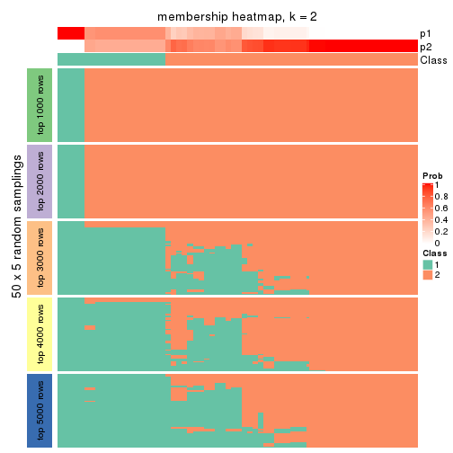
membership_heatmap(res, k = 3)
membership_heatmap(res, k = 4)
membership_heatmap(res, k = 5)
membership_heatmap(res, k = 6)
As soon as we have had the classes for columns, we can look for signatures which are significantly different between classes which can be candidate marks for certain classes. Following are the heatmaps for signatures.
Signature heatmaps where rows are scaled:
get_signatures(res, k = 2)
get_signatures(res, k = 3)
get_signatures(res, k = 4)
get_signatures(res, k = 5)
get_signatures(res, k = 6)
Signature heatmaps where rows are not scaled:
get_signatures(res, k = 2, scale_rows = FALSE)
get_signatures(res, k = 3, scale_rows = FALSE)
get_signatures(res, k = 4, scale_rows = FALSE)
get_signatures(res, k = 5, scale_rows = FALSE)
get_signatures(res, k = 6, scale_rows = FALSE)

Compare the overlap of signatures from different k:
compare_signatures(res)
get_signature() returns a data frame invisibly. TO get the list of signatures, the function
call should be assigned to a variable explicitly. In following code, if plot argument is set
to FALSE, no heatmap is plotted while only the differential analysis is performed.
# code only for demonstration
tb = get_signature(res, k = ..., plot = FALSE)
An example of the output of tb is:
#> which_row fdr mean_1 mean_2 scaled_mean_1 scaled_mean_2 km
#> 1 38 0.042760348 8.373488 9.131774 -0.5533452 0.5164555 1
#> 2 40 0.018707592 7.106213 8.469186 -0.6173731 0.5762149 1
#> 3 55 0.019134737 10.221463 11.207825 -0.6159697 0.5749050 1
#> 4 59 0.006059896 5.921854 7.869574 -0.6899429 0.6439467 1
#> 5 60 0.018055526 8.928898 10.211722 -0.6204761 0.5791110 1
#> 6 98 0.009384629 15.714769 14.887706 0.6635654 -0.6193277 2
...
The columns in tb are:
which_row: row indices corresponding to the input matrix.fdr: FDR for the differential test. mean_x: The mean value in group x.scaled_mean_x: The mean value in group x after rows are scaled.km: Row groups if k-means clustering is applied to rows.UMAP plot which shows how samples are separated.
dimension_reduction(res, k = 2, method = "UMAP")
dimension_reduction(res, k = 3, method = "UMAP")
dimension_reduction(res, k = 4, method = "UMAP")
dimension_reduction(res, k = 5, method = "UMAP")
dimension_reduction(res, k = 6, method = "UMAP")
Following heatmap shows how subgroups are split when increasing k:
collect_classes(res)
If matrix rows can be associated to genes, consider to use GO_Enrichment(res,
...) to perform function enrichment for the signature genes.
The object with results only for a single top-value method and a single partition method can be extracted as:
res = res_list["CV", "kmeans"]
# you can also extract it by
# res = res_list["CV:kmeans"]
A summary of res and all the functions that can be applied to it:
res
#> A 'ConsensusPartition' object with k = 2, 3, 4, 5, 6.
#> On a matrix with 16510 rows and 133 columns.
#> Top rows (1000, 2000, 3000, 4000, 5000) are extracted by 'CV' method.
#> Subgroups are detected by 'kmeans' method.
#> Performed in total 1250 partitions by row resampling.
#> Best k for subgroups seems to be 3.
#>
#> Following methods can be applied to this 'ConsensusPartition' object:
#> [1] "cola_report" "collect_classes" "collect_plots"
#> [4] "collect_stats" "colnames" "compare_signatures"
#> [7] "consensus_heatmap" "dimension_reduction" "functional_enrichment"
#> [10] "get_anno_col" "get_anno" "get_classes"
#> [13] "get_consensus" "get_matrix" "get_membership"
#> [16] "get_param" "get_signatures" "get_stats"
#> [19] "is_best_k" "is_stable_k" "membership_heatmap"
#> [22] "ncol" "nrow" "plot_ecdf"
#> [25] "rownames" "select_partition_number" "show"
#> [28] "suggest_best_k" "test_to_known_factors"
collect_plots() function collects all the plots made from res for all k (number of partitions)
into one single page to provide an easy and fast comparison between different k.
collect_plots(res)
The plots are:
k and the heatmap of
predicted classes for each k.k.k.k.All the plots in panels can be made by individual functions and they are plotted later in this section.
select_partition_number() produces several plots showing different
statistics for choosing “optimized” k. There are following statistics:
k;k, the area increased is defined as \(A_k - A_{k-1}\).The detailed explanations of these statistics can be found in the cola vignette.
Generally speaking, lower PAC score, higher mean silhouette score or higher
concordance corresponds to better partition. Rand index and Jaccard index
measure how similar the current partition is compared to partition with k-1.
If they are too similar, we won't accept k is better than k-1.
select_partition_number(res)
The numeric values for all these statistics can be obtained by get_stats().
get_stats(res)
#> k 1-PAC mean_silhouette concordance area_increased Rand Jaccard
#> 2 2 0.483 0.813 0.865 0.3948 0.535 0.535
#> 3 3 0.338 0.656 0.760 0.4518 0.762 0.606
#> 4 4 0.414 0.581 0.756 0.1811 0.830 0.627
#> 5 5 0.500 0.538 0.669 0.0912 0.903 0.697
#> 6 6 0.556 0.548 0.712 0.0535 0.889 0.597
suggest_best_k() suggests the best \(k\) based on these statistics. The rules are as follows:
NA.suggest_best_k(res)
#> [1] 3
Following shows the table of the partitions (You need to click the show/hide
code output link to see it). The membership matrix (columns with name p*)
is inferred by
clue::cl_consensus()
function with the SE method. Basically the value in the membership matrix
represents the probability to belong to a certain group. The finall class
label for an item is determined with the group with highest probability it
belongs to.
In get_classes() function, the entropy is calculated from the membership
matrix and the silhouette score is calculated from the consensus matrix.
cbind(get_classes(res, k = 2), get_membership(res, k = 2))
#> class entropy silhouette p1 p2
#> ERR946976 1 0.8661 0.851 0.712 0.288
#> ERR947001 1 0.8661 0.851 0.712 0.288
#> ERR946975 2 0.1414 0.906 0.020 0.980
#> ERR947000 2 0.1414 0.906 0.020 0.980
#> ERR946972 1 0.2778 0.701 0.952 0.048
#> ERR946997 1 0.2778 0.701 0.952 0.048
#> ERR946986 2 0.2423 0.894 0.040 0.960
#> ERR947011 2 0.2423 0.894 0.040 0.960
#> ERR946977 2 0.0938 0.907 0.012 0.988
#> ERR947002 2 0.0938 0.907 0.012 0.988
#> ERR946974 2 0.1633 0.903 0.024 0.976
#> ERR946999 2 0.1633 0.903 0.024 0.976
#> ERR946971 1 0.0672 0.718 0.992 0.008
#> ERR946996 1 0.0672 0.718 0.992 0.008
#> ERR946992 2 0.0938 0.906 0.012 0.988
#> ERR947017 2 0.0938 0.906 0.012 0.988
#> ERR946984 2 0.0938 0.907 0.012 0.988
#> ERR947009 2 0.0938 0.907 0.012 0.988
#> ERR946987 2 0.1184 0.905 0.016 0.984
#> ERR947012 2 0.1184 0.905 0.016 0.984
#> ERR946991 2 0.0938 0.906 0.012 0.988
#> ERR947016 2 0.0938 0.906 0.012 0.988
#> ERR946983 2 0.1633 0.906 0.024 0.976
#> ERR947008 2 0.1633 0.906 0.024 0.976
#> ERR946970 2 0.9963 -0.289 0.464 0.536
#> ERR946995 2 0.9963 -0.289 0.464 0.536
#> ERR946969 2 0.3274 0.879 0.060 0.940
#> ERR946994 2 0.3274 0.879 0.060 0.940
#> ERR946982 2 0.0938 0.907 0.012 0.988
#> ERR947007 2 0.0938 0.907 0.012 0.988
#> ERR946988 2 0.0938 0.907 0.012 0.988
#> ERR947013 2 0.0938 0.907 0.012 0.988
#> ERR946985 2 0.1184 0.905 0.016 0.984
#> ERR947010 2 0.1184 0.905 0.016 0.984
#> ERR946989 2 0.1633 0.903 0.024 0.976
#> ERR947014 2 0.1633 0.903 0.024 0.976
#> ERR946968 1 0.8386 0.858 0.732 0.268
#> ERR946993 1 0.8386 0.858 0.732 0.268
#> ERR946990 2 0.8909 0.411 0.308 0.692
#> ERR947015 2 0.8909 0.411 0.308 0.692
#> ERR946980 2 0.2236 0.897 0.036 0.964
#> ERR947005 2 0.2236 0.897 0.036 0.964
#> ERR946978 1 0.8016 0.861 0.756 0.244
#> ERR947003 1 0.8016 0.861 0.756 0.244
#> ERR946979 2 0.1184 0.905 0.016 0.984
#> ERR947004 2 0.1184 0.905 0.016 0.984
#> ERR946957 1 0.0672 0.718 0.992 0.008
#> ERR946962 1 0.0672 0.718 0.992 0.008
#> ERR946958 1 0.8016 0.861 0.756 0.244
#> ERR946963 1 0.8016 0.861 0.756 0.244
#> ERR946959 1 0.8016 0.861 0.756 0.244
#> ERR946964 1 0.8016 0.861 0.756 0.244
#> ERR946967 1 0.2043 0.710 0.968 0.032
#> ERR862690 1 0.2043 0.710 0.968 0.032
#> ERR914278 2 0.0376 0.908 0.004 0.996
#> ERR914314 2 0.0376 0.908 0.004 0.996
#> ERR914279 1 0.8661 0.853 0.712 0.288
#> ERR914315 1 0.8661 0.853 0.712 0.288
#> ERR914280 2 0.0000 0.908 0.000 1.000
#> ERR914316 2 0.0000 0.908 0.000 1.000
#> ERR914281 2 0.1184 0.905 0.016 0.984
#> ERR914317 2 0.1184 0.905 0.016 0.984
#> ERR914282 2 0.1633 0.906 0.024 0.976
#> ERR914318 2 0.1633 0.906 0.024 0.976
#> ERR914283 1 0.7950 0.860 0.760 0.240
#> ERR914319 1 0.7950 0.860 0.760 0.240
#> ERR914284 1 0.9522 0.752 0.628 0.372
#> ERR914320 1 0.9522 0.752 0.628 0.372
#> ERR914285 2 0.0938 0.908 0.012 0.988
#> ERR914321 2 0.0938 0.908 0.012 0.988
#> ERR914286 2 0.0000 0.908 0.000 1.000
#> ERR914322 2 0.0000 0.908 0.000 1.000
#> ERR914287 1 0.8713 0.851 0.708 0.292
#> ERR914323 1 0.8713 0.851 0.708 0.292
#> ERR914288 2 0.3274 0.875 0.060 0.940
#> ERR914324 2 0.3274 0.875 0.060 0.940
#> ERR914289 2 0.8713 0.433 0.292 0.708
#> ERR914290 1 0.9170 0.820 0.668 0.332
#> ERR914326 1 0.9170 0.820 0.668 0.332
#> ERR914291 2 0.1414 0.906 0.020 0.980
#> ERR914327 2 0.1414 0.906 0.020 0.980
#> ERR914292 2 0.8813 0.434 0.300 0.700
#> ERR914328 2 0.8955 0.398 0.312 0.688
#> ERR914293 1 0.9129 0.824 0.672 0.328
#> ERR914329 1 0.9129 0.824 0.672 0.328
#> ERR914294 2 0.0938 0.907 0.012 0.988
#> ERR914330 2 0.0938 0.907 0.012 0.988
#> ERR914295 1 0.9248 0.804 0.660 0.340
#> ERR914331 1 0.9248 0.804 0.660 0.340
#> ERR914296 1 0.7950 0.860 0.760 0.240
#> ERR914332 1 0.7950 0.860 0.760 0.240
#> ERR914297 1 0.8386 0.812 0.732 0.268
#> ERR914333 1 0.8386 0.812 0.732 0.268
#> ERR914298 1 0.7815 0.857 0.768 0.232
#> ERR914334 1 0.7815 0.857 0.768 0.232
#> ERR914299 2 0.1414 0.906 0.020 0.980
#> ERR914335 2 0.1414 0.906 0.020 0.980
#> ERR914300 1 0.9552 0.751 0.624 0.376
#> ERR914336 1 0.9552 0.751 0.624 0.376
#> ERR914301 2 0.4690 0.834 0.100 0.900
#> ERR914337 2 0.4690 0.834 0.100 0.900
#> ERR914302 2 0.0938 0.907 0.012 0.988
#> ERR914338 2 0.0938 0.907 0.012 0.988
#> ERR914303 2 0.1633 0.906 0.024 0.976
#> ERR914339 2 0.1633 0.906 0.024 0.976
#> ERR914304 2 0.1184 0.907 0.016 0.984
#> ERR914340 2 0.1184 0.907 0.016 0.984
#> ERR914305 2 0.1633 0.906 0.024 0.976
#> ERR914341 2 0.1633 0.906 0.024 0.976
#> ERR914306 2 0.4298 0.830 0.088 0.912
#> ERR914342 2 0.4298 0.830 0.088 0.912
#> ERR914307 2 0.8861 0.412 0.304 0.696
#> ERR914343 2 0.8861 0.412 0.304 0.696
#> ERR914308 1 0.9129 0.824 0.672 0.328
#> ERR914344 1 0.9129 0.824 0.672 0.328
#> ERR914309 1 0.9129 0.824 0.672 0.328
#> ERR914345 1 0.9129 0.824 0.672 0.328
#> ERR914310 2 0.8955 0.398 0.312 0.688
#> ERR914346 2 0.8955 0.398 0.312 0.688
#> ERR914311 2 0.1184 0.907 0.016 0.984
#> ERR914347 2 0.1184 0.907 0.016 0.984
#> ERR914312 2 0.1414 0.906 0.020 0.980
#> ERR914348 2 0.1414 0.906 0.020 0.980
#> ERR914313 2 0.0938 0.906 0.012 0.988
#> ERR914349 2 0.0938 0.906 0.012 0.988
#> ERR946960 1 0.7950 0.860 0.760 0.240
#> ERR946965 1 0.7950 0.860 0.760 0.240
#> ERR946966 2 0.2603 0.894 0.044 0.956
#> ERR946973 1 0.0672 0.718 0.992 0.008
#> ERR946998 1 0.0672 0.718 0.992 0.008
#> ERR946981 2 0.1633 0.906 0.024 0.976
#> ERR947006 2 0.1633 0.906 0.024 0.976
#> ERR914325 2 0.8713 0.433 0.292 0.708
cbind(get_classes(res, k = 3), get_membership(res, k = 3))
#> class entropy silhouette p1 p2 p3
#> ERR946976 1 0.269 0.729 0.932 0.036 0.032
#> ERR947001 1 0.269 0.729 0.932 0.036 0.032
#> ERR946975 2 0.741 0.661 0.204 0.692 0.104
#> ERR947000 2 0.741 0.661 0.204 0.692 0.104
#> ERR946972 3 0.582 0.857 0.236 0.020 0.744
#> ERR946997 3 0.582 0.857 0.236 0.020 0.744
#> ERR946986 2 0.655 0.188 0.412 0.580 0.008
#> ERR947011 2 0.655 0.188 0.412 0.580 0.008
#> ERR946977 2 0.343 0.735 0.064 0.904 0.032
#> ERR947002 2 0.343 0.735 0.064 0.904 0.032
#> ERR946974 2 0.854 0.455 0.260 0.596 0.144
#> ERR946999 2 0.854 0.455 0.260 0.596 0.144
#> ERR946971 3 0.608 0.915 0.388 0.000 0.612
#> ERR946996 3 0.608 0.915 0.388 0.000 0.612
#> ERR946992 2 0.507 0.687 0.004 0.772 0.224
#> ERR947017 2 0.507 0.687 0.004 0.772 0.224
#> ERR946984 2 0.379 0.738 0.048 0.892 0.060
#> ERR947009 2 0.379 0.738 0.048 0.892 0.060
#> ERR946987 2 0.552 0.651 0.004 0.728 0.268
#> ERR947012 2 0.552 0.651 0.004 0.728 0.268
#> ERR946991 2 0.319 0.723 0.000 0.888 0.112
#> ERR947016 2 0.319 0.723 0.000 0.888 0.112
#> ERR946983 2 0.658 0.667 0.192 0.740 0.068
#> ERR947008 2 0.658 0.667 0.192 0.740 0.068
#> ERR946970 1 0.749 0.620 0.668 0.248 0.084
#> ERR946995 1 0.749 0.620 0.668 0.248 0.084
#> ERR946969 1 0.707 0.187 0.500 0.480 0.020
#> ERR946994 1 0.707 0.187 0.500 0.480 0.020
#> ERR946982 2 0.502 0.691 0.004 0.776 0.220
#> ERR947007 2 0.502 0.691 0.004 0.776 0.220
#> ERR946988 2 0.303 0.739 0.048 0.920 0.032
#> ERR947013 2 0.303 0.739 0.048 0.920 0.032
#> ERR946985 2 0.566 0.648 0.004 0.712 0.284
#> ERR947010 2 0.566 0.648 0.004 0.712 0.284
#> ERR946989 2 0.854 0.442 0.260 0.596 0.144
#> ERR947014 2 0.854 0.442 0.260 0.596 0.144
#> ERR946968 1 0.331 0.706 0.908 0.028 0.064
#> ERR946993 1 0.331 0.706 0.908 0.028 0.064
#> ERR946990 1 0.726 0.529 0.624 0.332 0.044
#> ERR947015 1 0.726 0.529 0.624 0.332 0.044
#> ERR946980 2 0.620 0.420 0.336 0.656 0.008
#> ERR947005 2 0.620 0.420 0.336 0.656 0.008
#> ERR946978 1 0.177 0.721 0.960 0.024 0.016
#> ERR947003 1 0.177 0.721 0.960 0.024 0.016
#> ERR946979 2 0.502 0.661 0.000 0.760 0.240
#> ERR947004 2 0.502 0.661 0.000 0.760 0.240
#> ERR946957 3 0.608 0.915 0.388 0.000 0.612
#> ERR946962 3 0.608 0.915 0.388 0.000 0.612
#> ERR946958 1 0.255 0.699 0.936 0.024 0.040
#> ERR946963 1 0.255 0.699 0.936 0.024 0.040
#> ERR946959 1 0.243 0.703 0.940 0.024 0.036
#> ERR946964 1 0.243 0.703 0.940 0.024 0.036
#> ERR946967 3 0.632 0.885 0.276 0.024 0.700
#> ERR862690 3 0.632 0.885 0.276 0.024 0.700
#> ERR914278 2 0.434 0.721 0.016 0.848 0.136
#> ERR914314 2 0.434 0.721 0.016 0.848 0.136
#> ERR914279 1 0.153 0.743 0.960 0.040 0.000
#> ERR914315 1 0.153 0.743 0.960 0.040 0.000
#> ERR914280 2 0.506 0.724 0.028 0.816 0.156
#> ERR914316 2 0.506 0.724 0.028 0.816 0.156
#> ERR914281 2 0.552 0.650 0.004 0.728 0.268
#> ERR914317 2 0.552 0.650 0.004 0.728 0.268
#> ERR914282 2 0.658 0.667 0.192 0.740 0.068
#> ERR914318 2 0.658 0.667 0.192 0.740 0.068
#> ERR914283 1 0.277 0.687 0.928 0.024 0.048
#> ERR914319 1 0.277 0.687 0.928 0.024 0.048
#> ERR914284 1 0.440 0.736 0.864 0.092 0.044
#> ERR914320 1 0.440 0.736 0.864 0.092 0.044
#> ERR914285 2 0.757 0.629 0.128 0.688 0.184
#> ERR914321 2 0.757 0.629 0.128 0.688 0.184
#> ERR914286 2 0.444 0.732 0.052 0.864 0.084
#> ERR914322 2 0.444 0.732 0.052 0.864 0.084
#> ERR914287 1 0.186 0.748 0.948 0.052 0.000
#> ERR914323 1 0.186 0.748 0.948 0.052 0.000
#> ERR914288 1 0.753 0.300 0.532 0.428 0.040
#> ERR914324 1 0.753 0.300 0.532 0.428 0.040
#> ERR914289 1 0.790 0.461 0.576 0.356 0.068
#> ERR914290 1 0.216 0.751 0.936 0.064 0.000
#> ERR914326 1 0.216 0.751 0.936 0.064 0.000
#> ERR914291 2 0.605 0.658 0.204 0.756 0.040
#> ERR914327 2 0.605 0.658 0.204 0.756 0.040
#> ERR914292 1 0.719 0.459 0.588 0.380 0.032
#> ERR914328 1 0.719 0.459 0.588 0.380 0.032
#> ERR914293 1 0.196 0.750 0.944 0.056 0.000
#> ERR914329 1 0.196 0.750 0.944 0.056 0.000
#> ERR914294 2 0.491 0.696 0.008 0.796 0.196
#> ERR914330 2 0.491 0.696 0.008 0.796 0.196
#> ERR914295 1 0.354 0.743 0.888 0.100 0.012
#> ERR914331 1 0.354 0.743 0.888 0.100 0.012
#> ERR914296 1 0.277 0.687 0.928 0.024 0.048
#> ERR914332 1 0.277 0.687 0.928 0.024 0.048
#> ERR914297 1 0.793 0.542 0.664 0.168 0.168
#> ERR914333 1 0.793 0.542 0.664 0.168 0.168
#> ERR914298 1 0.290 0.662 0.920 0.016 0.064
#> ERR914334 1 0.290 0.662 0.920 0.016 0.064
#> ERR914299 2 0.605 0.658 0.204 0.756 0.040
#> ERR914335 2 0.605 0.658 0.204 0.756 0.040
#> ERR914300 1 0.377 0.744 0.888 0.084 0.028
#> ERR914336 1 0.377 0.744 0.888 0.084 0.028
#> ERR914301 2 0.846 0.619 0.148 0.608 0.244
#> ERR914337 2 0.846 0.619 0.148 0.608 0.244
#> ERR914302 2 0.520 0.685 0.004 0.760 0.236
#> ERR914338 2 0.520 0.685 0.004 0.760 0.236
#> ERR914303 2 0.666 0.666 0.192 0.736 0.072
#> ERR914339 2 0.666 0.666 0.192 0.736 0.072
#> ERR914304 2 0.602 0.704 0.140 0.784 0.076
#> ERR914340 2 0.602 0.704 0.140 0.784 0.076
#> ERR914305 2 0.666 0.666 0.192 0.736 0.072
#> ERR914341 2 0.666 0.666 0.192 0.736 0.072
#> ERR914306 2 0.669 0.526 0.016 0.612 0.372
#> ERR914342 2 0.669 0.526 0.016 0.612 0.372
#> ERR914307 1 0.697 0.515 0.616 0.356 0.028
#> ERR914343 1 0.697 0.515 0.616 0.356 0.028
#> ERR914308 1 0.207 0.751 0.940 0.060 0.000
#> ERR914344 1 0.207 0.751 0.940 0.060 0.000
#> ERR914309 1 0.207 0.751 0.940 0.060 0.000
#> ERR914345 1 0.207 0.751 0.940 0.060 0.000
#> ERR914310 1 0.690 0.621 0.684 0.268 0.048
#> ERR914346 1 0.690 0.621 0.684 0.268 0.048
#> ERR914311 2 0.552 0.712 0.120 0.812 0.068
#> ERR914347 2 0.552 0.712 0.120 0.812 0.068
#> ERR914312 2 0.685 0.659 0.208 0.720 0.072
#> ERR914348 2 0.685 0.659 0.208 0.720 0.072
#> ERR914313 2 0.548 0.653 0.004 0.732 0.264
#> ERR914349 2 0.548 0.653 0.004 0.732 0.264
#> ERR946960 1 0.288 0.689 0.924 0.024 0.052
#> ERR946965 1 0.288 0.689 0.924 0.024 0.052
#> ERR946966 2 0.765 0.227 0.400 0.552 0.048
#> ERR946973 3 0.608 0.915 0.388 0.000 0.612
#> ERR946998 3 0.608 0.915 0.388 0.000 0.612
#> ERR946981 2 0.651 0.679 0.180 0.748 0.072
#> ERR947006 2 0.651 0.679 0.180 0.748 0.072
#> ERR914325 1 0.790 0.461 0.576 0.356 0.068
cbind(get_classes(res, k = 4), get_membership(res, k = 4))
#> class entropy silhouette p1 p2 p3 p4
#> ERR946976 1 0.2010 0.7616 0.932 0.004 0.004 0.060
#> ERR947001 1 0.2010 0.7616 0.932 0.004 0.004 0.060
#> ERR946975 2 0.5678 0.4431 0.068 0.704 0.004 0.224
#> ERR947000 2 0.5678 0.4431 0.068 0.704 0.004 0.224
#> ERR946972 3 0.3334 0.9046 0.060 0.008 0.884 0.048
#> ERR946997 3 0.3334 0.9046 0.060 0.008 0.884 0.048
#> ERR946986 2 0.6987 0.4548 0.272 0.568 0.000 0.160
#> ERR947011 2 0.6987 0.4548 0.272 0.568 0.000 0.160
#> ERR946977 2 0.6379 0.4508 0.068 0.632 0.012 0.288
#> ERR947002 2 0.6379 0.4508 0.068 0.632 0.012 0.288
#> ERR946974 4 0.6780 0.4211 0.152 0.224 0.004 0.620
#> ERR946999 4 0.6780 0.4211 0.152 0.224 0.004 0.620
#> ERR946971 3 0.3208 0.9530 0.148 0.000 0.848 0.004
#> ERR946996 3 0.3208 0.9530 0.148 0.000 0.848 0.004
#> ERR946992 4 0.5773 0.6537 0.000 0.336 0.044 0.620
#> ERR947017 4 0.5773 0.6537 0.000 0.336 0.044 0.620
#> ERR946984 2 0.5644 0.5005 0.028 0.724 0.036 0.212
#> ERR947009 2 0.5644 0.5005 0.028 0.724 0.036 0.212
#> ERR946987 4 0.5904 0.6774 0.004 0.236 0.076 0.684
#> ERR947012 4 0.5904 0.6774 0.004 0.236 0.076 0.684
#> ERR946991 2 0.4817 0.4404 0.004 0.768 0.040 0.188
#> ERR947016 2 0.4817 0.4404 0.004 0.768 0.040 0.188
#> ERR946983 2 0.2238 0.6489 0.072 0.920 0.004 0.004
#> ERR947008 2 0.2238 0.6489 0.072 0.920 0.004 0.004
#> ERR946970 1 0.7613 0.2256 0.440 0.140 0.012 0.408
#> ERR946995 1 0.7613 0.2256 0.440 0.140 0.012 0.408
#> ERR946969 2 0.7329 0.3785 0.296 0.516 0.000 0.188
#> ERR946994 2 0.7329 0.3785 0.296 0.516 0.000 0.188
#> ERR946982 4 0.5398 0.7035 0.008 0.304 0.020 0.668
#> ERR947007 4 0.5398 0.7035 0.008 0.304 0.020 0.668
#> ERR946988 2 0.5553 0.4685 0.036 0.700 0.012 0.252
#> ERR947013 2 0.5553 0.4685 0.036 0.700 0.012 0.252
#> ERR946985 4 0.5398 0.6982 0.004 0.200 0.064 0.732
#> ERR947010 4 0.5398 0.6982 0.004 0.200 0.064 0.732
#> ERR946989 4 0.6997 0.4210 0.156 0.200 0.016 0.628
#> ERR947014 4 0.6997 0.4210 0.156 0.200 0.016 0.628
#> ERR946968 1 0.3906 0.7294 0.848 0.020 0.020 0.112
#> ERR946993 1 0.3906 0.7294 0.848 0.020 0.020 0.112
#> ERR946990 1 0.8001 0.3066 0.484 0.268 0.016 0.232
#> ERR947015 1 0.8001 0.3066 0.484 0.268 0.016 0.232
#> ERR946980 2 0.6437 0.5234 0.184 0.648 0.000 0.168
#> ERR947005 2 0.6437 0.5234 0.184 0.648 0.000 0.168
#> ERR946978 1 0.1631 0.7559 0.956 0.020 0.016 0.008
#> ERR947003 1 0.1631 0.7559 0.956 0.020 0.016 0.008
#> ERR946979 2 0.6583 -0.1273 0.000 0.528 0.084 0.388
#> ERR947004 2 0.6583 -0.1273 0.000 0.528 0.084 0.388
#> ERR946957 3 0.3208 0.9530 0.148 0.000 0.848 0.004
#> ERR946962 3 0.3208 0.9530 0.148 0.000 0.848 0.004
#> ERR946958 1 0.0712 0.7650 0.984 0.004 0.008 0.004
#> ERR946963 1 0.0712 0.7650 0.984 0.004 0.008 0.004
#> ERR946959 1 0.1631 0.7559 0.956 0.020 0.016 0.008
#> ERR946964 1 0.1631 0.7559 0.956 0.020 0.016 0.008
#> ERR946967 3 0.2998 0.9303 0.080 0.004 0.892 0.024
#> ERR862690 3 0.2998 0.9303 0.080 0.004 0.892 0.024
#> ERR914278 4 0.5230 0.6069 0.008 0.368 0.004 0.620
#> ERR914314 4 0.5230 0.6069 0.008 0.368 0.004 0.620
#> ERR914279 1 0.0524 0.7686 0.988 0.008 0.004 0.000
#> ERR914315 1 0.0524 0.7686 0.988 0.008 0.004 0.000
#> ERR914280 4 0.5795 0.4835 0.016 0.460 0.008 0.516
#> ERR914316 4 0.5795 0.4835 0.016 0.460 0.008 0.516
#> ERR914281 4 0.5870 0.6756 0.004 0.240 0.072 0.684
#> ERR914317 4 0.5870 0.6756 0.004 0.240 0.072 0.684
#> ERR914282 2 0.1978 0.6497 0.068 0.928 0.004 0.000
#> ERR914318 2 0.1978 0.6497 0.068 0.928 0.004 0.000
#> ERR914283 1 0.1721 0.7479 0.952 0.008 0.028 0.012
#> ERR914319 1 0.1721 0.7479 0.952 0.008 0.028 0.012
#> ERR914284 1 0.4882 0.7025 0.776 0.056 0.004 0.164
#> ERR914320 1 0.4882 0.7025 0.776 0.056 0.004 0.164
#> ERR914285 4 0.5546 0.5815 0.064 0.188 0.012 0.736
#> ERR914321 4 0.5546 0.5815 0.064 0.188 0.012 0.736
#> ERR914286 2 0.5444 -0.1564 0.016 0.560 0.000 0.424
#> ERR914322 2 0.5444 -0.1564 0.016 0.560 0.000 0.424
#> ERR914287 1 0.1396 0.7699 0.960 0.032 0.004 0.004
#> ERR914323 1 0.1396 0.7699 0.960 0.032 0.004 0.004
#> ERR914288 2 0.7517 0.0740 0.388 0.428 0.000 0.184
#> ERR914324 2 0.7517 0.0740 0.388 0.428 0.000 0.184
#> ERR914289 1 0.7678 0.2943 0.456 0.192 0.004 0.348
#> ERR914290 1 0.1543 0.7713 0.956 0.032 0.004 0.008
#> ERR914326 1 0.1543 0.7713 0.956 0.032 0.004 0.008
#> ERR914291 2 0.4104 0.6404 0.088 0.832 0.000 0.080
#> ERR914327 2 0.4104 0.6404 0.088 0.832 0.000 0.080
#> ERR914292 1 0.7476 0.1305 0.460 0.356 0.000 0.184
#> ERR914328 1 0.7476 0.1305 0.460 0.356 0.000 0.184
#> ERR914293 1 0.1396 0.7699 0.960 0.032 0.004 0.004
#> ERR914329 1 0.1396 0.7699 0.960 0.032 0.004 0.004
#> ERR914294 4 0.4634 0.7106 0.004 0.280 0.004 0.712
#> ERR914330 4 0.4634 0.7106 0.004 0.280 0.004 0.712
#> ERR914295 1 0.3464 0.7487 0.868 0.056 0.000 0.076
#> ERR914331 1 0.3464 0.7487 0.868 0.056 0.000 0.076
#> ERR914296 1 0.1958 0.7469 0.944 0.020 0.028 0.008
#> ERR914332 1 0.1958 0.7469 0.944 0.020 0.028 0.008
#> ERR914297 1 0.8939 0.0637 0.388 0.372 0.096 0.144
#> ERR914333 1 0.8939 0.0637 0.388 0.372 0.096 0.144
#> ERR914298 1 0.2616 0.7338 0.920 0.016 0.036 0.028
#> ERR914334 1 0.2616 0.7338 0.920 0.016 0.036 0.028
#> ERR914299 2 0.4300 0.6358 0.088 0.820 0.000 0.092
#> ERR914335 2 0.4300 0.6358 0.088 0.820 0.000 0.092
#> ERR914300 1 0.3312 0.7531 0.876 0.052 0.000 0.072
#> ERR914336 1 0.3312 0.7531 0.876 0.052 0.000 0.072
#> ERR914301 2 0.6321 0.4560 0.032 0.712 0.112 0.144
#> ERR914337 2 0.6321 0.4560 0.032 0.712 0.112 0.144
#> ERR914302 4 0.5226 0.7097 0.008 0.276 0.020 0.696
#> ERR914338 4 0.5226 0.7097 0.008 0.276 0.020 0.696
#> ERR914303 2 0.2456 0.6467 0.068 0.916 0.008 0.008
#> ERR914339 2 0.2456 0.6467 0.068 0.916 0.008 0.008
#> ERR914304 2 0.2861 0.6352 0.048 0.908 0.012 0.032
#> ERR914340 2 0.2861 0.6352 0.048 0.908 0.012 0.032
#> ERR914305 2 0.2310 0.6476 0.068 0.920 0.004 0.008
#> ERR914341 2 0.2310 0.6476 0.068 0.920 0.004 0.008
#> ERR914306 2 0.7318 -0.0549 0.000 0.476 0.160 0.364
#> ERR914342 2 0.7318 -0.0549 0.000 0.476 0.160 0.364
#> ERR914307 1 0.7072 0.3999 0.560 0.268 0.000 0.172
#> ERR914343 1 0.7072 0.3999 0.560 0.268 0.000 0.172
#> ERR914308 1 0.1396 0.7714 0.960 0.032 0.004 0.004
#> ERR914344 1 0.1396 0.7714 0.960 0.032 0.004 0.004
#> ERR914309 1 0.1004 0.7722 0.972 0.024 0.000 0.004
#> ERR914345 1 0.1004 0.7722 0.972 0.024 0.000 0.004
#> ERR914310 1 0.6850 0.4999 0.600 0.188 0.000 0.212
#> ERR914346 1 0.6850 0.4999 0.600 0.188 0.000 0.212
#> ERR914311 2 0.2207 0.6365 0.040 0.932 0.004 0.024
#> ERR914347 2 0.2207 0.6365 0.040 0.932 0.004 0.024
#> ERR914312 2 0.5180 0.4996 0.064 0.740 0.000 0.196
#> ERR914348 2 0.5180 0.4996 0.064 0.740 0.000 0.196
#> ERR914313 4 0.5873 0.6740 0.004 0.232 0.076 0.688
#> ERR914349 4 0.5873 0.6740 0.004 0.232 0.076 0.688
#> ERR946960 1 0.1833 0.7522 0.944 0.000 0.032 0.024
#> ERR946965 1 0.1833 0.7522 0.944 0.000 0.032 0.024
#> ERR946966 2 0.4224 0.6197 0.144 0.812 0.000 0.044
#> ERR946973 3 0.3208 0.9530 0.148 0.000 0.848 0.004
#> ERR946998 3 0.3208 0.9530 0.148 0.000 0.848 0.004
#> ERR946981 2 0.3081 0.6274 0.044 0.900 0.016 0.040
#> ERR947006 2 0.3081 0.6274 0.044 0.900 0.016 0.040
#> ERR914325 1 0.7678 0.2943 0.456 0.192 0.004 0.348
cbind(get_classes(res, k = 5), get_membership(res, k = 5))
#> class entropy silhouette p1 p2 p3 p4 p5
#> ERR946976 1 0.4120 0.6932 0.784 0.020 0.016 0.004 0.176
#> ERR947001 1 0.4120 0.6932 0.784 0.020 0.016 0.004 0.176
#> ERR946975 2 0.6535 0.3951 0.032 0.608 0.008 0.132 0.220
#> ERR947000 2 0.6535 0.3951 0.032 0.608 0.008 0.132 0.220
#> ERR946972 3 0.3434 0.8856 0.008 0.016 0.860 0.032 0.084
#> ERR946997 3 0.3434 0.8856 0.008 0.016 0.860 0.032 0.084
#> ERR946986 2 0.7649 0.1443 0.184 0.468 0.012 0.052 0.284
#> ERR947011 2 0.7626 0.1570 0.180 0.472 0.012 0.052 0.284
#> ERR946977 2 0.7462 0.3459 0.048 0.480 0.008 0.176 0.288
#> ERR947002 2 0.7462 0.3459 0.048 0.480 0.008 0.176 0.288
#> ERR946974 5 0.7321 0.2373 0.096 0.096 0.000 0.364 0.444
#> ERR946999 5 0.7321 0.2373 0.096 0.096 0.000 0.364 0.444
#> ERR946971 3 0.2284 0.9321 0.096 0.000 0.896 0.004 0.004
#> ERR946996 3 0.2284 0.9321 0.096 0.000 0.896 0.004 0.004
#> ERR946992 4 0.5995 0.6070 0.000 0.220 0.024 0.636 0.120
#> ERR947017 4 0.5995 0.6070 0.000 0.220 0.024 0.636 0.120
#> ERR946984 2 0.6254 0.4893 0.004 0.604 0.016 0.136 0.240
#> ERR947009 2 0.6254 0.4893 0.004 0.604 0.016 0.136 0.240
#> ERR946987 4 0.2295 0.6255 0.000 0.088 0.008 0.900 0.004
#> ERR947012 4 0.2295 0.6255 0.000 0.088 0.008 0.900 0.004
#> ERR946991 2 0.4846 0.5229 0.000 0.756 0.020 0.116 0.108
#> ERR947016 2 0.4846 0.5229 0.000 0.756 0.020 0.116 0.108
#> ERR946983 2 0.1074 0.6380 0.016 0.968 0.004 0.012 0.000
#> ERR947008 2 0.1074 0.6380 0.016 0.968 0.004 0.012 0.000
#> ERR946970 5 0.7373 0.5519 0.264 0.052 0.004 0.184 0.496
#> ERR946995 5 0.7373 0.5519 0.264 0.052 0.004 0.184 0.496
#> ERR946969 2 0.6740 0.1625 0.172 0.528 0.000 0.024 0.276
#> ERR946994 2 0.6740 0.1625 0.172 0.528 0.000 0.024 0.276
#> ERR946982 4 0.5741 0.6042 0.000 0.156 0.004 0.636 0.204
#> ERR947007 4 0.5741 0.6042 0.000 0.156 0.004 0.636 0.204
#> ERR946988 2 0.6518 0.4705 0.008 0.568 0.008 0.184 0.232
#> ERR947013 2 0.6518 0.4705 0.008 0.568 0.008 0.184 0.232
#> ERR946985 4 0.3563 0.6208 0.000 0.060 0.008 0.840 0.092
#> ERR947010 4 0.3563 0.6208 0.000 0.060 0.008 0.840 0.092
#> ERR946989 5 0.7118 0.2978 0.100 0.068 0.004 0.324 0.504
#> ERR947014 5 0.7118 0.2978 0.100 0.068 0.004 0.324 0.504
#> ERR946968 1 0.4635 0.4728 0.668 0.004 0.012 0.008 0.308
#> ERR946993 1 0.4635 0.4728 0.668 0.004 0.012 0.008 0.308
#> ERR946990 5 0.7187 0.5795 0.300 0.148 0.008 0.040 0.504
#> ERR947015 5 0.7187 0.5795 0.300 0.148 0.008 0.040 0.504
#> ERR946980 2 0.7117 0.3273 0.136 0.552 0.012 0.048 0.252
#> ERR947005 2 0.7117 0.3273 0.136 0.552 0.012 0.048 0.252
#> ERR946978 1 0.1932 0.8046 0.936 0.004 0.032 0.008 0.020
#> ERR947003 1 0.1932 0.8046 0.936 0.004 0.032 0.008 0.020
#> ERR946979 4 0.5201 0.1875 0.000 0.416 0.012 0.548 0.024
#> ERR947004 4 0.5201 0.1875 0.000 0.416 0.012 0.548 0.024
#> ERR946957 3 0.2124 0.9322 0.096 0.000 0.900 0.000 0.004
#> ERR946962 3 0.2124 0.9322 0.096 0.000 0.900 0.000 0.004
#> ERR946958 1 0.1187 0.8176 0.964 0.004 0.004 0.004 0.024
#> ERR946963 1 0.1187 0.8176 0.964 0.004 0.004 0.004 0.024
#> ERR946959 1 0.1729 0.8054 0.944 0.004 0.032 0.008 0.012
#> ERR946964 1 0.1729 0.8054 0.944 0.004 0.032 0.008 0.012
#> ERR946967 3 0.3161 0.9002 0.020 0.020 0.884 0.024 0.052
#> ERR862690 3 0.3161 0.9002 0.020 0.020 0.884 0.024 0.052
#> ERR914278 4 0.6619 0.3960 0.004 0.204 0.000 0.472 0.320
#> ERR914314 4 0.6619 0.3960 0.004 0.204 0.000 0.472 0.320
#> ERR914279 1 0.0798 0.8206 0.976 0.016 0.000 0.000 0.008
#> ERR914315 1 0.0798 0.8206 0.976 0.016 0.000 0.000 0.008
#> ERR914280 4 0.7109 0.3635 0.008 0.300 0.004 0.408 0.280
#> ERR914316 4 0.7109 0.3635 0.008 0.300 0.004 0.408 0.280
#> ERR914281 4 0.2352 0.6250 0.000 0.092 0.008 0.896 0.004
#> ERR914317 4 0.2352 0.6250 0.000 0.092 0.008 0.896 0.004
#> ERR914282 2 0.1018 0.6377 0.016 0.968 0.000 0.016 0.000
#> ERR914318 2 0.1018 0.6377 0.016 0.968 0.000 0.016 0.000
#> ERR914283 1 0.1812 0.8030 0.940 0.004 0.036 0.008 0.012
#> ERR914319 1 0.1812 0.8030 0.940 0.004 0.036 0.008 0.012
#> ERR914284 1 0.5380 0.1379 0.576 0.036 0.004 0.008 0.376
#> ERR914320 1 0.5380 0.1379 0.576 0.036 0.004 0.008 0.376
#> ERR914285 4 0.6313 0.0232 0.044 0.056 0.000 0.476 0.424
#> ERR914321 4 0.6313 0.0232 0.044 0.056 0.000 0.476 0.424
#> ERR914286 2 0.6942 -0.1085 0.008 0.432 0.004 0.348 0.208
#> ERR914322 2 0.6942 -0.1085 0.008 0.432 0.004 0.348 0.208
#> ERR914287 1 0.1690 0.8168 0.944 0.024 0.000 0.008 0.024
#> ERR914323 1 0.1690 0.8168 0.944 0.024 0.000 0.008 0.024
#> ERR914288 2 0.7425 -0.2401 0.236 0.384 0.000 0.036 0.344
#> ERR914324 2 0.7425 -0.2401 0.236 0.384 0.000 0.036 0.344
#> ERR914289 5 0.7025 0.6211 0.284 0.080 0.000 0.104 0.532
#> ERR914290 1 0.1200 0.8197 0.964 0.016 0.000 0.012 0.008
#> ERR914326 1 0.1200 0.8197 0.964 0.016 0.000 0.012 0.008
#> ERR914291 2 0.3241 0.6303 0.036 0.856 0.000 0.008 0.100
#> ERR914327 2 0.3241 0.6303 0.036 0.856 0.000 0.008 0.100
#> ERR914292 5 0.7348 0.3833 0.300 0.316 0.000 0.024 0.360
#> ERR914328 5 0.7348 0.3833 0.300 0.316 0.000 0.024 0.360
#> ERR914293 1 0.1739 0.8144 0.940 0.024 0.000 0.004 0.032
#> ERR914329 1 0.1739 0.8144 0.940 0.024 0.000 0.004 0.032
#> ERR914294 4 0.5706 0.5816 0.000 0.132 0.004 0.632 0.232
#> ERR914330 4 0.5706 0.5816 0.000 0.132 0.004 0.632 0.232
#> ERR914295 1 0.4527 0.6819 0.784 0.048 0.008 0.020 0.140
#> ERR914331 1 0.4527 0.6819 0.784 0.048 0.008 0.020 0.140
#> ERR914296 1 0.1925 0.8016 0.936 0.004 0.036 0.012 0.012
#> ERR914332 1 0.1925 0.8016 0.936 0.004 0.036 0.012 0.012
#> ERR914297 5 0.8766 0.0777 0.180 0.264 0.080 0.068 0.408
#> ERR914333 5 0.8766 0.0777 0.180 0.264 0.080 0.068 0.408
#> ERR914298 1 0.3056 0.7704 0.884 0.004 0.040 0.020 0.052
#> ERR914334 1 0.3056 0.7704 0.884 0.004 0.040 0.020 0.052
#> ERR914299 2 0.3346 0.6323 0.036 0.856 0.004 0.008 0.096
#> ERR914335 2 0.3346 0.6323 0.036 0.856 0.004 0.008 0.096
#> ERR914300 1 0.3577 0.7244 0.832 0.036 0.004 0.004 0.124
#> ERR914336 1 0.3577 0.7244 0.832 0.036 0.004 0.004 0.124
#> ERR914301 2 0.7606 0.0852 0.000 0.428 0.084 0.152 0.336
#> ERR914337 2 0.7606 0.0852 0.000 0.428 0.084 0.152 0.336
#> ERR914302 4 0.6183 0.5840 0.000 0.160 0.008 0.580 0.252
#> ERR914338 4 0.6183 0.5840 0.000 0.160 0.008 0.580 0.252
#> ERR914303 2 0.1278 0.6356 0.016 0.960 0.004 0.020 0.000
#> ERR914339 2 0.1278 0.6356 0.016 0.960 0.004 0.020 0.000
#> ERR914304 2 0.2833 0.6040 0.004 0.884 0.008 0.084 0.020
#> ERR914340 2 0.2833 0.6040 0.004 0.884 0.008 0.084 0.020
#> ERR914305 2 0.1278 0.6356 0.016 0.960 0.004 0.020 0.000
#> ERR914341 2 0.1278 0.6356 0.016 0.960 0.004 0.020 0.000
#> ERR914306 4 0.8035 0.1654 0.000 0.256 0.088 0.344 0.312
#> ERR914342 4 0.8035 0.1654 0.000 0.256 0.088 0.344 0.312
#> ERR914307 1 0.7119 -0.1961 0.484 0.152 0.012 0.024 0.328
#> ERR914343 1 0.7119 -0.1961 0.484 0.152 0.012 0.024 0.328
#> ERR914308 1 0.2108 0.8111 0.928 0.024 0.004 0.008 0.036
#> ERR914344 1 0.2108 0.8111 0.928 0.024 0.004 0.008 0.036
#> ERR914309 1 0.2187 0.8072 0.924 0.024 0.004 0.008 0.040
#> ERR914345 1 0.2187 0.8072 0.924 0.024 0.004 0.008 0.040
#> ERR914310 5 0.6551 0.3991 0.432 0.108 0.000 0.024 0.436
#> ERR914346 5 0.6551 0.3991 0.432 0.108 0.000 0.024 0.436
#> ERR914311 2 0.1124 0.6312 0.004 0.960 0.000 0.036 0.000
#> ERR914347 2 0.1124 0.6312 0.004 0.960 0.000 0.036 0.000
#> ERR914312 2 0.5897 0.4530 0.024 0.652 0.000 0.124 0.200
#> ERR914348 2 0.5897 0.4530 0.024 0.652 0.000 0.124 0.200
#> ERR914313 4 0.2678 0.6199 0.000 0.100 0.016 0.880 0.004
#> ERR914349 4 0.2678 0.6199 0.000 0.100 0.016 0.880 0.004
#> ERR946960 1 0.2775 0.7924 0.888 0.000 0.036 0.008 0.068
#> ERR946965 1 0.2775 0.7924 0.888 0.000 0.036 0.008 0.068
#> ERR946966 2 0.2885 0.6355 0.052 0.880 0.000 0.004 0.064
#> ERR946973 3 0.2520 0.9317 0.096 0.000 0.888 0.004 0.012
#> ERR946998 3 0.2520 0.9317 0.096 0.000 0.888 0.004 0.012
#> ERR946981 2 0.2847 0.6305 0.008 0.892 0.008 0.032 0.060
#> ERR947006 2 0.2847 0.6305 0.008 0.892 0.008 0.032 0.060
#> ERR914325 5 0.7025 0.6211 0.284 0.080 0.000 0.104 0.532
cbind(get_classes(res, k = 6), get_membership(res, k = 6))
#> class entropy silhouette p1 p2 p3 p4 p5 p6
#> ERR946976 1 0.508 0.4402 0.584 0.008 0.008 0.004 0.356 0.040
#> ERR947001 1 0.508 0.4402 0.584 0.008 0.008 0.004 0.356 0.040
#> ERR946975 2 0.623 0.3731 0.004 0.604 0.004 0.084 0.196 0.108
#> ERR947000 2 0.623 0.3731 0.004 0.604 0.004 0.084 0.196 0.108
#> ERR946972 3 0.324 0.8837 0.004 0.008 0.856 0.024 0.024 0.084
#> ERR946997 3 0.324 0.8837 0.004 0.008 0.856 0.024 0.024 0.084
#> ERR946986 5 0.724 0.1881 0.108 0.352 0.012 0.040 0.440 0.048
#> ERR947011 5 0.724 0.1881 0.108 0.352 0.012 0.040 0.440 0.048
#> ERR946977 5 0.703 0.0437 0.012 0.340 0.012 0.124 0.452 0.060
#> ERR947002 5 0.703 0.0437 0.012 0.340 0.012 0.124 0.452 0.060
#> ERR946974 5 0.526 0.2660 0.008 0.044 0.000 0.280 0.632 0.036
#> ERR946999 5 0.526 0.2660 0.008 0.044 0.000 0.280 0.632 0.036
#> ERR946971 3 0.139 0.9324 0.068 0.000 0.932 0.000 0.000 0.000
#> ERR946996 3 0.139 0.9324 0.068 0.000 0.932 0.000 0.000 0.000
#> ERR946992 4 0.690 0.5043 0.000 0.168 0.008 0.520 0.104 0.200
#> ERR947017 4 0.690 0.5043 0.000 0.168 0.008 0.520 0.104 0.200
#> ERR946984 2 0.735 0.1877 0.000 0.388 0.016 0.108 0.348 0.140
#> ERR947009 2 0.735 0.1877 0.000 0.388 0.016 0.108 0.348 0.140
#> ERR946987 4 0.272 0.5693 0.000 0.064 0.000 0.880 0.024 0.032
#> ERR947012 4 0.272 0.5693 0.000 0.064 0.000 0.880 0.024 0.032
#> ERR946991 2 0.620 0.3268 0.000 0.604 0.004 0.104 0.108 0.180
#> ERR947016 2 0.620 0.3268 0.000 0.604 0.004 0.104 0.108 0.180
#> ERR946983 2 0.156 0.6193 0.012 0.948 0.004 0.004 0.020 0.012
#> ERR947008 2 0.156 0.6193 0.012 0.948 0.004 0.004 0.020 0.012
#> ERR946970 5 0.542 0.4549 0.096 0.020 0.004 0.100 0.716 0.064
#> ERR946995 5 0.542 0.4549 0.096 0.020 0.004 0.100 0.716 0.064
#> ERR946969 5 0.529 0.1434 0.048 0.440 0.000 0.008 0.492 0.012
#> ERR946994 5 0.529 0.1434 0.048 0.440 0.000 0.008 0.492 0.012
#> ERR946982 4 0.651 0.5992 0.000 0.112 0.008 0.576 0.188 0.116
#> ERR947007 4 0.651 0.5992 0.000 0.112 0.008 0.576 0.188 0.116
#> ERR946988 2 0.662 0.1793 0.000 0.444 0.012 0.140 0.364 0.040
#> ERR947013 2 0.662 0.1793 0.000 0.444 0.012 0.140 0.364 0.040
#> ERR946985 4 0.275 0.6004 0.000 0.036 0.000 0.864 0.096 0.004
#> ERR947010 4 0.275 0.6004 0.000 0.036 0.000 0.864 0.096 0.004
#> ERR946989 5 0.482 0.3668 0.016 0.032 0.000 0.188 0.720 0.044
#> ERR947014 5 0.482 0.3668 0.016 0.032 0.000 0.188 0.720 0.044
#> ERR946968 5 0.498 0.0729 0.420 0.000 0.008 0.012 0.532 0.028
#> ERR946993 5 0.498 0.0729 0.420 0.000 0.008 0.012 0.532 0.028
#> ERR946990 5 0.484 0.5670 0.124 0.084 0.004 0.008 0.744 0.036
#> ERR947015 5 0.484 0.5670 0.124 0.084 0.004 0.008 0.744 0.036
#> ERR946980 2 0.694 -0.0516 0.060 0.424 0.012 0.048 0.408 0.048
#> ERR947005 2 0.694 -0.0516 0.060 0.424 0.012 0.048 0.408 0.048
#> ERR946978 1 0.168 0.8330 0.944 0.008 0.012 0.008 0.008 0.020
#> ERR947003 1 0.168 0.8330 0.944 0.008 0.012 0.008 0.008 0.020
#> ERR946979 4 0.583 0.1079 0.000 0.308 0.004 0.560 0.032 0.096
#> ERR947004 4 0.583 0.1079 0.000 0.308 0.004 0.560 0.032 0.096
#> ERR946957 3 0.139 0.9324 0.068 0.000 0.932 0.000 0.000 0.000
#> ERR946962 3 0.139 0.9324 0.068 0.000 0.932 0.000 0.000 0.000
#> ERR946958 1 0.246 0.8318 0.888 0.000 0.004 0.004 0.080 0.024
#> ERR946963 1 0.246 0.8318 0.888 0.000 0.004 0.004 0.080 0.024
#> ERR946959 1 0.204 0.8302 0.928 0.008 0.012 0.008 0.016 0.028
#> ERR946964 1 0.204 0.8302 0.928 0.008 0.012 0.008 0.016 0.028
#> ERR946967 3 0.270 0.8973 0.008 0.008 0.892 0.012 0.024 0.056
#> ERR862690 3 0.270 0.8973 0.008 0.008 0.892 0.012 0.024 0.056
#> ERR914278 4 0.654 0.3759 0.000 0.128 0.000 0.416 0.392 0.064
#> ERR914314 4 0.654 0.3759 0.000 0.128 0.000 0.416 0.392 0.064
#> ERR914279 1 0.143 0.8420 0.940 0.004 0.000 0.000 0.052 0.004
#> ERR914315 1 0.143 0.8420 0.940 0.004 0.000 0.000 0.052 0.004
#> ERR914280 4 0.743 0.3263 0.000 0.268 0.004 0.328 0.300 0.100
#> ERR914316 4 0.743 0.3263 0.000 0.268 0.004 0.328 0.300 0.100
#> ERR914281 4 0.258 0.5651 0.000 0.072 0.000 0.884 0.012 0.032
#> ERR914317 4 0.258 0.5651 0.000 0.072 0.000 0.884 0.012 0.032
#> ERR914282 2 0.147 0.6187 0.012 0.952 0.004 0.004 0.012 0.016
#> ERR914318 2 0.147 0.6187 0.012 0.952 0.004 0.004 0.012 0.016
#> ERR914283 1 0.209 0.8280 0.924 0.004 0.020 0.008 0.012 0.032
#> ERR914319 1 0.209 0.8280 0.924 0.004 0.020 0.008 0.012 0.032
#> ERR914284 5 0.477 0.3270 0.332 0.008 0.000 0.012 0.620 0.028
#> ERR914320 5 0.477 0.3270 0.332 0.008 0.000 0.012 0.620 0.028
#> ERR914285 5 0.517 0.0454 0.004 0.020 0.000 0.428 0.512 0.036
#> ERR914321 5 0.517 0.0454 0.004 0.020 0.000 0.428 0.512 0.036
#> ERR914286 2 0.662 0.1995 0.000 0.448 0.000 0.244 0.268 0.040
#> ERR914322 2 0.662 0.1995 0.000 0.448 0.000 0.244 0.268 0.040
#> ERR914287 1 0.145 0.8433 0.944 0.008 0.000 0.000 0.040 0.008
#> ERR914323 1 0.145 0.8433 0.944 0.008 0.000 0.000 0.040 0.008
#> ERR914288 5 0.554 0.2488 0.060 0.392 0.000 0.008 0.520 0.020
#> ERR914324 5 0.554 0.2488 0.060 0.392 0.000 0.008 0.520 0.020
#> ERR914289 5 0.394 0.5756 0.112 0.044 0.000 0.032 0.804 0.008
#> ERR914290 1 0.171 0.8438 0.936 0.008 0.000 0.008 0.040 0.008
#> ERR914326 1 0.171 0.8438 0.936 0.008 0.000 0.008 0.040 0.008
#> ERR914291 2 0.367 0.5941 0.020 0.788 0.000 0.004 0.172 0.016
#> ERR914327 2 0.367 0.5941 0.020 0.788 0.000 0.004 0.172 0.016
#> ERR914292 5 0.503 0.4448 0.084 0.288 0.000 0.008 0.620 0.000
#> ERR914328 5 0.503 0.4448 0.084 0.288 0.000 0.008 0.620 0.000
#> ERR914293 1 0.169 0.8416 0.932 0.012 0.000 0.000 0.048 0.008
#> ERR914329 1 0.169 0.8416 0.932 0.012 0.000 0.000 0.048 0.008
#> ERR914294 4 0.652 0.5940 0.000 0.096 0.004 0.552 0.224 0.124
#> ERR914330 4 0.652 0.5940 0.000 0.096 0.004 0.552 0.224 0.124
#> ERR914295 1 0.535 0.5799 0.648 0.016 0.004 0.032 0.260 0.040
#> ERR914331 1 0.535 0.5799 0.648 0.016 0.004 0.032 0.260 0.040
#> ERR914296 1 0.231 0.8278 0.916 0.004 0.016 0.024 0.016 0.024
#> ERR914332 1 0.231 0.8278 0.916 0.004 0.016 0.024 0.016 0.024
#> ERR914297 6 0.770 0.7071 0.080 0.232 0.028 0.028 0.152 0.480
#> ERR914333 6 0.770 0.7071 0.080 0.232 0.028 0.028 0.152 0.480
#> ERR914298 1 0.366 0.7699 0.832 0.004 0.024 0.016 0.028 0.096
#> ERR914334 1 0.366 0.7699 0.832 0.004 0.024 0.016 0.028 0.096
#> ERR914299 2 0.377 0.5877 0.020 0.776 0.000 0.004 0.184 0.016
#> ERR914335 2 0.377 0.5877 0.020 0.776 0.000 0.004 0.184 0.016
#> ERR914300 1 0.455 0.6507 0.704 0.020 0.000 0.008 0.236 0.032
#> ERR914336 1 0.455 0.6507 0.704 0.020 0.000 0.008 0.236 0.032
#> ERR914301 6 0.676 0.7380 0.008 0.352 0.032 0.068 0.056 0.484
#> ERR914337 6 0.676 0.7380 0.008 0.352 0.032 0.068 0.056 0.484
#> ERR914302 4 0.700 0.5674 0.000 0.112 0.012 0.516 0.200 0.160
#> ERR914338 4 0.700 0.5674 0.000 0.112 0.012 0.516 0.200 0.160
#> ERR914303 2 0.177 0.5999 0.012 0.936 0.004 0.004 0.008 0.036
#> ERR914339 2 0.177 0.5999 0.012 0.936 0.004 0.004 0.008 0.036
#> ERR914304 2 0.392 0.5569 0.020 0.828 0.008 0.052 0.028 0.064
#> ERR914340 2 0.392 0.5569 0.020 0.828 0.008 0.052 0.028 0.064
#> ERR914305 2 0.134 0.6040 0.012 0.956 0.004 0.004 0.004 0.020
#> ERR914341 2 0.134 0.6040 0.012 0.956 0.004 0.004 0.004 0.020
#> ERR914306 6 0.667 0.6567 0.000 0.204 0.032 0.232 0.020 0.512
#> ERR914342 6 0.667 0.6567 0.000 0.204 0.032 0.232 0.020 0.512
#> ERR914307 5 0.691 0.3925 0.328 0.128 0.008 0.020 0.472 0.044
#> ERR914343 5 0.691 0.3925 0.328 0.128 0.008 0.020 0.472 0.044
#> ERR914308 1 0.318 0.8118 0.852 0.012 0.004 0.008 0.100 0.024
#> ERR914344 1 0.318 0.8118 0.852 0.012 0.004 0.008 0.100 0.024
#> ERR914309 1 0.318 0.8118 0.852 0.012 0.004 0.008 0.100 0.024
#> ERR914345 1 0.318 0.8118 0.852 0.012 0.004 0.008 0.100 0.024
#> ERR914310 5 0.481 0.5640 0.212 0.072 0.000 0.008 0.696 0.012
#> ERR914346 5 0.481 0.5640 0.212 0.072 0.000 0.008 0.696 0.012
#> ERR914311 2 0.140 0.6074 0.012 0.952 0.004 0.008 0.000 0.024
#> ERR914347 2 0.140 0.6074 0.012 0.952 0.004 0.008 0.000 0.024
#> ERR914312 2 0.530 0.5044 0.004 0.680 0.004 0.076 0.196 0.040
#> ERR914348 2 0.530 0.5044 0.004 0.680 0.004 0.076 0.196 0.040
#> ERR914313 4 0.276 0.5561 0.000 0.068 0.000 0.876 0.016 0.040
#> ERR914349 4 0.276 0.5561 0.000 0.068 0.000 0.876 0.016 0.040
#> ERR946960 1 0.392 0.7155 0.748 0.000 0.016 0.000 0.212 0.024
#> ERR946965 1 0.392 0.7155 0.748 0.000 0.016 0.000 0.212 0.024
#> ERR946966 2 0.293 0.6145 0.020 0.864 0.004 0.000 0.092 0.020
#> ERR946973 3 0.193 0.9305 0.068 0.000 0.916 0.004 0.008 0.004
#> ERR946998 3 0.193 0.9305 0.068 0.000 0.916 0.004 0.008 0.004
#> ERR946981 2 0.356 0.5976 0.008 0.832 0.004 0.008 0.068 0.080
#> ERR947006 2 0.356 0.5976 0.008 0.832 0.004 0.008 0.068 0.080
#> ERR914325 5 0.394 0.5756 0.112 0.044 0.000 0.032 0.804 0.008
Heatmaps for the consensus matrix. It visualizes the probability of two samples to be in a same group.
consensus_heatmap(res, k = 2)

consensus_heatmap(res, k = 3)
consensus_heatmap(res, k = 4)
consensus_heatmap(res, k = 5)
consensus_heatmap(res, k = 6)
Heatmaps for the membership of samples in all partitions to see how consistent they are:
membership_heatmap(res, k = 2)
membership_heatmap(res, k = 3)
membership_heatmap(res, k = 4)
membership_heatmap(res, k = 5)
membership_heatmap(res, k = 6)

As soon as we have had the classes for columns, we can look for signatures which are significantly different between classes which can be candidate marks for certain classes. Following are the heatmaps for signatures.
Signature heatmaps where rows are scaled:
get_signatures(res, k = 2)
get_signatures(res, k = 3)
get_signatures(res, k = 4)
get_signatures(res, k = 5)
get_signatures(res, k = 6)

Signature heatmaps where rows are not scaled:
get_signatures(res, k = 2, scale_rows = FALSE)
get_signatures(res, k = 3, scale_rows = FALSE)
get_signatures(res, k = 4, scale_rows = FALSE)
get_signatures(res, k = 5, scale_rows = FALSE)
get_signatures(res, k = 6, scale_rows = FALSE)
Compare the overlap of signatures from different k:
compare_signatures(res)
get_signature() returns a data frame invisibly. TO get the list of signatures, the function
call should be assigned to a variable explicitly. In following code, if plot argument is set
to FALSE, no heatmap is plotted while only the differential analysis is performed.
# code only for demonstration
tb = get_signature(res, k = ..., plot = FALSE)
An example of the output of tb is:
#> which_row fdr mean_1 mean_2 scaled_mean_1 scaled_mean_2 km
#> 1 38 0.042760348 8.373488 9.131774 -0.5533452 0.5164555 1
#> 2 40 0.018707592 7.106213 8.469186 -0.6173731 0.5762149 1
#> 3 55 0.019134737 10.221463 11.207825 -0.6159697 0.5749050 1
#> 4 59 0.006059896 5.921854 7.869574 -0.6899429 0.6439467 1
#> 5 60 0.018055526 8.928898 10.211722 -0.6204761 0.5791110 1
#> 6 98 0.009384629 15.714769 14.887706 0.6635654 -0.6193277 2
...
The columns in tb are:
which_row: row indices corresponding to the input matrix.fdr: FDR for the differential test. mean_x: The mean value in group x.scaled_mean_x: The mean value in group x after rows are scaled.km: Row groups if k-means clustering is applied to rows.UMAP plot which shows how samples are separated.
dimension_reduction(res, k = 2, method = "UMAP")
dimension_reduction(res, k = 3, method = "UMAP")
dimension_reduction(res, k = 4, method = "UMAP")
dimension_reduction(res, k = 5, method = "UMAP")
dimension_reduction(res, k = 6, method = "UMAP")
Following heatmap shows how subgroups are split when increasing k:
collect_classes(res)
If matrix rows can be associated to genes, consider to use GO_Enrichment(res,
...) to perform function enrichment for the signature genes.
The object with results only for a single top-value method and a single partition method can be extracted as:
res = res_list["CV", "skmeans"]
# you can also extract it by
# res = res_list["CV:skmeans"]
A summary of res and all the functions that can be applied to it:
res
#> A 'ConsensusPartition' object with k = 2, 3, 4, 5, 6.
#> On a matrix with 16510 rows and 133 columns.
#> Top rows (1000, 2000, 3000, 4000, 5000) are extracted by 'CV' method.
#> Subgroups are detected by 'skmeans' method.
#> Performed in total 1250 partitions by row resampling.
#> Best k for subgroups seems to be 2.
#>
#> Following methods can be applied to this 'ConsensusPartition' object:
#> [1] "cola_report" "collect_classes" "collect_plots"
#> [4] "collect_stats" "colnames" "compare_signatures"
#> [7] "consensus_heatmap" "dimension_reduction" "functional_enrichment"
#> [10] "get_anno_col" "get_anno" "get_classes"
#> [13] "get_consensus" "get_matrix" "get_membership"
#> [16] "get_param" "get_signatures" "get_stats"
#> [19] "is_best_k" "is_stable_k" "membership_heatmap"
#> [22] "ncol" "nrow" "plot_ecdf"
#> [25] "rownames" "select_partition_number" "show"
#> [28] "suggest_best_k" "test_to_known_factors"
collect_plots() function collects all the plots made from res for all k (number of partitions)
into one single page to provide an easy and fast comparison between different k.
collect_plots(res)
The plots are:
k and the heatmap of
predicted classes for each k.k.k.k.All the plots in panels can be made by individual functions and they are plotted later in this section.
select_partition_number() produces several plots showing different
statistics for choosing “optimized” k. There are following statistics:
k;k, the area increased is defined as \(A_k - A_{k-1}\).The detailed explanations of these statistics can be found in the cola vignette.
Generally speaking, lower PAC score, higher mean silhouette score or higher
concordance corresponds to better partition. Rand index and Jaccard index
measure how similar the current partition is compared to partition with k-1.
If they are too similar, we won't accept k is better than k-1.
select_partition_number(res)
The numeric values for all these statistics can be obtained by get_stats().
get_stats(res)
#> k 1-PAC mean_silhouette concordance area_increased Rand Jaccard
#> 2 2 0.969 0.969 0.985 0.4985 0.501 0.501
#> 3 3 0.600 0.785 0.872 0.3285 0.810 0.632
#> 4 4 0.718 0.806 0.882 0.1070 0.918 0.762
#> 5 5 0.724 0.704 0.778 0.0801 0.860 0.546
#> 6 6 0.726 0.673 0.803 0.0416 0.940 0.730
suggest_best_k() suggests the best \(k\) based on these statistics. The rules are as follows:
NA.suggest_best_k(res)
#> [1] 2
Following shows the table of the partitions (You need to click the show/hide
code output link to see it). The membership matrix (columns with name p*)
is inferred by
clue::cl_consensus()
function with the SE method. Basically the value in the membership matrix
represents the probability to belong to a certain group. The finall class
label for an item is determined with the group with highest probability it
belongs to.
In get_classes() function, the entropy is calculated from the membership
matrix and the silhouette score is calculated from the consensus matrix.
cbind(get_classes(res, k = 2), get_membership(res, k = 2))
#> class entropy silhouette p1 p2
#> ERR946976 1 0.0000 0.979 1.000 0.000
#> ERR947001 1 0.0000 0.979 1.000 0.000
#> ERR946975 2 0.0000 0.988 0.000 1.000
#> ERR947000 2 0.0000 0.988 0.000 1.000
#> ERR946972 1 0.0000 0.979 1.000 0.000
#> ERR946997 1 0.0000 0.979 1.000 0.000
#> ERR946986 2 0.7299 0.754 0.204 0.796
#> ERR947011 2 0.7299 0.754 0.204 0.796
#> ERR946977 2 0.0000 0.988 0.000 1.000
#> ERR947002 2 0.0000 0.988 0.000 1.000
#> ERR946974 2 0.0000 0.988 0.000 1.000
#> ERR946999 2 0.0000 0.988 0.000 1.000
#> ERR946971 1 0.0000 0.979 1.000 0.000
#> ERR946996 1 0.0000 0.979 1.000 0.000
#> ERR946992 2 0.0000 0.988 0.000 1.000
#> ERR947017 2 0.0000 0.988 0.000 1.000
#> ERR946984 2 0.0000 0.988 0.000 1.000
#> ERR947009 2 0.0000 0.988 0.000 1.000
#> ERR946987 2 0.0000 0.988 0.000 1.000
#> ERR947012 2 0.0000 0.988 0.000 1.000
#> ERR946991 2 0.0000 0.988 0.000 1.000
#> ERR947016 2 0.0000 0.988 0.000 1.000
#> ERR946983 2 0.0000 0.988 0.000 1.000
#> ERR947008 2 0.0000 0.988 0.000 1.000
#> ERR946970 1 0.4298 0.907 0.912 0.088
#> ERR946995 1 0.4298 0.907 0.912 0.088
#> ERR946969 2 0.4690 0.889 0.100 0.900
#> ERR946994 2 0.4690 0.889 0.100 0.900
#> ERR946982 2 0.0000 0.988 0.000 1.000
#> ERR947007 2 0.0000 0.988 0.000 1.000
#> ERR946988 2 0.0000 0.988 0.000 1.000
#> ERR947013 2 0.0000 0.988 0.000 1.000
#> ERR946985 2 0.0000 0.988 0.000 1.000
#> ERR947010 2 0.0000 0.988 0.000 1.000
#> ERR946989 2 0.3879 0.916 0.076 0.924
#> ERR947014 2 0.3879 0.916 0.076 0.924
#> ERR946968 1 0.0000 0.979 1.000 0.000
#> ERR946993 1 0.0000 0.979 1.000 0.000
#> ERR946990 1 0.1184 0.969 0.984 0.016
#> ERR947015 1 0.1184 0.969 0.984 0.016
#> ERR946980 2 0.0376 0.985 0.004 0.996
#> ERR947005 2 0.0376 0.985 0.004 0.996
#> ERR946978 1 0.0000 0.979 1.000 0.000
#> ERR947003 1 0.0000 0.979 1.000 0.000
#> ERR946979 2 0.0000 0.988 0.000 1.000
#> ERR947004 2 0.0000 0.988 0.000 1.000
#> ERR946957 1 0.0000 0.979 1.000 0.000
#> ERR946962 1 0.0000 0.979 1.000 0.000
#> ERR946958 1 0.0000 0.979 1.000 0.000
#> ERR946963 1 0.0000 0.979 1.000 0.000
#> ERR946959 1 0.0000 0.979 1.000 0.000
#> ERR946964 1 0.0000 0.979 1.000 0.000
#> ERR946967 1 0.0000 0.979 1.000 0.000
#> ERR862690 1 0.0000 0.979 1.000 0.000
#> ERR914278 2 0.0000 0.988 0.000 1.000
#> ERR914314 2 0.0000 0.988 0.000 1.000
#> ERR914279 1 0.0000 0.979 1.000 0.000
#> ERR914315 1 0.0000 0.979 1.000 0.000
#> ERR914280 2 0.0000 0.988 0.000 1.000
#> ERR914316 2 0.0000 0.988 0.000 1.000
#> ERR914281 2 0.0000 0.988 0.000 1.000
#> ERR914317 2 0.0000 0.988 0.000 1.000
#> ERR914282 2 0.0000 0.988 0.000 1.000
#> ERR914318 2 0.0000 0.988 0.000 1.000
#> ERR914283 1 0.0000 0.979 1.000 0.000
#> ERR914319 1 0.0000 0.979 1.000 0.000
#> ERR914284 1 0.0938 0.971 0.988 0.012
#> ERR914320 1 0.0938 0.971 0.988 0.012
#> ERR914285 2 0.0000 0.988 0.000 1.000
#> ERR914321 2 0.0000 0.988 0.000 1.000
#> ERR914286 2 0.0000 0.988 0.000 1.000
#> ERR914322 2 0.0000 0.988 0.000 1.000
#> ERR914287 1 0.0000 0.979 1.000 0.000
#> ERR914323 1 0.0000 0.979 1.000 0.000
#> ERR914288 2 0.0000 0.988 0.000 1.000
#> ERR914324 2 0.0000 0.988 0.000 1.000
#> ERR914289 1 0.7299 0.767 0.796 0.204
#> ERR914290 1 0.0000 0.979 1.000 0.000
#> ERR914326 1 0.0000 0.979 1.000 0.000
#> ERR914291 2 0.0000 0.988 0.000 1.000
#> ERR914327 2 0.0000 0.988 0.000 1.000
#> ERR914292 1 0.7219 0.772 0.800 0.200
#> ERR914328 1 0.7219 0.772 0.800 0.200
#> ERR914293 1 0.0000 0.979 1.000 0.000
#> ERR914329 1 0.0000 0.979 1.000 0.000
#> ERR914294 2 0.0000 0.988 0.000 1.000
#> ERR914330 2 0.0000 0.988 0.000 1.000
#> ERR914295 1 0.0000 0.979 1.000 0.000
#> ERR914331 1 0.0000 0.979 1.000 0.000
#> ERR914296 1 0.0000 0.979 1.000 0.000
#> ERR914332 1 0.0000 0.979 1.000 0.000
#> ERR914297 1 0.0000 0.979 1.000 0.000
#> ERR914333 1 0.0000 0.979 1.000 0.000
#> ERR914298 1 0.0000 0.979 1.000 0.000
#> ERR914334 1 0.0000 0.979 1.000 0.000
#> ERR914299 2 0.0000 0.988 0.000 1.000
#> ERR914335 2 0.0000 0.988 0.000 1.000
#> ERR914300 1 0.0000 0.979 1.000 0.000
#> ERR914336 1 0.0000 0.979 1.000 0.000
#> ERR914301 2 0.1184 0.976 0.016 0.984
#> ERR914337 2 0.1184 0.976 0.016 0.984
#> ERR914302 2 0.0000 0.988 0.000 1.000
#> ERR914338 2 0.0000 0.988 0.000 1.000
#> ERR914303 2 0.0000 0.988 0.000 1.000
#> ERR914339 2 0.0000 0.988 0.000 1.000
#> ERR914304 2 0.0938 0.979 0.012 0.988
#> ERR914340 2 0.0938 0.979 0.012 0.988
#> ERR914305 2 0.0000 0.988 0.000 1.000
#> ERR914341 2 0.0000 0.988 0.000 1.000
#> ERR914306 2 0.0938 0.979 0.012 0.988
#> ERR914342 2 0.0938 0.979 0.012 0.988
#> ERR914307 1 0.0376 0.977 0.996 0.004
#> ERR914343 1 0.0376 0.977 0.996 0.004
#> ERR914308 1 0.0000 0.979 1.000 0.000
#> ERR914344 1 0.0000 0.979 1.000 0.000
#> ERR914309 1 0.0000 0.979 1.000 0.000
#> ERR914345 1 0.0000 0.979 1.000 0.000
#> ERR914310 1 0.4022 0.915 0.920 0.080
#> ERR914346 1 0.4022 0.915 0.920 0.080
#> ERR914311 2 0.0000 0.988 0.000 1.000
#> ERR914347 2 0.0000 0.988 0.000 1.000
#> ERR914312 2 0.0000 0.988 0.000 1.000
#> ERR914348 2 0.0000 0.988 0.000 1.000
#> ERR914313 2 0.0000 0.988 0.000 1.000
#> ERR914349 2 0.0000 0.988 0.000 1.000
#> ERR946960 1 0.0000 0.979 1.000 0.000
#> ERR946965 1 0.0000 0.979 1.000 0.000
#> ERR946966 2 0.0376 0.985 0.004 0.996
#> ERR946973 1 0.0000 0.979 1.000 0.000
#> ERR946998 1 0.0000 0.979 1.000 0.000
#> ERR946981 2 0.0000 0.988 0.000 1.000
#> ERR947006 2 0.0000 0.988 0.000 1.000
#> ERR914325 1 0.7299 0.767 0.796 0.204
cbind(get_classes(res, k = 3), get_membership(res, k = 3))
#> class entropy silhouette p1 p2 p3
#> ERR946976 1 0.0592 0.893 0.988 0.000 0.012
#> ERR947001 1 0.0592 0.893 0.988 0.000 0.012
#> ERR946975 3 0.5760 0.677 0.000 0.328 0.672
#> ERR947000 3 0.5760 0.677 0.000 0.328 0.672
#> ERR946972 1 0.6765 0.685 0.724 0.068 0.208
#> ERR946997 1 0.6765 0.685 0.724 0.068 0.208
#> ERR946986 2 0.6431 0.708 0.156 0.760 0.084
#> ERR947011 2 0.6393 0.716 0.148 0.764 0.088
#> ERR946977 2 0.4974 0.753 0.000 0.764 0.236
#> ERR947002 2 0.4974 0.753 0.000 0.764 0.236
#> ERR946974 3 0.2050 0.827 0.028 0.020 0.952
#> ERR946999 3 0.2050 0.827 0.028 0.020 0.952
#> ERR946971 1 0.1989 0.877 0.948 0.004 0.048
#> ERR946996 1 0.1989 0.877 0.948 0.004 0.048
#> ERR946992 3 0.4842 0.802 0.000 0.224 0.776
#> ERR947017 3 0.4842 0.802 0.000 0.224 0.776
#> ERR946984 2 0.4504 0.773 0.000 0.804 0.196
#> ERR947009 2 0.4504 0.773 0.000 0.804 0.196
#> ERR946987 3 0.4750 0.802 0.000 0.216 0.784
#> ERR947012 3 0.4750 0.802 0.000 0.216 0.784
#> ERR946991 2 0.3116 0.812 0.000 0.892 0.108
#> ERR947016 2 0.3116 0.812 0.000 0.892 0.108
#> ERR946983 2 0.0592 0.857 0.000 0.988 0.012
#> ERR947008 2 0.0592 0.857 0.000 0.988 0.012
#> ERR946970 3 0.3038 0.776 0.104 0.000 0.896
#> ERR946995 3 0.3038 0.776 0.104 0.000 0.896
#> ERR946969 2 0.4818 0.776 0.048 0.844 0.108
#> ERR946994 2 0.4818 0.776 0.048 0.844 0.108
#> ERR946982 3 0.3267 0.860 0.000 0.116 0.884
#> ERR947007 3 0.3267 0.860 0.000 0.116 0.884
#> ERR946988 2 0.4654 0.755 0.000 0.792 0.208
#> ERR947013 2 0.4654 0.755 0.000 0.792 0.208
#> ERR946985 3 0.3192 0.859 0.000 0.112 0.888
#> ERR947010 3 0.3192 0.859 0.000 0.112 0.888
#> ERR946989 3 0.2050 0.827 0.028 0.020 0.952
#> ERR947014 3 0.2050 0.827 0.028 0.020 0.952
#> ERR946968 1 0.2796 0.851 0.908 0.000 0.092
#> ERR946993 1 0.2796 0.851 0.908 0.000 0.092
#> ERR946990 1 0.7295 0.164 0.492 0.028 0.480
#> ERR947015 1 0.7292 0.191 0.500 0.028 0.472
#> ERR946980 2 0.2939 0.819 0.012 0.916 0.072
#> ERR947005 2 0.2939 0.819 0.012 0.916 0.072
#> ERR946978 1 0.0000 0.893 1.000 0.000 0.000
#> ERR947003 1 0.0000 0.893 1.000 0.000 0.000
#> ERR946979 2 0.3619 0.792 0.000 0.864 0.136
#> ERR947004 2 0.3619 0.792 0.000 0.864 0.136
#> ERR946957 1 0.1989 0.877 0.948 0.004 0.048
#> ERR946962 1 0.1989 0.877 0.948 0.004 0.048
#> ERR946958 1 0.0237 0.893 0.996 0.000 0.004
#> ERR946963 1 0.0237 0.893 0.996 0.000 0.004
#> ERR946959 1 0.0000 0.893 1.000 0.000 0.000
#> ERR946964 1 0.0000 0.893 1.000 0.000 0.000
#> ERR946967 1 0.5428 0.785 0.816 0.064 0.120
#> ERR862690 1 0.5428 0.785 0.816 0.064 0.120
#> ERR914278 3 0.3192 0.861 0.000 0.112 0.888
#> ERR914314 3 0.3192 0.861 0.000 0.112 0.888
#> ERR914279 1 0.0424 0.893 0.992 0.000 0.008
#> ERR914315 1 0.0424 0.893 0.992 0.000 0.008
#> ERR914280 3 0.3340 0.860 0.000 0.120 0.880
#> ERR914316 3 0.3340 0.860 0.000 0.120 0.880
#> ERR914281 3 0.4796 0.801 0.000 0.220 0.780
#> ERR914317 3 0.4796 0.801 0.000 0.220 0.780
#> ERR914282 2 0.0592 0.857 0.000 0.988 0.012
#> ERR914318 2 0.0592 0.857 0.000 0.988 0.012
#> ERR914283 1 0.0000 0.893 1.000 0.000 0.000
#> ERR914319 1 0.0000 0.893 1.000 0.000 0.000
#> ERR914284 1 0.5404 0.679 0.740 0.004 0.256
#> ERR914320 1 0.5404 0.679 0.740 0.004 0.256
#> ERR914285 3 0.2031 0.831 0.016 0.032 0.952
#> ERR914321 3 0.2031 0.831 0.016 0.032 0.952
#> ERR914286 3 0.5397 0.734 0.000 0.280 0.720
#> ERR914322 3 0.5397 0.734 0.000 0.280 0.720
#> ERR914287 1 0.0592 0.893 0.988 0.000 0.012
#> ERR914323 1 0.0592 0.893 0.988 0.000 0.012
#> ERR914288 2 0.8472 0.314 0.100 0.540 0.360
#> ERR914324 2 0.8472 0.314 0.100 0.540 0.360
#> ERR914289 3 0.4346 0.682 0.184 0.000 0.816
#> ERR914290 1 0.0475 0.894 0.992 0.004 0.004
#> ERR914326 1 0.0475 0.894 0.992 0.004 0.004
#> ERR914291 2 0.0892 0.857 0.000 0.980 0.020
#> ERR914327 2 0.0892 0.857 0.000 0.980 0.020
#> ERR914292 1 0.9311 0.173 0.468 0.364 0.168
#> ERR914328 1 0.9217 0.244 0.492 0.344 0.164
#> ERR914293 1 0.0592 0.893 0.988 0.000 0.012
#> ERR914329 1 0.0592 0.893 0.988 0.000 0.012
#> ERR914294 3 0.3192 0.861 0.000 0.112 0.888
#> ERR914330 3 0.3192 0.861 0.000 0.112 0.888
#> ERR914295 1 0.1170 0.892 0.976 0.008 0.016
#> ERR914331 1 0.1170 0.892 0.976 0.008 0.016
#> ERR914296 1 0.0747 0.889 0.984 0.000 0.016
#> ERR914332 1 0.0747 0.889 0.984 0.000 0.016
#> ERR914297 1 0.4033 0.815 0.856 0.008 0.136
#> ERR914333 1 0.4033 0.815 0.856 0.008 0.136
#> ERR914298 1 0.0747 0.889 0.984 0.000 0.016
#> ERR914334 1 0.0747 0.889 0.984 0.000 0.016
#> ERR914299 2 0.0892 0.857 0.000 0.980 0.020
#> ERR914335 2 0.0892 0.857 0.000 0.980 0.020
#> ERR914300 1 0.0747 0.892 0.984 0.000 0.016
#> ERR914336 1 0.0747 0.892 0.984 0.000 0.016
#> ERR914301 2 0.5443 0.646 0.004 0.736 0.260
#> ERR914337 2 0.5443 0.646 0.004 0.736 0.260
#> ERR914302 3 0.3267 0.860 0.000 0.116 0.884
#> ERR914338 3 0.3267 0.860 0.000 0.116 0.884
#> ERR914303 2 0.0592 0.857 0.000 0.988 0.012
#> ERR914339 2 0.0592 0.857 0.000 0.988 0.012
#> ERR914304 2 0.0237 0.856 0.000 0.996 0.004
#> ERR914340 2 0.0237 0.856 0.000 0.996 0.004
#> ERR914305 2 0.0592 0.857 0.000 0.988 0.012
#> ERR914341 2 0.0592 0.857 0.000 0.988 0.012
#> ERR914306 2 0.5948 0.509 0.000 0.640 0.360
#> ERR914342 2 0.5948 0.509 0.000 0.640 0.360
#> ERR914307 1 0.5826 0.714 0.764 0.032 0.204
#> ERR914343 1 0.5803 0.707 0.760 0.028 0.212
#> ERR914308 1 0.0592 0.893 0.988 0.000 0.012
#> ERR914344 1 0.0592 0.893 0.988 0.000 0.012
#> ERR914309 1 0.0592 0.893 0.988 0.000 0.012
#> ERR914345 1 0.0592 0.893 0.988 0.000 0.012
#> ERR914310 1 0.7980 0.328 0.536 0.064 0.400
#> ERR914346 1 0.7980 0.328 0.536 0.064 0.400
#> ERR914311 2 0.0237 0.856 0.000 0.996 0.004
#> ERR914347 2 0.0237 0.856 0.000 0.996 0.004
#> ERR914312 3 0.6180 0.529 0.000 0.416 0.584
#> ERR914348 3 0.6180 0.529 0.000 0.416 0.584
#> ERR914313 3 0.4842 0.797 0.000 0.224 0.776
#> ERR914349 3 0.4842 0.797 0.000 0.224 0.776
#> ERR946960 1 0.0237 0.893 0.996 0.000 0.004
#> ERR946965 1 0.0237 0.893 0.996 0.000 0.004
#> ERR946966 2 0.1182 0.852 0.012 0.976 0.012
#> ERR946973 1 0.1989 0.877 0.948 0.004 0.048
#> ERR946998 1 0.1989 0.877 0.948 0.004 0.048
#> ERR946981 2 0.0747 0.856 0.000 0.984 0.016
#> ERR947006 2 0.0747 0.856 0.000 0.984 0.016
#> ERR914325 3 0.4346 0.682 0.184 0.000 0.816
cbind(get_classes(res, k = 4), get_membership(res, k = 4))
#> class entropy silhouette p1 p2 p3 p4
#> ERR946976 1 0.2741 0.8614 0.892 0.000 0.096 0.012
#> ERR947001 1 0.2741 0.8614 0.892 0.000 0.096 0.012
#> ERR946975 4 0.4776 0.5577 0.000 0.376 0.000 0.624
#> ERR947000 4 0.4776 0.5577 0.000 0.376 0.000 0.624
#> ERR946972 3 0.0921 0.9514 0.028 0.000 0.972 0.000
#> ERR946997 3 0.0921 0.9514 0.028 0.000 0.972 0.000
#> ERR946986 2 0.6052 0.6152 0.264 0.672 0.032 0.032
#> ERR947011 2 0.5997 0.6256 0.256 0.680 0.032 0.032
#> ERR946977 2 0.5337 0.6415 0.004 0.672 0.024 0.300
#> ERR947002 2 0.5337 0.6415 0.004 0.672 0.024 0.300
#> ERR946974 4 0.0921 0.8199 0.000 0.000 0.028 0.972
#> ERR946999 4 0.0921 0.8199 0.000 0.000 0.028 0.972
#> ERR946971 3 0.1389 0.9557 0.048 0.000 0.952 0.000
#> ERR946996 3 0.1389 0.9557 0.048 0.000 0.952 0.000
#> ERR946992 4 0.3479 0.8377 0.000 0.148 0.012 0.840
#> ERR947017 4 0.3479 0.8377 0.000 0.148 0.012 0.840
#> ERR946984 2 0.4540 0.7268 0.000 0.772 0.032 0.196
#> ERR947009 2 0.4540 0.7268 0.000 0.772 0.032 0.196
#> ERR946987 4 0.3335 0.8445 0.000 0.120 0.020 0.860
#> ERR947012 4 0.3335 0.8445 0.000 0.120 0.020 0.860
#> ERR946991 2 0.3401 0.7575 0.000 0.840 0.008 0.152
#> ERR947016 2 0.3401 0.7575 0.000 0.840 0.008 0.152
#> ERR946983 2 0.0000 0.8452 0.000 1.000 0.000 0.000
#> ERR947008 2 0.0000 0.8452 0.000 1.000 0.000 0.000
#> ERR946970 4 0.4070 0.7073 0.044 0.000 0.132 0.824
#> ERR946995 4 0.4070 0.7073 0.044 0.000 0.132 0.824
#> ERR946969 2 0.4518 0.7575 0.036 0.820 0.024 0.120
#> ERR946994 2 0.4518 0.7575 0.036 0.820 0.024 0.120
#> ERR946982 4 0.2281 0.8626 0.000 0.096 0.000 0.904
#> ERR947007 4 0.2281 0.8626 0.000 0.096 0.000 0.904
#> ERR946988 2 0.4883 0.5951 0.000 0.696 0.016 0.288
#> ERR947013 2 0.4957 0.5733 0.000 0.684 0.016 0.300
#> ERR946985 4 0.2376 0.8616 0.000 0.068 0.016 0.916
#> ERR947010 4 0.2376 0.8616 0.000 0.068 0.016 0.916
#> ERR946989 4 0.0921 0.8199 0.000 0.000 0.028 0.972
#> ERR947014 4 0.0921 0.8199 0.000 0.000 0.028 0.972
#> ERR946968 1 0.5657 0.7609 0.720 0.000 0.160 0.120
#> ERR946993 1 0.5657 0.7609 0.720 0.000 0.160 0.120
#> ERR946990 1 0.6518 0.7275 0.692 0.028 0.124 0.156
#> ERR947015 1 0.6379 0.7357 0.700 0.024 0.124 0.152
#> ERR946980 2 0.3915 0.8020 0.044 0.864 0.032 0.060
#> ERR947005 2 0.3915 0.8020 0.044 0.864 0.032 0.060
#> ERR946978 1 0.0336 0.9016 0.992 0.000 0.008 0.000
#> ERR947003 1 0.0336 0.9016 0.992 0.000 0.008 0.000
#> ERR946979 2 0.3991 0.7377 0.000 0.808 0.020 0.172
#> ERR947004 2 0.3991 0.7377 0.000 0.808 0.020 0.172
#> ERR946957 3 0.1389 0.9557 0.048 0.000 0.952 0.000
#> ERR946962 3 0.1389 0.9557 0.048 0.000 0.952 0.000
#> ERR946958 1 0.0188 0.9016 0.996 0.000 0.004 0.000
#> ERR946963 1 0.0188 0.9016 0.996 0.000 0.004 0.000
#> ERR946959 1 0.0469 0.9009 0.988 0.000 0.012 0.000
#> ERR946964 1 0.0469 0.9009 0.988 0.000 0.012 0.000
#> ERR946967 3 0.1211 0.9558 0.040 0.000 0.960 0.000
#> ERR862690 3 0.1211 0.9558 0.040 0.000 0.960 0.000
#> ERR914278 4 0.1940 0.8629 0.000 0.076 0.000 0.924
#> ERR914314 4 0.1940 0.8629 0.000 0.076 0.000 0.924
#> ERR914279 1 0.0000 0.9017 1.000 0.000 0.000 0.000
#> ERR914315 1 0.0000 0.9017 1.000 0.000 0.000 0.000
#> ERR914280 4 0.2149 0.8628 0.000 0.088 0.000 0.912
#> ERR914316 4 0.2149 0.8628 0.000 0.088 0.000 0.912
#> ERR914281 4 0.3335 0.8447 0.000 0.120 0.020 0.860
#> ERR914317 4 0.3335 0.8447 0.000 0.120 0.020 0.860
#> ERR914282 2 0.0000 0.8452 0.000 1.000 0.000 0.000
#> ERR914318 2 0.0000 0.8452 0.000 1.000 0.000 0.000
#> ERR914283 1 0.1211 0.8928 0.960 0.000 0.040 0.000
#> ERR914319 1 0.1211 0.8928 0.960 0.000 0.040 0.000
#> ERR914284 1 0.4233 0.8103 0.820 0.008 0.032 0.140
#> ERR914320 1 0.4233 0.8103 0.820 0.008 0.032 0.140
#> ERR914285 4 0.1022 0.8201 0.000 0.000 0.032 0.968
#> ERR914321 4 0.1022 0.8201 0.000 0.000 0.032 0.968
#> ERR914286 4 0.3123 0.8392 0.000 0.156 0.000 0.844
#> ERR914322 4 0.3123 0.8392 0.000 0.156 0.000 0.844
#> ERR914287 1 0.0000 0.9017 1.000 0.000 0.000 0.000
#> ERR914323 1 0.0000 0.9017 1.000 0.000 0.000 0.000
#> ERR914288 2 0.7719 -0.0118 0.416 0.440 0.024 0.120
#> ERR914324 2 0.7720 -0.0279 0.420 0.436 0.024 0.120
#> ERR914289 4 0.5343 0.4004 0.316 0.000 0.028 0.656
#> ERR914290 1 0.0336 0.9010 0.992 0.008 0.000 0.000
#> ERR914326 1 0.0336 0.9010 0.992 0.008 0.000 0.000
#> ERR914291 2 0.0188 0.8443 0.000 0.996 0.000 0.004
#> ERR914327 2 0.0188 0.8443 0.000 0.996 0.000 0.004
#> ERR914292 1 0.8381 0.4202 0.516 0.276 0.080 0.128
#> ERR914328 1 0.8363 0.4300 0.520 0.272 0.080 0.128
#> ERR914293 1 0.0000 0.9017 1.000 0.000 0.000 0.000
#> ERR914329 1 0.0000 0.9017 1.000 0.000 0.000 0.000
#> ERR914294 4 0.2149 0.8633 0.000 0.088 0.000 0.912
#> ERR914330 4 0.2149 0.8633 0.000 0.088 0.000 0.912
#> ERR914295 1 0.3528 0.7468 0.808 0.000 0.192 0.000
#> ERR914331 1 0.3528 0.7468 0.808 0.000 0.192 0.000
#> ERR914296 1 0.1637 0.8852 0.940 0.000 0.060 0.000
#> ERR914332 1 0.1637 0.8852 0.940 0.000 0.060 0.000
#> ERR914297 3 0.2040 0.9517 0.048 0.012 0.936 0.004
#> ERR914333 3 0.2040 0.9517 0.048 0.012 0.936 0.004
#> ERR914298 1 0.2216 0.8678 0.908 0.000 0.092 0.000
#> ERR914334 1 0.2216 0.8678 0.908 0.000 0.092 0.000
#> ERR914299 2 0.0000 0.8452 0.000 1.000 0.000 0.000
#> ERR914335 2 0.0000 0.8452 0.000 1.000 0.000 0.000
#> ERR914300 1 0.0524 0.8997 0.988 0.000 0.008 0.004
#> ERR914336 1 0.0524 0.8997 0.988 0.000 0.008 0.004
#> ERR914301 3 0.3004 0.9008 0.000 0.060 0.892 0.048
#> ERR914337 3 0.3004 0.9008 0.000 0.060 0.892 0.048
#> ERR914302 4 0.2081 0.8633 0.000 0.084 0.000 0.916
#> ERR914338 4 0.2081 0.8633 0.000 0.084 0.000 0.916
#> ERR914303 2 0.0000 0.8452 0.000 1.000 0.000 0.000
#> ERR914339 2 0.0000 0.8452 0.000 1.000 0.000 0.000
#> ERR914304 2 0.2198 0.8217 0.008 0.920 0.072 0.000
#> ERR914340 2 0.2198 0.8217 0.008 0.920 0.072 0.000
#> ERR914305 2 0.0000 0.8452 0.000 1.000 0.000 0.000
#> ERR914341 2 0.0000 0.8452 0.000 1.000 0.000 0.000
#> ERR914306 3 0.3818 0.8444 0.000 0.048 0.844 0.108
#> ERR914342 3 0.3818 0.8444 0.000 0.048 0.844 0.108
#> ERR914307 1 0.1624 0.8872 0.952 0.000 0.020 0.028
#> ERR914343 1 0.1624 0.8872 0.952 0.000 0.020 0.028
#> ERR914308 1 0.0000 0.9017 1.000 0.000 0.000 0.000
#> ERR914344 1 0.0000 0.9017 1.000 0.000 0.000 0.000
#> ERR914309 1 0.0000 0.9017 1.000 0.000 0.000 0.000
#> ERR914345 1 0.0000 0.9017 1.000 0.000 0.000 0.000
#> ERR914310 1 0.4315 0.8068 0.816 0.012 0.028 0.144
#> ERR914346 1 0.4315 0.8068 0.816 0.012 0.028 0.144
#> ERR914311 2 0.0000 0.8452 0.000 1.000 0.000 0.000
#> ERR914347 2 0.0000 0.8452 0.000 1.000 0.000 0.000
#> ERR914312 4 0.4948 0.4433 0.000 0.440 0.000 0.560
#> ERR914348 4 0.4933 0.4601 0.000 0.432 0.000 0.568
#> ERR914313 4 0.3447 0.8391 0.000 0.128 0.020 0.852
#> ERR914349 4 0.3447 0.8391 0.000 0.128 0.020 0.852
#> ERR946960 1 0.3088 0.8412 0.864 0.000 0.128 0.008
#> ERR946965 1 0.3088 0.8412 0.864 0.000 0.128 0.008
#> ERR946966 2 0.0921 0.8341 0.028 0.972 0.000 0.000
#> ERR946973 3 0.1389 0.9557 0.048 0.000 0.952 0.000
#> ERR946998 3 0.1389 0.9557 0.048 0.000 0.952 0.000
#> ERR946981 2 0.0000 0.8452 0.000 1.000 0.000 0.000
#> ERR947006 2 0.0000 0.8452 0.000 1.000 0.000 0.000
#> ERR914325 4 0.5343 0.4004 0.316 0.000 0.028 0.656
cbind(get_classes(res, k = 5), get_membership(res, k = 5))
#> class entropy silhouette p1 p2 p3 p4 p5
#> ERR946976 1 0.4256 0.7740 0.760 0.000 0.044 0.004 0.192
#> ERR947001 1 0.4256 0.7740 0.760 0.000 0.044 0.004 0.192
#> ERR946975 2 0.6398 -0.0395 0.000 0.460 0.008 0.400 0.132
#> ERR947000 2 0.6398 -0.0395 0.000 0.460 0.008 0.400 0.132
#> ERR946972 3 0.0324 0.9613 0.000 0.000 0.992 0.004 0.004
#> ERR946997 3 0.0324 0.9613 0.000 0.000 0.992 0.004 0.004
#> ERR946986 2 0.8225 0.4225 0.192 0.436 0.004 0.184 0.184
#> ERR947011 2 0.8225 0.4225 0.192 0.436 0.004 0.184 0.184
#> ERR946977 2 0.6580 0.3278 0.004 0.412 0.000 0.408 0.176
#> ERR947002 2 0.6580 0.3278 0.004 0.412 0.000 0.408 0.176
#> ERR946974 5 0.4291 0.2219 0.000 0.000 0.000 0.464 0.536
#> ERR946999 5 0.4287 0.2339 0.000 0.000 0.000 0.460 0.540
#> ERR946971 3 0.0324 0.9617 0.004 0.000 0.992 0.000 0.004
#> ERR946996 3 0.0324 0.9617 0.004 0.000 0.992 0.000 0.004
#> ERR946992 4 0.3145 0.7913 0.000 0.060 0.008 0.868 0.064
#> ERR947017 4 0.3145 0.7913 0.000 0.060 0.008 0.868 0.064
#> ERR946984 2 0.6574 0.3938 0.000 0.472 0.012 0.368 0.148
#> ERR947009 2 0.6596 0.3970 0.000 0.472 0.012 0.364 0.152
#> ERR946987 4 0.0566 0.7905 0.000 0.012 0.000 0.984 0.004
#> ERR947012 4 0.0566 0.7905 0.000 0.012 0.000 0.984 0.004
#> ERR946991 2 0.5190 0.5853 0.000 0.680 0.004 0.228 0.088
#> ERR947016 2 0.5190 0.5853 0.000 0.680 0.004 0.228 0.088
#> ERR946983 2 0.0162 0.7291 0.000 0.996 0.000 0.000 0.004
#> ERR947008 2 0.0162 0.7291 0.000 0.996 0.000 0.000 0.004
#> ERR946970 5 0.3983 0.6408 0.016 0.000 0.028 0.160 0.796
#> ERR946995 5 0.3983 0.6408 0.016 0.000 0.028 0.160 0.796
#> ERR946969 5 0.4650 0.1628 0.000 0.468 0.000 0.012 0.520
#> ERR946994 5 0.4650 0.1628 0.000 0.468 0.000 0.012 0.520
#> ERR946982 4 0.3435 0.7910 0.000 0.020 0.004 0.820 0.156
#> ERR947007 4 0.3435 0.7910 0.000 0.020 0.004 0.820 0.156
#> ERR946988 4 0.5814 -0.3221 0.000 0.436 0.000 0.472 0.092
#> ERR947013 4 0.5812 -0.3170 0.000 0.432 0.000 0.476 0.092
#> ERR946985 4 0.0963 0.7967 0.000 0.000 0.000 0.964 0.036
#> ERR947010 4 0.0963 0.7967 0.000 0.000 0.000 0.964 0.036
#> ERR946989 5 0.3480 0.5724 0.000 0.000 0.000 0.248 0.752
#> ERR947014 5 0.3480 0.5724 0.000 0.000 0.000 0.248 0.752
#> ERR946968 5 0.4675 0.6207 0.248 0.000 0.044 0.004 0.704
#> ERR946993 5 0.4675 0.6207 0.248 0.000 0.044 0.004 0.704
#> ERR946990 5 0.3059 0.6926 0.108 0.000 0.028 0.004 0.860
#> ERR947015 5 0.3059 0.6926 0.108 0.000 0.028 0.004 0.860
#> ERR946980 2 0.6607 0.5900 0.052 0.604 0.000 0.180 0.164
#> ERR947005 2 0.6607 0.5900 0.052 0.604 0.000 0.180 0.164
#> ERR946978 1 0.0566 0.9192 0.984 0.000 0.012 0.000 0.004
#> ERR947003 1 0.0566 0.9192 0.984 0.000 0.012 0.000 0.004
#> ERR946979 2 0.4924 0.4269 0.000 0.552 0.000 0.420 0.028
#> ERR947004 2 0.4924 0.4269 0.000 0.552 0.000 0.420 0.028
#> ERR946957 3 0.0324 0.9617 0.004 0.000 0.992 0.000 0.004
#> ERR946962 3 0.0324 0.9617 0.004 0.000 0.992 0.000 0.004
#> ERR946958 1 0.1648 0.9138 0.940 0.000 0.020 0.000 0.040
#> ERR946963 1 0.1549 0.9146 0.944 0.000 0.016 0.000 0.040
#> ERR946959 1 0.1661 0.9127 0.940 0.000 0.036 0.000 0.024
#> ERR946964 1 0.1661 0.9127 0.940 0.000 0.036 0.000 0.024
#> ERR946967 3 0.0324 0.9613 0.000 0.000 0.992 0.004 0.004
#> ERR862690 3 0.0324 0.9613 0.000 0.000 0.992 0.004 0.004
#> ERR914278 4 0.3320 0.7823 0.000 0.012 0.004 0.820 0.164
#> ERR914314 4 0.3320 0.7823 0.000 0.012 0.004 0.820 0.164
#> ERR914279 1 0.0609 0.9183 0.980 0.000 0.000 0.000 0.020
#> ERR914315 1 0.0609 0.9183 0.980 0.000 0.000 0.000 0.020
#> ERR914280 4 0.3934 0.7796 0.000 0.032 0.008 0.792 0.168
#> ERR914316 4 0.3934 0.7796 0.000 0.032 0.008 0.792 0.168
#> ERR914281 4 0.0510 0.7911 0.000 0.016 0.000 0.984 0.000
#> ERR914317 4 0.0510 0.7911 0.000 0.016 0.000 0.984 0.000
#> ERR914282 2 0.0000 0.7301 0.000 1.000 0.000 0.000 0.000
#> ERR914318 2 0.0000 0.7301 0.000 1.000 0.000 0.000 0.000
#> ERR914283 1 0.1741 0.9114 0.936 0.000 0.040 0.000 0.024
#> ERR914319 1 0.1741 0.9114 0.936 0.000 0.040 0.000 0.024
#> ERR914284 5 0.3885 0.6248 0.268 0.000 0.000 0.008 0.724
#> ERR914320 5 0.3885 0.6248 0.268 0.000 0.000 0.008 0.724
#> ERR914285 5 0.4283 0.3254 0.000 0.000 0.000 0.456 0.544
#> ERR914321 5 0.4283 0.3254 0.000 0.000 0.000 0.456 0.544
#> ERR914286 4 0.4981 0.6879 0.000 0.172 0.000 0.708 0.120
#> ERR914322 4 0.4946 0.6932 0.000 0.168 0.000 0.712 0.120
#> ERR914287 1 0.0290 0.9167 0.992 0.000 0.000 0.000 0.008
#> ERR914323 1 0.0290 0.9167 0.992 0.000 0.000 0.000 0.008
#> ERR914288 5 0.6182 0.4778 0.120 0.308 0.000 0.012 0.560
#> ERR914324 5 0.6182 0.4778 0.120 0.308 0.000 0.012 0.560
#> ERR914289 5 0.3214 0.6709 0.036 0.000 0.000 0.120 0.844
#> ERR914290 1 0.0955 0.9170 0.968 0.004 0.000 0.000 0.028
#> ERR914326 1 0.0955 0.9170 0.968 0.004 0.000 0.000 0.028
#> ERR914291 2 0.0865 0.7256 0.000 0.972 0.000 0.004 0.024
#> ERR914327 2 0.0865 0.7256 0.000 0.972 0.000 0.004 0.024
#> ERR914292 5 0.4956 0.6132 0.068 0.212 0.004 0.004 0.712
#> ERR914328 5 0.5103 0.6166 0.072 0.208 0.008 0.004 0.708
#> ERR914293 1 0.0794 0.9130 0.972 0.000 0.000 0.000 0.028
#> ERR914329 1 0.0794 0.9130 0.972 0.000 0.000 0.000 0.028
#> ERR914294 4 0.3256 0.7943 0.000 0.016 0.004 0.832 0.148
#> ERR914330 4 0.3256 0.7943 0.000 0.016 0.004 0.832 0.148
#> ERR914295 1 0.4005 0.8221 0.828 0.000 0.044 0.056 0.072
#> ERR914331 1 0.4005 0.8221 0.828 0.000 0.044 0.056 0.072
#> ERR914296 1 0.1661 0.9127 0.940 0.000 0.036 0.000 0.024
#> ERR914332 1 0.1661 0.9127 0.940 0.000 0.036 0.000 0.024
#> ERR914297 3 0.1682 0.9419 0.012 0.000 0.940 0.004 0.044
#> ERR914333 3 0.1682 0.9419 0.012 0.000 0.940 0.004 0.044
#> ERR914298 1 0.2054 0.9041 0.920 0.000 0.052 0.000 0.028
#> ERR914334 1 0.2054 0.9041 0.920 0.000 0.052 0.000 0.028
#> ERR914299 2 0.0771 0.7264 0.000 0.976 0.000 0.004 0.020
#> ERR914335 2 0.0771 0.7264 0.000 0.976 0.000 0.004 0.020
#> ERR914300 1 0.1597 0.9026 0.940 0.000 0.000 0.012 0.048
#> ERR914336 1 0.1597 0.9026 0.940 0.000 0.000 0.012 0.048
#> ERR914301 3 0.2494 0.9263 0.000 0.032 0.908 0.016 0.044
#> ERR914337 3 0.2494 0.9263 0.000 0.032 0.908 0.016 0.044
#> ERR914302 4 0.3716 0.7819 0.000 0.020 0.008 0.800 0.172
#> ERR914338 4 0.3716 0.7819 0.000 0.020 0.008 0.800 0.172
#> ERR914303 2 0.0000 0.7301 0.000 1.000 0.000 0.000 0.000
#> ERR914339 2 0.0000 0.7301 0.000 1.000 0.000 0.000 0.000
#> ERR914304 2 0.4596 0.6793 0.008 0.780 0.020 0.140 0.052
#> ERR914340 2 0.4596 0.6793 0.008 0.780 0.020 0.140 0.052
#> ERR914305 2 0.0162 0.7291 0.000 0.996 0.000 0.000 0.004
#> ERR914341 2 0.0162 0.7291 0.000 0.996 0.000 0.000 0.004
#> ERR914306 3 0.3436 0.8865 0.000 0.020 0.856 0.076 0.048
#> ERR914342 3 0.3436 0.8865 0.000 0.020 0.856 0.076 0.048
#> ERR914307 1 0.4294 0.7455 0.768 0.000 0.000 0.080 0.152
#> ERR914343 1 0.4350 0.7405 0.764 0.000 0.000 0.084 0.152
#> ERR914308 1 0.0794 0.9130 0.972 0.000 0.000 0.000 0.028
#> ERR914344 1 0.0794 0.9130 0.972 0.000 0.000 0.000 0.028
#> ERR914309 1 0.0794 0.9130 0.972 0.000 0.000 0.000 0.028
#> ERR914345 1 0.0794 0.9130 0.972 0.000 0.000 0.000 0.028
#> ERR914310 5 0.4188 0.6651 0.228 0.020 0.000 0.008 0.744
#> ERR914346 5 0.4188 0.6651 0.228 0.020 0.000 0.008 0.744
#> ERR914311 2 0.0807 0.7308 0.000 0.976 0.000 0.012 0.012
#> ERR914347 2 0.0807 0.7308 0.000 0.976 0.000 0.012 0.012
#> ERR914312 2 0.5930 0.1232 0.000 0.536 0.004 0.360 0.100
#> ERR914348 2 0.5940 0.1122 0.000 0.532 0.004 0.364 0.100
#> ERR914313 4 0.0510 0.7911 0.000 0.016 0.000 0.984 0.000
#> ERR914349 4 0.0510 0.7911 0.000 0.016 0.000 0.984 0.000
#> ERR946960 1 0.4127 0.7878 0.784 0.000 0.080 0.000 0.136
#> ERR946965 1 0.4127 0.7878 0.784 0.000 0.080 0.000 0.136
#> ERR946966 2 0.0404 0.7259 0.000 0.988 0.000 0.000 0.012
#> ERR946973 3 0.0324 0.9617 0.004 0.000 0.992 0.000 0.004
#> ERR946998 3 0.0324 0.9617 0.004 0.000 0.992 0.000 0.004
#> ERR946981 2 0.1522 0.7246 0.000 0.944 0.000 0.012 0.044
#> ERR947006 2 0.1522 0.7246 0.000 0.944 0.000 0.012 0.044
#> ERR914325 5 0.3214 0.6709 0.036 0.000 0.000 0.120 0.844
cbind(get_classes(res, k = 6), get_membership(res, k = 6))
#> class entropy silhouette p1 p2 p3 p4 p5 p6
#> ERR946976 1 0.6874 0.355 0.452 0.000 0.072 0.000 0.236 0.240
#> ERR947001 1 0.6874 0.355 0.452 0.000 0.072 0.000 0.236 0.240
#> ERR946975 2 0.6079 0.435 0.000 0.572 0.000 0.256 0.096 0.076
#> ERR947000 2 0.6056 0.434 0.000 0.572 0.000 0.260 0.092 0.076
#> ERR946972 3 0.0000 0.910 0.000 0.000 1.000 0.000 0.000 0.000
#> ERR946997 3 0.0000 0.910 0.000 0.000 1.000 0.000 0.000 0.000
#> ERR946986 5 0.4462 0.622 0.040 0.116 0.000 0.048 0.776 0.020
#> ERR947011 5 0.4523 0.624 0.040 0.116 0.000 0.052 0.772 0.020
#> ERR946977 5 0.5835 0.632 0.000 0.144 0.000 0.188 0.616 0.052
#> ERR947002 5 0.5835 0.632 0.000 0.144 0.000 0.188 0.616 0.052
#> ERR946974 4 0.4893 0.276 0.000 0.000 0.000 0.536 0.064 0.400
#> ERR946999 4 0.4893 0.276 0.000 0.000 0.000 0.536 0.064 0.400
#> ERR946971 3 0.0000 0.910 0.000 0.000 1.000 0.000 0.000 0.000
#> ERR946996 3 0.0000 0.910 0.000 0.000 1.000 0.000 0.000 0.000
#> ERR946992 4 0.3632 0.720 0.000 0.044 0.000 0.824 0.084 0.048
#> ERR947017 4 0.3632 0.720 0.000 0.044 0.000 0.824 0.084 0.048
#> ERR946984 5 0.7033 0.575 0.000 0.212 0.036 0.172 0.520 0.060
#> ERR947009 5 0.7033 0.575 0.000 0.212 0.036 0.172 0.520 0.060
#> ERR946987 4 0.2420 0.729 0.000 0.004 0.000 0.864 0.128 0.004
#> ERR947012 4 0.2420 0.729 0.000 0.004 0.000 0.864 0.128 0.004
#> ERR946991 2 0.5889 0.380 0.000 0.612 0.000 0.188 0.144 0.056
#> ERR947016 2 0.5921 0.374 0.000 0.608 0.000 0.188 0.148 0.056
#> ERR946983 2 0.0146 0.745 0.000 0.996 0.000 0.000 0.000 0.004
#> ERR947008 2 0.0146 0.745 0.000 0.996 0.000 0.000 0.000 0.004
#> ERR946970 6 0.2661 0.720 0.000 0.000 0.016 0.096 0.016 0.872
#> ERR946995 6 0.2661 0.720 0.000 0.000 0.016 0.096 0.016 0.872
#> ERR946969 6 0.5893 0.300 0.000 0.372 0.000 0.000 0.204 0.424
#> ERR946994 6 0.5890 0.309 0.000 0.368 0.000 0.000 0.204 0.428
#> ERR946982 4 0.2056 0.781 0.000 0.004 0.000 0.904 0.012 0.080
#> ERR947007 4 0.2056 0.781 0.000 0.004 0.000 0.904 0.012 0.080
#> ERR946988 5 0.6216 0.482 0.000 0.168 0.000 0.348 0.460 0.024
#> ERR947013 5 0.6232 0.488 0.000 0.172 0.000 0.344 0.460 0.024
#> ERR946985 4 0.1970 0.750 0.000 0.000 0.000 0.900 0.092 0.008
#> ERR947010 4 0.1970 0.750 0.000 0.000 0.000 0.900 0.092 0.008
#> ERR946989 6 0.2778 0.658 0.000 0.000 0.000 0.168 0.008 0.824
#> ERR947014 6 0.2778 0.658 0.000 0.000 0.000 0.168 0.008 0.824
#> ERR946968 6 0.3330 0.715 0.116 0.000 0.044 0.000 0.012 0.828
#> ERR946993 6 0.3330 0.715 0.116 0.000 0.044 0.000 0.012 0.828
#> ERR946990 6 0.4512 0.659 0.052 0.004 0.012 0.020 0.156 0.756
#> ERR947015 6 0.4476 0.663 0.052 0.004 0.012 0.020 0.152 0.760
#> ERR946980 5 0.4630 0.599 0.008 0.196 0.000 0.060 0.720 0.016
#> ERR947005 5 0.4602 0.595 0.008 0.200 0.000 0.056 0.720 0.016
#> ERR946978 1 0.0363 0.860 0.988 0.000 0.012 0.000 0.000 0.000
#> ERR947003 1 0.0363 0.860 0.988 0.000 0.012 0.000 0.000 0.000
#> ERR946979 2 0.6351 -0.167 0.000 0.396 0.000 0.360 0.228 0.016
#> ERR947004 2 0.6351 -0.167 0.000 0.396 0.000 0.360 0.228 0.016
#> ERR946957 3 0.0000 0.910 0.000 0.000 1.000 0.000 0.000 0.000
#> ERR946962 3 0.0000 0.910 0.000 0.000 1.000 0.000 0.000 0.000
#> ERR946958 1 0.1453 0.850 0.944 0.000 0.008 0.000 0.008 0.040
#> ERR946963 1 0.1382 0.852 0.948 0.000 0.008 0.000 0.008 0.036
#> ERR946959 1 0.0547 0.859 0.980 0.000 0.020 0.000 0.000 0.000
#> ERR946964 1 0.0547 0.859 0.980 0.000 0.020 0.000 0.000 0.000
#> ERR946967 3 0.0000 0.910 0.000 0.000 1.000 0.000 0.000 0.000
#> ERR862690 3 0.0000 0.910 0.000 0.000 1.000 0.000 0.000 0.000
#> ERR914278 4 0.2070 0.780 0.000 0.000 0.000 0.896 0.012 0.092
#> ERR914314 4 0.2070 0.780 0.000 0.000 0.000 0.896 0.012 0.092
#> ERR914279 1 0.0508 0.860 0.984 0.000 0.000 0.000 0.012 0.004
#> ERR914315 1 0.0405 0.861 0.988 0.000 0.000 0.000 0.008 0.004
#> ERR914280 4 0.3558 0.730 0.000 0.008 0.000 0.812 0.108 0.072
#> ERR914316 4 0.3558 0.730 0.000 0.008 0.000 0.812 0.108 0.072
#> ERR914281 4 0.2243 0.735 0.000 0.004 0.000 0.880 0.112 0.004
#> ERR914317 4 0.2243 0.735 0.000 0.004 0.000 0.880 0.112 0.004
#> ERR914282 2 0.0146 0.745 0.000 0.996 0.000 0.000 0.004 0.000
#> ERR914318 2 0.0146 0.745 0.000 0.996 0.000 0.000 0.004 0.000
#> ERR914283 1 0.0935 0.856 0.964 0.000 0.032 0.000 0.000 0.004
#> ERR914319 1 0.0935 0.856 0.964 0.000 0.032 0.000 0.000 0.004
#> ERR914284 6 0.2544 0.718 0.140 0.000 0.000 0.004 0.004 0.852
#> ERR914320 6 0.2544 0.718 0.140 0.000 0.000 0.004 0.004 0.852
#> ERR914285 4 0.5159 0.298 0.000 0.000 0.000 0.528 0.092 0.380
#> ERR914321 4 0.5166 0.289 0.000 0.000 0.000 0.524 0.092 0.384
#> ERR914286 4 0.4574 0.636 0.000 0.172 0.000 0.732 0.036 0.060
#> ERR914322 4 0.4473 0.643 0.000 0.168 0.000 0.740 0.032 0.060
#> ERR914287 1 0.0547 0.859 0.980 0.000 0.000 0.000 0.020 0.000
#> ERR914323 1 0.0547 0.859 0.980 0.000 0.000 0.000 0.020 0.000
#> ERR914288 6 0.7063 0.388 0.076 0.308 0.000 0.008 0.176 0.432
#> ERR914324 6 0.7063 0.388 0.076 0.308 0.000 0.008 0.176 0.432
#> ERR914289 6 0.2653 0.732 0.004 0.000 0.000 0.056 0.064 0.876
#> ERR914290 1 0.0508 0.860 0.984 0.000 0.000 0.000 0.004 0.012
#> ERR914326 1 0.0508 0.860 0.984 0.000 0.000 0.000 0.004 0.012
#> ERR914291 2 0.2383 0.693 0.000 0.880 0.000 0.000 0.096 0.024
#> ERR914327 2 0.2383 0.693 0.000 0.880 0.000 0.000 0.096 0.024
#> ERR914292 6 0.4627 0.642 0.012 0.164 0.000 0.000 0.108 0.716
#> ERR914328 6 0.4496 0.650 0.012 0.164 0.000 0.000 0.096 0.728
#> ERR914293 1 0.1663 0.838 0.912 0.000 0.000 0.000 0.088 0.000
#> ERR914329 1 0.1610 0.840 0.916 0.000 0.000 0.000 0.084 0.000
#> ERR914294 4 0.2002 0.783 0.000 0.004 0.000 0.908 0.012 0.076
#> ERR914330 4 0.2002 0.783 0.000 0.004 0.000 0.908 0.012 0.076
#> ERR914295 1 0.4405 0.655 0.684 0.000 0.012 0.004 0.272 0.028
#> ERR914331 1 0.4352 0.654 0.684 0.000 0.012 0.004 0.276 0.024
#> ERR914296 1 0.0865 0.856 0.964 0.000 0.036 0.000 0.000 0.000
#> ERR914332 1 0.0865 0.856 0.964 0.000 0.036 0.000 0.000 0.000
#> ERR914297 3 0.4136 0.846 0.004 0.004 0.780 0.020 0.144 0.048
#> ERR914333 3 0.4136 0.846 0.004 0.004 0.780 0.020 0.144 0.048
#> ERR914298 1 0.1364 0.848 0.944 0.000 0.048 0.000 0.004 0.004
#> ERR914334 1 0.1364 0.848 0.944 0.000 0.048 0.000 0.004 0.004
#> ERR914299 2 0.2176 0.704 0.000 0.896 0.000 0.000 0.080 0.024
#> ERR914335 2 0.2230 0.702 0.000 0.892 0.000 0.000 0.084 0.024
#> ERR914300 1 0.3483 0.746 0.764 0.000 0.000 0.000 0.212 0.024
#> ERR914336 1 0.3483 0.746 0.764 0.000 0.000 0.000 0.212 0.024
#> ERR914301 3 0.4789 0.827 0.000 0.024 0.740 0.032 0.156 0.048
#> ERR914337 3 0.4789 0.827 0.000 0.024 0.740 0.032 0.156 0.048
#> ERR914302 4 0.2647 0.771 0.000 0.000 0.000 0.868 0.044 0.088
#> ERR914338 4 0.2647 0.771 0.000 0.000 0.000 0.868 0.044 0.088
#> ERR914303 2 0.0000 0.745 0.000 1.000 0.000 0.000 0.000 0.000
#> ERR914339 2 0.0000 0.745 0.000 1.000 0.000 0.000 0.000 0.000
#> ERR914304 2 0.4504 0.396 0.000 0.652 0.000 0.048 0.296 0.004
#> ERR914340 2 0.4504 0.396 0.000 0.652 0.000 0.048 0.296 0.004
#> ERR914305 2 0.0146 0.745 0.000 0.996 0.000 0.000 0.000 0.004
#> ERR914341 2 0.0146 0.745 0.000 0.996 0.000 0.000 0.000 0.004
#> ERR914306 3 0.5172 0.805 0.000 0.024 0.712 0.056 0.164 0.044
#> ERR914342 3 0.5172 0.805 0.000 0.024 0.712 0.056 0.164 0.044
#> ERR914307 5 0.5251 -0.155 0.448 0.000 0.000 0.032 0.484 0.036
#> ERR914343 5 0.5251 -0.155 0.448 0.000 0.000 0.032 0.484 0.036
#> ERR914308 1 0.2048 0.824 0.880 0.000 0.000 0.000 0.120 0.000
#> ERR914344 1 0.2048 0.824 0.880 0.000 0.000 0.000 0.120 0.000
#> ERR914309 1 0.2178 0.817 0.868 0.000 0.000 0.000 0.132 0.000
#> ERR914345 1 0.2178 0.817 0.868 0.000 0.000 0.000 0.132 0.000
#> ERR914310 6 0.4032 0.716 0.104 0.020 0.000 0.004 0.080 0.792
#> ERR914346 6 0.4032 0.716 0.104 0.020 0.000 0.004 0.080 0.792
#> ERR914311 2 0.1155 0.731 0.000 0.956 0.000 0.004 0.036 0.004
#> ERR914347 2 0.1155 0.731 0.000 0.956 0.000 0.004 0.036 0.004
#> ERR914312 2 0.5227 0.448 0.000 0.604 0.000 0.292 0.012 0.092
#> ERR914348 2 0.5243 0.439 0.000 0.600 0.000 0.296 0.012 0.092
#> ERR914313 4 0.2400 0.731 0.000 0.004 0.000 0.872 0.116 0.008
#> ERR914349 4 0.2400 0.731 0.000 0.004 0.000 0.872 0.116 0.008
#> ERR946960 1 0.5515 0.397 0.576 0.000 0.124 0.000 0.012 0.288
#> ERR946965 1 0.5480 0.404 0.580 0.000 0.120 0.000 0.012 0.288
#> ERR946966 2 0.0146 0.745 0.000 0.996 0.000 0.000 0.000 0.004
#> ERR946973 3 0.0000 0.910 0.000 0.000 1.000 0.000 0.000 0.000
#> ERR946998 3 0.0000 0.910 0.000 0.000 1.000 0.000 0.000 0.000
#> ERR946981 2 0.2890 0.683 0.000 0.860 0.000 0.032 0.096 0.012
#> ERR947006 2 0.2890 0.683 0.000 0.860 0.000 0.032 0.096 0.012
#> ERR914325 6 0.2594 0.732 0.004 0.000 0.000 0.056 0.060 0.880
Heatmaps for the consensus matrix. It visualizes the probability of two samples to be in a same group.
consensus_heatmap(res, k = 2)
consensus_heatmap(res, k = 3)
consensus_heatmap(res, k = 4)

consensus_heatmap(res, k = 5)
consensus_heatmap(res, k = 6)

Heatmaps for the membership of samples in all partitions to see how consistent they are:
membership_heatmap(res, k = 2)
membership_heatmap(res, k = 3)
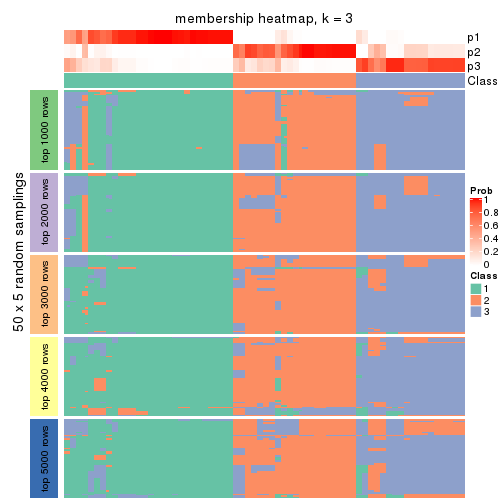
membership_heatmap(res, k = 4)
membership_heatmap(res, k = 5)
membership_heatmap(res, k = 6)
As soon as we have had the classes for columns, we can look for signatures which are significantly different between classes which can be candidate marks for certain classes. Following are the heatmaps for signatures.
Signature heatmaps where rows are scaled:
get_signatures(res, k = 2)
get_signatures(res, k = 3)
get_signatures(res, k = 4)
get_signatures(res, k = 5)
get_signatures(res, k = 6)
Signature heatmaps where rows are not scaled:
get_signatures(res, k = 2, scale_rows = FALSE)
get_signatures(res, k = 3, scale_rows = FALSE)
get_signatures(res, k = 4, scale_rows = FALSE)
get_signatures(res, k = 5, scale_rows = FALSE)
get_signatures(res, k = 6, scale_rows = FALSE)
Compare the overlap of signatures from different k:
compare_signatures(res)
get_signature() returns a data frame invisibly. TO get the list of signatures, the function
call should be assigned to a variable explicitly. In following code, if plot argument is set
to FALSE, no heatmap is plotted while only the differential analysis is performed.
# code only for demonstration
tb = get_signature(res, k = ..., plot = FALSE)
An example of the output of tb is:
#> which_row fdr mean_1 mean_2 scaled_mean_1 scaled_mean_2 km
#> 1 38 0.042760348 8.373488 9.131774 -0.5533452 0.5164555 1
#> 2 40 0.018707592 7.106213 8.469186 -0.6173731 0.5762149 1
#> 3 55 0.019134737 10.221463 11.207825 -0.6159697 0.5749050 1
#> 4 59 0.006059896 5.921854 7.869574 -0.6899429 0.6439467 1
#> 5 60 0.018055526 8.928898 10.211722 -0.6204761 0.5791110 1
#> 6 98 0.009384629 15.714769 14.887706 0.6635654 -0.6193277 2
...
The columns in tb are:
which_row: row indices corresponding to the input matrix.fdr: FDR for the differential test. mean_x: The mean value in group x.scaled_mean_x: The mean value in group x after rows are scaled.km: Row groups if k-means clustering is applied to rows.UMAP plot which shows how samples are separated.
dimension_reduction(res, k = 2, method = "UMAP")
dimension_reduction(res, k = 3, method = "UMAP")
dimension_reduction(res, k = 4, method = "UMAP")

dimension_reduction(res, k = 5, method = "UMAP")
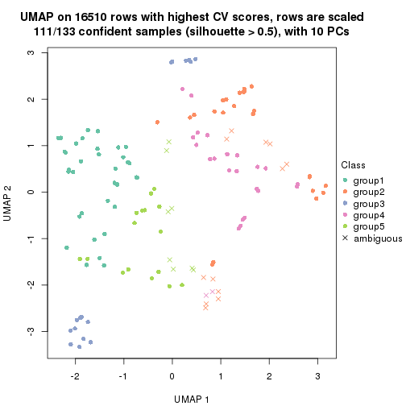
dimension_reduction(res, k = 6, method = "UMAP")
Following heatmap shows how subgroups are split when increasing k:
collect_classes(res)
If matrix rows can be associated to genes, consider to use GO_Enrichment(res,
...) to perform function enrichment for the signature genes.
The object with results only for a single top-value method and a single partition method can be extracted as:
res = res_list["CV", "pam"]
# you can also extract it by
# res = res_list["CV:pam"]
A summary of res and all the functions that can be applied to it:
res
#> A 'ConsensusPartition' object with k = 2, 3, 4, 5, 6.
#> On a matrix with 16510 rows and 133 columns.
#> Top rows (1000, 2000, 3000, 4000, 5000) are extracted by 'CV' method.
#> Subgroups are detected by 'pam' method.
#> Performed in total 1250 partitions by row resampling.
#> Best k for subgroups seems to be 3.
#>
#> Following methods can be applied to this 'ConsensusPartition' object:
#> [1] "cola_report" "collect_classes" "collect_plots"
#> [4] "collect_stats" "colnames" "compare_signatures"
#> [7] "consensus_heatmap" "dimension_reduction" "functional_enrichment"
#> [10] "get_anno_col" "get_anno" "get_classes"
#> [13] "get_consensus" "get_matrix" "get_membership"
#> [16] "get_param" "get_signatures" "get_stats"
#> [19] "is_best_k" "is_stable_k" "membership_heatmap"
#> [22] "ncol" "nrow" "plot_ecdf"
#> [25] "rownames" "select_partition_number" "show"
#> [28] "suggest_best_k" "test_to_known_factors"
collect_plots() function collects all the plots made from res for all k (number of partitions)
into one single page to provide an easy and fast comparison between different k.
collect_plots(res)
The plots are:
k and the heatmap of
predicted classes for each k.k.k.k.All the plots in panels can be made by individual functions and they are plotted later in this section.
select_partition_number() produces several plots showing different
statistics for choosing “optimized” k. There are following statistics:
k;k, the area increased is defined as \(A_k - A_{k-1}\).The detailed explanations of these statistics can be found in the cola vignette.
Generally speaking, lower PAC score, higher mean silhouette score or higher
concordance corresponds to better partition. Rand index and Jaccard index
measure how similar the current partition is compared to partition with k-1.
If they are too similar, we won't accept k is better than k-1.
select_partition_number(res)
The numeric values for all these statistics can be obtained by get_stats().
get_stats(res)
#> k 1-PAC mean_silhouette concordance area_increased Rand Jaccard
#> 2 2 0.499 0.834 0.884 0.2443 0.860 0.860
#> 3 3 0.476 0.630 0.860 1.2015 0.622 0.560
#> 4 4 0.389 0.468 0.597 0.2345 0.736 0.499
#> 5 5 0.462 0.560 0.697 0.1018 0.813 0.509
#> 6 6 0.719 0.806 0.854 0.0537 0.936 0.766
suggest_best_k() suggests the best \(k\) based on these statistics. The rules are as follows:
NA.suggest_best_k(res)
#> [1] 3
Following shows the table of the partitions (You need to click the show/hide
code output link to see it). The membership matrix (columns with name p*)
is inferred by
clue::cl_consensus()
function with the SE method. Basically the value in the membership matrix
represents the probability to belong to a certain group. The finall class
label for an item is determined with the group with highest probability it
belongs to.
In get_classes() function, the entropy is calculated from the membership
matrix and the silhouette score is calculated from the consensus matrix.
cbind(get_classes(res, k = 2), get_membership(res, k = 2))
#> class entropy silhouette p1 p2
#> ERR946976 2 0.0672 0.778 0.008 0.992
#> ERR947001 2 0.2603 0.792 0.044 0.956
#> ERR946975 2 0.8608 0.852 0.284 0.716
#> ERR947000 2 0.8608 0.852 0.284 0.716
#> ERR946972 1 0.8661 0.997 0.712 0.288
#> ERR946997 1 0.8661 0.997 0.712 0.288
#> ERR946986 2 0.0000 0.777 0.000 1.000
#> ERR947011 2 0.0000 0.777 0.000 1.000
#> ERR946977 2 0.0000 0.777 0.000 1.000
#> ERR947002 2 0.0000 0.777 0.000 1.000
#> ERR946974 2 0.8555 0.853 0.280 0.720
#> ERR946999 2 0.8555 0.853 0.280 0.720
#> ERR946971 1 0.8608 0.998 0.716 0.284
#> ERR946996 1 0.8608 0.998 0.716 0.284
#> ERR946992 2 0.0000 0.777 0.000 1.000
#> ERR947017 2 0.0000 0.777 0.000 1.000
#> ERR946984 2 0.0000 0.777 0.000 1.000
#> ERR947009 2 0.0000 0.777 0.000 1.000
#> ERR946987 2 0.0000 0.777 0.000 1.000
#> ERR947012 2 0.0000 0.777 0.000 1.000
#> ERR946991 2 0.0000 0.777 0.000 1.000
#> ERR947016 2 0.0000 0.777 0.000 1.000
#> ERR946983 2 0.0000 0.777 0.000 1.000
#> ERR947008 2 0.0000 0.777 0.000 1.000
#> ERR946970 2 0.8661 0.852 0.288 0.712
#> ERR946995 2 0.8661 0.852 0.288 0.712
#> ERR946969 2 0.8386 0.852 0.268 0.732
#> ERR946994 2 0.8443 0.852 0.272 0.728
#> ERR946982 2 0.8555 0.853 0.280 0.720
#> ERR947007 2 0.8555 0.853 0.280 0.720
#> ERR946988 2 0.0000 0.777 0.000 1.000
#> ERR947013 2 0.0000 0.777 0.000 1.000
#> ERR946985 2 0.6148 0.825 0.152 0.848
#> ERR947010 2 0.0672 0.781 0.008 0.992
#> ERR946989 2 0.8555 0.853 0.280 0.720
#> ERR947014 2 0.8555 0.853 0.280 0.720
#> ERR946968 2 0.8661 0.852 0.288 0.712
#> ERR946993 2 0.8661 0.852 0.288 0.712
#> ERR946990 2 0.4562 0.810 0.096 0.904
#> ERR947015 2 0.6887 0.833 0.184 0.816
#> ERR946980 2 0.0000 0.777 0.000 1.000
#> ERR947005 2 0.0000 0.777 0.000 1.000
#> ERR946978 2 0.8661 0.852 0.288 0.712
#> ERR947003 2 0.8661 0.852 0.288 0.712
#> ERR946979 2 0.0000 0.777 0.000 1.000
#> ERR947004 2 0.0000 0.777 0.000 1.000
#> ERR946957 1 0.8608 0.998 0.716 0.284
#> ERR946962 1 0.8608 0.998 0.716 0.284
#> ERR946958 2 0.8661 0.852 0.288 0.712
#> ERR946963 2 0.8661 0.852 0.288 0.712
#> ERR946959 2 0.8661 0.852 0.288 0.712
#> ERR946964 2 0.8661 0.852 0.288 0.712
#> ERR946967 1 0.8661 0.997 0.712 0.288
#> ERR862690 1 0.8661 0.997 0.712 0.288
#> ERR914278 2 0.8555 0.853 0.280 0.720
#> ERR914314 2 0.8555 0.853 0.280 0.720
#> ERR914279 2 0.8661 0.852 0.288 0.712
#> ERR914315 2 0.8661 0.852 0.288 0.712
#> ERR914280 2 0.8608 0.852 0.284 0.716
#> ERR914316 2 0.8608 0.852 0.284 0.716
#> ERR914281 2 0.0000 0.777 0.000 1.000
#> ERR914317 2 0.0000 0.777 0.000 1.000
#> ERR914282 2 0.0000 0.777 0.000 1.000
#> ERR914318 2 0.0000 0.777 0.000 1.000
#> ERR914283 2 0.8661 0.852 0.288 0.712
#> ERR914319 2 0.8661 0.852 0.288 0.712
#> ERR914284 2 0.8661 0.852 0.288 0.712
#> ERR914320 2 0.8661 0.852 0.288 0.712
#> ERR914285 2 0.8555 0.853 0.280 0.720
#> ERR914321 2 0.8555 0.853 0.280 0.720
#> ERR914286 2 0.8555 0.853 0.280 0.720
#> ERR914322 2 0.8555 0.853 0.280 0.720
#> ERR914287 2 0.8661 0.852 0.288 0.712
#> ERR914323 2 0.8661 0.852 0.288 0.712
#> ERR914288 2 0.8608 0.852 0.284 0.716
#> ERR914324 2 0.8608 0.852 0.284 0.716
#> ERR914289 2 0.8555 0.853 0.280 0.720
#> ERR914290 2 0.8661 0.852 0.288 0.712
#> ERR914326 2 0.8661 0.852 0.288 0.712
#> ERR914291 2 0.8081 0.848 0.248 0.752
#> ERR914327 2 0.8555 0.853 0.280 0.720
#> ERR914292 2 0.8555 0.853 0.280 0.720
#> ERR914328 2 0.8555 0.853 0.280 0.720
#> ERR914293 2 0.8661 0.852 0.288 0.712
#> ERR914329 2 0.8661 0.852 0.288 0.712
#> ERR914294 2 0.8555 0.853 0.280 0.720
#> ERR914330 2 0.8555 0.853 0.280 0.720
#> ERR914295 2 0.8608 0.852 0.284 0.716
#> ERR914331 2 0.8608 0.852 0.284 0.716
#> ERR914296 2 0.8661 0.852 0.288 0.712
#> ERR914332 2 0.8661 0.852 0.288 0.712
#> ERR914297 2 0.8608 0.852 0.284 0.716
#> ERR914333 2 0.8608 0.852 0.284 0.716
#> ERR914298 2 0.8661 0.852 0.288 0.712
#> ERR914334 2 0.8661 0.852 0.288 0.712
#> ERR914299 2 0.4298 0.808 0.088 0.912
#> ERR914335 2 0.3431 0.801 0.064 0.936
#> ERR914300 2 0.8661 0.852 0.288 0.712
#> ERR914336 2 0.8661 0.852 0.288 0.712
#> ERR914301 2 0.0000 0.777 0.000 1.000
#> ERR914337 2 0.0000 0.777 0.000 1.000
#> ERR914302 2 0.8608 0.852 0.284 0.716
#> ERR914338 2 0.8608 0.852 0.284 0.716
#> ERR914303 2 0.0000 0.777 0.000 1.000
#> ERR914339 2 0.0000 0.777 0.000 1.000
#> ERR914304 2 0.0000 0.777 0.000 1.000
#> ERR914340 2 0.0000 0.777 0.000 1.000
#> ERR914305 2 0.0000 0.777 0.000 1.000
#> ERR914341 2 0.0000 0.777 0.000 1.000
#> ERR914306 2 0.0000 0.777 0.000 1.000
#> ERR914342 2 0.0000 0.777 0.000 1.000
#> ERR914307 2 0.0000 0.777 0.000 1.000
#> ERR914343 2 0.1184 0.784 0.016 0.984
#> ERR914308 2 0.0376 0.777 0.004 0.996
#> ERR914344 2 0.0376 0.777 0.004 0.996
#> ERR914309 2 0.0376 0.777 0.004 0.996
#> ERR914345 2 0.3584 0.800 0.068 0.932
#> ERR914310 2 0.8608 0.852 0.284 0.716
#> ERR914346 2 0.8661 0.852 0.288 0.712
#> ERR914311 2 0.0000 0.777 0.000 1.000
#> ERR914347 2 0.0000 0.777 0.000 1.000
#> ERR914312 2 0.8608 0.852 0.284 0.716
#> ERR914348 2 0.8608 0.852 0.284 0.716
#> ERR914313 2 0.0000 0.777 0.000 1.000
#> ERR914349 2 0.0000 0.777 0.000 1.000
#> ERR946960 2 0.8661 0.852 0.288 0.712
#> ERR946965 2 0.8661 0.852 0.288 0.712
#> ERR946966 2 0.0376 0.777 0.004 0.996
#> ERR946973 1 0.8608 0.998 0.716 0.284
#> ERR946998 1 0.8608 0.998 0.716 0.284
#> ERR946981 2 0.0000 0.777 0.000 1.000
#> ERR947006 2 0.0000 0.777 0.000 1.000
#> ERR914325 2 0.8608 0.852 0.284 0.716
cbind(get_classes(res, k = 3), get_membership(res, k = 3))
#> class entropy silhouette p1 p2 p3
#> ERR946976 1 0.6204 0.1543 0.576 0.424 0
#> ERR947001 1 0.5988 0.2935 0.632 0.368 0
#> ERR946975 2 0.6302 0.0155 0.480 0.520 0
#> ERR947000 2 0.6286 0.0526 0.464 0.536 0
#> ERR946972 3 0.0000 1.0000 0.000 0.000 1
#> ERR946997 3 0.0000 1.0000 0.000 0.000 1
#> ERR946986 1 0.6204 0.1543 0.576 0.424 0
#> ERR947011 1 0.6225 0.1383 0.568 0.432 0
#> ERR946977 1 0.6215 0.1443 0.572 0.428 0
#> ERR947002 1 0.6215 0.1443 0.572 0.428 0
#> ERR946974 1 0.1411 0.7719 0.964 0.036 0
#> ERR946999 1 0.1163 0.7765 0.972 0.028 0
#> ERR946971 3 0.0000 1.0000 0.000 0.000 1
#> ERR946996 3 0.0000 1.0000 0.000 0.000 1
#> ERR946992 2 0.0237 0.7665 0.004 0.996 0
#> ERR947017 2 0.0424 0.7674 0.008 0.992 0
#> ERR946984 2 0.5678 0.4949 0.316 0.684 0
#> ERR947009 2 0.5760 0.4796 0.328 0.672 0
#> ERR946987 2 0.3116 0.7357 0.108 0.892 0
#> ERR947012 2 0.3116 0.7357 0.108 0.892 0
#> ERR946991 2 0.0747 0.7696 0.016 0.984 0
#> ERR947016 2 0.0892 0.7698 0.020 0.980 0
#> ERR946983 2 0.6235 0.2386 0.436 0.564 0
#> ERR947008 2 0.6168 0.3018 0.412 0.588 0
#> ERR946970 1 0.0424 0.7846 0.992 0.008 0
#> ERR946995 1 0.0892 0.7799 0.980 0.020 0
#> ERR946969 1 0.0747 0.7815 0.984 0.016 0
#> ERR946994 1 0.0592 0.7834 0.988 0.012 0
#> ERR946982 2 0.6309 -0.0711 0.496 0.504 0
#> ERR947007 1 0.6295 0.1264 0.528 0.472 0
#> ERR946988 2 0.6235 0.2252 0.436 0.564 0
#> ERR947013 2 0.5591 0.5089 0.304 0.696 0
#> ERR946985 2 0.5397 0.5054 0.280 0.720 0
#> ERR947010 2 0.3340 0.7278 0.120 0.880 0
#> ERR946989 1 0.5327 0.5264 0.728 0.272 0
#> ERR947014 1 0.5327 0.5264 0.728 0.272 0
#> ERR946968 1 0.0000 0.7872 1.000 0.000 0
#> ERR946993 1 0.0000 0.7872 1.000 0.000 0
#> ERR946990 1 0.4504 0.6082 0.804 0.196 0
#> ERR947015 1 0.3038 0.7115 0.896 0.104 0
#> ERR946980 1 0.6244 0.1111 0.560 0.440 0
#> ERR947005 1 0.6215 0.1443 0.572 0.428 0
#> ERR946978 1 0.0000 0.7872 1.000 0.000 0
#> ERR947003 1 0.0000 0.7872 1.000 0.000 0
#> ERR946979 2 0.0000 0.7640 0.000 1.000 0
#> ERR947004 2 0.0000 0.7640 0.000 1.000 0
#> ERR946957 3 0.0000 1.0000 0.000 0.000 1
#> ERR946962 3 0.0000 1.0000 0.000 0.000 1
#> ERR946958 1 0.0000 0.7872 1.000 0.000 0
#> ERR946963 1 0.0000 0.7872 1.000 0.000 0
#> ERR946959 1 0.0000 0.7872 1.000 0.000 0
#> ERR946964 1 0.0000 0.7872 1.000 0.000 0
#> ERR946967 3 0.0000 1.0000 0.000 0.000 1
#> ERR862690 3 0.0000 1.0000 0.000 0.000 1
#> ERR914278 1 0.5497 0.5014 0.708 0.292 0
#> ERR914314 1 0.5560 0.4889 0.700 0.300 0
#> ERR914279 1 0.0000 0.7872 1.000 0.000 0
#> ERR914315 1 0.0000 0.7872 1.000 0.000 0
#> ERR914280 1 0.6180 0.2383 0.584 0.416 0
#> ERR914316 1 0.6215 0.2171 0.572 0.428 0
#> ERR914281 2 0.0237 0.7656 0.004 0.996 0
#> ERR914317 2 0.0000 0.7640 0.000 1.000 0
#> ERR914282 2 0.0747 0.7696 0.016 0.984 0
#> ERR914318 2 0.1031 0.7695 0.024 0.976 0
#> ERR914283 1 0.0000 0.7872 1.000 0.000 0
#> ERR914319 1 0.0000 0.7872 1.000 0.000 0
#> ERR914284 1 0.0000 0.7872 1.000 0.000 0
#> ERR914320 1 0.0000 0.7872 1.000 0.000 0
#> ERR914285 1 0.2165 0.7549 0.936 0.064 0
#> ERR914321 1 0.1753 0.7650 0.952 0.048 0
#> ERR914286 1 0.5465 0.5072 0.712 0.288 0
#> ERR914322 1 0.5465 0.5072 0.712 0.288 0
#> ERR914287 1 0.0000 0.7872 1.000 0.000 0
#> ERR914323 1 0.0000 0.7872 1.000 0.000 0
#> ERR914288 1 0.0000 0.7872 1.000 0.000 0
#> ERR914324 1 0.0000 0.7872 1.000 0.000 0
#> ERR914289 1 0.0237 0.7862 0.996 0.004 0
#> ERR914290 1 0.0000 0.7872 1.000 0.000 0
#> ERR914326 1 0.0000 0.7872 1.000 0.000 0
#> ERR914291 1 0.1860 0.7640 0.948 0.052 0
#> ERR914327 1 0.0892 0.7799 0.980 0.020 0
#> ERR914292 1 0.0237 0.7862 0.996 0.004 0
#> ERR914328 1 0.0237 0.7862 0.996 0.004 0
#> ERR914293 1 0.0000 0.7872 1.000 0.000 0
#> ERR914329 1 0.0000 0.7872 1.000 0.000 0
#> ERR914294 1 0.5465 0.5072 0.712 0.288 0
#> ERR914330 1 0.5465 0.5072 0.712 0.288 0
#> ERR914295 1 0.0237 0.7862 0.996 0.004 0
#> ERR914331 1 0.0237 0.7862 0.996 0.004 0
#> ERR914296 1 0.0000 0.7872 1.000 0.000 0
#> ERR914332 1 0.0000 0.7872 1.000 0.000 0
#> ERR914297 1 0.4235 0.6309 0.824 0.176 0
#> ERR914333 1 0.4235 0.6309 0.824 0.176 0
#> ERR914298 1 0.1163 0.7738 0.972 0.028 0
#> ERR914334 1 0.2448 0.7382 0.924 0.076 0
#> ERR914299 1 0.5016 0.5616 0.760 0.240 0
#> ERR914335 1 0.5497 0.4736 0.708 0.292 0
#> ERR914300 1 0.0000 0.7872 1.000 0.000 0
#> ERR914336 1 0.0000 0.7872 1.000 0.000 0
#> ERR914301 2 0.1643 0.7650 0.044 0.956 0
#> ERR914337 2 0.1753 0.7641 0.048 0.952 0
#> ERR914302 1 0.6280 0.1530 0.540 0.460 0
#> ERR914338 1 0.6280 0.1530 0.540 0.460 0
#> ERR914303 2 0.4235 0.6928 0.176 0.824 0
#> ERR914339 2 0.3482 0.7355 0.128 0.872 0
#> ERR914304 2 0.0237 0.7665 0.004 0.996 0
#> ERR914340 2 0.0000 0.7640 0.000 1.000 0
#> ERR914305 2 0.2537 0.7571 0.080 0.920 0
#> ERR914341 2 0.1964 0.7638 0.056 0.944 0
#> ERR914306 2 0.0000 0.7640 0.000 1.000 0
#> ERR914342 2 0.0000 0.7640 0.000 1.000 0
#> ERR914307 1 0.6225 0.1360 0.568 0.432 0
#> ERR914343 1 0.5905 0.3346 0.648 0.352 0
#> ERR914308 1 0.6192 0.1607 0.580 0.420 0
#> ERR914344 1 0.6192 0.1607 0.580 0.420 0
#> ERR914309 1 0.6192 0.1607 0.580 0.420 0
#> ERR914345 1 0.5948 0.3067 0.640 0.360 0
#> ERR914310 1 0.0000 0.7872 1.000 0.000 0
#> ERR914346 1 0.0000 0.7872 1.000 0.000 0
#> ERR914311 2 0.0237 0.7665 0.004 0.996 0
#> ERR914347 2 0.0237 0.7665 0.004 0.996 0
#> ERR914312 1 0.5591 0.4793 0.696 0.304 0
#> ERR914348 1 0.5465 0.5045 0.712 0.288 0
#> ERR914313 2 0.0000 0.7640 0.000 1.000 0
#> ERR914349 2 0.0000 0.7640 0.000 1.000 0
#> ERR946960 1 0.0000 0.7872 1.000 0.000 0
#> ERR946965 1 0.0000 0.7872 1.000 0.000 0
#> ERR946966 2 0.6299 0.1407 0.476 0.524 0
#> ERR946973 3 0.0000 1.0000 0.000 0.000 1
#> ERR946998 3 0.0000 1.0000 0.000 0.000 1
#> ERR946981 2 0.6225 0.2519 0.432 0.568 0
#> ERR947006 2 0.5882 0.4372 0.348 0.652 0
#> ERR914325 1 0.0000 0.7872 1.000 0.000 0
cbind(get_classes(res, k = 4), get_membership(res, k = 4))
#> class entropy silhouette p1 p2 p3 p4
#> ERR946976 2 0.6203 0.3479 0.068 0.592 0 0.340
#> ERR947001 2 0.5250 0.4176 0.024 0.660 0 0.316
#> ERR946975 1 0.5100 0.1433 0.756 0.076 0 0.168
#> ERR947000 1 0.5050 0.1233 0.756 0.068 0 0.176
#> ERR946972 3 0.0000 1.0000 0.000 0.000 1 0.000
#> ERR946997 3 0.0000 1.0000 0.000 0.000 1 0.000
#> ERR946986 2 0.4624 0.4096 0.000 0.660 0 0.340
#> ERR947011 2 0.6121 0.3493 0.060 0.588 0 0.352
#> ERR946977 2 0.4643 0.4082 0.000 0.656 0 0.344
#> ERR947002 2 0.4643 0.4082 0.000 0.656 0 0.344
#> ERR946974 2 0.2345 0.4545 0.000 0.900 0 0.100
#> ERR946999 2 0.2216 0.4569 0.000 0.908 0 0.092
#> ERR946971 3 0.0000 1.0000 0.000 0.000 1 0.000
#> ERR946996 3 0.0000 1.0000 0.000 0.000 1 0.000
#> ERR946992 4 0.5427 0.5666 0.100 0.164 0 0.736
#> ERR947017 4 0.5355 0.5571 0.084 0.180 0 0.736
#> ERR946984 4 0.4193 0.4417 0.000 0.268 0 0.732
#> ERR947009 4 0.4356 0.4137 0.000 0.292 0 0.708
#> ERR946987 4 0.0817 0.6001 0.000 0.024 0 0.976
#> ERR947012 4 0.1474 0.6021 0.000 0.052 0 0.948
#> ERR946991 4 0.7033 0.5719 0.336 0.136 0 0.528
#> ERR947016 4 0.6993 0.5713 0.336 0.132 0 0.532
#> ERR946983 4 0.7818 0.3876 0.356 0.256 0 0.388
#> ERR947008 4 0.7827 0.3861 0.352 0.260 0 0.388
#> ERR946970 2 0.1716 0.4596 0.000 0.936 0 0.064
#> ERR946995 2 0.2011 0.4592 0.000 0.920 0 0.080
#> ERR946969 2 0.3266 0.5055 0.000 0.832 0 0.168
#> ERR946994 2 0.3219 0.5065 0.000 0.836 0 0.164
#> ERR946982 4 0.4817 0.3453 0.000 0.388 0 0.612
#> ERR947007 4 0.4817 0.3453 0.000 0.388 0 0.612
#> ERR946988 4 0.4992 -0.0934 0.000 0.476 0 0.524
#> ERR947013 4 0.4134 0.4492 0.000 0.260 0 0.740
#> ERR946985 4 0.4356 0.4434 0.000 0.292 0 0.708
#> ERR947010 4 0.3610 0.5189 0.000 0.200 0 0.800
#> ERR946989 2 0.4967 -0.1253 0.000 0.548 0 0.452
#> ERR947014 2 0.4961 -0.1179 0.000 0.552 0 0.448
#> ERR946968 2 0.1557 0.4333 0.056 0.944 0 0.000
#> ERR946993 2 0.1557 0.4333 0.056 0.944 0 0.000
#> ERR946990 2 0.2589 0.4730 0.000 0.884 0 0.116
#> ERR947015 2 0.3090 0.4410 0.056 0.888 0 0.056
#> ERR946980 2 0.5420 0.3809 0.024 0.624 0 0.352
#> ERR947005 2 0.4819 0.4056 0.004 0.652 0 0.344
#> ERR946978 1 0.4925 0.8235 0.572 0.428 0 0.000
#> ERR947003 1 0.4925 0.8235 0.572 0.428 0 0.000
#> ERR946979 4 0.5672 0.5873 0.276 0.056 0 0.668
#> ERR947004 4 0.3978 0.6129 0.108 0.056 0 0.836
#> ERR946957 3 0.0000 1.0000 0.000 0.000 1 0.000
#> ERR946962 3 0.0000 1.0000 0.000 0.000 1 0.000
#> ERR946958 2 0.3945 0.2277 0.216 0.780 0 0.004
#> ERR946963 2 0.3837 0.2089 0.224 0.776 0 0.000
#> ERR946959 1 0.4998 0.7129 0.512 0.488 0 0.000
#> ERR946964 1 0.4996 0.7229 0.516 0.484 0 0.000
#> ERR946967 3 0.0000 1.0000 0.000 0.000 1 0.000
#> ERR862690 3 0.0000 1.0000 0.000 0.000 1 0.000
#> ERR914278 2 0.4992 -0.1662 0.000 0.524 0 0.476
#> ERR914314 2 0.4996 -0.1815 0.000 0.516 0 0.484
#> ERR914279 1 0.4925 0.8235 0.572 0.428 0 0.000
#> ERR914315 1 0.4925 0.8235 0.572 0.428 0 0.000
#> ERR914280 4 0.6561 0.2569 0.092 0.344 0 0.564
#> ERR914316 4 0.6465 0.2625 0.080 0.364 0 0.556
#> ERR914281 4 0.0707 0.6028 0.000 0.020 0 0.980
#> ERR914317 4 0.0817 0.6018 0.000 0.024 0 0.976
#> ERR914282 4 0.5252 0.5837 0.336 0.020 0 0.644
#> ERR914318 4 0.5231 0.5957 0.296 0.028 0 0.676
#> ERR914283 1 0.4925 0.8235 0.572 0.428 0 0.000
#> ERR914319 1 0.4925 0.8235 0.572 0.428 0 0.000
#> ERR914284 2 0.2647 0.3800 0.120 0.880 0 0.000
#> ERR914320 2 0.3172 0.3268 0.160 0.840 0 0.000
#> ERR914285 2 0.2868 0.4399 0.000 0.864 0 0.136
#> ERR914321 2 0.2704 0.4446 0.000 0.876 0 0.124
#> ERR914286 4 0.4961 0.1925 0.000 0.448 0 0.552
#> ERR914322 4 0.4985 0.1833 0.000 0.468 0 0.532
#> ERR914287 1 0.4925 0.8235 0.572 0.428 0 0.000
#> ERR914323 1 0.4925 0.8235 0.572 0.428 0 0.000
#> ERR914288 2 0.4050 0.3668 0.144 0.820 0 0.036
#> ERR914324 2 0.4037 0.3787 0.136 0.824 0 0.040
#> ERR914289 2 0.0188 0.4781 0.004 0.996 0 0.000
#> ERR914290 2 0.4999 -0.6787 0.492 0.508 0 0.000
#> ERR914326 2 0.4999 -0.6787 0.492 0.508 0 0.000
#> ERR914291 2 0.4284 0.4972 0.020 0.780 0 0.200
#> ERR914327 2 0.3810 0.5041 0.008 0.804 0 0.188
#> ERR914292 2 0.3219 0.5065 0.000 0.836 0 0.164
#> ERR914328 2 0.3219 0.5065 0.000 0.836 0 0.164
#> ERR914293 1 0.4925 0.8235 0.572 0.428 0 0.000
#> ERR914329 1 0.4925 0.8235 0.572 0.428 0 0.000
#> ERR914294 2 0.4992 -0.1662 0.000 0.524 0 0.476
#> ERR914330 2 0.4992 -0.1662 0.000 0.524 0 0.476
#> ERR914295 2 0.3672 0.5036 0.012 0.824 0 0.164
#> ERR914331 2 0.3672 0.5036 0.012 0.824 0 0.164
#> ERR914296 1 0.4925 0.8235 0.572 0.428 0 0.000
#> ERR914332 1 0.4948 0.8075 0.560 0.440 0 0.000
#> ERR914297 1 0.7182 0.4592 0.452 0.412 0 0.136
#> ERR914333 1 0.7162 0.4920 0.472 0.392 0 0.136
#> ERR914298 1 0.5203 0.8132 0.576 0.416 0 0.008
#> ERR914334 1 0.5212 0.8166 0.572 0.420 0 0.008
#> ERR914299 2 0.7189 0.1882 0.168 0.532 0 0.300
#> ERR914335 2 0.7429 0.0779 0.192 0.492 0 0.316
#> ERR914300 2 0.4356 -0.0108 0.292 0.708 0 0.000
#> ERR914336 2 0.4472 0.2235 0.220 0.760 0 0.020
#> ERR914301 4 0.3311 0.6039 0.172 0.000 0 0.828
#> ERR914337 4 0.3172 0.6017 0.160 0.000 0 0.840
#> ERR914302 4 0.4830 0.3411 0.000 0.392 0 0.608
#> ERR914338 4 0.4830 0.3411 0.000 0.392 0 0.608
#> ERR914303 4 0.7535 0.4734 0.336 0.200 0 0.464
#> ERR914339 4 0.7314 0.5023 0.336 0.168 0 0.496
#> ERR914304 4 0.6203 0.5657 0.340 0.068 0 0.592
#> ERR914340 4 0.6074 0.5678 0.340 0.060 0 0.600
#> ERR914305 4 0.7165 0.4966 0.372 0.140 0 0.488
#> ERR914341 4 0.6949 0.5239 0.348 0.124 0 0.528
#> ERR914306 4 0.3732 0.5982 0.092 0.056 0 0.852
#> ERR914342 4 0.3732 0.5982 0.092 0.056 0 0.852
#> ERR914307 2 0.5127 0.3947 0.012 0.632 0 0.356
#> ERR914343 2 0.4897 0.4173 0.008 0.660 0 0.332
#> ERR914308 1 0.5112 0.8105 0.560 0.436 0 0.004
#> ERR914344 1 0.5112 0.8105 0.560 0.436 0 0.004
#> ERR914309 1 0.5112 0.8105 0.560 0.436 0 0.004
#> ERR914345 1 0.5088 0.8204 0.572 0.424 0 0.004
#> ERR914310 2 0.3688 0.2370 0.208 0.792 0 0.000
#> ERR914346 2 0.4214 0.2590 0.204 0.780 0 0.016
#> ERR914311 4 0.6187 0.5686 0.336 0.068 0 0.596
#> ERR914347 4 0.6187 0.5686 0.336 0.068 0 0.596
#> ERR914312 4 0.7332 0.1438 0.356 0.164 0 0.480
#> ERR914348 4 0.7214 0.1152 0.380 0.144 0 0.476
#> ERR914313 4 0.0000 0.6051 0.000 0.000 0 1.000
#> ERR914349 4 0.0336 0.6063 0.000 0.008 0 0.992
#> ERR946960 2 0.4500 -0.1322 0.316 0.684 0 0.000
#> ERR946965 2 0.4916 -0.5075 0.424 0.576 0 0.000
#> ERR946966 1 0.5031 0.2292 0.740 0.212 0 0.048
#> ERR946973 3 0.0000 1.0000 0.000 0.000 1 0.000
#> ERR946998 3 0.0000 1.0000 0.000 0.000 1 0.000
#> ERR946981 4 0.7796 0.3958 0.360 0.248 0 0.392
#> ERR947006 4 0.7665 0.4383 0.360 0.216 0 0.424
#> ERR914325 2 0.0707 0.4667 0.020 0.980 0 0.000
cbind(get_classes(res, k = 5), get_membership(res, k = 5))
#> class entropy silhouette p1 p2 p3 p4 p5
#> ERR946976 5 0.4118 0.73856 0.076 0.020 0 0.092 0.812
#> ERR947001 5 0.3870 0.74832 0.048 0.032 0 0.088 0.832
#> ERR946975 1 0.3012 0.22964 0.872 0.004 0 0.052 0.072
#> ERR947000 1 0.3021 0.22439 0.872 0.004 0 0.060 0.064
#> ERR946972 3 0.0000 1.00000 0.000 0.000 1 0.000 0.000
#> ERR946997 3 0.0000 1.00000 0.000 0.000 1 0.000 0.000
#> ERR946986 5 0.1965 0.74683 0.000 0.000 0 0.096 0.904
#> ERR947011 5 0.3730 0.72581 0.048 0.012 0 0.112 0.828
#> ERR946977 5 0.2074 0.74278 0.000 0.000 0 0.104 0.896
#> ERR947002 5 0.2127 0.74267 0.000 0.000 0 0.108 0.892
#> ERR946974 5 0.3424 0.65394 0.000 0.000 0 0.240 0.760
#> ERR946999 5 0.3274 0.68106 0.000 0.000 0 0.220 0.780
#> ERR946971 3 0.0000 1.00000 0.000 0.000 1 0.000 0.000
#> ERR946996 3 0.0000 1.00000 0.000 0.000 1 0.000 0.000
#> ERR946992 4 0.3550 0.53283 0.184 0.000 0 0.796 0.020
#> ERR947017 4 0.3602 0.53960 0.180 0.000 0 0.796 0.024
#> ERR946984 4 0.3983 0.49174 0.000 0.000 0 0.660 0.340
#> ERR947009 4 0.4171 0.40450 0.000 0.000 0 0.604 0.396
#> ERR946987 4 0.2020 0.60055 0.000 0.000 0 0.900 0.100
#> ERR947012 4 0.2230 0.58956 0.000 0.000 0 0.884 0.116
#> ERR946991 1 0.5663 -0.11703 0.508 0.000 0 0.412 0.080
#> ERR947016 1 0.5779 -0.10491 0.508 0.000 0 0.400 0.092
#> ERR946983 1 0.6131 0.15310 0.548 0.000 0 0.168 0.284
#> ERR947008 1 0.6206 0.13728 0.528 0.000 0 0.168 0.304
#> ERR946970 5 0.2763 0.74111 0.004 0.000 0 0.148 0.848
#> ERR946995 5 0.3143 0.70135 0.000 0.000 0 0.204 0.796
#> ERR946969 5 0.0162 0.78774 0.000 0.000 0 0.004 0.996
#> ERR946994 5 0.0000 0.78802 0.000 0.000 0 0.000 1.000
#> ERR946982 4 0.2561 0.65314 0.000 0.000 0 0.856 0.144
#> ERR947007 4 0.2471 0.65128 0.000 0.000 0 0.864 0.136
#> ERR946988 5 0.4045 0.36664 0.000 0.000 0 0.356 0.644
#> ERR947013 4 0.3707 0.56060 0.000 0.000 0 0.716 0.284
#> ERR946985 4 0.1965 0.62508 0.000 0.000 0 0.904 0.096
#> ERR947010 4 0.1270 0.61798 0.000 0.000 0 0.948 0.052
#> ERR946989 4 0.3480 0.58198 0.000 0.000 0 0.752 0.248
#> ERR947014 4 0.3480 0.58092 0.000 0.000 0 0.752 0.248
#> ERR946968 5 0.3466 0.75865 0.048 0.008 0 0.100 0.844
#> ERR946993 5 0.3466 0.75865 0.048 0.008 0 0.100 0.844
#> ERR946990 5 0.3318 0.76633 0.000 0.008 0 0.192 0.800
#> ERR947015 5 0.4711 0.74800 0.040 0.044 0 0.152 0.764
#> ERR946980 5 0.2932 0.73663 0.032 0.000 0 0.104 0.864
#> ERR947005 5 0.2233 0.74093 0.004 0.000 0 0.104 0.892
#> ERR946978 1 0.6094 0.48619 0.488 0.384 0 0.000 0.128
#> ERR947003 1 0.6094 0.48619 0.488 0.384 0 0.000 0.128
#> ERR946979 4 0.6160 0.13526 0.420 0.000 0 0.448 0.132
#> ERR947004 4 0.5305 0.41415 0.196 0.000 0 0.672 0.132
#> ERR946957 3 0.0000 1.00000 0.000 0.000 1 0.000 0.000
#> ERR946962 3 0.0000 1.00000 0.000 0.000 1 0.000 0.000
#> ERR946958 5 0.2753 0.75261 0.136 0.008 0 0.000 0.856
#> ERR946963 5 0.3011 0.74547 0.140 0.016 0 0.000 0.844
#> ERR946959 1 0.6381 0.47366 0.448 0.384 0 0.000 0.168
#> ERR946964 1 0.6330 0.47794 0.456 0.384 0 0.000 0.160
#> ERR946967 3 0.0000 1.00000 0.000 0.000 1 0.000 0.000
#> ERR862690 3 0.0000 1.00000 0.000 0.000 1 0.000 0.000
#> ERR914278 4 0.2891 0.65069 0.000 0.000 0 0.824 0.176
#> ERR914314 4 0.2732 0.65643 0.000 0.000 0 0.840 0.160
#> ERR914279 1 0.6094 0.48619 0.488 0.384 0 0.000 0.128
#> ERR914315 1 0.6094 0.48619 0.488 0.384 0 0.000 0.128
#> ERR914280 4 0.5080 0.42387 0.044 0.000 0 0.588 0.368
#> ERR914316 4 0.4485 0.52572 0.028 0.000 0 0.680 0.292
#> ERR914281 4 0.1732 0.60995 0.000 0.000 0 0.920 0.080
#> ERR914317 4 0.1671 0.61174 0.000 0.000 0 0.924 0.076
#> ERR914282 1 0.5883 -0.11588 0.508 0.000 0 0.388 0.104
#> ERR914318 4 0.5889 0.21703 0.428 0.000 0 0.472 0.100
#> ERR914283 1 0.6094 0.48619 0.488 0.384 0 0.000 0.128
#> ERR914319 1 0.6094 0.48619 0.488 0.384 0 0.000 0.128
#> ERR914284 5 0.2992 0.76663 0.064 0.000 0 0.068 0.868
#> ERR914320 5 0.2946 0.76662 0.088 0.000 0 0.044 0.868
#> ERR914285 5 0.3895 0.50896 0.000 0.000 0 0.320 0.680
#> ERR914321 5 0.3816 0.54227 0.000 0.000 0 0.304 0.696
#> ERR914286 4 0.3242 0.65735 0.000 0.000 0 0.784 0.216
#> ERR914322 4 0.3074 0.66277 0.000 0.000 0 0.804 0.196
#> ERR914287 1 0.6094 0.48619 0.488 0.384 0 0.000 0.128
#> ERR914323 1 0.6094 0.48619 0.488 0.384 0 0.000 0.128
#> ERR914288 5 0.1608 0.78561 0.072 0.000 0 0.000 0.928
#> ERR914324 5 0.1544 0.78666 0.068 0.000 0 0.000 0.932
#> ERR914289 5 0.1908 0.77080 0.000 0.000 0 0.092 0.908
#> ERR914290 1 0.6657 0.43662 0.416 0.352 0 0.000 0.232
#> ERR914326 1 0.6609 0.44845 0.416 0.368 0 0.000 0.216
#> ERR914291 5 0.2260 0.74783 0.028 0.000 0 0.064 0.908
#> ERR914327 5 0.1830 0.75897 0.008 0.000 0 0.068 0.924
#> ERR914292 5 0.0000 0.78802 0.000 0.000 0 0.000 1.000
#> ERR914328 5 0.0000 0.78802 0.000 0.000 0 0.000 1.000
#> ERR914293 1 0.6238 0.48156 0.476 0.376 0 0.000 0.148
#> ERR914329 1 0.6208 0.48142 0.480 0.376 0 0.000 0.144
#> ERR914294 4 0.2732 0.65697 0.000 0.000 0 0.840 0.160
#> ERR914330 4 0.2732 0.65697 0.000 0.000 0 0.840 0.160
#> ERR914295 5 0.0794 0.79100 0.028 0.000 0 0.000 0.972
#> ERR914331 5 0.0794 0.79100 0.028 0.000 0 0.000 0.972
#> ERR914296 1 0.6094 0.48619 0.488 0.384 0 0.000 0.128
#> ERR914332 1 0.6189 0.48456 0.476 0.384 0 0.000 0.140
#> ERR914297 2 0.3980 0.45805 0.000 0.708 0 0.008 0.284
#> ERR914333 2 0.3756 0.47109 0.000 0.744 0 0.008 0.248
#> ERR914298 1 0.6060 0.48446 0.492 0.384 0 0.000 0.124
#> ERR914334 1 0.6094 0.48619 0.488 0.384 0 0.000 0.128
#> ERR914299 5 0.5783 0.37708 0.228 0.000 0 0.160 0.612
#> ERR914335 5 0.5931 0.33194 0.248 0.000 0 0.164 0.588
#> ERR914300 5 0.3391 0.71043 0.188 0.012 0 0.000 0.800
#> ERR914336 5 0.2966 0.75127 0.136 0.016 0 0.000 0.848
#> ERR914301 2 0.5084 0.66044 0.052 0.616 0 0.332 0.000
#> ERR914337 2 0.4794 0.66720 0.032 0.624 0 0.344 0.000
#> ERR914302 4 0.2648 0.65601 0.000 0.000 0 0.848 0.152
#> ERR914338 4 0.2648 0.65601 0.000 0.000 0 0.848 0.152
#> ERR914303 1 0.6301 0.12265 0.516 0.000 0 0.184 0.300
#> ERR914339 1 0.6351 0.10846 0.516 0.000 0 0.204 0.280
#> ERR914304 1 0.5940 0.03894 0.568 0.000 0 0.292 0.140
#> ERR914340 1 0.5937 0.02800 0.564 0.000 0 0.300 0.136
#> ERR914305 1 0.5687 0.19665 0.628 0.000 0 0.164 0.208
#> ERR914341 1 0.5927 0.17705 0.592 0.000 0 0.172 0.236
#> ERR914306 2 0.4138 0.65220 0.000 0.616 0 0.384 0.000
#> ERR914342 2 0.4138 0.65220 0.000 0.616 0 0.384 0.000
#> ERR914307 5 0.4293 0.68337 0.012 0.068 0 0.132 0.788
#> ERR914343 5 0.3155 0.72578 0.008 0.016 0 0.128 0.848
#> ERR914308 1 0.6515 0.47502 0.452 0.376 0 0.004 0.168
#> ERR914344 1 0.6515 0.47502 0.452 0.376 0 0.004 0.168
#> ERR914309 1 0.6447 0.47866 0.456 0.384 0 0.004 0.156
#> ERR914345 1 0.6094 0.48619 0.488 0.384 0 0.000 0.128
#> ERR914310 5 0.2179 0.77007 0.100 0.000 0 0.004 0.896
#> ERR914346 5 0.2389 0.76536 0.116 0.000 0 0.004 0.880
#> ERR914311 1 0.6144 -0.05170 0.512 0.000 0 0.344 0.144
#> ERR914347 1 0.6144 -0.05170 0.512 0.000 0 0.344 0.144
#> ERR914312 4 0.5663 0.39666 0.216 0.020 0 0.664 0.100
#> ERR914348 4 0.5262 0.40921 0.220 0.028 0 0.696 0.056
#> ERR914313 4 0.1908 0.60378 0.000 0.000 0 0.908 0.092
#> ERR914349 4 0.1965 0.60243 0.000 0.000 0 0.904 0.096
#> ERR946960 5 0.5217 0.54389 0.232 0.088 0 0.004 0.676
#> ERR946965 5 0.6740 -0.00206 0.316 0.232 0 0.004 0.448
#> ERR946966 1 0.3060 0.23857 0.848 0.000 0 0.024 0.128
#> ERR946973 3 0.0000 1.00000 0.000 0.000 1 0.000 0.000
#> ERR946998 3 0.0000 1.00000 0.000 0.000 1 0.000 0.000
#> ERR946981 1 0.6118 0.15878 0.548 0.000 0 0.164 0.288
#> ERR947006 1 0.6162 0.17219 0.572 0.004 0 0.172 0.252
#> ERR914325 5 0.2068 0.77058 0.004 0.000 0 0.092 0.904
cbind(get_classes(res, k = 6), get_membership(res, k = 6))
#> class entropy silhouette p1 p2 p3 p4 p5 p6
#> ERR946976 5 0.2357 0.833 0.116 0.012 0 0.000 0.872 0
#> ERR947001 5 0.2312 0.835 0.112 0.012 0 0.000 0.876 0
#> ERR946975 2 0.2795 0.845 0.100 0.856 0 0.000 0.044 0
#> ERR947000 2 0.2907 0.847 0.096 0.860 0 0.016 0.028 0
#> ERR946972 3 0.0000 1.000 0.000 0.000 1 0.000 0.000 0
#> ERR946997 3 0.0000 1.000 0.000 0.000 1 0.000 0.000 0
#> ERR946986 5 0.0622 0.872 0.008 0.012 0 0.000 0.980 0
#> ERR947011 5 0.2274 0.842 0.088 0.012 0 0.008 0.892 0
#> ERR946977 5 0.0632 0.871 0.000 0.024 0 0.000 0.976 0
#> ERR947002 5 0.0632 0.871 0.000 0.024 0 0.000 0.976 0
#> ERR946974 5 0.1411 0.860 0.000 0.004 0 0.060 0.936 0
#> ERR946999 5 0.1753 0.847 0.000 0.004 0 0.084 0.912 0
#> ERR946971 3 0.0000 1.000 0.000 0.000 1 0.000 0.000 0
#> ERR946996 3 0.0000 1.000 0.000 0.000 1 0.000 0.000 0
#> ERR946992 4 0.4493 0.325 0.000 0.364 0 0.596 0.040 0
#> ERR947017 4 0.4775 0.367 0.000 0.348 0 0.588 0.064 0
#> ERR946984 4 0.4052 0.665 0.000 0.016 0 0.628 0.356 0
#> ERR947009 4 0.3992 0.657 0.000 0.012 0 0.624 0.364 0
#> ERR946987 4 0.1906 0.622 0.008 0.032 0 0.924 0.036 0
#> ERR947012 4 0.1906 0.622 0.008 0.032 0 0.924 0.036 0
#> ERR946991 2 0.2404 0.824 0.000 0.872 0 0.112 0.016 0
#> ERR947016 2 0.2404 0.824 0.000 0.872 0 0.112 0.016 0
#> ERR946983 2 0.0713 0.905 0.000 0.972 0 0.000 0.028 0
#> ERR947008 2 0.0713 0.905 0.000 0.972 0 0.000 0.028 0
#> ERR946970 5 0.2320 0.807 0.000 0.004 0 0.132 0.864 0
#> ERR946995 5 0.2482 0.795 0.000 0.004 0 0.148 0.848 0
#> ERR946969 5 0.0458 0.872 0.000 0.016 0 0.000 0.984 0
#> ERR946994 5 0.0458 0.872 0.000 0.016 0 0.000 0.984 0
#> ERR946982 4 0.2257 0.707 0.000 0.008 0 0.876 0.116 0
#> ERR947007 4 0.2191 0.708 0.000 0.004 0 0.876 0.120 0
#> ERR946988 5 0.3500 0.598 0.000 0.028 0 0.204 0.768 0
#> ERR947013 4 0.4395 0.593 0.000 0.028 0 0.568 0.404 0
#> ERR946985 4 0.0692 0.628 0.004 0.020 0 0.976 0.000 0
#> ERR947010 4 0.0260 0.639 0.000 0.000 0 0.992 0.008 0
#> ERR946989 4 0.3619 0.677 0.000 0.004 0 0.680 0.316 0
#> ERR947014 4 0.3636 0.673 0.000 0.004 0 0.676 0.320 0
#> ERR946968 5 0.3108 0.800 0.044 0.000 0 0.128 0.828 0
#> ERR946993 5 0.3108 0.800 0.044 0.000 0 0.128 0.828 0
#> ERR946990 5 0.2489 0.812 0.012 0.000 0 0.128 0.860 0
#> ERR947015 5 0.4001 0.728 0.112 0.000 0 0.128 0.760 0
#> ERR946980 5 0.2633 0.821 0.032 0.104 0 0.000 0.864 0
#> ERR947005 5 0.1802 0.855 0.012 0.072 0 0.000 0.916 0
#> ERR946978 1 0.0260 0.926 0.992 0.000 0 0.000 0.008 0
#> ERR947003 1 0.0260 0.926 0.992 0.000 0 0.000 0.008 0
#> ERR946979 2 0.4477 0.529 0.008 0.648 0 0.308 0.036 0
#> ERR947004 4 0.4583 0.243 0.008 0.336 0 0.620 0.036 0
#> ERR946957 3 0.0000 1.000 0.000 0.000 1 0.000 0.000 0
#> ERR946962 3 0.0000 1.000 0.000 0.000 1 0.000 0.000 0
#> ERR946958 5 0.1908 0.854 0.096 0.004 0 0.000 0.900 0
#> ERR946963 5 0.1910 0.848 0.108 0.000 0 0.000 0.892 0
#> ERR946959 1 0.1327 0.888 0.936 0.000 0 0.000 0.064 0
#> ERR946964 1 0.1267 0.893 0.940 0.000 0 0.000 0.060 0
#> ERR946967 3 0.0000 1.000 0.000 0.000 1 0.000 0.000 0
#> ERR862690 3 0.0000 1.000 0.000 0.000 1 0.000 0.000 0
#> ERR914278 4 0.3619 0.677 0.000 0.004 0 0.680 0.316 0
#> ERR914314 4 0.3619 0.677 0.000 0.004 0 0.680 0.316 0
#> ERR914279 1 0.0260 0.926 0.992 0.000 0 0.000 0.008 0
#> ERR914315 1 0.0260 0.926 0.992 0.000 0 0.000 0.008 0
#> ERR914280 4 0.4503 0.564 0.020 0.008 0 0.560 0.412 0
#> ERR914316 4 0.3714 0.659 0.000 0.004 0 0.656 0.340 0
#> ERR914281 4 0.1832 0.623 0.008 0.032 0 0.928 0.032 0
#> ERR914317 4 0.1755 0.624 0.008 0.032 0 0.932 0.028 0
#> ERR914282 2 0.1418 0.894 0.000 0.944 0 0.032 0.024 0
#> ERR914318 2 0.3155 0.755 0.012 0.816 0 0.160 0.012 0
#> ERR914283 1 0.0260 0.926 0.992 0.000 0 0.000 0.008 0
#> ERR914319 1 0.0260 0.926 0.992 0.000 0 0.000 0.008 0
#> ERR914284 5 0.1124 0.870 0.008 0.000 0 0.036 0.956 0
#> ERR914320 5 0.1151 0.871 0.012 0.000 0 0.032 0.956 0
#> ERR914285 5 0.2738 0.763 0.000 0.004 0 0.176 0.820 0
#> ERR914321 5 0.2595 0.783 0.000 0.004 0 0.160 0.836 0
#> ERR914286 4 0.4319 0.586 0.000 0.024 0 0.576 0.400 0
#> ERR914322 4 0.3965 0.608 0.000 0.008 0 0.604 0.388 0
#> ERR914287 1 0.0260 0.926 0.992 0.000 0 0.000 0.008 0
#> ERR914323 1 0.0260 0.926 0.992 0.000 0 0.000 0.008 0
#> ERR914288 5 0.1297 0.871 0.040 0.012 0 0.000 0.948 0
#> ERR914324 5 0.1297 0.871 0.040 0.012 0 0.000 0.948 0
#> ERR914289 5 0.0865 0.867 0.000 0.000 0 0.036 0.964 0
#> ERR914290 1 0.2793 0.743 0.800 0.000 0 0.000 0.200 0
#> ERR914326 1 0.2597 0.774 0.824 0.000 0 0.000 0.176 0
#> ERR914291 5 0.1610 0.854 0.000 0.084 0 0.000 0.916 0
#> ERR914327 5 0.1714 0.849 0.000 0.092 0 0.000 0.908 0
#> ERR914292 5 0.0458 0.872 0.000 0.016 0 0.000 0.984 0
#> ERR914328 5 0.0458 0.872 0.000 0.016 0 0.000 0.984 0
#> ERR914293 1 0.1141 0.902 0.948 0.000 0 0.000 0.052 0
#> ERR914329 1 0.1141 0.902 0.948 0.000 0 0.000 0.052 0
#> ERR914294 4 0.3109 0.735 0.000 0.004 0 0.772 0.224 0
#> ERR914330 4 0.3215 0.732 0.000 0.004 0 0.756 0.240 0
#> ERR914295 5 0.0551 0.873 0.008 0.004 0 0.004 0.984 0
#> ERR914331 5 0.0405 0.873 0.008 0.004 0 0.000 0.988 0
#> ERR914296 1 0.0260 0.926 0.992 0.000 0 0.000 0.008 0
#> ERR914332 1 0.0547 0.921 0.980 0.000 0 0.000 0.020 0
#> ERR914297 6 0.0000 1.000 0.000 0.000 0 0.000 0.000 1
#> ERR914333 6 0.0000 1.000 0.000 0.000 0 0.000 0.000 1
#> ERR914298 1 0.0260 0.918 0.992 0.008 0 0.000 0.000 0
#> ERR914334 1 0.0291 0.922 0.992 0.004 0 0.000 0.004 0
#> ERR914299 5 0.3684 0.447 0.000 0.372 0 0.000 0.628 0
#> ERR914335 5 0.3747 0.384 0.000 0.396 0 0.000 0.604 0
#> ERR914300 5 0.2527 0.798 0.168 0.000 0 0.000 0.832 0
#> ERR914336 5 0.2003 0.842 0.116 0.000 0 0.000 0.884 0
#> ERR914301 6 0.0000 1.000 0.000 0.000 0 0.000 0.000 1
#> ERR914337 6 0.0000 1.000 0.000 0.000 0 0.000 0.000 1
#> ERR914302 4 0.3109 0.735 0.000 0.004 0 0.772 0.224 0
#> ERR914338 4 0.3109 0.735 0.000 0.004 0 0.772 0.224 0
#> ERR914303 2 0.0713 0.905 0.000 0.972 0 0.000 0.028 0
#> ERR914339 2 0.0713 0.905 0.000 0.972 0 0.000 0.028 0
#> ERR914304 2 0.1644 0.880 0.028 0.932 0 0.000 0.040 0
#> ERR914340 2 0.1644 0.880 0.028 0.932 0 0.000 0.040 0
#> ERR914305 2 0.0777 0.905 0.004 0.972 0 0.000 0.024 0
#> ERR914341 2 0.0632 0.905 0.000 0.976 0 0.000 0.024 0
#> ERR914306 6 0.0000 1.000 0.000 0.000 0 0.000 0.000 1
#> ERR914342 6 0.0000 1.000 0.000 0.000 0 0.000 0.000 1
#> ERR914307 5 0.2768 0.777 0.156 0.012 0 0.000 0.832 0
#> ERR914343 5 0.1225 0.871 0.036 0.012 0 0.000 0.952 0
#> ERR914308 1 0.1141 0.902 0.948 0.000 0 0.000 0.052 0
#> ERR914344 1 0.1141 0.902 0.948 0.000 0 0.000 0.052 0
#> ERR914309 1 0.0363 0.925 0.988 0.000 0 0.000 0.012 0
#> ERR914345 1 0.0260 0.926 0.992 0.000 0 0.000 0.008 0
#> ERR914310 5 0.1152 0.870 0.044 0.004 0 0.000 0.952 0
#> ERR914346 5 0.1265 0.870 0.044 0.008 0 0.000 0.948 0
#> ERR914311 2 0.0632 0.905 0.000 0.976 0 0.000 0.024 0
#> ERR914347 2 0.0632 0.905 0.000 0.976 0 0.000 0.024 0
#> ERR914312 4 0.5731 0.550 0.256 0.008 0 0.552 0.184 0
#> ERR914348 4 0.5645 0.506 0.288 0.008 0 0.552 0.152 0
#> ERR914313 4 0.1906 0.622 0.008 0.032 0 0.924 0.036 0
#> ERR914349 4 0.1906 0.622 0.008 0.032 0 0.924 0.036 0
#> ERR946960 5 0.3244 0.659 0.268 0.000 0 0.000 0.732 0
#> ERR946965 1 0.3857 0.112 0.532 0.000 0 0.000 0.468 0
#> ERR946966 2 0.2265 0.880 0.052 0.896 0 0.000 0.052 0
#> ERR946973 3 0.0000 1.000 0.000 0.000 1 0.000 0.000 0
#> ERR946998 3 0.0000 1.000 0.000 0.000 1 0.000 0.000 0
#> ERR946981 2 0.2357 0.845 0.012 0.872 0 0.000 0.116 0
#> ERR947006 2 0.2488 0.867 0.044 0.880 0 0.000 0.076 0
#> ERR914325 5 0.0865 0.867 0.000 0.000 0 0.036 0.964 0
Heatmaps for the consensus matrix. It visualizes the probability of two samples to be in a same group.
consensus_heatmap(res, k = 2)
consensus_heatmap(res, k = 3)
consensus_heatmap(res, k = 4)
consensus_heatmap(res, k = 5)
consensus_heatmap(res, k = 6)

Heatmaps for the membership of samples in all partitions to see how consistent they are:
membership_heatmap(res, k = 2)
membership_heatmap(res, k = 3)
membership_heatmap(res, k = 4)
membership_heatmap(res, k = 5)
membership_heatmap(res, k = 6)
As soon as we have had the classes for columns, we can look for signatures which are significantly different between classes which can be candidate marks for certain classes. Following are the heatmaps for signatures.
Signature heatmaps where rows are scaled:
get_signatures(res, k = 2)
get_signatures(res, k = 3)
get_signatures(res, k = 4)
get_signatures(res, k = 5)
get_signatures(res, k = 6)
Signature heatmaps where rows are not scaled:
get_signatures(res, k = 2, scale_rows = FALSE)
get_signatures(res, k = 3, scale_rows = FALSE)
get_signatures(res, k = 4, scale_rows = FALSE)
get_signatures(res, k = 5, scale_rows = FALSE)
get_signatures(res, k = 6, scale_rows = FALSE)

Compare the overlap of signatures from different k:
compare_signatures(res)
get_signature() returns a data frame invisibly. TO get the list of signatures, the function
call should be assigned to a variable explicitly. In following code, if plot argument is set
to FALSE, no heatmap is plotted while only the differential analysis is performed.
# code only for demonstration
tb = get_signature(res, k = ..., plot = FALSE)
An example of the output of tb is:
#> which_row fdr mean_1 mean_2 scaled_mean_1 scaled_mean_2 km
#> 1 38 0.042760348 8.373488 9.131774 -0.5533452 0.5164555 1
#> 2 40 0.018707592 7.106213 8.469186 -0.6173731 0.5762149 1
#> 3 55 0.019134737 10.221463 11.207825 -0.6159697 0.5749050 1
#> 4 59 0.006059896 5.921854 7.869574 -0.6899429 0.6439467 1
#> 5 60 0.018055526 8.928898 10.211722 -0.6204761 0.5791110 1
#> 6 98 0.009384629 15.714769 14.887706 0.6635654 -0.6193277 2
...
The columns in tb are:
which_row: row indices corresponding to the input matrix.fdr: FDR for the differential test. mean_x: The mean value in group x.scaled_mean_x: The mean value in group x after rows are scaled.km: Row groups if k-means clustering is applied to rows.UMAP plot which shows how samples are separated.
dimension_reduction(res, k = 2, method = "UMAP")

dimension_reduction(res, k = 3, method = "UMAP")
dimension_reduction(res, k = 4, method = "UMAP")
dimension_reduction(res, k = 5, method = "UMAP")
dimension_reduction(res, k = 6, method = "UMAP")

Following heatmap shows how subgroups are split when increasing k:
collect_classes(res)
If matrix rows can be associated to genes, consider to use GO_Enrichment(res,
...) to perform function enrichment for the signature genes.
The object with results only for a single top-value method and a single partition method can be extracted as:
res = res_list["CV", "mclust"]
# you can also extract it by
# res = res_list["CV:mclust"]
A summary of res and all the functions that can be applied to it:
res
#> A 'ConsensusPartition' object with k = 2, 3, 4, 5, 6.
#> On a matrix with 16510 rows and 133 columns.
#> Top rows (1000, 2000, 3000, 4000, 5000) are extracted by 'CV' method.
#> Subgroups are detected by 'mclust' method.
#> Performed in total 1250 partitions by row resampling.
#> Best k for subgroups seems to be 2.
#>
#> Following methods can be applied to this 'ConsensusPartition' object:
#> [1] "cola_report" "collect_classes" "collect_plots"
#> [4] "collect_stats" "colnames" "compare_signatures"
#> [7] "consensus_heatmap" "dimension_reduction" "functional_enrichment"
#> [10] "get_anno_col" "get_anno" "get_classes"
#> [13] "get_consensus" "get_matrix" "get_membership"
#> [16] "get_param" "get_signatures" "get_stats"
#> [19] "is_best_k" "is_stable_k" "membership_heatmap"
#> [22] "ncol" "nrow" "plot_ecdf"
#> [25] "rownames" "select_partition_number" "show"
#> [28] "suggest_best_k" "test_to_known_factors"
collect_plots() function collects all the plots made from res for all k (number of partitions)
into one single page to provide an easy and fast comparison between different k.
collect_plots(res)
The plots are:
k and the heatmap of
predicted classes for each k.k.k.k.All the plots in panels can be made by individual functions and they are plotted later in this section.
select_partition_number() produces several plots showing different
statistics for choosing “optimized” k. There are following statistics:
k;k, the area increased is defined as \(A_k - A_{k-1}\).The detailed explanations of these statistics can be found in the cola vignette.
Generally speaking, lower PAC score, higher mean silhouette score or higher
concordance corresponds to better partition. Rand index and Jaccard index
measure how similar the current partition is compared to partition with k-1.
If they are too similar, we won't accept k is better than k-1.
select_partition_number(res)
The numeric values for all these statistics can be obtained by get_stats().
get_stats(res)
#> k 1-PAC mean_silhouette concordance area_increased Rand Jaccard
#> 2 2 1.000 0.999 1.000 0.1416 0.860 0.860
#> 3 3 0.294 0.776 0.827 1.9397 0.785 0.750
#> 4 4 0.248 0.338 0.618 0.5925 0.650 0.481
#> 5 5 0.495 0.489 0.713 0.1257 0.799 0.502
#> 6 6 0.553 0.414 0.645 0.0554 0.841 0.463
suggest_best_k() suggests the best \(k\) based on these statistics. The rules are as follows:
NA.suggest_best_k(res)
#> [1] 2
Following shows the table of the partitions (You need to click the show/hide
code output link to see it). The membership matrix (columns with name p*)
is inferred by
clue::cl_consensus()
function with the SE method. Basically the value in the membership matrix
represents the probability to belong to a certain group. The finall class
label for an item is determined with the group with highest probability it
belongs to.
In get_classes() function, the entropy is calculated from the membership
matrix and the silhouette score is calculated from the consensus matrix.
cbind(get_classes(res, k = 2), get_membership(res, k = 2))
#> class entropy silhouette p1 p2
#> ERR946976 2 0.0000 1.000 0.000 1.000
#> ERR947001 2 0.0000 1.000 0.000 1.000
#> ERR946975 2 0.0000 1.000 0.000 1.000
#> ERR947000 2 0.0000 1.000 0.000 1.000
#> ERR946972 1 0.0000 1.000 1.000 0.000
#> ERR946997 1 0.0000 1.000 1.000 0.000
#> ERR946986 2 0.0000 1.000 0.000 1.000
#> ERR947011 2 0.0000 1.000 0.000 1.000
#> ERR946977 2 0.0000 1.000 0.000 1.000
#> ERR947002 2 0.0000 1.000 0.000 1.000
#> ERR946974 2 0.0000 1.000 0.000 1.000
#> ERR946999 2 0.0000 1.000 0.000 1.000
#> ERR946971 1 0.0000 1.000 1.000 0.000
#> ERR946996 1 0.0000 1.000 1.000 0.000
#> ERR946992 2 0.0000 1.000 0.000 1.000
#> ERR947017 2 0.0000 1.000 0.000 1.000
#> ERR946984 2 0.0000 1.000 0.000 1.000
#> ERR947009 2 0.0000 1.000 0.000 1.000
#> ERR946987 2 0.0000 1.000 0.000 1.000
#> ERR947012 2 0.0000 1.000 0.000 1.000
#> ERR946991 2 0.0000 1.000 0.000 1.000
#> ERR947016 2 0.0000 1.000 0.000 1.000
#> ERR946983 2 0.0000 1.000 0.000 1.000
#> ERR947008 2 0.0000 1.000 0.000 1.000
#> ERR946970 2 0.0000 1.000 0.000 1.000
#> ERR946995 2 0.0000 1.000 0.000 1.000
#> ERR946969 2 0.0000 1.000 0.000 1.000
#> ERR946994 2 0.0000 1.000 0.000 1.000
#> ERR946982 2 0.0000 1.000 0.000 1.000
#> ERR947007 2 0.0000 1.000 0.000 1.000
#> ERR946988 2 0.0000 1.000 0.000 1.000
#> ERR947013 2 0.0000 1.000 0.000 1.000
#> ERR946985 2 0.0000 1.000 0.000 1.000
#> ERR947010 2 0.0000 1.000 0.000 1.000
#> ERR946989 2 0.0000 1.000 0.000 1.000
#> ERR947014 2 0.0000 1.000 0.000 1.000
#> ERR946968 2 0.0000 1.000 0.000 1.000
#> ERR946993 2 0.0000 1.000 0.000 1.000
#> ERR946990 2 0.0000 1.000 0.000 1.000
#> ERR947015 2 0.0000 1.000 0.000 1.000
#> ERR946980 2 0.0000 1.000 0.000 1.000
#> ERR947005 2 0.0000 1.000 0.000 1.000
#> ERR946978 2 0.0000 1.000 0.000 1.000
#> ERR947003 2 0.0000 1.000 0.000 1.000
#> ERR946979 2 0.0376 0.996 0.004 0.996
#> ERR947004 2 0.0376 0.996 0.004 0.996
#> ERR946957 1 0.0000 1.000 1.000 0.000
#> ERR946962 1 0.0000 1.000 1.000 0.000
#> ERR946958 2 0.0000 1.000 0.000 1.000
#> ERR946963 2 0.0000 1.000 0.000 1.000
#> ERR946959 2 0.0000 1.000 0.000 1.000
#> ERR946964 2 0.0000 1.000 0.000 1.000
#> ERR946967 1 0.0000 1.000 1.000 0.000
#> ERR862690 1 0.0000 1.000 1.000 0.000
#> ERR914278 2 0.0000 1.000 0.000 1.000
#> ERR914314 2 0.0000 1.000 0.000 1.000
#> ERR914279 2 0.0000 1.000 0.000 1.000
#> ERR914315 2 0.0000 1.000 0.000 1.000
#> ERR914280 2 0.0000 1.000 0.000 1.000
#> ERR914316 2 0.0000 1.000 0.000 1.000
#> ERR914281 2 0.0000 1.000 0.000 1.000
#> ERR914317 2 0.0000 1.000 0.000 1.000
#> ERR914282 2 0.0000 1.000 0.000 1.000
#> ERR914318 2 0.0000 1.000 0.000 1.000
#> ERR914283 2 0.0000 1.000 0.000 1.000
#> ERR914319 2 0.0000 1.000 0.000 1.000
#> ERR914284 2 0.0000 1.000 0.000 1.000
#> ERR914320 2 0.0000 1.000 0.000 1.000
#> ERR914285 2 0.0000 1.000 0.000 1.000
#> ERR914321 2 0.0000 1.000 0.000 1.000
#> ERR914286 2 0.0000 1.000 0.000 1.000
#> ERR914322 2 0.0000 1.000 0.000 1.000
#> ERR914287 2 0.0000 1.000 0.000 1.000
#> ERR914323 2 0.0000 1.000 0.000 1.000
#> ERR914288 2 0.0000 1.000 0.000 1.000
#> ERR914324 2 0.0000 1.000 0.000 1.000
#> ERR914289 2 0.0000 1.000 0.000 1.000
#> ERR914290 2 0.0000 1.000 0.000 1.000
#> ERR914326 2 0.0000 1.000 0.000 1.000
#> ERR914291 2 0.0000 1.000 0.000 1.000
#> ERR914327 2 0.0000 1.000 0.000 1.000
#> ERR914292 2 0.0000 1.000 0.000 1.000
#> ERR914328 2 0.0000 1.000 0.000 1.000
#> ERR914293 2 0.0000 1.000 0.000 1.000
#> ERR914329 2 0.0000 1.000 0.000 1.000
#> ERR914294 2 0.0000 1.000 0.000 1.000
#> ERR914330 2 0.0000 1.000 0.000 1.000
#> ERR914295 2 0.0000 1.000 0.000 1.000
#> ERR914331 2 0.0000 1.000 0.000 1.000
#> ERR914296 2 0.0000 1.000 0.000 1.000
#> ERR914332 2 0.0000 1.000 0.000 1.000
#> ERR914297 2 0.0000 1.000 0.000 1.000
#> ERR914333 2 0.0000 1.000 0.000 1.000
#> ERR914298 2 0.0000 1.000 0.000 1.000
#> ERR914334 2 0.0000 1.000 0.000 1.000
#> ERR914299 2 0.0000 1.000 0.000 1.000
#> ERR914335 2 0.0000 1.000 0.000 1.000
#> ERR914300 2 0.0000 1.000 0.000 1.000
#> ERR914336 2 0.0000 1.000 0.000 1.000
#> ERR914301 2 0.0938 0.988 0.012 0.988
#> ERR914337 2 0.0938 0.988 0.012 0.988
#> ERR914302 2 0.0000 1.000 0.000 1.000
#> ERR914338 2 0.0000 1.000 0.000 1.000
#> ERR914303 2 0.0376 0.996 0.004 0.996
#> ERR914339 2 0.0000 1.000 0.000 1.000
#> ERR914304 2 0.0000 1.000 0.000 1.000
#> ERR914340 2 0.0000 1.000 0.000 1.000
#> ERR914305 2 0.0000 1.000 0.000 1.000
#> ERR914341 2 0.0000 1.000 0.000 1.000
#> ERR914306 2 0.0938 0.988 0.012 0.988
#> ERR914342 2 0.0938 0.988 0.012 0.988
#> ERR914307 2 0.0000 1.000 0.000 1.000
#> ERR914343 2 0.0000 1.000 0.000 1.000
#> ERR914308 2 0.0000 1.000 0.000 1.000
#> ERR914344 2 0.0000 1.000 0.000 1.000
#> ERR914309 2 0.0000 1.000 0.000 1.000
#> ERR914345 2 0.0000 1.000 0.000 1.000
#> ERR914310 2 0.0000 1.000 0.000 1.000
#> ERR914346 2 0.0000 1.000 0.000 1.000
#> ERR914311 2 0.0000 1.000 0.000 1.000
#> ERR914347 2 0.0000 1.000 0.000 1.000
#> ERR914312 2 0.0000 1.000 0.000 1.000
#> ERR914348 2 0.0000 1.000 0.000 1.000
#> ERR914313 2 0.0000 1.000 0.000 1.000
#> ERR914349 2 0.0000 1.000 0.000 1.000
#> ERR946960 2 0.0000 1.000 0.000 1.000
#> ERR946965 2 0.0000 1.000 0.000 1.000
#> ERR946966 2 0.0000 1.000 0.000 1.000
#> ERR946973 1 0.0000 1.000 1.000 0.000
#> ERR946998 1 0.0000 1.000 1.000 0.000
#> ERR946981 2 0.0000 1.000 0.000 1.000
#> ERR947006 2 0.0000 1.000 0.000 1.000
#> ERR914325 2 0.0000 1.000 0.000 1.000
cbind(get_classes(res, k = 3), get_membership(res, k = 3))
#> class entropy silhouette p1 p2 p3
#> ERR946976 2 0.355 0.7409 0.132 0.868 0.000
#> ERR947001 2 0.355 0.7409 0.132 0.868 0.000
#> ERR946975 2 0.236 0.7670 0.072 0.928 0.000
#> ERR947000 2 0.254 0.7659 0.080 0.920 0.000
#> ERR946972 3 0.000 1.0000 0.000 0.000 1.000
#> ERR946997 3 0.000 1.0000 0.000 0.000 1.000
#> ERR946986 2 0.186 0.7970 0.052 0.948 0.000
#> ERR947011 2 0.207 0.7970 0.060 0.940 0.000
#> ERR946977 2 0.375 0.7871 0.144 0.856 0.000
#> ERR947002 2 0.375 0.7877 0.144 0.856 0.000
#> ERR946974 2 0.382 0.7731 0.148 0.852 0.000
#> ERR946999 2 0.362 0.7753 0.136 0.864 0.000
#> ERR946971 3 0.000 1.0000 0.000 0.000 1.000
#> ERR946996 3 0.000 1.0000 0.000 0.000 1.000
#> ERR946992 2 0.388 0.7866 0.152 0.848 0.000
#> ERR947017 2 0.394 0.7850 0.156 0.844 0.000
#> ERR946984 2 0.540 0.6966 0.280 0.720 0.000
#> ERR947009 2 0.529 0.7059 0.268 0.732 0.000
#> ERR946987 2 0.450 0.7648 0.196 0.804 0.000
#> ERR947012 2 0.450 0.7648 0.196 0.804 0.000
#> ERR946991 2 0.525 0.7091 0.264 0.736 0.000
#> ERR947016 2 0.525 0.7091 0.264 0.736 0.000
#> ERR946983 2 0.480 0.7090 0.220 0.780 0.000
#> ERR947008 2 0.480 0.7090 0.220 0.780 0.000
#> ERR946970 2 0.388 0.7677 0.152 0.848 0.000
#> ERR946995 2 0.394 0.7660 0.156 0.844 0.000
#> ERR946969 2 0.216 0.7707 0.064 0.936 0.000
#> ERR946994 2 0.216 0.7707 0.064 0.936 0.000
#> ERR946982 2 0.445 0.7661 0.192 0.808 0.000
#> ERR947007 2 0.445 0.7661 0.192 0.808 0.000
#> ERR946988 2 0.355 0.7904 0.132 0.868 0.000
#> ERR947013 2 0.362 0.7890 0.136 0.864 0.000
#> ERR946985 2 0.450 0.7648 0.196 0.804 0.000
#> ERR947010 2 0.450 0.7648 0.196 0.804 0.000
#> ERR946989 2 0.394 0.7734 0.156 0.844 0.000
#> ERR947014 2 0.400 0.7721 0.160 0.840 0.000
#> ERR946968 1 0.576 0.8217 0.672 0.328 0.000
#> ERR946993 1 0.576 0.8217 0.672 0.328 0.000
#> ERR946990 2 0.263 0.7883 0.084 0.916 0.000
#> ERR947015 2 0.271 0.7866 0.088 0.912 0.000
#> ERR946980 2 0.236 0.7961 0.072 0.928 0.000
#> ERR947005 2 0.236 0.7961 0.072 0.928 0.000
#> ERR946978 1 0.614 0.8865 0.596 0.404 0.000
#> ERR947003 1 0.614 0.8865 0.596 0.404 0.000
#> ERR946979 2 0.577 0.6855 0.232 0.748 0.020
#> ERR947004 2 0.577 0.6855 0.232 0.748 0.020
#> ERR946957 3 0.000 1.0000 0.000 0.000 1.000
#> ERR946962 3 0.000 1.0000 0.000 0.000 1.000
#> ERR946958 1 0.622 0.8923 0.568 0.432 0.000
#> ERR946963 1 0.622 0.8923 0.568 0.432 0.000
#> ERR946959 1 0.611 0.8906 0.604 0.396 0.000
#> ERR946964 1 0.611 0.8906 0.604 0.396 0.000
#> ERR946967 3 0.000 1.0000 0.000 0.000 1.000
#> ERR862690 3 0.000 1.0000 0.000 0.000 1.000
#> ERR914278 2 0.388 0.7767 0.152 0.848 0.000
#> ERR914314 2 0.369 0.7783 0.140 0.860 0.000
#> ERR914279 1 0.630 0.8299 0.516 0.484 0.000
#> ERR914315 1 0.630 0.8297 0.516 0.484 0.000
#> ERR914280 2 0.312 0.7995 0.108 0.892 0.000
#> ERR914316 2 0.319 0.7993 0.112 0.888 0.000
#> ERR914281 2 0.450 0.7648 0.196 0.804 0.000
#> ERR914317 2 0.450 0.7648 0.196 0.804 0.000
#> ERR914282 2 0.480 0.7090 0.220 0.780 0.000
#> ERR914318 2 0.480 0.7090 0.220 0.780 0.000
#> ERR914283 1 0.608 0.8936 0.612 0.388 0.000
#> ERR914319 1 0.608 0.8936 0.612 0.388 0.000
#> ERR914284 2 0.362 0.7743 0.136 0.864 0.000
#> ERR914320 2 0.355 0.7766 0.132 0.868 0.000
#> ERR914285 2 0.406 0.7712 0.164 0.836 0.000
#> ERR914321 2 0.400 0.7714 0.160 0.840 0.000
#> ERR914286 2 0.355 0.7735 0.132 0.868 0.000
#> ERR914322 2 0.355 0.7734 0.132 0.868 0.000
#> ERR914287 2 0.546 0.2715 0.288 0.712 0.000
#> ERR914323 2 0.586 -0.0419 0.344 0.656 0.000
#> ERR914288 2 0.288 0.7698 0.096 0.904 0.000
#> ERR914324 2 0.288 0.7698 0.096 0.904 0.000
#> ERR914289 2 0.355 0.7746 0.132 0.868 0.000
#> ERR914290 2 0.312 0.7526 0.108 0.892 0.000
#> ERR914326 2 0.312 0.7526 0.108 0.892 0.000
#> ERR914291 2 0.304 0.7720 0.104 0.896 0.000
#> ERR914327 2 0.271 0.7751 0.088 0.912 0.000
#> ERR914292 2 0.216 0.7707 0.064 0.936 0.000
#> ERR914328 2 0.226 0.7691 0.068 0.932 0.000
#> ERR914293 2 0.312 0.7526 0.108 0.892 0.000
#> ERR914329 2 0.304 0.7553 0.104 0.896 0.000
#> ERR914294 2 0.424 0.7735 0.176 0.824 0.000
#> ERR914330 2 0.424 0.7735 0.176 0.824 0.000
#> ERR914295 2 0.296 0.7754 0.100 0.900 0.000
#> ERR914331 2 0.319 0.7710 0.112 0.888 0.000
#> ERR914296 1 0.568 0.8143 0.684 0.316 0.000
#> ERR914332 1 0.571 0.8213 0.680 0.320 0.000
#> ERR914297 2 0.560 0.6765 0.228 0.756 0.016
#> ERR914333 2 0.560 0.6765 0.228 0.756 0.016
#> ERR914298 1 0.593 0.8721 0.644 0.356 0.000
#> ERR914334 1 0.593 0.8721 0.644 0.356 0.000
#> ERR914299 2 0.263 0.7699 0.084 0.916 0.000
#> ERR914335 2 0.263 0.7699 0.084 0.916 0.000
#> ERR914300 2 0.304 0.7750 0.104 0.896 0.000
#> ERR914336 2 0.304 0.7750 0.104 0.896 0.000
#> ERR914301 2 0.665 0.6258 0.240 0.712 0.048
#> ERR914337 2 0.665 0.6258 0.240 0.712 0.048
#> ERR914302 2 0.445 0.7661 0.192 0.808 0.000
#> ERR914338 2 0.445 0.7661 0.192 0.808 0.000
#> ERR914303 2 0.480 0.7090 0.220 0.780 0.000
#> ERR914339 2 0.480 0.7090 0.220 0.780 0.000
#> ERR914304 2 0.475 0.7088 0.216 0.784 0.000
#> ERR914340 2 0.475 0.7088 0.216 0.784 0.000
#> ERR914305 2 0.480 0.7090 0.220 0.780 0.000
#> ERR914341 2 0.480 0.7090 0.220 0.780 0.000
#> ERR914306 2 0.693 0.6149 0.240 0.700 0.060
#> ERR914342 2 0.693 0.6149 0.240 0.700 0.060
#> ERR914307 2 0.216 0.7971 0.064 0.936 0.000
#> ERR914343 2 0.236 0.7990 0.072 0.928 0.000
#> ERR914308 2 0.254 0.7632 0.080 0.920 0.000
#> ERR914344 2 0.245 0.7642 0.076 0.924 0.000
#> ERR914309 2 0.245 0.7641 0.076 0.924 0.000
#> ERR914345 2 0.236 0.7657 0.072 0.928 0.000
#> ERR914310 2 0.319 0.7700 0.112 0.888 0.000
#> ERR914346 2 0.319 0.7700 0.112 0.888 0.000
#> ERR914311 2 0.470 0.7116 0.212 0.788 0.000
#> ERR914347 2 0.470 0.7116 0.212 0.788 0.000
#> ERR914312 2 0.254 0.7734 0.080 0.920 0.000
#> ERR914348 2 0.280 0.7690 0.092 0.908 0.000
#> ERR914313 2 0.450 0.7648 0.196 0.804 0.000
#> ERR914349 2 0.450 0.7648 0.196 0.804 0.000
#> ERR946960 1 0.604 0.8604 0.620 0.380 0.000
#> ERR946965 1 0.604 0.8604 0.620 0.380 0.000
#> ERR946966 2 0.304 0.7687 0.104 0.896 0.000
#> ERR946973 3 0.000 1.0000 0.000 0.000 1.000
#> ERR946998 3 0.000 1.0000 0.000 0.000 1.000
#> ERR946981 2 0.465 0.7158 0.208 0.792 0.000
#> ERR947006 2 0.470 0.7135 0.212 0.788 0.000
#> ERR914325 2 0.369 0.7725 0.140 0.860 0.000
cbind(get_classes(res, k = 4), get_membership(res, k = 4))
#> class entropy silhouette p1 p2 p3 p4
#> ERR946976 1 0.6580 0.3415 0.504 0.416 0.000 0.080
#> ERR947001 1 0.6580 0.3415 0.504 0.416 0.000 0.080
#> ERR946975 2 0.6346 0.2984 0.152 0.656 0.000 0.192
#> ERR947000 2 0.6352 0.2975 0.156 0.656 0.000 0.188
#> ERR946972 3 0.0000 1.0000 0.000 0.000 1.000 0.000
#> ERR946997 3 0.0000 1.0000 0.000 0.000 1.000 0.000
#> ERR946986 2 0.1913 0.3911 0.020 0.940 0.000 0.040
#> ERR947011 2 0.1913 0.3911 0.020 0.940 0.000 0.040
#> ERR946977 2 0.5581 -0.1829 0.020 0.532 0.000 0.448
#> ERR947002 2 0.5581 -0.1829 0.020 0.532 0.000 0.448
#> ERR946974 2 0.7811 -0.1272 0.260 0.404 0.000 0.336
#> ERR946999 2 0.7743 -0.1815 0.232 0.400 0.000 0.368
#> ERR946971 3 0.0000 1.0000 0.000 0.000 1.000 0.000
#> ERR946996 3 0.0000 1.0000 0.000 0.000 1.000 0.000
#> ERR946992 4 0.4814 0.3934 0.008 0.316 0.000 0.676
#> ERR947017 4 0.4814 0.3934 0.008 0.316 0.000 0.676
#> ERR946984 4 0.7297 0.2378 0.204 0.264 0.000 0.532
#> ERR947009 4 0.7220 0.2494 0.196 0.260 0.000 0.544
#> ERR946987 4 0.2741 0.6044 0.012 0.096 0.000 0.892
#> ERR947012 4 0.2741 0.6044 0.012 0.096 0.000 0.892
#> ERR946991 4 0.5448 0.3465 0.196 0.080 0.000 0.724
#> ERR947016 4 0.5594 0.3349 0.192 0.092 0.000 0.716
#> ERR946983 2 0.7269 0.3155 0.200 0.536 0.000 0.264
#> ERR947008 2 0.7269 0.3155 0.200 0.536 0.000 0.264
#> ERR946970 4 0.7383 0.2900 0.164 0.388 0.000 0.448
#> ERR946995 4 0.7383 0.2900 0.164 0.388 0.000 0.448
#> ERR946969 2 0.0592 0.3826 0.016 0.984 0.000 0.000
#> ERR946994 2 0.0592 0.3826 0.016 0.984 0.000 0.000
#> ERR946982 4 0.3793 0.6069 0.044 0.112 0.000 0.844
#> ERR947007 4 0.3793 0.6069 0.044 0.112 0.000 0.844
#> ERR946988 2 0.5590 -0.1975 0.020 0.524 0.000 0.456
#> ERR947013 2 0.5597 -0.2118 0.020 0.516 0.000 0.464
#> ERR946985 4 0.4420 0.5455 0.012 0.240 0.000 0.748
#> ERR947010 4 0.4420 0.5455 0.012 0.240 0.000 0.748
#> ERR946989 4 0.6952 0.3852 0.120 0.364 0.000 0.516
#> ERR947014 4 0.6971 0.3743 0.120 0.372 0.000 0.508
#> ERR946968 4 0.7803 0.2243 0.268 0.316 0.000 0.416
#> ERR946993 4 0.7803 0.2243 0.268 0.316 0.000 0.416
#> ERR946990 2 0.4532 0.3089 0.052 0.792 0.000 0.156
#> ERR947015 2 0.4701 0.2976 0.056 0.780 0.000 0.164
#> ERR946980 2 0.2179 0.3969 0.012 0.924 0.000 0.064
#> ERR947005 2 0.1888 0.3942 0.016 0.940 0.000 0.044
#> ERR946978 1 0.3610 0.5890 0.800 0.200 0.000 0.000
#> ERR947003 1 0.3610 0.5890 0.800 0.200 0.000 0.000
#> ERR946979 4 0.5031 0.3482 0.212 0.048 0.000 0.740
#> ERR947004 4 0.5031 0.3482 0.212 0.048 0.000 0.740
#> ERR946957 3 0.0000 1.0000 0.000 0.000 1.000 0.000
#> ERR946962 3 0.0000 1.0000 0.000 0.000 1.000 0.000
#> ERR946958 1 0.5784 0.4051 0.556 0.412 0.000 0.032
#> ERR946963 1 0.5708 0.4006 0.556 0.416 0.000 0.028
#> ERR946959 1 0.3486 0.5948 0.812 0.188 0.000 0.000
#> ERR946964 1 0.3444 0.5972 0.816 0.184 0.000 0.000
#> ERR946967 3 0.0000 1.0000 0.000 0.000 1.000 0.000
#> ERR862690 3 0.0000 1.0000 0.000 0.000 1.000 0.000
#> ERR914278 4 0.5647 0.5482 0.116 0.164 0.000 0.720
#> ERR914314 4 0.6187 0.4999 0.144 0.184 0.000 0.672
#> ERR914279 2 0.5746 -0.1998 0.396 0.572 0.000 0.032
#> ERR914315 2 0.5746 -0.1993 0.396 0.572 0.000 0.032
#> ERR914280 2 0.5929 0.1164 0.064 0.640 0.000 0.296
#> ERR914316 2 0.5657 0.0940 0.044 0.644 0.000 0.312
#> ERR914281 4 0.2867 0.6062 0.012 0.104 0.000 0.884
#> ERR914317 4 0.2867 0.6062 0.012 0.104 0.000 0.884
#> ERR914282 2 0.7227 0.3158 0.200 0.544 0.000 0.256
#> ERR914318 2 0.7227 0.3158 0.200 0.544 0.000 0.256
#> ERR914283 1 0.1389 0.6209 0.952 0.048 0.000 0.000
#> ERR914319 1 0.1389 0.6209 0.952 0.048 0.000 0.000
#> ERR914284 2 0.6620 0.0254 0.104 0.576 0.000 0.320
#> ERR914320 2 0.6653 0.0101 0.104 0.568 0.000 0.328
#> ERR914285 4 0.6752 0.4698 0.132 0.280 0.000 0.588
#> ERR914321 4 0.6752 0.4698 0.132 0.280 0.000 0.588
#> ERR914286 4 0.7575 0.0858 0.200 0.356 0.000 0.444
#> ERR914322 4 0.7581 0.0763 0.200 0.360 0.000 0.440
#> ERR914287 1 0.4998 0.3425 0.512 0.488 0.000 0.000
#> ERR914323 1 0.5000 0.3352 0.504 0.496 0.000 0.000
#> ERR914288 2 0.6373 0.3257 0.136 0.648 0.000 0.216
#> ERR914324 2 0.6851 0.2640 0.148 0.584 0.000 0.268
#> ERR914289 4 0.7197 0.3248 0.140 0.392 0.000 0.468
#> ERR914290 2 0.5292 -0.3372 0.480 0.512 0.000 0.008
#> ERR914326 2 0.5292 -0.3372 0.480 0.512 0.000 0.008
#> ERR914291 2 0.3852 0.3804 0.012 0.808 0.000 0.180
#> ERR914327 2 0.3725 0.3815 0.008 0.812 0.000 0.180
#> ERR914292 2 0.1398 0.3707 0.040 0.956 0.000 0.004
#> ERR914328 2 0.1004 0.3801 0.024 0.972 0.000 0.004
#> ERR914293 2 0.5000 -0.3546 0.496 0.504 0.000 0.000
#> ERR914329 2 0.4999 -0.3510 0.492 0.508 0.000 0.000
#> ERR914294 4 0.5050 0.5858 0.084 0.152 0.000 0.764
#> ERR914330 4 0.5113 0.5834 0.088 0.152 0.000 0.760
#> ERR914295 2 0.4609 0.2400 0.156 0.788 0.000 0.056
#> ERR914331 2 0.4832 0.2184 0.176 0.768 0.000 0.056
#> ERR914296 1 0.1890 0.6170 0.936 0.056 0.000 0.008
#> ERR914332 1 0.1890 0.6170 0.936 0.056 0.000 0.008
#> ERR914297 2 0.7886 0.1707 0.268 0.472 0.008 0.252
#> ERR914333 2 0.7848 0.1821 0.268 0.480 0.008 0.244
#> ERR914298 1 0.1389 0.6209 0.952 0.048 0.000 0.000
#> ERR914334 1 0.1389 0.6209 0.952 0.048 0.000 0.000
#> ERR914299 2 0.3808 0.3857 0.012 0.812 0.000 0.176
#> ERR914335 2 0.3808 0.3857 0.012 0.812 0.000 0.176
#> ERR914300 2 0.7506 -0.0672 0.308 0.484 0.000 0.208
#> ERR914336 2 0.7531 -0.0810 0.316 0.476 0.000 0.208
#> ERR914301 2 0.8078 0.0481 0.252 0.396 0.008 0.344
#> ERR914337 2 0.8069 0.0616 0.252 0.404 0.008 0.336
#> ERR914302 4 0.3554 0.6124 0.020 0.136 0.000 0.844
#> ERR914338 4 0.3659 0.6125 0.024 0.136 0.000 0.840
#> ERR914303 2 0.7269 0.3155 0.200 0.536 0.000 0.264
#> ERR914339 2 0.7269 0.3155 0.200 0.536 0.000 0.264
#> ERR914304 2 0.7679 0.1906 0.220 0.424 0.000 0.356
#> ERR914340 2 0.7640 0.1986 0.212 0.432 0.000 0.356
#> ERR914305 2 0.7269 0.3155 0.200 0.536 0.000 0.264
#> ERR914341 2 0.7269 0.3155 0.200 0.536 0.000 0.264
#> ERR914306 2 0.8099 0.0213 0.256 0.380 0.008 0.356
#> ERR914342 2 0.8099 0.0213 0.256 0.380 0.008 0.356
#> ERR914307 2 0.4155 0.3185 0.100 0.828 0.000 0.072
#> ERR914343 2 0.4673 0.2773 0.132 0.792 0.000 0.076
#> ERR914308 1 0.5581 0.2821 0.532 0.448 0.000 0.020
#> ERR914344 2 0.5320 -0.2091 0.416 0.572 0.000 0.012
#> ERR914309 2 0.5016 -0.1840 0.396 0.600 0.000 0.004
#> ERR914345 2 0.5150 -0.1834 0.396 0.596 0.000 0.008
#> ERR914310 2 0.6686 0.1955 0.180 0.620 0.000 0.200
#> ERR914346 2 0.6854 0.1751 0.196 0.600 0.000 0.204
#> ERR914311 2 0.7417 0.2964 0.208 0.508 0.000 0.284
#> ERR914347 2 0.7399 0.3003 0.208 0.512 0.000 0.280
#> ERR914312 2 0.6429 0.2908 0.160 0.648 0.000 0.192
#> ERR914348 2 0.6508 0.2815 0.168 0.640 0.000 0.192
#> ERR914313 4 0.2867 0.6062 0.012 0.104 0.000 0.884
#> ERR914349 4 0.2928 0.6059 0.012 0.108 0.000 0.880
#> ERR946960 1 0.6873 0.4007 0.588 0.252 0.000 0.160
#> ERR946965 1 0.6897 0.3996 0.584 0.256 0.000 0.160
#> ERR946966 2 0.4542 0.3169 0.228 0.752 0.000 0.020
#> ERR946973 3 0.0000 1.0000 0.000 0.000 1.000 0.000
#> ERR946998 3 0.0000 1.0000 0.000 0.000 1.000 0.000
#> ERR946981 2 0.7538 0.3169 0.248 0.492 0.000 0.260
#> ERR947006 2 0.7576 0.3147 0.256 0.484 0.000 0.260
#> ERR914325 4 0.7301 0.3020 0.152 0.396 0.000 0.452
cbind(get_classes(res, k = 5), get_membership(res, k = 5))
#> class entropy silhouette p1 p2 p3 p4 p5
#> ERR946976 5 0.6947 -0.107525 0.316 0.044 0.000 0.136 0.504
#> ERR947001 5 0.6923 -0.078641 0.308 0.044 0.000 0.136 0.512
#> ERR946975 5 0.2451 0.509546 0.036 0.004 0.000 0.056 0.904
#> ERR947000 5 0.2713 0.507673 0.036 0.004 0.000 0.072 0.888
#> ERR946972 3 0.0000 1.000000 0.000 0.000 1.000 0.000 0.000
#> ERR946997 3 0.0000 1.000000 0.000 0.000 1.000 0.000 0.000
#> ERR946986 5 0.2897 0.488945 0.020 0.040 0.000 0.052 0.888
#> ERR947011 5 0.3021 0.486812 0.016 0.052 0.000 0.052 0.880
#> ERR946977 5 0.7031 -0.007721 0.028 0.384 0.000 0.168 0.420
#> ERR947002 5 0.7008 -0.000867 0.028 0.384 0.000 0.164 0.424
#> ERR946974 4 0.4336 0.731114 0.132 0.028 0.000 0.792 0.048
#> ERR946999 4 0.4301 0.738120 0.116 0.032 0.000 0.800 0.052
#> ERR946971 3 0.0000 1.000000 0.000 0.000 1.000 0.000 0.000
#> ERR946996 3 0.0000 1.000000 0.000 0.000 1.000 0.000 0.000
#> ERR946992 2 0.6995 0.040436 0.012 0.404 0.000 0.232 0.352
#> ERR947017 2 0.7014 0.049245 0.012 0.404 0.000 0.240 0.344
#> ERR946984 2 0.6414 0.465707 0.012 0.548 0.000 0.160 0.280
#> ERR947009 2 0.6476 0.442900 0.012 0.536 0.000 0.164 0.288
#> ERR946987 4 0.4800 0.650455 0.012 0.296 0.000 0.668 0.024
#> ERR947012 4 0.4800 0.650455 0.012 0.296 0.000 0.668 0.024
#> ERR946991 2 0.3961 0.489728 0.012 0.792 0.000 0.168 0.028
#> ERR947016 2 0.3961 0.489728 0.012 0.792 0.000 0.168 0.028
#> ERR946983 5 0.4350 -0.039912 0.000 0.408 0.000 0.004 0.588
#> ERR947008 5 0.4350 -0.039912 0.000 0.408 0.000 0.004 0.588
#> ERR946970 4 0.3633 0.743031 0.064 0.060 0.000 0.848 0.028
#> ERR946995 4 0.3698 0.740889 0.064 0.064 0.000 0.844 0.028
#> ERR946969 5 0.1012 0.506311 0.020 0.012 0.000 0.000 0.968
#> ERR946994 5 0.0898 0.505884 0.020 0.008 0.000 0.000 0.972
#> ERR946982 4 0.2861 0.765268 0.024 0.076 0.000 0.884 0.016
#> ERR947007 4 0.2861 0.766829 0.024 0.076 0.000 0.884 0.016
#> ERR946988 5 0.7066 0.008480 0.036 0.388 0.000 0.152 0.424
#> ERR947013 5 0.7091 0.003117 0.036 0.388 0.000 0.156 0.420
#> ERR946985 4 0.4185 0.715599 0.024 0.216 0.000 0.752 0.008
#> ERR947010 4 0.4237 0.718050 0.028 0.212 0.000 0.752 0.008
#> ERR946989 4 0.2745 0.756435 0.052 0.028 0.000 0.896 0.024
#> ERR947014 4 0.2745 0.756435 0.052 0.028 0.000 0.896 0.024
#> ERR946968 4 0.6928 0.401171 0.316 0.052 0.000 0.512 0.120
#> ERR946993 4 0.6928 0.401171 0.316 0.052 0.000 0.512 0.120
#> ERR946990 5 0.4821 0.445839 0.032 0.048 0.000 0.172 0.748
#> ERR947015 5 0.4741 0.447330 0.028 0.048 0.000 0.172 0.752
#> ERR946980 5 0.2842 0.482612 0.012 0.056 0.000 0.044 0.888
#> ERR947005 5 0.2661 0.485175 0.008 0.052 0.000 0.044 0.896
#> ERR946978 1 0.2172 0.680152 0.908 0.016 0.000 0.000 0.076
#> ERR947003 1 0.2172 0.680152 0.908 0.016 0.000 0.000 0.076
#> ERR946979 2 0.2392 0.516446 0.004 0.888 0.000 0.104 0.004
#> ERR947004 2 0.2392 0.516446 0.004 0.888 0.000 0.104 0.004
#> ERR946957 3 0.0000 1.000000 0.000 0.000 1.000 0.000 0.000
#> ERR946962 3 0.0000 1.000000 0.000 0.000 1.000 0.000 0.000
#> ERR946958 1 0.4722 0.693297 0.716 0.012 0.000 0.040 0.232
#> ERR946963 1 0.4649 0.694489 0.720 0.012 0.000 0.036 0.232
#> ERR946959 1 0.2172 0.679579 0.908 0.016 0.000 0.000 0.076
#> ERR946964 1 0.2110 0.678006 0.912 0.016 0.000 0.000 0.072
#> ERR946967 3 0.0000 1.000000 0.000 0.000 1.000 0.000 0.000
#> ERR862690 3 0.0000 1.000000 0.000 0.000 1.000 0.000 0.000
#> ERR914278 4 0.3641 0.769921 0.076 0.060 0.000 0.844 0.020
#> ERR914314 4 0.3782 0.767159 0.084 0.056 0.000 0.836 0.024
#> ERR914279 1 0.5568 0.647792 0.568 0.020 0.000 0.040 0.372
#> ERR914315 1 0.5568 0.647792 0.568 0.020 0.000 0.040 0.372
#> ERR914280 5 0.7049 0.052379 0.056 0.388 0.000 0.112 0.444
#> ERR914316 5 0.7082 0.044748 0.056 0.388 0.000 0.116 0.440
#> ERR914281 4 0.5050 0.642719 0.024 0.292 0.000 0.660 0.024
#> ERR914317 4 0.5008 0.646083 0.024 0.284 0.000 0.668 0.024
#> ERR914282 5 0.4350 -0.044932 0.000 0.408 0.000 0.004 0.588
#> ERR914318 5 0.4350 -0.039912 0.000 0.408 0.000 0.004 0.588
#> ERR914283 1 0.2214 0.672634 0.916 0.028 0.000 0.004 0.052
#> ERR914319 1 0.2214 0.672634 0.916 0.028 0.000 0.004 0.052
#> ERR914284 4 0.7116 0.408515 0.140 0.060 0.000 0.512 0.288
#> ERR914320 4 0.7144 0.390121 0.140 0.060 0.000 0.504 0.296
#> ERR914285 4 0.3547 0.770288 0.060 0.100 0.000 0.836 0.004
#> ERR914321 4 0.3481 0.769743 0.056 0.100 0.000 0.840 0.004
#> ERR914286 4 0.4032 0.711359 0.124 0.004 0.000 0.800 0.072
#> ERR914322 4 0.4032 0.711359 0.124 0.004 0.000 0.800 0.072
#> ERR914287 1 0.4210 0.666511 0.588 0.000 0.000 0.000 0.412
#> ERR914323 1 0.4350 0.668852 0.588 0.000 0.000 0.004 0.408
#> ERR914288 5 0.2520 0.509474 0.048 0.000 0.000 0.056 0.896
#> ERR914324 5 0.3304 0.498050 0.052 0.004 0.000 0.092 0.852
#> ERR914289 4 0.3755 0.756271 0.080 0.048 0.000 0.840 0.032
#> ERR914290 1 0.5740 0.644157 0.524 0.036 0.000 0.028 0.412
#> ERR914326 1 0.5749 0.636994 0.520 0.032 0.000 0.032 0.416
#> ERR914291 5 0.0566 0.497196 0.004 0.012 0.000 0.000 0.984
#> ERR914327 5 0.0566 0.497196 0.004 0.012 0.000 0.000 0.984
#> ERR914292 5 0.1393 0.508079 0.024 0.012 0.000 0.008 0.956
#> ERR914328 5 0.2165 0.506521 0.024 0.036 0.000 0.016 0.924
#> ERR914293 1 0.4645 0.655065 0.564 0.008 0.000 0.004 0.424
#> ERR914329 1 0.4645 0.655065 0.564 0.008 0.000 0.004 0.424
#> ERR914294 4 0.1862 0.771556 0.048 0.004 0.000 0.932 0.016
#> ERR914330 4 0.1830 0.772406 0.052 0.004 0.000 0.932 0.012
#> ERR914295 5 0.5217 0.445308 0.052 0.076 0.000 0.132 0.740
#> ERR914331 5 0.5150 0.447813 0.048 0.076 0.000 0.132 0.744
#> ERR914296 1 0.3459 0.626013 0.832 0.116 0.000 0.000 0.052
#> ERR914332 1 0.3459 0.626013 0.832 0.116 0.000 0.000 0.052
#> ERR914297 2 0.5463 0.382675 0.016 0.556 0.000 0.036 0.392
#> ERR914333 2 0.5372 0.384131 0.012 0.560 0.000 0.036 0.392
#> ERR914298 1 0.1774 0.670236 0.932 0.016 0.000 0.000 0.052
#> ERR914334 1 0.1774 0.670236 0.932 0.016 0.000 0.000 0.052
#> ERR914299 5 0.0404 0.496669 0.000 0.012 0.000 0.000 0.988
#> ERR914335 5 0.0451 0.498616 0.000 0.008 0.000 0.004 0.988
#> ERR914300 5 0.7041 -0.069948 0.296 0.008 0.000 0.336 0.360
#> ERR914336 5 0.7021 -0.066673 0.280 0.008 0.000 0.344 0.368
#> ERR914301 2 0.4613 0.401839 0.000 0.620 0.000 0.020 0.360
#> ERR914337 2 0.4613 0.401839 0.000 0.620 0.000 0.020 0.360
#> ERR914302 4 0.2586 0.767304 0.012 0.084 0.000 0.892 0.012
#> ERR914338 4 0.2526 0.766736 0.012 0.080 0.000 0.896 0.012
#> ERR914303 5 0.4359 -0.044374 0.000 0.412 0.000 0.004 0.584
#> ERR914339 5 0.4359 -0.044374 0.000 0.412 0.000 0.004 0.584
#> ERR914304 5 0.4830 -0.183490 0.000 0.488 0.000 0.020 0.492
#> ERR914340 5 0.4830 -0.183490 0.000 0.488 0.000 0.020 0.492
#> ERR914305 5 0.4341 -0.040304 0.000 0.404 0.000 0.004 0.592
#> ERR914341 5 0.4350 -0.039912 0.000 0.408 0.000 0.004 0.588
#> ERR914306 2 0.4422 0.499861 0.004 0.724 0.004 0.024 0.244
#> ERR914342 2 0.4422 0.499861 0.004 0.724 0.004 0.024 0.244
#> ERR914307 5 0.4927 0.445175 0.096 0.044 0.000 0.096 0.764
#> ERR914343 5 0.5194 0.426102 0.096 0.048 0.000 0.112 0.744
#> ERR914308 1 0.6313 0.582330 0.476 0.056 0.000 0.044 0.424
#> ERR914344 1 0.5890 0.596320 0.496 0.028 0.000 0.044 0.432
#> ERR914309 1 0.5470 0.607656 0.512 0.016 0.000 0.032 0.440
#> ERR914345 1 0.5470 0.607656 0.512 0.016 0.000 0.032 0.440
#> ERR914310 5 0.5562 0.067252 0.072 0.000 0.000 0.408 0.520
#> ERR914346 5 0.5626 0.027764 0.076 0.000 0.000 0.420 0.504
#> ERR914311 2 0.4830 0.114697 0.000 0.492 0.000 0.020 0.488
#> ERR914347 5 0.4830 -0.182047 0.000 0.488 0.000 0.020 0.492
#> ERR914312 5 0.3647 0.471469 0.052 0.000 0.000 0.132 0.816
#> ERR914348 5 0.4313 0.415000 0.068 0.000 0.000 0.172 0.760
#> ERR914313 4 0.5470 0.572561 0.020 0.340 0.000 0.600 0.040
#> ERR914349 4 0.5549 0.565686 0.020 0.344 0.000 0.592 0.044
#> ERR946960 1 0.6561 0.608710 0.608 0.052 0.000 0.148 0.192
#> ERR946965 1 0.6561 0.608710 0.608 0.052 0.000 0.148 0.192
#> ERR946966 5 0.4086 0.373248 0.024 0.152 0.000 0.028 0.796
#> ERR946973 3 0.0000 1.000000 0.000 0.000 1.000 0.000 0.000
#> ERR946998 3 0.0000 1.000000 0.000 0.000 1.000 0.000 0.000
#> ERR946981 5 0.5811 -0.103282 0.036 0.412 0.000 0.032 0.520
#> ERR947006 5 0.5745 -0.104712 0.036 0.416 0.000 0.028 0.520
#> ERR914325 4 0.3673 0.749051 0.096 0.028 0.000 0.840 0.036
cbind(get_classes(res, k = 6), get_membership(res, k = 6))
#> class entropy silhouette p1 p2 p3 p4 p5 p6
#> ERR946976 1 0.6649 -0.1494 0.464 0.004 0.000 0.056 0.324 0.152
#> ERR947001 1 0.6703 -0.1672 0.456 0.004 0.000 0.060 0.328 0.152
#> ERR946975 5 0.5392 0.5414 0.356 0.008 0.000 0.084 0.548 0.004
#> ERR947000 5 0.5481 0.5402 0.356 0.004 0.000 0.084 0.544 0.012
#> ERR946972 3 0.0000 1.0000 0.000 0.000 1.000 0.000 0.000 0.000
#> ERR946997 3 0.0000 1.0000 0.000 0.000 1.000 0.000 0.000 0.000
#> ERR946986 4 0.6924 -0.2749 0.292 0.008 0.000 0.340 0.328 0.032
#> ERR947011 4 0.6917 -0.2404 0.292 0.008 0.000 0.356 0.312 0.032
#> ERR946977 4 0.5251 0.3552 0.292 0.024 0.000 0.628 0.024 0.032
#> ERR947002 4 0.5251 0.3552 0.292 0.024 0.000 0.628 0.024 0.032
#> ERR946974 6 0.3994 0.6754 0.056 0.004 0.000 0.140 0.016 0.784
#> ERR946999 6 0.3856 0.6779 0.052 0.004 0.000 0.132 0.016 0.796
#> ERR946971 3 0.0000 1.0000 0.000 0.000 1.000 0.000 0.000 0.000
#> ERR946996 3 0.0000 1.0000 0.000 0.000 1.000 0.000 0.000 0.000
#> ERR946992 4 0.6481 0.3627 0.296 0.108 0.000 0.524 0.012 0.060
#> ERR947017 4 0.6500 0.3647 0.296 0.096 0.000 0.528 0.016 0.064
#> ERR946984 4 0.6528 -0.1721 0.076 0.400 0.000 0.448 0.044 0.032
#> ERR947009 4 0.6633 -0.1370 0.088 0.388 0.000 0.448 0.044 0.032
#> ERR946987 4 0.5277 0.1059 0.000 0.152 0.000 0.592 0.000 0.256
#> ERR947012 4 0.5277 0.1059 0.000 0.152 0.000 0.592 0.000 0.256
#> ERR946991 2 0.4495 0.5871 0.004 0.676 0.000 0.276 0.012 0.032
#> ERR947016 2 0.4514 0.5827 0.004 0.672 0.000 0.280 0.012 0.032
#> ERR946983 5 0.4211 -0.1176 0.004 0.456 0.000 0.008 0.532 0.000
#> ERR947008 5 0.4211 -0.1176 0.004 0.456 0.000 0.008 0.532 0.000
#> ERR946970 6 0.1716 0.6659 0.004 0.000 0.000 0.028 0.036 0.932
#> ERR946995 6 0.1716 0.6659 0.004 0.000 0.000 0.028 0.036 0.932
#> ERR946969 5 0.5575 0.5419 0.304 0.000 0.000 0.168 0.528 0.000
#> ERR946994 5 0.5549 0.5449 0.304 0.000 0.000 0.164 0.532 0.000
#> ERR946982 4 0.4098 -0.3129 0.004 0.004 0.000 0.548 0.000 0.444
#> ERR947007 4 0.4111 -0.3286 0.004 0.004 0.000 0.536 0.000 0.456
#> ERR946988 4 0.5200 0.3513 0.296 0.024 0.000 0.628 0.024 0.028
#> ERR947013 4 0.5200 0.3513 0.296 0.024 0.000 0.628 0.024 0.028
#> ERR946985 4 0.4109 -0.0543 0.008 0.012 0.000 0.652 0.000 0.328
#> ERR947010 4 0.4109 -0.0543 0.008 0.012 0.000 0.652 0.000 0.328
#> ERR946989 6 0.1686 0.6827 0.004 0.004 0.000 0.052 0.008 0.932
#> ERR947014 6 0.1686 0.6827 0.004 0.004 0.000 0.052 0.008 0.932
#> ERR946968 6 0.6030 0.2448 0.212 0.004 0.000 0.048 0.140 0.596
#> ERR946993 6 0.6030 0.2448 0.212 0.004 0.000 0.048 0.140 0.596
#> ERR946990 5 0.7374 0.4391 0.300 0.008 0.000 0.188 0.396 0.108
#> ERR947015 5 0.7330 0.4378 0.300 0.008 0.000 0.192 0.400 0.100
#> ERR946980 4 0.6959 -0.1435 0.292 0.024 0.000 0.396 0.268 0.020
#> ERR947005 4 0.6890 -0.1436 0.292 0.024 0.000 0.400 0.268 0.016
#> ERR946978 1 0.4211 0.5294 0.616 0.000 0.000 0.016 0.364 0.004
#> ERR947003 1 0.4211 0.5294 0.616 0.000 0.000 0.016 0.364 0.004
#> ERR946979 2 0.1863 0.7109 0.000 0.920 0.000 0.060 0.004 0.016
#> ERR947004 2 0.1863 0.7109 0.000 0.920 0.000 0.060 0.004 0.016
#> ERR946957 3 0.0000 1.0000 0.000 0.000 1.000 0.000 0.000 0.000
#> ERR946962 3 0.0000 1.0000 0.000 0.000 1.000 0.000 0.000 0.000
#> ERR946958 1 0.4356 0.5693 0.772 0.000 0.000 0.052 0.096 0.080
#> ERR946963 1 0.4305 0.5704 0.776 0.000 0.000 0.052 0.096 0.076
#> ERR946959 1 0.4076 0.5285 0.620 0.000 0.000 0.016 0.364 0.000
#> ERR946964 1 0.4076 0.5285 0.620 0.000 0.000 0.016 0.364 0.000
#> ERR946967 3 0.0000 1.0000 0.000 0.000 1.000 0.000 0.000 0.000
#> ERR862690 3 0.0000 1.0000 0.000 0.000 1.000 0.000 0.000 0.000
#> ERR914278 6 0.4356 0.4669 0.016 0.004 0.000 0.432 0.000 0.548
#> ERR914314 6 0.4361 0.4660 0.016 0.004 0.000 0.436 0.000 0.544
#> ERR914279 1 0.3985 0.5551 0.808 0.004 0.000 0.060 0.072 0.056
#> ERR914315 1 0.3985 0.5551 0.808 0.004 0.000 0.060 0.072 0.056
#> ERR914280 4 0.5053 0.3434 0.296 0.024 0.000 0.636 0.020 0.024
#> ERR914316 4 0.5125 0.3412 0.296 0.024 0.000 0.632 0.020 0.028
#> ERR914281 4 0.5219 0.1179 0.000 0.152 0.000 0.604 0.000 0.244
#> ERR914317 4 0.5219 0.1179 0.000 0.152 0.000 0.604 0.000 0.244
#> ERR914282 5 0.4076 -0.1010 0.000 0.452 0.000 0.008 0.540 0.000
#> ERR914318 5 0.4076 -0.1010 0.000 0.452 0.000 0.008 0.540 0.000
#> ERR914283 1 0.4138 0.5217 0.616 0.000 0.000 0.004 0.368 0.012
#> ERR914319 1 0.4138 0.5217 0.616 0.000 0.000 0.004 0.368 0.012
#> ERR914284 5 0.5542 0.1163 0.064 0.000 0.000 0.028 0.460 0.448
#> ERR914320 5 0.5542 0.1038 0.064 0.000 0.000 0.028 0.456 0.452
#> ERR914285 6 0.3011 0.6549 0.004 0.004 0.000 0.192 0.000 0.800
#> ERR914321 6 0.3011 0.6549 0.004 0.004 0.000 0.192 0.000 0.800
#> ERR914286 6 0.6611 0.4451 0.132 0.012 0.000 0.360 0.044 0.452
#> ERR914322 6 0.6611 0.4451 0.132 0.012 0.000 0.360 0.044 0.452
#> ERR914287 1 0.1983 0.5809 0.908 0.000 0.000 0.072 0.000 0.020
#> ERR914323 1 0.1926 0.5820 0.912 0.000 0.000 0.068 0.000 0.020
#> ERR914288 5 0.6034 0.5522 0.284 0.000 0.000 0.048 0.552 0.116
#> ERR914324 5 0.6027 0.5470 0.288 0.000 0.000 0.044 0.548 0.120
#> ERR914289 6 0.3018 0.6825 0.028 0.004 0.000 0.064 0.036 0.868
#> ERR914290 1 0.2952 0.5649 0.864 0.008 0.000 0.092 0.016 0.020
#> ERR914326 1 0.2952 0.5649 0.864 0.008 0.000 0.092 0.016 0.020
#> ERR914291 5 0.5037 0.5788 0.304 0.016 0.000 0.064 0.616 0.000
#> ERR914327 5 0.5037 0.5788 0.304 0.016 0.000 0.064 0.616 0.000
#> ERR914292 5 0.5536 0.5440 0.300 0.000 0.000 0.164 0.536 0.000
#> ERR914328 5 0.5588 0.5397 0.300 0.000 0.000 0.172 0.528 0.000
#> ERR914293 1 0.2485 0.5725 0.884 0.004 0.000 0.088 0.004 0.020
#> ERR914329 1 0.2485 0.5725 0.884 0.004 0.000 0.088 0.004 0.020
#> ERR914294 6 0.4378 0.4588 0.016 0.004 0.000 0.452 0.000 0.528
#> ERR914330 6 0.4378 0.4636 0.016 0.004 0.000 0.452 0.000 0.528
#> ERR914295 5 0.7457 0.4164 0.336 0.024 0.000 0.148 0.392 0.100
#> ERR914331 5 0.7400 0.4006 0.352 0.024 0.000 0.136 0.388 0.100
#> ERR914296 1 0.4291 0.5187 0.620 0.016 0.000 0.000 0.356 0.008
#> ERR914332 1 0.4291 0.5187 0.620 0.016 0.000 0.000 0.356 0.008
#> ERR914297 2 0.6106 0.4775 0.004 0.512 0.000 0.172 0.296 0.016
#> ERR914333 2 0.6130 0.4680 0.004 0.504 0.000 0.172 0.304 0.016
#> ERR914298 1 0.3942 0.5226 0.624 0.000 0.000 0.004 0.368 0.004
#> ERR914334 1 0.3942 0.5226 0.624 0.000 0.000 0.004 0.368 0.004
#> ERR914299 5 0.5100 0.5796 0.300 0.020 0.000 0.064 0.616 0.000
#> ERR914335 5 0.5100 0.5796 0.300 0.020 0.000 0.064 0.616 0.000
#> ERR914300 5 0.6551 0.1925 0.256 0.000 0.000 0.024 0.368 0.352
#> ERR914336 5 0.6555 0.1893 0.232 0.000 0.000 0.028 0.380 0.360
#> ERR914301 2 0.2288 0.7528 0.000 0.876 0.000 0.004 0.116 0.004
#> ERR914337 2 0.2355 0.7531 0.000 0.876 0.000 0.004 0.112 0.008
#> ERR914302 4 0.4124 -0.3300 0.004 0.004 0.000 0.516 0.000 0.476
#> ERR914338 4 0.4127 -0.3448 0.004 0.004 0.000 0.508 0.000 0.484
#> ERR914303 5 0.4086 -0.1283 0.000 0.464 0.000 0.008 0.528 0.000
#> ERR914339 5 0.4086 -0.1283 0.000 0.464 0.000 0.008 0.528 0.000
#> ERR914304 2 0.3905 0.7246 0.000 0.756 0.000 0.028 0.200 0.016
#> ERR914340 2 0.3905 0.7246 0.000 0.756 0.000 0.028 0.200 0.016
#> ERR914305 5 0.4083 -0.1237 0.000 0.460 0.000 0.008 0.532 0.000
#> ERR914341 5 0.4083 -0.1237 0.000 0.460 0.000 0.008 0.532 0.000
#> ERR914306 2 0.0603 0.7284 0.000 0.980 0.004 0.016 0.000 0.000
#> ERR914342 2 0.0603 0.7284 0.000 0.980 0.004 0.016 0.000 0.000
#> ERR914307 5 0.6864 0.3893 0.352 0.000 0.000 0.220 0.372 0.056
#> ERR914343 1 0.6945 -0.4121 0.360 0.000 0.000 0.236 0.344 0.060
#> ERR914308 1 0.5316 0.3734 0.628 0.004 0.000 0.268 0.076 0.024
#> ERR914344 1 0.5152 0.3774 0.632 0.000 0.000 0.272 0.072 0.024
#> ERR914309 1 0.3821 0.5128 0.804 0.000 0.000 0.100 0.072 0.024
#> ERR914345 1 0.4069 0.5019 0.788 0.000 0.000 0.104 0.076 0.032
#> ERR914310 5 0.5799 0.3914 0.092 0.004 0.000 0.028 0.544 0.332
#> ERR914346 5 0.5498 0.3331 0.068 0.000 0.000 0.028 0.536 0.368
#> ERR914311 2 0.3799 0.7282 0.000 0.764 0.000 0.024 0.196 0.016
#> ERR914347 2 0.3875 0.7281 0.000 0.760 0.000 0.028 0.196 0.016
#> ERR914312 5 0.6272 0.5123 0.364 0.004 0.000 0.088 0.484 0.060
#> ERR914348 5 0.6765 0.4771 0.360 0.004 0.000 0.104 0.436 0.096
#> ERR914313 4 0.5091 0.1592 0.000 0.172 0.000 0.632 0.000 0.196
#> ERR914349 4 0.5091 0.1592 0.000 0.172 0.000 0.632 0.000 0.196
#> ERR946960 1 0.6110 0.4191 0.552 0.004 0.000 0.048 0.108 0.288
#> ERR946965 1 0.6110 0.4191 0.552 0.004 0.000 0.048 0.108 0.288
#> ERR946966 5 0.7324 0.4597 0.248 0.144 0.000 0.172 0.432 0.004
#> ERR946973 3 0.0000 1.0000 0.000 0.000 1.000 0.000 0.000 0.000
#> ERR946998 3 0.0000 1.0000 0.000 0.000 1.000 0.000 0.000 0.000
#> ERR946981 2 0.5233 0.6352 0.016 0.644 0.000 0.080 0.252 0.008
#> ERR947006 2 0.5227 0.6276 0.016 0.640 0.000 0.076 0.260 0.008
#> ERR914325 6 0.3131 0.6819 0.028 0.004 0.000 0.072 0.036 0.860
Heatmaps for the consensus matrix. It visualizes the probability of two samples to be in a same group.
consensus_heatmap(res, k = 2)
consensus_heatmap(res, k = 3)
consensus_heatmap(res, k = 4)
consensus_heatmap(res, k = 5)
consensus_heatmap(res, k = 6)
Heatmaps for the membership of samples in all partitions to see how consistent they are:
membership_heatmap(res, k = 2)
membership_heatmap(res, k = 3)
membership_heatmap(res, k = 4)
membership_heatmap(res, k = 5)
membership_heatmap(res, k = 6)

As soon as we have had the classes for columns, we can look for signatures which are significantly different between classes which can be candidate marks for certain classes. Following are the heatmaps for signatures.
Signature heatmaps where rows are scaled:
get_signatures(res, k = 2)
get_signatures(res, k = 3)
get_signatures(res, k = 4)
get_signatures(res, k = 5)
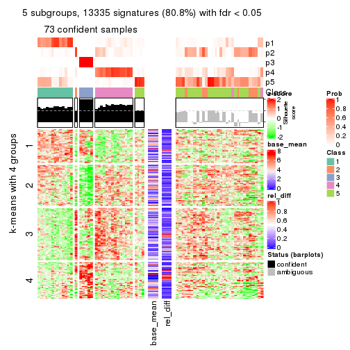
get_signatures(res, k = 6)
Signature heatmaps where rows are not scaled:
get_signatures(res, k = 2, scale_rows = FALSE)
get_signatures(res, k = 3, scale_rows = FALSE)
get_signatures(res, k = 4, scale_rows = FALSE)
get_signatures(res, k = 5, scale_rows = FALSE)
get_signatures(res, k = 6, scale_rows = FALSE)
Compare the overlap of signatures from different k:
compare_signatures(res)
get_signature() returns a data frame invisibly. TO get the list of signatures, the function
call should be assigned to a variable explicitly. In following code, if plot argument is set
to FALSE, no heatmap is plotted while only the differential analysis is performed.
# code only for demonstration
tb = get_signature(res, k = ..., plot = FALSE)
An example of the output of tb is:
#> which_row fdr mean_1 mean_2 scaled_mean_1 scaled_mean_2 km
#> 1 38 0.042760348 8.373488 9.131774 -0.5533452 0.5164555 1
#> 2 40 0.018707592 7.106213 8.469186 -0.6173731 0.5762149 1
#> 3 55 0.019134737 10.221463 11.207825 -0.6159697 0.5749050 1
#> 4 59 0.006059896 5.921854 7.869574 -0.6899429 0.6439467 1
#> 5 60 0.018055526 8.928898 10.211722 -0.6204761 0.5791110 1
#> 6 98 0.009384629 15.714769 14.887706 0.6635654 -0.6193277 2
...
The columns in tb are:
which_row: row indices corresponding to the input matrix.fdr: FDR for the differential test. mean_x: The mean value in group x.scaled_mean_x: The mean value in group x after rows are scaled.km: Row groups if k-means clustering is applied to rows.UMAP plot which shows how samples are separated.
dimension_reduction(res, k = 2, method = "UMAP")
dimension_reduction(res, k = 3, method = "UMAP")
dimension_reduction(res, k = 4, method = "UMAP")
dimension_reduction(res, k = 5, method = "UMAP")
dimension_reduction(res, k = 6, method = "UMAP")

Following heatmap shows how subgroups are split when increasing k:
collect_classes(res)
If matrix rows can be associated to genes, consider to use GO_Enrichment(res,
...) to perform function enrichment for the signature genes.
The object with results only for a single top-value method and a single partition method can be extracted as:
res = res_list["CV", "NMF"]
# you can also extract it by
# res = res_list["CV:NMF"]
A summary of res and all the functions that can be applied to it:
res
#> A 'ConsensusPartition' object with k = 2, 3, 4, 5, 6.
#> On a matrix with 16510 rows and 133 columns.
#> Top rows (1000, 2000, 3000, 4000, 5000) are extracted by 'CV' method.
#> Subgroups are detected by 'NMF' method.
#> Performed in total 1250 partitions by row resampling.
#> Best k for subgroups seems to be 2.
#>
#> Following methods can be applied to this 'ConsensusPartition' object:
#> [1] "cola_report" "collect_classes" "collect_plots"
#> [4] "collect_stats" "colnames" "compare_signatures"
#> [7] "consensus_heatmap" "dimension_reduction" "functional_enrichment"
#> [10] "get_anno_col" "get_anno" "get_classes"
#> [13] "get_consensus" "get_matrix" "get_membership"
#> [16] "get_param" "get_signatures" "get_stats"
#> [19] "is_best_k" "is_stable_k" "membership_heatmap"
#> [22] "ncol" "nrow" "plot_ecdf"
#> [25] "rownames" "select_partition_number" "show"
#> [28] "suggest_best_k" "test_to_known_factors"
collect_plots() function collects all the plots made from res for all k (number of partitions)
into one single page to provide an easy and fast comparison between different k.
collect_plots(res)

The plots are:
k and the heatmap of
predicted classes for each k.k.k.k.All the plots in panels can be made by individual functions and they are plotted later in this section.
select_partition_number() produces several plots showing different
statistics for choosing “optimized” k. There are following statistics:
k;k, the area increased is defined as \(A_k - A_{k-1}\).The detailed explanations of these statistics can be found in the cola vignette.
Generally speaking, lower PAC score, higher mean silhouette score or higher
concordance corresponds to better partition. Rand index and Jaccard index
measure how similar the current partition is compared to partition with k-1.
If they are too similar, we won't accept k is better than k-1.
select_partition_number(res)
The numeric values for all these statistics can be obtained by get_stats().
get_stats(res)
#> k 1-PAC mean_silhouette concordance area_increased Rand Jaccard
#> 2 2 0.836 0.939 0.972 0.4650 0.535 0.535
#> 3 3 0.842 0.896 0.956 0.2893 0.705 0.521
#> 4 4 0.596 0.756 0.851 0.1951 0.834 0.610
#> 5 5 0.614 0.456 0.675 0.0772 0.848 0.541
#> 6 6 0.643 0.540 0.731 0.0465 0.843 0.449
suggest_best_k() suggests the best \(k\) based on these statistics. The rules are as follows:
NA.suggest_best_k(res)
#> [1] 2
Following shows the table of the partitions (You need to click the show/hide
code output link to see it). The membership matrix (columns with name p*)
is inferred by
clue::cl_consensus()
function with the SE method. Basically the value in the membership matrix
represents the probability to belong to a certain group. The finall class
label for an item is determined with the group with highest probability it
belongs to.
In get_classes() function, the entropy is calculated from the membership
matrix and the silhouette score is calculated from the consensus matrix.
cbind(get_classes(res, k = 2), get_membership(res, k = 2))
#> class entropy silhouette p1 p2
#> ERR946976 1 0.0000 0.965 1.000 0.000
#> ERR947001 1 0.0000 0.965 1.000 0.000
#> ERR946975 2 0.0000 0.973 0.000 1.000
#> ERR947000 2 0.0000 0.973 0.000 1.000
#> ERR946972 1 0.0000 0.965 1.000 0.000
#> ERR946997 1 0.0000 0.965 1.000 0.000
#> ERR946986 2 0.0376 0.970 0.004 0.996
#> ERR947011 2 0.0000 0.973 0.000 1.000
#> ERR946977 2 0.0000 0.973 0.000 1.000
#> ERR947002 2 0.0000 0.973 0.000 1.000
#> ERR946974 2 0.0000 0.973 0.000 1.000
#> ERR946999 2 0.0000 0.973 0.000 1.000
#> ERR946971 1 0.0000 0.965 1.000 0.000
#> ERR946996 1 0.0000 0.965 1.000 0.000
#> ERR946992 2 0.0000 0.973 0.000 1.000
#> ERR947017 2 0.0000 0.973 0.000 1.000
#> ERR946984 2 0.0000 0.973 0.000 1.000
#> ERR947009 2 0.0000 0.973 0.000 1.000
#> ERR946987 2 0.0000 0.973 0.000 1.000
#> ERR947012 2 0.0000 0.973 0.000 1.000
#> ERR946991 2 0.0000 0.973 0.000 1.000
#> ERR947016 2 0.0000 0.973 0.000 1.000
#> ERR946983 2 0.0000 0.973 0.000 1.000
#> ERR947008 2 0.0000 0.973 0.000 1.000
#> ERR946970 2 0.6148 0.823 0.152 0.848
#> ERR946995 2 0.6343 0.816 0.160 0.840
#> ERR946969 2 0.0376 0.970 0.004 0.996
#> ERR946994 2 0.0376 0.970 0.004 0.996
#> ERR946982 2 0.0000 0.973 0.000 1.000
#> ERR947007 2 0.0000 0.973 0.000 1.000
#> ERR946988 2 0.0000 0.973 0.000 1.000
#> ERR947013 2 0.0000 0.973 0.000 1.000
#> ERR946985 2 0.0000 0.973 0.000 1.000
#> ERR947010 2 0.0000 0.973 0.000 1.000
#> ERR946989 2 0.0000 0.973 0.000 1.000
#> ERR947014 2 0.0000 0.973 0.000 1.000
#> ERR946968 1 0.0000 0.965 1.000 0.000
#> ERR946993 1 0.0000 0.965 1.000 0.000
#> ERR946990 2 0.5294 0.862 0.120 0.880
#> ERR947015 2 0.8386 0.650 0.268 0.732
#> ERR946980 2 0.0000 0.973 0.000 1.000
#> ERR947005 2 0.0000 0.973 0.000 1.000
#> ERR946978 1 0.0000 0.965 1.000 0.000
#> ERR947003 1 0.0000 0.965 1.000 0.000
#> ERR946979 2 0.0000 0.973 0.000 1.000
#> ERR947004 2 0.0000 0.973 0.000 1.000
#> ERR946957 1 0.0000 0.965 1.000 0.000
#> ERR946962 1 0.0000 0.965 1.000 0.000
#> ERR946958 1 0.0000 0.965 1.000 0.000
#> ERR946963 1 0.0000 0.965 1.000 0.000
#> ERR946959 1 0.0000 0.965 1.000 0.000
#> ERR946964 1 0.0000 0.965 1.000 0.000
#> ERR946967 1 0.0000 0.965 1.000 0.000
#> ERR862690 1 0.0000 0.965 1.000 0.000
#> ERR914278 2 0.0000 0.973 0.000 1.000
#> ERR914314 2 0.0000 0.973 0.000 1.000
#> ERR914279 1 0.0000 0.965 1.000 0.000
#> ERR914315 1 0.0000 0.965 1.000 0.000
#> ERR914280 2 0.0000 0.973 0.000 1.000
#> ERR914316 2 0.0000 0.973 0.000 1.000
#> ERR914281 2 0.0000 0.973 0.000 1.000
#> ERR914317 2 0.0000 0.973 0.000 1.000
#> ERR914282 2 0.0000 0.973 0.000 1.000
#> ERR914318 2 0.0000 0.973 0.000 1.000
#> ERR914283 1 0.0000 0.965 1.000 0.000
#> ERR914319 1 0.0000 0.965 1.000 0.000
#> ERR914284 1 0.5519 0.857 0.872 0.128
#> ERR914320 1 0.4939 0.879 0.892 0.108
#> ERR914285 2 0.0000 0.973 0.000 1.000
#> ERR914321 2 0.0000 0.973 0.000 1.000
#> ERR914286 2 0.0000 0.973 0.000 1.000
#> ERR914322 2 0.0000 0.973 0.000 1.000
#> ERR914287 1 0.0000 0.965 1.000 0.000
#> ERR914323 1 0.0000 0.965 1.000 0.000
#> ERR914288 2 0.0000 0.973 0.000 1.000
#> ERR914324 2 0.0000 0.973 0.000 1.000
#> ERR914289 2 0.0000 0.973 0.000 1.000
#> ERR914290 1 0.0000 0.965 1.000 0.000
#> ERR914326 1 0.0000 0.965 1.000 0.000
#> ERR914291 2 0.0000 0.973 0.000 1.000
#> ERR914327 2 0.0000 0.973 0.000 1.000
#> ERR914292 2 0.7602 0.727 0.220 0.780
#> ERR914328 2 0.9608 0.379 0.384 0.616
#> ERR914293 1 0.1843 0.946 0.972 0.028
#> ERR914329 1 0.3114 0.925 0.944 0.056
#> ERR914294 2 0.0000 0.973 0.000 1.000
#> ERR914330 2 0.0000 0.973 0.000 1.000
#> ERR914295 1 0.7219 0.767 0.800 0.200
#> ERR914331 1 0.7219 0.767 0.800 0.200
#> ERR914296 1 0.0000 0.965 1.000 0.000
#> ERR914332 1 0.0000 0.965 1.000 0.000
#> ERR914297 1 0.0000 0.965 1.000 0.000
#> ERR914333 1 0.0000 0.965 1.000 0.000
#> ERR914298 1 0.0000 0.965 1.000 0.000
#> ERR914334 1 0.0000 0.965 1.000 0.000
#> ERR914299 2 0.0000 0.973 0.000 1.000
#> ERR914335 2 0.0000 0.973 0.000 1.000
#> ERR914300 1 0.8955 0.570 0.688 0.312
#> ERR914336 1 0.9087 0.544 0.676 0.324
#> ERR914301 2 0.1843 0.951 0.028 0.972
#> ERR914337 2 0.0938 0.964 0.012 0.988
#> ERR914302 2 0.0000 0.973 0.000 1.000
#> ERR914338 2 0.0000 0.973 0.000 1.000
#> ERR914303 2 0.0000 0.973 0.000 1.000
#> ERR914339 2 0.0000 0.973 0.000 1.000
#> ERR914304 2 0.0000 0.973 0.000 1.000
#> ERR914340 2 0.0000 0.973 0.000 1.000
#> ERR914305 2 0.0000 0.973 0.000 1.000
#> ERR914341 2 0.0000 0.973 0.000 1.000
#> ERR914306 2 0.0000 0.973 0.000 1.000
#> ERR914342 2 0.0000 0.973 0.000 1.000
#> ERR914307 2 0.5408 0.855 0.124 0.876
#> ERR914343 2 0.7528 0.733 0.216 0.784
#> ERR914308 1 0.0376 0.963 0.996 0.004
#> ERR914344 1 0.0672 0.960 0.992 0.008
#> ERR914309 1 0.4939 0.879 0.892 0.108
#> ERR914345 1 0.4815 0.883 0.896 0.104
#> ERR914310 2 0.6623 0.796 0.172 0.828
#> ERR914346 2 0.8144 0.673 0.252 0.748
#> ERR914311 2 0.0000 0.973 0.000 1.000
#> ERR914347 2 0.0000 0.973 0.000 1.000
#> ERR914312 2 0.0000 0.973 0.000 1.000
#> ERR914348 2 0.0000 0.973 0.000 1.000
#> ERR914313 2 0.0000 0.973 0.000 1.000
#> ERR914349 2 0.0000 0.973 0.000 1.000
#> ERR946960 1 0.0000 0.965 1.000 0.000
#> ERR946965 1 0.0000 0.965 1.000 0.000
#> ERR946966 2 0.1414 0.957 0.020 0.980
#> ERR946973 1 0.0000 0.965 1.000 0.000
#> ERR946998 1 0.0000 0.965 1.000 0.000
#> ERR946981 2 0.0000 0.973 0.000 1.000
#> ERR947006 2 0.0000 0.973 0.000 1.000
#> ERR914325 2 0.0000 0.973 0.000 1.000
cbind(get_classes(res, k = 3), get_membership(res, k = 3))
#> class entropy silhouette p1 p2 p3
#> ERR946976 1 0.0000 0.949 1.000 0.000 0.000
#> ERR947001 1 0.0000 0.949 1.000 0.000 0.000
#> ERR946975 2 0.5098 0.701 0.248 0.752 0.000
#> ERR947000 2 0.5291 0.674 0.268 0.732 0.000
#> ERR946972 3 0.0000 0.970 0.000 0.000 1.000
#> ERR946997 3 0.0000 0.970 0.000 0.000 1.000
#> ERR946986 1 0.6252 0.245 0.556 0.444 0.000
#> ERR947011 2 0.6215 0.208 0.428 0.572 0.000
#> ERR946977 2 0.0000 0.934 0.000 1.000 0.000
#> ERR947002 2 0.0000 0.934 0.000 1.000 0.000
#> ERR946974 2 0.1163 0.918 0.028 0.972 0.000
#> ERR946999 2 0.1289 0.915 0.032 0.968 0.000
#> ERR946971 3 0.0000 0.970 0.000 0.000 1.000
#> ERR946996 3 0.0000 0.970 0.000 0.000 1.000
#> ERR946992 2 0.0000 0.934 0.000 1.000 0.000
#> ERR947017 2 0.0000 0.934 0.000 1.000 0.000
#> ERR946984 2 0.0000 0.934 0.000 1.000 0.000
#> ERR947009 2 0.0000 0.934 0.000 1.000 0.000
#> ERR946987 2 0.0000 0.934 0.000 1.000 0.000
#> ERR947012 2 0.0000 0.934 0.000 1.000 0.000
#> ERR946991 2 0.0000 0.934 0.000 1.000 0.000
#> ERR947016 2 0.0000 0.934 0.000 1.000 0.000
#> ERR946983 2 0.4702 0.739 0.212 0.788 0.000
#> ERR947008 2 0.4654 0.743 0.208 0.792 0.000
#> ERR946970 1 0.0000 0.949 1.000 0.000 0.000
#> ERR946995 1 0.0237 0.947 0.996 0.004 0.000
#> ERR946969 1 0.0892 0.932 0.980 0.020 0.000
#> ERR946994 1 0.0747 0.936 0.984 0.016 0.000
#> ERR946982 2 0.0000 0.934 0.000 1.000 0.000
#> ERR947007 2 0.0000 0.934 0.000 1.000 0.000
#> ERR946988 2 0.0000 0.934 0.000 1.000 0.000
#> ERR947013 2 0.0000 0.934 0.000 1.000 0.000
#> ERR946985 2 0.0000 0.934 0.000 1.000 0.000
#> ERR947010 2 0.0000 0.934 0.000 1.000 0.000
#> ERR946989 2 0.0237 0.933 0.004 0.996 0.000
#> ERR947014 2 0.0424 0.930 0.008 0.992 0.000
#> ERR946968 1 0.0000 0.949 1.000 0.000 0.000
#> ERR946993 1 0.0000 0.949 1.000 0.000 0.000
#> ERR946990 1 0.0000 0.949 1.000 0.000 0.000
#> ERR947015 1 0.0000 0.949 1.000 0.000 0.000
#> ERR946980 2 0.2537 0.873 0.080 0.920 0.000
#> ERR947005 2 0.1529 0.909 0.040 0.960 0.000
#> ERR946978 1 0.0000 0.949 1.000 0.000 0.000
#> ERR947003 1 0.0000 0.949 1.000 0.000 0.000
#> ERR946979 2 0.0000 0.934 0.000 1.000 0.000
#> ERR947004 2 0.0000 0.934 0.000 1.000 0.000
#> ERR946957 3 0.0000 0.970 0.000 0.000 1.000
#> ERR946962 3 0.0000 0.970 0.000 0.000 1.000
#> ERR946958 1 0.0000 0.949 1.000 0.000 0.000
#> ERR946963 1 0.0000 0.949 1.000 0.000 0.000
#> ERR946959 1 0.0000 0.949 1.000 0.000 0.000
#> ERR946964 1 0.0000 0.949 1.000 0.000 0.000
#> ERR946967 3 0.0000 0.970 0.000 0.000 1.000
#> ERR862690 3 0.0000 0.970 0.000 0.000 1.000
#> ERR914278 2 0.0000 0.934 0.000 1.000 0.000
#> ERR914314 2 0.0000 0.934 0.000 1.000 0.000
#> ERR914279 1 0.0000 0.949 1.000 0.000 0.000
#> ERR914315 1 0.0000 0.949 1.000 0.000 0.000
#> ERR914280 2 0.0000 0.934 0.000 1.000 0.000
#> ERR914316 2 0.0000 0.934 0.000 1.000 0.000
#> ERR914281 2 0.0000 0.934 0.000 1.000 0.000
#> ERR914317 2 0.0000 0.934 0.000 1.000 0.000
#> ERR914282 2 0.1289 0.916 0.032 0.968 0.000
#> ERR914318 2 0.0592 0.928 0.012 0.988 0.000
#> ERR914283 1 0.0237 0.947 0.996 0.000 0.004
#> ERR914319 1 0.0237 0.947 0.996 0.000 0.004
#> ERR914284 1 0.0000 0.949 1.000 0.000 0.000
#> ERR914320 1 0.0000 0.949 1.000 0.000 0.000
#> ERR914285 2 0.0237 0.933 0.004 0.996 0.000
#> ERR914321 2 0.0237 0.933 0.004 0.996 0.000
#> ERR914286 2 0.0000 0.934 0.000 1.000 0.000
#> ERR914322 2 0.0237 0.933 0.004 0.996 0.000
#> ERR914287 1 0.0000 0.949 1.000 0.000 0.000
#> ERR914323 1 0.0000 0.949 1.000 0.000 0.000
#> ERR914288 1 0.0424 0.943 0.992 0.008 0.000
#> ERR914324 1 0.0237 0.947 0.996 0.004 0.000
#> ERR914289 1 0.6045 0.429 0.620 0.380 0.000
#> ERR914290 1 0.0000 0.949 1.000 0.000 0.000
#> ERR914326 1 0.0000 0.949 1.000 0.000 0.000
#> ERR914291 2 0.5621 0.621 0.308 0.692 0.000
#> ERR914327 2 0.6079 0.451 0.388 0.612 0.000
#> ERR914292 1 0.0000 0.949 1.000 0.000 0.000
#> ERR914328 1 0.0000 0.949 1.000 0.000 0.000
#> ERR914293 1 0.0000 0.949 1.000 0.000 0.000
#> ERR914329 1 0.0000 0.949 1.000 0.000 0.000
#> ERR914294 2 0.0000 0.934 0.000 1.000 0.000
#> ERR914330 2 0.0000 0.934 0.000 1.000 0.000
#> ERR914295 1 0.4555 0.727 0.800 0.200 0.000
#> ERR914331 1 0.4555 0.727 0.800 0.200 0.000
#> ERR914296 1 0.0237 0.947 0.996 0.000 0.004
#> ERR914332 1 0.0237 0.947 0.996 0.000 0.004
#> ERR914297 3 0.0000 0.970 0.000 0.000 1.000
#> ERR914333 3 0.0000 0.970 0.000 0.000 1.000
#> ERR914298 1 0.0237 0.947 0.996 0.000 0.004
#> ERR914334 1 0.0237 0.947 0.996 0.000 0.004
#> ERR914299 2 0.1753 0.906 0.048 0.952 0.000
#> ERR914335 2 0.2625 0.873 0.084 0.916 0.000
#> ERR914300 1 0.0000 0.949 1.000 0.000 0.000
#> ERR914336 1 0.0000 0.949 1.000 0.000 0.000
#> ERR914301 3 0.0747 0.961 0.000 0.016 0.984
#> ERR914337 3 0.1411 0.946 0.000 0.036 0.964
#> ERR914302 2 0.0000 0.934 0.000 1.000 0.000
#> ERR914338 2 0.0000 0.934 0.000 1.000 0.000
#> ERR914303 2 0.0000 0.934 0.000 1.000 0.000
#> ERR914339 2 0.0000 0.934 0.000 1.000 0.000
#> ERR914304 2 0.0000 0.934 0.000 1.000 0.000
#> ERR914340 2 0.0000 0.934 0.000 1.000 0.000
#> ERR914305 2 0.2448 0.880 0.076 0.924 0.000
#> ERR914341 2 0.1860 0.900 0.052 0.948 0.000
#> ERR914306 3 0.4452 0.780 0.000 0.192 0.808
#> ERR914342 3 0.4399 0.784 0.000 0.188 0.812
#> ERR914307 1 0.4605 0.724 0.796 0.204 0.000
#> ERR914343 1 0.4931 0.690 0.768 0.232 0.000
#> ERR914308 1 0.0000 0.949 1.000 0.000 0.000
#> ERR914344 1 0.0000 0.949 1.000 0.000 0.000
#> ERR914309 1 0.0000 0.949 1.000 0.000 0.000
#> ERR914345 1 0.0000 0.949 1.000 0.000 0.000
#> ERR914310 1 0.0000 0.949 1.000 0.000 0.000
#> ERR914346 1 0.0000 0.949 1.000 0.000 0.000
#> ERR914311 2 0.0000 0.934 0.000 1.000 0.000
#> ERR914347 2 0.0000 0.934 0.000 1.000 0.000
#> ERR914312 2 0.4750 0.734 0.216 0.784 0.000
#> ERR914348 2 0.4654 0.743 0.208 0.792 0.000
#> ERR914313 2 0.0000 0.934 0.000 1.000 0.000
#> ERR914349 2 0.0000 0.934 0.000 1.000 0.000
#> ERR946960 1 0.2625 0.875 0.916 0.000 0.084
#> ERR946965 1 0.0747 0.939 0.984 0.000 0.016
#> ERR946966 1 0.0237 0.947 0.996 0.004 0.000
#> ERR946973 3 0.0000 0.970 0.000 0.000 1.000
#> ERR946998 3 0.0000 0.970 0.000 0.000 1.000
#> ERR946981 2 0.3686 0.818 0.140 0.860 0.000
#> ERR947006 2 0.3879 0.805 0.152 0.848 0.000
#> ERR914325 1 0.5650 0.577 0.688 0.312 0.000
cbind(get_classes(res, k = 4), get_membership(res, k = 4))
#> class entropy silhouette p1 p2 p3 p4
#> ERR946976 1 0.1489 0.826 0.952 0.000 0.004 0.044
#> ERR947001 1 0.1398 0.828 0.956 0.000 0.004 0.040
#> ERR946975 2 0.1936 0.791 0.032 0.940 0.000 0.028
#> ERR947000 2 0.2224 0.783 0.040 0.928 0.000 0.032
#> ERR946972 3 0.0000 0.902 0.000 0.000 1.000 0.000
#> ERR946997 3 0.0000 0.902 0.000 0.000 1.000 0.000
#> ERR946986 1 0.5487 0.219 0.580 0.020 0.000 0.400
#> ERR947011 4 0.5452 0.483 0.360 0.024 0.000 0.616
#> ERR946977 4 0.5051 0.746 0.132 0.100 0.000 0.768
#> ERR947002 4 0.4938 0.743 0.148 0.080 0.000 0.772
#> ERR946974 4 0.4095 0.725 0.172 0.024 0.000 0.804
#> ERR946999 4 0.4139 0.722 0.176 0.024 0.000 0.800
#> ERR946971 3 0.0000 0.902 0.000 0.000 1.000 0.000
#> ERR946996 3 0.0000 0.902 0.000 0.000 1.000 0.000
#> ERR946992 4 0.4431 0.496 0.000 0.304 0.000 0.696
#> ERR947017 4 0.4164 0.577 0.000 0.264 0.000 0.736
#> ERR946984 4 0.5085 0.483 0.000 0.304 0.020 0.676
#> ERR947009 4 0.4585 0.441 0.000 0.332 0.000 0.668
#> ERR946987 4 0.1557 0.791 0.000 0.056 0.000 0.944
#> ERR947012 4 0.1474 0.791 0.000 0.052 0.000 0.948
#> ERR946991 2 0.4040 0.773 0.000 0.752 0.000 0.248
#> ERR947016 2 0.4072 0.768 0.000 0.748 0.000 0.252
#> ERR946983 2 0.1767 0.803 0.044 0.944 0.000 0.012
#> ERR947008 2 0.2002 0.809 0.044 0.936 0.000 0.020
#> ERR946970 4 0.5237 0.534 0.356 0.016 0.000 0.628
#> ERR946995 4 0.5186 0.556 0.344 0.016 0.000 0.640
#> ERR946969 1 0.4245 0.723 0.784 0.196 0.000 0.020
#> ERR946994 1 0.4245 0.723 0.784 0.196 0.000 0.020
#> ERR946982 4 0.2081 0.784 0.000 0.084 0.000 0.916
#> ERR947007 4 0.2081 0.784 0.000 0.084 0.000 0.916
#> ERR946988 4 0.2530 0.782 0.000 0.112 0.000 0.888
#> ERR947013 4 0.2149 0.792 0.000 0.088 0.000 0.912
#> ERR946985 4 0.0336 0.794 0.000 0.008 0.000 0.992
#> ERR947010 4 0.0336 0.794 0.000 0.008 0.000 0.992
#> ERR946989 4 0.3881 0.732 0.172 0.016 0.000 0.812
#> ERR947014 4 0.3925 0.730 0.176 0.016 0.000 0.808
#> ERR946968 1 0.1489 0.826 0.952 0.000 0.004 0.044
#> ERR946993 1 0.1489 0.826 0.952 0.000 0.004 0.044
#> ERR946990 1 0.2214 0.819 0.928 0.028 0.000 0.044
#> ERR947015 1 0.2111 0.817 0.932 0.024 0.000 0.044
#> ERR946980 4 0.6049 0.676 0.184 0.132 0.000 0.684
#> ERR947005 4 0.5209 0.728 0.140 0.104 0.000 0.756
#> ERR946978 1 0.3356 0.820 0.824 0.176 0.000 0.000
#> ERR947003 1 0.3356 0.820 0.824 0.176 0.000 0.000
#> ERR946979 2 0.4985 0.167 0.000 0.532 0.000 0.468
#> ERR947004 4 0.4996 -0.028 0.000 0.484 0.000 0.516
#> ERR946957 3 0.0000 0.902 0.000 0.000 1.000 0.000
#> ERR946962 3 0.0000 0.902 0.000 0.000 1.000 0.000
#> ERR946958 1 0.0188 0.836 0.996 0.000 0.000 0.004
#> ERR946963 1 0.0188 0.836 0.996 0.000 0.000 0.004
#> ERR946959 1 0.3444 0.816 0.816 0.184 0.000 0.000
#> ERR946964 1 0.3444 0.816 0.816 0.184 0.000 0.000
#> ERR946967 3 0.0000 0.902 0.000 0.000 1.000 0.000
#> ERR862690 3 0.0000 0.902 0.000 0.000 1.000 0.000
#> ERR914278 4 0.1716 0.791 0.000 0.064 0.000 0.936
#> ERR914314 4 0.1716 0.791 0.000 0.064 0.000 0.936
#> ERR914279 1 0.0336 0.838 0.992 0.008 0.000 0.000
#> ERR914315 1 0.0188 0.837 0.996 0.004 0.000 0.000
#> ERR914280 4 0.3569 0.674 0.000 0.196 0.000 0.804
#> ERR914316 4 0.4222 0.554 0.000 0.272 0.000 0.728
#> ERR914281 4 0.2011 0.788 0.000 0.080 0.000 0.920
#> ERR914317 4 0.2011 0.788 0.000 0.080 0.000 0.920
#> ERR914282 2 0.2984 0.844 0.028 0.888 0.000 0.084
#> ERR914318 2 0.2473 0.844 0.012 0.908 0.000 0.080
#> ERR914283 1 0.3266 0.824 0.832 0.168 0.000 0.000
#> ERR914319 1 0.3266 0.824 0.832 0.168 0.000 0.000
#> ERR914284 1 0.1389 0.826 0.952 0.000 0.000 0.048
#> ERR914320 1 0.1389 0.826 0.952 0.000 0.000 0.048
#> ERR914285 4 0.4244 0.726 0.168 0.032 0.000 0.800
#> ERR914321 4 0.4289 0.723 0.172 0.032 0.000 0.796
#> ERR914286 4 0.2345 0.776 0.000 0.100 0.000 0.900
#> ERR914322 4 0.2281 0.779 0.000 0.096 0.000 0.904
#> ERR914287 1 0.3172 0.826 0.840 0.160 0.000 0.000
#> ERR914323 1 0.3172 0.826 0.840 0.160 0.000 0.000
#> ERR914288 1 0.3356 0.804 0.824 0.176 0.000 0.000
#> ERR914324 1 0.3764 0.782 0.784 0.216 0.000 0.000
#> ERR914289 4 0.4095 0.722 0.192 0.016 0.000 0.792
#> ERR914290 1 0.3356 0.820 0.824 0.176 0.000 0.000
#> ERR914326 1 0.3400 0.818 0.820 0.180 0.000 0.000
#> ERR914291 2 0.2048 0.774 0.064 0.928 0.000 0.008
#> ERR914327 2 0.2271 0.759 0.076 0.916 0.000 0.008
#> ERR914292 1 0.4888 0.491 0.588 0.412 0.000 0.000
#> ERR914328 1 0.4679 0.578 0.648 0.352 0.000 0.000
#> ERR914293 1 0.3074 0.828 0.848 0.152 0.000 0.000
#> ERR914329 1 0.3123 0.827 0.844 0.156 0.000 0.000
#> ERR914294 4 0.1716 0.792 0.000 0.064 0.000 0.936
#> ERR914330 4 0.1637 0.792 0.000 0.060 0.000 0.940
#> ERR914295 1 0.5083 0.594 0.716 0.036 0.000 0.248
#> ERR914331 1 0.5052 0.600 0.720 0.036 0.000 0.244
#> ERR914296 1 0.3494 0.820 0.824 0.172 0.004 0.000
#> ERR914332 1 0.3494 0.820 0.824 0.172 0.004 0.000
#> ERR914297 3 0.4499 0.722 0.012 0.228 0.756 0.004
#> ERR914333 3 0.4664 0.700 0.012 0.248 0.736 0.004
#> ERR914298 1 0.3444 0.816 0.816 0.184 0.000 0.000
#> ERR914334 1 0.3444 0.816 0.816 0.184 0.000 0.000
#> ERR914299 2 0.1936 0.818 0.032 0.940 0.000 0.028
#> ERR914335 2 0.1975 0.793 0.048 0.936 0.000 0.016
#> ERR914300 1 0.1209 0.831 0.964 0.004 0.000 0.032
#> ERR914336 1 0.1452 0.829 0.956 0.008 0.000 0.036
#> ERR914301 2 0.5351 0.770 0.000 0.744 0.104 0.152
#> ERR914337 2 0.4285 0.818 0.000 0.804 0.040 0.156
#> ERR914302 4 0.2281 0.778 0.000 0.096 0.000 0.904
#> ERR914338 4 0.2281 0.778 0.000 0.096 0.000 0.904
#> ERR914303 2 0.3257 0.838 0.004 0.844 0.000 0.152
#> ERR914339 2 0.3257 0.838 0.004 0.844 0.000 0.152
#> ERR914304 2 0.3873 0.782 0.000 0.772 0.000 0.228
#> ERR914340 2 0.3837 0.787 0.000 0.776 0.000 0.224
#> ERR914305 2 0.1854 0.832 0.012 0.940 0.000 0.048
#> ERR914341 2 0.2179 0.838 0.012 0.924 0.000 0.064
#> ERR914306 3 0.6475 0.522 0.000 0.172 0.644 0.184
#> ERR914342 3 0.6585 0.500 0.000 0.180 0.632 0.188
#> ERR914307 1 0.4401 0.584 0.724 0.004 0.000 0.272
#> ERR914343 1 0.4697 0.533 0.696 0.008 0.000 0.296
#> ERR914308 1 0.3219 0.825 0.836 0.164 0.000 0.000
#> ERR914344 1 0.3074 0.828 0.848 0.152 0.000 0.000
#> ERR914309 1 0.1118 0.840 0.964 0.036 0.000 0.000
#> ERR914345 1 0.1022 0.840 0.968 0.032 0.000 0.000
#> ERR914310 1 0.1661 0.824 0.944 0.004 0.000 0.052
#> ERR914346 1 0.1474 0.824 0.948 0.000 0.000 0.052
#> ERR914311 2 0.3266 0.822 0.000 0.832 0.000 0.168
#> ERR914347 2 0.3356 0.819 0.000 0.824 0.000 0.176
#> ERR914312 2 0.3899 0.842 0.052 0.840 0.000 0.108
#> ERR914348 2 0.4364 0.840 0.056 0.808 0.000 0.136
#> ERR914313 4 0.1557 0.793 0.000 0.056 0.000 0.944
#> ERR914349 4 0.1557 0.793 0.000 0.056 0.000 0.944
#> ERR946960 1 0.2197 0.811 0.916 0.000 0.080 0.004
#> ERR946965 1 0.1807 0.824 0.940 0.000 0.052 0.008
#> ERR946966 2 0.2408 0.720 0.104 0.896 0.000 0.000
#> ERR946973 3 0.0000 0.902 0.000 0.000 1.000 0.000
#> ERR946998 3 0.0000 0.902 0.000 0.000 1.000 0.000
#> ERR946981 2 0.3610 0.818 0.000 0.800 0.000 0.200
#> ERR947006 2 0.3649 0.815 0.000 0.796 0.000 0.204
#> ERR914325 4 0.4019 0.720 0.196 0.012 0.000 0.792
cbind(get_classes(res, k = 5), get_membership(res, k = 5))
#> class entropy silhouette p1 p2 p3 p4 p5
#> ERR946976 1 0.4192 0.6964 0.596 0.000 0.000 0.000 0.404
#> ERR947001 1 0.4182 0.6995 0.600 0.000 0.000 0.000 0.400
#> ERR946975 2 0.7333 0.3685 0.268 0.508 0.000 0.140 0.084
#> ERR947000 2 0.7737 0.3107 0.284 0.456 0.000 0.140 0.120
#> ERR946972 3 0.0162 0.9000 0.000 0.000 0.996 0.004 0.000
#> ERR946997 3 0.0162 0.9000 0.000 0.000 0.996 0.004 0.000
#> ERR946986 5 0.5851 -0.2731 0.340 0.000 0.000 0.112 0.548
#> ERR947011 5 0.5968 -0.0780 0.268 0.000 0.000 0.156 0.576
#> ERR946977 5 0.6109 0.1702 0.000 0.220 0.000 0.212 0.568
#> ERR947002 5 0.5510 0.2153 0.000 0.144 0.000 0.208 0.648
#> ERR946974 5 0.4743 -0.1656 0.016 0.000 0.000 0.472 0.512
#> ERR946999 4 0.4980 0.0855 0.028 0.000 0.000 0.488 0.484
#> ERR946971 3 0.0000 0.9020 0.000 0.000 1.000 0.000 0.000
#> ERR946996 3 0.0000 0.9020 0.000 0.000 1.000 0.000 0.000
#> ERR946992 4 0.5858 0.1654 0.000 0.096 0.000 0.452 0.452
#> ERR947017 5 0.5858 -0.2399 0.000 0.096 0.000 0.452 0.452
#> ERR946984 2 0.5517 0.4462 0.000 0.592 0.032 0.028 0.348
#> ERR947009 2 0.4984 0.4676 0.000 0.620 0.008 0.028 0.344
#> ERR946987 4 0.3642 0.3025 0.000 0.008 0.000 0.760 0.232
#> ERR947012 4 0.3642 0.3025 0.000 0.008 0.000 0.760 0.232
#> ERR946991 2 0.5091 0.4071 0.000 0.584 0.000 0.044 0.372
#> ERR947016 2 0.5091 0.4071 0.000 0.584 0.000 0.044 0.372
#> ERR946983 2 0.0932 0.7535 0.020 0.972 0.000 0.004 0.004
#> ERR947008 2 0.0932 0.7535 0.020 0.972 0.000 0.004 0.004
#> ERR946970 5 0.1872 0.3021 0.052 0.000 0.000 0.020 0.928
#> ERR946995 5 0.1648 0.3002 0.040 0.000 0.000 0.020 0.940
#> ERR946969 2 0.4586 0.6190 0.148 0.760 0.000 0.008 0.084
#> ERR946994 2 0.5161 0.5671 0.160 0.716 0.000 0.012 0.112
#> ERR946982 5 0.5337 -0.2094 0.000 0.052 0.000 0.440 0.508
#> ERR947007 5 0.5348 -0.2205 0.000 0.052 0.000 0.456 0.492
#> ERR946988 2 0.6234 0.2929 0.000 0.528 0.000 0.176 0.296
#> ERR947013 2 0.6662 0.1305 0.000 0.444 0.000 0.280 0.276
#> ERR946985 5 0.4559 -0.2281 0.000 0.008 0.000 0.480 0.512
#> ERR947010 4 0.4552 0.2078 0.000 0.008 0.000 0.524 0.468
#> ERR946989 5 0.2798 0.1979 0.008 0.000 0.000 0.140 0.852
#> ERR947014 5 0.2249 0.2456 0.008 0.000 0.000 0.096 0.896
#> ERR946968 1 0.4321 0.7003 0.600 0.000 0.004 0.000 0.396
#> ERR946993 1 0.4321 0.7003 0.600 0.000 0.004 0.000 0.396
#> ERR946990 5 0.5159 0.1589 0.244 0.052 0.004 0.012 0.688
#> ERR947015 5 0.4726 0.1120 0.256 0.024 0.004 0.012 0.704
#> ERR946980 5 0.6268 0.1441 0.024 0.080 0.000 0.416 0.480
#> ERR947005 5 0.6769 0.1162 0.024 0.136 0.000 0.412 0.428
#> ERR946978 1 0.0579 0.7116 0.984 0.008 0.000 0.000 0.008
#> ERR947003 1 0.0579 0.7116 0.984 0.008 0.000 0.000 0.008
#> ERR946979 2 0.4798 0.4411 0.000 0.580 0.000 0.396 0.024
#> ERR947004 2 0.4833 0.4203 0.000 0.564 0.000 0.412 0.024
#> ERR946957 3 0.0000 0.9020 0.000 0.000 1.000 0.000 0.000
#> ERR946962 3 0.0000 0.9020 0.000 0.000 1.000 0.000 0.000
#> ERR946958 1 0.4074 0.7188 0.636 0.000 0.000 0.000 0.364
#> ERR946963 1 0.4074 0.7188 0.636 0.000 0.000 0.000 0.364
#> ERR946959 1 0.0451 0.7050 0.988 0.008 0.000 0.004 0.000
#> ERR946964 1 0.0290 0.7077 0.992 0.008 0.000 0.000 0.000
#> ERR946967 3 0.0000 0.9020 0.000 0.000 1.000 0.000 0.000
#> ERR862690 3 0.0000 0.9020 0.000 0.000 1.000 0.000 0.000
#> ERR914278 5 0.4949 -0.1623 0.000 0.032 0.000 0.396 0.572
#> ERR914314 5 0.4974 -0.1683 0.000 0.032 0.000 0.408 0.560
#> ERR914279 1 0.3895 0.7348 0.680 0.000 0.000 0.000 0.320
#> ERR914315 1 0.3913 0.7341 0.676 0.000 0.000 0.000 0.324
#> ERR914280 4 0.4599 0.2262 0.000 0.016 0.000 0.600 0.384
#> ERR914316 4 0.4734 0.2322 0.000 0.024 0.000 0.604 0.372
#> ERR914281 4 0.3878 0.3188 0.000 0.016 0.000 0.748 0.236
#> ERR914317 4 0.3906 0.3185 0.000 0.016 0.000 0.744 0.240
#> ERR914282 2 0.0992 0.7528 0.024 0.968 0.000 0.000 0.008
#> ERR914318 2 0.0703 0.7524 0.024 0.976 0.000 0.000 0.000
#> ERR914283 1 0.0404 0.7148 0.988 0.000 0.000 0.000 0.012
#> ERR914319 1 0.0290 0.7145 0.992 0.000 0.000 0.000 0.008
#> ERR914284 1 0.4331 0.6965 0.596 0.000 0.000 0.004 0.400
#> ERR914320 1 0.4192 0.6969 0.596 0.000 0.000 0.000 0.404
#> ERR914285 5 0.4451 0.0759 0.004 0.000 0.000 0.492 0.504
#> ERR914321 5 0.4542 0.1118 0.008 0.000 0.000 0.456 0.536
#> ERR914286 5 0.5885 -0.1177 0.000 0.132 0.000 0.296 0.572
#> ERR914322 5 0.5420 -0.1267 0.000 0.076 0.000 0.332 0.592
#> ERR914287 1 0.1831 0.7313 0.920 0.000 0.000 0.004 0.076
#> ERR914323 1 0.1357 0.7259 0.948 0.000 0.000 0.004 0.048
#> ERR914288 1 0.6926 0.4311 0.424 0.256 0.000 0.008 0.312
#> ERR914324 1 0.6972 0.3242 0.396 0.336 0.000 0.008 0.260
#> ERR914289 5 0.2824 0.3098 0.096 0.000 0.000 0.032 0.872
#> ERR914290 1 0.0324 0.7125 0.992 0.004 0.000 0.000 0.004
#> ERR914326 1 0.0324 0.7125 0.992 0.004 0.000 0.000 0.004
#> ERR914291 2 0.0854 0.7535 0.012 0.976 0.000 0.004 0.008
#> ERR914327 2 0.0898 0.7534 0.020 0.972 0.000 0.000 0.008
#> ERR914292 2 0.7423 -0.1937 0.268 0.384 0.000 0.032 0.316
#> ERR914328 5 0.7474 -0.2636 0.292 0.336 0.000 0.032 0.340
#> ERR914293 1 0.0771 0.7183 0.976 0.000 0.000 0.004 0.020
#> ERR914329 1 0.0566 0.7155 0.984 0.000 0.000 0.004 0.012
#> ERR914294 5 0.4937 -0.1815 0.000 0.028 0.000 0.428 0.544
#> ERR914330 5 0.4855 -0.1764 0.000 0.024 0.000 0.424 0.552
#> ERR914295 4 0.6730 -0.1923 0.212 0.004 0.000 0.420 0.364
#> ERR914331 4 0.6786 -0.1916 0.228 0.004 0.000 0.412 0.356
#> ERR914296 1 0.0613 0.7024 0.984 0.004 0.008 0.004 0.000
#> ERR914332 1 0.0775 0.7040 0.980 0.004 0.008 0.004 0.004
#> ERR914297 3 0.7077 0.4315 0.336 0.020 0.428 0.216 0.000
#> ERR914333 3 0.7006 0.4198 0.356 0.016 0.416 0.212 0.000
#> ERR914298 1 0.1369 0.6814 0.956 0.008 0.008 0.028 0.000
#> ERR914334 1 0.1369 0.6814 0.956 0.008 0.008 0.028 0.000
#> ERR914299 2 0.1695 0.7462 0.044 0.940 0.000 0.008 0.008
#> ERR914335 2 0.1857 0.7385 0.060 0.928 0.000 0.008 0.004
#> ERR914300 1 0.4442 0.7236 0.688 0.000 0.000 0.028 0.284
#> ERR914336 1 0.4541 0.7191 0.680 0.000 0.000 0.032 0.288
#> ERR914301 4 0.7623 -0.1219 0.132 0.376 0.096 0.396 0.000
#> ERR914337 2 0.7623 0.1124 0.172 0.396 0.072 0.360 0.000
#> ERR914302 4 0.5351 0.1740 0.000 0.052 0.000 0.484 0.464
#> ERR914338 4 0.5350 0.1771 0.000 0.052 0.000 0.488 0.460
#> ERR914303 2 0.0451 0.7530 0.008 0.988 0.000 0.004 0.000
#> ERR914339 2 0.0451 0.7530 0.008 0.988 0.000 0.004 0.000
#> ERR914304 2 0.3353 0.6577 0.008 0.796 0.000 0.196 0.000
#> ERR914340 2 0.3355 0.6673 0.012 0.804 0.000 0.184 0.000
#> ERR914305 2 0.0566 0.7535 0.012 0.984 0.000 0.004 0.000
#> ERR914341 2 0.0566 0.7535 0.012 0.984 0.000 0.004 0.000
#> ERR914306 4 0.4141 0.1856 0.000 0.024 0.248 0.728 0.000
#> ERR914342 4 0.4113 0.2086 0.000 0.028 0.232 0.740 0.000
#> ERR914307 1 0.5376 0.6133 0.520 0.000 0.000 0.056 0.424
#> ERR914343 1 0.5597 0.5645 0.488 0.000 0.000 0.072 0.440
#> ERR914308 1 0.2377 0.7380 0.872 0.000 0.000 0.000 0.128
#> ERR914344 1 0.3003 0.7418 0.812 0.000 0.000 0.000 0.188
#> ERR914309 1 0.3966 0.7297 0.664 0.000 0.000 0.000 0.336
#> ERR914345 1 0.3949 0.7306 0.668 0.000 0.000 0.000 0.332
#> ERR914310 1 0.4956 0.6756 0.572 0.004 0.000 0.024 0.400
#> ERR914346 1 0.4817 0.6769 0.572 0.000 0.000 0.024 0.404
#> ERR914311 2 0.0451 0.7507 0.000 0.988 0.000 0.008 0.004
#> ERR914347 2 0.0451 0.7507 0.000 0.988 0.000 0.008 0.004
#> ERR914312 2 0.2807 0.7364 0.032 0.892 0.000 0.020 0.056
#> ERR914348 2 0.3715 0.7077 0.032 0.832 0.000 0.024 0.112
#> ERR914313 4 0.4415 0.2830 0.000 0.008 0.000 0.604 0.388
#> ERR914349 4 0.4473 0.2665 0.000 0.008 0.000 0.580 0.412
#> ERR946960 1 0.4894 0.7120 0.612 0.000 0.036 0.000 0.352
#> ERR946965 1 0.4538 0.7144 0.620 0.000 0.016 0.000 0.364
#> ERR946966 2 0.1197 0.7460 0.048 0.952 0.000 0.000 0.000
#> ERR946973 3 0.0000 0.9020 0.000 0.000 1.000 0.000 0.000
#> ERR946998 3 0.0000 0.9020 0.000 0.000 1.000 0.000 0.000
#> ERR946981 2 0.3988 0.6369 0.000 0.768 0.000 0.036 0.196
#> ERR947006 2 0.3577 0.6696 0.000 0.808 0.000 0.032 0.160
#> ERR914325 5 0.3115 0.3072 0.112 0.000 0.000 0.036 0.852
cbind(get_classes(res, k = 6), get_membership(res, k = 6))
#> class entropy silhouette p1 p2 p3 p4 p5 p6
#> ERR946976 5 0.3772 0.3776 0.320 0.000 0.004 0.000 0.672 0.004
#> ERR947001 5 0.3805 0.3694 0.328 0.000 0.004 0.000 0.664 0.004
#> ERR946975 4 0.6133 0.4709 0.132 0.112 0.000 0.652 0.052 0.052
#> ERR947000 4 0.5924 0.4952 0.132 0.092 0.000 0.672 0.052 0.052
#> ERR946972 3 0.0363 0.9909 0.000 0.000 0.988 0.000 0.000 0.012
#> ERR946997 3 0.0363 0.9909 0.000 0.000 0.988 0.000 0.000 0.012
#> ERR946986 5 0.3770 0.4613 0.212 0.004 0.000 0.000 0.752 0.032
#> ERR947011 5 0.3936 0.4719 0.176 0.004 0.000 0.000 0.760 0.060
#> ERR946977 5 0.4782 -0.0833 0.004 0.476 0.000 0.020 0.488 0.012
#> ERR947002 5 0.4641 0.2502 0.004 0.372 0.000 0.020 0.592 0.012
#> ERR946974 4 0.5625 0.3153 0.000 0.000 0.000 0.520 0.304 0.176
#> ERR946999 4 0.5751 0.2219 0.000 0.000 0.000 0.472 0.348 0.180
#> ERR946971 3 0.0000 0.9939 0.000 0.000 1.000 0.000 0.000 0.000
#> ERR946996 3 0.0000 0.9939 0.000 0.000 1.000 0.000 0.000 0.000
#> ERR946992 4 0.1074 0.7140 0.000 0.028 0.000 0.960 0.000 0.012
#> ERR947017 4 0.1003 0.7154 0.000 0.020 0.000 0.964 0.000 0.016
#> ERR946984 2 0.5109 0.6705 0.000 0.708 0.072 0.168 0.040 0.012
#> ERR947009 2 0.4616 0.6951 0.000 0.740 0.036 0.172 0.040 0.012
#> ERR946987 6 0.5442 0.4365 0.004 0.004 0.000 0.160 0.224 0.608
#> ERR947012 6 0.5471 0.4345 0.004 0.004 0.000 0.164 0.224 0.604
#> ERR946991 2 0.3782 0.4856 0.000 0.636 0.000 0.360 0.000 0.004
#> ERR947016 2 0.3852 0.4310 0.000 0.612 0.000 0.384 0.000 0.004
#> ERR946983 2 0.1700 0.8089 0.024 0.928 0.000 0.000 0.048 0.000
#> ERR947008 2 0.1700 0.8089 0.024 0.928 0.000 0.000 0.048 0.000
#> ERR946970 4 0.4120 0.5340 0.008 0.000 0.004 0.660 0.320 0.008
#> ERR946995 4 0.3950 0.5463 0.008 0.000 0.000 0.672 0.312 0.008
#> ERR946969 2 0.2846 0.7833 0.016 0.840 0.000 0.000 0.140 0.004
#> ERR946994 2 0.3667 0.7270 0.032 0.776 0.000 0.000 0.184 0.008
#> ERR946982 4 0.0260 0.7203 0.000 0.008 0.000 0.992 0.000 0.000
#> ERR947007 4 0.0260 0.7203 0.000 0.008 0.000 0.992 0.000 0.000
#> ERR946988 2 0.3209 0.7622 0.004 0.840 0.000 0.020 0.116 0.020
#> ERR947013 2 0.5070 0.6305 0.004 0.704 0.000 0.044 0.168 0.080
#> ERR946985 4 0.3700 0.6321 0.000 0.000 0.000 0.780 0.068 0.152
#> ERR947010 4 0.4340 0.5702 0.000 0.000 0.000 0.720 0.104 0.176
#> ERR946989 4 0.2738 0.6672 0.000 0.000 0.000 0.820 0.176 0.004
#> ERR947014 4 0.2805 0.6625 0.000 0.000 0.000 0.812 0.184 0.004
#> ERR946968 5 0.3878 0.3766 0.320 0.000 0.008 0.000 0.668 0.004
#> ERR946993 5 0.3878 0.3766 0.320 0.000 0.008 0.000 0.668 0.004
#> ERR946990 4 0.5687 0.3107 0.088 0.012 0.004 0.520 0.372 0.004
#> ERR947015 4 0.5803 0.1035 0.116 0.004 0.004 0.448 0.424 0.004
#> ERR946980 5 0.6526 0.2182 0.016 0.180 0.000 0.028 0.512 0.264
#> ERR947005 5 0.6886 0.1016 0.012 0.256 0.000 0.036 0.436 0.260
#> ERR946978 1 0.0935 0.6992 0.964 0.004 0.000 0.000 0.032 0.000
#> ERR947003 1 0.0935 0.6992 0.964 0.004 0.000 0.000 0.032 0.000
#> ERR946979 2 0.5415 0.5735 0.004 0.652 0.000 0.032 0.100 0.212
#> ERR947004 2 0.5591 0.5343 0.004 0.628 0.000 0.032 0.108 0.228
#> ERR946957 3 0.0146 0.9912 0.000 0.000 0.996 0.000 0.000 0.004
#> ERR946962 3 0.0146 0.9912 0.000 0.000 0.996 0.000 0.000 0.004
#> ERR946958 5 0.4076 0.0843 0.452 0.000 0.000 0.000 0.540 0.008
#> ERR946963 5 0.4097 -0.0416 0.492 0.000 0.000 0.000 0.500 0.008
#> ERR946959 1 0.0779 0.6822 0.976 0.008 0.000 0.000 0.008 0.008
#> ERR946964 1 0.0767 0.6820 0.976 0.012 0.000 0.000 0.008 0.004
#> ERR946967 3 0.0146 0.9936 0.000 0.000 0.996 0.000 0.000 0.004
#> ERR862690 3 0.0146 0.9936 0.000 0.000 0.996 0.000 0.000 0.004
#> ERR914278 4 0.2365 0.7078 0.000 0.000 0.000 0.888 0.040 0.072
#> ERR914314 4 0.2506 0.7060 0.000 0.000 0.000 0.880 0.052 0.068
#> ERR914279 1 0.4095 0.0245 0.512 0.000 0.000 0.000 0.480 0.008
#> ERR914315 1 0.4097 -0.0159 0.500 0.000 0.000 0.000 0.492 0.008
#> ERR914280 4 0.2838 0.5978 0.000 0.004 0.000 0.808 0.000 0.188
#> ERR914316 4 0.2980 0.5899 0.000 0.008 0.000 0.800 0.000 0.192
#> ERR914281 6 0.5705 0.3439 0.000 0.000 0.000 0.280 0.204 0.516
#> ERR914317 6 0.5748 0.3021 0.000 0.000 0.000 0.308 0.196 0.496
#> ERR914282 2 0.0820 0.8180 0.016 0.972 0.000 0.000 0.012 0.000
#> ERR914318 2 0.0820 0.8180 0.016 0.972 0.000 0.000 0.012 0.000
#> ERR914283 1 0.1759 0.6878 0.924 0.004 0.004 0.000 0.064 0.004
#> ERR914319 1 0.1699 0.6899 0.928 0.004 0.004 0.000 0.060 0.004
#> ERR914284 5 0.3746 0.4194 0.272 0.000 0.000 0.012 0.712 0.004
#> ERR914320 5 0.3489 0.4071 0.288 0.000 0.000 0.000 0.708 0.004
#> ERR914285 5 0.5156 0.1189 0.000 0.000 0.000 0.112 0.580 0.308
#> ERR914321 5 0.5042 0.1916 0.000 0.000 0.000 0.108 0.604 0.288
#> ERR914286 4 0.3341 0.6950 0.000 0.016 0.000 0.836 0.060 0.088
#> ERR914322 4 0.2591 0.7091 0.000 0.004 0.000 0.880 0.052 0.064
#> ERR914287 1 0.3215 0.5282 0.756 0.000 0.000 0.000 0.240 0.004
#> ERR914323 1 0.3081 0.5578 0.776 0.000 0.000 0.000 0.220 0.004
#> ERR914288 5 0.5917 0.2571 0.300 0.140 0.000 0.000 0.536 0.024
#> ERR914324 5 0.6263 0.2108 0.304 0.208 0.000 0.000 0.468 0.020
#> ERR914289 5 0.4173 0.4128 0.024 0.000 0.000 0.268 0.696 0.012
#> ERR914290 1 0.0603 0.6978 0.980 0.004 0.000 0.000 0.016 0.000
#> ERR914326 1 0.0291 0.6944 0.992 0.004 0.000 0.000 0.004 0.000
#> ERR914291 2 0.1333 0.8158 0.008 0.944 0.000 0.000 0.048 0.000
#> ERR914327 2 0.1719 0.8133 0.016 0.924 0.000 0.000 0.060 0.000
#> ERR914292 5 0.6602 0.3419 0.164 0.100 0.000 0.000 0.536 0.200
#> ERR914328 5 0.6481 0.3397 0.180 0.080 0.000 0.000 0.544 0.196
#> ERR914293 1 0.2100 0.6643 0.884 0.000 0.000 0.000 0.112 0.004
#> ERR914329 1 0.1806 0.6780 0.908 0.000 0.000 0.000 0.088 0.004
#> ERR914294 4 0.0146 0.7197 0.000 0.000 0.000 0.996 0.000 0.004
#> ERR914330 4 0.0260 0.7198 0.000 0.000 0.000 0.992 0.000 0.008
#> ERR914295 5 0.5157 0.1194 0.072 0.000 0.000 0.004 0.484 0.440
#> ERR914331 5 0.5197 0.1223 0.076 0.000 0.000 0.004 0.484 0.436
#> ERR914296 1 0.1338 0.6835 0.952 0.004 0.032 0.000 0.008 0.004
#> ERR914332 1 0.1293 0.6905 0.956 0.004 0.020 0.000 0.016 0.004
#> ERR914297 6 0.7068 0.2991 0.328 0.004 0.224 0.064 0.000 0.380
#> ERR914333 6 0.7054 0.3111 0.344 0.004 0.204 0.068 0.000 0.380
#> ERR914298 1 0.2101 0.6193 0.908 0.004 0.008 0.000 0.008 0.072
#> ERR914334 1 0.1985 0.6273 0.916 0.004 0.008 0.000 0.008 0.064
#> ERR914299 2 0.3466 0.7524 0.096 0.816 0.000 0.000 0.084 0.004
#> ERR914335 2 0.3723 0.7461 0.096 0.800 0.000 0.000 0.096 0.008
#> ERR914300 1 0.5190 -0.0639 0.464 0.000 0.000 0.000 0.448 0.088
#> ERR914336 5 0.5326 0.0624 0.432 0.000 0.000 0.000 0.464 0.104
#> ERR914301 6 0.6795 0.4500 0.104 0.032 0.168 0.072 0.020 0.604
#> ERR914337 6 0.7043 0.4589 0.116 0.032 0.140 0.068 0.044 0.600
#> ERR914302 4 0.0603 0.7174 0.000 0.004 0.000 0.980 0.000 0.016
#> ERR914338 4 0.0603 0.7174 0.000 0.004 0.000 0.980 0.000 0.016
#> ERR914303 2 0.0260 0.8174 0.008 0.992 0.000 0.000 0.000 0.000
#> ERR914339 2 0.0260 0.8174 0.008 0.992 0.000 0.000 0.000 0.000
#> ERR914304 2 0.3136 0.7647 0.004 0.848 0.000 0.004 0.064 0.080
#> ERR914340 2 0.3386 0.7537 0.004 0.828 0.000 0.004 0.064 0.100
#> ERR914305 2 0.0260 0.8174 0.008 0.992 0.000 0.000 0.000 0.000
#> ERR914341 2 0.0260 0.8174 0.008 0.992 0.000 0.000 0.000 0.000
#> ERR914306 6 0.4107 0.4984 0.000 0.008 0.132 0.084 0.004 0.772
#> ERR914342 6 0.4255 0.4960 0.000 0.008 0.136 0.084 0.008 0.764
#> ERR914307 5 0.3835 0.3598 0.336 0.000 0.000 0.004 0.656 0.004
#> ERR914343 5 0.3672 0.3935 0.304 0.000 0.000 0.008 0.688 0.000
#> ERR914308 1 0.3601 0.4317 0.684 0.000 0.000 0.000 0.312 0.004
#> ERR914344 1 0.3841 0.2983 0.616 0.000 0.000 0.000 0.380 0.004
#> ERR914309 1 0.4086 0.0690 0.528 0.000 0.000 0.000 0.464 0.008
#> ERR914345 1 0.4086 0.0696 0.528 0.000 0.000 0.000 0.464 0.008
#> ERR914310 5 0.5276 0.3255 0.316 0.004 0.000 0.012 0.592 0.076
#> ERR914346 5 0.5199 0.3287 0.320 0.004 0.000 0.008 0.592 0.076
#> ERR914311 2 0.0000 0.8161 0.000 1.000 0.000 0.000 0.000 0.000
#> ERR914347 2 0.0000 0.8161 0.000 1.000 0.000 0.000 0.000 0.000
#> ERR914312 2 0.6251 0.2427 0.068 0.488 0.000 0.352 0.092 0.000
#> ERR914348 4 0.6362 0.1850 0.080 0.344 0.000 0.484 0.092 0.000
#> ERR914313 4 0.3746 0.6041 0.000 0.000 0.000 0.780 0.080 0.140
#> ERR914349 4 0.3468 0.6370 0.000 0.000 0.000 0.804 0.068 0.128
#> ERR946960 5 0.6121 0.2134 0.284 0.000 0.276 0.000 0.436 0.004
#> ERR946965 5 0.6004 0.2491 0.288 0.000 0.236 0.000 0.472 0.004
#> ERR946966 2 0.1074 0.8177 0.028 0.960 0.000 0.000 0.012 0.000
#> ERR946973 3 0.0146 0.9938 0.000 0.000 0.996 0.000 0.000 0.004
#> ERR946998 3 0.0146 0.9938 0.000 0.000 0.996 0.000 0.000 0.004
#> ERR946981 2 0.3351 0.6271 0.000 0.712 0.000 0.288 0.000 0.000
#> ERR947006 2 0.3052 0.7127 0.000 0.780 0.000 0.216 0.000 0.004
#> ERR914325 5 0.4629 0.4266 0.052 0.000 0.000 0.252 0.680 0.016
Heatmaps for the consensus matrix. It visualizes the probability of two samples to be in a same group.
consensus_heatmap(res, k = 2)
consensus_heatmap(res, k = 3)
consensus_heatmap(res, k = 4)
consensus_heatmap(res, k = 5)
consensus_heatmap(res, k = 6)
Heatmaps for the membership of samples in all partitions to see how consistent they are:
membership_heatmap(res, k = 2)
membership_heatmap(res, k = 3)
membership_heatmap(res, k = 4)
membership_heatmap(res, k = 5)
membership_heatmap(res, k = 6)

As soon as we have had the classes for columns, we can look for signatures which are significantly different between classes which can be candidate marks for certain classes. Following are the heatmaps for signatures.
Signature heatmaps where rows are scaled:
get_signatures(res, k = 2)
get_signatures(res, k = 3)
get_signatures(res, k = 4)
get_signatures(res, k = 5)
get_signatures(res, k = 6)

Signature heatmaps where rows are not scaled:
get_signatures(res, k = 2, scale_rows = FALSE)

get_signatures(res, k = 3, scale_rows = FALSE)
get_signatures(res, k = 4, scale_rows = FALSE)
get_signatures(res, k = 5, scale_rows = FALSE)
get_signatures(res, k = 6, scale_rows = FALSE)
Compare the overlap of signatures from different k:
compare_signatures(res)
get_signature() returns a data frame invisibly. TO get the list of signatures, the function
call should be assigned to a variable explicitly. In following code, if plot argument is set
to FALSE, no heatmap is plotted while only the differential analysis is performed.
# code only for demonstration
tb = get_signature(res, k = ..., plot = FALSE)
An example of the output of tb is:
#> which_row fdr mean_1 mean_2 scaled_mean_1 scaled_mean_2 km
#> 1 38 0.042760348 8.373488 9.131774 -0.5533452 0.5164555 1
#> 2 40 0.018707592 7.106213 8.469186 -0.6173731 0.5762149 1
#> 3 55 0.019134737 10.221463 11.207825 -0.6159697 0.5749050 1
#> 4 59 0.006059896 5.921854 7.869574 -0.6899429 0.6439467 1
#> 5 60 0.018055526 8.928898 10.211722 -0.6204761 0.5791110 1
#> 6 98 0.009384629 15.714769 14.887706 0.6635654 -0.6193277 2
...
The columns in tb are:
which_row: row indices corresponding to the input matrix.fdr: FDR for the differential test. mean_x: The mean value in group x.scaled_mean_x: The mean value in group x after rows are scaled.km: Row groups if k-means clustering is applied to rows.UMAP plot which shows how samples are separated.
dimension_reduction(res, k = 2, method = "UMAP")
dimension_reduction(res, k = 3, method = "UMAP")
dimension_reduction(res, k = 4, method = "UMAP")
dimension_reduction(res, k = 5, method = "UMAP")
dimension_reduction(res, k = 6, method = "UMAP")
Following heatmap shows how subgroups are split when increasing k:
collect_classes(res)
If matrix rows can be associated to genes, consider to use GO_Enrichment(res,
...) to perform function enrichment for the signature genes.
The object with results only for a single top-value method and a single partition method can be extracted as:
res = res_list["MAD", "hclust"]
# you can also extract it by
# res = res_list["MAD:hclust"]
A summary of res and all the functions that can be applied to it:
res
#> A 'ConsensusPartition' object with k = 2, 3, 4, 5, 6.
#> On a matrix with 16510 rows and 133 columns.
#> Top rows (1000, 2000, 3000, 4000, 5000) are extracted by 'MAD' method.
#> Subgroups are detected by 'hclust' method.
#> Performed in total 1250 partitions by row resampling.
#> Best k for subgroups seems to be 2.
#>
#> Following methods can be applied to this 'ConsensusPartition' object:
#> [1] "cola_report" "collect_classes" "collect_plots"
#> [4] "collect_stats" "colnames" "compare_signatures"
#> [7] "consensus_heatmap" "dimension_reduction" "functional_enrichment"
#> [10] "get_anno_col" "get_anno" "get_classes"
#> [13] "get_consensus" "get_matrix" "get_membership"
#> [16] "get_param" "get_signatures" "get_stats"
#> [19] "is_best_k" "is_stable_k" "membership_heatmap"
#> [22] "ncol" "nrow" "plot_ecdf"
#> [25] "rownames" "select_partition_number" "show"
#> [28] "suggest_best_k" "test_to_known_factors"
collect_plots() function collects all the plots made from res for all k (number of partitions)
into one single page to provide an easy and fast comparison between different k.
collect_plots(res)
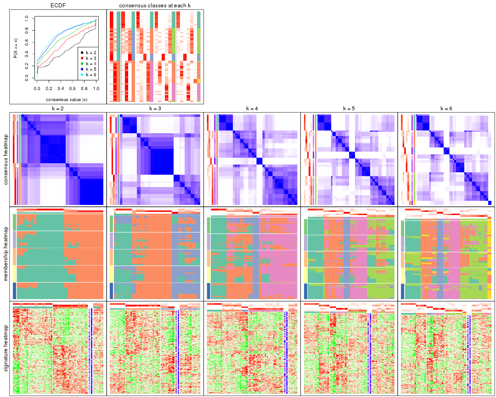
The plots are:
k and the heatmap of
predicted classes for each k.k.k.k.All the plots in panels can be made by individual functions and they are plotted later in this section.
select_partition_number() produces several plots showing different
statistics for choosing “optimized” k. There are following statistics:
k;k, the area increased is defined as \(A_k - A_{k-1}\).The detailed explanations of these statistics can be found in the cola vignette.
Generally speaking, lower PAC score, higher mean silhouette score or higher
concordance corresponds to better partition. Rand index and Jaccard index
measure how similar the current partition is compared to partition with k-1.
If they are too similar, we won't accept k is better than k-1.
select_partition_number(res)
The numeric values for all these statistics can be obtained by get_stats().
get_stats(res)
#> k 1-PAC mean_silhouette concordance area_increased Rand Jaccard
#> 2 2 0.418 0.747 0.884 0.4722 0.500 0.500
#> 3 3 0.424 0.645 0.793 0.2404 0.860 0.719
#> 4 4 0.444 0.694 0.746 0.1490 0.913 0.772
#> 5 5 0.494 0.633 0.743 0.0959 0.886 0.654
#> 6 6 0.539 0.658 0.734 0.0290 0.983 0.924
suggest_best_k() suggests the best \(k\) based on these statistics. The rules are as follows:
NA.suggest_best_k(res)
#> [1] 2
Following shows the table of the partitions (You need to click the show/hide
code output link to see it). The membership matrix (columns with name p*)
is inferred by
clue::cl_consensus()
function with the SE method. Basically the value in the membership matrix
represents the probability to belong to a certain group. The finall class
label for an item is determined with the group with highest probability it
belongs to.
In get_classes() function, the entropy is calculated from the membership
matrix and the silhouette score is calculated from the consensus matrix.
cbind(get_classes(res, k = 2), get_membership(res, k = 2))
#> class entropy silhouette p1 p2
#> ERR946976 1 0.0000 0.8462 1.000 0.000
#> ERR947001 1 0.0000 0.8462 1.000 0.000
#> ERR946975 2 0.8608 0.6119 0.284 0.716
#> ERR947000 2 0.8608 0.6119 0.284 0.716
#> ERR946972 1 0.0376 0.8476 0.996 0.004
#> ERR946997 1 0.0376 0.8476 0.996 0.004
#> ERR946986 1 0.9944 0.2677 0.544 0.456
#> ERR947011 1 0.9944 0.2677 0.544 0.456
#> ERR946977 2 0.9909 0.1038 0.444 0.556
#> ERR947002 2 0.9909 0.1038 0.444 0.556
#> ERR946974 1 0.8327 0.6928 0.736 0.264
#> ERR946999 1 0.8327 0.6928 0.736 0.264
#> ERR946971 1 0.0000 0.8462 1.000 0.000
#> ERR946996 1 0.0000 0.8462 1.000 0.000
#> ERR946992 2 0.0000 0.8688 0.000 1.000
#> ERR947017 2 0.0000 0.8688 0.000 1.000
#> ERR946984 2 0.9732 0.2441 0.404 0.596
#> ERR947009 2 0.9732 0.2441 0.404 0.596
#> ERR946987 2 0.0000 0.8688 0.000 1.000
#> ERR947012 2 0.0000 0.8688 0.000 1.000
#> ERR946991 2 0.0000 0.8688 0.000 1.000
#> ERR947016 2 0.0000 0.8688 0.000 1.000
#> ERR946983 2 0.7299 0.7191 0.204 0.796
#> ERR947008 2 0.7299 0.7191 0.204 0.796
#> ERR946970 1 0.3431 0.8302 0.936 0.064
#> ERR946995 1 0.3431 0.8302 0.936 0.064
#> ERR946969 1 0.9833 0.3654 0.576 0.424
#> ERR946994 1 0.9833 0.3654 0.576 0.424
#> ERR946982 2 0.0000 0.8688 0.000 1.000
#> ERR947007 2 0.0000 0.8688 0.000 1.000
#> ERR946988 2 0.9988 -0.0479 0.480 0.520
#> ERR947013 2 0.9988 -0.0479 0.480 0.520
#> ERR946985 2 0.0000 0.8688 0.000 1.000
#> ERR947010 2 0.0000 0.8688 0.000 1.000
#> ERR946989 1 0.8207 0.7019 0.744 0.256
#> ERR947014 1 0.8207 0.7019 0.744 0.256
#> ERR946968 1 0.0000 0.8462 1.000 0.000
#> ERR946993 1 0.0000 0.8462 1.000 0.000
#> ERR946990 1 0.9608 0.4599 0.616 0.384
#> ERR947015 1 0.9608 0.4599 0.616 0.384
#> ERR946980 1 0.9944 0.2677 0.544 0.456
#> ERR947005 1 0.9944 0.2677 0.544 0.456
#> ERR946978 1 0.0376 0.8478 0.996 0.004
#> ERR947003 1 0.0376 0.8478 0.996 0.004
#> ERR946979 2 0.0000 0.8688 0.000 1.000
#> ERR947004 2 0.0000 0.8688 0.000 1.000
#> ERR946957 1 0.0000 0.8462 1.000 0.000
#> ERR946962 1 0.0000 0.8462 1.000 0.000
#> ERR946958 1 0.0376 0.8478 0.996 0.004
#> ERR946963 1 0.0376 0.8478 0.996 0.004
#> ERR946959 1 0.0376 0.8478 0.996 0.004
#> ERR946964 1 0.0376 0.8478 0.996 0.004
#> ERR946967 1 0.0376 0.8476 0.996 0.004
#> ERR862690 1 0.0376 0.8476 0.996 0.004
#> ERR914278 2 0.5408 0.7957 0.124 0.876
#> ERR914314 2 0.5408 0.7957 0.124 0.876
#> ERR914279 1 0.0938 0.8481 0.988 0.012
#> ERR914315 1 0.0938 0.8481 0.988 0.012
#> ERR914280 2 0.8608 0.6119 0.284 0.716
#> ERR914316 2 0.8608 0.6119 0.284 0.716
#> ERR914281 2 0.0000 0.8688 0.000 1.000
#> ERR914317 2 0.0000 0.8688 0.000 1.000
#> ERR914282 2 0.0000 0.8688 0.000 1.000
#> ERR914318 2 0.0000 0.8688 0.000 1.000
#> ERR914283 1 0.0376 0.8478 0.996 0.004
#> ERR914319 1 0.0376 0.8478 0.996 0.004
#> ERR914284 1 0.6623 0.7780 0.828 0.172
#> ERR914320 1 0.6623 0.7780 0.828 0.172
#> ERR914285 1 0.8267 0.7005 0.740 0.260
#> ERR914321 1 0.8267 0.7005 0.740 0.260
#> ERR914286 2 0.8327 0.6441 0.264 0.736
#> ERR914322 2 0.8327 0.6441 0.264 0.736
#> ERR914287 1 0.0938 0.8481 0.988 0.012
#> ERR914323 1 0.0938 0.8481 0.988 0.012
#> ERR914288 1 0.8327 0.6899 0.736 0.264
#> ERR914324 1 0.8327 0.6899 0.736 0.264
#> ERR914289 1 0.6623 0.7780 0.828 0.172
#> ERR914290 1 0.0938 0.8481 0.988 0.012
#> ERR914326 1 0.0938 0.8481 0.988 0.012
#> ERR914291 2 0.7299 0.7191 0.204 0.796
#> ERR914327 2 0.7299 0.7191 0.204 0.796
#> ERR914292 1 0.7950 0.7204 0.760 0.240
#> ERR914328 1 0.7950 0.7204 0.760 0.240
#> ERR914293 1 0.0938 0.8481 0.988 0.012
#> ERR914329 1 0.0938 0.8481 0.988 0.012
#> ERR914294 2 0.0000 0.8688 0.000 1.000
#> ERR914330 2 0.0000 0.8688 0.000 1.000
#> ERR914295 1 0.7602 0.7420 0.780 0.220
#> ERR914331 1 0.7602 0.7420 0.780 0.220
#> ERR914296 1 0.0376 0.8478 0.996 0.004
#> ERR914332 1 0.0376 0.8478 0.996 0.004
#> ERR914297 2 0.0000 0.8688 0.000 1.000
#> ERR914333 2 0.0000 0.8688 0.000 1.000
#> ERR914298 1 0.0000 0.8462 1.000 0.000
#> ERR914334 1 0.0000 0.8462 1.000 0.000
#> ERR914299 2 0.7299 0.7191 0.204 0.796
#> ERR914335 2 0.7299 0.7191 0.204 0.796
#> ERR914300 1 0.7602 0.7420 0.780 0.220
#> ERR914336 1 0.7602 0.7420 0.780 0.220
#> ERR914301 2 0.0000 0.8688 0.000 1.000
#> ERR914337 2 0.0000 0.8688 0.000 1.000
#> ERR914302 2 0.0000 0.8688 0.000 1.000
#> ERR914338 2 0.0000 0.8688 0.000 1.000
#> ERR914303 2 0.0000 0.8688 0.000 1.000
#> ERR914339 2 0.0000 0.8688 0.000 1.000
#> ERR914304 2 0.0376 0.8672 0.004 0.996
#> ERR914340 2 0.0376 0.8672 0.004 0.996
#> ERR914305 2 0.0000 0.8688 0.000 1.000
#> ERR914341 2 0.0000 0.8688 0.000 1.000
#> ERR914306 2 0.0000 0.8688 0.000 1.000
#> ERR914342 2 0.0000 0.8688 0.000 1.000
#> ERR914307 1 0.9608 0.4612 0.616 0.384
#> ERR914343 1 0.9608 0.4612 0.616 0.384
#> ERR914308 1 0.0938 0.8481 0.988 0.012
#> ERR914344 1 0.0938 0.8481 0.988 0.012
#> ERR914309 1 0.0938 0.8481 0.988 0.012
#> ERR914345 1 0.0938 0.8481 0.988 0.012
#> ERR914310 1 0.7674 0.7383 0.776 0.224
#> ERR914346 1 0.7674 0.7383 0.776 0.224
#> ERR914311 2 0.0000 0.8688 0.000 1.000
#> ERR914347 2 0.0000 0.8688 0.000 1.000
#> ERR914312 2 0.5408 0.7957 0.124 0.876
#> ERR914348 2 0.5408 0.7957 0.124 0.876
#> ERR914313 2 0.0000 0.8688 0.000 1.000
#> ERR914349 2 0.0000 0.8688 0.000 1.000
#> ERR946960 1 0.0000 0.8462 1.000 0.000
#> ERR946965 1 0.0000 0.8462 1.000 0.000
#> ERR946966 2 0.7299 0.7191 0.204 0.796
#> ERR946973 1 0.0000 0.8462 1.000 0.000
#> ERR946998 1 0.0000 0.8462 1.000 0.000
#> ERR946981 2 0.0376 0.8672 0.004 0.996
#> ERR947006 2 0.0376 0.8672 0.004 0.996
#> ERR914325 1 0.6623 0.7780 0.828 0.172
cbind(get_classes(res, k = 3), get_membership(res, k = 3))
#> class entropy silhouette p1 p2 p3
#> ERR946976 3 0.5591 0.4664 0.304 0.000 0.696
#> ERR947001 3 0.5591 0.4664 0.304 0.000 0.696
#> ERR946975 2 0.5763 0.6260 0.276 0.716 0.008
#> ERR947000 2 0.5763 0.6260 0.276 0.716 0.008
#> ERR946972 3 0.0000 0.5320 0.000 0.000 1.000
#> ERR946997 3 0.0000 0.5320 0.000 0.000 1.000
#> ERR946986 3 0.8209 0.3592 0.072 0.456 0.472
#> ERR947011 3 0.8209 0.3592 0.072 0.456 0.472
#> ERR946977 2 0.7299 -0.0781 0.032 0.556 0.412
#> ERR947002 2 0.7299 -0.0781 0.032 0.556 0.412
#> ERR946974 3 0.8111 0.6346 0.112 0.264 0.624
#> ERR946999 3 0.8111 0.6346 0.112 0.264 0.624
#> ERR946971 3 0.0237 0.5321 0.004 0.000 0.996
#> ERR946996 3 0.0237 0.5321 0.004 0.000 0.996
#> ERR946992 2 0.0000 0.8627 0.000 1.000 0.000
#> ERR947017 2 0.0000 0.8627 0.000 1.000 0.000
#> ERR946984 2 0.7067 0.0739 0.028 0.596 0.376
#> ERR947009 2 0.7067 0.0739 0.028 0.596 0.376
#> ERR946987 2 0.0000 0.8627 0.000 1.000 0.000
#> ERR947012 2 0.0000 0.8627 0.000 1.000 0.000
#> ERR946991 2 0.0000 0.8627 0.000 1.000 0.000
#> ERR947016 2 0.0000 0.8627 0.000 1.000 0.000
#> ERR946983 2 0.4605 0.7229 0.204 0.796 0.000
#> ERR947008 2 0.4605 0.7229 0.204 0.796 0.000
#> ERR946970 3 0.7424 0.5221 0.288 0.064 0.648
#> ERR946995 3 0.7424 0.5221 0.288 0.064 0.648
#> ERR946969 3 0.8445 0.4299 0.088 0.424 0.488
#> ERR946994 3 0.8445 0.4299 0.088 0.424 0.488
#> ERR946982 2 0.0000 0.8627 0.000 1.000 0.000
#> ERR947007 2 0.0000 0.8627 0.000 1.000 0.000
#> ERR946988 2 0.7641 -0.2054 0.044 0.520 0.436
#> ERR947013 2 0.7641 -0.2054 0.044 0.520 0.436
#> ERR946985 2 0.0000 0.8627 0.000 1.000 0.000
#> ERR947010 2 0.0000 0.8627 0.000 1.000 0.000
#> ERR946989 3 0.8229 0.6336 0.124 0.256 0.620
#> ERR947014 3 0.8229 0.6336 0.124 0.256 0.620
#> ERR946968 3 0.5465 0.4788 0.288 0.000 0.712
#> ERR946993 3 0.5465 0.4788 0.288 0.000 0.712
#> ERR946990 3 0.8775 0.5125 0.116 0.384 0.500
#> ERR947015 3 0.8775 0.5125 0.116 0.384 0.500
#> ERR946980 3 0.8209 0.3592 0.072 0.456 0.472
#> ERR947005 3 0.8209 0.3592 0.072 0.456 0.472
#> ERR946978 1 0.2096 0.8620 0.944 0.004 0.052
#> ERR947003 1 0.2096 0.8620 0.944 0.004 0.052
#> ERR946979 2 0.0000 0.8627 0.000 1.000 0.000
#> ERR947004 2 0.0000 0.8627 0.000 1.000 0.000
#> ERR946957 3 0.0237 0.5321 0.004 0.000 0.996
#> ERR946962 3 0.0237 0.5321 0.004 0.000 0.996
#> ERR946958 1 0.2096 0.8620 0.944 0.004 0.052
#> ERR946963 1 0.2096 0.8620 0.944 0.004 0.052
#> ERR946959 1 0.2096 0.8620 0.944 0.004 0.052
#> ERR946964 1 0.2096 0.8620 0.944 0.004 0.052
#> ERR946967 3 0.0000 0.5320 0.000 0.000 1.000
#> ERR862690 3 0.0000 0.5320 0.000 0.000 1.000
#> ERR914278 2 0.3966 0.7831 0.100 0.876 0.024
#> ERR914314 2 0.3966 0.7831 0.100 0.876 0.024
#> ERR914279 1 0.3120 0.8556 0.908 0.012 0.080
#> ERR914315 1 0.3120 0.8556 0.908 0.012 0.080
#> ERR914280 2 0.5763 0.6260 0.276 0.716 0.008
#> ERR914316 2 0.5763 0.6260 0.276 0.716 0.008
#> ERR914281 2 0.0000 0.8627 0.000 1.000 0.000
#> ERR914317 2 0.0000 0.8627 0.000 1.000 0.000
#> ERR914282 2 0.0000 0.8627 0.000 1.000 0.000
#> ERR914318 2 0.0000 0.8627 0.000 1.000 0.000
#> ERR914283 1 0.2096 0.8620 0.944 0.004 0.052
#> ERR914319 1 0.2096 0.8620 0.944 0.004 0.052
#> ERR914284 3 0.9239 0.4804 0.328 0.172 0.500
#> ERR914320 3 0.9239 0.4804 0.328 0.172 0.500
#> ERR914285 3 0.8141 0.6345 0.116 0.260 0.624
#> ERR914321 3 0.8141 0.6345 0.116 0.260 0.624
#> ERR914286 2 0.5986 0.6557 0.240 0.736 0.024
#> ERR914322 2 0.5986 0.6557 0.240 0.736 0.024
#> ERR914287 1 0.2939 0.8633 0.916 0.012 0.072
#> ERR914323 1 0.2939 0.8633 0.916 0.012 0.072
#> ERR914288 3 0.9796 0.4765 0.304 0.264 0.432
#> ERR914324 3 0.9796 0.4765 0.304 0.264 0.432
#> ERR914289 3 0.9239 0.4804 0.328 0.172 0.500
#> ERR914290 1 0.2939 0.8633 0.916 0.012 0.072
#> ERR914326 1 0.2939 0.8633 0.916 0.012 0.072
#> ERR914291 2 0.4605 0.7229 0.204 0.796 0.000
#> ERR914327 2 0.4605 0.7229 0.204 0.796 0.000
#> ERR914292 3 0.9686 0.4835 0.308 0.240 0.452
#> ERR914328 3 0.9686 0.4835 0.308 0.240 0.452
#> ERR914293 1 0.2939 0.8633 0.916 0.012 0.072
#> ERR914329 1 0.2939 0.8633 0.916 0.012 0.072
#> ERR914294 2 0.0000 0.8627 0.000 1.000 0.000
#> ERR914330 2 0.0000 0.8627 0.000 1.000 0.000
#> ERR914295 1 0.9713 -0.3000 0.404 0.220 0.376
#> ERR914331 1 0.9713 -0.3000 0.404 0.220 0.376
#> ERR914296 1 0.2096 0.8620 0.944 0.004 0.052
#> ERR914332 1 0.2096 0.8620 0.944 0.004 0.052
#> ERR914297 2 0.0000 0.8627 0.000 1.000 0.000
#> ERR914333 2 0.0000 0.8627 0.000 1.000 0.000
#> ERR914298 1 0.0000 0.8004 1.000 0.000 0.000
#> ERR914334 1 0.0000 0.8004 1.000 0.000 0.000
#> ERR914299 2 0.4605 0.7229 0.204 0.796 0.000
#> ERR914335 2 0.4605 0.7229 0.204 0.796 0.000
#> ERR914300 1 0.9713 -0.3000 0.404 0.220 0.376
#> ERR914336 1 0.9713 -0.3000 0.404 0.220 0.376
#> ERR914301 2 0.0000 0.8627 0.000 1.000 0.000
#> ERR914337 2 0.0000 0.8627 0.000 1.000 0.000
#> ERR914302 2 0.0000 0.8627 0.000 1.000 0.000
#> ERR914338 2 0.0000 0.8627 0.000 1.000 0.000
#> ERR914303 2 0.0000 0.8627 0.000 1.000 0.000
#> ERR914339 2 0.0000 0.8627 0.000 1.000 0.000
#> ERR914304 2 0.0237 0.8606 0.004 0.996 0.000
#> ERR914340 2 0.0237 0.8606 0.004 0.996 0.000
#> ERR914305 2 0.0000 0.8627 0.000 1.000 0.000
#> ERR914341 2 0.0000 0.8627 0.000 1.000 0.000
#> ERR914306 2 0.0000 0.8627 0.000 1.000 0.000
#> ERR914342 2 0.0000 0.8627 0.000 1.000 0.000
#> ERR914307 3 0.8775 0.5121 0.116 0.384 0.500
#> ERR914343 3 0.8775 0.5121 0.116 0.384 0.500
#> ERR914308 1 0.2939 0.8633 0.916 0.012 0.072
#> ERR914344 1 0.2939 0.8633 0.916 0.012 0.072
#> ERR914309 1 0.2939 0.8633 0.916 0.012 0.072
#> ERR914345 1 0.2939 0.8633 0.916 0.012 0.072
#> ERR914310 3 0.9700 0.4162 0.348 0.224 0.428
#> ERR914346 3 0.9700 0.4162 0.348 0.224 0.428
#> ERR914311 2 0.0000 0.8627 0.000 1.000 0.000
#> ERR914347 2 0.0000 0.8627 0.000 1.000 0.000
#> ERR914312 2 0.3966 0.7831 0.100 0.876 0.024
#> ERR914348 2 0.3966 0.7831 0.100 0.876 0.024
#> ERR914313 2 0.0000 0.8627 0.000 1.000 0.000
#> ERR914349 2 0.0000 0.8627 0.000 1.000 0.000
#> ERR946960 3 0.5591 0.4664 0.304 0.000 0.696
#> ERR946965 3 0.5591 0.4664 0.304 0.000 0.696
#> ERR946966 2 0.4605 0.7229 0.204 0.796 0.000
#> ERR946973 3 0.0237 0.5321 0.004 0.000 0.996
#> ERR946998 3 0.0237 0.5321 0.004 0.000 0.996
#> ERR946981 2 0.0237 0.8611 0.004 0.996 0.000
#> ERR947006 2 0.0237 0.8611 0.004 0.996 0.000
#> ERR914325 3 0.9239 0.4804 0.328 0.172 0.500
cbind(get_classes(res, k = 4), get_membership(res, k = 4))
#> class entropy silhouette p1 p2 p3 p4
#> ERR946976 2 0.644 0.545 0.292 0.608 0.100 0.000
#> ERR947001 2 0.644 0.545 0.292 0.608 0.100 0.000
#> ERR946975 4 0.728 0.519 0.264 0.164 0.008 0.564
#> ERR947000 4 0.728 0.519 0.264 0.164 0.008 0.564
#> ERR946972 3 0.156 0.997 0.000 0.056 0.944 0.000
#> ERR946997 3 0.156 0.997 0.000 0.056 0.944 0.000
#> ERR946986 2 0.700 0.480 0.108 0.520 0.004 0.368
#> ERR947011 2 0.700 0.480 0.108 0.520 0.004 0.368
#> ERR946977 4 0.720 -0.260 0.080 0.436 0.020 0.464
#> ERR947002 4 0.720 -0.260 0.080 0.436 0.020 0.464
#> ERR946974 2 0.479 0.675 0.096 0.816 0.036 0.052
#> ERR946999 2 0.479 0.675 0.096 0.816 0.036 0.052
#> ERR946971 3 0.174 0.998 0.004 0.056 0.940 0.000
#> ERR946996 3 0.174 0.998 0.004 0.056 0.940 0.000
#> ERR946992 4 0.280 0.756 0.000 0.108 0.008 0.884
#> ERR947017 4 0.280 0.756 0.000 0.108 0.008 0.884
#> ERR946984 4 0.713 -0.128 0.080 0.380 0.020 0.520
#> ERR947009 4 0.713 -0.128 0.080 0.380 0.020 0.520
#> ERR946987 4 0.439 0.724 0.000 0.236 0.012 0.752
#> ERR947012 4 0.439 0.724 0.000 0.236 0.012 0.752
#> ERR946991 4 0.193 0.748 0.000 0.036 0.024 0.940
#> ERR947016 4 0.193 0.748 0.000 0.036 0.024 0.940
#> ERR946983 4 0.574 0.622 0.204 0.060 0.016 0.720
#> ERR947008 4 0.574 0.622 0.204 0.060 0.016 0.720
#> ERR946970 2 0.612 0.607 0.280 0.656 0.044 0.020
#> ERR946995 2 0.612 0.607 0.280 0.656 0.044 0.020
#> ERR946969 2 0.705 0.529 0.120 0.536 0.004 0.340
#> ERR946994 2 0.705 0.529 0.120 0.536 0.004 0.340
#> ERR946982 4 0.421 0.727 0.000 0.216 0.012 0.772
#> ERR947007 4 0.421 0.727 0.000 0.216 0.012 0.772
#> ERR946988 2 0.692 0.333 0.092 0.468 0.004 0.436
#> ERR947013 2 0.692 0.333 0.092 0.468 0.004 0.436
#> ERR946985 4 0.439 0.724 0.000 0.236 0.012 0.752
#> ERR947010 4 0.439 0.724 0.000 0.236 0.012 0.752
#> ERR946989 2 0.497 0.675 0.108 0.804 0.036 0.052
#> ERR947014 2 0.497 0.675 0.108 0.804 0.036 0.052
#> ERR946968 2 0.645 0.553 0.276 0.616 0.108 0.000
#> ERR946993 2 0.645 0.553 0.276 0.616 0.108 0.000
#> ERR946990 2 0.722 0.604 0.160 0.552 0.004 0.284
#> ERR947015 2 0.722 0.604 0.160 0.552 0.004 0.284
#> ERR946980 2 0.700 0.480 0.108 0.520 0.004 0.368
#> ERR947005 2 0.700 0.480 0.108 0.520 0.004 0.368
#> ERR946978 1 0.000 0.930 1.000 0.000 0.000 0.000
#> ERR947003 1 0.000 0.930 1.000 0.000 0.000 0.000
#> ERR946979 4 0.300 0.726 0.000 0.064 0.044 0.892
#> ERR947004 4 0.300 0.726 0.000 0.064 0.044 0.892
#> ERR946957 3 0.174 0.998 0.004 0.056 0.940 0.000
#> ERR946962 3 0.174 0.998 0.004 0.056 0.940 0.000
#> ERR946958 1 0.000 0.930 1.000 0.000 0.000 0.000
#> ERR946963 1 0.000 0.930 1.000 0.000 0.000 0.000
#> ERR946959 1 0.000 0.930 1.000 0.000 0.000 0.000
#> ERR946964 1 0.000 0.930 1.000 0.000 0.000 0.000
#> ERR946967 3 0.156 0.997 0.000 0.056 0.944 0.000
#> ERR862690 3 0.156 0.997 0.000 0.056 0.944 0.000
#> ERR914278 4 0.621 0.673 0.092 0.212 0.012 0.684
#> ERR914314 4 0.621 0.673 0.092 0.212 0.012 0.684
#> ERR914279 1 0.220 0.919 0.916 0.080 0.000 0.004
#> ERR914315 1 0.220 0.919 0.916 0.080 0.000 0.004
#> ERR914280 4 0.728 0.519 0.264 0.164 0.008 0.564
#> ERR914316 4 0.728 0.519 0.264 0.164 0.008 0.564
#> ERR914281 4 0.442 0.725 0.000 0.240 0.012 0.748
#> ERR914317 4 0.442 0.725 0.000 0.240 0.012 0.748
#> ERR914282 4 0.302 0.733 0.004 0.056 0.044 0.896
#> ERR914318 4 0.302 0.733 0.004 0.056 0.044 0.896
#> ERR914283 1 0.000 0.930 1.000 0.000 0.000 0.000
#> ERR914319 1 0.000 0.930 1.000 0.000 0.000 0.000
#> ERR914284 2 0.643 0.626 0.320 0.612 0.024 0.044
#> ERR914320 2 0.643 0.626 0.320 0.612 0.024 0.044
#> ERR914285 2 0.477 0.674 0.100 0.816 0.036 0.048
#> ERR914321 2 0.477 0.674 0.100 0.816 0.036 0.048
#> ERR914286 4 0.695 0.561 0.236 0.136 0.012 0.616
#> ERR914322 4 0.695 0.561 0.236 0.136 0.012 0.616
#> ERR914287 1 0.205 0.929 0.924 0.072 0.000 0.004
#> ERR914323 1 0.205 0.929 0.924 0.072 0.000 0.004
#> ERR914288 2 0.685 0.640 0.300 0.568 0.000 0.132
#> ERR914324 2 0.685 0.640 0.300 0.568 0.000 0.132
#> ERR914289 2 0.643 0.626 0.320 0.612 0.024 0.044
#> ERR914290 1 0.205 0.929 0.924 0.072 0.000 0.004
#> ERR914326 1 0.205 0.929 0.924 0.072 0.000 0.004
#> ERR914291 4 0.578 0.618 0.208 0.060 0.016 0.716
#> ERR914327 4 0.578 0.618 0.208 0.060 0.016 0.716
#> ERR914292 2 0.658 0.642 0.300 0.592 0.000 0.108
#> ERR914328 2 0.658 0.642 0.300 0.592 0.000 0.108
#> ERR914293 1 0.205 0.929 0.924 0.072 0.000 0.004
#> ERR914329 1 0.205 0.929 0.924 0.072 0.000 0.004
#> ERR914294 4 0.421 0.727 0.000 0.216 0.012 0.772
#> ERR914330 4 0.421 0.727 0.000 0.216 0.012 0.772
#> ERR914295 2 0.662 0.494 0.396 0.532 0.008 0.064
#> ERR914331 2 0.662 0.494 0.396 0.532 0.008 0.064
#> ERR914296 1 0.000 0.930 1.000 0.000 0.000 0.000
#> ERR914332 1 0.000 0.930 1.000 0.000 0.000 0.000
#> ERR914297 4 0.284 0.753 0.000 0.088 0.020 0.892
#> ERR914333 4 0.284 0.753 0.000 0.088 0.020 0.892
#> ERR914298 1 0.208 0.832 0.916 0.084 0.000 0.000
#> ERR914334 1 0.208 0.832 0.916 0.084 0.000 0.000
#> ERR914299 4 0.578 0.618 0.208 0.060 0.016 0.716
#> ERR914335 4 0.578 0.618 0.208 0.060 0.016 0.716
#> ERR914300 2 0.662 0.494 0.396 0.532 0.008 0.064
#> ERR914336 2 0.662 0.494 0.396 0.532 0.008 0.064
#> ERR914301 4 0.284 0.753 0.000 0.088 0.020 0.892
#> ERR914337 4 0.284 0.753 0.000 0.088 0.020 0.892
#> ERR914302 4 0.421 0.727 0.000 0.216 0.012 0.772
#> ERR914338 4 0.421 0.727 0.000 0.216 0.012 0.772
#> ERR914303 4 0.300 0.726 0.000 0.064 0.044 0.892
#> ERR914339 4 0.300 0.726 0.000 0.064 0.044 0.892
#> ERR914304 4 0.255 0.741 0.008 0.044 0.028 0.920
#> ERR914340 4 0.255 0.741 0.008 0.044 0.028 0.920
#> ERR914305 4 0.300 0.726 0.000 0.064 0.044 0.892
#> ERR914341 4 0.300 0.726 0.000 0.064 0.044 0.892
#> ERR914306 4 0.284 0.753 0.000 0.088 0.020 0.892
#> ERR914342 4 0.284 0.753 0.000 0.088 0.020 0.892
#> ERR914307 2 0.722 0.604 0.160 0.552 0.004 0.284
#> ERR914343 2 0.722 0.604 0.160 0.552 0.004 0.284
#> ERR914308 1 0.205 0.929 0.924 0.072 0.000 0.004
#> ERR914344 1 0.205 0.929 0.924 0.072 0.000 0.004
#> ERR914309 1 0.205 0.929 0.924 0.072 0.000 0.004
#> ERR914345 1 0.205 0.929 0.924 0.072 0.000 0.004
#> ERR914310 2 0.651 0.593 0.340 0.584 0.008 0.068
#> ERR914346 2 0.651 0.593 0.340 0.584 0.008 0.068
#> ERR914311 4 0.302 0.733 0.004 0.056 0.044 0.896
#> ERR914347 4 0.302 0.733 0.004 0.056 0.044 0.896
#> ERR914312 4 0.621 0.673 0.092 0.212 0.012 0.684
#> ERR914348 4 0.621 0.673 0.092 0.212 0.012 0.684
#> ERR914313 4 0.439 0.724 0.000 0.236 0.012 0.752
#> ERR914349 4 0.439 0.724 0.000 0.236 0.012 0.752
#> ERR946960 2 0.644 0.545 0.292 0.608 0.100 0.000
#> ERR946965 2 0.644 0.545 0.292 0.608 0.100 0.000
#> ERR946966 4 0.578 0.618 0.208 0.060 0.016 0.716
#> ERR946973 3 0.174 0.998 0.004 0.056 0.940 0.000
#> ERR946998 3 0.174 0.998 0.004 0.056 0.940 0.000
#> ERR946981 4 0.211 0.749 0.004 0.036 0.024 0.936
#> ERR947006 4 0.211 0.749 0.004 0.036 0.024 0.936
#> ERR914325 2 0.643 0.626 0.320 0.612 0.024 0.044
cbind(get_classes(res, k = 5), get_membership(res, k = 5))
#> class entropy silhouette p1 p2 p3 p4 p5
#> ERR946976 5 0.4237 0.575 0.200 0.000 0.048 0.000 0.752
#> ERR947001 5 0.4237 0.575 0.200 0.000 0.048 0.000 0.752
#> ERR946975 4 0.7084 0.385 0.244 0.184 0.000 0.524 0.048
#> ERR947000 4 0.7084 0.385 0.244 0.184 0.000 0.524 0.048
#> ERR946972 3 0.0290 0.984 0.000 0.000 0.992 0.008 0.000
#> ERR946997 3 0.0290 0.984 0.000 0.000 0.992 0.008 0.000
#> ERR946986 5 0.6537 0.458 0.040 0.312 0.000 0.100 0.548
#> ERR947011 5 0.6537 0.458 0.040 0.312 0.000 0.100 0.548
#> ERR946977 5 0.5973 0.213 0.020 0.452 0.000 0.060 0.468
#> ERR947002 5 0.5973 0.213 0.020 0.452 0.000 0.060 0.468
#> ERR946974 5 0.3491 0.643 0.004 0.000 0.000 0.228 0.768
#> ERR946999 5 0.3491 0.643 0.004 0.000 0.000 0.228 0.768
#> ERR946971 3 0.0771 0.989 0.004 0.000 0.976 0.000 0.020
#> ERR946996 3 0.0771 0.989 0.004 0.000 0.976 0.000 0.020
#> ERR946992 4 0.3663 0.493 0.000 0.208 0.000 0.776 0.016
#> ERR947017 4 0.3663 0.493 0.000 0.208 0.000 0.776 0.016
#> ERR946984 2 0.6061 -0.135 0.020 0.484 0.000 0.068 0.428
#> ERR947009 2 0.6061 -0.135 0.020 0.484 0.000 0.068 0.428
#> ERR946987 4 0.0404 0.751 0.000 0.000 0.000 0.988 0.012
#> ERR947012 4 0.0404 0.751 0.000 0.000 0.000 0.988 0.012
#> ERR946991 2 0.4467 0.510 0.000 0.640 0.000 0.344 0.016
#> ERR947016 2 0.4467 0.510 0.000 0.640 0.000 0.344 0.016
#> ERR946983 2 0.6813 0.371 0.200 0.492 0.000 0.292 0.016
#> ERR947008 2 0.6813 0.371 0.200 0.492 0.000 0.292 0.016
#> ERR946970 5 0.3769 0.626 0.172 0.000 0.004 0.028 0.796
#> ERR946995 5 0.3769 0.626 0.172 0.000 0.004 0.028 0.796
#> ERR946969 5 0.6536 0.503 0.048 0.280 0.000 0.100 0.572
#> ERR946994 5 0.6536 0.503 0.048 0.280 0.000 0.100 0.572
#> ERR946982 4 0.0510 0.747 0.000 0.016 0.000 0.984 0.000
#> ERR947007 4 0.0510 0.747 0.000 0.016 0.000 0.984 0.000
#> ERR946988 5 0.6206 0.332 0.020 0.392 0.000 0.084 0.504
#> ERR947013 5 0.6206 0.332 0.020 0.392 0.000 0.084 0.504
#> ERR946985 4 0.0404 0.751 0.000 0.000 0.000 0.988 0.012
#> ERR947010 4 0.0404 0.751 0.000 0.000 0.000 0.988 0.012
#> ERR946989 5 0.3759 0.649 0.016 0.000 0.000 0.220 0.764
#> ERR947014 5 0.3759 0.649 0.016 0.000 0.000 0.220 0.764
#> ERR946968 5 0.4028 0.589 0.176 0.000 0.048 0.000 0.776
#> ERR946993 5 0.4028 0.589 0.176 0.000 0.048 0.000 0.776
#> ERR946990 5 0.7010 0.588 0.084 0.172 0.000 0.168 0.576
#> ERR947015 5 0.7010 0.588 0.084 0.172 0.000 0.168 0.576
#> ERR946980 5 0.6537 0.458 0.040 0.312 0.000 0.100 0.548
#> ERR947005 5 0.6537 0.458 0.040 0.312 0.000 0.100 0.548
#> ERR946978 1 0.1410 0.921 0.940 0.000 0.000 0.000 0.060
#> ERR947003 1 0.1410 0.921 0.940 0.000 0.000 0.000 0.060
#> ERR946979 2 0.0703 0.602 0.000 0.976 0.000 0.024 0.000
#> ERR947004 2 0.0703 0.602 0.000 0.976 0.000 0.024 0.000
#> ERR946957 3 0.0771 0.989 0.004 0.000 0.976 0.000 0.020
#> ERR946962 3 0.0771 0.989 0.004 0.000 0.976 0.000 0.020
#> ERR946958 1 0.1410 0.921 0.940 0.000 0.000 0.000 0.060
#> ERR946963 1 0.1410 0.921 0.940 0.000 0.000 0.000 0.060
#> ERR946959 1 0.1410 0.921 0.940 0.000 0.000 0.000 0.060
#> ERR946964 1 0.1410 0.921 0.940 0.000 0.000 0.000 0.060
#> ERR946967 3 0.0290 0.984 0.000 0.000 0.992 0.008 0.000
#> ERR862690 3 0.0290 0.984 0.000 0.000 0.992 0.008 0.000
#> ERR914278 4 0.5093 0.641 0.072 0.120 0.000 0.752 0.056
#> ERR914314 4 0.5093 0.641 0.072 0.120 0.000 0.752 0.056
#> ERR914279 1 0.2886 0.911 0.844 0.000 0.000 0.008 0.148
#> ERR914315 1 0.2886 0.911 0.844 0.000 0.000 0.008 0.148
#> ERR914280 4 0.7084 0.385 0.244 0.184 0.000 0.524 0.048
#> ERR914316 4 0.7084 0.385 0.244 0.184 0.000 0.524 0.048
#> ERR914281 4 0.0807 0.749 0.000 0.012 0.000 0.976 0.012
#> ERR914317 4 0.0807 0.749 0.000 0.012 0.000 0.976 0.012
#> ERR914282 2 0.3053 0.609 0.000 0.828 0.000 0.164 0.008
#> ERR914318 2 0.3053 0.609 0.000 0.828 0.000 0.164 0.008
#> ERR914283 1 0.1410 0.921 0.940 0.000 0.000 0.000 0.060
#> ERR914319 1 0.1410 0.921 0.940 0.000 0.000 0.000 0.060
#> ERR914284 5 0.5489 0.624 0.216 0.000 0.000 0.136 0.648
#> ERR914320 5 0.5489 0.624 0.216 0.000 0.000 0.136 0.648
#> ERR914285 5 0.3461 0.643 0.004 0.000 0.000 0.224 0.772
#> ERR914321 5 0.3461 0.643 0.004 0.000 0.000 0.224 0.772
#> ERR914286 4 0.7564 0.126 0.212 0.288 0.000 0.440 0.060
#> ERR914322 4 0.7564 0.126 0.212 0.288 0.000 0.440 0.060
#> ERR914287 1 0.2798 0.920 0.852 0.000 0.000 0.008 0.140
#> ERR914323 1 0.2798 0.920 0.852 0.000 0.000 0.008 0.140
#> ERR914288 5 0.7018 0.634 0.212 0.084 0.000 0.136 0.568
#> ERR914324 5 0.7018 0.634 0.212 0.084 0.000 0.136 0.568
#> ERR914289 5 0.5489 0.624 0.216 0.000 0.000 0.136 0.648
#> ERR914290 1 0.2798 0.920 0.852 0.000 0.000 0.008 0.140
#> ERR914326 1 0.2798 0.920 0.852 0.000 0.000 0.008 0.140
#> ERR914291 2 0.6962 0.327 0.200 0.464 0.000 0.316 0.020
#> ERR914327 2 0.6962 0.327 0.200 0.464 0.000 0.316 0.020
#> ERR914292 5 0.6680 0.639 0.208 0.060 0.000 0.136 0.596
#> ERR914328 5 0.6680 0.639 0.208 0.060 0.000 0.136 0.596
#> ERR914293 1 0.2798 0.920 0.852 0.000 0.000 0.008 0.140
#> ERR914329 1 0.2798 0.920 0.852 0.000 0.000 0.008 0.140
#> ERR914294 4 0.0510 0.747 0.000 0.016 0.000 0.984 0.000
#> ERR914330 4 0.0510 0.747 0.000 0.016 0.000 0.984 0.000
#> ERR914295 5 0.6469 0.492 0.292 0.004 0.000 0.192 0.512
#> ERR914331 5 0.6469 0.492 0.292 0.004 0.000 0.192 0.512
#> ERR914296 1 0.1410 0.921 0.940 0.000 0.000 0.000 0.060
#> ERR914332 1 0.1410 0.921 0.940 0.000 0.000 0.000 0.060
#> ERR914297 2 0.5923 0.364 0.000 0.572 0.000 0.288 0.140
#> ERR914333 2 0.5923 0.364 0.000 0.572 0.000 0.288 0.140
#> ERR914298 1 0.1800 0.799 0.932 0.020 0.000 0.000 0.048
#> ERR914334 1 0.1800 0.799 0.932 0.020 0.000 0.000 0.048
#> ERR914299 2 0.6962 0.327 0.200 0.464 0.000 0.316 0.020
#> ERR914335 2 0.6962 0.327 0.200 0.464 0.000 0.316 0.020
#> ERR914300 5 0.6469 0.492 0.292 0.004 0.000 0.192 0.512
#> ERR914336 5 0.6469 0.492 0.292 0.004 0.000 0.192 0.512
#> ERR914301 2 0.5923 0.364 0.000 0.572 0.000 0.288 0.140
#> ERR914337 2 0.5923 0.364 0.000 0.572 0.000 0.288 0.140
#> ERR914302 4 0.0510 0.747 0.000 0.016 0.000 0.984 0.000
#> ERR914338 4 0.0510 0.747 0.000 0.016 0.000 0.984 0.000
#> ERR914303 2 0.0609 0.601 0.000 0.980 0.000 0.020 0.000
#> ERR914339 2 0.0609 0.601 0.000 0.980 0.000 0.020 0.000
#> ERR914304 2 0.4146 0.569 0.004 0.716 0.000 0.268 0.012
#> ERR914340 2 0.4146 0.569 0.004 0.716 0.000 0.268 0.012
#> ERR914305 2 0.0609 0.601 0.000 0.980 0.000 0.020 0.000
#> ERR914341 2 0.0609 0.601 0.000 0.980 0.000 0.020 0.000
#> ERR914306 2 0.5923 0.364 0.000 0.572 0.000 0.288 0.140
#> ERR914342 2 0.5923 0.364 0.000 0.572 0.000 0.288 0.140
#> ERR914307 5 0.7009 0.587 0.084 0.176 0.000 0.164 0.576
#> ERR914343 5 0.7009 0.587 0.084 0.176 0.000 0.164 0.576
#> ERR914308 1 0.2798 0.920 0.852 0.000 0.000 0.008 0.140
#> ERR914344 1 0.2798 0.920 0.852 0.000 0.000 0.008 0.140
#> ERR914309 1 0.2798 0.920 0.852 0.000 0.000 0.008 0.140
#> ERR914345 1 0.2798 0.920 0.852 0.000 0.000 0.008 0.140
#> ERR914310 5 0.6164 0.588 0.236 0.004 0.000 0.184 0.576
#> ERR914346 5 0.6164 0.588 0.236 0.004 0.000 0.184 0.576
#> ERR914311 2 0.3053 0.609 0.000 0.828 0.000 0.164 0.008
#> ERR914347 2 0.3053 0.609 0.000 0.828 0.000 0.164 0.008
#> ERR914312 4 0.5093 0.641 0.072 0.120 0.000 0.752 0.056
#> ERR914348 4 0.5093 0.641 0.072 0.120 0.000 0.752 0.056
#> ERR914313 4 0.0404 0.751 0.000 0.000 0.000 0.988 0.012
#> ERR914349 4 0.0404 0.751 0.000 0.000 0.000 0.988 0.012
#> ERR946960 5 0.4237 0.575 0.200 0.000 0.048 0.000 0.752
#> ERR946965 5 0.4237 0.575 0.200 0.000 0.048 0.000 0.752
#> ERR946966 2 0.6882 0.371 0.200 0.492 0.000 0.288 0.020
#> ERR946973 3 0.0771 0.989 0.004 0.000 0.976 0.000 0.020
#> ERR946998 3 0.0771 0.989 0.004 0.000 0.976 0.000 0.020
#> ERR946981 2 0.4618 0.509 0.004 0.636 0.000 0.344 0.016
#> ERR947006 2 0.4618 0.509 0.004 0.636 0.000 0.344 0.016
#> ERR914325 5 0.5489 0.624 0.216 0.000 0.000 0.136 0.648
cbind(get_classes(res, k = 6), get_membership(res, k = 6))
#> class entropy silhouette p1 p2 p3 p4 p5 p6
#> ERR946976 5 0.1995 0.616 0.036 0.000 0.052 0.000 0.912 0.000
#> ERR947001 5 0.1995 0.616 0.036 0.000 0.052 0.000 0.912 0.000
#> ERR946975 4 0.7203 0.389 0.232 0.120 0.000 0.516 0.052 0.080
#> ERR947000 4 0.7203 0.389 0.232 0.120 0.000 0.516 0.052 0.080
#> ERR946972 3 0.0937 0.963 0.000 0.000 0.960 0.000 0.000 0.040
#> ERR946997 3 0.0937 0.963 0.000 0.000 0.960 0.000 0.000 0.040
#> ERR946986 5 0.6121 0.446 0.040 0.308 0.000 0.072 0.556 0.024
#> ERR947011 5 0.6121 0.446 0.040 0.308 0.000 0.072 0.556 0.024
#> ERR946977 5 0.5470 0.181 0.020 0.452 0.000 0.028 0.476 0.024
#> ERR947002 5 0.5470 0.181 0.020 0.452 0.000 0.028 0.476 0.024
#> ERR946974 5 0.3023 0.652 0.000 0.000 0.000 0.212 0.784 0.004
#> ERR946999 5 0.3023 0.652 0.000 0.000 0.000 0.212 0.784 0.004
#> ERR946971 3 0.0508 0.975 0.004 0.000 0.984 0.000 0.012 0.000
#> ERR946996 3 0.0508 0.975 0.004 0.000 0.984 0.000 0.012 0.000
#> ERR946992 4 0.3829 0.491 0.000 0.200 0.000 0.760 0.016 0.024
#> ERR947017 4 0.3829 0.491 0.000 0.200 0.000 0.760 0.016 0.024
#> ERR946984 2 0.5584 -0.101 0.020 0.484 0.000 0.036 0.436 0.024
#> ERR947009 2 0.5584 -0.101 0.020 0.484 0.000 0.036 0.436 0.024
#> ERR946987 4 0.0692 0.757 0.000 0.004 0.000 0.976 0.020 0.000
#> ERR947012 4 0.0692 0.757 0.000 0.004 0.000 0.976 0.020 0.000
#> ERR946991 2 0.4505 0.576 0.000 0.652 0.000 0.304 0.016 0.028
#> ERR947016 2 0.4505 0.576 0.000 0.652 0.000 0.304 0.016 0.028
#> ERR946983 2 0.7369 0.431 0.200 0.436 0.000 0.260 0.020 0.084
#> ERR947008 2 0.7369 0.431 0.200 0.436 0.000 0.260 0.020 0.084
#> ERR946970 5 0.0603 0.657 0.004 0.000 0.000 0.016 0.980 0.000
#> ERR946995 5 0.0603 0.657 0.004 0.000 0.000 0.016 0.980 0.000
#> ERR946969 5 0.6117 0.490 0.048 0.276 0.000 0.072 0.580 0.024
#> ERR946994 5 0.6117 0.490 0.048 0.276 0.000 0.072 0.580 0.024
#> ERR946982 4 0.0000 0.753 0.000 0.000 0.000 1.000 0.000 0.000
#> ERR947007 4 0.0000 0.753 0.000 0.000 0.000 1.000 0.000 0.000
#> ERR946988 5 0.5756 0.315 0.020 0.392 0.000 0.052 0.512 0.024
#> ERR947013 5 0.5756 0.315 0.020 0.392 0.000 0.052 0.512 0.024
#> ERR946985 4 0.0692 0.757 0.000 0.004 0.000 0.976 0.020 0.000
#> ERR947010 4 0.0692 0.757 0.000 0.004 0.000 0.976 0.020 0.000
#> ERR946989 5 0.2964 0.654 0.000 0.000 0.000 0.204 0.792 0.004
#> ERR947014 5 0.2964 0.654 0.000 0.000 0.000 0.204 0.792 0.004
#> ERR946968 5 0.1398 0.625 0.008 0.000 0.052 0.000 0.940 0.000
#> ERR946993 5 0.1398 0.625 0.008 0.000 0.052 0.000 0.940 0.000
#> ERR946990 5 0.6286 0.581 0.056 0.168 0.000 0.140 0.612 0.024
#> ERR947015 5 0.6286 0.581 0.056 0.168 0.000 0.140 0.612 0.024
#> ERR946980 5 0.6121 0.446 0.040 0.308 0.000 0.072 0.556 0.024
#> ERR947005 5 0.6121 0.446 0.040 0.308 0.000 0.072 0.556 0.024
#> ERR946978 1 0.2048 0.902 0.880 0.000 0.000 0.000 0.120 0.000
#> ERR947003 1 0.2048 0.902 0.880 0.000 0.000 0.000 0.120 0.000
#> ERR946979 2 0.0000 0.514 0.000 1.000 0.000 0.000 0.000 0.000
#> ERR947004 2 0.0000 0.514 0.000 1.000 0.000 0.000 0.000 0.000
#> ERR946957 3 0.0508 0.975 0.004 0.000 0.984 0.000 0.012 0.000
#> ERR946962 3 0.0508 0.975 0.004 0.000 0.984 0.000 0.012 0.000
#> ERR946958 1 0.2048 0.902 0.880 0.000 0.000 0.000 0.120 0.000
#> ERR946963 1 0.2048 0.902 0.880 0.000 0.000 0.000 0.120 0.000
#> ERR946959 1 0.2048 0.902 0.880 0.000 0.000 0.000 0.120 0.000
#> ERR946964 1 0.2048 0.902 0.880 0.000 0.000 0.000 0.120 0.000
#> ERR946967 3 0.0937 0.963 0.000 0.000 0.960 0.000 0.000 0.040
#> ERR862690 3 0.0937 0.963 0.000 0.000 0.960 0.000 0.000 0.040
#> ERR914278 4 0.5165 0.645 0.060 0.096 0.000 0.736 0.076 0.032
#> ERR914314 4 0.5165 0.645 0.060 0.096 0.000 0.736 0.076 0.032
#> ERR914279 1 0.3161 0.891 0.776 0.000 0.000 0.008 0.216 0.000
#> ERR914315 1 0.3161 0.891 0.776 0.000 0.000 0.008 0.216 0.000
#> ERR914280 4 0.7203 0.389 0.232 0.120 0.000 0.516 0.052 0.080
#> ERR914316 4 0.7203 0.389 0.232 0.120 0.000 0.516 0.052 0.080
#> ERR914281 4 0.1003 0.755 0.000 0.016 0.000 0.964 0.020 0.000
#> ERR914317 4 0.1003 0.755 0.000 0.016 0.000 0.964 0.020 0.000
#> ERR914282 2 0.2704 0.634 0.000 0.844 0.000 0.140 0.016 0.000
#> ERR914318 2 0.2704 0.634 0.000 0.844 0.000 0.140 0.016 0.000
#> ERR914283 1 0.2048 0.902 0.880 0.000 0.000 0.000 0.120 0.000
#> ERR914319 1 0.2048 0.902 0.880 0.000 0.000 0.000 0.120 0.000
#> ERR914284 5 0.4240 0.629 0.140 0.000 0.000 0.124 0.736 0.000
#> ERR914320 5 0.4240 0.629 0.140 0.000 0.000 0.124 0.736 0.000
#> ERR914285 5 0.2883 0.651 0.000 0.000 0.000 0.212 0.788 0.000
#> ERR914321 5 0.2883 0.651 0.000 0.000 0.000 0.212 0.788 0.000
#> ERR914286 4 0.7883 0.111 0.200 0.236 0.000 0.416 0.080 0.068
#> ERR914322 4 0.7883 0.111 0.200 0.236 0.000 0.416 0.080 0.068
#> ERR914287 1 0.3073 0.903 0.788 0.000 0.000 0.008 0.204 0.000
#> ERR914323 1 0.3073 0.903 0.788 0.000 0.000 0.008 0.204 0.000
#> ERR914288 5 0.6105 0.632 0.148 0.080 0.000 0.112 0.640 0.020
#> ERR914324 5 0.6105 0.632 0.148 0.080 0.000 0.112 0.640 0.020
#> ERR914289 5 0.4240 0.629 0.140 0.000 0.000 0.124 0.736 0.000
#> ERR914290 1 0.3073 0.903 0.788 0.000 0.000 0.008 0.204 0.000
#> ERR914326 1 0.3073 0.903 0.788 0.000 0.000 0.008 0.204 0.000
#> ERR914291 2 0.7494 0.392 0.200 0.408 0.000 0.284 0.024 0.084
#> ERR914327 2 0.7494 0.392 0.200 0.408 0.000 0.284 0.024 0.084
#> ERR914292 5 0.5768 0.637 0.144 0.056 0.000 0.112 0.668 0.020
#> ERR914328 5 0.5768 0.637 0.144 0.056 0.000 0.112 0.668 0.020
#> ERR914293 1 0.3073 0.903 0.788 0.000 0.000 0.008 0.204 0.000
#> ERR914329 1 0.3073 0.903 0.788 0.000 0.000 0.008 0.204 0.000
#> ERR914294 4 0.0000 0.753 0.000 0.000 0.000 1.000 0.000 0.000
#> ERR914330 4 0.0000 0.753 0.000 0.000 0.000 1.000 0.000 0.000
#> ERR914295 5 0.5604 0.486 0.228 0.004 0.000 0.180 0.584 0.004
#> ERR914331 5 0.5604 0.486 0.228 0.004 0.000 0.180 0.584 0.004
#> ERR914296 1 0.2048 0.902 0.880 0.000 0.000 0.000 0.120 0.000
#> ERR914332 1 0.2048 0.902 0.880 0.000 0.000 0.000 0.120 0.000
#> ERR914297 6 0.3739 1.000 0.000 0.176 0.000 0.056 0.000 0.768
#> ERR914333 6 0.3739 1.000 0.000 0.176 0.000 0.056 0.000 0.768
#> ERR914298 1 0.3253 0.508 0.788 0.000 0.000 0.000 0.020 0.192
#> ERR914334 1 0.3253 0.508 0.788 0.000 0.000 0.000 0.020 0.192
#> ERR914299 2 0.7494 0.392 0.200 0.408 0.000 0.284 0.024 0.084
#> ERR914335 2 0.7494 0.392 0.200 0.408 0.000 0.284 0.024 0.084
#> ERR914300 5 0.5604 0.486 0.228 0.004 0.000 0.180 0.584 0.004
#> ERR914336 5 0.5604 0.486 0.228 0.004 0.000 0.180 0.584 0.004
#> ERR914301 6 0.3739 1.000 0.000 0.176 0.000 0.056 0.000 0.768
#> ERR914337 6 0.3739 1.000 0.000 0.176 0.000 0.056 0.000 0.768
#> ERR914302 4 0.0000 0.753 0.000 0.000 0.000 1.000 0.000 0.000
#> ERR914338 4 0.0000 0.753 0.000 0.000 0.000 1.000 0.000 0.000
#> ERR914303 2 0.0146 0.510 0.000 0.996 0.000 0.000 0.000 0.004
#> ERR914339 2 0.0146 0.510 0.000 0.996 0.000 0.000 0.000 0.004
#> ERR914304 2 0.4048 0.631 0.004 0.728 0.000 0.236 0.020 0.012
#> ERR914340 2 0.4048 0.631 0.004 0.728 0.000 0.236 0.020 0.012
#> ERR914305 2 0.0146 0.510 0.000 0.996 0.000 0.000 0.000 0.004
#> ERR914341 2 0.0146 0.510 0.000 0.996 0.000 0.000 0.000 0.004
#> ERR914306 6 0.3739 1.000 0.000 0.176 0.000 0.056 0.000 0.768
#> ERR914342 6 0.3739 1.000 0.000 0.176 0.000 0.056 0.000 0.768
#> ERR914307 5 0.6385 0.580 0.064 0.172 0.000 0.136 0.604 0.024
#> ERR914343 5 0.6385 0.580 0.064 0.172 0.000 0.136 0.604 0.024
#> ERR914308 1 0.3073 0.903 0.788 0.000 0.000 0.008 0.204 0.000
#> ERR914344 1 0.3073 0.903 0.788 0.000 0.000 0.008 0.204 0.000
#> ERR914309 1 0.3073 0.903 0.788 0.000 0.000 0.008 0.204 0.000
#> ERR914345 1 0.3073 0.903 0.788 0.000 0.000 0.008 0.204 0.000
#> ERR914310 5 0.5165 0.582 0.172 0.004 0.000 0.168 0.652 0.004
#> ERR914346 5 0.5165 0.582 0.172 0.004 0.000 0.168 0.652 0.004
#> ERR914311 2 0.2704 0.634 0.000 0.844 0.000 0.140 0.016 0.000
#> ERR914347 2 0.2704 0.634 0.000 0.844 0.000 0.140 0.016 0.000
#> ERR914312 4 0.5165 0.645 0.060 0.096 0.000 0.736 0.076 0.032
#> ERR914348 4 0.5165 0.645 0.060 0.096 0.000 0.736 0.076 0.032
#> ERR914313 4 0.0692 0.757 0.000 0.004 0.000 0.976 0.020 0.000
#> ERR914349 4 0.0692 0.757 0.000 0.004 0.000 0.976 0.020 0.000
#> ERR946960 5 0.1995 0.616 0.036 0.000 0.052 0.000 0.912 0.000
#> ERR946965 5 0.1995 0.616 0.036 0.000 0.052 0.000 0.912 0.000
#> ERR946966 2 0.7424 0.431 0.200 0.436 0.000 0.256 0.024 0.084
#> ERR946973 3 0.0508 0.975 0.004 0.000 0.984 0.000 0.012 0.000
#> ERR946998 3 0.0508 0.975 0.004 0.000 0.984 0.000 0.012 0.000
#> ERR946981 2 0.4641 0.575 0.004 0.648 0.000 0.304 0.016 0.028
#> ERR947006 2 0.4641 0.575 0.004 0.648 0.000 0.304 0.016 0.028
#> ERR914325 5 0.4240 0.629 0.140 0.000 0.000 0.124 0.736 0.000
Heatmaps for the consensus matrix. It visualizes the probability of two samples to be in a same group.
consensus_heatmap(res, k = 2)
consensus_heatmap(res, k = 3)
consensus_heatmap(res, k = 4)
consensus_heatmap(res, k = 5)
consensus_heatmap(res, k = 6)

Heatmaps for the membership of samples in all partitions to see how consistent they are:
membership_heatmap(res, k = 2)
membership_heatmap(res, k = 3)
membership_heatmap(res, k = 4)
membership_heatmap(res, k = 5)
membership_heatmap(res, k = 6)
As soon as we have had the classes for columns, we can look for signatures which are significantly different between classes which can be candidate marks for certain classes. Following are the heatmaps for signatures.
Signature heatmaps where rows are scaled:
get_signatures(res, k = 2)
get_signatures(res, k = 3)
get_signatures(res, k = 4)
get_signatures(res, k = 5)
get_signatures(res, k = 6)
Signature heatmaps where rows are not scaled:
get_signatures(res, k = 2, scale_rows = FALSE)
get_signatures(res, k = 3, scale_rows = FALSE)
get_signatures(res, k = 4, scale_rows = FALSE)
get_signatures(res, k = 5, scale_rows = FALSE)
get_signatures(res, k = 6, scale_rows = FALSE)
Compare the overlap of signatures from different k:
compare_signatures(res)
get_signature() returns a data frame invisibly. TO get the list of signatures, the function
call should be assigned to a variable explicitly. In following code, if plot argument is set
to FALSE, no heatmap is plotted while only the differential analysis is performed.
# code only for demonstration
tb = get_signature(res, k = ..., plot = FALSE)
An example of the output of tb is:
#> which_row fdr mean_1 mean_2 scaled_mean_1 scaled_mean_2 km
#> 1 38 0.042760348 8.373488 9.131774 -0.5533452 0.5164555 1
#> 2 40 0.018707592 7.106213 8.469186 -0.6173731 0.5762149 1
#> 3 55 0.019134737 10.221463 11.207825 -0.6159697 0.5749050 1
#> 4 59 0.006059896 5.921854 7.869574 -0.6899429 0.6439467 1
#> 5 60 0.018055526 8.928898 10.211722 -0.6204761 0.5791110 1
#> 6 98 0.009384629 15.714769 14.887706 0.6635654 -0.6193277 2
...
The columns in tb are:
which_row: row indices corresponding to the input matrix.fdr: FDR for the differential test. mean_x: The mean value in group x.scaled_mean_x: The mean value in group x after rows are scaled.km: Row groups if k-means clustering is applied to rows.UMAP plot which shows how samples are separated.
dimension_reduction(res, k = 2, method = "UMAP")

dimension_reduction(res, k = 3, method = "UMAP")
dimension_reduction(res, k = 4, method = "UMAP")
dimension_reduction(res, k = 5, method = "UMAP")
dimension_reduction(res, k = 6, method = "UMAP")
Following heatmap shows how subgroups are split when increasing k:
collect_classes(res)
If matrix rows can be associated to genes, consider to use GO_Enrichment(res,
...) to perform function enrichment for the signature genes.
The object with results only for a single top-value method and a single partition method can be extracted as:
res = res_list["MAD", "kmeans"]
# you can also extract it by
# res = res_list["MAD:kmeans"]
A summary of res and all the functions that can be applied to it:
res
#> A 'ConsensusPartition' object with k = 2, 3, 4, 5, 6.
#> On a matrix with 16510 rows and 133 columns.
#> Top rows (1000, 2000, 3000, 4000, 5000) are extracted by 'MAD' method.
#> Subgroups are detected by 'kmeans' method.
#> Performed in total 1250 partitions by row resampling.
#> Best k for subgroups seems to be 2.
#>
#> Following methods can be applied to this 'ConsensusPartition' object:
#> [1] "cola_report" "collect_classes" "collect_plots"
#> [4] "collect_stats" "colnames" "compare_signatures"
#> [7] "consensus_heatmap" "dimension_reduction" "functional_enrichment"
#> [10] "get_anno_col" "get_anno" "get_classes"
#> [13] "get_consensus" "get_matrix" "get_membership"
#> [16] "get_param" "get_signatures" "get_stats"
#> [19] "is_best_k" "is_stable_k" "membership_heatmap"
#> [22] "ncol" "nrow" "plot_ecdf"
#> [25] "rownames" "select_partition_number" "show"
#> [28] "suggest_best_k" "test_to_known_factors"
collect_plots() function collects all the plots made from res for all k (number of partitions)
into one single page to provide an easy and fast comparison between different k.
collect_plots(res)
The plots are:
k and the heatmap of
predicted classes for each k.k.k.k.All the plots in panels can be made by individual functions and they are plotted later in this section.
select_partition_number() produces several plots showing different
statistics for choosing “optimized” k. There are following statistics:
k;k, the area increased is defined as \(A_k - A_{k-1}\).The detailed explanations of these statistics can be found in the cola vignette.
Generally speaking, lower PAC score, higher mean silhouette score or higher
concordance corresponds to better partition. Rand index and Jaccard index
measure how similar the current partition is compared to partition with k-1.
If they are too similar, we won't accept k is better than k-1.
select_partition_number(res)
The numeric values for all these statistics can be obtained by get_stats().
get_stats(res)
#> k 1-PAC mean_silhouette concordance area_increased Rand Jaccard
#> 2 2 0.450 0.796 0.887 0.4769 0.500 0.500
#> 3 3 0.379 0.513 0.730 0.2817 0.914 0.828
#> 4 4 0.466 0.567 0.737 0.1401 0.848 0.654
#> 5 5 0.531 0.618 0.731 0.0813 0.862 0.589
#> 6 6 0.602 0.614 0.737 0.0577 0.925 0.708
suggest_best_k() suggests the best \(k\) based on these statistics. The rules are as follows:
NA.suggest_best_k(res)
#> [1] 2
Following shows the table of the partitions (You need to click the show/hide
code output link to see it). The membership matrix (columns with name p*)
is inferred by
clue::cl_consensus()
function with the SE method. Basically the value in the membership matrix
represents the probability to belong to a certain group. The finall class
label for an item is determined with the group with highest probability it
belongs to.
In get_classes() function, the entropy is calculated from the membership
matrix and the silhouette score is calculated from the consensus matrix.
cbind(get_classes(res, k = 2), get_membership(res, k = 2))
#> class entropy silhouette p1 p2
#> ERR946976 1 0.1843 0.8659 0.972 0.028
#> ERR947001 1 0.1843 0.8659 0.972 0.028
#> ERR946975 2 0.4022 0.8995 0.080 0.920
#> ERR947000 2 0.4022 0.8995 0.080 0.920
#> ERR946972 1 0.5059 0.8158 0.888 0.112
#> ERR946997 1 0.5059 0.8158 0.888 0.112
#> ERR946986 1 0.8555 0.6706 0.720 0.280
#> ERR947011 1 0.8555 0.6706 0.720 0.280
#> ERR946977 2 0.9944 0.0563 0.456 0.544
#> ERR947002 2 0.9944 0.0563 0.456 0.544
#> ERR946974 1 0.9775 0.4781 0.588 0.412
#> ERR946999 1 0.9775 0.4781 0.588 0.412
#> ERR946971 1 0.2236 0.8470 0.964 0.036
#> ERR946996 1 0.2236 0.8470 0.964 0.036
#> ERR946992 2 0.2043 0.9006 0.032 0.968
#> ERR947017 2 0.2043 0.9006 0.032 0.968
#> ERR946984 2 0.8763 0.5443 0.296 0.704
#> ERR947009 2 0.8763 0.5443 0.296 0.704
#> ERR946987 2 0.2043 0.9006 0.032 0.968
#> ERR947012 2 0.2043 0.9006 0.032 0.968
#> ERR946991 2 0.1843 0.9004 0.028 0.972
#> ERR947016 2 0.1843 0.9004 0.028 0.972
#> ERR946983 2 0.4298 0.8911 0.088 0.912
#> ERR947008 2 0.4298 0.8911 0.088 0.912
#> ERR946970 1 0.5178 0.8264 0.884 0.116
#> ERR946995 1 0.5178 0.8264 0.884 0.116
#> ERR946969 1 0.8386 0.6881 0.732 0.268
#> ERR946994 1 0.8386 0.6881 0.732 0.268
#> ERR946982 2 0.2043 0.9006 0.032 0.968
#> ERR947007 2 0.2043 0.9006 0.032 0.968
#> ERR946988 2 0.5946 0.8401 0.144 0.856
#> ERR947013 2 0.5946 0.8401 0.144 0.856
#> ERR946985 2 0.2043 0.9006 0.032 0.968
#> ERR947010 2 0.2043 0.9006 0.032 0.968
#> ERR946989 1 0.9286 0.6185 0.656 0.344
#> ERR947014 1 0.9286 0.6185 0.656 0.344
#> ERR946968 1 0.2043 0.8653 0.968 0.032
#> ERR946993 1 0.2043 0.8653 0.968 0.032
#> ERR946990 1 0.7299 0.7611 0.796 0.204
#> ERR947015 1 0.7299 0.7611 0.796 0.204
#> ERR946980 2 0.9977 0.0205 0.472 0.528
#> ERR947005 2 0.9977 0.0205 0.472 0.528
#> ERR946978 1 0.2236 0.8647 0.964 0.036
#> ERR947003 1 0.2236 0.8647 0.964 0.036
#> ERR946979 2 0.0376 0.8923 0.004 0.996
#> ERR947004 2 0.0376 0.8923 0.004 0.996
#> ERR946957 1 0.2236 0.8470 0.964 0.036
#> ERR946962 1 0.2236 0.8470 0.964 0.036
#> ERR946958 1 0.1414 0.8674 0.980 0.020
#> ERR946963 1 0.1414 0.8674 0.980 0.020
#> ERR946959 1 0.2236 0.8647 0.964 0.036
#> ERR946964 1 0.2236 0.8647 0.964 0.036
#> ERR946967 1 0.4690 0.8207 0.900 0.100
#> ERR862690 1 0.4690 0.8207 0.900 0.100
#> ERR914278 2 0.2043 0.9006 0.032 0.968
#> ERR914314 2 0.2043 0.9006 0.032 0.968
#> ERR914279 1 0.1414 0.8674 0.980 0.020
#> ERR914315 1 0.1414 0.8674 0.980 0.020
#> ERR914280 2 0.2236 0.9002 0.036 0.964
#> ERR914316 2 0.2236 0.9002 0.036 0.964
#> ERR914281 2 0.2043 0.9006 0.032 0.968
#> ERR914317 2 0.2043 0.9006 0.032 0.968
#> ERR914282 2 0.4298 0.8911 0.088 0.912
#> ERR914318 2 0.4298 0.8911 0.088 0.912
#> ERR914283 1 0.2236 0.8647 0.964 0.036
#> ERR914319 1 0.2236 0.8647 0.964 0.036
#> ERR914284 1 0.1843 0.8666 0.972 0.028
#> ERR914320 1 0.1843 0.8666 0.972 0.028
#> ERR914285 1 0.9944 0.3611 0.544 0.456
#> ERR914321 1 0.9944 0.3611 0.544 0.456
#> ERR914286 2 0.2236 0.9002 0.036 0.964
#> ERR914322 2 0.2236 0.9002 0.036 0.964
#> ERR914287 1 0.1633 0.8673 0.976 0.024
#> ERR914323 1 0.1633 0.8673 0.976 0.024
#> ERR914288 1 0.9998 0.0795 0.508 0.492
#> ERR914324 1 0.9996 0.0975 0.512 0.488
#> ERR914289 1 0.7883 0.7464 0.764 0.236
#> ERR914290 1 0.1633 0.8673 0.976 0.024
#> ERR914326 1 0.1633 0.8673 0.976 0.024
#> ERR914291 2 0.4298 0.8926 0.088 0.912
#> ERR914327 2 0.4298 0.8926 0.088 0.912
#> ERR914292 1 0.8016 0.7109 0.756 0.244
#> ERR914328 1 0.8016 0.7109 0.756 0.244
#> ERR914293 1 0.1633 0.8673 0.976 0.024
#> ERR914329 1 0.1633 0.8673 0.976 0.024
#> ERR914294 2 0.2043 0.9006 0.032 0.968
#> ERR914330 2 0.2043 0.9006 0.032 0.968
#> ERR914295 1 0.1414 0.8674 0.980 0.020
#> ERR914331 1 0.1414 0.8674 0.980 0.020
#> ERR914296 1 0.2423 0.8597 0.960 0.040
#> ERR914332 1 0.2423 0.8597 0.960 0.040
#> ERR914297 1 0.9358 0.5196 0.648 0.352
#> ERR914333 1 0.9358 0.5196 0.648 0.352
#> ERR914298 1 0.1633 0.8673 0.976 0.024
#> ERR914334 1 0.1633 0.8673 0.976 0.024
#> ERR914299 2 0.4690 0.8909 0.100 0.900
#> ERR914335 2 0.4690 0.8909 0.100 0.900
#> ERR914300 1 0.1843 0.8673 0.972 0.028
#> ERR914336 1 0.1843 0.8673 0.972 0.028
#> ERR914301 2 0.4022 0.8925 0.080 0.920
#> ERR914337 2 0.4022 0.8925 0.080 0.920
#> ERR914302 2 0.2043 0.9006 0.032 0.968
#> ERR914338 2 0.2043 0.9006 0.032 0.968
#> ERR914303 2 0.4161 0.8903 0.084 0.916
#> ERR914339 2 0.4161 0.8903 0.084 0.916
#> ERR914304 2 0.4298 0.8911 0.088 0.912
#> ERR914340 2 0.4298 0.8911 0.088 0.912
#> ERR914305 2 0.4298 0.8911 0.088 0.912
#> ERR914341 2 0.4298 0.8911 0.088 0.912
#> ERR914306 2 0.2236 0.8985 0.036 0.964
#> ERR914342 2 0.2236 0.8985 0.036 0.964
#> ERR914307 1 0.8207 0.7008 0.744 0.256
#> ERR914343 1 0.8207 0.7008 0.744 0.256
#> ERR914308 1 0.1843 0.8669 0.972 0.028
#> ERR914344 1 0.1843 0.8669 0.972 0.028
#> ERR914309 1 0.1633 0.8673 0.976 0.024
#> ERR914345 1 0.1633 0.8673 0.976 0.024
#> ERR914310 1 0.6973 0.7688 0.812 0.188
#> ERR914346 1 0.6973 0.7688 0.812 0.188
#> ERR914311 2 0.3733 0.8966 0.072 0.928
#> ERR914347 2 0.3733 0.8966 0.072 0.928
#> ERR914312 2 0.2236 0.9002 0.036 0.964
#> ERR914348 2 0.2236 0.9002 0.036 0.964
#> ERR914313 2 0.2043 0.9006 0.032 0.968
#> ERR914349 2 0.2043 0.9006 0.032 0.968
#> ERR946960 1 0.1843 0.8659 0.972 0.028
#> ERR946965 1 0.1843 0.8659 0.972 0.028
#> ERR946966 2 0.5946 0.8404 0.144 0.856
#> ERR946973 1 0.2236 0.8470 0.964 0.036
#> ERR946998 1 0.2236 0.8470 0.964 0.036
#> ERR946981 2 0.3879 0.8936 0.076 0.924
#> ERR947006 2 0.3879 0.8936 0.076 0.924
#> ERR914325 1 0.7883 0.7464 0.764 0.236
cbind(get_classes(res, k = 3), get_membership(res, k = 3))
#> class entropy silhouette p1 p2 p3
#> ERR946976 1 0.3983 0.6385 0.852 0.004 0.144
#> ERR947001 1 0.3983 0.6385 0.852 0.004 0.144
#> ERR946975 2 0.6201 0.6467 0.044 0.748 0.208
#> ERR947000 2 0.6201 0.6467 0.044 0.748 0.208
#> ERR946972 3 0.8636 0.1132 0.396 0.104 0.500
#> ERR946997 3 0.8636 0.1132 0.396 0.104 0.500
#> ERR946986 1 0.8485 0.3457 0.612 0.224 0.164
#> ERR947011 1 0.8485 0.3457 0.612 0.224 0.164
#> ERR946977 2 0.9419 -0.0548 0.296 0.496 0.208
#> ERR947002 2 0.9419 -0.0548 0.296 0.496 0.208
#> ERR946974 3 0.9075 0.4203 0.388 0.140 0.472
#> ERR946999 3 0.9075 0.4203 0.388 0.140 0.472
#> ERR946971 1 0.6180 0.2168 0.584 0.000 0.416
#> ERR946996 1 0.6180 0.2168 0.584 0.000 0.416
#> ERR946992 2 0.6045 0.5568 0.000 0.620 0.380
#> ERR947017 2 0.6045 0.5568 0.000 0.620 0.380
#> ERR946984 2 0.7807 0.4114 0.144 0.672 0.184
#> ERR947009 2 0.7807 0.4114 0.144 0.672 0.184
#> ERR946987 2 0.6295 0.4680 0.000 0.528 0.472
#> ERR947012 2 0.6295 0.4680 0.000 0.528 0.472
#> ERR946991 2 0.2280 0.6811 0.008 0.940 0.052
#> ERR947016 2 0.2280 0.6811 0.008 0.940 0.052
#> ERR946983 2 0.2096 0.6858 0.052 0.944 0.004
#> ERR947008 2 0.2096 0.6858 0.052 0.944 0.004
#> ERR946970 1 0.7851 -0.1022 0.532 0.056 0.412
#> ERR946995 1 0.7851 -0.1022 0.532 0.056 0.412
#> ERR946969 1 0.8410 0.3649 0.620 0.216 0.164
#> ERR946994 1 0.8410 0.3649 0.620 0.216 0.164
#> ERR946982 2 0.6244 0.5082 0.000 0.560 0.440
#> ERR947007 2 0.6244 0.5082 0.000 0.560 0.440
#> ERR946988 2 0.7800 0.4254 0.128 0.668 0.204
#> ERR947013 2 0.7800 0.4254 0.128 0.668 0.204
#> ERR946985 3 0.6879 -0.3441 0.016 0.428 0.556
#> ERR947010 3 0.6879 -0.3441 0.016 0.428 0.556
#> ERR946989 3 0.8587 0.3996 0.400 0.100 0.500
#> ERR947014 3 0.8587 0.3996 0.400 0.100 0.500
#> ERR946968 1 0.4121 0.6197 0.832 0.000 0.168
#> ERR946993 1 0.4121 0.6197 0.832 0.000 0.168
#> ERR946990 1 0.7216 0.5292 0.712 0.112 0.176
#> ERR947015 1 0.7216 0.5292 0.712 0.112 0.176
#> ERR946980 2 0.9118 -0.0734 0.352 0.496 0.152
#> ERR947005 2 0.9118 -0.0734 0.352 0.496 0.152
#> ERR946978 1 0.2681 0.6974 0.932 0.028 0.040
#> ERR947003 1 0.2681 0.6974 0.932 0.028 0.040
#> ERR946979 2 0.2625 0.6713 0.000 0.916 0.084
#> ERR947004 2 0.2625 0.6713 0.000 0.916 0.084
#> ERR946957 1 0.6180 0.2168 0.584 0.000 0.416
#> ERR946962 1 0.6180 0.2168 0.584 0.000 0.416
#> ERR946958 1 0.1765 0.6904 0.956 0.004 0.040
#> ERR946963 1 0.1765 0.6904 0.956 0.004 0.040
#> ERR946959 1 0.2681 0.6974 0.932 0.028 0.040
#> ERR946964 1 0.2681 0.6974 0.932 0.028 0.040
#> ERR946967 3 0.8737 0.0582 0.428 0.108 0.464
#> ERR862690 3 0.8737 0.0582 0.428 0.108 0.464
#> ERR914278 2 0.6267 0.4892 0.000 0.548 0.452
#> ERR914314 2 0.6267 0.4892 0.000 0.548 0.452
#> ERR914279 1 0.0237 0.7018 0.996 0.004 0.000
#> ERR914315 1 0.0237 0.7018 0.996 0.004 0.000
#> ERR914280 2 0.6180 0.5796 0.008 0.660 0.332
#> ERR914316 2 0.6180 0.5796 0.008 0.660 0.332
#> ERR914281 2 0.6235 0.5107 0.000 0.564 0.436
#> ERR914317 2 0.6235 0.5107 0.000 0.564 0.436
#> ERR914282 2 0.1860 0.6868 0.052 0.948 0.000
#> ERR914318 2 0.1860 0.6868 0.052 0.948 0.000
#> ERR914283 1 0.1964 0.6788 0.944 0.000 0.056
#> ERR914319 1 0.1964 0.6788 0.944 0.000 0.056
#> ERR914284 1 0.3183 0.6827 0.908 0.016 0.076
#> ERR914320 1 0.3183 0.6827 0.908 0.016 0.076
#> ERR914285 3 0.8947 0.4407 0.372 0.132 0.496
#> ERR914321 3 0.8947 0.4407 0.372 0.132 0.496
#> ERR914286 2 0.5706 0.5813 0.000 0.680 0.320
#> ERR914322 2 0.5706 0.5813 0.000 0.680 0.320
#> ERR914287 1 0.1964 0.7067 0.944 0.056 0.000
#> ERR914323 1 0.1964 0.7067 0.944 0.056 0.000
#> ERR914288 1 0.8543 0.2580 0.580 0.292 0.128
#> ERR914324 1 0.8543 0.2580 0.580 0.292 0.128
#> ERR914289 1 0.7479 0.3412 0.660 0.076 0.264
#> ERR914290 1 0.2200 0.7058 0.940 0.056 0.004
#> ERR914326 1 0.2200 0.7058 0.940 0.056 0.004
#> ERR914291 2 0.2200 0.6841 0.056 0.940 0.004
#> ERR914327 2 0.2200 0.6841 0.056 0.940 0.004
#> ERR914292 1 0.7138 0.5096 0.720 0.160 0.120
#> ERR914328 1 0.7138 0.5096 0.720 0.160 0.120
#> ERR914293 1 0.1964 0.7067 0.944 0.056 0.000
#> ERR914329 1 0.1964 0.7067 0.944 0.056 0.000
#> ERR914294 2 0.6252 0.5042 0.000 0.556 0.444
#> ERR914330 2 0.6252 0.5042 0.000 0.556 0.444
#> ERR914295 1 0.2681 0.6981 0.932 0.028 0.040
#> ERR914331 1 0.2681 0.6981 0.932 0.028 0.040
#> ERR914296 1 0.2806 0.6966 0.928 0.032 0.040
#> ERR914332 1 0.2806 0.6966 0.928 0.032 0.040
#> ERR914297 1 0.7983 0.3457 0.632 0.264 0.104
#> ERR914333 1 0.7983 0.3457 0.632 0.264 0.104
#> ERR914298 1 0.3415 0.6690 0.900 0.020 0.080
#> ERR914334 1 0.3415 0.6690 0.900 0.020 0.080
#> ERR914299 2 0.2200 0.6841 0.056 0.940 0.004
#> ERR914335 2 0.2200 0.6841 0.056 0.940 0.004
#> ERR914300 1 0.4269 0.6787 0.872 0.052 0.076
#> ERR914336 1 0.4269 0.6787 0.872 0.052 0.076
#> ERR914301 2 0.3947 0.6568 0.040 0.884 0.076
#> ERR914337 2 0.3947 0.6568 0.040 0.884 0.076
#> ERR914302 2 0.6244 0.5056 0.000 0.560 0.440
#> ERR914338 2 0.6244 0.5056 0.000 0.560 0.440
#> ERR914303 2 0.1860 0.6868 0.052 0.948 0.000
#> ERR914339 2 0.1860 0.6868 0.052 0.948 0.000
#> ERR914304 2 0.1860 0.6868 0.052 0.948 0.000
#> ERR914340 2 0.1860 0.6868 0.052 0.948 0.000
#> ERR914305 2 0.1860 0.6868 0.052 0.948 0.000
#> ERR914341 2 0.1860 0.6868 0.052 0.948 0.000
#> ERR914306 2 0.3989 0.6544 0.012 0.864 0.124
#> ERR914342 2 0.3989 0.6544 0.012 0.864 0.124
#> ERR914307 1 0.7160 0.5270 0.720 0.148 0.132
#> ERR914343 1 0.7160 0.5270 0.720 0.148 0.132
#> ERR914308 1 0.1964 0.7067 0.944 0.056 0.000
#> ERR914344 1 0.1964 0.7067 0.944 0.056 0.000
#> ERR914309 1 0.1860 0.7071 0.948 0.052 0.000
#> ERR914345 1 0.1860 0.7071 0.948 0.052 0.000
#> ERR914310 1 0.5473 0.6071 0.808 0.052 0.140
#> ERR914346 1 0.5473 0.6071 0.808 0.052 0.140
#> ERR914311 2 0.1860 0.6868 0.052 0.948 0.000
#> ERR914347 2 0.1860 0.6868 0.052 0.948 0.000
#> ERR914312 2 0.6007 0.6480 0.044 0.764 0.192
#> ERR914348 2 0.6007 0.6480 0.044 0.764 0.192
#> ERR914313 2 0.6235 0.5107 0.000 0.564 0.436
#> ERR914349 2 0.6235 0.5107 0.000 0.564 0.436
#> ERR946960 1 0.3879 0.6189 0.848 0.000 0.152
#> ERR946965 1 0.3879 0.6189 0.848 0.000 0.152
#> ERR946966 2 0.4047 0.5909 0.148 0.848 0.004
#> ERR946973 1 0.6180 0.2168 0.584 0.000 0.416
#> ERR946998 1 0.6180 0.2168 0.584 0.000 0.416
#> ERR946981 2 0.1878 0.6870 0.044 0.952 0.004
#> ERR947006 2 0.1878 0.6870 0.044 0.952 0.004
#> ERR914325 1 0.7479 0.3412 0.660 0.076 0.264
cbind(get_classes(res, k = 4), get_membership(res, k = 4))
#> class entropy silhouette p1 p2 p3 p4
#> ERR946976 1 0.5646 0.476 0.708 0.000 0.204 0.088
#> ERR947001 1 0.5646 0.476 0.708 0.000 0.204 0.088
#> ERR946975 2 0.6623 0.396 0.036 0.664 0.072 0.228
#> ERR947000 2 0.6623 0.396 0.036 0.664 0.072 0.228
#> ERR946972 3 0.6246 0.771 0.136 0.056 0.728 0.080
#> ERR946997 3 0.6246 0.771 0.136 0.056 0.728 0.080
#> ERR946986 1 0.9277 0.339 0.452 0.188 0.208 0.152
#> ERR947011 1 0.9277 0.339 0.452 0.188 0.208 0.152
#> ERR946977 2 0.9595 0.212 0.220 0.400 0.200 0.180
#> ERR947002 2 0.9595 0.212 0.220 0.400 0.200 0.180
#> ERR946974 4 0.7494 0.230 0.268 0.024 0.140 0.568
#> ERR946999 4 0.7494 0.230 0.268 0.024 0.140 0.568
#> ERR946971 3 0.4897 0.858 0.332 0.000 0.660 0.008
#> ERR946996 3 0.4897 0.858 0.332 0.000 0.660 0.008
#> ERR946992 4 0.5730 0.571 0.000 0.344 0.040 0.616
#> ERR947017 4 0.5730 0.571 0.000 0.344 0.040 0.616
#> ERR946984 2 0.8738 0.353 0.128 0.520 0.200 0.152
#> ERR947009 2 0.8738 0.353 0.128 0.520 0.200 0.152
#> ERR946987 4 0.4054 0.701 0.000 0.188 0.016 0.796
#> ERR947012 4 0.4054 0.701 0.000 0.188 0.016 0.796
#> ERR946991 2 0.3090 0.698 0.000 0.888 0.056 0.056
#> ERR947016 2 0.3090 0.698 0.000 0.888 0.056 0.056
#> ERR946983 2 0.1394 0.738 0.012 0.964 0.016 0.008
#> ERR947008 2 0.1394 0.738 0.012 0.964 0.016 0.008
#> ERR946970 1 0.7809 0.248 0.400 0.004 0.208 0.388
#> ERR946995 1 0.7809 0.248 0.400 0.004 0.208 0.388
#> ERR946969 1 0.9324 0.333 0.444 0.192 0.212 0.152
#> ERR946994 1 0.9324 0.333 0.444 0.192 0.212 0.152
#> ERR946982 4 0.4088 0.702 0.000 0.232 0.004 0.764
#> ERR947007 4 0.4088 0.702 0.000 0.232 0.004 0.764
#> ERR946988 2 0.9006 0.304 0.132 0.488 0.192 0.188
#> ERR947013 2 0.9006 0.304 0.132 0.488 0.192 0.188
#> ERR946985 4 0.3731 0.652 0.008 0.104 0.032 0.856
#> ERR947010 4 0.3731 0.652 0.008 0.104 0.032 0.856
#> ERR946989 4 0.7703 0.127 0.268 0.012 0.200 0.520
#> ERR947014 4 0.7703 0.127 0.268 0.012 0.200 0.520
#> ERR946968 1 0.6445 0.404 0.600 0.000 0.304 0.096
#> ERR946993 1 0.6445 0.404 0.600 0.000 0.304 0.096
#> ERR946990 1 0.8057 0.458 0.560 0.060 0.228 0.152
#> ERR947015 1 0.8057 0.458 0.560 0.060 0.228 0.152
#> ERR946980 2 0.9337 0.183 0.268 0.420 0.176 0.136
#> ERR947005 2 0.9337 0.183 0.268 0.420 0.176 0.136
#> ERR946978 1 0.3550 0.558 0.860 0.044 0.096 0.000
#> ERR947003 1 0.3550 0.558 0.860 0.044 0.096 0.000
#> ERR946979 2 0.4139 0.625 0.000 0.816 0.040 0.144
#> ERR947004 2 0.4139 0.625 0.000 0.816 0.040 0.144
#> ERR946957 3 0.4585 0.859 0.332 0.000 0.668 0.000
#> ERR946962 3 0.4585 0.859 0.332 0.000 0.668 0.000
#> ERR946958 1 0.2466 0.578 0.900 0.000 0.096 0.004
#> ERR946963 1 0.2466 0.578 0.900 0.000 0.096 0.004
#> ERR946959 1 0.3550 0.558 0.860 0.044 0.096 0.000
#> ERR946964 1 0.3550 0.558 0.860 0.044 0.096 0.000
#> ERR946967 3 0.6126 0.807 0.184 0.076 0.712 0.028
#> ERR862690 3 0.6126 0.807 0.184 0.076 0.712 0.028
#> ERR914278 4 0.4290 0.706 0.000 0.212 0.016 0.772
#> ERR914314 4 0.4290 0.706 0.000 0.212 0.016 0.772
#> ERR914279 1 0.0188 0.639 0.996 0.000 0.000 0.004
#> ERR914315 1 0.0188 0.639 0.996 0.000 0.000 0.004
#> ERR914280 4 0.6750 0.449 0.020 0.400 0.052 0.528
#> ERR914316 4 0.6750 0.449 0.020 0.400 0.052 0.528
#> ERR914281 4 0.4434 0.703 0.000 0.228 0.016 0.756
#> ERR914317 4 0.4434 0.703 0.000 0.228 0.016 0.756
#> ERR914282 2 0.1394 0.738 0.016 0.964 0.012 0.008
#> ERR914318 2 0.1394 0.738 0.016 0.964 0.012 0.008
#> ERR914283 1 0.3674 0.541 0.848 0.036 0.116 0.000
#> ERR914319 1 0.3674 0.541 0.848 0.036 0.116 0.000
#> ERR914284 1 0.5187 0.609 0.768 0.004 0.124 0.104
#> ERR914320 1 0.5187 0.609 0.768 0.004 0.124 0.104
#> ERR914285 4 0.7131 0.312 0.228 0.016 0.148 0.608
#> ERR914321 4 0.7131 0.312 0.228 0.016 0.148 0.608
#> ERR914286 4 0.6551 0.358 0.028 0.452 0.028 0.492
#> ERR914322 4 0.6551 0.358 0.028 0.452 0.028 0.492
#> ERR914287 1 0.1576 0.634 0.948 0.048 0.004 0.000
#> ERR914323 1 0.1576 0.634 0.948 0.048 0.004 0.000
#> ERR914288 1 0.8495 0.394 0.504 0.284 0.096 0.116
#> ERR914324 1 0.8495 0.394 0.504 0.284 0.096 0.116
#> ERR914289 1 0.6971 0.503 0.604 0.008 0.144 0.244
#> ERR914290 1 0.1576 0.634 0.948 0.048 0.004 0.000
#> ERR914326 1 0.1576 0.634 0.948 0.048 0.004 0.000
#> ERR914291 2 0.1854 0.736 0.020 0.948 0.024 0.008
#> ERR914327 2 0.1854 0.736 0.020 0.948 0.024 0.008
#> ERR914292 1 0.7152 0.559 0.668 0.076 0.132 0.124
#> ERR914328 1 0.7152 0.559 0.668 0.076 0.132 0.124
#> ERR914293 1 0.1576 0.634 0.948 0.048 0.004 0.000
#> ERR914329 1 0.1576 0.634 0.948 0.048 0.004 0.000
#> ERR914294 4 0.3945 0.708 0.000 0.216 0.004 0.780
#> ERR914330 4 0.3945 0.708 0.000 0.216 0.004 0.780
#> ERR914295 1 0.2764 0.644 0.908 0.004 0.052 0.036
#> ERR914331 1 0.2764 0.644 0.908 0.004 0.052 0.036
#> ERR914296 1 0.3550 0.558 0.860 0.044 0.096 0.000
#> ERR914332 1 0.3550 0.558 0.860 0.044 0.096 0.000
#> ERR914297 1 0.8418 0.286 0.544 0.220 0.132 0.104
#> ERR914333 1 0.8418 0.286 0.544 0.220 0.132 0.104
#> ERR914298 1 0.5327 0.476 0.772 0.048 0.148 0.032
#> ERR914334 1 0.5327 0.476 0.772 0.048 0.148 0.032
#> ERR914299 2 0.1962 0.734 0.024 0.944 0.024 0.008
#> ERR914335 2 0.1962 0.734 0.024 0.944 0.024 0.008
#> ERR914300 1 0.3538 0.646 0.880 0.024 0.060 0.036
#> ERR914336 1 0.3538 0.646 0.880 0.024 0.060 0.036
#> ERR914301 2 0.5619 0.608 0.012 0.748 0.116 0.124
#> ERR914337 2 0.5619 0.608 0.012 0.748 0.116 0.124
#> ERR914302 4 0.4644 0.696 0.000 0.228 0.024 0.748
#> ERR914338 4 0.4644 0.696 0.000 0.228 0.024 0.748
#> ERR914303 2 0.1510 0.736 0.016 0.956 0.028 0.000
#> ERR914339 2 0.1510 0.736 0.016 0.956 0.028 0.000
#> ERR914304 2 0.1593 0.739 0.016 0.956 0.024 0.004
#> ERR914340 2 0.1593 0.739 0.016 0.956 0.024 0.004
#> ERR914305 2 0.1593 0.738 0.016 0.956 0.024 0.004
#> ERR914341 2 0.1593 0.738 0.016 0.956 0.024 0.004
#> ERR914306 2 0.5929 0.565 0.004 0.708 0.124 0.164
#> ERR914342 2 0.5929 0.565 0.004 0.708 0.124 0.164
#> ERR914307 1 0.7118 0.559 0.672 0.080 0.128 0.120
#> ERR914343 1 0.7118 0.559 0.672 0.080 0.128 0.120
#> ERR914308 1 0.1389 0.635 0.952 0.048 0.000 0.000
#> ERR914344 1 0.1389 0.635 0.952 0.048 0.000 0.000
#> ERR914309 1 0.0817 0.641 0.976 0.024 0.000 0.000
#> ERR914345 1 0.0817 0.641 0.976 0.024 0.000 0.000
#> ERR914310 1 0.5355 0.603 0.756 0.004 0.120 0.120
#> ERR914346 1 0.5355 0.603 0.756 0.004 0.120 0.120
#> ERR914311 2 0.1297 0.737 0.016 0.964 0.020 0.000
#> ERR914347 2 0.1297 0.737 0.016 0.964 0.020 0.000
#> ERR914312 2 0.5556 0.482 0.028 0.728 0.032 0.212
#> ERR914348 2 0.5556 0.482 0.028 0.728 0.032 0.212
#> ERR914313 4 0.4644 0.702 0.000 0.228 0.024 0.748
#> ERR914349 4 0.4644 0.702 0.000 0.228 0.024 0.748
#> ERR946960 1 0.5137 0.384 0.716 0.000 0.244 0.040
#> ERR946965 1 0.5137 0.384 0.716 0.000 0.244 0.040
#> ERR946966 2 0.2553 0.718 0.060 0.916 0.016 0.008
#> ERR946973 3 0.4761 0.858 0.332 0.000 0.664 0.004
#> ERR946998 3 0.4761 0.858 0.332 0.000 0.664 0.004
#> ERR946981 2 0.2456 0.728 0.008 0.924 0.040 0.028
#> ERR947006 2 0.2456 0.728 0.008 0.924 0.040 0.028
#> ERR914325 1 0.6971 0.503 0.604 0.008 0.144 0.244
cbind(get_classes(res, k = 5), get_membership(res, k = 5))
#> class entropy silhouette p1 p2 p3 p4 p5
#> ERR946976 1 0.5887 0.2964 0.552 0.000 0.100 0.004 0.344
#> ERR947001 1 0.5887 0.2964 0.552 0.000 0.100 0.004 0.344
#> ERR946975 2 0.7570 0.4209 0.040 0.552 0.052 0.212 0.144
#> ERR947000 2 0.7570 0.4209 0.040 0.552 0.052 0.212 0.144
#> ERR946972 3 0.5232 0.8257 0.044 0.016 0.736 0.032 0.172
#> ERR946997 3 0.5232 0.8257 0.044 0.016 0.736 0.032 0.172
#> ERR946986 5 0.7032 0.5948 0.280 0.108 0.020 0.040 0.552
#> ERR947011 5 0.7032 0.5948 0.280 0.108 0.020 0.040 0.552
#> ERR946977 5 0.7866 0.5714 0.112 0.248 0.036 0.088 0.516
#> ERR947002 5 0.7866 0.5714 0.112 0.248 0.036 0.088 0.516
#> ERR946974 5 0.6688 0.4973 0.144 0.012 0.004 0.368 0.472
#> ERR946999 5 0.6688 0.4973 0.144 0.012 0.004 0.368 0.472
#> ERR946971 3 0.4382 0.8924 0.176 0.000 0.760 0.004 0.060
#> ERR946996 3 0.4382 0.8924 0.176 0.000 0.760 0.004 0.060
#> ERR946992 4 0.5411 0.7848 0.000 0.124 0.056 0.728 0.092
#> ERR947017 4 0.5411 0.7848 0.000 0.124 0.056 0.728 0.092
#> ERR946984 5 0.7293 0.3404 0.040 0.352 0.048 0.068 0.492
#> ERR947009 5 0.7293 0.3404 0.040 0.352 0.048 0.068 0.492
#> ERR946987 4 0.3423 0.8353 0.000 0.068 0.016 0.856 0.060
#> ERR947012 4 0.3423 0.8353 0.000 0.068 0.016 0.856 0.060
#> ERR946991 2 0.4261 0.7700 0.000 0.808 0.048 0.044 0.100
#> ERR947016 2 0.4261 0.7700 0.000 0.808 0.048 0.044 0.100
#> ERR946983 2 0.1644 0.8275 0.004 0.948 0.012 0.008 0.028
#> ERR947008 2 0.1644 0.8275 0.004 0.948 0.012 0.008 0.028
#> ERR946970 5 0.6777 0.5573 0.220 0.000 0.020 0.236 0.524
#> ERR946995 5 0.6777 0.5573 0.220 0.000 0.020 0.236 0.524
#> ERR946969 5 0.6833 0.5999 0.272 0.116 0.012 0.036 0.564
#> ERR946994 5 0.6833 0.5999 0.272 0.116 0.012 0.036 0.564
#> ERR946982 4 0.3003 0.8558 0.000 0.092 0.020 0.872 0.016
#> ERR947007 4 0.3003 0.8558 0.000 0.092 0.020 0.872 0.016
#> ERR946988 5 0.7562 0.4271 0.056 0.324 0.032 0.100 0.488
#> ERR947013 5 0.7562 0.4271 0.056 0.324 0.032 0.100 0.488
#> ERR946985 4 0.3208 0.7898 0.004 0.032 0.012 0.868 0.084
#> ERR947010 4 0.3208 0.7898 0.004 0.032 0.012 0.868 0.084
#> ERR946989 5 0.6615 0.5388 0.132 0.008 0.012 0.328 0.520
#> ERR947014 5 0.6615 0.5388 0.132 0.008 0.012 0.328 0.520
#> ERR946968 1 0.6511 0.1596 0.448 0.000 0.148 0.008 0.396
#> ERR946993 1 0.6511 0.1596 0.448 0.000 0.148 0.008 0.396
#> ERR946990 5 0.6148 0.5143 0.328 0.024 0.032 0.032 0.584
#> ERR947015 5 0.6148 0.5143 0.328 0.024 0.032 0.032 0.584
#> ERR946980 5 0.7792 0.5763 0.176 0.280 0.028 0.044 0.472
#> ERR947005 5 0.7792 0.5763 0.176 0.280 0.028 0.044 0.472
#> ERR946978 1 0.2831 0.6653 0.868 0.004 0.116 0.004 0.008
#> ERR947003 1 0.2831 0.6653 0.868 0.004 0.116 0.004 0.008
#> ERR946979 2 0.4903 0.6659 0.000 0.752 0.036 0.152 0.060
#> ERR947004 2 0.4903 0.6659 0.000 0.752 0.036 0.152 0.060
#> ERR946957 3 0.4096 0.8932 0.176 0.000 0.772 0.000 0.052
#> ERR946962 3 0.4096 0.8932 0.176 0.000 0.772 0.000 0.052
#> ERR946958 1 0.2879 0.6887 0.880 0.000 0.080 0.008 0.032
#> ERR946963 1 0.2879 0.6887 0.880 0.000 0.080 0.008 0.032
#> ERR946959 1 0.2942 0.6661 0.864 0.004 0.116 0.004 0.012
#> ERR946964 1 0.2942 0.6661 0.864 0.004 0.116 0.004 0.012
#> ERR946967 3 0.4784 0.8435 0.056 0.020 0.776 0.016 0.132
#> ERR862690 3 0.4784 0.8435 0.056 0.020 0.776 0.016 0.132
#> ERR914278 4 0.3373 0.8355 0.000 0.092 0.004 0.848 0.056
#> ERR914314 4 0.3373 0.8355 0.000 0.092 0.004 0.848 0.056
#> ERR914279 1 0.1026 0.7087 0.968 0.000 0.004 0.004 0.024
#> ERR914315 1 0.1026 0.7087 0.968 0.000 0.004 0.004 0.024
#> ERR914280 4 0.7108 0.5252 0.024 0.276 0.036 0.548 0.116
#> ERR914316 4 0.7108 0.5252 0.024 0.276 0.036 0.548 0.116
#> ERR914281 4 0.3321 0.8512 0.000 0.092 0.012 0.856 0.040
#> ERR914317 4 0.3321 0.8512 0.000 0.092 0.012 0.856 0.040
#> ERR914282 2 0.0902 0.8279 0.004 0.976 0.008 0.008 0.004
#> ERR914318 2 0.0902 0.8279 0.004 0.976 0.008 0.008 0.004
#> ERR914283 1 0.3031 0.6601 0.856 0.000 0.120 0.004 0.020
#> ERR914319 1 0.3031 0.6601 0.856 0.000 0.120 0.004 0.020
#> ERR914284 1 0.4791 0.1386 0.588 0.000 0.012 0.008 0.392
#> ERR914320 1 0.4791 0.1386 0.588 0.000 0.012 0.008 0.392
#> ERR914285 5 0.6241 0.4174 0.112 0.008 0.000 0.412 0.468
#> ERR914321 5 0.6241 0.4174 0.112 0.008 0.000 0.412 0.468
#> ERR914286 4 0.6925 0.3687 0.016 0.368 0.028 0.488 0.100
#> ERR914322 4 0.6925 0.3687 0.016 0.368 0.028 0.488 0.100
#> ERR914287 1 0.0833 0.7085 0.976 0.016 0.000 0.004 0.004
#> ERR914323 1 0.0833 0.7085 0.976 0.016 0.000 0.004 0.004
#> ERR914288 5 0.7557 0.4077 0.376 0.204 0.020 0.020 0.380
#> ERR914324 5 0.7557 0.4077 0.376 0.204 0.020 0.020 0.380
#> ERR914289 5 0.6261 0.4285 0.380 0.000 0.012 0.108 0.500
#> ERR914290 1 0.1439 0.7068 0.956 0.016 0.004 0.004 0.020
#> ERR914326 1 0.1439 0.7068 0.956 0.016 0.004 0.004 0.020
#> ERR914291 2 0.2762 0.8075 0.028 0.896 0.008 0.008 0.060
#> ERR914327 2 0.2762 0.8075 0.028 0.896 0.008 0.008 0.060
#> ERR914292 5 0.5752 0.3338 0.452 0.056 0.000 0.012 0.480
#> ERR914328 5 0.5752 0.3338 0.452 0.056 0.000 0.012 0.480
#> ERR914293 1 0.0994 0.7081 0.972 0.016 0.004 0.004 0.004
#> ERR914329 1 0.0994 0.7081 0.972 0.016 0.004 0.004 0.004
#> ERR914294 4 0.2881 0.8556 0.000 0.092 0.008 0.876 0.024
#> ERR914330 4 0.2881 0.8556 0.000 0.092 0.008 0.876 0.024
#> ERR914295 1 0.2280 0.6393 0.880 0.000 0.000 0.000 0.120
#> ERR914331 1 0.2280 0.6393 0.880 0.000 0.000 0.000 0.120
#> ERR914296 1 0.3075 0.6665 0.864 0.004 0.108 0.012 0.012
#> ERR914332 1 0.3075 0.6665 0.864 0.004 0.108 0.012 0.012
#> ERR914297 1 0.9149 0.0798 0.364 0.204 0.096 0.084 0.252
#> ERR914333 1 0.9149 0.0798 0.364 0.204 0.096 0.084 0.252
#> ERR914298 1 0.4936 0.5801 0.756 0.004 0.128 0.020 0.092
#> ERR914334 1 0.4936 0.5801 0.756 0.004 0.128 0.020 0.092
#> ERR914299 2 0.2762 0.8075 0.028 0.896 0.008 0.008 0.060
#> ERR914335 2 0.2762 0.8075 0.028 0.896 0.008 0.008 0.060
#> ERR914300 1 0.3028 0.6418 0.864 0.008 0.008 0.008 0.112
#> ERR914336 1 0.3028 0.6418 0.864 0.008 0.008 0.008 0.112
#> ERR914301 2 0.6758 0.5913 0.000 0.608 0.096 0.120 0.176
#> ERR914337 2 0.6758 0.5913 0.000 0.608 0.096 0.120 0.176
#> ERR914302 4 0.4026 0.8404 0.000 0.088 0.040 0.824 0.048
#> ERR914338 4 0.4026 0.8404 0.000 0.088 0.040 0.824 0.048
#> ERR914303 2 0.1074 0.8272 0.004 0.968 0.016 0.000 0.012
#> ERR914339 2 0.1074 0.8272 0.004 0.968 0.016 0.000 0.012
#> ERR914304 2 0.1441 0.8281 0.004 0.956 0.008 0.008 0.024
#> ERR914340 2 0.1441 0.8281 0.004 0.956 0.008 0.008 0.024
#> ERR914305 2 0.0740 0.8279 0.004 0.980 0.008 0.000 0.008
#> ERR914341 2 0.0740 0.8279 0.004 0.980 0.008 0.000 0.008
#> ERR914306 2 0.6939 0.5751 0.000 0.592 0.104 0.136 0.168
#> ERR914342 2 0.6939 0.5751 0.000 0.592 0.104 0.136 0.168
#> ERR914307 1 0.5775 -0.2632 0.488 0.040 0.012 0.008 0.452
#> ERR914343 1 0.5775 -0.2632 0.488 0.040 0.012 0.008 0.452
#> ERR914308 1 0.1074 0.7074 0.968 0.016 0.000 0.004 0.012
#> ERR914344 1 0.1074 0.7074 0.968 0.016 0.000 0.004 0.012
#> ERR914309 1 0.0968 0.7069 0.972 0.012 0.000 0.004 0.012
#> ERR914345 1 0.0968 0.7069 0.972 0.012 0.000 0.004 0.012
#> ERR914310 1 0.5099 -0.1430 0.528 0.004 0.000 0.028 0.440
#> ERR914346 1 0.5099 -0.1430 0.528 0.004 0.000 0.028 0.440
#> ERR914311 2 0.0889 0.8273 0.004 0.976 0.004 0.004 0.012
#> ERR914347 2 0.0889 0.8273 0.004 0.976 0.004 0.004 0.012
#> ERR914312 2 0.6305 0.5245 0.024 0.648 0.024 0.204 0.100
#> ERR914348 2 0.6305 0.5245 0.024 0.648 0.024 0.204 0.100
#> ERR914313 4 0.3395 0.8519 0.000 0.092 0.012 0.852 0.044
#> ERR914349 4 0.3395 0.8519 0.000 0.092 0.012 0.852 0.044
#> ERR946960 1 0.6168 0.4647 0.592 0.000 0.196 0.008 0.204
#> ERR946965 1 0.6168 0.4647 0.592 0.000 0.196 0.008 0.204
#> ERR946966 2 0.2647 0.8117 0.040 0.904 0.008 0.008 0.040
#> ERR946973 3 0.4318 0.8936 0.176 0.000 0.764 0.004 0.056
#> ERR946998 3 0.4318 0.8936 0.176 0.000 0.764 0.004 0.056
#> ERR946981 2 0.3456 0.7957 0.004 0.852 0.036 0.012 0.096
#> ERR947006 2 0.3456 0.7957 0.004 0.852 0.036 0.012 0.096
#> ERR914325 5 0.6261 0.4285 0.380 0.000 0.012 0.108 0.500
cbind(get_classes(res, k = 6), get_membership(res, k = 6))
#> class entropy silhouette p1 p2 p3 p4 p5 p6
#> ERR946976 5 0.6135 0.2200 0.396 0.000 0.056 0.000 0.460 0.088
#> ERR947001 5 0.6135 0.2200 0.396 0.000 0.056 0.000 0.460 0.088
#> ERR946975 2 0.7745 0.0765 0.016 0.424 0.012 0.200 0.108 0.240
#> ERR947000 2 0.7745 0.0765 0.016 0.424 0.012 0.200 0.108 0.240
#> ERR946972 3 0.3170 0.8628 0.028 0.000 0.864 0.012 0.036 0.060
#> ERR946997 3 0.3170 0.8628 0.028 0.000 0.864 0.012 0.036 0.060
#> ERR946986 5 0.6446 0.5442 0.116 0.076 0.036 0.008 0.636 0.128
#> ERR947011 5 0.6446 0.5442 0.116 0.076 0.036 0.008 0.636 0.128
#> ERR946977 5 0.7398 0.4576 0.040 0.184 0.060 0.032 0.544 0.140
#> ERR947002 5 0.7398 0.4576 0.040 0.184 0.060 0.032 0.544 0.140
#> ERR946974 5 0.5056 0.5196 0.068 0.000 0.000 0.160 0.704 0.068
#> ERR946999 5 0.5056 0.5196 0.068 0.000 0.000 0.160 0.704 0.068
#> ERR946971 3 0.3092 0.9206 0.120 0.000 0.840 0.000 0.028 0.012
#> ERR946996 3 0.3092 0.9206 0.120 0.000 0.840 0.000 0.028 0.012
#> ERR946992 4 0.4488 0.7241 0.000 0.048 0.020 0.768 0.032 0.132
#> ERR947017 4 0.4488 0.7241 0.000 0.048 0.020 0.768 0.032 0.132
#> ERR946984 5 0.7468 0.3621 0.024 0.256 0.068 0.016 0.472 0.164
#> ERR947009 5 0.7468 0.3621 0.024 0.256 0.068 0.016 0.472 0.164
#> ERR946987 4 0.3215 0.7512 0.000 0.008 0.032 0.860 0.040 0.060
#> ERR947012 4 0.3215 0.7512 0.000 0.008 0.032 0.860 0.040 0.060
#> ERR946991 2 0.4600 0.6463 0.000 0.756 0.028 0.032 0.036 0.148
#> ERR947016 2 0.4600 0.6463 0.000 0.756 0.028 0.032 0.036 0.148
#> ERR946983 2 0.1554 0.7171 0.000 0.940 0.004 0.004 0.008 0.044
#> ERR947008 2 0.1554 0.7171 0.000 0.940 0.004 0.004 0.008 0.044
#> ERR946970 5 0.5681 0.5188 0.080 0.000 0.008 0.096 0.668 0.148
#> ERR946995 5 0.5681 0.5188 0.080 0.000 0.008 0.096 0.668 0.148
#> ERR946969 5 0.5616 0.5786 0.104 0.064 0.028 0.016 0.716 0.072
#> ERR946994 5 0.5616 0.5786 0.104 0.064 0.028 0.016 0.716 0.072
#> ERR946982 4 0.2034 0.7767 0.000 0.032 0.008 0.924 0.012 0.024
#> ERR947007 4 0.2034 0.7767 0.000 0.032 0.008 0.924 0.012 0.024
#> ERR946988 5 0.7561 0.4115 0.024 0.212 0.060 0.048 0.512 0.144
#> ERR947013 5 0.7561 0.4115 0.024 0.212 0.060 0.048 0.512 0.144
#> ERR946985 4 0.3240 0.7395 0.000 0.004 0.032 0.856 0.056 0.052
#> ERR947010 4 0.3240 0.7395 0.000 0.004 0.032 0.856 0.056 0.052
#> ERR946989 5 0.5347 0.5235 0.052 0.000 0.012 0.136 0.700 0.100
#> ERR947014 5 0.5347 0.5235 0.052 0.000 0.012 0.136 0.700 0.100
#> ERR946968 5 0.6465 0.3841 0.256 0.000 0.076 0.004 0.540 0.124
#> ERR946993 5 0.6465 0.3841 0.256 0.000 0.076 0.004 0.540 0.124
#> ERR946990 5 0.5192 0.5848 0.104 0.000 0.036 0.016 0.712 0.132
#> ERR947015 5 0.5192 0.5848 0.104 0.000 0.036 0.016 0.712 0.132
#> ERR946980 5 0.6711 0.4607 0.052 0.200 0.036 0.008 0.584 0.120
#> ERR947005 5 0.6711 0.4607 0.052 0.200 0.036 0.008 0.584 0.120
#> ERR946978 1 0.2377 0.7653 0.908 0.008 0.040 0.004 0.008 0.032
#> ERR947003 1 0.2377 0.7653 0.908 0.008 0.040 0.004 0.008 0.032
#> ERR946979 2 0.5480 0.5320 0.000 0.680 0.040 0.168 0.016 0.096
#> ERR947004 2 0.5480 0.5320 0.000 0.680 0.040 0.168 0.016 0.096
#> ERR946957 3 0.2581 0.9220 0.120 0.000 0.860 0.000 0.020 0.000
#> ERR946962 3 0.2581 0.9220 0.120 0.000 0.860 0.000 0.020 0.000
#> ERR946958 1 0.2875 0.7553 0.872 0.000 0.028 0.000 0.064 0.036
#> ERR946963 1 0.2875 0.7553 0.872 0.000 0.028 0.000 0.064 0.036
#> ERR946959 1 0.2121 0.7648 0.916 0.008 0.040 0.004 0.000 0.032
#> ERR946964 1 0.2121 0.7648 0.916 0.008 0.040 0.004 0.000 0.032
#> ERR946967 3 0.2700 0.8904 0.044 0.004 0.892 0.004 0.028 0.028
#> ERR862690 3 0.2700 0.8904 0.044 0.004 0.892 0.004 0.028 0.028
#> ERR914278 4 0.3971 0.7271 0.000 0.032 0.000 0.796 0.100 0.072
#> ERR914314 4 0.3971 0.7271 0.000 0.032 0.000 0.796 0.100 0.072
#> ERR914279 1 0.2066 0.7855 0.904 0.000 0.000 0.000 0.072 0.024
#> ERR914315 1 0.2066 0.7855 0.904 0.000 0.000 0.000 0.072 0.024
#> ERR914280 4 0.7540 0.2214 0.008 0.228 0.008 0.432 0.112 0.212
#> ERR914316 4 0.7540 0.2214 0.008 0.228 0.008 0.432 0.112 0.212
#> ERR914281 4 0.3218 0.7652 0.000 0.036 0.020 0.860 0.016 0.068
#> ERR914317 4 0.3218 0.7652 0.000 0.036 0.020 0.860 0.016 0.068
#> ERR914282 2 0.0893 0.7178 0.000 0.972 0.004 0.004 0.004 0.016
#> ERR914318 2 0.0893 0.7178 0.000 0.972 0.004 0.004 0.004 0.016
#> ERR914283 1 0.2670 0.7536 0.892 0.004 0.040 0.004 0.016 0.044
#> ERR914319 1 0.2670 0.7536 0.892 0.004 0.040 0.004 0.016 0.044
#> ERR914284 5 0.5046 0.4517 0.276 0.000 0.000 0.004 0.620 0.100
#> ERR914320 5 0.5046 0.4517 0.276 0.000 0.000 0.004 0.620 0.100
#> ERR914285 5 0.5208 0.4949 0.044 0.000 0.008 0.172 0.696 0.080
#> ERR914321 5 0.5208 0.4949 0.044 0.000 0.008 0.172 0.696 0.080
#> ERR914286 4 0.7362 0.1406 0.008 0.308 0.000 0.396 0.112 0.176
#> ERR914322 4 0.7362 0.1406 0.008 0.308 0.000 0.396 0.112 0.176
#> ERR914287 1 0.2151 0.7862 0.904 0.008 0.000 0.000 0.072 0.016
#> ERR914323 1 0.2151 0.7862 0.904 0.008 0.000 0.000 0.072 0.016
#> ERR914288 5 0.6968 0.3040 0.212 0.164 0.004 0.000 0.500 0.120
#> ERR914324 5 0.6968 0.3040 0.212 0.164 0.004 0.000 0.500 0.120
#> ERR914289 5 0.4236 0.5607 0.148 0.000 0.000 0.020 0.760 0.072
#> ERR914290 1 0.2239 0.7875 0.900 0.008 0.000 0.000 0.072 0.020
#> ERR914326 1 0.2239 0.7875 0.900 0.008 0.000 0.000 0.072 0.020
#> ERR914291 2 0.3674 0.6314 0.012 0.808 0.000 0.000 0.084 0.096
#> ERR914327 2 0.3674 0.6314 0.012 0.808 0.000 0.000 0.084 0.096
#> ERR914292 5 0.5451 0.5375 0.232 0.032 0.012 0.004 0.656 0.064
#> ERR914328 5 0.5451 0.5375 0.232 0.032 0.012 0.004 0.656 0.064
#> ERR914293 1 0.2239 0.7875 0.900 0.008 0.000 0.000 0.072 0.020
#> ERR914329 1 0.2239 0.7875 0.900 0.008 0.000 0.000 0.072 0.020
#> ERR914294 4 0.2884 0.7687 0.000 0.016 0.004 0.872 0.036 0.072
#> ERR914330 4 0.2884 0.7687 0.000 0.016 0.004 0.872 0.036 0.072
#> ERR914295 1 0.3839 0.6247 0.748 0.000 0.004 0.000 0.212 0.036
#> ERR914331 1 0.3839 0.6247 0.748 0.000 0.004 0.000 0.212 0.036
#> ERR914296 1 0.2489 0.7663 0.904 0.008 0.032 0.008 0.008 0.040
#> ERR914332 1 0.2489 0.7663 0.904 0.008 0.032 0.008 0.008 0.040
#> ERR914297 6 0.8234 1.0000 0.252 0.156 0.020 0.032 0.148 0.392
#> ERR914333 6 0.8234 1.0000 0.252 0.156 0.020 0.032 0.148 0.392
#> ERR914298 1 0.4346 0.6367 0.776 0.004 0.052 0.008 0.028 0.132
#> ERR914334 1 0.4346 0.6367 0.776 0.004 0.052 0.008 0.028 0.132
#> ERR914299 2 0.3817 0.6230 0.012 0.796 0.000 0.000 0.088 0.104
#> ERR914335 2 0.3817 0.6230 0.012 0.796 0.000 0.000 0.088 0.104
#> ERR914300 1 0.3831 0.6447 0.764 0.004 0.004 0.000 0.192 0.036
#> ERR914336 1 0.3831 0.6447 0.764 0.004 0.004 0.000 0.192 0.036
#> ERR914301 2 0.5709 0.1872 0.000 0.520 0.016 0.068 0.016 0.380
#> ERR914337 2 0.5709 0.1872 0.000 0.520 0.016 0.068 0.016 0.380
#> ERR914302 4 0.3671 0.7512 0.000 0.028 0.016 0.828 0.032 0.096
#> ERR914338 4 0.3671 0.7512 0.000 0.028 0.016 0.828 0.032 0.096
#> ERR914303 2 0.0972 0.7148 0.000 0.964 0.008 0.000 0.000 0.028
#> ERR914339 2 0.0972 0.7148 0.000 0.964 0.008 0.000 0.000 0.028
#> ERR914304 2 0.2005 0.7157 0.000 0.924 0.016 0.004 0.020 0.036
#> ERR914340 2 0.2005 0.7157 0.000 0.924 0.016 0.004 0.020 0.036
#> ERR914305 2 0.0777 0.7153 0.000 0.972 0.004 0.000 0.000 0.024
#> ERR914341 2 0.0777 0.7153 0.000 0.972 0.004 0.000 0.000 0.024
#> ERR914306 2 0.5656 0.2336 0.000 0.528 0.020 0.084 0.004 0.364
#> ERR914342 2 0.5656 0.2336 0.000 0.528 0.020 0.084 0.004 0.364
#> ERR914307 5 0.6086 0.4822 0.264 0.024 0.016 0.004 0.580 0.112
#> ERR914343 5 0.6086 0.4822 0.264 0.024 0.016 0.004 0.580 0.112
#> ERR914308 1 0.2794 0.7695 0.868 0.004 0.004 0.000 0.088 0.036
#> ERR914344 1 0.2794 0.7695 0.868 0.004 0.004 0.000 0.088 0.036
#> ERR914309 1 0.2794 0.7695 0.868 0.004 0.004 0.000 0.088 0.036
#> ERR914345 1 0.2794 0.7695 0.868 0.004 0.004 0.000 0.088 0.036
#> ERR914310 5 0.4399 0.4981 0.252 0.000 0.000 0.004 0.688 0.056
#> ERR914346 5 0.4399 0.4981 0.252 0.000 0.000 0.004 0.688 0.056
#> ERR914311 2 0.0837 0.7172 0.000 0.972 0.004 0.004 0.000 0.020
#> ERR914347 2 0.0837 0.7172 0.000 0.972 0.004 0.004 0.000 0.020
#> ERR914312 2 0.6724 0.2599 0.008 0.528 0.000 0.244 0.100 0.120
#> ERR914348 2 0.6724 0.2599 0.008 0.528 0.000 0.244 0.100 0.120
#> ERR914313 4 0.2887 0.7708 0.000 0.036 0.020 0.880 0.012 0.052
#> ERR914349 4 0.2887 0.7708 0.000 0.036 0.020 0.880 0.012 0.052
#> ERR946960 1 0.6166 0.3674 0.588 0.000 0.088 0.004 0.228 0.092
#> ERR946965 1 0.6166 0.3674 0.588 0.000 0.088 0.004 0.228 0.092
#> ERR946966 2 0.3439 0.6466 0.020 0.832 0.000 0.000 0.068 0.080
#> ERR946973 3 0.2933 0.9207 0.120 0.000 0.848 0.000 0.020 0.012
#> ERR946998 3 0.2933 0.9207 0.120 0.000 0.848 0.000 0.020 0.012
#> ERR946981 2 0.3763 0.6755 0.000 0.808 0.016 0.012 0.036 0.128
#> ERR947006 2 0.3763 0.6755 0.000 0.808 0.016 0.012 0.036 0.128
#> ERR914325 5 0.4236 0.5607 0.148 0.000 0.000 0.020 0.760 0.072
Heatmaps for the consensus matrix. It visualizes the probability of two samples to be in a same group.
consensus_heatmap(res, k = 2)
consensus_heatmap(res, k = 3)
consensus_heatmap(res, k = 4)
consensus_heatmap(res, k = 5)
consensus_heatmap(res, k = 6)
Heatmaps for the membership of samples in all partitions to see how consistent they are:
membership_heatmap(res, k = 2)
membership_heatmap(res, k = 3)
membership_heatmap(res, k = 4)
membership_heatmap(res, k = 5)
membership_heatmap(res, k = 6)

As soon as we have had the classes for columns, we can look for signatures which are significantly different between classes which can be candidate marks for certain classes. Following are the heatmaps for signatures.
Signature heatmaps where rows are scaled:
get_signatures(res, k = 2)
get_signatures(res, k = 3)
get_signatures(res, k = 4)
get_signatures(res, k = 5)
get_signatures(res, k = 6)
Signature heatmaps where rows are not scaled:
get_signatures(res, k = 2, scale_rows = FALSE)
get_signatures(res, k = 3, scale_rows = FALSE)
get_signatures(res, k = 4, scale_rows = FALSE)
get_signatures(res, k = 5, scale_rows = FALSE)
get_signatures(res, k = 6, scale_rows = FALSE)
Compare the overlap of signatures from different k:
compare_signatures(res)
get_signature() returns a data frame invisibly. TO get the list of signatures, the function
call should be assigned to a variable explicitly. In following code, if plot argument is set
to FALSE, no heatmap is plotted while only the differential analysis is performed.
# code only for demonstration
tb = get_signature(res, k = ..., plot = FALSE)
An example of the output of tb is:
#> which_row fdr mean_1 mean_2 scaled_mean_1 scaled_mean_2 km
#> 1 38 0.042760348 8.373488 9.131774 -0.5533452 0.5164555 1
#> 2 40 0.018707592 7.106213 8.469186 -0.6173731 0.5762149 1
#> 3 55 0.019134737 10.221463 11.207825 -0.6159697 0.5749050 1
#> 4 59 0.006059896 5.921854 7.869574 -0.6899429 0.6439467 1
#> 5 60 0.018055526 8.928898 10.211722 -0.6204761 0.5791110 1
#> 6 98 0.009384629 15.714769 14.887706 0.6635654 -0.6193277 2
...
The columns in tb are:
which_row: row indices corresponding to the input matrix.fdr: FDR for the differential test. mean_x: The mean value in group x.scaled_mean_x: The mean value in group x after rows are scaled.km: Row groups if k-means clustering is applied to rows.UMAP plot which shows how samples are separated.
dimension_reduction(res, k = 2, method = "UMAP")
dimension_reduction(res, k = 3, method = "UMAP")
dimension_reduction(res, k = 4, method = "UMAP")
dimension_reduction(res, k = 5, method = "UMAP")
dimension_reduction(res, k = 6, method = "UMAP")
Following heatmap shows how subgroups are split when increasing k:
collect_classes(res)
If matrix rows can be associated to genes, consider to use GO_Enrichment(res,
...) to perform function enrichment for the signature genes.
The object with results only for a single top-value method and a single partition method can be extracted as:
res = res_list["MAD", "skmeans"]
# you can also extract it by
# res = res_list["MAD:skmeans"]
A summary of res and all the functions that can be applied to it:
res
#> A 'ConsensusPartition' object with k = 2, 3, 4, 5, 6.
#> On a matrix with 16510 rows and 133 columns.
#> Top rows (1000, 2000, 3000, 4000, 5000) are extracted by 'MAD' method.
#> Subgroups are detected by 'skmeans' method.
#> Performed in total 1250 partitions by row resampling.
#> Best k for subgroups seems to be 2.
#>
#> Following methods can be applied to this 'ConsensusPartition' object:
#> [1] "cola_report" "collect_classes" "collect_plots"
#> [4] "collect_stats" "colnames" "compare_signatures"
#> [7] "consensus_heatmap" "dimension_reduction" "functional_enrichment"
#> [10] "get_anno_col" "get_anno" "get_classes"
#> [13] "get_consensus" "get_matrix" "get_membership"
#> [16] "get_param" "get_signatures" "get_stats"
#> [19] "is_best_k" "is_stable_k" "membership_heatmap"
#> [22] "ncol" "nrow" "plot_ecdf"
#> [25] "rownames" "select_partition_number" "show"
#> [28] "suggest_best_k" "test_to_known_factors"
collect_plots() function collects all the plots made from res for all k (number of partitions)
into one single page to provide an easy and fast comparison between different k.
collect_plots(res)
The plots are:
k and the heatmap of
predicted classes for each k.k.k.k.All the plots in panels can be made by individual functions and they are plotted later in this section.
select_partition_number() produces several plots showing different
statistics for choosing “optimized” k. There are following statistics:
k;k, the area increased is defined as \(A_k - A_{k-1}\).The detailed explanations of these statistics can be found in the cola vignette.
Generally speaking, lower PAC score, higher mean silhouette score or higher
concordance corresponds to better partition. Rand index and Jaccard index
measure how similar the current partition is compared to partition with k-1.
If they are too similar, we won't accept k is better than k-1.
select_partition_number(res)
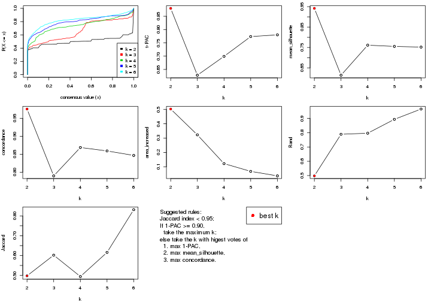
The numeric values for all these statistics can be obtained by get_stats().
get_stats(res)
#> k 1-PAC mean_silhouette concordance area_increased Rand Jaccard
#> 2 2 0.880 0.942 0.976 0.5030 0.498 0.498
#> 3 3 0.628 0.614 0.790 0.3227 0.789 0.602
#> 4 4 0.699 0.761 0.869 0.1219 0.796 0.494
#> 5 5 0.774 0.755 0.859 0.0678 0.894 0.616
#> 6 6 0.780 0.752 0.847 0.0363 0.966 0.831
suggest_best_k() suggests the best \(k\) based on these statistics. The rules are as follows:
NA.suggest_best_k(res)
#> [1] 2
Following shows the table of the partitions (You need to click the show/hide
code output link to see it). The membership matrix (columns with name p*)
is inferred by
clue::cl_consensus()
function with the SE method. Basically the value in the membership matrix
represents the probability to belong to a certain group. The finall class
label for an item is determined with the group with highest probability it
belongs to.
In get_classes() function, the entropy is calculated from the membership
matrix and the silhouette score is calculated from the consensus matrix.
cbind(get_classes(res, k = 2), get_membership(res, k = 2))
#> class entropy silhouette p1 p2
#> ERR946976 1 0.0000 0.970 1.000 0.000
#> ERR947001 1 0.0000 0.970 1.000 0.000
#> ERR946975 2 0.0000 0.978 0.000 1.000
#> ERR947000 2 0.0000 0.978 0.000 1.000
#> ERR946972 1 0.5178 0.862 0.884 0.116
#> ERR946997 1 0.5178 0.862 0.884 0.116
#> ERR946986 1 0.0000 0.970 1.000 0.000
#> ERR947011 1 0.0000 0.970 1.000 0.000
#> ERR946977 2 0.9710 0.314 0.400 0.600
#> ERR947002 2 0.9710 0.314 0.400 0.600
#> ERR946974 1 0.2778 0.932 0.952 0.048
#> ERR946999 1 0.2778 0.932 0.952 0.048
#> ERR946971 1 0.0000 0.970 1.000 0.000
#> ERR946996 1 0.0000 0.970 1.000 0.000
#> ERR946992 2 0.0000 0.978 0.000 1.000
#> ERR947017 2 0.0000 0.978 0.000 1.000
#> ERR946984 2 0.0000 0.978 0.000 1.000
#> ERR947009 2 0.0000 0.978 0.000 1.000
#> ERR946987 2 0.0000 0.978 0.000 1.000
#> ERR947012 2 0.0000 0.978 0.000 1.000
#> ERR946991 2 0.0000 0.978 0.000 1.000
#> ERR947016 2 0.0000 0.978 0.000 1.000
#> ERR946983 2 0.0000 0.978 0.000 1.000
#> ERR947008 2 0.0000 0.978 0.000 1.000
#> ERR946970 1 0.0000 0.970 1.000 0.000
#> ERR946995 1 0.0000 0.970 1.000 0.000
#> ERR946969 1 0.1633 0.952 0.976 0.024
#> ERR946994 1 0.1633 0.952 0.976 0.024
#> ERR946982 2 0.0000 0.978 0.000 1.000
#> ERR947007 2 0.0000 0.978 0.000 1.000
#> ERR946988 2 0.0000 0.978 0.000 1.000
#> ERR947013 2 0.0000 0.978 0.000 1.000
#> ERR946985 2 0.0000 0.978 0.000 1.000
#> ERR947010 2 0.0000 0.978 0.000 1.000
#> ERR946989 1 0.0672 0.965 0.992 0.008
#> ERR947014 1 0.0672 0.965 0.992 0.008
#> ERR946968 1 0.0000 0.970 1.000 0.000
#> ERR946993 1 0.0000 0.970 1.000 0.000
#> ERR946990 1 0.0000 0.970 1.000 0.000
#> ERR947015 1 0.0000 0.970 1.000 0.000
#> ERR946980 2 0.5408 0.848 0.124 0.876
#> ERR947005 2 0.5408 0.848 0.124 0.876
#> ERR946978 1 0.0000 0.970 1.000 0.000
#> ERR947003 1 0.0000 0.970 1.000 0.000
#> ERR946979 2 0.0000 0.978 0.000 1.000
#> ERR947004 2 0.0000 0.978 0.000 1.000
#> ERR946957 1 0.0000 0.970 1.000 0.000
#> ERR946962 1 0.0000 0.970 1.000 0.000
#> ERR946958 1 0.0000 0.970 1.000 0.000
#> ERR946963 1 0.0000 0.970 1.000 0.000
#> ERR946959 1 0.0000 0.970 1.000 0.000
#> ERR946964 1 0.0000 0.970 1.000 0.000
#> ERR946967 1 0.4815 0.875 0.896 0.104
#> ERR862690 1 0.4815 0.875 0.896 0.104
#> ERR914278 2 0.0000 0.978 0.000 1.000
#> ERR914314 2 0.0000 0.978 0.000 1.000
#> ERR914279 1 0.0000 0.970 1.000 0.000
#> ERR914315 1 0.0000 0.970 1.000 0.000
#> ERR914280 2 0.0000 0.978 0.000 1.000
#> ERR914316 2 0.0000 0.978 0.000 1.000
#> ERR914281 2 0.0000 0.978 0.000 1.000
#> ERR914317 2 0.0000 0.978 0.000 1.000
#> ERR914282 2 0.0000 0.978 0.000 1.000
#> ERR914318 2 0.0000 0.978 0.000 1.000
#> ERR914283 1 0.0000 0.970 1.000 0.000
#> ERR914319 1 0.0000 0.970 1.000 0.000
#> ERR914284 1 0.0000 0.970 1.000 0.000
#> ERR914320 1 0.0000 0.970 1.000 0.000
#> ERR914285 1 0.8555 0.615 0.720 0.280
#> ERR914321 1 0.8555 0.615 0.720 0.280
#> ERR914286 2 0.0000 0.978 0.000 1.000
#> ERR914322 2 0.0000 0.978 0.000 1.000
#> ERR914287 1 0.0000 0.970 1.000 0.000
#> ERR914323 1 0.0000 0.970 1.000 0.000
#> ERR914288 2 0.4939 0.868 0.108 0.892
#> ERR914324 2 0.4939 0.868 0.108 0.892
#> ERR914289 1 0.0000 0.970 1.000 0.000
#> ERR914290 1 0.0000 0.970 1.000 0.000
#> ERR914326 1 0.0000 0.970 1.000 0.000
#> ERR914291 2 0.0000 0.978 0.000 1.000
#> ERR914327 2 0.0000 0.978 0.000 1.000
#> ERR914292 1 0.0000 0.970 1.000 0.000
#> ERR914328 1 0.0000 0.970 1.000 0.000
#> ERR914293 1 0.0000 0.970 1.000 0.000
#> ERR914329 1 0.0000 0.970 1.000 0.000
#> ERR914294 2 0.0000 0.978 0.000 1.000
#> ERR914330 2 0.0000 0.978 0.000 1.000
#> ERR914295 1 0.0000 0.970 1.000 0.000
#> ERR914331 1 0.0000 0.970 1.000 0.000
#> ERR914296 1 0.0000 0.970 1.000 0.000
#> ERR914332 1 0.0000 0.970 1.000 0.000
#> ERR914297 1 0.9710 0.334 0.600 0.400
#> ERR914333 1 0.9710 0.334 0.600 0.400
#> ERR914298 1 0.0000 0.970 1.000 0.000
#> ERR914334 1 0.0000 0.970 1.000 0.000
#> ERR914299 2 0.0000 0.978 0.000 1.000
#> ERR914335 2 0.0000 0.978 0.000 1.000
#> ERR914300 1 0.0000 0.970 1.000 0.000
#> ERR914336 1 0.0000 0.970 1.000 0.000
#> ERR914301 2 0.0000 0.978 0.000 1.000
#> ERR914337 2 0.0000 0.978 0.000 1.000
#> ERR914302 2 0.0000 0.978 0.000 1.000
#> ERR914338 2 0.0000 0.978 0.000 1.000
#> ERR914303 2 0.0000 0.978 0.000 1.000
#> ERR914339 2 0.0000 0.978 0.000 1.000
#> ERR914304 2 0.0000 0.978 0.000 1.000
#> ERR914340 2 0.0000 0.978 0.000 1.000
#> ERR914305 2 0.0000 0.978 0.000 1.000
#> ERR914341 2 0.0000 0.978 0.000 1.000
#> ERR914306 2 0.0000 0.978 0.000 1.000
#> ERR914342 2 0.0000 0.978 0.000 1.000
#> ERR914307 1 0.0000 0.970 1.000 0.000
#> ERR914343 1 0.0000 0.970 1.000 0.000
#> ERR914308 1 0.0000 0.970 1.000 0.000
#> ERR914344 1 0.0000 0.970 1.000 0.000
#> ERR914309 1 0.0000 0.970 1.000 0.000
#> ERR914345 1 0.0000 0.970 1.000 0.000
#> ERR914310 1 0.0000 0.970 1.000 0.000
#> ERR914346 1 0.0000 0.970 1.000 0.000
#> ERR914311 2 0.0000 0.978 0.000 1.000
#> ERR914347 2 0.0000 0.978 0.000 1.000
#> ERR914312 2 0.0000 0.978 0.000 1.000
#> ERR914348 2 0.0000 0.978 0.000 1.000
#> ERR914313 2 0.0000 0.978 0.000 1.000
#> ERR914349 2 0.0000 0.978 0.000 1.000
#> ERR946960 1 0.0000 0.970 1.000 0.000
#> ERR946965 1 0.0000 0.970 1.000 0.000
#> ERR946966 2 0.0000 0.978 0.000 1.000
#> ERR946973 1 0.0000 0.970 1.000 0.000
#> ERR946998 1 0.0000 0.970 1.000 0.000
#> ERR946981 2 0.0000 0.978 0.000 1.000
#> ERR947006 2 0.0000 0.978 0.000 1.000
#> ERR914325 1 0.0000 0.970 1.000 0.000
cbind(get_classes(res, k = 3), get_membership(res, k = 3))
#> class entropy silhouette p1 p2 p3
#> ERR946976 1 0.6302 0.1361 0.520 0.000 0.480
#> ERR947001 1 0.6302 0.1361 0.520 0.000 0.480
#> ERR946975 2 0.0237 0.6535 0.000 0.996 0.004
#> ERR947000 2 0.0237 0.6535 0.000 0.996 0.004
#> ERR946972 3 0.6758 0.5737 0.200 0.072 0.728
#> ERR946997 3 0.6758 0.5737 0.200 0.072 0.728
#> ERR946986 3 0.2878 0.6504 0.096 0.000 0.904
#> ERR947011 3 0.2878 0.6504 0.096 0.000 0.904
#> ERR946977 3 0.0237 0.6299 0.000 0.004 0.996
#> ERR947002 3 0.0237 0.6299 0.000 0.004 0.996
#> ERR946974 3 0.6483 0.5615 0.004 0.452 0.544
#> ERR946999 3 0.6483 0.5615 0.004 0.452 0.544
#> ERR946971 1 0.6302 0.1361 0.520 0.000 0.480
#> ERR946996 1 0.6302 0.1361 0.520 0.000 0.480
#> ERR946992 2 0.0000 0.6524 0.000 1.000 0.000
#> ERR947017 2 0.0000 0.6524 0.000 1.000 0.000
#> ERR946984 3 0.0237 0.6299 0.000 0.004 0.996
#> ERR947009 3 0.0237 0.6299 0.000 0.004 0.996
#> ERR946987 2 0.1860 0.6019 0.000 0.948 0.052
#> ERR947012 2 0.1860 0.6019 0.000 0.948 0.052
#> ERR946991 2 0.6267 0.6804 0.000 0.548 0.452
#> ERR947016 2 0.6267 0.6804 0.000 0.548 0.452
#> ERR946983 2 0.6267 0.6804 0.000 0.548 0.452
#> ERR947008 2 0.6267 0.6804 0.000 0.548 0.452
#> ERR946970 3 0.7591 0.5775 0.044 0.412 0.544
#> ERR946995 3 0.7591 0.5775 0.044 0.412 0.544
#> ERR946969 3 0.0747 0.6334 0.016 0.000 0.984
#> ERR946994 3 0.0747 0.6334 0.016 0.000 0.984
#> ERR946982 2 0.0424 0.6489 0.000 0.992 0.008
#> ERR947007 2 0.0424 0.6489 0.000 0.992 0.008
#> ERR946988 3 0.0237 0.6299 0.000 0.004 0.996
#> ERR947013 3 0.0237 0.6299 0.000 0.004 0.996
#> ERR946985 3 0.6274 0.5590 0.000 0.456 0.544
#> ERR947010 3 0.6274 0.5590 0.000 0.456 0.544
#> ERR946989 3 0.6267 0.5630 0.000 0.452 0.548
#> ERR947014 3 0.6267 0.5630 0.000 0.452 0.548
#> ERR946968 1 0.6309 0.1024 0.504 0.000 0.496
#> ERR946993 1 0.6309 0.1024 0.504 0.000 0.496
#> ERR946990 3 0.6280 -0.0112 0.460 0.000 0.540
#> ERR947015 3 0.6280 -0.0112 0.460 0.000 0.540
#> ERR946980 3 0.0237 0.6231 0.000 0.004 0.996
#> ERR947005 3 0.0237 0.6231 0.000 0.004 0.996
#> ERR946978 1 0.0000 0.7985 1.000 0.000 0.000
#> ERR947003 1 0.0000 0.7985 1.000 0.000 0.000
#> ERR946979 2 0.6267 0.6804 0.000 0.548 0.452
#> ERR947004 2 0.6267 0.6804 0.000 0.548 0.452
#> ERR946957 1 0.6302 0.1361 0.520 0.000 0.480
#> ERR946962 1 0.6302 0.1361 0.520 0.000 0.480
#> ERR946958 1 0.0000 0.7985 1.000 0.000 0.000
#> ERR946963 1 0.0000 0.7985 1.000 0.000 0.000
#> ERR946959 1 0.0000 0.7985 1.000 0.000 0.000
#> ERR946964 1 0.0000 0.7985 1.000 0.000 0.000
#> ERR946967 3 0.4654 0.5660 0.208 0.000 0.792
#> ERR862690 3 0.4654 0.5660 0.208 0.000 0.792
#> ERR914278 2 0.0747 0.6433 0.000 0.984 0.016
#> ERR914314 2 0.0747 0.6433 0.000 0.984 0.016
#> ERR914279 1 0.0000 0.7985 1.000 0.000 0.000
#> ERR914315 1 0.0000 0.7985 1.000 0.000 0.000
#> ERR914280 2 0.0237 0.6509 0.000 0.996 0.004
#> ERR914316 2 0.0237 0.6509 0.000 0.996 0.004
#> ERR914281 2 0.0747 0.6433 0.000 0.984 0.016
#> ERR914317 2 0.0747 0.6433 0.000 0.984 0.016
#> ERR914282 2 0.6267 0.6804 0.000 0.548 0.452
#> ERR914318 2 0.6267 0.6804 0.000 0.548 0.452
#> ERR914283 1 0.0000 0.7985 1.000 0.000 0.000
#> ERR914319 1 0.0000 0.7985 1.000 0.000 0.000
#> ERR914284 1 0.0747 0.7909 0.984 0.000 0.016
#> ERR914320 1 0.0747 0.7909 0.984 0.000 0.016
#> ERR914285 3 0.6267 0.5630 0.000 0.452 0.548
#> ERR914321 3 0.6267 0.5630 0.000 0.452 0.548
#> ERR914286 2 0.0237 0.6535 0.000 0.996 0.004
#> ERR914322 2 0.0237 0.6535 0.000 0.996 0.004
#> ERR914287 1 0.0000 0.7985 1.000 0.000 0.000
#> ERR914323 1 0.0000 0.7985 1.000 0.000 0.000
#> ERR914288 1 0.8641 0.3472 0.592 0.160 0.248
#> ERR914324 1 0.8641 0.3472 0.592 0.160 0.248
#> ERR914289 1 0.9142 0.2144 0.512 0.324 0.164
#> ERR914290 1 0.0000 0.7985 1.000 0.000 0.000
#> ERR914326 1 0.0000 0.7985 1.000 0.000 0.000
#> ERR914291 2 0.6267 0.6804 0.000 0.548 0.452
#> ERR914327 2 0.6267 0.6804 0.000 0.548 0.452
#> ERR914292 1 0.4452 0.6255 0.808 0.000 0.192
#> ERR914328 1 0.4452 0.6255 0.808 0.000 0.192
#> ERR914293 1 0.0000 0.7985 1.000 0.000 0.000
#> ERR914329 1 0.0000 0.7985 1.000 0.000 0.000
#> ERR914294 2 0.0592 0.6464 0.000 0.988 0.012
#> ERR914330 2 0.0592 0.6464 0.000 0.988 0.012
#> ERR914295 1 0.0000 0.7985 1.000 0.000 0.000
#> ERR914331 1 0.0000 0.7985 1.000 0.000 0.000
#> ERR914296 1 0.0000 0.7985 1.000 0.000 0.000
#> ERR914332 1 0.0000 0.7985 1.000 0.000 0.000
#> ERR914297 1 0.2796 0.7304 0.908 0.092 0.000
#> ERR914333 1 0.2796 0.7304 0.908 0.092 0.000
#> ERR914298 1 0.0000 0.7985 1.000 0.000 0.000
#> ERR914334 1 0.0000 0.7985 1.000 0.000 0.000
#> ERR914299 2 0.6267 0.6804 0.000 0.548 0.452
#> ERR914335 2 0.6267 0.6804 0.000 0.548 0.452
#> ERR914300 1 0.0237 0.7967 0.996 0.004 0.000
#> ERR914336 1 0.0237 0.7967 0.996 0.004 0.000
#> ERR914301 2 0.6154 0.6800 0.000 0.592 0.408
#> ERR914337 2 0.6154 0.6800 0.000 0.592 0.408
#> ERR914302 2 0.0237 0.6509 0.000 0.996 0.004
#> ERR914338 2 0.0237 0.6509 0.000 0.996 0.004
#> ERR914303 2 0.6267 0.6804 0.000 0.548 0.452
#> ERR914339 2 0.6267 0.6804 0.000 0.548 0.452
#> ERR914304 2 0.6267 0.6804 0.000 0.548 0.452
#> ERR914340 2 0.6267 0.6804 0.000 0.548 0.452
#> ERR914305 2 0.6267 0.6804 0.000 0.548 0.452
#> ERR914341 2 0.6267 0.6804 0.000 0.548 0.452
#> ERR914306 2 0.6154 0.6800 0.000 0.592 0.408
#> ERR914342 2 0.6154 0.6800 0.000 0.592 0.408
#> ERR914307 1 0.0592 0.7930 0.988 0.000 0.012
#> ERR914343 1 0.0592 0.7930 0.988 0.000 0.012
#> ERR914308 1 0.0000 0.7985 1.000 0.000 0.000
#> ERR914344 1 0.0000 0.7985 1.000 0.000 0.000
#> ERR914309 1 0.0000 0.7985 1.000 0.000 0.000
#> ERR914345 1 0.0000 0.7985 1.000 0.000 0.000
#> ERR914310 1 0.4277 0.6817 0.852 0.132 0.016
#> ERR914346 1 0.4277 0.6817 0.852 0.132 0.016
#> ERR914311 2 0.6267 0.6804 0.000 0.548 0.452
#> ERR914347 2 0.6267 0.6804 0.000 0.548 0.452
#> ERR914312 2 0.0237 0.6535 0.000 0.996 0.004
#> ERR914348 2 0.0237 0.6535 0.000 0.996 0.004
#> ERR914313 2 0.0592 0.6466 0.000 0.988 0.012
#> ERR914349 2 0.0592 0.6466 0.000 0.988 0.012
#> ERR946960 1 0.6302 0.1361 0.520 0.000 0.480
#> ERR946965 1 0.6302 0.1361 0.520 0.000 0.480
#> ERR946966 2 0.6267 0.6804 0.000 0.548 0.452
#> ERR946973 1 0.6302 0.1361 0.520 0.000 0.480
#> ERR946998 1 0.6302 0.1361 0.520 0.000 0.480
#> ERR946981 2 0.6267 0.6804 0.000 0.548 0.452
#> ERR947006 2 0.6267 0.6804 0.000 0.548 0.452
#> ERR914325 1 0.9142 0.2144 0.512 0.324 0.164
cbind(get_classes(res, k = 4), get_membership(res, k = 4))
#> class entropy silhouette p1 p2 p3 p4
#> ERR946976 3 0.3764 0.75450 0.216 0.000 0.784 0.000
#> ERR947001 3 0.3764 0.75450 0.216 0.000 0.784 0.000
#> ERR946975 2 0.4972 0.02808 0.000 0.544 0.000 0.456
#> ERR947000 2 0.4972 0.02808 0.000 0.544 0.000 0.456
#> ERR946972 3 0.3587 0.79140 0.104 0.032 0.860 0.004
#> ERR946997 3 0.3587 0.79140 0.104 0.032 0.860 0.004
#> ERR946986 3 0.4689 0.75529 0.036 0.100 0.820 0.044
#> ERR947011 3 0.4689 0.75529 0.036 0.100 0.820 0.044
#> ERR946977 3 0.5497 0.63098 0.000 0.284 0.672 0.044
#> ERR947002 3 0.5497 0.63098 0.000 0.284 0.672 0.044
#> ERR946974 4 0.2814 0.74768 0.000 0.000 0.132 0.868
#> ERR946999 4 0.2814 0.74768 0.000 0.000 0.132 0.868
#> ERR946971 3 0.3074 0.78434 0.152 0.000 0.848 0.000
#> ERR946996 3 0.3074 0.78434 0.152 0.000 0.848 0.000
#> ERR946992 4 0.2011 0.87798 0.000 0.080 0.000 0.920
#> ERR947017 4 0.2011 0.87798 0.000 0.080 0.000 0.920
#> ERR946984 3 0.5309 0.66389 0.000 0.256 0.700 0.044
#> ERR947009 3 0.5309 0.66389 0.000 0.256 0.700 0.044
#> ERR946987 4 0.1004 0.85575 0.000 0.024 0.004 0.972
#> ERR947012 4 0.1004 0.85575 0.000 0.024 0.004 0.972
#> ERR946991 2 0.0188 0.90025 0.000 0.996 0.004 0.000
#> ERR947016 2 0.0188 0.90025 0.000 0.996 0.004 0.000
#> ERR946983 2 0.0000 0.90270 0.000 1.000 0.000 0.000
#> ERR947008 2 0.0000 0.90270 0.000 1.000 0.000 0.000
#> ERR946970 3 0.4992 -0.00775 0.000 0.000 0.524 0.476
#> ERR946995 3 0.4992 -0.00775 0.000 0.000 0.524 0.476
#> ERR946969 3 0.5434 0.69979 0.016 0.148 0.760 0.076
#> ERR946994 3 0.5434 0.69979 0.016 0.148 0.760 0.076
#> ERR946982 4 0.1940 0.88023 0.000 0.076 0.000 0.924
#> ERR947007 4 0.1940 0.88023 0.000 0.076 0.000 0.924
#> ERR946988 3 0.6176 0.49359 0.000 0.368 0.572 0.060
#> ERR947013 3 0.6176 0.49359 0.000 0.368 0.572 0.060
#> ERR946985 4 0.0336 0.83821 0.000 0.000 0.008 0.992
#> ERR947010 4 0.0336 0.83821 0.000 0.000 0.008 0.992
#> ERR946989 4 0.4985 0.07809 0.000 0.000 0.468 0.532
#> ERR947014 4 0.4985 0.07809 0.000 0.000 0.468 0.532
#> ERR946968 3 0.3307 0.73928 0.104 0.000 0.868 0.028
#> ERR946993 3 0.3307 0.73928 0.104 0.000 0.868 0.028
#> ERR946990 3 0.3370 0.75608 0.080 0.000 0.872 0.048
#> ERR947015 3 0.3370 0.75608 0.080 0.000 0.872 0.048
#> ERR946980 2 0.6102 -0.09966 0.000 0.532 0.420 0.048
#> ERR947005 2 0.6102 -0.09966 0.000 0.532 0.420 0.048
#> ERR946978 1 0.1118 0.87982 0.964 0.000 0.036 0.000
#> ERR947003 1 0.1118 0.87982 0.964 0.000 0.036 0.000
#> ERR946979 2 0.0188 0.90033 0.000 0.996 0.000 0.004
#> ERR947004 2 0.0188 0.90033 0.000 0.996 0.000 0.004
#> ERR946957 3 0.3074 0.78434 0.152 0.000 0.848 0.000
#> ERR946962 3 0.3074 0.78434 0.152 0.000 0.848 0.000
#> ERR946958 1 0.0817 0.88384 0.976 0.000 0.024 0.000
#> ERR946963 1 0.0817 0.88384 0.976 0.000 0.024 0.000
#> ERR946959 1 0.1118 0.87982 0.964 0.000 0.036 0.000
#> ERR946964 1 0.1118 0.87982 0.964 0.000 0.036 0.000
#> ERR946967 3 0.3619 0.79070 0.100 0.036 0.860 0.004
#> ERR862690 3 0.3619 0.79070 0.100 0.036 0.860 0.004
#> ERR914278 4 0.1792 0.88013 0.000 0.068 0.000 0.932
#> ERR914314 4 0.1792 0.88013 0.000 0.068 0.000 0.932
#> ERR914279 1 0.0000 0.88900 1.000 0.000 0.000 0.000
#> ERR914315 1 0.0000 0.88900 1.000 0.000 0.000 0.000
#> ERR914280 4 0.1940 0.88023 0.000 0.076 0.000 0.924
#> ERR914316 4 0.1940 0.88023 0.000 0.076 0.000 0.924
#> ERR914281 4 0.1867 0.88106 0.000 0.072 0.000 0.928
#> ERR914317 4 0.1867 0.88106 0.000 0.072 0.000 0.928
#> ERR914282 2 0.0000 0.90270 0.000 1.000 0.000 0.000
#> ERR914318 2 0.0000 0.90270 0.000 1.000 0.000 0.000
#> ERR914283 1 0.1211 0.87777 0.960 0.000 0.040 0.000
#> ERR914319 1 0.1211 0.87777 0.960 0.000 0.040 0.000
#> ERR914284 1 0.3812 0.80636 0.832 0.000 0.140 0.028
#> ERR914320 1 0.3812 0.80636 0.832 0.000 0.140 0.028
#> ERR914285 4 0.2973 0.73620 0.000 0.000 0.144 0.856
#> ERR914321 4 0.2973 0.73620 0.000 0.000 0.144 0.856
#> ERR914286 4 0.2408 0.86217 0.000 0.104 0.000 0.896
#> ERR914322 4 0.2408 0.86217 0.000 0.104 0.000 0.896
#> ERR914287 1 0.0000 0.88900 1.000 0.000 0.000 0.000
#> ERR914323 1 0.0000 0.88900 1.000 0.000 0.000 0.000
#> ERR914288 1 0.5926 0.73840 0.740 0.104 0.128 0.028
#> ERR914324 1 0.5926 0.73840 0.740 0.104 0.128 0.028
#> ERR914289 1 0.6950 0.50802 0.572 0.000 0.156 0.272
#> ERR914290 1 0.0000 0.88900 1.000 0.000 0.000 0.000
#> ERR914326 1 0.0000 0.88900 1.000 0.000 0.000 0.000
#> ERR914291 2 0.0000 0.90270 0.000 1.000 0.000 0.000
#> ERR914327 2 0.0000 0.90270 0.000 1.000 0.000 0.000
#> ERR914292 1 0.6202 0.71423 0.712 0.080 0.176 0.032
#> ERR914328 1 0.6138 0.71837 0.716 0.076 0.176 0.032
#> ERR914293 1 0.0000 0.88900 1.000 0.000 0.000 0.000
#> ERR914329 1 0.0000 0.88900 1.000 0.000 0.000 0.000
#> ERR914294 4 0.1867 0.88106 0.000 0.072 0.000 0.928
#> ERR914330 4 0.1867 0.88106 0.000 0.072 0.000 0.928
#> ERR914295 1 0.0921 0.88272 0.972 0.000 0.028 0.000
#> ERR914331 1 0.0921 0.88272 0.972 0.000 0.028 0.000
#> ERR914296 1 0.1118 0.87982 0.964 0.000 0.036 0.000
#> ERR914332 1 0.1118 0.87982 0.964 0.000 0.036 0.000
#> ERR914297 1 0.7450 0.51308 0.620 0.220 0.088 0.072
#> ERR914333 1 0.7389 0.52559 0.628 0.212 0.088 0.072
#> ERR914298 1 0.1302 0.87581 0.956 0.000 0.044 0.000
#> ERR914334 1 0.1302 0.87581 0.956 0.000 0.044 0.000
#> ERR914299 2 0.0000 0.90270 0.000 1.000 0.000 0.000
#> ERR914335 2 0.0000 0.90270 0.000 1.000 0.000 0.000
#> ERR914300 1 0.1302 0.87660 0.956 0.000 0.044 0.000
#> ERR914336 1 0.1302 0.87660 0.956 0.000 0.044 0.000
#> ERR914301 2 0.3754 0.79934 0.000 0.852 0.064 0.084
#> ERR914337 2 0.3754 0.79934 0.000 0.852 0.064 0.084
#> ERR914302 4 0.1940 0.88023 0.000 0.076 0.000 0.924
#> ERR914338 4 0.1940 0.88023 0.000 0.076 0.000 0.924
#> ERR914303 2 0.0000 0.90270 0.000 1.000 0.000 0.000
#> ERR914339 2 0.0000 0.90270 0.000 1.000 0.000 0.000
#> ERR914304 2 0.0000 0.90270 0.000 1.000 0.000 0.000
#> ERR914340 2 0.0000 0.90270 0.000 1.000 0.000 0.000
#> ERR914305 2 0.0000 0.90270 0.000 1.000 0.000 0.000
#> ERR914341 2 0.0000 0.90270 0.000 1.000 0.000 0.000
#> ERR914306 2 0.3754 0.79934 0.000 0.852 0.064 0.084
#> ERR914342 2 0.3754 0.79934 0.000 0.852 0.064 0.084
#> ERR914307 1 0.2999 0.82866 0.864 0.000 0.132 0.004
#> ERR914343 1 0.2999 0.82866 0.864 0.000 0.132 0.004
#> ERR914308 1 0.0000 0.88900 1.000 0.000 0.000 0.000
#> ERR914344 1 0.0000 0.88900 1.000 0.000 0.000 0.000
#> ERR914309 1 0.0000 0.88900 1.000 0.000 0.000 0.000
#> ERR914345 1 0.0000 0.88900 1.000 0.000 0.000 0.000
#> ERR914310 1 0.3907 0.80392 0.828 0.000 0.140 0.032
#> ERR914346 1 0.3907 0.80392 0.828 0.000 0.140 0.032
#> ERR914311 2 0.0000 0.90270 0.000 1.000 0.000 0.000
#> ERR914347 2 0.0000 0.90270 0.000 1.000 0.000 0.000
#> ERR914312 4 0.5000 0.10957 0.000 0.496 0.000 0.504
#> ERR914348 4 0.5000 0.10957 0.000 0.496 0.000 0.504
#> ERR914313 4 0.1867 0.88106 0.000 0.072 0.000 0.928
#> ERR914349 4 0.1867 0.88106 0.000 0.072 0.000 0.928
#> ERR946960 3 0.3975 0.73162 0.240 0.000 0.760 0.000
#> ERR946965 3 0.3975 0.73162 0.240 0.000 0.760 0.000
#> ERR946966 2 0.0188 0.89899 0.004 0.996 0.000 0.000
#> ERR946973 3 0.3074 0.78434 0.152 0.000 0.848 0.000
#> ERR946998 3 0.3074 0.78434 0.152 0.000 0.848 0.000
#> ERR946981 2 0.0000 0.90270 0.000 1.000 0.000 0.000
#> ERR947006 2 0.0000 0.90270 0.000 1.000 0.000 0.000
#> ERR914325 1 0.6950 0.50802 0.572 0.000 0.156 0.272
cbind(get_classes(res, k = 5), get_membership(res, k = 5))
#> class entropy silhouette p1 p2 p3 p4 p5
#> ERR946976 3 0.4498 0.6245 0.132 0.000 0.756 0.000 0.112
#> ERR947001 3 0.4498 0.6245 0.132 0.000 0.756 0.000 0.112
#> ERR946975 4 0.4576 0.6272 0.000 0.268 0.000 0.692 0.040
#> ERR947000 4 0.4576 0.6272 0.000 0.268 0.000 0.692 0.040
#> ERR946972 3 0.0000 0.7264 0.000 0.000 1.000 0.000 0.000
#> ERR946997 3 0.0000 0.7264 0.000 0.000 1.000 0.000 0.000
#> ERR946986 3 0.6264 0.4624 0.024 0.080 0.484 0.000 0.412
#> ERR947011 3 0.6264 0.4624 0.024 0.080 0.484 0.000 0.412
#> ERR946977 3 0.6393 0.5473 0.000 0.180 0.524 0.004 0.292
#> ERR947002 3 0.6393 0.5473 0.000 0.180 0.524 0.004 0.292
#> ERR946974 5 0.3661 0.6234 0.000 0.000 0.000 0.276 0.724
#> ERR946999 5 0.3661 0.6234 0.000 0.000 0.000 0.276 0.724
#> ERR946971 3 0.0880 0.7281 0.032 0.000 0.968 0.000 0.000
#> ERR946996 3 0.0880 0.7281 0.032 0.000 0.968 0.000 0.000
#> ERR946992 4 0.0566 0.9327 0.000 0.004 0.000 0.984 0.012
#> ERR947017 4 0.0566 0.9327 0.000 0.004 0.000 0.984 0.012
#> ERR946984 3 0.5890 0.6081 0.000 0.152 0.612 0.004 0.232
#> ERR947009 3 0.5890 0.6081 0.000 0.152 0.612 0.004 0.232
#> ERR946987 4 0.0486 0.9326 0.000 0.004 0.004 0.988 0.004
#> ERR947012 4 0.0486 0.9326 0.000 0.004 0.004 0.988 0.004
#> ERR946991 2 0.1605 0.8632 0.000 0.944 0.012 0.004 0.040
#> ERR947016 2 0.1605 0.8632 0.000 0.944 0.012 0.004 0.040
#> ERR946983 2 0.0000 0.8883 0.000 1.000 0.000 0.000 0.000
#> ERR947008 2 0.0000 0.8883 0.000 1.000 0.000 0.000 0.000
#> ERR946970 5 0.4647 0.6536 0.000 0.000 0.184 0.084 0.732
#> ERR946995 5 0.4647 0.6536 0.000 0.000 0.184 0.084 0.732
#> ERR946969 5 0.2879 0.5884 0.000 0.032 0.100 0.000 0.868
#> ERR946994 5 0.2879 0.5884 0.000 0.032 0.100 0.000 0.868
#> ERR946982 4 0.0162 0.9354 0.000 0.004 0.000 0.996 0.000
#> ERR947007 4 0.0162 0.9354 0.000 0.004 0.000 0.996 0.000
#> ERR946988 3 0.6946 0.4975 0.000 0.232 0.468 0.016 0.284
#> ERR947013 3 0.6946 0.4975 0.000 0.232 0.468 0.016 0.284
#> ERR946985 4 0.0671 0.9253 0.000 0.000 0.004 0.980 0.016
#> ERR947010 4 0.0671 0.9253 0.000 0.000 0.004 0.980 0.016
#> ERR946989 5 0.3692 0.6819 0.000 0.000 0.052 0.136 0.812
#> ERR947014 5 0.3736 0.6816 0.000 0.000 0.052 0.140 0.808
#> ERR946968 5 0.4473 0.5306 0.020 0.000 0.324 0.000 0.656
#> ERR946993 5 0.4473 0.5306 0.020 0.000 0.324 0.000 0.656
#> ERR946990 5 0.4339 0.1652 0.012 0.000 0.336 0.000 0.652
#> ERR947015 5 0.4339 0.1652 0.012 0.000 0.336 0.000 0.652
#> ERR946980 2 0.6463 0.0598 0.000 0.488 0.212 0.000 0.300
#> ERR947005 2 0.6463 0.0598 0.000 0.488 0.212 0.000 0.300
#> ERR946978 1 0.1121 0.9044 0.956 0.000 0.044 0.000 0.000
#> ERR947003 1 0.1121 0.9044 0.956 0.000 0.044 0.000 0.000
#> ERR946979 2 0.1372 0.8704 0.000 0.956 0.016 0.024 0.004
#> ERR947004 2 0.1372 0.8704 0.000 0.956 0.016 0.024 0.004
#> ERR946957 3 0.0880 0.7281 0.032 0.000 0.968 0.000 0.000
#> ERR946962 3 0.0880 0.7281 0.032 0.000 0.968 0.000 0.000
#> ERR946958 1 0.1557 0.8996 0.940 0.000 0.052 0.000 0.008
#> ERR946963 1 0.1557 0.8996 0.940 0.000 0.052 0.000 0.008
#> ERR946959 1 0.1121 0.9044 0.956 0.000 0.044 0.000 0.000
#> ERR946964 1 0.1121 0.9044 0.956 0.000 0.044 0.000 0.000
#> ERR946967 3 0.0000 0.7264 0.000 0.000 1.000 0.000 0.000
#> ERR862690 3 0.0000 0.7264 0.000 0.000 1.000 0.000 0.000
#> ERR914278 4 0.0162 0.9354 0.000 0.004 0.000 0.996 0.000
#> ERR914314 4 0.0162 0.9354 0.000 0.004 0.000 0.996 0.000
#> ERR914279 1 0.0162 0.9110 0.996 0.000 0.000 0.000 0.004
#> ERR914315 1 0.0162 0.9110 0.996 0.000 0.000 0.000 0.004
#> ERR914280 4 0.1121 0.9120 0.000 0.000 0.000 0.956 0.044
#> ERR914316 4 0.1121 0.9120 0.000 0.000 0.000 0.956 0.044
#> ERR914281 4 0.0162 0.9354 0.000 0.004 0.000 0.996 0.000
#> ERR914317 4 0.0162 0.9354 0.000 0.004 0.000 0.996 0.000
#> ERR914282 2 0.0000 0.8883 0.000 1.000 0.000 0.000 0.000
#> ERR914318 2 0.0000 0.8883 0.000 1.000 0.000 0.000 0.000
#> ERR914283 1 0.1270 0.8999 0.948 0.000 0.052 0.000 0.000
#> ERR914319 1 0.1270 0.8999 0.948 0.000 0.052 0.000 0.000
#> ERR914284 5 0.4275 0.6581 0.284 0.000 0.020 0.000 0.696
#> ERR914320 5 0.4275 0.6581 0.284 0.000 0.020 0.000 0.696
#> ERR914285 5 0.3612 0.6570 0.000 0.000 0.008 0.228 0.764
#> ERR914321 5 0.3612 0.6570 0.000 0.000 0.008 0.228 0.764
#> ERR914286 4 0.1121 0.9143 0.000 0.044 0.000 0.956 0.000
#> ERR914322 4 0.1121 0.9143 0.000 0.044 0.000 0.956 0.000
#> ERR914287 1 0.0162 0.9110 0.996 0.000 0.000 0.000 0.004
#> ERR914323 1 0.0162 0.9110 0.996 0.000 0.000 0.000 0.004
#> ERR914288 5 0.6215 0.4613 0.336 0.156 0.000 0.000 0.508
#> ERR914324 5 0.6144 0.4577 0.344 0.144 0.000 0.000 0.512
#> ERR914289 5 0.4203 0.7129 0.108 0.000 0.032 0.052 0.808
#> ERR914290 1 0.0000 0.9113 1.000 0.000 0.000 0.000 0.000
#> ERR914326 1 0.0000 0.9113 1.000 0.000 0.000 0.000 0.000
#> ERR914291 2 0.0000 0.8883 0.000 1.000 0.000 0.000 0.000
#> ERR914327 2 0.0000 0.8883 0.000 1.000 0.000 0.000 0.000
#> ERR914292 5 0.4187 0.6910 0.196 0.008 0.032 0.000 0.764
#> ERR914328 5 0.4187 0.6910 0.196 0.008 0.032 0.000 0.764
#> ERR914293 1 0.0000 0.9113 1.000 0.000 0.000 0.000 0.000
#> ERR914329 1 0.0000 0.9113 1.000 0.000 0.000 0.000 0.000
#> ERR914294 4 0.0162 0.9354 0.000 0.004 0.000 0.996 0.000
#> ERR914330 4 0.0162 0.9354 0.000 0.004 0.000 0.996 0.000
#> ERR914295 1 0.0880 0.8968 0.968 0.000 0.000 0.000 0.032
#> ERR914331 1 0.0880 0.8968 0.968 0.000 0.000 0.000 0.032
#> ERR914296 1 0.1043 0.9058 0.960 0.000 0.040 0.000 0.000
#> ERR914332 1 0.1043 0.9058 0.960 0.000 0.040 0.000 0.000
#> ERR914297 1 0.8464 0.3074 0.484 0.124 0.196 0.144 0.052
#> ERR914333 1 0.8464 0.3074 0.484 0.124 0.196 0.144 0.052
#> ERR914298 1 0.2264 0.8784 0.912 0.000 0.060 0.004 0.024
#> ERR914334 1 0.2264 0.8784 0.912 0.000 0.060 0.004 0.024
#> ERR914299 2 0.0000 0.8883 0.000 1.000 0.000 0.000 0.000
#> ERR914335 2 0.0000 0.8883 0.000 1.000 0.000 0.000 0.000
#> ERR914300 1 0.0880 0.8954 0.968 0.000 0.000 0.000 0.032
#> ERR914336 1 0.0880 0.8954 0.968 0.000 0.000 0.000 0.032
#> ERR914301 2 0.6719 0.5184 0.000 0.584 0.168 0.200 0.048
#> ERR914337 2 0.6719 0.5184 0.000 0.584 0.168 0.200 0.048
#> ERR914302 4 0.0290 0.9318 0.000 0.000 0.000 0.992 0.008
#> ERR914338 4 0.0290 0.9318 0.000 0.000 0.000 0.992 0.008
#> ERR914303 2 0.0000 0.8883 0.000 1.000 0.000 0.000 0.000
#> ERR914339 2 0.0000 0.8883 0.000 1.000 0.000 0.000 0.000
#> ERR914304 2 0.0451 0.8845 0.000 0.988 0.004 0.000 0.008
#> ERR914340 2 0.0451 0.8845 0.000 0.988 0.004 0.000 0.008
#> ERR914305 2 0.0000 0.8883 0.000 1.000 0.000 0.000 0.000
#> ERR914341 2 0.0000 0.8883 0.000 1.000 0.000 0.000 0.000
#> ERR914306 2 0.6623 0.5414 0.000 0.600 0.152 0.196 0.052
#> ERR914342 2 0.6623 0.5414 0.000 0.600 0.152 0.196 0.052
#> ERR914307 1 0.4108 0.5118 0.684 0.000 0.008 0.000 0.308
#> ERR914343 1 0.4108 0.5118 0.684 0.000 0.008 0.000 0.308
#> ERR914308 1 0.0162 0.9110 0.996 0.000 0.000 0.000 0.004
#> ERR914344 1 0.0162 0.9110 0.996 0.000 0.000 0.000 0.004
#> ERR914309 1 0.0162 0.9110 0.996 0.000 0.000 0.000 0.004
#> ERR914345 1 0.0162 0.9110 0.996 0.000 0.000 0.000 0.004
#> ERR914310 5 0.3774 0.6470 0.296 0.000 0.000 0.000 0.704
#> ERR914346 5 0.3774 0.6470 0.296 0.000 0.000 0.000 0.704
#> ERR914311 2 0.0000 0.8883 0.000 1.000 0.000 0.000 0.000
#> ERR914347 2 0.0000 0.8883 0.000 1.000 0.000 0.000 0.000
#> ERR914312 4 0.3861 0.6716 0.000 0.264 0.000 0.728 0.008
#> ERR914348 4 0.3861 0.6716 0.000 0.264 0.000 0.728 0.008
#> ERR914313 4 0.0162 0.9354 0.000 0.004 0.000 0.996 0.000
#> ERR914349 4 0.0162 0.9354 0.000 0.004 0.000 0.996 0.000
#> ERR946960 3 0.5354 0.5059 0.240 0.000 0.652 0.000 0.108
#> ERR946965 3 0.5354 0.5059 0.240 0.000 0.652 0.000 0.108
#> ERR946966 2 0.0000 0.8883 0.000 1.000 0.000 0.000 0.000
#> ERR946973 3 0.0880 0.7281 0.032 0.000 0.968 0.000 0.000
#> ERR946998 3 0.0880 0.7281 0.032 0.000 0.968 0.000 0.000
#> ERR946981 2 0.1124 0.8697 0.000 0.960 0.004 0.000 0.036
#> ERR947006 2 0.1124 0.8697 0.000 0.960 0.004 0.000 0.036
#> ERR914325 5 0.4203 0.7129 0.108 0.000 0.032 0.052 0.808
cbind(get_classes(res, k = 6), get_membership(res, k = 6))
#> class entropy silhouette p1 p2 p3 p4 p5 p6
#> ERR946976 3 0.5499 0.6420 0.108 0.000 0.676 0.000 0.100 0.116
#> ERR947001 3 0.5499 0.6420 0.108 0.000 0.676 0.000 0.100 0.116
#> ERR946975 4 0.6440 0.4779 0.000 0.248 0.004 0.532 0.164 0.052
#> ERR947000 4 0.6440 0.4779 0.000 0.248 0.004 0.532 0.164 0.052
#> ERR946972 3 0.0363 0.8697 0.000 0.000 0.988 0.000 0.012 0.000
#> ERR946997 3 0.0363 0.8697 0.000 0.000 0.988 0.000 0.012 0.000
#> ERR946986 5 0.4463 0.7358 0.004 0.020 0.152 0.000 0.748 0.076
#> ERR947011 5 0.4463 0.7358 0.004 0.020 0.152 0.000 0.748 0.076
#> ERR946977 5 0.4948 0.7475 0.000 0.088 0.184 0.004 0.700 0.024
#> ERR947002 5 0.4948 0.7475 0.000 0.088 0.184 0.004 0.700 0.024
#> ERR946974 6 0.3387 0.7460 0.000 0.000 0.000 0.164 0.040 0.796
#> ERR946999 6 0.3387 0.7460 0.000 0.000 0.000 0.164 0.040 0.796
#> ERR946971 3 0.0260 0.8756 0.008 0.000 0.992 0.000 0.000 0.000
#> ERR946996 3 0.0260 0.8756 0.008 0.000 0.992 0.000 0.000 0.000
#> ERR946992 4 0.1265 0.8827 0.000 0.000 0.000 0.948 0.044 0.008
#> ERR947017 4 0.1265 0.8827 0.000 0.000 0.000 0.948 0.044 0.008
#> ERR946984 5 0.4887 0.7153 0.000 0.072 0.236 0.000 0.672 0.020
#> ERR947009 5 0.4887 0.7153 0.000 0.072 0.236 0.000 0.672 0.020
#> ERR946987 4 0.1003 0.8897 0.000 0.000 0.000 0.964 0.020 0.016
#> ERR947012 4 0.1003 0.8897 0.000 0.000 0.000 0.964 0.020 0.016
#> ERR946991 2 0.3329 0.6614 0.000 0.756 0.000 0.004 0.236 0.004
#> ERR947016 2 0.3329 0.6614 0.000 0.756 0.000 0.004 0.236 0.004
#> ERR946983 2 0.0405 0.8469 0.000 0.988 0.000 0.000 0.008 0.004
#> ERR947008 2 0.0405 0.8469 0.000 0.988 0.000 0.000 0.008 0.004
#> ERR946970 6 0.3088 0.7786 0.000 0.000 0.064 0.044 0.032 0.860
#> ERR946995 6 0.3088 0.7786 0.000 0.000 0.064 0.044 0.032 0.860
#> ERR946969 5 0.4731 0.1439 0.000 0.016 0.020 0.000 0.492 0.472
#> ERR946994 5 0.4731 0.1439 0.000 0.016 0.020 0.000 0.492 0.472
#> ERR946982 4 0.0260 0.8979 0.000 0.000 0.000 0.992 0.000 0.008
#> ERR947007 4 0.0260 0.8979 0.000 0.000 0.000 0.992 0.000 0.008
#> ERR946988 5 0.5632 0.7380 0.000 0.132 0.148 0.024 0.668 0.028
#> ERR947013 5 0.5632 0.7380 0.000 0.132 0.148 0.024 0.668 0.028
#> ERR946985 4 0.0909 0.8905 0.000 0.000 0.000 0.968 0.012 0.020
#> ERR947010 4 0.0909 0.8905 0.000 0.000 0.000 0.968 0.012 0.020
#> ERR946989 6 0.3017 0.7707 0.000 0.000 0.000 0.084 0.072 0.844
#> ERR947014 6 0.3017 0.7707 0.000 0.000 0.000 0.084 0.072 0.844
#> ERR946968 6 0.4026 0.6008 0.004 0.000 0.252 0.000 0.032 0.712
#> ERR946993 6 0.4026 0.6008 0.004 0.000 0.252 0.000 0.032 0.712
#> ERR946990 5 0.5267 0.5948 0.008 0.000 0.112 0.000 0.604 0.276
#> ERR947015 5 0.5267 0.5948 0.008 0.000 0.112 0.000 0.604 0.276
#> ERR946980 5 0.4812 0.6633 0.000 0.240 0.040 0.000 0.680 0.040
#> ERR947005 5 0.4812 0.6633 0.000 0.240 0.040 0.000 0.680 0.040
#> ERR946978 1 0.1226 0.8620 0.952 0.000 0.040 0.000 0.004 0.004
#> ERR947003 1 0.1226 0.8620 0.952 0.000 0.040 0.000 0.004 0.004
#> ERR946979 2 0.2649 0.7948 0.000 0.876 0.000 0.068 0.052 0.004
#> ERR947004 2 0.2591 0.7978 0.000 0.880 0.000 0.064 0.052 0.004
#> ERR946957 3 0.0260 0.8756 0.008 0.000 0.992 0.000 0.000 0.000
#> ERR946962 3 0.0260 0.8756 0.008 0.000 0.992 0.000 0.000 0.000
#> ERR946958 1 0.2773 0.8180 0.868 0.000 0.064 0.000 0.004 0.064
#> ERR946963 1 0.2773 0.8180 0.868 0.000 0.064 0.000 0.004 0.064
#> ERR946959 1 0.1226 0.8620 0.952 0.000 0.040 0.000 0.004 0.004
#> ERR946964 1 0.1226 0.8620 0.952 0.000 0.040 0.000 0.004 0.004
#> ERR946967 3 0.0363 0.8697 0.000 0.000 0.988 0.000 0.012 0.000
#> ERR862690 3 0.0363 0.8697 0.000 0.000 0.988 0.000 0.012 0.000
#> ERR914278 4 0.0260 0.8979 0.000 0.000 0.000 0.992 0.000 0.008
#> ERR914314 4 0.0260 0.8979 0.000 0.000 0.000 0.992 0.000 0.008
#> ERR914279 1 0.0363 0.8691 0.988 0.000 0.000 0.000 0.000 0.012
#> ERR914315 1 0.0363 0.8691 0.988 0.000 0.000 0.000 0.000 0.012
#> ERR914280 4 0.3654 0.7770 0.000 0.000 0.004 0.792 0.144 0.060
#> ERR914316 4 0.3654 0.7770 0.000 0.000 0.004 0.792 0.144 0.060
#> ERR914281 4 0.0520 0.8969 0.000 0.000 0.000 0.984 0.008 0.008
#> ERR914317 4 0.0520 0.8969 0.000 0.000 0.000 0.984 0.008 0.008
#> ERR914282 2 0.0000 0.8488 0.000 1.000 0.000 0.000 0.000 0.000
#> ERR914318 2 0.0000 0.8488 0.000 1.000 0.000 0.000 0.000 0.000
#> ERR914283 1 0.1429 0.8562 0.940 0.000 0.052 0.000 0.004 0.004
#> ERR914319 1 0.1429 0.8562 0.940 0.000 0.052 0.000 0.004 0.004
#> ERR914284 6 0.1957 0.7962 0.112 0.000 0.000 0.000 0.000 0.888
#> ERR914320 6 0.1957 0.7962 0.112 0.000 0.000 0.000 0.000 0.888
#> ERR914285 6 0.2790 0.7665 0.000 0.000 0.000 0.140 0.020 0.840
#> ERR914321 6 0.2790 0.7665 0.000 0.000 0.000 0.140 0.020 0.840
#> ERR914286 4 0.1895 0.8584 0.000 0.072 0.000 0.912 0.016 0.000
#> ERR914322 4 0.1895 0.8584 0.000 0.072 0.000 0.912 0.016 0.000
#> ERR914287 1 0.0146 0.8685 0.996 0.000 0.000 0.000 0.004 0.000
#> ERR914323 1 0.0146 0.8685 0.996 0.000 0.000 0.000 0.004 0.000
#> ERR914288 6 0.6464 0.5019 0.152 0.204 0.000 0.000 0.092 0.552
#> ERR914324 6 0.6464 0.5019 0.152 0.204 0.000 0.000 0.092 0.552
#> ERR914289 6 0.2094 0.8062 0.068 0.000 0.000 0.016 0.008 0.908
#> ERR914290 1 0.0291 0.8690 0.992 0.000 0.000 0.000 0.004 0.004
#> ERR914326 1 0.0291 0.8690 0.992 0.000 0.000 0.000 0.004 0.004
#> ERR914291 2 0.1124 0.8353 0.000 0.956 0.000 0.000 0.036 0.008
#> ERR914327 2 0.1124 0.8353 0.000 0.956 0.000 0.000 0.036 0.008
#> ERR914292 6 0.3244 0.7813 0.100 0.000 0.004 0.000 0.064 0.832
#> ERR914328 6 0.3244 0.7813 0.100 0.000 0.004 0.000 0.064 0.832
#> ERR914293 1 0.0146 0.8685 0.996 0.000 0.000 0.000 0.004 0.000
#> ERR914329 1 0.0146 0.8685 0.996 0.000 0.000 0.000 0.004 0.000
#> ERR914294 4 0.0146 0.8976 0.000 0.000 0.000 0.996 0.000 0.004
#> ERR914330 4 0.0146 0.8976 0.000 0.000 0.000 0.996 0.000 0.004
#> ERR914295 1 0.2581 0.7787 0.856 0.000 0.000 0.000 0.016 0.128
#> ERR914331 1 0.2581 0.7787 0.856 0.000 0.000 0.000 0.016 0.128
#> ERR914296 1 0.1155 0.8629 0.956 0.000 0.036 0.000 0.004 0.004
#> ERR914332 1 0.1155 0.8629 0.956 0.000 0.036 0.000 0.004 0.004
#> ERR914297 1 0.9447 -0.0661 0.276 0.108 0.208 0.088 0.228 0.092
#> ERR914333 1 0.9447 -0.0661 0.276 0.108 0.208 0.088 0.228 0.092
#> ERR914298 1 0.2633 0.8274 0.892 0.000 0.028 0.004 0.032 0.044
#> ERR914334 1 0.2633 0.8274 0.892 0.000 0.028 0.004 0.032 0.044
#> ERR914299 2 0.0777 0.8426 0.000 0.972 0.000 0.000 0.024 0.004
#> ERR914335 2 0.0777 0.8426 0.000 0.972 0.000 0.000 0.024 0.004
#> ERR914300 1 0.1838 0.8300 0.916 0.000 0.000 0.000 0.016 0.068
#> ERR914336 1 0.1838 0.8300 0.916 0.000 0.000 0.000 0.016 0.068
#> ERR914301 2 0.8028 0.3549 0.000 0.424 0.160 0.124 0.220 0.072
#> ERR914337 2 0.8028 0.3549 0.000 0.424 0.160 0.124 0.220 0.072
#> ERR914302 4 0.0914 0.8899 0.000 0.000 0.000 0.968 0.016 0.016
#> ERR914338 4 0.0914 0.8899 0.000 0.000 0.000 0.968 0.016 0.016
#> ERR914303 2 0.0260 0.8487 0.000 0.992 0.000 0.000 0.008 0.000
#> ERR914339 2 0.0260 0.8487 0.000 0.992 0.000 0.000 0.008 0.000
#> ERR914304 2 0.1152 0.8400 0.000 0.952 0.000 0.000 0.044 0.004
#> ERR914340 2 0.1152 0.8400 0.000 0.952 0.000 0.000 0.044 0.004
#> ERR914305 2 0.0146 0.8490 0.000 0.996 0.000 0.000 0.004 0.000
#> ERR914341 2 0.0146 0.8490 0.000 0.996 0.000 0.000 0.004 0.000
#> ERR914306 2 0.7688 0.4133 0.000 0.472 0.104 0.128 0.224 0.072
#> ERR914342 2 0.7688 0.4133 0.000 0.472 0.104 0.128 0.224 0.072
#> ERR914307 1 0.5709 0.0297 0.448 0.004 0.000 0.000 0.408 0.140
#> ERR914343 1 0.5706 0.0439 0.452 0.004 0.000 0.000 0.404 0.140
#> ERR914308 1 0.0547 0.8671 0.980 0.000 0.000 0.000 0.020 0.000
#> ERR914344 1 0.0547 0.8671 0.980 0.000 0.000 0.000 0.020 0.000
#> ERR914309 1 0.0547 0.8671 0.980 0.000 0.000 0.000 0.020 0.000
#> ERR914345 1 0.0547 0.8671 0.980 0.000 0.000 0.000 0.020 0.000
#> ERR914310 6 0.2704 0.7803 0.140 0.000 0.000 0.000 0.016 0.844
#> ERR914346 6 0.2704 0.7803 0.140 0.000 0.000 0.000 0.016 0.844
#> ERR914311 2 0.0363 0.8480 0.000 0.988 0.000 0.000 0.012 0.000
#> ERR914347 2 0.0363 0.8480 0.000 0.988 0.000 0.000 0.012 0.000
#> ERR914312 4 0.3953 0.5495 0.000 0.328 0.000 0.656 0.016 0.000
#> ERR914348 4 0.3953 0.5495 0.000 0.328 0.000 0.656 0.016 0.000
#> ERR914313 4 0.0260 0.8979 0.000 0.000 0.000 0.992 0.000 0.008
#> ERR914349 4 0.0260 0.8979 0.000 0.000 0.000 0.992 0.000 0.008
#> ERR946960 3 0.5104 0.6372 0.196 0.000 0.676 0.000 0.028 0.100
#> ERR946965 3 0.5104 0.6372 0.196 0.000 0.676 0.000 0.028 0.100
#> ERR946966 2 0.0405 0.8469 0.000 0.988 0.000 0.000 0.008 0.004
#> ERR946973 3 0.0260 0.8756 0.008 0.000 0.992 0.000 0.000 0.000
#> ERR946998 3 0.0260 0.8756 0.008 0.000 0.992 0.000 0.000 0.000
#> ERR946981 2 0.3136 0.6843 0.000 0.768 0.000 0.000 0.228 0.004
#> ERR947006 2 0.3136 0.6843 0.000 0.768 0.000 0.000 0.228 0.004
#> ERR914325 6 0.2094 0.8062 0.068 0.000 0.000 0.016 0.008 0.908
Heatmaps for the consensus matrix. It visualizes the probability of two samples to be in a same group.
consensus_heatmap(res, k = 2)
consensus_heatmap(res, k = 3)

consensus_heatmap(res, k = 4)
consensus_heatmap(res, k = 5)
consensus_heatmap(res, k = 6)
Heatmaps for the membership of samples in all partitions to see how consistent they are:
membership_heatmap(res, k = 2)
membership_heatmap(res, k = 3)
membership_heatmap(res, k = 4)
membership_heatmap(res, k = 5)
membership_heatmap(res, k = 6)
As soon as we have had the classes for columns, we can look for signatures which are significantly different between classes which can be candidate marks for certain classes. Following are the heatmaps for signatures.
Signature heatmaps where rows are scaled:
get_signatures(res, k = 2)
get_signatures(res, k = 3)
get_signatures(res, k = 4)

get_signatures(res, k = 5)
get_signatures(res, k = 6)
Signature heatmaps where rows are not scaled:
get_signatures(res, k = 2, scale_rows = FALSE)
get_signatures(res, k = 3, scale_rows = FALSE)
get_signatures(res, k = 4, scale_rows = FALSE)
get_signatures(res, k = 5, scale_rows = FALSE)
get_signatures(res, k = 6, scale_rows = FALSE)
Compare the overlap of signatures from different k:
compare_signatures(res)
get_signature() returns a data frame invisibly. TO get the list of signatures, the function
call should be assigned to a variable explicitly. In following code, if plot argument is set
to FALSE, no heatmap is plotted while only the differential analysis is performed.
# code only for demonstration
tb = get_signature(res, k = ..., plot = FALSE)
An example of the output of tb is:
#> which_row fdr mean_1 mean_2 scaled_mean_1 scaled_mean_2 km
#> 1 38 0.042760348 8.373488 9.131774 -0.5533452 0.5164555 1
#> 2 40 0.018707592 7.106213 8.469186 -0.6173731 0.5762149 1
#> 3 55 0.019134737 10.221463 11.207825 -0.6159697 0.5749050 1
#> 4 59 0.006059896 5.921854 7.869574 -0.6899429 0.6439467 1
#> 5 60 0.018055526 8.928898 10.211722 -0.6204761 0.5791110 1
#> 6 98 0.009384629 15.714769 14.887706 0.6635654 -0.6193277 2
...
The columns in tb are:
which_row: row indices corresponding to the input matrix.fdr: FDR for the differential test. mean_x: The mean value in group x.scaled_mean_x: The mean value in group x after rows are scaled.km: Row groups if k-means clustering is applied to rows.UMAP plot which shows how samples are separated.
dimension_reduction(res, k = 2, method = "UMAP")
dimension_reduction(res, k = 3, method = "UMAP")
dimension_reduction(res, k = 4, method = "UMAP")
dimension_reduction(res, k = 5, method = "UMAP")
dimension_reduction(res, k = 6, method = "UMAP")
Following heatmap shows how subgroups are split when increasing k:
collect_classes(res)
If matrix rows can be associated to genes, consider to use GO_Enrichment(res,
...) to perform function enrichment for the signature genes.
The object with results only for a single top-value method and a single partition method can be extracted as:
res = res_list["MAD", "pam"]
# you can also extract it by
# res = res_list["MAD:pam"]
A summary of res and all the functions that can be applied to it:
res
#> A 'ConsensusPartition' object with k = 2, 3, 4, 5, 6.
#> On a matrix with 16510 rows and 133 columns.
#> Top rows (1000, 2000, 3000, 4000, 5000) are extracted by 'MAD' method.
#> Subgroups are detected by 'pam' method.
#> Performed in total 1250 partitions by row resampling.
#> Best k for subgroups seems to be 2.
#>
#> Following methods can be applied to this 'ConsensusPartition' object:
#> [1] "cola_report" "collect_classes" "collect_plots"
#> [4] "collect_stats" "colnames" "compare_signatures"
#> [7] "consensus_heatmap" "dimension_reduction" "functional_enrichment"
#> [10] "get_anno_col" "get_anno" "get_classes"
#> [13] "get_consensus" "get_matrix" "get_membership"
#> [16] "get_param" "get_signatures" "get_stats"
#> [19] "is_best_k" "is_stable_k" "membership_heatmap"
#> [22] "ncol" "nrow" "plot_ecdf"
#> [25] "rownames" "select_partition_number" "show"
#> [28] "suggest_best_k" "test_to_known_factors"
collect_plots() function collects all the plots made from res for all k (number of partitions)
into one single page to provide an easy and fast comparison between different k.
collect_plots(res)
The plots are:
k and the heatmap of
predicted classes for each k.k.k.k.All the plots in panels can be made by individual functions and they are plotted later in this section.
select_partition_number() produces several plots showing different
statistics for choosing “optimized” k. There are following statistics:
k;k, the area increased is defined as \(A_k - A_{k-1}\).The detailed explanations of these statistics can be found in the cola vignette.
Generally speaking, lower PAC score, higher mean silhouette score or higher
concordance corresponds to better partition. Rand index and Jaccard index
measure how similar the current partition is compared to partition with k-1.
If they are too similar, we won't accept k is better than k-1.
select_partition_number(res)
The numeric values for all these statistics can be obtained by get_stats().
get_stats(res)
#> k 1-PAC mean_silhouette concordance area_increased Rand Jaccard
#> 2 2 0.580 0.882 0.930 0.4959 0.500 0.500
#> 3 3 0.458 0.695 0.814 0.1824 0.888 0.786
#> 4 4 0.579 0.376 0.695 0.1990 0.765 0.511
#> 5 5 0.650 0.558 0.805 0.0946 0.727 0.304
#> 6 6 0.776 0.756 0.885 0.0664 0.891 0.562
suggest_best_k() suggests the best \(k\) based on these statistics. The rules are as follows:
NA.suggest_best_k(res)
#> [1] 2
Following shows the table of the partitions (You need to click the show/hide
code output link to see it). The membership matrix (columns with name p*)
is inferred by
clue::cl_consensus()
function with the SE method. Basically the value in the membership matrix
represents the probability to belong to a certain group. The finall class
label for an item is determined with the group with highest probability it
belongs to.
In get_classes() function, the entropy is calculated from the membership
matrix and the silhouette score is calculated from the consensus matrix.
cbind(get_classes(res, k = 2), get_membership(res, k = 2))
#> class entropy silhouette p1 p2
#> ERR946976 2 0.6531 0.8277 0.168 0.832
#> ERR947001 2 0.6531 0.8277 0.168 0.832
#> ERR946975 1 0.7674 0.8137 0.776 0.224
#> ERR947000 1 0.6438 0.8708 0.836 0.164
#> ERR946972 2 0.1633 0.9328 0.024 0.976
#> ERR946997 2 0.1633 0.9328 0.024 0.976
#> ERR946986 2 0.1843 0.9317 0.028 0.972
#> ERR947011 2 0.1843 0.9317 0.028 0.972
#> ERR946977 2 0.0376 0.9386 0.004 0.996
#> ERR947002 2 0.0376 0.9386 0.004 0.996
#> ERR946974 1 0.6438 0.8708 0.836 0.164
#> ERR946999 1 0.6438 0.8708 0.836 0.164
#> ERR946971 2 0.6531 0.8277 0.168 0.832
#> ERR946996 2 0.6531 0.8277 0.168 0.832
#> ERR946992 2 0.0000 0.9397 0.000 1.000
#> ERR947017 2 0.0000 0.9397 0.000 1.000
#> ERR946984 2 0.1633 0.9328 0.024 0.976
#> ERR947009 2 0.1633 0.9328 0.024 0.976
#> ERR946987 2 0.0000 0.9397 0.000 1.000
#> ERR947012 2 0.0000 0.9397 0.000 1.000
#> ERR946991 2 0.0000 0.9397 0.000 1.000
#> ERR947016 2 0.0000 0.9397 0.000 1.000
#> ERR946983 2 0.0000 0.9397 0.000 1.000
#> ERR947008 2 0.0000 0.9397 0.000 1.000
#> ERR946970 1 0.1184 0.9038 0.984 0.016
#> ERR946995 1 0.0000 0.9040 1.000 0.000
#> ERR946969 2 0.1843 0.9317 0.028 0.972
#> ERR946994 2 0.1843 0.9317 0.028 0.972
#> ERR946982 1 0.9460 0.5877 0.636 0.364
#> ERR947007 1 0.8499 0.7463 0.724 0.276
#> ERR946988 2 0.0000 0.9397 0.000 1.000
#> ERR947013 2 0.0000 0.9397 0.000 1.000
#> ERR946985 2 0.7299 0.6997 0.204 0.796
#> ERR947010 2 0.7745 0.6556 0.228 0.772
#> ERR946989 1 0.5842 0.8770 0.860 0.140
#> ERR947014 1 0.5842 0.8770 0.860 0.140
#> ERR946968 1 0.0000 0.9040 1.000 0.000
#> ERR946993 1 0.0000 0.9040 1.000 0.000
#> ERR946990 2 0.1843 0.9317 0.028 0.972
#> ERR947015 2 0.1843 0.9317 0.028 0.972
#> ERR946980 2 0.0376 0.9386 0.004 0.996
#> ERR947005 2 0.0376 0.9386 0.004 0.996
#> ERR946978 2 0.7056 0.8100 0.192 0.808
#> ERR947003 2 0.7815 0.7698 0.232 0.768
#> ERR946979 2 0.0000 0.9397 0.000 1.000
#> ERR947004 2 0.0000 0.9397 0.000 1.000
#> ERR946957 2 0.6247 0.8383 0.156 0.844
#> ERR946962 2 0.6531 0.8277 0.168 0.832
#> ERR946958 1 0.0000 0.9040 1.000 0.000
#> ERR946963 1 0.0000 0.9040 1.000 0.000
#> ERR946959 1 0.0000 0.9040 1.000 0.000
#> ERR946964 1 0.0000 0.9040 1.000 0.000
#> ERR946967 2 0.1633 0.9328 0.024 0.976
#> ERR862690 2 0.1633 0.9328 0.024 0.976
#> ERR914278 1 0.6438 0.8708 0.836 0.164
#> ERR914314 1 0.6438 0.8708 0.836 0.164
#> ERR914279 1 0.0000 0.9040 1.000 0.000
#> ERR914315 1 0.0000 0.9040 1.000 0.000
#> ERR914280 1 0.6438 0.8708 0.836 0.164
#> ERR914316 1 0.6438 0.8708 0.836 0.164
#> ERR914281 2 0.0000 0.9397 0.000 1.000
#> ERR914317 2 0.0000 0.9397 0.000 1.000
#> ERR914282 2 0.0000 0.9397 0.000 1.000
#> ERR914318 2 0.0000 0.9397 0.000 1.000
#> ERR914283 1 0.0000 0.9040 1.000 0.000
#> ERR914319 1 0.0000 0.9040 1.000 0.000
#> ERR914284 1 0.0000 0.9040 1.000 0.000
#> ERR914320 1 0.0000 0.9040 1.000 0.000
#> ERR914285 1 0.6438 0.8708 0.836 0.164
#> ERR914321 1 0.6438 0.8708 0.836 0.164
#> ERR914286 1 0.8081 0.7860 0.752 0.248
#> ERR914322 1 0.6623 0.8652 0.828 0.172
#> ERR914287 1 0.0000 0.9040 1.000 0.000
#> ERR914323 1 0.0000 0.9040 1.000 0.000
#> ERR914288 1 0.6438 0.8708 0.836 0.164
#> ERR914324 1 0.6438 0.8708 0.836 0.164
#> ERR914289 1 0.0000 0.9040 1.000 0.000
#> ERR914290 1 0.0000 0.9040 1.000 0.000
#> ERR914326 1 0.0000 0.9040 1.000 0.000
#> ERR914291 2 0.0000 0.9397 0.000 1.000
#> ERR914327 2 0.2423 0.9129 0.040 0.960
#> ERR914292 1 0.6801 0.8485 0.820 0.180
#> ERR914328 1 0.3584 0.8973 0.932 0.068
#> ERR914293 1 0.0000 0.9040 1.000 0.000
#> ERR914329 1 0.0000 0.9040 1.000 0.000
#> ERR914294 1 0.6438 0.8708 0.836 0.164
#> ERR914330 1 0.6438 0.8708 0.836 0.164
#> ERR914295 1 0.2236 0.9021 0.964 0.036
#> ERR914331 1 0.2043 0.9026 0.968 0.032
#> ERR914296 2 0.7139 0.8071 0.196 0.804
#> ERR914332 2 0.9608 0.5101 0.384 0.616
#> ERR914297 1 0.0000 0.9040 1.000 0.000
#> ERR914333 1 0.0000 0.9040 1.000 0.000
#> ERR914298 1 0.0000 0.9040 1.000 0.000
#> ERR914334 1 0.0000 0.9040 1.000 0.000
#> ERR914299 2 0.0000 0.9397 0.000 1.000
#> ERR914335 2 0.5059 0.8377 0.112 0.888
#> ERR914300 1 0.0672 0.9042 0.992 0.008
#> ERR914336 1 0.0672 0.9042 0.992 0.008
#> ERR914301 2 0.0000 0.9397 0.000 1.000
#> ERR914337 2 0.0000 0.9397 0.000 1.000
#> ERR914302 1 0.6438 0.8708 0.836 0.164
#> ERR914338 1 0.6438 0.8708 0.836 0.164
#> ERR914303 2 0.0000 0.9397 0.000 1.000
#> ERR914339 2 0.0000 0.9397 0.000 1.000
#> ERR914304 2 0.0000 0.9397 0.000 1.000
#> ERR914340 2 0.0000 0.9397 0.000 1.000
#> ERR914305 2 0.0000 0.9397 0.000 1.000
#> ERR914341 2 0.0000 0.9397 0.000 1.000
#> ERR914306 2 0.0000 0.9397 0.000 1.000
#> ERR914342 2 0.0000 0.9397 0.000 1.000
#> ERR914307 2 0.0672 0.9382 0.008 0.992
#> ERR914343 2 0.0672 0.9382 0.008 0.992
#> ERR914308 2 0.4431 0.8898 0.092 0.908
#> ERR914344 2 0.6531 0.8277 0.168 0.832
#> ERR914309 2 0.9850 0.3951 0.428 0.572
#> ERR914345 1 0.9896 0.0557 0.560 0.440
#> ERR914310 1 0.4939 0.8875 0.892 0.108
#> ERR914346 1 0.3274 0.8985 0.940 0.060
#> ERR914311 2 0.0000 0.9397 0.000 1.000
#> ERR914347 2 0.0000 0.9397 0.000 1.000
#> ERR914312 1 0.6531 0.8680 0.832 0.168
#> ERR914348 1 0.6531 0.8680 0.832 0.168
#> ERR914313 2 0.0000 0.9397 0.000 1.000
#> ERR914349 2 0.0000 0.9397 0.000 1.000
#> ERR946960 1 0.0000 0.9040 1.000 0.000
#> ERR946965 1 0.0000 0.9040 1.000 0.000
#> ERR946966 2 0.0000 0.9397 0.000 1.000
#> ERR946973 2 0.6531 0.8277 0.168 0.832
#> ERR946998 2 0.6531 0.8277 0.168 0.832
#> ERR946981 2 0.0000 0.9397 0.000 1.000
#> ERR947006 2 0.0000 0.9397 0.000 1.000
#> ERR914325 1 0.0000 0.9040 1.000 0.000
cbind(get_classes(res, k = 3), get_membership(res, k = 3))
#> class entropy silhouette p1 p2 p3
#> ERR946976 2 0.8046 0.4345 0.396 0.536 0.068
#> ERR947001 2 0.8046 0.4345 0.396 0.536 0.068
#> ERR946975 1 0.5111 0.7669 0.820 0.036 0.144
#> ERR947000 1 0.4934 0.7677 0.820 0.024 0.156
#> ERR946972 3 0.4178 0.8056 0.000 0.172 0.828
#> ERR946997 3 0.4178 0.8056 0.000 0.172 0.828
#> ERR946986 2 0.5919 0.6209 0.276 0.712 0.012
#> ERR947011 2 0.5919 0.6209 0.276 0.712 0.012
#> ERR946977 2 0.5919 0.6209 0.276 0.712 0.012
#> ERR947002 2 0.5919 0.6209 0.276 0.712 0.012
#> ERR946974 1 0.5111 0.7482 0.820 0.144 0.036
#> ERR946999 1 0.5111 0.7482 0.820 0.144 0.036
#> ERR946971 3 0.4291 0.8679 0.180 0.000 0.820
#> ERR946996 3 0.4291 0.8679 0.180 0.000 0.820
#> ERR946992 2 0.3482 0.7494 0.000 0.872 0.128
#> ERR947017 2 0.3482 0.7494 0.000 0.872 0.128
#> ERR946984 2 0.0592 0.7600 0.000 0.988 0.012
#> ERR947009 2 0.0592 0.7600 0.000 0.988 0.012
#> ERR946987 2 0.1964 0.7508 0.000 0.944 0.056
#> ERR947012 2 0.2261 0.7521 0.000 0.932 0.068
#> ERR946991 2 0.0000 0.7623 0.000 1.000 0.000
#> ERR947016 2 0.0237 0.7633 0.000 0.996 0.004
#> ERR946983 2 0.0237 0.7633 0.000 0.996 0.004
#> ERR947008 2 0.0237 0.7633 0.000 0.996 0.004
#> ERR946970 1 0.2031 0.8075 0.952 0.032 0.016
#> ERR946995 1 0.1163 0.8096 0.972 0.000 0.028
#> ERR946969 2 0.5797 0.6187 0.280 0.712 0.008
#> ERR946994 2 0.5797 0.6187 0.280 0.712 0.008
#> ERR946982 1 0.9042 0.3936 0.544 0.280 0.176
#> ERR947007 1 0.9018 0.3985 0.548 0.276 0.176
#> ERR946988 2 0.0424 0.7607 0.000 0.992 0.008
#> ERR947013 2 0.0661 0.7613 0.004 0.988 0.008
#> ERR946985 2 0.7920 0.0693 0.468 0.476 0.056
#> ERR947010 1 0.7915 -0.0123 0.488 0.456 0.056
#> ERR946989 1 0.5307 0.7507 0.820 0.124 0.056
#> ERR947014 1 0.5307 0.7507 0.820 0.124 0.056
#> ERR946968 1 0.2165 0.7816 0.936 0.000 0.064
#> ERR946993 1 0.2165 0.7816 0.936 0.000 0.064
#> ERR946990 2 0.5831 0.6161 0.284 0.708 0.008
#> ERR947015 2 0.5831 0.6161 0.284 0.708 0.008
#> ERR946980 2 0.5797 0.6187 0.280 0.712 0.008
#> ERR947005 2 0.5797 0.6187 0.280 0.712 0.008
#> ERR946978 2 0.8100 0.3815 0.420 0.512 0.068
#> ERR947003 1 0.8142 -0.2705 0.468 0.464 0.068
#> ERR946979 2 0.0237 0.7609 0.000 0.996 0.004
#> ERR947004 2 0.0237 0.7609 0.000 0.996 0.004
#> ERR946957 3 0.4934 0.8676 0.156 0.024 0.820
#> ERR946962 3 0.4291 0.8679 0.180 0.000 0.820
#> ERR946958 1 0.2066 0.7836 0.940 0.000 0.060
#> ERR946963 1 0.2066 0.7836 0.940 0.000 0.060
#> ERR946959 1 0.2066 0.7836 0.940 0.000 0.060
#> ERR946964 1 0.2066 0.7836 0.940 0.000 0.060
#> ERR946967 3 0.4974 0.7529 0.000 0.236 0.764
#> ERR862690 3 0.4974 0.7529 0.000 0.236 0.764
#> ERR914278 1 0.4465 0.7672 0.820 0.004 0.176
#> ERR914314 1 0.4465 0.7672 0.820 0.004 0.176
#> ERR914279 1 0.2066 0.7836 0.940 0.000 0.060
#> ERR914315 1 0.2066 0.7836 0.940 0.000 0.060
#> ERR914280 1 0.4465 0.7672 0.820 0.004 0.176
#> ERR914316 1 0.4465 0.7672 0.820 0.004 0.176
#> ERR914281 2 0.4235 0.7231 0.000 0.824 0.176
#> ERR914317 2 0.4235 0.7231 0.000 0.824 0.176
#> ERR914282 2 0.3340 0.7532 0.000 0.880 0.120
#> ERR914318 2 0.3686 0.7434 0.000 0.860 0.140
#> ERR914283 1 0.2165 0.7816 0.936 0.000 0.064
#> ERR914319 1 0.2165 0.7816 0.936 0.000 0.064
#> ERR914284 1 0.0000 0.8084 1.000 0.000 0.000
#> ERR914320 1 0.0000 0.8084 1.000 0.000 0.000
#> ERR914285 1 0.5307 0.7507 0.820 0.124 0.056
#> ERR914321 1 0.5307 0.7507 0.820 0.124 0.056
#> ERR914286 1 0.6783 0.7077 0.736 0.088 0.176
#> ERR914322 1 0.4805 0.7647 0.812 0.012 0.176
#> ERR914287 1 0.0000 0.8084 1.000 0.000 0.000
#> ERR914323 1 0.0000 0.8084 1.000 0.000 0.000
#> ERR914288 1 0.5307 0.7641 0.820 0.056 0.124
#> ERR914324 1 0.5307 0.7641 0.820 0.056 0.124
#> ERR914289 1 0.0000 0.8084 1.000 0.000 0.000
#> ERR914290 1 0.0000 0.8084 1.000 0.000 0.000
#> ERR914326 1 0.0000 0.8084 1.000 0.000 0.000
#> ERR914291 2 0.3412 0.7487 0.000 0.876 0.124
#> ERR914327 2 0.3412 0.7487 0.000 0.876 0.124
#> ERR914292 1 0.4834 0.7094 0.792 0.204 0.004
#> ERR914328 1 0.2261 0.8005 0.932 0.068 0.000
#> ERR914293 1 0.0000 0.8084 1.000 0.000 0.000
#> ERR914329 1 0.0000 0.8084 1.000 0.000 0.000
#> ERR914294 1 0.4465 0.7672 0.820 0.004 0.176
#> ERR914330 1 0.4465 0.7672 0.820 0.004 0.176
#> ERR914295 1 0.1289 0.8089 0.968 0.032 0.000
#> ERR914331 1 0.1031 0.8096 0.976 0.024 0.000
#> ERR914296 2 0.8107 0.3737 0.424 0.508 0.068
#> ERR914332 1 0.8140 -0.2463 0.476 0.456 0.068
#> ERR914297 1 0.0000 0.8084 1.000 0.000 0.000
#> ERR914333 1 0.0000 0.8084 1.000 0.000 0.000
#> ERR914298 1 0.2165 0.7816 0.936 0.000 0.064
#> ERR914334 1 0.2165 0.7816 0.936 0.000 0.064
#> ERR914299 2 0.3896 0.7509 0.008 0.864 0.128
#> ERR914335 2 0.3482 0.7494 0.000 0.872 0.128
#> ERR914300 1 0.0424 0.8096 0.992 0.008 0.000
#> ERR914336 1 0.0424 0.8096 0.992 0.008 0.000
#> ERR914301 2 0.1031 0.7609 0.000 0.976 0.024
#> ERR914337 2 0.1163 0.7600 0.000 0.972 0.028
#> ERR914302 1 0.4465 0.7672 0.820 0.004 0.176
#> ERR914338 1 0.4465 0.7672 0.820 0.004 0.176
#> ERR914303 2 0.2959 0.7579 0.000 0.900 0.100
#> ERR914339 2 0.3192 0.7548 0.000 0.888 0.112
#> ERR914304 2 0.0237 0.7633 0.000 0.996 0.004
#> ERR914340 2 0.0237 0.7633 0.000 0.996 0.004
#> ERR914305 2 0.3412 0.7487 0.000 0.876 0.124
#> ERR914341 2 0.3412 0.7487 0.000 0.876 0.124
#> ERR914306 2 0.3340 0.7527 0.000 0.880 0.120
#> ERR914342 2 0.3619 0.7448 0.000 0.864 0.136
#> ERR914307 2 0.5690 0.6138 0.288 0.708 0.004
#> ERR914343 2 0.5690 0.6138 0.288 0.708 0.004
#> ERR914308 2 0.6126 0.5519 0.352 0.644 0.004
#> ERR914344 2 0.6495 0.4169 0.460 0.536 0.004
#> ERR914309 2 0.6500 0.4079 0.464 0.532 0.004
#> ERR914345 1 0.6745 -0.1109 0.560 0.428 0.012
#> ERR914310 1 0.3340 0.7767 0.880 0.120 0.000
#> ERR914346 1 0.1860 0.8050 0.948 0.052 0.000
#> ERR914311 2 0.2448 0.7617 0.000 0.924 0.076
#> ERR914347 2 0.3340 0.7522 0.000 0.880 0.120
#> ERR914312 1 0.9066 0.3838 0.540 0.284 0.176
#> ERR914348 1 0.9066 0.3838 0.540 0.284 0.176
#> ERR914313 2 0.4291 0.7241 0.000 0.820 0.180
#> ERR914349 2 0.4291 0.7241 0.000 0.820 0.180
#> ERR946960 1 0.4399 0.6583 0.812 0.000 0.188
#> ERR946965 1 0.5678 0.4210 0.684 0.000 0.316
#> ERR946966 2 0.0237 0.7633 0.000 0.996 0.004
#> ERR946973 3 0.4291 0.8679 0.180 0.000 0.820
#> ERR946998 3 0.4291 0.8679 0.180 0.000 0.820
#> ERR946981 2 0.0592 0.7622 0.000 0.988 0.012
#> ERR947006 2 0.0592 0.7622 0.000 0.988 0.012
#> ERR914325 1 0.0000 0.8084 1.000 0.000 0.000
cbind(get_classes(res, k = 4), get_membership(res, k = 4))
#> class entropy silhouette p1 p2 p3 p4
#> ERR946976 1 0.7701 0.43102 0.392 0.220 0.000 0.388
#> ERR947001 1 0.7700 0.43500 0.396 0.220 0.000 0.384
#> ERR946975 2 0.6214 -0.26788 0.052 0.480 0.000 0.468
#> ERR947000 4 0.6542 0.29600 0.076 0.428 0.000 0.496
#> ERR946972 3 0.0000 0.99539 0.000 0.000 1.000 0.000
#> ERR946997 3 0.0000 0.99539 0.000 0.000 1.000 0.000
#> ERR946986 2 0.6451 0.64967 0.404 0.524 0.000 0.072
#> ERR947011 2 0.6451 0.64967 0.404 0.524 0.000 0.072
#> ERR946977 2 0.6562 0.65079 0.404 0.524 0.004 0.068
#> ERR947002 2 0.6451 0.64967 0.404 0.524 0.000 0.072
#> ERR946974 4 0.7500 -0.18992 0.404 0.180 0.000 0.416
#> ERR946999 4 0.7421 -0.15744 0.400 0.168 0.000 0.432
#> ERR946971 3 0.0188 0.99752 0.004 0.000 0.996 0.000
#> ERR946996 3 0.0188 0.99752 0.004 0.000 0.996 0.000
#> ERR946992 2 0.1396 0.51820 0.004 0.960 0.004 0.032
#> ERR947017 2 0.1585 0.51240 0.004 0.952 0.004 0.040
#> ERR946984 2 0.4817 0.68176 0.388 0.612 0.000 0.000
#> ERR947009 2 0.4817 0.68176 0.388 0.612 0.000 0.000
#> ERR946987 1 0.7970 -0.48316 0.396 0.256 0.004 0.344
#> ERR947012 1 0.8048 -0.47657 0.360 0.288 0.004 0.348
#> ERR946991 2 0.4817 0.68176 0.388 0.612 0.000 0.000
#> ERR947016 2 0.4817 0.68176 0.388 0.612 0.000 0.000
#> ERR946983 2 0.4804 0.68182 0.384 0.616 0.000 0.000
#> ERR947008 2 0.4804 0.68182 0.384 0.616 0.000 0.000
#> ERR946970 4 0.4328 0.04852 0.244 0.008 0.000 0.748
#> ERR946995 4 0.3172 -0.01395 0.160 0.000 0.000 0.840
#> ERR946969 2 0.6451 0.64967 0.404 0.524 0.000 0.072
#> ERR946994 2 0.6507 0.64663 0.404 0.520 0.000 0.076
#> ERR946982 4 0.6071 0.27489 0.036 0.432 0.004 0.528
#> ERR947007 4 0.6071 0.27489 0.036 0.432 0.004 0.528
#> ERR946988 2 0.4817 0.68176 0.388 0.612 0.000 0.000
#> ERR947013 2 0.4830 0.68083 0.392 0.608 0.000 0.000
#> ERR946985 4 0.6479 -0.04280 0.428 0.060 0.004 0.508
#> ERR947010 4 0.6683 -0.02727 0.408 0.076 0.004 0.512
#> ERR946989 4 0.5050 0.10745 0.408 0.004 0.000 0.588
#> ERR947014 4 0.5050 0.10745 0.408 0.004 0.000 0.588
#> ERR946968 4 0.5016 -0.39799 0.396 0.004 0.000 0.600
#> ERR946993 4 0.4855 -0.40122 0.400 0.000 0.000 0.600
#> ERR946990 2 0.6071 0.63382 0.452 0.504 0.000 0.044
#> ERR947015 2 0.6071 0.63382 0.452 0.504 0.000 0.044
#> ERR946980 2 0.6451 0.64967 0.404 0.524 0.000 0.072
#> ERR947005 2 0.6451 0.64967 0.404 0.524 0.000 0.072
#> ERR946978 1 0.5872 0.64895 0.576 0.040 0.000 0.384
#> ERR947003 1 0.5872 0.64895 0.576 0.040 0.000 0.384
#> ERR946979 2 0.4907 0.67236 0.420 0.580 0.000 0.000
#> ERR947004 2 0.4907 0.67236 0.420 0.580 0.000 0.000
#> ERR946957 3 0.0188 0.99752 0.004 0.000 0.996 0.000
#> ERR946962 3 0.0188 0.99752 0.004 0.000 0.996 0.000
#> ERR946958 4 0.4907 -0.42813 0.420 0.000 0.000 0.580
#> ERR946963 4 0.4916 -0.43578 0.424 0.000 0.000 0.576
#> ERR946959 1 0.4916 0.66513 0.576 0.000 0.000 0.424
#> ERR946964 1 0.4916 0.66513 0.576 0.000 0.000 0.424
#> ERR946967 3 0.0188 0.99494 0.000 0.004 0.996 0.000
#> ERR862690 3 0.0188 0.99494 0.000 0.004 0.996 0.000
#> ERR914278 4 0.5112 0.33620 0.008 0.384 0.000 0.608
#> ERR914314 4 0.4978 0.33518 0.004 0.384 0.000 0.612
#> ERR914279 1 0.4916 0.66513 0.576 0.000 0.000 0.424
#> ERR914315 1 0.4916 0.66513 0.576 0.000 0.000 0.424
#> ERR914280 4 0.5398 0.32683 0.016 0.404 0.000 0.580
#> ERR914316 4 0.5290 0.32565 0.012 0.404 0.000 0.584
#> ERR914281 2 0.5840 0.02028 0.036 0.612 0.004 0.348
#> ERR914317 2 0.5856 0.01478 0.036 0.608 0.004 0.352
#> ERR914282 2 0.4710 0.55479 0.120 0.792 0.000 0.088
#> ERR914318 2 0.3708 0.40251 0.020 0.832 0.000 0.148
#> ERR914283 1 0.4916 0.66513 0.576 0.000 0.000 0.424
#> ERR914319 1 0.4916 0.66513 0.576 0.000 0.000 0.424
#> ERR914284 4 0.4679 -0.32113 0.352 0.000 0.000 0.648
#> ERR914320 4 0.4679 -0.32113 0.352 0.000 0.000 0.648
#> ERR914285 4 0.5172 0.10761 0.404 0.008 0.000 0.588
#> ERR914321 4 0.5172 0.10717 0.404 0.008 0.000 0.588
#> ERR914286 4 0.5281 0.25197 0.008 0.464 0.000 0.528
#> ERR914322 4 0.5193 0.31688 0.008 0.412 0.000 0.580
#> ERR914287 1 0.4916 0.66513 0.576 0.000 0.000 0.424
#> ERR914323 1 0.4916 0.66513 0.576 0.000 0.000 0.424
#> ERR914288 2 0.4675 0.18539 0.020 0.736 0.000 0.244
#> ERR914324 2 0.4675 0.18539 0.020 0.736 0.000 0.244
#> ERR914289 4 0.5193 -0.29179 0.324 0.020 0.000 0.656
#> ERR914290 1 0.4916 0.66513 0.576 0.000 0.000 0.424
#> ERR914326 1 0.4916 0.66513 0.576 0.000 0.000 0.424
#> ERR914291 2 0.0469 0.53224 0.000 0.988 0.000 0.012
#> ERR914327 2 0.0469 0.53224 0.000 0.988 0.000 0.012
#> ERR914292 1 0.7762 -0.56598 0.384 0.380 0.000 0.236
#> ERR914328 4 0.6640 0.05082 0.096 0.352 0.000 0.552
#> ERR914293 1 0.4916 0.66513 0.576 0.000 0.000 0.424
#> ERR914329 1 0.4916 0.66513 0.576 0.000 0.000 0.424
#> ERR914294 4 0.5966 0.31726 0.036 0.384 0.004 0.576
#> ERR914330 4 0.5966 0.31726 0.036 0.384 0.004 0.576
#> ERR914295 4 0.6576 -0.18942 0.220 0.152 0.000 0.628
#> ERR914331 4 0.6079 -0.27928 0.300 0.072 0.000 0.628
#> ERR914296 1 0.5883 0.65140 0.572 0.040 0.000 0.388
#> ERR914332 1 0.5582 0.65953 0.576 0.024 0.000 0.400
#> ERR914297 4 0.5754 -0.29500 0.316 0.048 0.000 0.636
#> ERR914333 4 0.5442 -0.31246 0.336 0.028 0.000 0.636
#> ERR914298 1 0.4925 0.66340 0.572 0.000 0.000 0.428
#> ERR914334 1 0.4925 0.66340 0.572 0.000 0.000 0.428
#> ERR914299 2 0.0469 0.53224 0.000 0.988 0.000 0.012
#> ERR914335 2 0.0469 0.53224 0.000 0.988 0.000 0.012
#> ERR914300 1 0.5402 0.59899 0.516 0.012 0.000 0.472
#> ERR914336 1 0.5506 0.59581 0.512 0.016 0.000 0.472
#> ERR914301 1 0.7799 -0.58974 0.384 0.368 0.000 0.248
#> ERR914337 1 0.7820 -0.58306 0.384 0.360 0.000 0.256
#> ERR914302 4 0.5966 0.31726 0.036 0.384 0.004 0.576
#> ERR914338 4 0.5966 0.31726 0.036 0.384 0.004 0.576
#> ERR914303 2 0.3123 0.62065 0.156 0.844 0.000 0.000
#> ERR914339 2 0.1637 0.57213 0.060 0.940 0.000 0.000
#> ERR914304 2 0.4804 0.68182 0.384 0.616 0.000 0.000
#> ERR914340 2 0.4804 0.68182 0.384 0.616 0.000 0.000
#> ERR914305 2 0.0000 0.53613 0.000 1.000 0.000 0.000
#> ERR914341 2 0.0000 0.53613 0.000 1.000 0.000 0.000
#> ERR914306 2 0.5382 0.51503 0.124 0.744 0.000 0.132
#> ERR914342 2 0.4139 0.43054 0.040 0.816 0.000 0.144
#> ERR914307 2 0.6292 0.65662 0.416 0.524 0.000 0.060
#> ERR914343 2 0.6273 0.62734 0.456 0.488 0.000 0.056
#> ERR914308 1 0.5352 0.11489 0.740 0.168 0.000 0.092
#> ERR914344 1 0.5872 0.64910 0.576 0.040 0.000 0.384
#> ERR914309 1 0.5883 0.65140 0.572 0.040 0.000 0.388
#> ERR914345 1 0.5671 0.65816 0.572 0.028 0.000 0.400
#> ERR914310 2 0.7914 0.31290 0.308 0.352 0.000 0.340
#> ERR914346 4 0.6535 0.03096 0.100 0.312 0.000 0.588
#> ERR914311 2 0.3444 0.63214 0.184 0.816 0.000 0.000
#> ERR914347 2 0.0524 0.53989 0.008 0.988 0.000 0.004
#> ERR914312 4 0.5000 0.24098 0.000 0.496 0.000 0.504
#> ERR914348 4 0.5000 0.24098 0.000 0.496 0.000 0.504
#> ERR914313 2 0.5856 0.01478 0.036 0.608 0.004 0.352
#> ERR914349 2 0.5872 0.00787 0.036 0.604 0.004 0.356
#> ERR946960 4 0.6747 -0.43885 0.372 0.000 0.100 0.528
#> ERR946965 4 0.7192 -0.45821 0.368 0.000 0.144 0.488
#> ERR946966 2 0.4804 0.68182 0.384 0.616 0.000 0.000
#> ERR946973 3 0.0188 0.99752 0.004 0.000 0.996 0.000
#> ERR946998 3 0.0188 0.99752 0.004 0.000 0.996 0.000
#> ERR946981 2 0.4817 0.68176 0.388 0.612 0.000 0.000
#> ERR947006 2 0.4817 0.68176 0.388 0.612 0.000 0.000
#> ERR914325 4 0.4978 -0.28745 0.324 0.012 0.000 0.664
cbind(get_classes(res, k = 5), get_membership(res, k = 5))
#> class entropy silhouette p1 p2 p3 p4 p5
#> ERR946976 5 0.6576 0.1494 0.352 0.212 0.000 0.000 0.436
#> ERR947001 5 0.6603 0.1227 0.388 0.212 0.000 0.000 0.400
#> ERR946975 4 0.4977 0.5165 0.040 0.000 0.000 0.604 0.356
#> ERR947000 4 0.5475 0.5340 0.088 0.000 0.000 0.604 0.308
#> ERR946972 3 0.0000 1.0000 0.000 0.000 1.000 0.000 0.000
#> ERR946997 3 0.0000 1.0000 0.000 0.000 1.000 0.000 0.000
#> ERR946986 5 0.3210 0.3641 0.000 0.212 0.000 0.000 0.788
#> ERR947011 5 0.3210 0.3641 0.000 0.212 0.000 0.000 0.788
#> ERR946977 5 0.4495 0.2646 0.000 0.244 0.000 0.044 0.712
#> ERR947002 5 0.3750 0.3217 0.000 0.232 0.000 0.012 0.756
#> ERR946974 5 0.1168 0.4784 0.000 0.032 0.000 0.008 0.960
#> ERR946999 5 0.0566 0.4797 0.000 0.012 0.000 0.004 0.984
#> ERR946971 3 0.0000 1.0000 0.000 0.000 1.000 0.000 0.000
#> ERR946996 3 0.0000 1.0000 0.000 0.000 1.000 0.000 0.000
#> ERR946992 4 0.3829 0.6356 0.000 0.196 0.000 0.776 0.028
#> ERR947017 4 0.3829 0.6356 0.000 0.196 0.000 0.776 0.028
#> ERR946984 2 0.4291 0.4249 0.000 0.536 0.000 0.000 0.464
#> ERR947009 2 0.4291 0.4249 0.000 0.536 0.000 0.000 0.464
#> ERR946987 4 0.1041 0.7324 0.000 0.004 0.000 0.964 0.032
#> ERR947012 4 0.0880 0.7337 0.000 0.000 0.000 0.968 0.032
#> ERR946991 2 0.4538 0.5275 0.000 0.620 0.000 0.016 0.364
#> ERR947016 2 0.4525 0.5314 0.000 0.624 0.000 0.016 0.360
#> ERR946983 2 0.1270 0.7748 0.000 0.948 0.000 0.000 0.052
#> ERR947008 2 0.0510 0.7887 0.000 0.984 0.000 0.000 0.016
#> ERR946970 5 0.4403 0.0789 0.436 0.000 0.000 0.004 0.560
#> ERR946995 5 0.4434 0.0314 0.460 0.000 0.000 0.004 0.536
#> ERR946969 5 0.3210 0.3641 0.000 0.212 0.000 0.000 0.788
#> ERR946994 5 0.3210 0.3641 0.000 0.212 0.000 0.000 0.788
#> ERR946982 4 0.0000 0.7426 0.000 0.000 0.000 1.000 0.000
#> ERR947007 4 0.0000 0.7426 0.000 0.000 0.000 1.000 0.000
#> ERR946988 2 0.4291 0.4249 0.000 0.536 0.000 0.000 0.464
#> ERR947013 2 0.4294 0.4183 0.000 0.532 0.000 0.000 0.468
#> ERR946985 4 0.3942 0.5335 0.000 0.012 0.000 0.728 0.260
#> ERR947010 4 0.2583 0.6797 0.000 0.004 0.000 0.864 0.132
#> ERR946989 5 0.1671 0.4399 0.000 0.000 0.000 0.076 0.924
#> ERR947014 5 0.1671 0.4399 0.000 0.000 0.000 0.076 0.924
#> ERR946968 1 0.4256 0.2139 0.564 0.000 0.000 0.000 0.436
#> ERR946993 1 0.4256 0.2139 0.564 0.000 0.000 0.000 0.436
#> ERR946990 5 0.4974 0.3197 0.092 0.212 0.000 0.000 0.696
#> ERR947015 5 0.5073 0.3137 0.100 0.212 0.000 0.000 0.688
#> ERR946980 5 0.3210 0.3641 0.000 0.212 0.000 0.000 0.788
#> ERR947005 5 0.3210 0.3641 0.000 0.212 0.000 0.000 0.788
#> ERR946978 1 0.0000 0.8442 1.000 0.000 0.000 0.000 0.000
#> ERR947003 1 0.0000 0.8442 1.000 0.000 0.000 0.000 0.000
#> ERR946979 2 0.2813 0.6269 0.000 0.832 0.000 0.168 0.000
#> ERR947004 2 0.2813 0.6269 0.000 0.832 0.000 0.168 0.000
#> ERR946957 3 0.0000 1.0000 0.000 0.000 1.000 0.000 0.000
#> ERR946962 3 0.0000 1.0000 0.000 0.000 1.000 0.000 0.000
#> ERR946958 1 0.4249 0.2169 0.568 0.000 0.000 0.000 0.432
#> ERR946963 1 0.4201 0.2738 0.592 0.000 0.000 0.000 0.408
#> ERR946959 1 0.0000 0.8442 1.000 0.000 0.000 0.000 0.000
#> ERR946964 1 0.0000 0.8442 1.000 0.000 0.000 0.000 0.000
#> ERR946967 3 0.0000 1.0000 0.000 0.000 1.000 0.000 0.000
#> ERR862690 3 0.0000 1.0000 0.000 0.000 1.000 0.000 0.000
#> ERR914278 4 0.3876 0.5806 0.000 0.000 0.000 0.684 0.316
#> ERR914314 4 0.3876 0.5806 0.000 0.000 0.000 0.684 0.316
#> ERR914279 1 0.1121 0.8172 0.956 0.000 0.000 0.000 0.044
#> ERR914315 1 0.1121 0.8172 0.956 0.000 0.000 0.000 0.044
#> ERR914280 4 0.4294 0.3365 0.000 0.000 0.000 0.532 0.468
#> ERR914316 4 0.4287 0.3519 0.000 0.000 0.000 0.540 0.460
#> ERR914281 4 0.0000 0.7426 0.000 0.000 0.000 1.000 0.000
#> ERR914317 4 0.0000 0.7426 0.000 0.000 0.000 1.000 0.000
#> ERR914282 2 0.0404 0.7885 0.000 0.988 0.000 0.012 0.000
#> ERR914318 2 0.0794 0.7787 0.000 0.972 0.000 0.028 0.000
#> ERR914283 1 0.0000 0.8442 1.000 0.000 0.000 0.000 0.000
#> ERR914319 1 0.0000 0.8442 1.000 0.000 0.000 0.000 0.000
#> ERR914284 5 0.4291 0.0244 0.464 0.000 0.000 0.000 0.536
#> ERR914320 5 0.4291 0.0244 0.464 0.000 0.000 0.000 0.536
#> ERR914285 5 0.1341 0.4520 0.000 0.000 0.000 0.056 0.944
#> ERR914321 5 0.3586 0.1801 0.000 0.000 0.000 0.264 0.736
#> ERR914286 4 0.4987 0.6128 0.000 0.080 0.000 0.684 0.236
#> ERR914322 4 0.4108 0.5861 0.000 0.008 0.000 0.684 0.308
#> ERR914287 1 0.0000 0.8442 1.000 0.000 0.000 0.000 0.000
#> ERR914323 1 0.0000 0.8442 1.000 0.000 0.000 0.000 0.000
#> ERR914288 5 0.5032 -0.2500 0.000 0.032 0.000 0.448 0.520
#> ERR914324 5 0.5032 -0.2500 0.000 0.032 0.000 0.448 0.520
#> ERR914289 5 0.4291 0.0244 0.464 0.000 0.000 0.000 0.536
#> ERR914290 1 0.0000 0.8442 1.000 0.000 0.000 0.000 0.000
#> ERR914326 1 0.0000 0.8442 1.000 0.000 0.000 0.000 0.000
#> ERR914291 4 0.4876 0.3706 0.000 0.396 0.000 0.576 0.028
#> ERR914327 4 0.5215 0.4025 0.000 0.372 0.000 0.576 0.052
#> ERR914292 5 0.5675 0.2540 0.352 0.092 0.000 0.000 0.556
#> ERR914328 5 0.4708 0.0857 0.436 0.016 0.000 0.000 0.548
#> ERR914293 1 0.0000 0.8442 1.000 0.000 0.000 0.000 0.000
#> ERR914329 1 0.0000 0.8442 1.000 0.000 0.000 0.000 0.000
#> ERR914294 4 0.0000 0.7426 0.000 0.000 0.000 1.000 0.000
#> ERR914330 4 0.0000 0.7426 0.000 0.000 0.000 1.000 0.000
#> ERR914295 5 0.4659 -0.0212 0.492 0.012 0.000 0.000 0.496
#> ERR914331 1 0.4451 -0.0065 0.504 0.004 0.000 0.000 0.492
#> ERR914296 1 0.0000 0.8442 1.000 0.000 0.000 0.000 0.000
#> ERR914332 1 0.0000 0.8442 1.000 0.000 0.000 0.000 0.000
#> ERR914297 5 0.4291 0.0244 0.464 0.000 0.000 0.000 0.536
#> ERR914333 5 0.4291 0.0244 0.464 0.000 0.000 0.000 0.536
#> ERR914298 1 0.0000 0.8442 1.000 0.000 0.000 0.000 0.000
#> ERR914334 1 0.0000 0.8442 1.000 0.000 0.000 0.000 0.000
#> ERR914299 4 0.4876 0.3706 0.000 0.396 0.000 0.576 0.028
#> ERR914335 4 0.4876 0.3706 0.000 0.396 0.000 0.576 0.028
#> ERR914300 1 0.2280 0.7310 0.880 0.000 0.000 0.000 0.120
#> ERR914336 1 0.2127 0.7420 0.892 0.000 0.000 0.000 0.108
#> ERR914301 2 0.0609 0.7844 0.000 0.980 0.000 0.020 0.000
#> ERR914337 2 0.0609 0.7844 0.000 0.980 0.000 0.020 0.000
#> ERR914302 4 0.0000 0.7426 0.000 0.000 0.000 1.000 0.000
#> ERR914338 4 0.0000 0.7426 0.000 0.000 0.000 1.000 0.000
#> ERR914303 2 0.0000 0.7909 0.000 1.000 0.000 0.000 0.000
#> ERR914339 2 0.0000 0.7909 0.000 1.000 0.000 0.000 0.000
#> ERR914304 2 0.0000 0.7909 0.000 1.000 0.000 0.000 0.000
#> ERR914340 2 0.0000 0.7909 0.000 1.000 0.000 0.000 0.000
#> ERR914305 2 0.0404 0.7870 0.000 0.988 0.000 0.012 0.000
#> ERR914341 2 0.0404 0.7870 0.000 0.988 0.000 0.012 0.000
#> ERR914306 2 0.0510 0.7869 0.000 0.984 0.000 0.016 0.000
#> ERR914342 2 0.0510 0.7869 0.000 0.984 0.000 0.016 0.000
#> ERR914307 5 0.7303 0.1457 0.172 0.212 0.000 0.084 0.532
#> ERR914343 5 0.7150 0.1669 0.164 0.212 0.000 0.076 0.548
#> ERR914308 1 0.1270 0.7872 0.948 0.000 0.000 0.000 0.052
#> ERR914344 1 0.0000 0.8442 1.000 0.000 0.000 0.000 0.000
#> ERR914309 1 0.0000 0.8442 1.000 0.000 0.000 0.000 0.000
#> ERR914345 1 0.0000 0.8442 1.000 0.000 0.000 0.000 0.000
#> ERR914310 5 0.4227 0.1085 0.420 0.000 0.000 0.000 0.580
#> ERR914346 5 0.4268 0.0651 0.444 0.000 0.000 0.000 0.556
#> ERR914311 2 0.0000 0.7909 0.000 1.000 0.000 0.000 0.000
#> ERR914347 2 0.0162 0.7902 0.000 0.996 0.000 0.004 0.000
#> ERR914312 2 0.5481 0.3974 0.000 0.656 0.000 0.172 0.172
#> ERR914348 2 0.5702 0.3538 0.000 0.628 0.000 0.180 0.192
#> ERR914313 4 0.0000 0.7426 0.000 0.000 0.000 1.000 0.000
#> ERR914349 4 0.0000 0.7426 0.000 0.000 0.000 1.000 0.000
#> ERR946960 1 0.5652 0.3053 0.564 0.000 0.092 0.000 0.344
#> ERR946965 1 0.6108 0.3790 0.564 0.000 0.188 0.000 0.248
#> ERR946966 2 0.2026 0.7680 0.008 0.924 0.000 0.012 0.056
#> ERR946973 3 0.0000 1.0000 0.000 0.000 1.000 0.000 0.000
#> ERR946998 3 0.0000 1.0000 0.000 0.000 1.000 0.000 0.000
#> ERR946981 2 0.4437 0.4215 0.000 0.532 0.000 0.004 0.464
#> ERR947006 2 0.4821 0.4054 0.000 0.516 0.000 0.020 0.464
#> ERR914325 5 0.4291 0.0244 0.464 0.000 0.000 0.000 0.536
cbind(get_classes(res, k = 6), get_membership(res, k = 6))
#> class entropy silhouette p1 p2 p3 p4 p5 p6
#> ERR946976 5 0.0260 0.9623 0.008 0.000 0.000 0.000 0.992 0.000
#> ERR947001 5 0.0458 0.9559 0.016 0.000 0.000 0.000 0.984 0.000
#> ERR946975 4 0.4676 0.2703 0.044 0.000 0.000 0.528 0.000 0.428
#> ERR947000 4 0.5421 0.3512 0.132 0.000 0.000 0.528 0.000 0.340
#> ERR946972 3 0.0000 1.0000 0.000 0.000 1.000 0.000 0.000 0.000
#> ERR946997 3 0.0000 1.0000 0.000 0.000 1.000 0.000 0.000 0.000
#> ERR946986 5 0.0000 0.9682 0.000 0.000 0.000 0.000 1.000 0.000
#> ERR947011 5 0.0000 0.9682 0.000 0.000 0.000 0.000 1.000 0.000
#> ERR946977 5 0.0000 0.9682 0.000 0.000 0.000 0.000 1.000 0.000
#> ERR947002 5 0.0000 0.9682 0.000 0.000 0.000 0.000 1.000 0.000
#> ERR946974 6 0.2278 0.7074 0.000 0.000 0.000 0.004 0.128 0.868
#> ERR946999 6 0.2135 0.7095 0.000 0.000 0.000 0.000 0.128 0.872
#> ERR946971 3 0.0000 1.0000 0.000 0.000 1.000 0.000 0.000 0.000
#> ERR946996 3 0.0000 1.0000 0.000 0.000 1.000 0.000 0.000 0.000
#> ERR946992 4 0.3797 0.3473 0.000 0.000 0.000 0.580 0.420 0.000
#> ERR947017 4 0.3797 0.3473 0.000 0.000 0.000 0.580 0.420 0.000
#> ERR946984 5 0.0000 0.9682 0.000 0.000 0.000 0.000 1.000 0.000
#> ERR947009 5 0.0000 0.9682 0.000 0.000 0.000 0.000 1.000 0.000
#> ERR946987 4 0.0000 0.7115 0.000 0.000 0.000 1.000 0.000 0.000
#> ERR947012 4 0.0000 0.7115 0.000 0.000 0.000 1.000 0.000 0.000
#> ERR946991 5 0.2941 0.7027 0.000 0.220 0.000 0.000 0.780 0.000
#> ERR947016 5 0.2854 0.7232 0.000 0.208 0.000 0.000 0.792 0.000
#> ERR946983 2 0.2003 0.9158 0.000 0.884 0.000 0.000 0.116 0.000
#> ERR947008 2 0.1957 0.9190 0.000 0.888 0.000 0.000 0.112 0.000
#> ERR946970 6 0.0000 0.7779 0.000 0.000 0.000 0.000 0.000 1.000
#> ERR946995 6 0.0000 0.7779 0.000 0.000 0.000 0.000 0.000 1.000
#> ERR946969 5 0.0865 0.9361 0.000 0.000 0.000 0.000 0.964 0.036
#> ERR946994 5 0.0937 0.9319 0.000 0.000 0.000 0.000 0.960 0.040
#> ERR946982 4 0.0000 0.7115 0.000 0.000 0.000 1.000 0.000 0.000
#> ERR947007 4 0.0000 0.7115 0.000 0.000 0.000 1.000 0.000 0.000
#> ERR946988 5 0.0000 0.9682 0.000 0.000 0.000 0.000 1.000 0.000
#> ERR947013 5 0.0000 0.9682 0.000 0.000 0.000 0.000 1.000 0.000
#> ERR946985 4 0.3945 0.2464 0.000 0.000 0.000 0.612 0.008 0.380
#> ERR947010 4 0.3756 0.3105 0.000 0.000 0.000 0.644 0.004 0.352
#> ERR946989 6 0.4988 0.1501 0.000 0.000 0.000 0.068 0.448 0.484
#> ERR947014 6 0.4992 0.1111 0.000 0.000 0.000 0.068 0.460 0.472
#> ERR946968 6 0.3727 0.3710 0.388 0.000 0.000 0.000 0.000 0.612
#> ERR946993 6 0.3727 0.3710 0.388 0.000 0.000 0.000 0.000 0.612
#> ERR946990 5 0.0000 0.9682 0.000 0.000 0.000 0.000 1.000 0.000
#> ERR947015 5 0.0000 0.9682 0.000 0.000 0.000 0.000 1.000 0.000
#> ERR946980 5 0.0000 0.9682 0.000 0.000 0.000 0.000 1.000 0.000
#> ERR947005 5 0.0000 0.9682 0.000 0.000 0.000 0.000 1.000 0.000
#> ERR946978 1 0.0000 0.9181 1.000 0.000 0.000 0.000 0.000 0.000
#> ERR947003 1 0.0000 0.9181 1.000 0.000 0.000 0.000 0.000 0.000
#> ERR946979 2 0.2135 0.8305 0.000 0.872 0.000 0.128 0.000 0.000
#> ERR947004 2 0.2135 0.8305 0.000 0.872 0.000 0.128 0.000 0.000
#> ERR946957 3 0.0000 1.0000 0.000 0.000 1.000 0.000 0.000 0.000
#> ERR946962 3 0.0000 1.0000 0.000 0.000 1.000 0.000 0.000 0.000
#> ERR946958 6 0.3747 0.3567 0.396 0.000 0.000 0.000 0.000 0.604
#> ERR946963 6 0.3789 0.3101 0.416 0.000 0.000 0.000 0.000 0.584
#> ERR946959 1 0.0000 0.9181 1.000 0.000 0.000 0.000 0.000 0.000
#> ERR946964 1 0.0000 0.9181 1.000 0.000 0.000 0.000 0.000 0.000
#> ERR946967 3 0.0000 1.0000 0.000 0.000 1.000 0.000 0.000 0.000
#> ERR862690 3 0.0000 1.0000 0.000 0.000 1.000 0.000 0.000 0.000
#> ERR914278 4 0.3765 0.3517 0.000 0.000 0.000 0.596 0.000 0.404
#> ERR914314 4 0.3765 0.3517 0.000 0.000 0.000 0.596 0.000 0.404
#> ERR914279 1 0.2219 0.7862 0.864 0.000 0.000 0.000 0.000 0.136
#> ERR914315 1 0.2219 0.7862 0.864 0.000 0.000 0.000 0.000 0.136
#> ERR914280 6 0.2883 0.5831 0.000 0.000 0.000 0.212 0.000 0.788
#> ERR914316 6 0.3390 0.4351 0.000 0.000 0.000 0.296 0.000 0.704
#> ERR914281 4 0.0000 0.7115 0.000 0.000 0.000 1.000 0.000 0.000
#> ERR914317 4 0.0000 0.7115 0.000 0.000 0.000 1.000 0.000 0.000
#> ERR914282 2 0.1910 0.9218 0.000 0.892 0.000 0.000 0.108 0.000
#> ERR914318 2 0.1910 0.9218 0.000 0.892 0.000 0.000 0.108 0.000
#> ERR914283 1 0.0000 0.9181 1.000 0.000 0.000 0.000 0.000 0.000
#> ERR914319 1 0.0000 0.9181 1.000 0.000 0.000 0.000 0.000 0.000
#> ERR914284 6 0.0000 0.7779 0.000 0.000 0.000 0.000 0.000 1.000
#> ERR914320 6 0.0000 0.7779 0.000 0.000 0.000 0.000 0.000 1.000
#> ERR914285 6 0.0000 0.7779 0.000 0.000 0.000 0.000 0.000 1.000
#> ERR914321 6 0.0000 0.7779 0.000 0.000 0.000 0.000 0.000 1.000
#> ERR914286 4 0.4530 0.4142 0.000 0.000 0.000 0.600 0.044 0.356
#> ERR914322 4 0.3881 0.3648 0.000 0.000 0.000 0.600 0.004 0.396
#> ERR914287 1 0.0000 0.9181 1.000 0.000 0.000 0.000 0.000 0.000
#> ERR914323 1 0.0000 0.9181 1.000 0.000 0.000 0.000 0.000 0.000
#> ERR914288 6 0.2320 0.6722 0.000 0.000 0.000 0.132 0.004 0.864
#> ERR914324 6 0.2320 0.6722 0.000 0.000 0.000 0.132 0.004 0.864
#> ERR914289 6 0.0000 0.7779 0.000 0.000 0.000 0.000 0.000 1.000
#> ERR914290 1 0.0000 0.9181 1.000 0.000 0.000 0.000 0.000 0.000
#> ERR914326 1 0.0000 0.9181 1.000 0.000 0.000 0.000 0.000 0.000
#> ERR914291 4 0.5329 0.2573 0.000 0.356 0.000 0.528 0.116 0.000
#> ERR914327 4 0.5819 0.3000 0.000 0.332 0.000 0.528 0.116 0.024
#> ERR914292 6 0.1075 0.7557 0.000 0.000 0.000 0.000 0.048 0.952
#> ERR914328 6 0.0146 0.7767 0.000 0.000 0.000 0.000 0.004 0.996
#> ERR914293 1 0.0000 0.9181 1.000 0.000 0.000 0.000 0.000 0.000
#> ERR914329 1 0.0000 0.9181 1.000 0.000 0.000 0.000 0.000 0.000
#> ERR914294 4 0.0000 0.7115 0.000 0.000 0.000 1.000 0.000 0.000
#> ERR914330 4 0.0000 0.7115 0.000 0.000 0.000 1.000 0.000 0.000
#> ERR914295 6 0.2219 0.7097 0.136 0.000 0.000 0.000 0.000 0.864
#> ERR914331 6 0.2219 0.7097 0.136 0.000 0.000 0.000 0.000 0.864
#> ERR914296 1 0.0000 0.9181 1.000 0.000 0.000 0.000 0.000 0.000
#> ERR914332 1 0.0000 0.9181 1.000 0.000 0.000 0.000 0.000 0.000
#> ERR914297 6 0.1910 0.7257 0.000 0.108 0.000 0.000 0.000 0.892
#> ERR914333 6 0.1910 0.7257 0.000 0.108 0.000 0.000 0.000 0.892
#> ERR914298 1 0.0000 0.9181 1.000 0.000 0.000 0.000 0.000 0.000
#> ERR914334 1 0.0000 0.9181 1.000 0.000 0.000 0.000 0.000 0.000
#> ERR914299 4 0.5329 0.3873 0.000 0.116 0.000 0.528 0.356 0.000
#> ERR914335 4 0.5672 0.4064 0.000 0.212 0.000 0.528 0.260 0.000
#> ERR914300 1 0.3817 0.2000 0.568 0.000 0.000 0.000 0.000 0.432
#> ERR914336 1 0.3756 0.2823 0.600 0.000 0.000 0.000 0.000 0.400
#> ERR914301 2 0.0000 0.8678 0.000 1.000 0.000 0.000 0.000 0.000
#> ERR914337 2 0.0000 0.8678 0.000 1.000 0.000 0.000 0.000 0.000
#> ERR914302 4 0.0000 0.7115 0.000 0.000 0.000 1.000 0.000 0.000
#> ERR914338 4 0.0000 0.7115 0.000 0.000 0.000 1.000 0.000 0.000
#> ERR914303 2 0.1910 0.9218 0.000 0.892 0.000 0.000 0.108 0.000
#> ERR914339 2 0.1910 0.9218 0.000 0.892 0.000 0.000 0.108 0.000
#> ERR914304 2 0.1910 0.9218 0.000 0.892 0.000 0.000 0.108 0.000
#> ERR914340 2 0.1910 0.9218 0.000 0.892 0.000 0.000 0.108 0.000
#> ERR914305 2 0.1910 0.9218 0.000 0.892 0.000 0.000 0.108 0.000
#> ERR914341 2 0.1910 0.9218 0.000 0.892 0.000 0.000 0.108 0.000
#> ERR914306 2 0.0000 0.8678 0.000 1.000 0.000 0.000 0.000 0.000
#> ERR914342 2 0.0000 0.8678 0.000 1.000 0.000 0.000 0.000 0.000
#> ERR914307 5 0.0000 0.9682 0.000 0.000 0.000 0.000 1.000 0.000
#> ERR914343 5 0.0000 0.9682 0.000 0.000 0.000 0.000 1.000 0.000
#> ERR914308 1 0.0146 0.9143 0.996 0.000 0.000 0.000 0.004 0.000
#> ERR914344 1 0.0000 0.9181 1.000 0.000 0.000 0.000 0.000 0.000
#> ERR914309 1 0.0000 0.9181 1.000 0.000 0.000 0.000 0.000 0.000
#> ERR914345 1 0.0000 0.9181 1.000 0.000 0.000 0.000 0.000 0.000
#> ERR914310 6 0.0000 0.7779 0.000 0.000 0.000 0.000 0.000 1.000
#> ERR914346 6 0.0000 0.7779 0.000 0.000 0.000 0.000 0.000 1.000
#> ERR914311 2 0.1910 0.9218 0.000 0.892 0.000 0.000 0.108 0.000
#> ERR914347 2 0.1910 0.9218 0.000 0.892 0.000 0.000 0.108 0.000
#> ERR914312 2 0.3928 0.6917 0.000 0.760 0.000 0.080 0.000 0.160
#> ERR914348 2 0.4282 0.6312 0.000 0.720 0.000 0.088 0.000 0.192
#> ERR914313 4 0.0000 0.7115 0.000 0.000 0.000 1.000 0.000 0.000
#> ERR914349 4 0.0000 0.7115 0.000 0.000 0.000 1.000 0.000 0.000
#> ERR946960 6 0.6453 0.1187 0.388 0.000 0.080 0.000 0.096 0.436
#> ERR946965 1 0.7140 0.0181 0.388 0.000 0.184 0.000 0.104 0.324
#> ERR946966 2 0.2889 0.8986 0.020 0.852 0.000 0.012 0.116 0.000
#> ERR946973 3 0.0000 1.0000 0.000 0.000 1.000 0.000 0.000 0.000
#> ERR946998 3 0.0000 1.0000 0.000 0.000 1.000 0.000 0.000 0.000
#> ERR946981 5 0.0547 0.9552 0.000 0.020 0.000 0.000 0.980 0.000
#> ERR947006 5 0.0547 0.9552 0.000 0.020 0.000 0.000 0.980 0.000
#> ERR914325 6 0.0000 0.7779 0.000 0.000 0.000 0.000 0.000 1.000
Heatmaps for the consensus matrix. It visualizes the probability of two samples to be in a same group.
consensus_heatmap(res, k = 2)

consensus_heatmap(res, k = 3)
consensus_heatmap(res, k = 4)
consensus_heatmap(res, k = 5)
consensus_heatmap(res, k = 6)
Heatmaps for the membership of samples in all partitions to see how consistent they are:
membership_heatmap(res, k = 2)
membership_heatmap(res, k = 3)
membership_heatmap(res, k = 4)
membership_heatmap(res, k = 5)
membership_heatmap(res, k = 6)
As soon as we have had the classes for columns, we can look for signatures which are significantly different between classes which can be candidate marks for certain classes. Following are the heatmaps for signatures.
Signature heatmaps where rows are scaled:
get_signatures(res, k = 2)
get_signatures(res, k = 3)
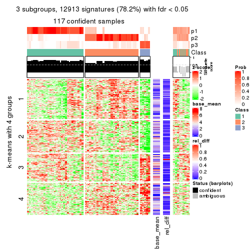
get_signatures(res, k = 4)
get_signatures(res, k = 5)
get_signatures(res, k = 6)
Signature heatmaps where rows are not scaled:
get_signatures(res, k = 2, scale_rows = FALSE)
get_signatures(res, k = 3, scale_rows = FALSE)
get_signatures(res, k = 4, scale_rows = FALSE)
get_signatures(res, k = 5, scale_rows = FALSE)
get_signatures(res, k = 6, scale_rows = FALSE)
Compare the overlap of signatures from different k:
compare_signatures(res)
get_signature() returns a data frame invisibly. TO get the list of signatures, the function
call should be assigned to a variable explicitly. In following code, if plot argument is set
to FALSE, no heatmap is plotted while only the differential analysis is performed.
# code only for demonstration
tb = get_signature(res, k = ..., plot = FALSE)
An example of the output of tb is:
#> which_row fdr mean_1 mean_2 scaled_mean_1 scaled_mean_2 km
#> 1 38 0.042760348 8.373488 9.131774 -0.5533452 0.5164555 1
#> 2 40 0.018707592 7.106213 8.469186 -0.6173731 0.5762149 1
#> 3 55 0.019134737 10.221463 11.207825 -0.6159697 0.5749050 1
#> 4 59 0.006059896 5.921854 7.869574 -0.6899429 0.6439467 1
#> 5 60 0.018055526 8.928898 10.211722 -0.6204761 0.5791110 1
#> 6 98 0.009384629 15.714769 14.887706 0.6635654 -0.6193277 2
...
The columns in tb are:
which_row: row indices corresponding to the input matrix.fdr: FDR for the differential test. mean_x: The mean value in group x.scaled_mean_x: The mean value in group x after rows are scaled.km: Row groups if k-means clustering is applied to rows.UMAP plot which shows how samples are separated.
dimension_reduction(res, k = 2, method = "UMAP")
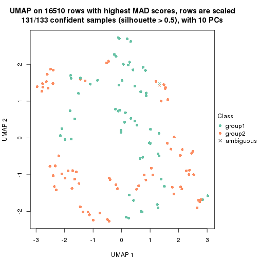
dimension_reduction(res, k = 3, method = "UMAP")
dimension_reduction(res, k = 4, method = "UMAP")
dimension_reduction(res, k = 5, method = "UMAP")
dimension_reduction(res, k = 6, method = "UMAP")
Following heatmap shows how subgroups are split when increasing k:
collect_classes(res)
If matrix rows can be associated to genes, consider to use GO_Enrichment(res,
...) to perform function enrichment for the signature genes.
The object with results only for a single top-value method and a single partition method can be extracted as:
res = res_list["MAD", "mclust"]
# you can also extract it by
# res = res_list["MAD:mclust"]
A summary of res and all the functions that can be applied to it:
res
#> A 'ConsensusPartition' object with k = 2, 3, 4, 5, 6.
#> On a matrix with 16510 rows and 133 columns.
#> Top rows (1000, 2000, 3000, 4000, 5000) are extracted by 'MAD' method.
#> Subgroups are detected by 'mclust' method.
#> Performed in total 1250 partitions by row resampling.
#> Best k for subgroups seems to be 2.
#>
#> Following methods can be applied to this 'ConsensusPartition' object:
#> [1] "cola_report" "collect_classes" "collect_plots"
#> [4] "collect_stats" "colnames" "compare_signatures"
#> [7] "consensus_heatmap" "dimension_reduction" "functional_enrichment"
#> [10] "get_anno_col" "get_anno" "get_classes"
#> [13] "get_consensus" "get_matrix" "get_membership"
#> [16] "get_param" "get_signatures" "get_stats"
#> [19] "is_best_k" "is_stable_k" "membership_heatmap"
#> [22] "ncol" "nrow" "plot_ecdf"
#> [25] "rownames" "select_partition_number" "show"
#> [28] "suggest_best_k" "test_to_known_factors"
collect_plots() function collects all the plots made from res for all k (number of partitions)
into one single page to provide an easy and fast comparison between different k.
collect_plots(res)
The plots are:
k and the heatmap of
predicted classes for each k.k.k.k.All the plots in panels can be made by individual functions and they are plotted later in this section.
select_partition_number() produces several plots showing different
statistics for choosing “optimized” k. There are following statistics:
k;k, the area increased is defined as \(A_k - A_{k-1}\).The detailed explanations of these statistics can be found in the cola vignette.
Generally speaking, lower PAC score, higher mean silhouette score or higher
concordance corresponds to better partition. Rand index and Jaccard index
measure how similar the current partition is compared to partition with k-1.
If they are too similar, we won't accept k is better than k-1.
select_partition_number(res)
The numeric values for all these statistics can be obtained by get_stats().
get_stats(res)
#> k 1-PAC mean_silhouette concordance area_increased Rand Jaccard
#> 2 2 1.000 0.951 0.978 0.1776 0.835 0.835
#> 3 3 0.429 0.730 0.823 1.7399 0.745 0.696
#> 4 4 0.561 0.760 0.850 0.3904 0.698 0.494
#> 5 5 0.528 0.586 0.746 0.1040 0.782 0.440
#> 6 6 0.677 0.593 0.753 0.0858 0.881 0.582
suggest_best_k() suggests the best \(k\) based on these statistics. The rules are as follows:
NA.suggest_best_k(res)
#> [1] 2
Following shows the table of the partitions (You need to click the show/hide
code output link to see it). The membership matrix (columns with name p*)
is inferred by
clue::cl_consensus()
function with the SE method. Basically the value in the membership matrix
represents the probability to belong to a certain group. The finall class
label for an item is determined with the group with highest probability it
belongs to.
In get_classes() function, the entropy is calculated from the membership
matrix and the silhouette score is calculated from the consensus matrix.
cbind(get_classes(res, k = 2), get_membership(res, k = 2))
#> class entropy silhouette p1 p2
#> ERR946976 2 0.5629 0.837 0.132 0.868
#> ERR947001 2 0.4298 0.895 0.088 0.912
#> ERR946975 2 0.0000 0.981 0.000 1.000
#> ERR947000 2 0.0000 0.981 0.000 1.000
#> ERR946972 1 0.0000 0.918 1.000 0.000
#> ERR946997 1 0.0000 0.918 1.000 0.000
#> ERR946986 2 0.0000 0.981 0.000 1.000
#> ERR947011 2 0.0000 0.981 0.000 1.000
#> ERR946977 2 0.0000 0.981 0.000 1.000
#> ERR947002 2 0.0000 0.981 0.000 1.000
#> ERR946974 2 0.0000 0.981 0.000 1.000
#> ERR946999 2 0.0000 0.981 0.000 1.000
#> ERR946971 1 0.0000 0.918 1.000 0.000
#> ERR946996 1 0.0000 0.918 1.000 0.000
#> ERR946992 2 0.0000 0.981 0.000 1.000
#> ERR947017 2 0.0000 0.981 0.000 1.000
#> ERR946984 1 0.9815 0.292 0.580 0.420
#> ERR947009 1 0.9881 0.244 0.564 0.436
#> ERR946987 2 0.0000 0.981 0.000 1.000
#> ERR947012 2 0.0000 0.981 0.000 1.000
#> ERR946991 2 0.3431 0.934 0.064 0.936
#> ERR947016 2 0.3431 0.934 0.064 0.936
#> ERR946983 2 0.3431 0.934 0.064 0.936
#> ERR947008 2 0.3431 0.934 0.064 0.936
#> ERR946970 2 0.0000 0.981 0.000 1.000
#> ERR946995 2 0.0000 0.981 0.000 1.000
#> ERR946969 2 0.0000 0.981 0.000 1.000
#> ERR946994 2 0.0000 0.981 0.000 1.000
#> ERR946982 2 0.0000 0.981 0.000 1.000
#> ERR947007 2 0.0000 0.981 0.000 1.000
#> ERR946988 2 0.0376 0.978 0.004 0.996
#> ERR947013 2 0.0000 0.981 0.000 1.000
#> ERR946985 2 0.0000 0.981 0.000 1.000
#> ERR947010 2 0.0000 0.981 0.000 1.000
#> ERR946989 2 0.0000 0.981 0.000 1.000
#> ERR947014 2 0.0000 0.981 0.000 1.000
#> ERR946968 2 0.0938 0.972 0.012 0.988
#> ERR946993 2 0.0938 0.972 0.012 0.988
#> ERR946990 2 0.0000 0.981 0.000 1.000
#> ERR947015 2 0.0000 0.981 0.000 1.000
#> ERR946980 2 0.0000 0.981 0.000 1.000
#> ERR947005 2 0.0000 0.981 0.000 1.000
#> ERR946978 2 0.0000 0.981 0.000 1.000
#> ERR947003 2 0.0000 0.981 0.000 1.000
#> ERR946979 2 0.3431 0.934 0.064 0.936
#> ERR947004 2 0.3431 0.934 0.064 0.936
#> ERR946957 1 0.0000 0.918 1.000 0.000
#> ERR946962 1 0.0000 0.918 1.000 0.000
#> ERR946958 2 0.0000 0.981 0.000 1.000
#> ERR946963 2 0.0000 0.981 0.000 1.000
#> ERR946959 2 0.0000 0.981 0.000 1.000
#> ERR946964 2 0.0000 0.981 0.000 1.000
#> ERR946967 1 0.0000 0.918 1.000 0.000
#> ERR862690 1 0.0000 0.918 1.000 0.000
#> ERR914278 2 0.0000 0.981 0.000 1.000
#> ERR914314 2 0.0000 0.981 0.000 1.000
#> ERR914279 2 0.0000 0.981 0.000 1.000
#> ERR914315 2 0.0000 0.981 0.000 1.000
#> ERR914280 2 0.0000 0.981 0.000 1.000
#> ERR914316 2 0.0000 0.981 0.000 1.000
#> ERR914281 2 0.0000 0.981 0.000 1.000
#> ERR914317 2 0.0000 0.981 0.000 1.000
#> ERR914282 2 0.1414 0.967 0.020 0.980
#> ERR914318 2 0.0938 0.973 0.012 0.988
#> ERR914283 2 0.0000 0.981 0.000 1.000
#> ERR914319 2 0.0000 0.981 0.000 1.000
#> ERR914284 2 0.0000 0.981 0.000 1.000
#> ERR914320 2 0.0000 0.981 0.000 1.000
#> ERR914285 2 0.0000 0.981 0.000 1.000
#> ERR914321 2 0.0000 0.981 0.000 1.000
#> ERR914286 2 0.0000 0.981 0.000 1.000
#> ERR914322 2 0.0000 0.981 0.000 1.000
#> ERR914287 2 0.0000 0.981 0.000 1.000
#> ERR914323 2 0.0000 0.981 0.000 1.000
#> ERR914288 2 0.0000 0.981 0.000 1.000
#> ERR914324 2 0.0000 0.981 0.000 1.000
#> ERR914289 2 0.0000 0.981 0.000 1.000
#> ERR914290 2 0.0000 0.981 0.000 1.000
#> ERR914326 2 0.0000 0.981 0.000 1.000
#> ERR914291 2 0.0000 0.981 0.000 1.000
#> ERR914327 2 0.0000 0.981 0.000 1.000
#> ERR914292 2 0.0000 0.981 0.000 1.000
#> ERR914328 2 0.0000 0.981 0.000 1.000
#> ERR914293 2 0.0000 0.981 0.000 1.000
#> ERR914329 2 0.0000 0.981 0.000 1.000
#> ERR914294 2 0.0000 0.981 0.000 1.000
#> ERR914330 2 0.0000 0.981 0.000 1.000
#> ERR914295 2 0.0000 0.981 0.000 1.000
#> ERR914331 2 0.0000 0.981 0.000 1.000
#> ERR914296 2 0.0000 0.981 0.000 1.000
#> ERR914332 2 0.0000 0.981 0.000 1.000
#> ERR914297 2 0.0000 0.981 0.000 1.000
#> ERR914333 2 0.0000 0.981 0.000 1.000
#> ERR914298 2 0.0000 0.981 0.000 1.000
#> ERR914334 2 0.0000 0.981 0.000 1.000
#> ERR914299 2 0.0000 0.981 0.000 1.000
#> ERR914335 2 0.0000 0.981 0.000 1.000
#> ERR914300 2 0.0000 0.981 0.000 1.000
#> ERR914336 2 0.0000 0.981 0.000 1.000
#> ERR914301 2 0.3431 0.934 0.064 0.936
#> ERR914337 2 0.3431 0.934 0.064 0.936
#> ERR914302 2 0.0000 0.981 0.000 1.000
#> ERR914338 2 0.0000 0.981 0.000 1.000
#> ERR914303 2 0.3431 0.934 0.064 0.936
#> ERR914339 2 0.3431 0.934 0.064 0.936
#> ERR914304 2 0.3431 0.934 0.064 0.936
#> ERR914340 2 0.3431 0.934 0.064 0.936
#> ERR914305 2 0.3431 0.934 0.064 0.936
#> ERR914341 2 0.3431 0.934 0.064 0.936
#> ERR914306 2 0.3431 0.934 0.064 0.936
#> ERR914342 2 0.3431 0.934 0.064 0.936
#> ERR914307 2 0.0000 0.981 0.000 1.000
#> ERR914343 2 0.0000 0.981 0.000 1.000
#> ERR914308 2 0.0000 0.981 0.000 1.000
#> ERR914344 2 0.0000 0.981 0.000 1.000
#> ERR914309 2 0.0000 0.981 0.000 1.000
#> ERR914345 2 0.0000 0.981 0.000 1.000
#> ERR914310 2 0.0000 0.981 0.000 1.000
#> ERR914346 2 0.0000 0.981 0.000 1.000
#> ERR914311 2 0.3431 0.934 0.064 0.936
#> ERR914347 2 0.3431 0.934 0.064 0.936
#> ERR914312 2 0.0000 0.981 0.000 1.000
#> ERR914348 2 0.0000 0.981 0.000 1.000
#> ERR914313 2 0.0000 0.981 0.000 1.000
#> ERR914349 2 0.0000 0.981 0.000 1.000
#> ERR946960 2 0.7815 0.673 0.232 0.768
#> ERR946965 2 0.8608 0.565 0.284 0.716
#> ERR946966 2 0.0000 0.981 0.000 1.000
#> ERR946973 1 0.0000 0.918 1.000 0.000
#> ERR946998 1 0.0000 0.918 1.000 0.000
#> ERR946981 2 0.3431 0.934 0.064 0.936
#> ERR947006 2 0.3431 0.934 0.064 0.936
#> ERR914325 2 0.0000 0.981 0.000 1.000
cbind(get_classes(res, k = 3), get_membership(res, k = 3))
#> class entropy silhouette p1 p2 p3
#> ERR946976 1 0.5016 0.4412 0.760 0.240 0.000
#> ERR947001 1 0.5016 0.4412 0.760 0.240 0.000
#> ERR946975 1 0.5138 0.7605 0.748 0.252 0.000
#> ERR947000 1 0.5138 0.7605 0.748 0.252 0.000
#> ERR946972 3 0.0000 1.0000 0.000 0.000 1.000
#> ERR946997 3 0.0000 1.0000 0.000 0.000 1.000
#> ERR946986 1 0.5397 0.3646 0.720 0.280 0.000
#> ERR947011 1 0.5138 0.4350 0.748 0.252 0.000
#> ERR946977 1 0.7819 -0.3018 0.508 0.440 0.052
#> ERR947002 1 0.7526 -0.2099 0.536 0.424 0.040
#> ERR946974 1 0.4750 0.7608 0.784 0.216 0.000
#> ERR946999 1 0.4750 0.7608 0.784 0.216 0.000
#> ERR946971 3 0.0000 1.0000 0.000 0.000 1.000
#> ERR946996 3 0.0000 1.0000 0.000 0.000 1.000
#> ERR946992 1 0.5363 0.7488 0.724 0.276 0.000
#> ERR947017 1 0.5327 0.7509 0.728 0.272 0.000
#> ERR946984 2 0.7603 0.8992 0.236 0.668 0.096
#> ERR947009 2 0.7603 0.8992 0.236 0.668 0.096
#> ERR946987 1 0.6129 0.7128 0.668 0.324 0.008
#> ERR947012 1 0.6129 0.7128 0.668 0.324 0.008
#> ERR946991 2 0.5115 0.9771 0.228 0.768 0.004
#> ERR947016 2 0.5115 0.9771 0.228 0.768 0.004
#> ERR946983 2 0.4887 0.9799 0.228 0.772 0.000
#> ERR947008 2 0.4887 0.9799 0.228 0.772 0.000
#> ERR946970 1 0.4702 0.7624 0.788 0.212 0.000
#> ERR946995 1 0.4702 0.7624 0.788 0.212 0.000
#> ERR946969 1 0.4796 0.5028 0.780 0.220 0.000
#> ERR946994 1 0.4178 0.5865 0.828 0.172 0.000
#> ERR946982 1 0.5465 0.7431 0.712 0.288 0.000
#> ERR947007 1 0.5465 0.7431 0.712 0.288 0.000
#> ERR946988 1 0.7671 -0.3667 0.492 0.464 0.044
#> ERR947013 1 0.7566 -0.2951 0.512 0.448 0.040
#> ERR946985 1 0.5591 0.7329 0.696 0.304 0.000
#> ERR947010 1 0.5591 0.7329 0.696 0.304 0.000
#> ERR946989 1 0.4750 0.7608 0.784 0.216 0.000
#> ERR947014 1 0.4750 0.7608 0.784 0.216 0.000
#> ERR946968 1 0.5016 0.4412 0.760 0.240 0.000
#> ERR946993 1 0.5016 0.4412 0.760 0.240 0.000
#> ERR946990 1 0.2448 0.7118 0.924 0.076 0.000
#> ERR947015 1 0.1411 0.7451 0.964 0.036 0.000
#> ERR946980 1 0.6247 0.1013 0.620 0.376 0.004
#> ERR947005 1 0.6008 0.1232 0.628 0.372 0.000
#> ERR946978 1 0.1289 0.7536 0.968 0.032 0.000
#> ERR947003 1 0.1289 0.7536 0.968 0.032 0.000
#> ERR946979 2 0.5292 0.9750 0.228 0.764 0.008
#> ERR947004 2 0.5292 0.9750 0.228 0.764 0.008
#> ERR946957 3 0.0000 1.0000 0.000 0.000 1.000
#> ERR946962 3 0.0000 1.0000 0.000 0.000 1.000
#> ERR946958 1 0.0424 0.7574 0.992 0.008 0.000
#> ERR946963 1 0.0424 0.7574 0.992 0.008 0.000
#> ERR946959 1 0.1163 0.7552 0.972 0.028 0.000
#> ERR946964 1 0.1163 0.7552 0.972 0.028 0.000
#> ERR946967 3 0.0000 1.0000 0.000 0.000 1.000
#> ERR862690 3 0.0000 1.0000 0.000 0.000 1.000
#> ERR914278 1 0.5327 0.7507 0.728 0.272 0.000
#> ERR914314 1 0.5327 0.7507 0.728 0.272 0.000
#> ERR914279 1 0.1031 0.7559 0.976 0.024 0.000
#> ERR914315 1 0.1031 0.7559 0.976 0.024 0.000
#> ERR914280 1 0.5098 0.7603 0.752 0.248 0.000
#> ERR914316 1 0.4974 0.7645 0.764 0.236 0.000
#> ERR914281 1 0.6155 0.7092 0.664 0.328 0.008
#> ERR914317 1 0.6129 0.7128 0.668 0.324 0.008
#> ERR914282 2 0.4974 0.9702 0.236 0.764 0.000
#> ERR914318 2 0.5968 0.7364 0.364 0.636 0.000
#> ERR914283 1 0.1163 0.7552 0.972 0.028 0.000
#> ERR914319 1 0.1163 0.7552 0.972 0.028 0.000
#> ERR914284 1 0.4555 0.7650 0.800 0.200 0.000
#> ERR914320 1 0.4555 0.7650 0.800 0.200 0.000
#> ERR914285 1 0.4796 0.7609 0.780 0.220 0.000
#> ERR914321 1 0.4750 0.7608 0.784 0.216 0.000
#> ERR914286 1 0.5178 0.7576 0.744 0.256 0.000
#> ERR914322 1 0.5178 0.7576 0.744 0.256 0.000
#> ERR914287 1 0.1163 0.7552 0.972 0.028 0.000
#> ERR914323 1 0.1163 0.7552 0.972 0.028 0.000
#> ERR914288 1 0.4605 0.7666 0.796 0.204 0.000
#> ERR914324 1 0.4504 0.7688 0.804 0.196 0.000
#> ERR914289 1 0.4555 0.7661 0.800 0.200 0.000
#> ERR914290 1 0.1031 0.7562 0.976 0.024 0.000
#> ERR914326 1 0.1031 0.7562 0.976 0.024 0.000
#> ERR914291 1 0.6140 0.0285 0.596 0.404 0.000
#> ERR914327 1 0.6008 0.1565 0.628 0.372 0.000
#> ERR914292 1 0.0747 0.7553 0.984 0.016 0.000
#> ERR914328 1 0.0592 0.7565 0.988 0.012 0.000
#> ERR914293 1 0.1163 0.7552 0.972 0.028 0.000
#> ERR914329 1 0.1163 0.7552 0.972 0.028 0.000
#> ERR914294 1 0.5291 0.7522 0.732 0.268 0.000
#> ERR914330 1 0.5291 0.7522 0.732 0.268 0.000
#> ERR914295 1 0.0592 0.7565 0.988 0.012 0.000
#> ERR914331 1 0.0237 0.7571 0.996 0.004 0.000
#> ERR914296 1 0.1411 0.7516 0.964 0.036 0.000
#> ERR914332 1 0.1289 0.7536 0.968 0.032 0.000
#> ERR914297 1 0.2878 0.6966 0.904 0.096 0.000
#> ERR914333 1 0.2066 0.7303 0.940 0.060 0.000
#> ERR914298 1 0.1163 0.7552 0.972 0.028 0.000
#> ERR914334 1 0.1163 0.7552 0.972 0.028 0.000
#> ERR914299 1 0.2959 0.7473 0.900 0.100 0.000
#> ERR914335 1 0.3551 0.7591 0.868 0.132 0.000
#> ERR914300 1 0.4605 0.7666 0.796 0.204 0.000
#> ERR914336 1 0.4654 0.7672 0.792 0.208 0.000
#> ERR914301 2 0.4887 0.9799 0.228 0.772 0.000
#> ERR914337 2 0.4887 0.9799 0.228 0.772 0.000
#> ERR914302 1 0.5291 0.7522 0.732 0.268 0.000
#> ERR914338 1 0.5291 0.7522 0.732 0.268 0.000
#> ERR914303 2 0.4887 0.9799 0.228 0.772 0.000
#> ERR914339 2 0.4887 0.9799 0.228 0.772 0.000
#> ERR914304 2 0.4887 0.9799 0.228 0.772 0.000
#> ERR914340 2 0.4887 0.9799 0.228 0.772 0.000
#> ERR914305 2 0.4887 0.9799 0.228 0.772 0.000
#> ERR914341 2 0.4887 0.9799 0.228 0.772 0.000
#> ERR914306 2 0.4887 0.9799 0.228 0.772 0.000
#> ERR914342 2 0.4887 0.9799 0.228 0.772 0.000
#> ERR914307 1 0.0592 0.7565 0.988 0.012 0.000
#> ERR914343 1 0.0747 0.7583 0.984 0.016 0.000
#> ERR914308 1 0.1031 0.7562 0.976 0.024 0.000
#> ERR914344 1 0.1031 0.7562 0.976 0.024 0.000
#> ERR914309 1 0.1031 0.7562 0.976 0.024 0.000
#> ERR914345 1 0.1031 0.7562 0.976 0.024 0.000
#> ERR914310 1 0.4555 0.7661 0.800 0.200 0.000
#> ERR914346 1 0.4555 0.7661 0.800 0.200 0.000
#> ERR914311 2 0.4887 0.9799 0.228 0.772 0.000
#> ERR914347 2 0.4887 0.9799 0.228 0.772 0.000
#> ERR914312 1 0.5178 0.7591 0.744 0.256 0.000
#> ERR914348 1 0.5178 0.7591 0.744 0.256 0.000
#> ERR914313 1 0.5650 0.7274 0.688 0.312 0.000
#> ERR914349 1 0.5650 0.7274 0.688 0.312 0.000
#> ERR946960 1 0.5016 0.4412 0.760 0.240 0.000
#> ERR946965 1 0.5016 0.4412 0.760 0.240 0.000
#> ERR946966 1 0.6045 0.0939 0.620 0.380 0.000
#> ERR946973 3 0.0000 1.0000 0.000 0.000 1.000
#> ERR946998 3 0.0000 1.0000 0.000 0.000 1.000
#> ERR946981 2 0.4887 0.9799 0.228 0.772 0.000
#> ERR947006 2 0.4887 0.9799 0.228 0.772 0.000
#> ERR914325 1 0.4555 0.7661 0.800 0.200 0.000
cbind(get_classes(res, k = 4), get_membership(res, k = 4))
#> class entropy silhouette p1 p2 p3 p4
#> ERR946976 1 0.4459 0.7761 0.780 0.188 0 0.032
#> ERR947001 1 0.4459 0.7761 0.780 0.188 0 0.032
#> ERR946975 4 0.5289 0.6071 0.344 0.020 0 0.636
#> ERR947000 4 0.5289 0.6071 0.344 0.020 0 0.636
#> ERR946972 3 0.0000 1.0000 0.000 0.000 1 0.000
#> ERR946997 3 0.0000 1.0000 0.000 0.000 1 0.000
#> ERR946986 1 0.4964 0.7163 0.716 0.256 0 0.028
#> ERR947011 1 0.4934 0.7210 0.720 0.252 0 0.028
#> ERR946977 2 0.5571 0.0925 0.396 0.580 0 0.024
#> ERR947002 1 0.5697 0.2266 0.488 0.488 0 0.024
#> ERR946974 4 0.3172 0.8195 0.160 0.000 0 0.840
#> ERR946999 4 0.3356 0.8151 0.176 0.000 0 0.824
#> ERR946971 3 0.0000 1.0000 0.000 0.000 1 0.000
#> ERR946996 3 0.0000 1.0000 0.000 0.000 1 0.000
#> ERR946992 4 0.4072 0.7181 0.252 0.000 0 0.748
#> ERR947017 4 0.4103 0.7135 0.256 0.000 0 0.744
#> ERR946984 2 0.1520 0.8887 0.020 0.956 0 0.024
#> ERR947009 2 0.1520 0.8887 0.020 0.956 0 0.024
#> ERR946987 4 0.0000 0.7897 0.000 0.000 0 1.000
#> ERR947012 4 0.0000 0.7897 0.000 0.000 0 1.000
#> ERR946991 2 0.0707 0.9223 0.000 0.980 0 0.020
#> ERR947016 2 0.0707 0.9223 0.000 0.980 0 0.020
#> ERR946983 2 0.1520 0.9068 0.024 0.956 0 0.020
#> ERR947008 2 0.1724 0.9003 0.032 0.948 0 0.020
#> ERR946970 4 0.3610 0.8038 0.200 0.000 0 0.800
#> ERR946995 4 0.3610 0.8038 0.200 0.000 0 0.800
#> ERR946969 1 0.4934 0.7210 0.720 0.252 0 0.028
#> ERR946994 1 0.4872 0.7296 0.728 0.244 0 0.028
#> ERR946982 4 0.0000 0.7897 0.000 0.000 0 1.000
#> ERR947007 4 0.0188 0.7925 0.004 0.000 0 0.996
#> ERR946988 2 0.5403 0.2669 0.348 0.628 0 0.024
#> ERR947013 2 0.5496 0.1858 0.372 0.604 0 0.024
#> ERR946985 4 0.0707 0.7938 0.020 0.000 0 0.980
#> ERR947010 4 0.0707 0.7938 0.020 0.000 0 0.980
#> ERR946989 4 0.3356 0.8151 0.176 0.000 0 0.824
#> ERR947014 4 0.3356 0.8151 0.176 0.000 0 0.824
#> ERR946968 1 0.5022 0.5679 0.736 0.044 0 0.220
#> ERR946993 1 0.5022 0.5679 0.736 0.044 0 0.220
#> ERR946990 1 0.4799 0.7452 0.744 0.224 0 0.032
#> ERR947015 1 0.4799 0.7452 0.744 0.224 0 0.032
#> ERR946980 1 0.5343 0.6261 0.656 0.316 0 0.028
#> ERR947005 1 0.5343 0.6261 0.656 0.316 0 0.028
#> ERR946978 1 0.0000 0.7819 1.000 0.000 0 0.000
#> ERR947003 1 0.0000 0.7819 1.000 0.000 0 0.000
#> ERR946979 2 0.1118 0.9088 0.000 0.964 0 0.036
#> ERR947004 2 0.1118 0.9088 0.000 0.964 0 0.036
#> ERR946957 3 0.0000 1.0000 0.000 0.000 1 0.000
#> ERR946962 3 0.0000 1.0000 0.000 0.000 1 0.000
#> ERR946958 1 0.2131 0.7898 0.932 0.036 0 0.032
#> ERR946963 1 0.2036 0.7889 0.936 0.032 0 0.032
#> ERR946959 1 0.0188 0.7830 0.996 0.000 0 0.004
#> ERR946964 1 0.0188 0.7830 0.996 0.000 0 0.004
#> ERR946967 3 0.0000 1.0000 0.000 0.000 1 0.000
#> ERR862690 3 0.0000 1.0000 0.000 0.000 1 0.000
#> ERR914278 4 0.2011 0.8240 0.080 0.000 0 0.920
#> ERR914314 4 0.2011 0.8240 0.080 0.000 0 0.920
#> ERR914279 1 0.1305 0.7869 0.960 0.004 0 0.036
#> ERR914315 1 0.1305 0.7869 0.960 0.004 0 0.036
#> ERR914280 4 0.4677 0.6583 0.316 0.004 0 0.680
#> ERR914316 4 0.4699 0.6546 0.320 0.004 0 0.676
#> ERR914281 4 0.0000 0.7897 0.000 0.000 0 1.000
#> ERR914317 4 0.0000 0.7897 0.000 0.000 0 1.000
#> ERR914282 2 0.1256 0.9140 0.008 0.964 0 0.028
#> ERR914318 2 0.2660 0.8644 0.056 0.908 0 0.036
#> ERR914283 1 0.0927 0.7796 0.976 0.016 0 0.008
#> ERR914319 1 0.0927 0.7796 0.976 0.016 0 0.008
#> ERR914284 4 0.4679 0.6430 0.352 0.000 0 0.648
#> ERR914320 4 0.4679 0.6430 0.352 0.000 0 0.648
#> ERR914285 4 0.2589 0.8254 0.116 0.000 0 0.884
#> ERR914321 4 0.2589 0.8254 0.116 0.000 0 0.884
#> ERR914286 4 0.2469 0.8259 0.108 0.000 0 0.892
#> ERR914322 4 0.2530 0.8259 0.112 0.000 0 0.888
#> ERR914287 1 0.1305 0.7859 0.960 0.004 0 0.036
#> ERR914323 1 0.1305 0.7859 0.960 0.004 0 0.036
#> ERR914288 4 0.5582 0.5889 0.348 0.032 0 0.620
#> ERR914324 4 0.5582 0.5889 0.348 0.032 0 0.620
#> ERR914289 4 0.3528 0.8079 0.192 0.000 0 0.808
#> ERR914290 1 0.1302 0.7806 0.956 0.000 0 0.044
#> ERR914326 1 0.1557 0.7722 0.944 0.000 0 0.056
#> ERR914291 1 0.5937 0.5628 0.608 0.340 0 0.052
#> ERR914327 1 0.5973 0.5757 0.612 0.332 0 0.056
#> ERR914292 1 0.4932 0.7325 0.728 0.240 0 0.032
#> ERR914328 1 0.4900 0.7354 0.732 0.236 0 0.032
#> ERR914293 1 0.1305 0.7859 0.960 0.004 0 0.036
#> ERR914329 1 0.1305 0.7859 0.960 0.004 0 0.036
#> ERR914294 4 0.0592 0.7948 0.016 0.000 0 0.984
#> ERR914330 4 0.0592 0.7948 0.016 0.000 0 0.984
#> ERR914295 1 0.6231 0.6664 0.668 0.148 0 0.184
#> ERR914331 1 0.6704 0.5201 0.600 0.136 0 0.264
#> ERR914296 1 0.4564 0.3869 0.672 0.328 0 0.000
#> ERR914332 1 0.3873 0.5778 0.772 0.228 0 0.000
#> ERR914297 1 0.4728 0.7487 0.752 0.216 0 0.032
#> ERR914333 1 0.4728 0.7487 0.752 0.216 0 0.032
#> ERR914298 1 0.0707 0.7868 0.980 0.000 0 0.020
#> ERR914334 1 0.0707 0.7868 0.980 0.000 0 0.020
#> ERR914299 1 0.6747 0.2217 0.528 0.100 0 0.372
#> ERR914335 4 0.6387 0.2375 0.444 0.064 0 0.492
#> ERR914300 4 0.4360 0.7761 0.248 0.008 0 0.744
#> ERR914336 4 0.4220 0.7781 0.248 0.004 0 0.748
#> ERR914301 2 0.0707 0.9223 0.000 0.980 0 0.020
#> ERR914337 2 0.0707 0.9223 0.000 0.980 0 0.020
#> ERR914302 4 0.0592 0.7948 0.016 0.000 0 0.984
#> ERR914338 4 0.0592 0.7948 0.016 0.000 0 0.984
#> ERR914303 2 0.0707 0.9223 0.000 0.980 0 0.020
#> ERR914339 2 0.0707 0.9223 0.000 0.980 0 0.020
#> ERR914304 2 0.0707 0.9223 0.000 0.980 0 0.020
#> ERR914340 2 0.0707 0.9223 0.000 0.980 0 0.020
#> ERR914305 2 0.0707 0.9223 0.000 0.980 0 0.020
#> ERR914341 2 0.0707 0.9223 0.000 0.980 0 0.020
#> ERR914306 2 0.0707 0.9223 0.000 0.980 0 0.020
#> ERR914342 2 0.0707 0.9223 0.000 0.980 0 0.020
#> ERR914307 1 0.6912 0.4512 0.576 0.152 0 0.272
#> ERR914343 1 0.6937 0.1219 0.508 0.116 0 0.376
#> ERR914308 1 0.3307 0.7961 0.868 0.104 0 0.028
#> ERR914344 1 0.2984 0.7978 0.888 0.084 0 0.028
#> ERR914309 1 0.3182 0.7971 0.876 0.096 0 0.028
#> ERR914345 1 0.2845 0.7981 0.896 0.076 0 0.028
#> ERR914310 4 0.3801 0.7973 0.220 0.000 0 0.780
#> ERR914346 4 0.3801 0.7973 0.220 0.000 0 0.780
#> ERR914311 2 0.0707 0.9223 0.000 0.980 0 0.020
#> ERR914347 2 0.0707 0.9223 0.000 0.980 0 0.020
#> ERR914312 4 0.4936 0.6505 0.316 0.012 0 0.672
#> ERR914348 4 0.4999 0.6381 0.328 0.012 0 0.660
#> ERR914313 4 0.0000 0.7897 0.000 0.000 0 1.000
#> ERR914349 4 0.0000 0.7897 0.000 0.000 0 1.000
#> ERR946960 1 0.2131 0.7898 0.932 0.036 0 0.032
#> ERR946965 1 0.2131 0.7898 0.932 0.036 0 0.032
#> ERR946966 1 0.5947 0.4868 0.572 0.384 0 0.044
#> ERR946973 3 0.0000 1.0000 0.000 0.000 1 0.000
#> ERR946998 3 0.0000 1.0000 0.000 0.000 1 0.000
#> ERR946981 2 0.0707 0.9223 0.000 0.980 0 0.020
#> ERR947006 2 0.0895 0.9204 0.004 0.976 0 0.020
#> ERR914325 4 0.3528 0.8079 0.192 0.000 0 0.808
cbind(get_classes(res, k = 5), get_membership(res, k = 5))
#> class entropy silhouette p1 p2 p3 p4 p5
#> ERR946976 5 0.4380 -0.1623 0.376 0.008 0 0.000 0.616
#> ERR947001 5 0.4380 -0.1623 0.376 0.008 0 0.000 0.616
#> ERR946975 5 0.5658 0.4654 0.160 0.004 0 0.188 0.648
#> ERR947000 5 0.5658 0.4654 0.160 0.004 0 0.188 0.648
#> ERR946972 3 0.0000 1.0000 0.000 0.000 1 0.000 0.000
#> ERR946997 3 0.0000 1.0000 0.000 0.000 1 0.000 0.000
#> ERR946986 5 0.2012 0.5094 0.020 0.060 0 0.000 0.920
#> ERR947011 5 0.1965 0.5116 0.024 0.052 0 0.000 0.924
#> ERR946977 2 0.4382 0.6366 0.024 0.688 0 0.000 0.288
#> ERR947002 2 0.4382 0.6366 0.024 0.688 0 0.000 0.288
#> ERR946974 4 0.6472 0.4411 0.284 0.000 0 0.492 0.224
#> ERR946999 4 0.6660 0.2981 0.288 0.000 0 0.444 0.268
#> ERR946971 3 0.0000 1.0000 0.000 0.000 1 0.000 0.000
#> ERR946996 3 0.0000 1.0000 0.000 0.000 1 0.000 0.000
#> ERR946992 4 0.3561 0.8030 0.000 0.000 0 0.740 0.260
#> ERR947017 4 0.3534 0.8064 0.000 0.000 0 0.744 0.256
#> ERR946984 2 0.2574 0.8115 0.012 0.876 0 0.000 0.112
#> ERR947009 2 0.2574 0.8115 0.012 0.876 0 0.000 0.112
#> ERR946987 4 0.1908 0.8482 0.000 0.000 0 0.908 0.092
#> ERR947012 4 0.1908 0.8482 0.000 0.000 0 0.908 0.092
#> ERR946991 2 0.1341 0.8220 0.000 0.944 0 0.000 0.056
#> ERR947016 2 0.1270 0.8230 0.000 0.948 0 0.000 0.052
#> ERR946983 2 0.3390 0.8142 0.000 0.840 0 0.060 0.100
#> ERR947008 2 0.3390 0.8142 0.000 0.840 0 0.060 0.100
#> ERR946970 5 0.5702 0.3741 0.180 0.000 0 0.192 0.628
#> ERR946995 5 0.5702 0.3741 0.180 0.000 0 0.192 0.628
#> ERR946969 5 0.1800 0.5138 0.020 0.048 0 0.000 0.932
#> ERR946994 5 0.1800 0.5138 0.020 0.048 0 0.000 0.932
#> ERR946982 4 0.1851 0.8479 0.000 0.000 0 0.912 0.088
#> ERR947007 4 0.1908 0.8490 0.000 0.000 0 0.908 0.092
#> ERR946988 2 0.4229 0.6575 0.020 0.704 0 0.000 0.276
#> ERR947013 2 0.4318 0.6344 0.020 0.688 0 0.000 0.292
#> ERR946985 4 0.1965 0.8493 0.000 0.000 0 0.904 0.096
#> ERR947010 4 0.1965 0.8493 0.000 0.000 0 0.904 0.096
#> ERR946989 5 0.6148 0.1821 0.180 0.000 0 0.268 0.552
#> ERR947014 5 0.6200 0.1458 0.180 0.000 0 0.280 0.540
#> ERR946968 1 0.5029 0.1453 0.528 0.004 0 0.024 0.444
#> ERR946993 1 0.5029 0.1453 0.528 0.004 0 0.024 0.444
#> ERR946990 5 0.1800 0.5138 0.020 0.048 0 0.000 0.932
#> ERR947015 5 0.1800 0.5138 0.020 0.048 0 0.000 0.932
#> ERR946980 2 0.4824 0.3528 0.020 0.512 0 0.000 0.468
#> ERR947005 5 0.4229 0.3543 0.020 0.276 0 0.000 0.704
#> ERR946978 1 0.2674 0.7215 0.856 0.004 0 0.000 0.140
#> ERR947003 1 0.2516 0.7228 0.860 0.000 0 0.000 0.140
#> ERR946979 2 0.4035 0.7181 0.000 0.784 0 0.156 0.060
#> ERR947004 2 0.4035 0.7181 0.000 0.784 0 0.156 0.060
#> ERR946957 3 0.0000 1.0000 0.000 0.000 1 0.000 0.000
#> ERR946962 3 0.0000 1.0000 0.000 0.000 1 0.000 0.000
#> ERR946958 1 0.4066 0.5598 0.672 0.004 0 0.000 0.324
#> ERR946963 1 0.4066 0.5598 0.672 0.004 0 0.000 0.324
#> ERR946959 1 0.2516 0.7228 0.860 0.000 0 0.000 0.140
#> ERR946964 1 0.2516 0.7228 0.860 0.000 0 0.000 0.140
#> ERR946967 3 0.0000 1.0000 0.000 0.000 1 0.000 0.000
#> ERR862690 3 0.0000 1.0000 0.000 0.000 1 0.000 0.000
#> ERR914278 4 0.3143 0.8378 0.000 0.000 0 0.796 0.204
#> ERR914314 4 0.3143 0.8378 0.000 0.000 0 0.796 0.204
#> ERR914279 5 0.4192 0.2538 0.404 0.000 0 0.000 0.596
#> ERR914315 5 0.4249 0.2112 0.432 0.000 0 0.000 0.568
#> ERR914280 5 0.3934 0.4569 0.012 0.004 0 0.236 0.748
#> ERR914316 5 0.4074 0.4699 0.012 0.012 0 0.224 0.752
#> ERR914281 4 0.1544 0.8363 0.000 0.000 0 0.932 0.068
#> ERR914317 4 0.1478 0.8359 0.000 0.000 0 0.936 0.064
#> ERR914282 2 0.4024 0.8075 0.024 0.820 0 0.064 0.092
#> ERR914318 2 0.4246 0.8016 0.032 0.808 0 0.064 0.096
#> ERR914283 1 0.2648 0.7219 0.848 0.000 0 0.000 0.152
#> ERR914319 1 0.2648 0.7219 0.848 0.000 0 0.000 0.152
#> ERR914284 5 0.5941 0.4425 0.372 0.016 0 0.072 0.540
#> ERR914320 5 0.5941 0.4425 0.372 0.016 0 0.072 0.540
#> ERR914285 4 0.6128 0.6455 0.188 0.000 0 0.560 0.252
#> ERR914321 4 0.6128 0.6455 0.188 0.000 0 0.560 0.252
#> ERR914286 4 0.5006 0.7269 0.116 0.000 0 0.704 0.180
#> ERR914322 4 0.5006 0.7269 0.116 0.000 0 0.704 0.180
#> ERR914287 5 0.4306 0.0933 0.492 0.000 0 0.000 0.508
#> ERR914323 5 0.4306 0.0933 0.492 0.000 0 0.000 0.508
#> ERR914288 5 0.4636 0.5167 0.152 0.064 0 0.020 0.764
#> ERR914324 5 0.4499 0.5114 0.164 0.060 0 0.012 0.764
#> ERR914289 5 0.5696 0.4217 0.200 0.000 0 0.172 0.628
#> ERR914290 5 0.4302 0.1273 0.480 0.000 0 0.000 0.520
#> ERR914326 5 0.4302 0.1273 0.480 0.000 0 0.000 0.520
#> ERR914291 5 0.6002 0.3770 0.032 0.284 0 0.076 0.608
#> ERR914327 5 0.5983 0.3813 0.032 0.280 0 0.076 0.612
#> ERR914292 5 0.1809 0.5314 0.012 0.060 0 0.000 0.928
#> ERR914328 5 0.2376 0.5372 0.044 0.052 0 0.000 0.904
#> ERR914293 5 0.4302 0.1273 0.480 0.000 0 0.000 0.520
#> ERR914329 5 0.4304 0.1164 0.484 0.000 0 0.000 0.516
#> ERR914294 4 0.3209 0.8451 0.008 0.000 0 0.812 0.180
#> ERR914330 4 0.3171 0.8462 0.008 0.000 0 0.816 0.176
#> ERR914295 5 0.3741 0.5161 0.264 0.004 0 0.000 0.732
#> ERR914331 5 0.4059 0.5051 0.292 0.004 0 0.004 0.700
#> ERR914296 1 0.3399 0.7053 0.812 0.020 0 0.000 0.168
#> ERR914332 1 0.3399 0.7053 0.812 0.020 0 0.000 0.168
#> ERR914297 5 0.4064 0.4906 0.116 0.092 0 0.000 0.792
#> ERR914333 5 0.3912 0.4979 0.108 0.088 0 0.000 0.804
#> ERR914298 1 0.3305 0.6554 0.776 0.000 0 0.000 0.224
#> ERR914334 1 0.3424 0.6304 0.760 0.000 0 0.000 0.240
#> ERR914299 5 0.5836 0.4411 0.032 0.200 0 0.104 0.664
#> ERR914335 5 0.5910 0.4441 0.032 0.192 0 0.116 0.660
#> ERR914300 5 0.6428 0.4561 0.356 0.052 0 0.064 0.528
#> ERR914336 5 0.6480 0.4546 0.356 0.052 0 0.068 0.524
#> ERR914301 2 0.1571 0.8367 0.000 0.936 0 0.060 0.004
#> ERR914337 2 0.1638 0.8361 0.000 0.932 0 0.064 0.004
#> ERR914302 4 0.3318 0.8406 0.008 0.000 0 0.800 0.192
#> ERR914338 4 0.3318 0.8406 0.008 0.000 0 0.800 0.192
#> ERR914303 2 0.0880 0.8445 0.000 0.968 0 0.000 0.032
#> ERR914339 2 0.0963 0.8448 0.000 0.964 0 0.000 0.036
#> ERR914304 2 0.1981 0.8385 0.000 0.920 0 0.064 0.016
#> ERR914340 2 0.1981 0.8385 0.000 0.920 0 0.064 0.016
#> ERR914305 2 0.1908 0.8293 0.000 0.908 0 0.000 0.092
#> ERR914341 2 0.1908 0.8293 0.000 0.908 0 0.000 0.092
#> ERR914306 2 0.0162 0.8361 0.000 0.996 0 0.000 0.004
#> ERR914342 2 0.0162 0.8361 0.000 0.996 0 0.000 0.004
#> ERR914307 5 0.3780 0.5309 0.116 0.072 0 0.000 0.812
#> ERR914343 5 0.3828 0.5291 0.120 0.072 0 0.000 0.808
#> ERR914308 1 0.4294 -0.0677 0.532 0.000 0 0.000 0.468
#> ERR914344 1 0.4300 -0.0875 0.524 0.000 0 0.000 0.476
#> ERR914309 5 0.4273 0.1892 0.448 0.000 0 0.000 0.552
#> ERR914345 5 0.4273 0.1858 0.448 0.000 0 0.000 0.552
#> ERR914310 5 0.5246 0.4741 0.344 0.000 0 0.060 0.596
#> ERR914346 5 0.5285 0.4645 0.356 0.000 0 0.060 0.584
#> ERR914311 2 0.0162 0.8369 0.000 0.996 0 0.000 0.004
#> ERR914347 2 0.0162 0.8369 0.000 0.996 0 0.000 0.004
#> ERR914312 5 0.6114 0.4791 0.076 0.056 0 0.232 0.636
#> ERR914348 5 0.6093 0.4790 0.084 0.048 0 0.232 0.636
#> ERR914313 4 0.1478 0.8359 0.000 0.000 0 0.936 0.064
#> ERR914349 4 0.1478 0.8359 0.000 0.000 0 0.936 0.064
#> ERR946960 5 0.4450 -0.3429 0.488 0.004 0 0.000 0.508
#> ERR946965 5 0.4450 -0.3429 0.488 0.004 0 0.000 0.508
#> ERR946966 2 0.5971 0.3053 0.112 0.492 0 0.000 0.396
#> ERR946973 3 0.0000 1.0000 0.000 0.000 1 0.000 0.000
#> ERR946998 3 0.0000 1.0000 0.000 0.000 1 0.000 0.000
#> ERR946981 2 0.1043 0.8447 0.000 0.960 0 0.000 0.040
#> ERR947006 2 0.1043 0.8447 0.000 0.960 0 0.000 0.040
#> ERR914325 5 0.5747 0.4369 0.212 0.000 0 0.168 0.620
cbind(get_classes(res, k = 6), get_membership(res, k = 6))
#> class entropy silhouette p1 p2 p3 p4 p5 p6
#> ERR946976 1 0.7297 0.3186 0.376 0.008 0 0.248 0.292 0.076
#> ERR947001 1 0.7297 0.3186 0.376 0.008 0 0.248 0.292 0.076
#> ERR946975 5 0.6874 0.1588 0.084 0.012 0 0.120 0.476 0.308
#> ERR947000 5 0.7003 0.1596 0.084 0.016 0 0.128 0.468 0.304
#> ERR946972 3 0.0000 1.0000 0.000 0.000 1 0.000 0.000 0.000
#> ERR946997 3 0.0000 1.0000 0.000 0.000 1 0.000 0.000 0.000
#> ERR946986 5 0.3755 0.3447 0.004 0.012 0 0.232 0.744 0.008
#> ERR947011 5 0.3755 0.3447 0.004 0.012 0 0.232 0.744 0.008
#> ERR946977 2 0.5547 0.5363 0.004 0.588 0 0.244 0.160 0.004
#> ERR947002 2 0.5547 0.5363 0.004 0.588 0 0.244 0.160 0.004
#> ERR946974 6 0.1777 0.6851 0.012 0.000 0 0.024 0.032 0.932
#> ERR946999 6 0.1777 0.6851 0.012 0.000 0 0.024 0.032 0.932
#> ERR946971 3 0.0000 1.0000 0.000 0.000 1 0.000 0.000 0.000
#> ERR946996 3 0.0000 1.0000 0.000 0.000 1 0.000 0.000 0.000
#> ERR946992 4 0.5413 0.7667 0.000 0.004 0 0.592 0.160 0.244
#> ERR947017 4 0.5411 0.7712 0.000 0.004 0 0.588 0.152 0.256
#> ERR946984 2 0.4655 0.6368 0.004 0.692 0 0.220 0.080 0.004
#> ERR947009 2 0.4655 0.6368 0.004 0.692 0 0.220 0.080 0.004
#> ERR946987 4 0.3778 0.8818 0.000 0.000 0 0.708 0.020 0.272
#> ERR947012 4 0.3778 0.8818 0.000 0.000 0 0.708 0.020 0.272
#> ERR946991 2 0.0146 0.8411 0.000 0.996 0 0.004 0.000 0.000
#> ERR947016 2 0.0146 0.8411 0.000 0.996 0 0.004 0.000 0.000
#> ERR946983 2 0.1910 0.8312 0.000 0.892 0 0.000 0.108 0.000
#> ERR947008 2 0.1910 0.8312 0.000 0.892 0 0.000 0.108 0.000
#> ERR946970 6 0.0935 0.6897 0.000 0.000 0 0.004 0.032 0.964
#> ERR946995 6 0.0935 0.6897 0.000 0.000 0 0.004 0.032 0.964
#> ERR946969 5 0.3672 0.3425 0.004 0.012 0 0.236 0.744 0.004
#> ERR946994 5 0.3869 0.3476 0.004 0.008 0 0.236 0.736 0.016
#> ERR946982 4 0.3409 0.8917 0.000 0.000 0 0.700 0.000 0.300
#> ERR947007 4 0.3409 0.8917 0.000 0.000 0 0.700 0.000 0.300
#> ERR946988 2 0.5527 0.5394 0.004 0.592 0 0.240 0.160 0.004
#> ERR947013 2 0.5527 0.5394 0.004 0.592 0 0.240 0.160 0.004
#> ERR946985 4 0.4167 0.8433 0.000 0.000 0 0.632 0.024 0.344
#> ERR947010 4 0.4180 0.8421 0.000 0.000 0 0.628 0.024 0.348
#> ERR946989 6 0.1003 0.6785 0.000 0.000 0 0.020 0.016 0.964
#> ERR947014 6 0.1003 0.6785 0.000 0.000 0 0.020 0.016 0.964
#> ERR946968 6 0.7249 -0.2100 0.296 0.000 0 0.248 0.096 0.360
#> ERR946993 6 0.7249 -0.2100 0.296 0.000 0 0.248 0.096 0.360
#> ERR946990 5 0.4043 0.3511 0.004 0.004 0 0.232 0.728 0.032
#> ERR947015 5 0.4043 0.3511 0.004 0.004 0 0.232 0.728 0.032
#> ERR946980 5 0.5329 0.2791 0.004 0.140 0 0.232 0.620 0.004
#> ERR947005 5 0.4996 0.3049 0.004 0.104 0 0.232 0.656 0.004
#> ERR946978 1 0.0692 0.6729 0.976 0.004 0 0.000 0.000 0.020
#> ERR947003 1 0.0692 0.6729 0.976 0.004 0 0.000 0.000 0.020
#> ERR946979 2 0.1531 0.8116 0.000 0.928 0 0.068 0.004 0.000
#> ERR947004 2 0.1531 0.8116 0.000 0.928 0 0.068 0.004 0.000
#> ERR946957 3 0.0000 1.0000 0.000 0.000 1 0.000 0.000 0.000
#> ERR946962 3 0.0000 1.0000 0.000 0.000 1 0.000 0.000 0.000
#> ERR946958 1 0.6338 0.4982 0.552 0.000 0 0.240 0.128 0.080
#> ERR946963 1 0.6338 0.4982 0.552 0.000 0 0.240 0.128 0.080
#> ERR946959 1 0.0692 0.6729 0.976 0.004 0 0.000 0.000 0.020
#> ERR946964 1 0.0692 0.6729 0.976 0.004 0 0.000 0.000 0.020
#> ERR946967 3 0.0000 1.0000 0.000 0.000 1 0.000 0.000 0.000
#> ERR862690 3 0.0000 1.0000 0.000 0.000 1 0.000 0.000 0.000
#> ERR914278 4 0.4333 0.8387 0.000 0.000 0 0.596 0.028 0.376
#> ERR914314 4 0.4277 0.8609 0.000 0.000 0 0.616 0.028 0.356
#> ERR914279 5 0.5046 0.3158 0.276 0.000 0 0.004 0.620 0.100
#> ERR914315 5 0.5027 0.3185 0.272 0.000 0 0.004 0.624 0.100
#> ERR914280 5 0.5661 0.1246 0.004 0.004 0 0.136 0.536 0.320
#> ERR914316 5 0.5510 0.1393 0.004 0.004 0 0.116 0.552 0.324
#> ERR914281 4 0.3221 0.8873 0.000 0.000 0 0.736 0.000 0.264
#> ERR914317 4 0.3198 0.8880 0.000 0.000 0 0.740 0.000 0.260
#> ERR914282 2 0.2404 0.8249 0.000 0.872 0 0.016 0.112 0.000
#> ERR914318 2 0.2790 0.8076 0.000 0.844 0 0.024 0.132 0.000
#> ERR914283 1 0.1429 0.6656 0.940 0.004 0 0.000 0.004 0.052
#> ERR914319 1 0.1429 0.6656 0.940 0.004 0 0.000 0.004 0.052
#> ERR914284 6 0.3079 0.6584 0.096 0.000 0 0.004 0.056 0.844
#> ERR914320 6 0.3017 0.6589 0.096 0.000 0 0.004 0.052 0.848
#> ERR914285 6 0.1563 0.6324 0.000 0.000 0 0.056 0.012 0.932
#> ERR914321 6 0.1500 0.6363 0.000 0.000 0 0.052 0.012 0.936
#> ERR914286 4 0.5330 0.8025 0.000 0.004 0 0.600 0.144 0.252
#> ERR914322 4 0.5361 0.7977 0.000 0.004 0 0.596 0.148 0.252
#> ERR914287 5 0.4513 0.2512 0.440 0.000 0 0.004 0.532 0.024
#> ERR914323 5 0.4513 0.2512 0.440 0.000 0 0.004 0.532 0.024
#> ERR914288 5 0.4902 0.2114 0.024 0.004 0 0.028 0.612 0.332
#> ERR914324 5 0.4986 0.2064 0.028 0.004 0 0.028 0.604 0.336
#> ERR914289 6 0.1082 0.6902 0.000 0.000 0 0.004 0.040 0.956
#> ERR914290 5 0.4504 0.2641 0.432 0.000 0 0.004 0.540 0.024
#> ERR914326 5 0.4504 0.2641 0.432 0.000 0 0.004 0.540 0.024
#> ERR914291 5 0.4319 0.4415 0.040 0.196 0 0.028 0.736 0.000
#> ERR914327 5 0.4259 0.4463 0.040 0.188 0 0.028 0.744 0.000
#> ERR914292 5 0.0891 0.5138 0.000 0.008 0 0.000 0.968 0.024
#> ERR914328 5 0.0858 0.5142 0.000 0.004 0 0.000 0.968 0.028
#> ERR914293 5 0.4566 0.2693 0.428 0.000 0 0.004 0.540 0.028
#> ERR914329 5 0.4508 0.2585 0.436 0.000 0 0.004 0.536 0.024
#> ERR914294 4 0.3714 0.8844 0.000 0.000 0 0.656 0.004 0.340
#> ERR914330 4 0.3714 0.8844 0.000 0.000 0 0.656 0.004 0.340
#> ERR914295 5 0.3340 0.4673 0.016 0.000 0 0.004 0.784 0.196
#> ERR914331 5 0.3931 0.4512 0.044 0.000 0 0.008 0.756 0.192
#> ERR914296 1 0.0692 0.6729 0.976 0.004 0 0.000 0.000 0.020
#> ERR914332 1 0.0692 0.6729 0.976 0.004 0 0.000 0.000 0.020
#> ERR914297 5 0.2213 0.5127 0.048 0.008 0 0.024 0.912 0.008
#> ERR914333 5 0.2295 0.5126 0.048 0.004 0 0.024 0.908 0.016
#> ERR914298 1 0.4443 0.2676 0.648 0.000 0 0.000 0.300 0.052
#> ERR914334 1 0.4493 0.2419 0.636 0.000 0 0.000 0.312 0.052
#> ERR914299 5 0.7375 0.1949 0.084 0.108 0 0.052 0.456 0.300
#> ERR914335 5 0.7384 0.1886 0.084 0.108 0 0.052 0.452 0.304
#> ERR914300 6 0.5674 0.1879 0.132 0.004 0 0.004 0.336 0.524
#> ERR914336 6 0.5673 0.2057 0.136 0.004 0 0.004 0.324 0.532
#> ERR914301 2 0.0935 0.8532 0.000 0.964 0 0.004 0.032 0.000
#> ERR914337 2 0.0935 0.8532 0.000 0.964 0 0.004 0.032 0.000
#> ERR914302 4 0.3714 0.8844 0.000 0.000 0 0.656 0.004 0.340
#> ERR914338 4 0.3728 0.8825 0.000 0.000 0 0.652 0.004 0.344
#> ERR914303 2 0.0865 0.8540 0.000 0.964 0 0.000 0.036 0.000
#> ERR914339 2 0.0865 0.8540 0.000 0.964 0 0.000 0.036 0.000
#> ERR914304 2 0.1082 0.8541 0.000 0.956 0 0.004 0.040 0.000
#> ERR914340 2 0.1152 0.8538 0.000 0.952 0 0.004 0.044 0.000
#> ERR914305 2 0.1910 0.8312 0.000 0.892 0 0.000 0.108 0.000
#> ERR914341 2 0.1910 0.8312 0.000 0.892 0 0.000 0.108 0.000
#> ERR914306 2 0.0146 0.8411 0.000 0.996 0 0.004 0.000 0.000
#> ERR914342 2 0.0146 0.8411 0.000 0.996 0 0.004 0.000 0.000
#> ERR914307 5 0.2402 0.4918 0.004 0.000 0 0.000 0.856 0.140
#> ERR914343 5 0.2632 0.4710 0.004 0.000 0 0.000 0.832 0.164
#> ERR914308 5 0.4504 0.2639 0.432 0.000 0 0.004 0.540 0.024
#> ERR914344 5 0.4442 0.2564 0.440 0.000 0 0.004 0.536 0.020
#> ERR914309 5 0.4468 0.2886 0.408 0.000 0 0.000 0.560 0.032
#> ERR914345 5 0.4468 0.2886 0.408 0.000 0 0.000 0.560 0.032
#> ERR914310 6 0.5049 0.3748 0.072 0.004 0 0.004 0.320 0.600
#> ERR914346 6 0.4940 0.4348 0.072 0.004 0 0.004 0.292 0.628
#> ERR914311 2 0.0713 0.8525 0.000 0.972 0 0.000 0.028 0.000
#> ERR914347 2 0.0713 0.8525 0.000 0.972 0 0.000 0.028 0.000
#> ERR914312 5 0.5844 0.1680 0.020 0.004 0 0.120 0.548 0.308
#> ERR914348 5 0.5877 0.1662 0.020 0.004 0 0.124 0.544 0.308
#> ERR914313 4 0.3175 0.8891 0.000 0.000 0 0.744 0.000 0.256
#> ERR914349 4 0.3175 0.8891 0.000 0.000 0 0.744 0.000 0.256
#> ERR946960 1 0.7256 0.4510 0.456 0.008 0 0.248 0.136 0.152
#> ERR946965 1 0.7256 0.4510 0.456 0.008 0 0.248 0.136 0.152
#> ERR946966 2 0.5976 0.0662 0.092 0.440 0 0.024 0.436 0.008
#> ERR946973 3 0.0000 1.0000 0.000 0.000 1 0.000 0.000 0.000
#> ERR946998 3 0.0000 1.0000 0.000 0.000 1 0.000 0.000 0.000
#> ERR946981 2 0.1007 0.8526 0.000 0.956 0 0.000 0.044 0.000
#> ERR947006 2 0.1075 0.8520 0.000 0.952 0 0.000 0.048 0.000
#> ERR914325 6 0.1152 0.6904 0.000 0.000 0 0.004 0.044 0.952
Heatmaps for the consensus matrix. It visualizes the probability of two samples to be in a same group.
consensus_heatmap(res, k = 2)
consensus_heatmap(res, k = 3)
consensus_heatmap(res, k = 4)
consensus_heatmap(res, k = 5)
consensus_heatmap(res, k = 6)
Heatmaps for the membership of samples in all partitions to see how consistent they are:
membership_heatmap(res, k = 2)
membership_heatmap(res, k = 3)
membership_heatmap(res, k = 4)
membership_heatmap(res, k = 5)
membership_heatmap(res, k = 6)
As soon as we have had the classes for columns, we can look for signatures which are significantly different between classes which can be candidate marks for certain classes. Following are the heatmaps for signatures.
Signature heatmaps where rows are scaled:
get_signatures(res, k = 2)
get_signatures(res, k = 3)
get_signatures(res, k = 4)
get_signatures(res, k = 5)
get_signatures(res, k = 6)
Signature heatmaps where rows are not scaled:
get_signatures(res, k = 2, scale_rows = FALSE)
get_signatures(res, k = 3, scale_rows = FALSE)
get_signatures(res, k = 4, scale_rows = FALSE)
get_signatures(res, k = 5, scale_rows = FALSE)

get_signatures(res, k = 6, scale_rows = FALSE)
Compare the overlap of signatures from different k:
compare_signatures(res)
get_signature() returns a data frame invisibly. TO get the list of signatures, the function
call should be assigned to a variable explicitly. In following code, if plot argument is set
to FALSE, no heatmap is plotted while only the differential analysis is performed.
# code only for demonstration
tb = get_signature(res, k = ..., plot = FALSE)
An example of the output of tb is:
#> which_row fdr mean_1 mean_2 scaled_mean_1 scaled_mean_2 km
#> 1 38 0.042760348 8.373488 9.131774 -0.5533452 0.5164555 1
#> 2 40 0.018707592 7.106213 8.469186 -0.6173731 0.5762149 1
#> 3 55 0.019134737 10.221463 11.207825 -0.6159697 0.5749050 1
#> 4 59 0.006059896 5.921854 7.869574 -0.6899429 0.6439467 1
#> 5 60 0.018055526 8.928898 10.211722 -0.6204761 0.5791110 1
#> 6 98 0.009384629 15.714769 14.887706 0.6635654 -0.6193277 2
...
The columns in tb are:
which_row: row indices corresponding to the input matrix.fdr: FDR for the differential test. mean_x: The mean value in group x.scaled_mean_x: The mean value in group x after rows are scaled.km: Row groups if k-means clustering is applied to rows.UMAP plot which shows how samples are separated.
dimension_reduction(res, k = 2, method = "UMAP")
dimension_reduction(res, k = 3, method = "UMAP")
dimension_reduction(res, k = 4, method = "UMAP")
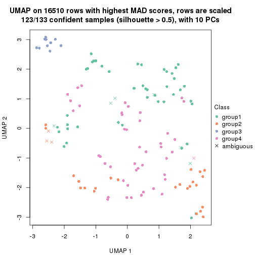
dimension_reduction(res, k = 5, method = "UMAP")
dimension_reduction(res, k = 6, method = "UMAP")
Following heatmap shows how subgroups are split when increasing k:
collect_classes(res)
If matrix rows can be associated to genes, consider to use GO_Enrichment(res,
...) to perform function enrichment for the signature genes.
The object with results only for a single top-value method and a single partition method can be extracted as:
res = res_list["MAD", "NMF"]
# you can also extract it by
# res = res_list["MAD:NMF"]
A summary of res and all the functions that can be applied to it:
res
#> A 'ConsensusPartition' object with k = 2, 3, 4, 5, 6.
#> On a matrix with 16510 rows and 133 columns.
#> Top rows (1000, 2000, 3000, 4000, 5000) are extracted by 'MAD' method.
#> Subgroups are detected by 'NMF' method.
#> Performed in total 1250 partitions by row resampling.
#> Best k for subgroups seems to be 2.
#>
#> Following methods can be applied to this 'ConsensusPartition' object:
#> [1] "cola_report" "collect_classes" "collect_plots"
#> [4] "collect_stats" "colnames" "compare_signatures"
#> [7] "consensus_heatmap" "dimension_reduction" "functional_enrichment"
#> [10] "get_anno_col" "get_anno" "get_classes"
#> [13] "get_consensus" "get_matrix" "get_membership"
#> [16] "get_param" "get_signatures" "get_stats"
#> [19] "is_best_k" "is_stable_k" "membership_heatmap"
#> [22] "ncol" "nrow" "plot_ecdf"
#> [25] "rownames" "select_partition_number" "show"
#> [28] "suggest_best_k" "test_to_known_factors"
collect_plots() function collects all the plots made from res for all k (number of partitions)
into one single page to provide an easy and fast comparison between different k.
collect_plots(res)
The plots are:
k and the heatmap of
predicted classes for each k.k.k.k.All the plots in panels can be made by individual functions and they are plotted later in this section.
select_partition_number() produces several plots showing different
statistics for choosing “optimized” k. There are following statistics:
k;k, the area increased is defined as \(A_k - A_{k-1}\).The detailed explanations of these statistics can be found in the cola vignette.
Generally speaking, lower PAC score, higher mean silhouette score or higher
concordance corresponds to better partition. Rand index and Jaccard index
measure how similar the current partition is compared to partition with k-1.
If they are too similar, we won't accept k is better than k-1.
select_partition_number(res)
The numeric values for all these statistics can be obtained by get_stats().
get_stats(res)
#> k 1-PAC mean_silhouette concordance area_increased Rand Jaccard
#> 2 2 0.937 0.933 0.973 0.5032 0.496 0.496
#> 3 3 0.448 0.585 0.764 0.2888 0.824 0.663
#> 4 4 0.558 0.448 0.696 0.1261 0.743 0.420
#> 5 5 0.660 0.719 0.833 0.0766 0.770 0.337
#> 6 6 0.670 0.524 0.692 0.0381 0.865 0.481
suggest_best_k() suggests the best \(k\) based on these statistics. The rules are as follows:
NA.suggest_best_k(res)
#> [1] 2
Following shows the table of the partitions (You need to click the show/hide
code output link to see it). The membership matrix (columns with name p*)
is inferred by
clue::cl_consensus()
function with the SE method. Basically the value in the membership matrix
represents the probability to belong to a certain group. The finall class
label for an item is determined with the group with highest probability it
belongs to.
In get_classes() function, the entropy is calculated from the membership
matrix and the silhouette score is calculated from the consensus matrix.
cbind(get_classes(res, k = 2), get_membership(res, k = 2))
#> class entropy silhouette p1 p2
#> ERR946976 1 0.0000 0.957 1.000 0.000
#> ERR947001 1 0.0000 0.957 1.000 0.000
#> ERR946975 2 0.0000 0.986 0.000 1.000
#> ERR947000 2 0.0000 0.986 0.000 1.000
#> ERR946972 1 0.2948 0.920 0.948 0.052
#> ERR946997 1 0.2423 0.929 0.960 0.040
#> ERR946986 1 0.4022 0.896 0.920 0.080
#> ERR947011 1 0.2948 0.921 0.948 0.052
#> ERR946977 2 0.6623 0.779 0.172 0.828
#> ERR947002 2 0.7376 0.722 0.208 0.792
#> ERR946974 2 0.0376 0.983 0.004 0.996
#> ERR946999 2 0.0672 0.979 0.008 0.992
#> ERR946971 1 0.0000 0.957 1.000 0.000
#> ERR946996 1 0.0000 0.957 1.000 0.000
#> ERR946992 2 0.0000 0.986 0.000 1.000
#> ERR947017 2 0.0000 0.986 0.000 1.000
#> ERR946984 2 0.0000 0.986 0.000 1.000
#> ERR947009 2 0.0000 0.986 0.000 1.000
#> ERR946987 2 0.0000 0.986 0.000 1.000
#> ERR947012 2 0.0000 0.986 0.000 1.000
#> ERR946991 2 0.0000 0.986 0.000 1.000
#> ERR947016 2 0.0000 0.986 0.000 1.000
#> ERR946983 2 0.0000 0.986 0.000 1.000
#> ERR947008 2 0.0000 0.986 0.000 1.000
#> ERR946970 1 0.0376 0.955 0.996 0.004
#> ERR946995 1 0.0376 0.955 0.996 0.004
#> ERR946969 1 0.2236 0.933 0.964 0.036
#> ERR946994 1 0.2043 0.936 0.968 0.032
#> ERR946982 2 0.0000 0.986 0.000 1.000
#> ERR947007 2 0.0000 0.986 0.000 1.000
#> ERR946988 2 0.0000 0.986 0.000 1.000
#> ERR947013 2 0.0000 0.986 0.000 1.000
#> ERR946985 2 0.0000 0.986 0.000 1.000
#> ERR947010 2 0.0000 0.986 0.000 1.000
#> ERR946989 1 0.9993 0.101 0.516 0.484
#> ERR947014 1 0.9993 0.101 0.516 0.484
#> ERR946968 1 0.0000 0.957 1.000 0.000
#> ERR946993 1 0.0000 0.957 1.000 0.000
#> ERR946990 1 0.0000 0.957 1.000 0.000
#> ERR947015 1 0.0000 0.957 1.000 0.000
#> ERR946980 2 0.0376 0.983 0.004 0.996
#> ERR947005 2 0.0376 0.983 0.004 0.996
#> ERR946978 1 0.0000 0.957 1.000 0.000
#> ERR947003 1 0.0000 0.957 1.000 0.000
#> ERR946979 2 0.0000 0.986 0.000 1.000
#> ERR947004 2 0.0000 0.986 0.000 1.000
#> ERR946957 1 0.0000 0.957 1.000 0.000
#> ERR946962 1 0.0000 0.957 1.000 0.000
#> ERR946958 1 0.0000 0.957 1.000 0.000
#> ERR946963 1 0.0000 0.957 1.000 0.000
#> ERR946959 1 0.0000 0.957 1.000 0.000
#> ERR946964 1 0.0000 0.957 1.000 0.000
#> ERR946967 1 0.0000 0.957 1.000 0.000
#> ERR862690 1 0.0000 0.957 1.000 0.000
#> ERR914278 2 0.0000 0.986 0.000 1.000
#> ERR914314 2 0.0000 0.986 0.000 1.000
#> ERR914279 1 0.0000 0.957 1.000 0.000
#> ERR914315 1 0.0000 0.957 1.000 0.000
#> ERR914280 2 0.0000 0.986 0.000 1.000
#> ERR914316 2 0.0000 0.986 0.000 1.000
#> ERR914281 2 0.0000 0.986 0.000 1.000
#> ERR914317 2 0.0000 0.986 0.000 1.000
#> ERR914282 2 0.0000 0.986 0.000 1.000
#> ERR914318 2 0.0000 0.986 0.000 1.000
#> ERR914283 1 0.0000 0.957 1.000 0.000
#> ERR914319 1 0.0000 0.957 1.000 0.000
#> ERR914284 1 0.0000 0.957 1.000 0.000
#> ERR914320 1 0.0000 0.957 1.000 0.000
#> ERR914285 2 0.0000 0.986 0.000 1.000
#> ERR914321 2 0.0000 0.986 0.000 1.000
#> ERR914286 2 0.0000 0.986 0.000 1.000
#> ERR914322 2 0.0000 0.986 0.000 1.000
#> ERR914287 1 0.0000 0.957 1.000 0.000
#> ERR914323 1 0.0000 0.957 1.000 0.000
#> ERR914288 2 0.0672 0.979 0.008 0.992
#> ERR914324 2 0.3584 0.915 0.068 0.932
#> ERR914289 1 0.5737 0.834 0.864 0.136
#> ERR914290 1 0.0000 0.957 1.000 0.000
#> ERR914326 1 0.0000 0.957 1.000 0.000
#> ERR914291 2 0.0000 0.986 0.000 1.000
#> ERR914327 2 0.0000 0.986 0.000 1.000
#> ERR914292 1 0.0672 0.952 0.992 0.008
#> ERR914328 1 0.0672 0.952 0.992 0.008
#> ERR914293 1 0.0000 0.957 1.000 0.000
#> ERR914329 1 0.0000 0.957 1.000 0.000
#> ERR914294 2 0.0000 0.986 0.000 1.000
#> ERR914330 2 0.0000 0.986 0.000 1.000
#> ERR914295 1 0.0000 0.957 1.000 0.000
#> ERR914331 1 0.0000 0.957 1.000 0.000
#> ERR914296 1 0.0000 0.957 1.000 0.000
#> ERR914332 1 0.0000 0.957 1.000 0.000
#> ERR914297 1 0.9963 0.162 0.536 0.464
#> ERR914333 1 0.9866 0.264 0.568 0.432
#> ERR914298 1 0.0000 0.957 1.000 0.000
#> ERR914334 1 0.0000 0.957 1.000 0.000
#> ERR914299 2 0.0000 0.986 0.000 1.000
#> ERR914335 2 0.0000 0.986 0.000 1.000
#> ERR914300 1 0.0000 0.957 1.000 0.000
#> ERR914336 1 0.0000 0.957 1.000 0.000
#> ERR914301 2 0.0000 0.986 0.000 1.000
#> ERR914337 2 0.0000 0.986 0.000 1.000
#> ERR914302 2 0.0000 0.986 0.000 1.000
#> ERR914338 2 0.0000 0.986 0.000 1.000
#> ERR914303 2 0.0000 0.986 0.000 1.000
#> ERR914339 2 0.0000 0.986 0.000 1.000
#> ERR914304 2 0.0000 0.986 0.000 1.000
#> ERR914340 2 0.0000 0.986 0.000 1.000
#> ERR914305 2 0.0000 0.986 0.000 1.000
#> ERR914341 2 0.0000 0.986 0.000 1.000
#> ERR914306 2 0.0000 0.986 0.000 1.000
#> ERR914342 2 0.0000 0.986 0.000 1.000
#> ERR914307 1 0.6148 0.815 0.848 0.152
#> ERR914343 1 0.6148 0.815 0.848 0.152
#> ERR914308 1 0.0000 0.957 1.000 0.000
#> ERR914344 1 0.0000 0.957 1.000 0.000
#> ERR914309 1 0.0000 0.957 1.000 0.000
#> ERR914345 1 0.0000 0.957 1.000 0.000
#> ERR914310 1 0.0376 0.955 0.996 0.004
#> ERR914346 1 0.0000 0.957 1.000 0.000
#> ERR914311 2 0.0000 0.986 0.000 1.000
#> ERR914347 2 0.0000 0.986 0.000 1.000
#> ERR914312 2 0.0000 0.986 0.000 1.000
#> ERR914348 2 0.0000 0.986 0.000 1.000
#> ERR914313 2 0.0000 0.986 0.000 1.000
#> ERR914349 2 0.0000 0.986 0.000 1.000
#> ERR946960 1 0.0000 0.957 1.000 0.000
#> ERR946965 1 0.0000 0.957 1.000 0.000
#> ERR946966 2 0.9635 0.332 0.388 0.612
#> ERR946973 1 0.0000 0.957 1.000 0.000
#> ERR946998 1 0.0000 0.957 1.000 0.000
#> ERR946981 2 0.0000 0.986 0.000 1.000
#> ERR947006 2 0.0000 0.986 0.000 1.000
#> ERR914325 1 0.4939 0.865 0.892 0.108
cbind(get_classes(res, k = 3), get_membership(res, k = 3))
#> class entropy silhouette p1 p2 p3
#> ERR946976 3 0.6299 0.23283 0.476 0.000 0.524
#> ERR947001 3 0.6305 0.20801 0.484 0.000 0.516
#> ERR946975 2 0.9287 0.55598 0.304 0.508 0.188
#> ERR947000 2 0.9483 0.45895 0.364 0.448 0.188
#> ERR946972 3 0.6001 0.56357 0.052 0.176 0.772
#> ERR946997 3 0.6001 0.56357 0.052 0.176 0.772
#> ERR946986 3 0.7293 0.17691 0.476 0.028 0.496
#> ERR947011 1 0.7188 -0.19670 0.492 0.024 0.484
#> ERR946977 3 0.6244 0.15234 0.000 0.440 0.560
#> ERR947002 3 0.6204 0.21092 0.000 0.424 0.576
#> ERR946974 2 0.8689 0.53616 0.200 0.596 0.204
#> ERR946999 2 0.8841 0.51091 0.216 0.580 0.204
#> ERR946971 3 0.5058 0.54944 0.244 0.000 0.756
#> ERR946996 3 0.5098 0.54632 0.248 0.000 0.752
#> ERR946992 2 0.4605 0.76341 0.000 0.796 0.204
#> ERR947017 2 0.4605 0.76341 0.000 0.796 0.204
#> ERR946984 3 0.6045 0.37167 0.000 0.380 0.620
#> ERR947009 3 0.6008 0.38590 0.000 0.372 0.628
#> ERR946987 2 0.4605 0.76341 0.000 0.796 0.204
#> ERR947012 2 0.4605 0.76341 0.000 0.796 0.204
#> ERR946991 2 0.0892 0.74493 0.000 0.980 0.020
#> ERR947016 2 0.0892 0.74493 0.000 0.980 0.020
#> ERR946983 2 0.6380 0.66100 0.164 0.760 0.076
#> ERR947008 2 0.6490 0.65549 0.172 0.752 0.076
#> ERR946970 3 0.6255 0.38478 0.320 0.012 0.668
#> ERR946995 3 0.6180 0.37674 0.332 0.008 0.660
#> ERR946969 1 0.6500 -0.06906 0.532 0.004 0.464
#> ERR946994 1 0.6225 0.06562 0.568 0.000 0.432
#> ERR946982 2 0.4605 0.76341 0.000 0.796 0.204
#> ERR947007 2 0.4605 0.76341 0.000 0.796 0.204
#> ERR946988 2 0.3619 0.74289 0.000 0.864 0.136
#> ERR947013 2 0.3340 0.75256 0.000 0.880 0.120
#> ERR946985 2 0.5138 0.73321 0.000 0.748 0.252
#> ERR947010 2 0.5138 0.73321 0.000 0.748 0.252
#> ERR946989 3 0.7635 0.41677 0.212 0.112 0.676
#> ERR947014 3 0.7610 0.41398 0.216 0.108 0.676
#> ERR946968 3 0.6295 0.24317 0.472 0.000 0.528
#> ERR946993 3 0.6299 0.23312 0.476 0.000 0.524
#> ERR946990 1 0.6305 -0.12925 0.516 0.000 0.484
#> ERR947015 1 0.6291 -0.07793 0.532 0.000 0.468
#> ERR946980 2 0.1529 0.74989 0.000 0.960 0.040
#> ERR947005 2 0.2173 0.75415 0.008 0.944 0.048
#> ERR946978 1 0.2261 0.71013 0.932 0.000 0.068
#> ERR947003 1 0.2066 0.70804 0.940 0.000 0.060
#> ERR946979 2 0.0592 0.74987 0.000 0.988 0.012
#> ERR947004 2 0.0592 0.74987 0.000 0.988 0.012
#> ERR946957 3 0.5016 0.54999 0.240 0.000 0.760
#> ERR946962 3 0.5016 0.54999 0.240 0.000 0.760
#> ERR946958 1 0.5016 0.55287 0.760 0.000 0.240
#> ERR946963 1 0.4887 0.57298 0.772 0.000 0.228
#> ERR946959 1 0.0892 0.72443 0.980 0.000 0.020
#> ERR946964 1 0.0747 0.72620 0.984 0.000 0.016
#> ERR946967 3 0.5508 0.55399 0.028 0.188 0.784
#> ERR862690 3 0.5508 0.55399 0.028 0.188 0.784
#> ERR914278 2 0.4605 0.76341 0.000 0.796 0.204
#> ERR914314 2 0.4605 0.76341 0.000 0.796 0.204
#> ERR914279 1 0.3941 0.66140 0.844 0.000 0.156
#> ERR914315 1 0.3816 0.66880 0.852 0.000 0.148
#> ERR914280 2 0.4963 0.76481 0.008 0.792 0.200
#> ERR914316 2 0.5269 0.76478 0.016 0.784 0.200
#> ERR914281 2 0.4555 0.76411 0.000 0.800 0.200
#> ERR914317 2 0.4555 0.76411 0.000 0.800 0.200
#> ERR914282 2 0.6622 0.65402 0.164 0.748 0.088
#> ERR914318 2 0.6886 0.63820 0.184 0.728 0.088
#> ERR914283 1 0.2959 0.71577 0.900 0.000 0.100
#> ERR914319 1 0.2711 0.71992 0.912 0.000 0.088
#> ERR914284 1 0.4796 0.59602 0.780 0.000 0.220
#> ERR914320 1 0.4702 0.60161 0.788 0.000 0.212
#> ERR914285 2 0.8513 0.50750 0.116 0.568 0.316
#> ERR914321 2 0.8600 0.52488 0.136 0.580 0.284
#> ERR914286 2 0.5012 0.76407 0.008 0.788 0.204
#> ERR914322 2 0.5171 0.76434 0.012 0.784 0.204
#> ERR914287 1 0.0237 0.72935 0.996 0.000 0.004
#> ERR914323 1 0.0237 0.72935 0.996 0.000 0.004
#> ERR914288 1 0.6906 0.41537 0.724 0.084 0.192
#> ERR914324 1 0.5618 0.52550 0.796 0.048 0.156
#> ERR914289 1 0.7295 0.11892 0.492 0.028 0.480
#> ERR914290 1 0.0661 0.72506 0.988 0.004 0.008
#> ERR914326 1 0.0661 0.72506 0.988 0.004 0.008
#> ERR914291 2 0.7106 0.60684 0.224 0.700 0.076
#> ERR914327 2 0.7340 0.57818 0.248 0.676 0.076
#> ERR914292 1 0.4915 0.63339 0.804 0.012 0.184
#> ERR914328 1 0.3349 0.70052 0.888 0.004 0.108
#> ERR914293 1 0.0000 0.73039 1.000 0.000 0.000
#> ERR914329 1 0.0000 0.73039 1.000 0.000 0.000
#> ERR914294 2 0.4605 0.76341 0.000 0.796 0.204
#> ERR914330 2 0.4605 0.76341 0.000 0.796 0.204
#> ERR914295 1 0.4399 0.63187 0.812 0.000 0.188
#> ERR914331 1 0.4002 0.66120 0.840 0.000 0.160
#> ERR914296 1 0.4978 0.50899 0.780 0.004 0.216
#> ERR914332 1 0.4931 0.51251 0.784 0.004 0.212
#> ERR914297 1 0.4868 0.59948 0.844 0.056 0.100
#> ERR914333 1 0.4423 0.62087 0.864 0.048 0.088
#> ERR914298 1 0.0000 0.73039 1.000 0.000 0.000
#> ERR914334 1 0.0000 0.73039 1.000 0.000 0.000
#> ERR914299 2 0.6699 0.59919 0.256 0.700 0.044
#> ERR914335 2 0.6905 0.56739 0.280 0.676 0.044
#> ERR914300 1 0.0892 0.72833 0.980 0.000 0.020
#> ERR914336 1 0.0892 0.72833 0.980 0.000 0.020
#> ERR914301 2 0.7766 0.58986 0.148 0.676 0.176
#> ERR914337 2 0.7825 0.58666 0.156 0.672 0.172
#> ERR914302 2 0.4605 0.76341 0.000 0.796 0.204
#> ERR914338 2 0.4605 0.76341 0.000 0.796 0.204
#> ERR914303 2 0.7164 0.63289 0.140 0.720 0.140
#> ERR914339 2 0.7164 0.63289 0.140 0.720 0.140
#> ERR914304 2 0.6653 0.65706 0.136 0.752 0.112
#> ERR914340 2 0.6714 0.65438 0.140 0.748 0.112
#> ERR914305 2 0.7267 0.62369 0.180 0.708 0.112
#> ERR914341 2 0.7267 0.62369 0.180 0.708 0.112
#> ERR914306 2 0.3532 0.71347 0.008 0.884 0.108
#> ERR914342 2 0.3454 0.71548 0.008 0.888 0.104
#> ERR914307 1 0.3425 0.70601 0.884 0.004 0.112
#> ERR914343 1 0.3116 0.71077 0.892 0.000 0.108
#> ERR914308 1 0.0237 0.72935 0.996 0.000 0.004
#> ERR914344 1 0.0237 0.72935 0.996 0.000 0.004
#> ERR914309 1 0.1163 0.73064 0.972 0.000 0.028
#> ERR914345 1 0.1163 0.73064 0.972 0.000 0.028
#> ERR914310 1 0.3879 0.69023 0.848 0.000 0.152
#> ERR914346 1 0.3752 0.69381 0.856 0.000 0.144
#> ERR914311 2 0.3921 0.71916 0.036 0.884 0.080
#> ERR914347 2 0.4357 0.71397 0.052 0.868 0.080
#> ERR914312 2 0.5486 0.76595 0.024 0.780 0.196
#> ERR914348 2 0.5536 0.76502 0.024 0.776 0.200
#> ERR914313 2 0.4605 0.76341 0.000 0.796 0.204
#> ERR914349 2 0.4605 0.76341 0.000 0.796 0.204
#> ERR946960 1 0.6235 0.04049 0.564 0.000 0.436
#> ERR946965 1 0.6260 -0.00761 0.552 0.000 0.448
#> ERR946966 1 0.9359 0.09855 0.508 0.284 0.208
#> ERR946973 3 0.5254 0.53497 0.264 0.000 0.736
#> ERR946998 3 0.5254 0.53497 0.264 0.000 0.736
#> ERR946981 2 0.1643 0.74006 0.000 0.956 0.044
#> ERR947006 2 0.1643 0.74006 0.000 0.956 0.044
#> ERR914325 1 0.6905 0.25368 0.544 0.016 0.440
cbind(get_classes(res, k = 4), get_membership(res, k = 4))
#> class entropy silhouette p1 p2 p3 p4
#> ERR946976 3 0.6553 0.52874 0.100 0.316 0.584 0.000
#> ERR947001 3 0.6792 0.49970 0.140 0.272 0.588 0.000
#> ERR946975 1 0.5376 0.10913 0.588 0.396 0.000 0.016
#> ERR947000 1 0.5339 0.13974 0.600 0.384 0.000 0.016
#> ERR946972 3 0.4961 0.45866 0.000 0.448 0.552 0.000
#> ERR946997 3 0.4961 0.45866 0.000 0.448 0.552 0.000
#> ERR946986 3 0.7480 0.15427 0.248 0.000 0.504 0.248
#> ERR947011 3 0.7512 0.13766 0.268 0.000 0.496 0.236
#> ERR946977 2 0.7889 -0.24345 0.000 0.380 0.304 0.316
#> ERR947002 3 0.7917 0.14524 0.000 0.340 0.348 0.312
#> ERR946974 4 0.5217 0.45684 0.012 0.000 0.380 0.608
#> ERR946999 4 0.5326 0.45175 0.016 0.000 0.380 0.604
#> ERR946971 3 0.4804 0.50453 0.000 0.384 0.616 0.000
#> ERR946996 3 0.4804 0.50453 0.000 0.384 0.616 0.000
#> ERR946992 4 0.1302 0.68063 0.000 0.044 0.000 0.956
#> ERR947017 4 0.1211 0.68529 0.000 0.040 0.000 0.960
#> ERR946984 2 0.4989 -0.40785 0.000 0.528 0.472 0.000
#> ERR947009 2 0.4989 -0.40785 0.000 0.528 0.472 0.000
#> ERR946987 4 0.0188 0.71089 0.000 0.004 0.000 0.996
#> ERR947012 4 0.0188 0.71089 0.000 0.004 0.000 0.996
#> ERR946991 2 0.5112 0.61977 0.000 0.560 0.004 0.436
#> ERR947016 2 0.5105 0.62526 0.000 0.564 0.004 0.432
#> ERR946983 2 0.7330 0.55725 0.304 0.512 0.000 0.184
#> ERR947008 2 0.7258 0.51807 0.328 0.508 0.000 0.164
#> ERR946970 4 0.6306 0.36593 0.064 0.000 0.392 0.544
#> ERR946995 4 0.6315 0.36033 0.064 0.000 0.396 0.540
#> ERR946969 3 0.6818 -0.02952 0.416 0.028 0.512 0.044
#> ERR946994 3 0.6706 -0.05759 0.436 0.016 0.496 0.052
#> ERR946982 4 0.0469 0.70894 0.000 0.012 0.000 0.988
#> ERR947007 4 0.0469 0.70894 0.000 0.012 0.000 0.988
#> ERR946988 4 0.5279 0.33211 0.000 0.192 0.072 0.736
#> ERR947013 4 0.4281 0.42614 0.000 0.180 0.028 0.792
#> ERR946985 4 0.1940 0.68413 0.000 0.000 0.076 0.924
#> ERR947010 4 0.2281 0.67457 0.000 0.000 0.096 0.904
#> ERR946989 4 0.5125 0.45190 0.008 0.000 0.388 0.604
#> ERR947014 4 0.5125 0.45190 0.008 0.000 0.388 0.604
#> ERR946968 3 0.4889 0.15744 0.360 0.004 0.636 0.000
#> ERR946993 3 0.4920 0.14532 0.368 0.004 0.628 0.000
#> ERR946990 3 0.5823 0.14998 0.348 0.000 0.608 0.044
#> ERR947015 3 0.5869 0.13156 0.360 0.000 0.596 0.044
#> ERR946980 4 0.5323 -0.28798 0.008 0.396 0.004 0.592
#> ERR947005 4 0.6196 -0.13255 0.040 0.328 0.016 0.616
#> ERR946978 1 0.0336 0.66250 0.992 0.008 0.000 0.000
#> ERR947003 1 0.0336 0.66250 0.992 0.008 0.000 0.000
#> ERR946979 2 0.5088 0.63463 0.000 0.572 0.004 0.424
#> ERR947004 2 0.5088 0.63463 0.000 0.572 0.004 0.424
#> ERR946957 3 0.4817 0.50366 0.000 0.388 0.612 0.000
#> ERR946962 3 0.4817 0.50366 0.000 0.388 0.612 0.000
#> ERR946958 3 0.5165 -0.10101 0.484 0.004 0.512 0.000
#> ERR946963 3 0.5165 -0.10101 0.484 0.004 0.512 0.000
#> ERR946959 1 0.0336 0.66250 0.992 0.008 0.000 0.000
#> ERR946964 1 0.0336 0.66250 0.992 0.008 0.000 0.000
#> ERR946967 3 0.4948 0.46658 0.000 0.440 0.560 0.000
#> ERR862690 3 0.4948 0.46658 0.000 0.440 0.560 0.000
#> ERR914278 4 0.0000 0.71118 0.000 0.000 0.000 1.000
#> ERR914314 4 0.0000 0.71118 0.000 0.000 0.000 1.000
#> ERR914279 1 0.4972 0.17135 0.544 0.000 0.456 0.000
#> ERR914315 1 0.4972 0.17135 0.544 0.000 0.456 0.000
#> ERR914280 4 0.1302 0.68140 0.000 0.044 0.000 0.956
#> ERR914316 4 0.2797 0.60970 0.032 0.068 0.000 0.900
#> ERR914281 4 0.1022 0.69326 0.000 0.032 0.000 0.968
#> ERR914317 4 0.1022 0.69326 0.000 0.032 0.000 0.968
#> ERR914282 2 0.7079 0.59124 0.276 0.556 0.000 0.168
#> ERR914318 2 0.7045 0.51113 0.328 0.532 0.000 0.140
#> ERR914283 1 0.1474 0.63506 0.948 0.000 0.052 0.000
#> ERR914319 1 0.1557 0.63208 0.944 0.000 0.056 0.000
#> ERR914284 1 0.6845 0.04689 0.452 0.000 0.448 0.100
#> ERR914320 1 0.6709 0.05729 0.460 0.000 0.452 0.088
#> ERR914285 4 0.5112 0.45622 0.008 0.000 0.384 0.608
#> ERR914321 4 0.5125 0.45190 0.008 0.000 0.388 0.604
#> ERR914286 4 0.0592 0.70639 0.000 0.016 0.000 0.984
#> ERR914322 4 0.0779 0.70784 0.000 0.016 0.004 0.980
#> ERR914287 1 0.0000 0.66173 1.000 0.000 0.000 0.000
#> ERR914323 1 0.0000 0.66173 1.000 0.000 0.000 0.000
#> ERR914288 1 0.4050 0.59047 0.820 0.144 0.036 0.000
#> ERR914324 1 0.2706 0.63407 0.900 0.080 0.020 0.000
#> ERR914289 4 0.6464 0.35484 0.076 0.000 0.384 0.540
#> ERR914290 1 0.0336 0.66280 0.992 0.008 0.000 0.000
#> ERR914326 1 0.0336 0.66280 0.992 0.008 0.000 0.000
#> ERR914291 1 0.5856 -0.12543 0.504 0.464 0.000 0.032
#> ERR914327 1 0.5493 -0.05452 0.528 0.456 0.000 0.016
#> ERR914292 1 0.7266 0.27452 0.528 0.080 0.364 0.028
#> ERR914328 1 0.6637 0.32165 0.576 0.060 0.348 0.016
#> ERR914293 1 0.0336 0.65940 0.992 0.000 0.008 0.000
#> ERR914329 1 0.0336 0.65940 0.992 0.000 0.008 0.000
#> ERR914294 4 0.0188 0.71081 0.000 0.000 0.004 0.996
#> ERR914330 4 0.0188 0.71081 0.000 0.000 0.004 0.996
#> ERR914295 1 0.6102 0.17880 0.532 0.000 0.420 0.048
#> ERR914331 1 0.5873 0.20366 0.548 0.000 0.416 0.036
#> ERR914296 1 0.1022 0.65462 0.968 0.032 0.000 0.000
#> ERR914332 1 0.1022 0.65462 0.968 0.032 0.000 0.000
#> ERR914297 1 0.4290 0.56179 0.800 0.164 0.036 0.000
#> ERR914333 1 0.3806 0.57567 0.824 0.156 0.020 0.000
#> ERR914298 1 0.0188 0.66240 0.996 0.004 0.000 0.000
#> ERR914334 1 0.0188 0.66240 0.996 0.004 0.000 0.000
#> ERR914299 1 0.5564 -0.01029 0.544 0.436 0.000 0.020
#> ERR914335 1 0.5558 0.00174 0.548 0.432 0.000 0.020
#> ERR914300 1 0.3172 0.55987 0.840 0.000 0.160 0.000
#> ERR914336 1 0.3074 0.56664 0.848 0.000 0.152 0.000
#> ERR914301 2 0.5793 0.69054 0.048 0.628 0.000 0.324
#> ERR914337 2 0.6158 0.69456 0.080 0.628 0.000 0.292
#> ERR914302 4 0.0469 0.70894 0.000 0.012 0.000 0.988
#> ERR914338 4 0.0469 0.70894 0.000 0.012 0.000 0.988
#> ERR914303 2 0.6474 0.68853 0.120 0.624 0.000 0.256
#> ERR914339 2 0.6521 0.68765 0.124 0.620 0.000 0.256
#> ERR914304 2 0.5903 0.69023 0.052 0.616 0.000 0.332
#> ERR914340 2 0.6295 0.69411 0.088 0.616 0.000 0.296
#> ERR914305 2 0.6728 0.58718 0.268 0.596 0.000 0.136
#> ERR914341 2 0.6752 0.57280 0.280 0.588 0.000 0.132
#> ERR914306 2 0.6944 0.57690 0.000 0.484 0.112 0.404
#> ERR914342 2 0.6944 0.57690 0.000 0.484 0.112 0.404
#> ERR914307 1 0.7286 0.11212 0.480 0.000 0.364 0.156
#> ERR914343 1 0.7261 0.11274 0.480 0.000 0.368 0.152
#> ERR914308 1 0.0336 0.66250 0.992 0.008 0.000 0.000
#> ERR914344 1 0.0336 0.66250 0.992 0.008 0.000 0.000
#> ERR914309 1 0.2408 0.60559 0.896 0.000 0.104 0.000
#> ERR914345 1 0.2408 0.60559 0.896 0.000 0.104 0.000
#> ERR914310 1 0.6766 0.17377 0.520 0.000 0.380 0.100
#> ERR914346 1 0.6708 0.18635 0.528 0.000 0.376 0.096
#> ERR914311 2 0.4964 0.66873 0.004 0.616 0.000 0.380
#> ERR914347 2 0.4964 0.66873 0.004 0.616 0.000 0.380
#> ERR914312 2 0.7343 0.58660 0.156 0.428 0.000 0.416
#> ERR914348 2 0.7451 0.58476 0.172 0.420 0.000 0.408
#> ERR914313 4 0.0592 0.70672 0.000 0.016 0.000 0.984
#> ERR914349 4 0.0592 0.70672 0.000 0.016 0.000 0.984
#> ERR946960 3 0.7900 0.35085 0.332 0.300 0.368 0.000
#> ERR946965 3 0.7904 0.36248 0.324 0.308 0.368 0.000
#> ERR946966 1 0.4948 0.04339 0.560 0.440 0.000 0.000
#> ERR946973 3 0.4817 0.50366 0.000 0.388 0.612 0.000
#> ERR946998 3 0.4804 0.50453 0.000 0.384 0.616 0.000
#> ERR946981 2 0.4866 0.65343 0.000 0.596 0.000 0.404
#> ERR947006 2 0.4866 0.65343 0.000 0.596 0.000 0.404
#> ERR914325 4 0.7186 0.22955 0.140 0.000 0.384 0.476
cbind(get_classes(res, k = 5), get_membership(res, k = 5))
#> class entropy silhouette p1 p2 p3 p4 p5
#> ERR946976 3 0.4229 0.65375 0.020 0.000 0.704 0.000 0.276
#> ERR947001 3 0.4558 0.56993 0.024 0.000 0.652 0.000 0.324
#> ERR946975 1 0.3441 0.66017 0.824 0.024 0.000 0.148 0.004
#> ERR947000 1 0.3264 0.67216 0.840 0.024 0.000 0.132 0.004
#> ERR946972 3 0.0880 0.85276 0.000 0.032 0.968 0.000 0.000
#> ERR946997 3 0.0880 0.85276 0.000 0.032 0.968 0.000 0.000
#> ERR946986 5 0.1990 0.75488 0.008 0.000 0.004 0.068 0.920
#> ERR947011 5 0.1924 0.75646 0.008 0.000 0.004 0.064 0.924
#> ERR946977 5 0.7431 0.25765 0.004 0.280 0.184 0.052 0.480
#> ERR947002 5 0.6646 0.47372 0.004 0.232 0.120 0.048 0.596
#> ERR946974 4 0.4015 0.51185 0.000 0.000 0.000 0.652 0.348
#> ERR946999 4 0.4138 0.42149 0.000 0.000 0.000 0.616 0.384
#> ERR946971 3 0.0324 0.86304 0.004 0.000 0.992 0.000 0.004
#> ERR946996 3 0.0324 0.86304 0.004 0.000 0.992 0.000 0.004
#> ERR946992 4 0.2395 0.84782 0.072 0.016 0.000 0.904 0.008
#> ERR947017 4 0.2395 0.84782 0.072 0.016 0.000 0.904 0.008
#> ERR946984 3 0.3724 0.71842 0.000 0.204 0.776 0.000 0.020
#> ERR947009 3 0.3779 0.72272 0.000 0.200 0.776 0.000 0.024
#> ERR946987 4 0.2237 0.87835 0.004 0.008 0.000 0.904 0.084
#> ERR947012 4 0.2237 0.87835 0.004 0.008 0.000 0.904 0.084
#> ERR946991 2 0.4065 0.70112 0.016 0.752 0.008 0.224 0.000
#> ERR947016 2 0.4273 0.67766 0.020 0.732 0.008 0.240 0.000
#> ERR946983 2 0.1251 0.85103 0.036 0.956 0.000 0.000 0.008
#> ERR947008 2 0.1331 0.85025 0.040 0.952 0.000 0.000 0.008
#> ERR946970 5 0.2805 0.73080 0.012 0.000 0.008 0.108 0.872
#> ERR946995 5 0.2952 0.73742 0.020 0.000 0.008 0.104 0.868
#> ERR946969 5 0.3176 0.74931 0.064 0.080 0.000 0.000 0.856
#> ERR946994 5 0.2719 0.76064 0.068 0.048 0.000 0.000 0.884
#> ERR946982 4 0.1095 0.88301 0.012 0.012 0.000 0.968 0.008
#> ERR947007 4 0.1095 0.88301 0.012 0.012 0.000 0.968 0.008
#> ERR946988 2 0.5075 0.71936 0.004 0.752 0.036 0.136 0.072
#> ERR947013 2 0.5233 0.69917 0.004 0.732 0.024 0.148 0.092
#> ERR946985 4 0.2170 0.87689 0.004 0.004 0.000 0.904 0.088
#> ERR947010 4 0.2170 0.87689 0.004 0.004 0.000 0.904 0.088
#> ERR946989 5 0.3366 0.62394 0.000 0.000 0.000 0.232 0.768
#> ERR947014 5 0.3305 0.63278 0.000 0.000 0.000 0.224 0.776
#> ERR946968 5 0.3033 0.74570 0.052 0.000 0.084 0.000 0.864
#> ERR946993 5 0.3102 0.74497 0.056 0.000 0.084 0.000 0.860
#> ERR946990 5 0.5625 0.53553 0.088 0.000 0.232 0.020 0.660
#> ERR947015 5 0.4858 0.67457 0.092 0.000 0.144 0.016 0.748
#> ERR946980 2 0.3174 0.79302 0.020 0.844 0.000 0.004 0.132
#> ERR947005 2 0.4148 0.69320 0.028 0.752 0.000 0.004 0.216
#> ERR946978 1 0.2700 0.77003 0.884 0.024 0.004 0.000 0.088
#> ERR947003 1 0.2540 0.77003 0.888 0.024 0.000 0.000 0.088
#> ERR946979 2 0.2570 0.80739 0.004 0.880 0.008 0.108 0.000
#> ERR947004 2 0.2463 0.81222 0.004 0.888 0.008 0.100 0.000
#> ERR946957 3 0.0451 0.86270 0.004 0.000 0.988 0.000 0.008
#> ERR946962 3 0.0324 0.86295 0.004 0.000 0.992 0.000 0.004
#> ERR946958 5 0.3438 0.72875 0.172 0.000 0.020 0.000 0.808
#> ERR946963 5 0.3381 0.72802 0.176 0.000 0.016 0.000 0.808
#> ERR946959 1 0.2570 0.76927 0.888 0.028 0.000 0.000 0.084
#> ERR946964 1 0.2482 0.76978 0.892 0.024 0.000 0.000 0.084
#> ERR946967 3 0.0290 0.86134 0.000 0.008 0.992 0.000 0.000
#> ERR862690 3 0.0290 0.86134 0.000 0.008 0.992 0.000 0.000
#> ERR914278 4 0.2077 0.88011 0.000 0.008 0.000 0.908 0.084
#> ERR914314 4 0.1952 0.88056 0.000 0.004 0.000 0.912 0.084
#> ERR914279 5 0.3882 0.68295 0.224 0.000 0.020 0.000 0.756
#> ERR914315 5 0.3970 0.67397 0.236 0.000 0.020 0.000 0.744
#> ERR914280 4 0.1798 0.85703 0.064 0.004 0.000 0.928 0.004
#> ERR914316 4 0.1952 0.84879 0.084 0.000 0.000 0.912 0.004
#> ERR914281 4 0.2270 0.88229 0.004 0.016 0.000 0.908 0.072
#> ERR914317 4 0.2206 0.88350 0.004 0.016 0.000 0.912 0.068
#> ERR914282 2 0.1082 0.85086 0.028 0.964 0.000 0.000 0.008
#> ERR914318 2 0.1331 0.84931 0.040 0.952 0.000 0.000 0.008
#> ERR914283 1 0.2694 0.75567 0.884 0.000 0.040 0.000 0.076
#> ERR914319 1 0.2616 0.75784 0.888 0.000 0.036 0.000 0.076
#> ERR914284 5 0.1983 0.76563 0.060 0.000 0.008 0.008 0.924
#> ERR914320 5 0.2050 0.76527 0.064 0.000 0.008 0.008 0.920
#> ERR914285 5 0.3395 0.64467 0.000 0.000 0.000 0.236 0.764
#> ERR914321 5 0.3305 0.66194 0.000 0.000 0.000 0.224 0.776
#> ERR914286 4 0.2172 0.88153 0.000 0.016 0.000 0.908 0.076
#> ERR914322 4 0.1981 0.88486 0.000 0.016 0.000 0.920 0.064
#> ERR914287 1 0.5220 0.14733 0.516 0.044 0.000 0.000 0.440
#> ERR914323 1 0.5167 0.26968 0.552 0.044 0.000 0.000 0.404
#> ERR914288 2 0.6247 0.13523 0.152 0.484 0.000 0.000 0.364
#> ERR914324 2 0.6338 0.00988 0.160 0.448 0.000 0.000 0.392
#> ERR914289 5 0.1908 0.74072 0.000 0.000 0.000 0.092 0.908
#> ERR914290 1 0.2707 0.76569 0.876 0.024 0.000 0.000 0.100
#> ERR914326 1 0.2669 0.76441 0.876 0.020 0.000 0.000 0.104
#> ERR914291 2 0.1331 0.84908 0.040 0.952 0.000 0.000 0.008
#> ERR914327 2 0.1331 0.84908 0.040 0.952 0.000 0.000 0.008
#> ERR914292 5 0.4149 0.72257 0.080 0.124 0.000 0.004 0.792
#> ERR914328 5 0.3898 0.73494 0.076 0.108 0.000 0.004 0.812
#> ERR914293 1 0.3961 0.63601 0.736 0.016 0.000 0.000 0.248
#> ERR914329 1 0.3550 0.70811 0.796 0.020 0.000 0.000 0.184
#> ERR914294 4 0.0671 0.88787 0.000 0.004 0.000 0.980 0.016
#> ERR914330 4 0.0671 0.88787 0.000 0.004 0.000 0.980 0.016
#> ERR914295 5 0.3430 0.68282 0.220 0.000 0.000 0.004 0.776
#> ERR914331 5 0.3461 0.67831 0.224 0.000 0.000 0.004 0.772
#> ERR914296 1 0.3090 0.76383 0.860 0.052 0.000 0.000 0.088
#> ERR914332 1 0.3033 0.76407 0.864 0.052 0.000 0.000 0.084
#> ERR914297 1 0.3700 0.64124 0.828 0.004 0.036 0.124 0.008
#> ERR914333 1 0.3565 0.65491 0.840 0.008 0.028 0.116 0.008
#> ERR914298 1 0.1314 0.74776 0.960 0.000 0.012 0.012 0.016
#> ERR914334 1 0.1413 0.74946 0.956 0.000 0.012 0.012 0.020
#> ERR914299 2 0.2017 0.83194 0.080 0.912 0.000 0.000 0.008
#> ERR914335 2 0.2361 0.81690 0.096 0.892 0.000 0.000 0.012
#> ERR914300 1 0.4299 0.54186 0.672 0.008 0.000 0.004 0.316
#> ERR914336 1 0.4134 0.59971 0.704 0.008 0.000 0.004 0.284
#> ERR914301 1 0.7653 0.15526 0.432 0.164 0.084 0.320 0.000
#> ERR914337 1 0.7290 0.26115 0.496 0.128 0.080 0.296 0.000
#> ERR914302 4 0.1864 0.85460 0.068 0.004 0.000 0.924 0.004
#> ERR914338 4 0.1864 0.85460 0.068 0.004 0.000 0.924 0.004
#> ERR914303 2 0.0000 0.84779 0.000 1.000 0.000 0.000 0.000
#> ERR914339 2 0.0000 0.84779 0.000 1.000 0.000 0.000 0.000
#> ERR914304 2 0.0833 0.84609 0.004 0.976 0.004 0.016 0.000
#> ERR914340 2 0.0727 0.84717 0.004 0.980 0.004 0.012 0.000
#> ERR914305 2 0.0865 0.85113 0.024 0.972 0.000 0.004 0.000
#> ERR914341 2 0.0955 0.85133 0.028 0.968 0.000 0.004 0.000
#> ERR914306 4 0.5467 0.66541 0.048 0.164 0.076 0.712 0.000
#> ERR914342 4 0.5316 0.67598 0.048 0.160 0.068 0.724 0.000
#> ERR914307 5 0.3193 0.75040 0.132 0.000 0.000 0.028 0.840
#> ERR914343 5 0.3151 0.74778 0.144 0.000 0.000 0.020 0.836
#> ERR914308 5 0.5816 -0.00523 0.440 0.092 0.000 0.000 0.468
#> ERR914344 1 0.5693 0.03096 0.468 0.080 0.000 0.000 0.452
#> ERR914309 5 0.4086 0.59348 0.284 0.012 0.000 0.000 0.704
#> ERR914345 5 0.4109 0.58722 0.288 0.012 0.000 0.000 0.700
#> ERR914310 5 0.2969 0.74965 0.128 0.000 0.000 0.020 0.852
#> ERR914346 5 0.3011 0.74423 0.140 0.000 0.000 0.016 0.844
#> ERR914311 2 0.0451 0.84695 0.004 0.988 0.000 0.008 0.000
#> ERR914347 2 0.0451 0.84695 0.004 0.988 0.000 0.008 0.000
#> ERR914312 2 0.5351 0.68741 0.136 0.692 0.000 0.164 0.008
#> ERR914348 2 0.6129 0.55324 0.156 0.588 0.000 0.248 0.008
#> ERR914313 4 0.0912 0.88751 0.000 0.012 0.000 0.972 0.016
#> ERR914349 4 0.0898 0.88819 0.000 0.008 0.000 0.972 0.020
#> ERR946960 3 0.5139 0.54092 0.060 0.000 0.624 0.000 0.316
#> ERR946965 3 0.5029 0.58598 0.060 0.000 0.648 0.000 0.292
#> ERR946966 2 0.2130 0.83105 0.080 0.908 0.000 0.000 0.012
#> ERR946973 3 0.0324 0.86304 0.004 0.000 0.992 0.000 0.004
#> ERR946998 3 0.0324 0.86304 0.004 0.000 0.992 0.000 0.004
#> ERR946981 2 0.2193 0.82636 0.008 0.900 0.000 0.092 0.000
#> ERR947006 2 0.2136 0.82797 0.008 0.904 0.000 0.088 0.000
#> ERR914325 5 0.1965 0.73989 0.000 0.000 0.000 0.096 0.904
cbind(get_classes(res, k = 6), get_membership(res, k = 6))
#> class entropy silhouette p1 p2 p3 p4 p5 p6
#> ERR946976 5 0.5041 0.5908 0.000 0.000 0.248 0.000 0.624 0.128
#> ERR947001 5 0.5068 0.5949 0.000 0.000 0.240 0.000 0.624 0.136
#> ERR946975 4 0.5954 0.3948 0.224 0.000 0.000 0.596 0.120 0.060
#> ERR947000 4 0.6076 0.3358 0.264 0.000 0.000 0.564 0.112 0.060
#> ERR946972 3 0.0891 0.9529 0.000 0.008 0.968 0.000 0.024 0.000
#> ERR946997 3 0.0891 0.9529 0.000 0.008 0.968 0.000 0.024 0.000
#> ERR946986 5 0.5006 0.3630 0.000 0.028 0.024 0.000 0.488 0.460
#> ERR947011 6 0.4410 -0.3528 0.000 0.012 0.008 0.000 0.472 0.508
#> ERR946977 2 0.7077 -0.0586 0.000 0.424 0.116 0.000 0.300 0.160
#> ERR947002 2 0.7165 -0.3282 0.000 0.344 0.084 0.000 0.332 0.240
#> ERR946974 6 0.4432 -0.3854 0.000 0.000 0.000 0.364 0.036 0.600
#> ERR946999 6 0.4049 -0.2964 0.000 0.000 0.000 0.332 0.020 0.648
#> ERR946971 3 0.1141 0.9541 0.000 0.000 0.948 0.000 0.052 0.000
#> ERR946996 3 0.1075 0.9559 0.000 0.000 0.952 0.000 0.048 0.000
#> ERR946992 4 0.3176 0.5743 0.000 0.000 0.000 0.812 0.156 0.032
#> ERR947017 4 0.3176 0.5740 0.000 0.000 0.000 0.812 0.156 0.032
#> ERR946984 2 0.5583 0.3658 0.000 0.548 0.244 0.000 0.208 0.000
#> ERR947009 2 0.5721 0.3208 0.000 0.520 0.244 0.000 0.236 0.000
#> ERR946987 4 0.5108 0.5897 0.000 0.004 0.000 0.496 0.068 0.432
#> ERR947012 4 0.5152 0.5886 0.000 0.004 0.000 0.492 0.072 0.432
#> ERR946991 2 0.3885 0.6761 0.000 0.756 0.000 0.180 0.064 0.000
#> ERR947016 2 0.3885 0.6761 0.000 0.756 0.000 0.180 0.064 0.000
#> ERR946983 2 0.0777 0.8390 0.024 0.972 0.000 0.000 0.004 0.000
#> ERR947008 2 0.0777 0.8390 0.024 0.972 0.000 0.000 0.004 0.000
#> ERR946970 5 0.4750 0.5945 0.000 0.000 0.000 0.100 0.656 0.244
#> ERR946995 5 0.4725 0.5884 0.000 0.000 0.000 0.088 0.648 0.264
#> ERR946969 6 0.6157 -0.1234 0.012 0.216 0.000 0.000 0.308 0.464
#> ERR946994 6 0.5985 -0.1292 0.012 0.176 0.000 0.000 0.320 0.492
#> ERR946982 4 0.3193 0.6626 0.000 0.000 0.000 0.824 0.052 0.124
#> ERR947007 4 0.3193 0.6626 0.000 0.000 0.000 0.824 0.052 0.124
#> ERR946988 2 0.4057 0.6958 0.000 0.756 0.000 0.012 0.052 0.180
#> ERR947013 2 0.4696 0.5971 0.000 0.672 0.000 0.020 0.048 0.260
#> ERR946985 4 0.4366 0.5995 0.000 0.000 0.000 0.548 0.024 0.428
#> ERR947010 4 0.4434 0.5996 0.000 0.000 0.000 0.544 0.028 0.428
#> ERR946989 5 0.5660 0.4542 0.000 0.000 0.000 0.180 0.512 0.308
#> ERR947014 5 0.5610 0.4657 0.000 0.000 0.000 0.168 0.516 0.316
#> ERR946968 5 0.4333 0.4959 0.004 0.000 0.020 0.000 0.596 0.380
#> ERR946993 5 0.4333 0.4959 0.004 0.000 0.020 0.000 0.596 0.380
#> ERR946990 5 0.4143 0.5802 0.000 0.004 0.068 0.080 0.796 0.052
#> ERR947015 5 0.4149 0.5830 0.000 0.004 0.060 0.080 0.796 0.060
#> ERR946980 2 0.1493 0.8275 0.004 0.936 0.000 0.000 0.004 0.056
#> ERR947005 2 0.3166 0.7374 0.008 0.800 0.000 0.000 0.008 0.184
#> ERR946978 1 0.2151 0.7170 0.904 0.008 0.000 0.000 0.072 0.016
#> ERR947003 1 0.1976 0.7211 0.916 0.008 0.000 0.000 0.060 0.016
#> ERR946979 2 0.2393 0.8064 0.000 0.892 0.004 0.040 0.064 0.000
#> ERR947004 2 0.2249 0.8103 0.000 0.900 0.004 0.032 0.064 0.000
#> ERR946957 3 0.1701 0.9411 0.000 0.000 0.920 0.000 0.072 0.008
#> ERR946962 3 0.1701 0.9411 0.000 0.000 0.920 0.000 0.072 0.008
#> ERR946958 6 0.5552 0.2666 0.404 0.000 0.000 0.000 0.136 0.460
#> ERR946963 6 0.5472 0.2535 0.412 0.000 0.000 0.000 0.124 0.464
#> ERR946959 1 0.0291 0.7338 0.992 0.000 0.000 0.000 0.004 0.004
#> ERR946964 1 0.0291 0.7338 0.992 0.000 0.000 0.000 0.004 0.004
#> ERR946967 3 0.0146 0.9635 0.000 0.004 0.996 0.000 0.000 0.000
#> ERR862690 3 0.0146 0.9635 0.000 0.004 0.996 0.000 0.000 0.000
#> ERR914278 4 0.4493 0.6051 0.000 0.004 0.000 0.548 0.024 0.424
#> ERR914314 4 0.4798 0.6071 0.000 0.004 0.000 0.532 0.044 0.420
#> ERR914279 6 0.5779 0.2648 0.400 0.000 0.004 0.000 0.152 0.444
#> ERR914315 6 0.5737 0.2297 0.416 0.000 0.004 0.000 0.144 0.436
#> ERR914280 4 0.2989 0.6524 0.028 0.000 0.000 0.864 0.036 0.072
#> ERR914316 4 0.3662 0.6436 0.056 0.000 0.000 0.824 0.048 0.072
#> ERR914281 4 0.5260 0.6101 0.000 0.008 0.000 0.516 0.076 0.400
#> ERR914317 4 0.5296 0.6117 0.000 0.008 0.000 0.516 0.080 0.396
#> ERR914282 2 0.0777 0.8387 0.024 0.972 0.000 0.000 0.000 0.004
#> ERR914318 2 0.1010 0.8363 0.036 0.960 0.000 0.000 0.000 0.004
#> ERR914283 1 0.2811 0.6956 0.868 0.000 0.012 0.000 0.084 0.036
#> ERR914319 1 0.2758 0.6976 0.872 0.000 0.012 0.000 0.080 0.036
#> ERR914284 6 0.4439 -0.2010 0.028 0.000 0.000 0.000 0.432 0.540
#> ERR914320 6 0.4609 -0.1695 0.040 0.000 0.000 0.000 0.420 0.540
#> ERR914285 6 0.1957 0.2289 0.000 0.000 0.000 0.112 0.000 0.888
#> ERR914321 6 0.1863 0.2341 0.000 0.000 0.000 0.104 0.000 0.896
#> ERR914286 4 0.5448 0.5965 0.000 0.036 0.000 0.504 0.048 0.412
#> ERR914322 4 0.5366 0.6047 0.000 0.028 0.000 0.516 0.052 0.404
#> ERR914287 1 0.2871 0.6508 0.804 0.004 0.000 0.000 0.000 0.192
#> ERR914323 1 0.2946 0.6584 0.808 0.004 0.000 0.000 0.004 0.184
#> ERR914288 6 0.5025 0.0295 0.436 0.072 0.000 0.000 0.000 0.492
#> ERR914324 1 0.4936 0.0588 0.500 0.064 0.000 0.000 0.000 0.436
#> ERR914289 6 0.3727 -0.1505 0.000 0.000 0.000 0.000 0.388 0.612
#> ERR914290 1 0.0458 0.7357 0.984 0.000 0.000 0.000 0.000 0.016
#> ERR914326 1 0.0547 0.7360 0.980 0.000 0.000 0.000 0.000 0.020
#> ERR914291 2 0.1082 0.8354 0.040 0.956 0.000 0.000 0.000 0.004
#> ERR914327 2 0.1349 0.8285 0.056 0.940 0.000 0.000 0.000 0.004
#> ERR914292 6 0.5945 -0.0708 0.032 0.112 0.000 0.000 0.344 0.512
#> ERR914328 6 0.6287 0.0250 0.072 0.100 0.000 0.000 0.316 0.512
#> ERR914293 1 0.1910 0.7158 0.892 0.000 0.000 0.000 0.000 0.108
#> ERR914329 1 0.1714 0.7223 0.908 0.000 0.000 0.000 0.000 0.092
#> ERR914294 4 0.3897 0.6597 0.000 0.000 0.000 0.696 0.024 0.280
#> ERR914330 4 0.3970 0.6603 0.000 0.000 0.000 0.692 0.028 0.280
#> ERR914295 6 0.3843 0.1216 0.452 0.000 0.000 0.000 0.000 0.548
#> ERR914331 6 0.3862 0.0628 0.476 0.000 0.000 0.000 0.000 0.524
#> ERR914296 1 0.1173 0.7329 0.960 0.016 0.008 0.000 0.016 0.000
#> ERR914332 1 0.1121 0.7339 0.964 0.008 0.008 0.000 0.016 0.004
#> ERR914297 4 0.6860 0.0658 0.376 0.000 0.008 0.416 0.116 0.084
#> ERR914333 4 0.6837 0.0396 0.388 0.000 0.008 0.408 0.112 0.084
#> ERR914298 1 0.4592 0.5923 0.756 0.000 0.000 0.072 0.088 0.084
#> ERR914334 1 0.4592 0.5923 0.756 0.000 0.000 0.072 0.088 0.084
#> ERR914299 2 0.2778 0.7313 0.168 0.824 0.000 0.000 0.000 0.008
#> ERR914335 2 0.3421 0.6000 0.256 0.736 0.000 0.000 0.000 0.008
#> ERR914300 1 0.2697 0.6620 0.812 0.000 0.000 0.000 0.000 0.188
#> ERR914336 1 0.2668 0.6794 0.828 0.000 0.000 0.004 0.000 0.168
#> ERR914301 4 0.7460 0.3691 0.128 0.040 0.056 0.560 0.156 0.060
#> ERR914337 4 0.7198 0.3781 0.132 0.024 0.044 0.572 0.160 0.068
#> ERR914302 4 0.2230 0.6312 0.000 0.000 0.000 0.892 0.084 0.024
#> ERR914338 4 0.1967 0.6265 0.000 0.000 0.000 0.904 0.084 0.012
#> ERR914303 2 0.0363 0.8389 0.012 0.988 0.000 0.000 0.000 0.000
#> ERR914339 2 0.0363 0.8389 0.012 0.988 0.000 0.000 0.000 0.000
#> ERR914304 2 0.0436 0.8378 0.004 0.988 0.000 0.004 0.004 0.000
#> ERR914340 2 0.0551 0.8375 0.004 0.984 0.000 0.004 0.008 0.000
#> ERR914305 2 0.0547 0.8395 0.020 0.980 0.000 0.000 0.000 0.000
#> ERR914341 2 0.0547 0.8395 0.020 0.980 0.000 0.000 0.000 0.000
#> ERR914306 4 0.5682 0.4685 0.000 0.096 0.048 0.668 0.168 0.020
#> ERR914342 4 0.5471 0.4797 0.000 0.088 0.040 0.684 0.168 0.020
#> ERR914307 5 0.4395 0.4455 0.016 0.000 0.000 0.008 0.580 0.396
#> ERR914343 5 0.4759 0.3824 0.044 0.000 0.000 0.004 0.556 0.396
#> ERR914308 1 0.3758 0.6434 0.772 0.048 0.000 0.000 0.004 0.176
#> ERR914344 1 0.3393 0.6425 0.784 0.020 0.000 0.000 0.004 0.192
#> ERR914309 1 0.3789 0.1896 0.584 0.000 0.000 0.000 0.000 0.416
#> ERR914345 1 0.3747 0.2478 0.604 0.000 0.000 0.000 0.000 0.396
#> ERR914310 6 0.3448 0.3775 0.280 0.000 0.000 0.000 0.004 0.716
#> ERR914346 6 0.3468 0.3747 0.284 0.000 0.000 0.000 0.004 0.712
#> ERR914311 2 0.0622 0.8380 0.008 0.980 0.000 0.000 0.012 0.000
#> ERR914347 2 0.0725 0.8387 0.012 0.976 0.000 0.000 0.012 0.000
#> ERR914312 1 0.8088 -0.1151 0.288 0.252 0.000 0.204 0.020 0.236
#> ERR914348 1 0.8087 -0.1412 0.296 0.220 0.000 0.244 0.020 0.220
#> ERR914313 4 0.3606 0.6647 0.000 0.000 0.000 0.728 0.016 0.256
#> ERR914349 4 0.3652 0.6638 0.000 0.000 0.000 0.720 0.016 0.264
#> ERR946960 5 0.4521 0.5780 0.008 0.000 0.236 0.000 0.692 0.064
#> ERR946965 5 0.4425 0.5682 0.008 0.000 0.248 0.000 0.692 0.052
#> ERR946966 2 0.1082 0.8366 0.040 0.956 0.000 0.000 0.004 0.000
#> ERR946973 3 0.0363 0.9642 0.000 0.000 0.988 0.000 0.012 0.000
#> ERR946998 3 0.0458 0.9635 0.000 0.000 0.984 0.000 0.016 0.000
#> ERR946981 2 0.2294 0.8058 0.000 0.892 0.000 0.072 0.036 0.000
#> ERR947006 2 0.2237 0.8082 0.000 0.896 0.000 0.068 0.036 0.000
#> ERR914325 6 0.3807 -0.1075 0.004 0.000 0.000 0.000 0.368 0.628
Heatmaps for the consensus matrix. It visualizes the probability of two samples to be in a same group.
consensus_heatmap(res, k = 2)
consensus_heatmap(res, k = 3)
consensus_heatmap(res, k = 4)
consensus_heatmap(res, k = 5)
consensus_heatmap(res, k = 6)
Heatmaps for the membership of samples in all partitions to see how consistent they are:
membership_heatmap(res, k = 2)
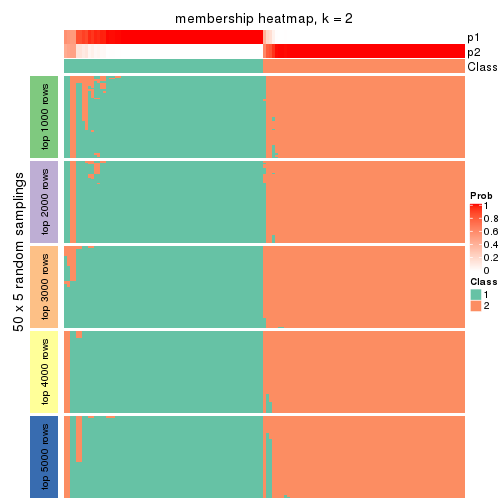
membership_heatmap(res, k = 3)

membership_heatmap(res, k = 4)
membership_heatmap(res, k = 5)
membership_heatmap(res, k = 6)
As soon as we have had the classes for columns, we can look for signatures which are significantly different between classes which can be candidate marks for certain classes. Following are the heatmaps for signatures.
Signature heatmaps where rows are scaled:
get_signatures(res, k = 2)
get_signatures(res, k = 3)
get_signatures(res, k = 4)
get_signatures(res, k = 5)
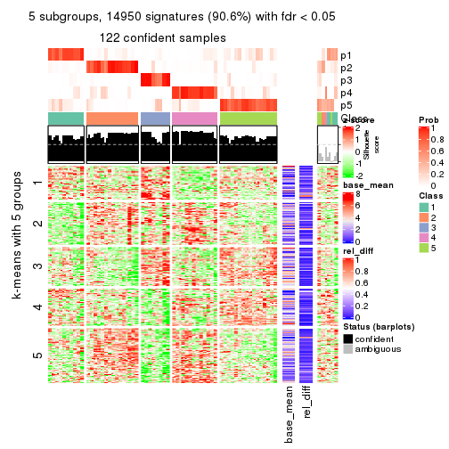
get_signatures(res, k = 6)
Signature heatmaps where rows are not scaled:
get_signatures(res, k = 2, scale_rows = FALSE)
get_signatures(res, k = 3, scale_rows = FALSE)
get_signatures(res, k = 4, scale_rows = FALSE)
get_signatures(res, k = 5, scale_rows = FALSE)
get_signatures(res, k = 6, scale_rows = FALSE)
Compare the overlap of signatures from different k:
compare_signatures(res)
get_signature() returns a data frame invisibly. TO get the list of signatures, the function
call should be assigned to a variable explicitly. In following code, if plot argument is set
to FALSE, no heatmap is plotted while only the differential analysis is performed.
# code only for demonstration
tb = get_signature(res, k = ..., plot = FALSE)
An example of the output of tb is:
#> which_row fdr mean_1 mean_2 scaled_mean_1 scaled_mean_2 km
#> 1 38 0.042760348 8.373488 9.131774 -0.5533452 0.5164555 1
#> 2 40 0.018707592 7.106213 8.469186 -0.6173731 0.5762149 1
#> 3 55 0.019134737 10.221463 11.207825 -0.6159697 0.5749050 1
#> 4 59 0.006059896 5.921854 7.869574 -0.6899429 0.6439467 1
#> 5 60 0.018055526 8.928898 10.211722 -0.6204761 0.5791110 1
#> 6 98 0.009384629 15.714769 14.887706 0.6635654 -0.6193277 2
...
The columns in tb are:
which_row: row indices corresponding to the input matrix.fdr: FDR for the differential test. mean_x: The mean value in group x.scaled_mean_x: The mean value in group x after rows are scaled.km: Row groups if k-means clustering is applied to rows.UMAP plot which shows how samples are separated.
dimension_reduction(res, k = 2, method = "UMAP")
dimension_reduction(res, k = 3, method = "UMAP")
dimension_reduction(res, k = 4, method = "UMAP")
dimension_reduction(res, k = 5, method = "UMAP")
dimension_reduction(res, k = 6, method = "UMAP")

Following heatmap shows how subgroups are split when increasing k:
collect_classes(res)
If matrix rows can be associated to genes, consider to use GO_Enrichment(res,
...) to perform function enrichment for the signature genes.
The object with results only for a single top-value method and a single partition method can be extracted as:
res = res_list["ATC", "hclust"]
# you can also extract it by
# res = res_list["ATC:hclust"]
A summary of res and all the functions that can be applied to it:
res
#> A 'ConsensusPartition' object with k = 2, 3, 4, 5, 6.
#> On a matrix with 16510 rows and 133 columns.
#> Top rows (1000, 2000, 3000, 4000, 5000) are extracted by 'ATC' method.
#> Subgroups are detected by 'hclust' method.
#> Performed in total 1250 partitions by row resampling.
#> Best k for subgroups seems to be 2.
#>
#> Following methods can be applied to this 'ConsensusPartition' object:
#> [1] "cola_report" "collect_classes" "collect_plots"
#> [4] "collect_stats" "colnames" "compare_signatures"
#> [7] "consensus_heatmap" "dimension_reduction" "functional_enrichment"
#> [10] "get_anno_col" "get_anno" "get_classes"
#> [13] "get_consensus" "get_matrix" "get_membership"
#> [16] "get_param" "get_signatures" "get_stats"
#> [19] "is_best_k" "is_stable_k" "membership_heatmap"
#> [22] "ncol" "nrow" "plot_ecdf"
#> [25] "rownames" "select_partition_number" "show"
#> [28] "suggest_best_k" "test_to_known_factors"
collect_plots() function collects all the plots made from res for all k (number of partitions)
into one single page to provide an easy and fast comparison between different k.
collect_plots(res)
The plots are:
k and the heatmap of
predicted classes for each k.k.k.k.All the plots in panels can be made by individual functions and they are plotted later in this section.
select_partition_number() produces several plots showing different
statistics for choosing “optimized” k. There are following statistics:
k;k, the area increased is defined as \(A_k - A_{k-1}\).The detailed explanations of these statistics can be found in the cola vignette.
Generally speaking, lower PAC score, higher mean silhouette score or higher
concordance corresponds to better partition. Rand index and Jaccard index
measure how similar the current partition is compared to partition with k-1.
If they are too similar, we won't accept k is better than k-1.
select_partition_number(res)
The numeric values for all these statistics can be obtained by get_stats().
get_stats(res)
#> k 1-PAC mean_silhouette concordance area_increased Rand Jaccard
#> 2 2 0.499 0.909 0.899 0.4405 0.527 0.527
#> 3 3 0.528 0.838 0.891 0.3573 0.867 0.747
#> 4 4 0.586 0.698 0.848 0.1485 0.882 0.700
#> 5 5 0.675 0.715 0.788 0.1034 0.895 0.640
#> 6 6 0.813 0.762 0.838 0.0581 0.942 0.749
suggest_best_k() suggests the best \(k\) based on these statistics. The rules are as follows:
NA.suggest_best_k(res)
#> [1] 2
Following shows the table of the partitions (You need to click the show/hide
code output link to see it). The membership matrix (columns with name p*)
is inferred by
clue::cl_consensus()
function with the SE method. Basically the value in the membership matrix
represents the probability to belong to a certain group. The finall class
label for an item is determined with the group with highest probability it
belongs to.
In get_classes() function, the entropy is calculated from the membership
matrix and the silhouette score is calculated from the consensus matrix.
cbind(get_classes(res, k = 2), get_membership(res, k = 2))
#> class entropy silhouette p1 p2
#> ERR946976 1 0.6247 0.825 0.844 0.156
#> ERR947001 1 0.6247 0.825 0.844 0.156
#> ERR946975 2 0.6247 0.992 0.156 0.844
#> ERR947000 2 0.6247 0.992 0.156 0.844
#> ERR946972 1 0.6247 0.825 0.844 0.156
#> ERR946997 1 0.6247 0.825 0.844 0.156
#> ERR946986 1 0.3114 0.900 0.944 0.056
#> ERR947011 1 0.3114 0.900 0.944 0.056
#> ERR946977 1 0.3114 0.900 0.944 0.056
#> ERR947002 1 0.3114 0.900 0.944 0.056
#> ERR946974 1 0.2778 0.904 0.952 0.048
#> ERR946999 1 0.2778 0.904 0.952 0.048
#> ERR946971 1 0.6247 0.825 0.844 0.156
#> ERR946996 1 0.6247 0.825 0.844 0.156
#> ERR946992 2 0.6247 0.992 0.156 0.844
#> ERR947017 2 0.6247 0.992 0.156 0.844
#> ERR946984 1 0.3114 0.900 0.944 0.056
#> ERR947009 1 0.3114 0.900 0.944 0.056
#> ERR946987 1 0.4431 0.870 0.908 0.092
#> ERR947012 1 0.4431 0.870 0.908 0.092
#> ERR946991 2 0.6247 0.992 0.156 0.844
#> ERR947016 2 0.6247 0.992 0.156 0.844
#> ERR946983 2 0.6247 0.992 0.156 0.844
#> ERR947008 2 0.6247 0.992 0.156 0.844
#> ERR946970 1 0.6712 0.854 0.824 0.176
#> ERR946995 1 0.6712 0.854 0.824 0.176
#> ERR946969 1 0.3114 0.900 0.944 0.056
#> ERR946994 1 0.3114 0.900 0.944 0.056
#> ERR946982 2 0.6247 0.992 0.156 0.844
#> ERR947007 2 0.6247 0.992 0.156 0.844
#> ERR946988 1 0.3114 0.900 0.944 0.056
#> ERR947013 1 0.3114 0.900 0.944 0.056
#> ERR946985 1 0.4431 0.870 0.908 0.092
#> ERR947010 1 0.4431 0.870 0.908 0.092
#> ERR946989 1 0.2778 0.904 0.952 0.048
#> ERR947014 1 0.2778 0.904 0.952 0.048
#> ERR946968 1 0.6247 0.825 0.844 0.156
#> ERR946993 1 0.6247 0.825 0.844 0.156
#> ERR946990 1 0.2778 0.904 0.952 0.048
#> ERR947015 1 0.2778 0.904 0.952 0.048
#> ERR946980 1 0.3584 0.891 0.932 0.068
#> ERR947005 1 0.3584 0.891 0.932 0.068
#> ERR946978 1 0.0000 0.911 1.000 0.000
#> ERR947003 1 0.0000 0.911 1.000 0.000
#> ERR946979 2 0.6247 0.992 0.156 0.844
#> ERR947004 2 0.6247 0.992 0.156 0.844
#> ERR946957 1 0.6247 0.825 0.844 0.156
#> ERR946962 1 0.6247 0.825 0.844 0.156
#> ERR946958 1 0.6247 0.825 0.844 0.156
#> ERR946963 1 0.6247 0.825 0.844 0.156
#> ERR946959 1 0.0000 0.911 1.000 0.000
#> ERR946964 1 0.0000 0.911 1.000 0.000
#> ERR946967 1 0.7056 0.835 0.808 0.192
#> ERR862690 1 0.7056 0.835 0.808 0.192
#> ERR914278 2 0.8861 0.774 0.304 0.696
#> ERR914314 2 0.8861 0.774 0.304 0.696
#> ERR914279 1 0.0376 0.912 0.996 0.004
#> ERR914315 1 0.0376 0.912 0.996 0.004
#> ERR914280 2 0.6247 0.992 0.156 0.844
#> ERR914316 2 0.6247 0.992 0.156 0.844
#> ERR914281 2 0.6247 0.992 0.156 0.844
#> ERR914317 2 0.6247 0.992 0.156 0.844
#> ERR914282 2 0.6247 0.992 0.156 0.844
#> ERR914318 2 0.6247 0.992 0.156 0.844
#> ERR914283 1 0.0000 0.911 1.000 0.000
#> ERR914319 1 0.0000 0.911 1.000 0.000
#> ERR914284 1 0.0376 0.912 0.996 0.004
#> ERR914320 1 0.0376 0.912 0.996 0.004
#> ERR914285 1 0.2778 0.904 0.952 0.048
#> ERR914321 1 0.2778 0.904 0.952 0.048
#> ERR914286 2 0.6247 0.992 0.156 0.844
#> ERR914322 2 0.6247 0.992 0.156 0.844
#> ERR914287 1 0.0938 0.912 0.988 0.012
#> ERR914323 1 0.0938 0.912 0.988 0.012
#> ERR914288 1 0.6247 0.787 0.844 0.156
#> ERR914324 1 0.6247 0.787 0.844 0.156
#> ERR914289 1 0.1414 0.912 0.980 0.020
#> ERR914290 1 0.2423 0.907 0.960 0.040
#> ERR914326 1 0.2423 0.907 0.960 0.040
#> ERR914291 2 0.6247 0.992 0.156 0.844
#> ERR914327 2 0.6247 0.992 0.156 0.844
#> ERR914292 1 0.1414 0.912 0.980 0.020
#> ERR914328 1 0.1414 0.912 0.980 0.020
#> ERR914293 1 0.0000 0.911 1.000 0.000
#> ERR914329 1 0.0000 0.911 1.000 0.000
#> ERR914294 2 0.6247 0.992 0.156 0.844
#> ERR914330 2 0.6247 0.992 0.156 0.844
#> ERR914295 1 0.0000 0.911 1.000 0.000
#> ERR914331 1 0.0000 0.911 1.000 0.000
#> ERR914296 1 0.0376 0.912 0.996 0.004
#> ERR914332 1 0.0376 0.912 0.996 0.004
#> ERR914297 2 0.6531 0.978 0.168 0.832
#> ERR914333 2 0.6531 0.978 0.168 0.832
#> ERR914298 1 0.0000 0.911 1.000 0.000
#> ERR914334 1 0.0000 0.911 1.000 0.000
#> ERR914299 2 0.6247 0.992 0.156 0.844
#> ERR914335 2 0.6247 0.992 0.156 0.844
#> ERR914300 1 0.2423 0.907 0.960 0.040
#> ERR914336 1 0.2423 0.907 0.960 0.040
#> ERR914301 2 0.6247 0.992 0.156 0.844
#> ERR914337 2 0.6247 0.992 0.156 0.844
#> ERR914302 2 0.6247 0.992 0.156 0.844
#> ERR914338 2 0.6247 0.992 0.156 0.844
#> ERR914303 2 0.6247 0.992 0.156 0.844
#> ERR914339 2 0.6247 0.992 0.156 0.844
#> ERR914304 2 0.6247 0.992 0.156 0.844
#> ERR914340 2 0.6247 0.992 0.156 0.844
#> ERR914305 2 0.6247 0.992 0.156 0.844
#> ERR914341 2 0.6247 0.992 0.156 0.844
#> ERR914306 2 0.6247 0.992 0.156 0.844
#> ERR914342 2 0.6247 0.992 0.156 0.844
#> ERR914307 1 0.8608 0.539 0.716 0.284
#> ERR914343 1 0.8608 0.539 0.716 0.284
#> ERR914308 1 0.0938 0.912 0.988 0.012
#> ERR914344 1 0.0938 0.912 0.988 0.012
#> ERR914309 1 0.0938 0.912 0.988 0.012
#> ERR914345 1 0.0938 0.912 0.988 0.012
#> ERR914310 1 0.1414 0.912 0.980 0.020
#> ERR914346 1 0.1414 0.912 0.980 0.020
#> ERR914311 2 0.6247 0.992 0.156 0.844
#> ERR914347 2 0.6247 0.992 0.156 0.844
#> ERR914312 2 0.6247 0.992 0.156 0.844
#> ERR914348 2 0.6247 0.992 0.156 0.844
#> ERR914313 2 0.6247 0.992 0.156 0.844
#> ERR914349 2 0.6247 0.992 0.156 0.844
#> ERR946960 1 0.6247 0.825 0.844 0.156
#> ERR946965 1 0.6247 0.825 0.844 0.156
#> ERR946966 1 0.9754 0.135 0.592 0.408
#> ERR946973 1 0.6247 0.825 0.844 0.156
#> ERR946998 1 0.6247 0.825 0.844 0.156
#> ERR946981 2 0.6247 0.992 0.156 0.844
#> ERR947006 2 0.6247 0.992 0.156 0.844
#> ERR914325 1 0.1414 0.912 0.980 0.020
cbind(get_classes(res, k = 3), get_membership(res, k = 3))
#> class entropy silhouette p1 p2 p3
#> ERR946976 3 0.1529 0.946 0.040 0.000 0.960
#> ERR947001 3 0.1529 0.946 0.040 0.000 0.960
#> ERR946975 2 0.4178 0.884 0.172 0.828 0.000
#> ERR947000 2 0.4178 0.884 0.172 0.828 0.000
#> ERR946972 3 0.1163 0.945 0.028 0.000 0.972
#> ERR946997 3 0.1163 0.945 0.028 0.000 0.972
#> ERR946986 1 0.0661 0.869 0.988 0.008 0.004
#> ERR947011 1 0.0661 0.869 0.988 0.008 0.004
#> ERR946977 1 0.0661 0.869 0.988 0.008 0.004
#> ERR947002 1 0.0661 0.869 0.988 0.008 0.004
#> ERR946974 1 0.0237 0.870 0.996 0.000 0.004
#> ERR946999 1 0.0237 0.870 0.996 0.000 0.004
#> ERR946971 3 0.1163 0.945 0.028 0.000 0.972
#> ERR946996 3 0.1163 0.945 0.028 0.000 0.972
#> ERR946992 2 0.0237 0.858 0.000 0.996 0.004
#> ERR947017 2 0.0237 0.858 0.000 0.996 0.004
#> ERR946984 1 0.0661 0.869 0.988 0.008 0.004
#> ERR947009 1 0.0661 0.869 0.988 0.008 0.004
#> ERR946987 1 0.1919 0.852 0.956 0.020 0.024
#> ERR947012 1 0.1919 0.852 0.956 0.020 0.024
#> ERR946991 2 0.0237 0.858 0.000 0.996 0.004
#> ERR947016 2 0.0237 0.858 0.000 0.996 0.004
#> ERR946983 2 0.0237 0.858 0.000 0.996 0.004
#> ERR947008 2 0.0237 0.858 0.000 0.996 0.004
#> ERR946970 1 0.5650 0.410 0.688 0.000 0.312
#> ERR946995 1 0.5650 0.410 0.688 0.000 0.312
#> ERR946969 1 0.0661 0.869 0.988 0.008 0.004
#> ERR946994 1 0.0661 0.869 0.988 0.008 0.004
#> ERR946982 2 0.0237 0.858 0.000 0.996 0.004
#> ERR947007 2 0.0237 0.858 0.000 0.996 0.004
#> ERR946988 1 0.0661 0.869 0.988 0.008 0.004
#> ERR947013 1 0.0661 0.869 0.988 0.008 0.004
#> ERR946985 1 0.1919 0.852 0.956 0.020 0.024
#> ERR947010 1 0.1919 0.852 0.956 0.020 0.024
#> ERR946989 1 0.0237 0.870 0.996 0.000 0.004
#> ERR947014 1 0.0237 0.870 0.996 0.000 0.004
#> ERR946968 3 0.1529 0.946 0.040 0.000 0.960
#> ERR946993 3 0.1529 0.946 0.040 0.000 0.960
#> ERR946990 1 0.0237 0.870 0.996 0.000 0.004
#> ERR947015 1 0.0237 0.870 0.996 0.000 0.004
#> ERR946980 1 0.1170 0.864 0.976 0.008 0.016
#> ERR947005 1 0.1170 0.864 0.976 0.008 0.016
#> ERR946978 1 0.5254 0.734 0.736 0.000 0.264
#> ERR947003 1 0.5254 0.734 0.736 0.000 0.264
#> ERR946979 2 0.0237 0.858 0.000 0.996 0.004
#> ERR947004 2 0.0237 0.858 0.000 0.996 0.004
#> ERR946957 3 0.1163 0.945 0.028 0.000 0.972
#> ERR946962 3 0.1163 0.945 0.028 0.000 0.972
#> ERR946958 3 0.1529 0.946 0.040 0.000 0.960
#> ERR946963 3 0.1529 0.946 0.040 0.000 0.960
#> ERR946959 1 0.5254 0.734 0.736 0.000 0.264
#> ERR946964 1 0.5254 0.734 0.736 0.000 0.264
#> ERR946967 3 0.6111 0.397 0.396 0.000 0.604
#> ERR862690 3 0.6111 0.397 0.396 0.000 0.604
#> ERR914278 2 0.6587 0.594 0.352 0.632 0.016
#> ERR914314 2 0.6587 0.594 0.352 0.632 0.016
#> ERR914279 1 0.3686 0.844 0.860 0.000 0.140
#> ERR914315 1 0.3686 0.844 0.860 0.000 0.140
#> ERR914280 2 0.4178 0.884 0.172 0.828 0.000
#> ERR914316 2 0.4178 0.884 0.172 0.828 0.000
#> ERR914281 2 0.0237 0.858 0.000 0.996 0.004
#> ERR914317 2 0.0237 0.858 0.000 0.996 0.004
#> ERR914282 2 0.4178 0.884 0.172 0.828 0.000
#> ERR914318 2 0.4178 0.884 0.172 0.828 0.000
#> ERR914283 1 0.5254 0.734 0.736 0.000 0.264
#> ERR914319 1 0.5254 0.734 0.736 0.000 0.264
#> ERR914284 1 0.3686 0.844 0.860 0.000 0.140
#> ERR914320 1 0.3686 0.844 0.860 0.000 0.140
#> ERR914285 1 0.0237 0.870 0.996 0.000 0.004
#> ERR914321 1 0.0237 0.870 0.996 0.000 0.004
#> ERR914286 2 0.4178 0.884 0.172 0.828 0.000
#> ERR914322 2 0.4178 0.884 0.172 0.828 0.000
#> ERR914287 1 0.2625 0.868 0.916 0.000 0.084
#> ERR914323 1 0.2625 0.868 0.916 0.000 0.084
#> ERR914288 1 0.3690 0.803 0.884 0.100 0.016
#> ERR914324 1 0.3690 0.803 0.884 0.100 0.016
#> ERR914289 1 0.2448 0.870 0.924 0.000 0.076
#> ERR914290 1 0.2584 0.872 0.928 0.008 0.064
#> ERR914326 1 0.2584 0.872 0.928 0.008 0.064
#> ERR914291 2 0.4178 0.884 0.172 0.828 0.000
#> ERR914327 2 0.4178 0.884 0.172 0.828 0.000
#> ERR914292 1 0.2448 0.870 0.924 0.000 0.076
#> ERR914328 1 0.2448 0.870 0.924 0.000 0.076
#> ERR914293 1 0.5138 0.747 0.748 0.000 0.252
#> ERR914329 1 0.5138 0.747 0.748 0.000 0.252
#> ERR914294 2 0.4062 0.883 0.164 0.836 0.000
#> ERR914330 2 0.4062 0.883 0.164 0.836 0.000
#> ERR914295 1 0.5138 0.747 0.748 0.000 0.252
#> ERR914331 1 0.5138 0.747 0.748 0.000 0.252
#> ERR914296 1 0.4121 0.824 0.832 0.000 0.168
#> ERR914332 1 0.4121 0.824 0.832 0.000 0.168
#> ERR914297 2 0.4346 0.872 0.184 0.816 0.000
#> ERR914333 2 0.4346 0.872 0.184 0.816 0.000
#> ERR914298 1 0.5254 0.734 0.736 0.000 0.264
#> ERR914334 1 0.5254 0.734 0.736 0.000 0.264
#> ERR914299 2 0.4178 0.884 0.172 0.828 0.000
#> ERR914335 2 0.4178 0.884 0.172 0.828 0.000
#> ERR914300 1 0.2584 0.872 0.928 0.008 0.064
#> ERR914336 1 0.2584 0.872 0.928 0.008 0.064
#> ERR914301 2 0.4178 0.884 0.172 0.828 0.000
#> ERR914337 2 0.4178 0.884 0.172 0.828 0.000
#> ERR914302 2 0.4178 0.884 0.172 0.828 0.000
#> ERR914338 2 0.4178 0.884 0.172 0.828 0.000
#> ERR914303 2 0.0237 0.858 0.000 0.996 0.004
#> ERR914339 2 0.0237 0.858 0.000 0.996 0.004
#> ERR914304 2 0.4178 0.884 0.172 0.828 0.000
#> ERR914340 2 0.4178 0.884 0.172 0.828 0.000
#> ERR914305 2 0.0237 0.858 0.000 0.996 0.004
#> ERR914341 2 0.0237 0.858 0.000 0.996 0.004
#> ERR914306 2 0.0237 0.858 0.000 0.996 0.004
#> ERR914342 2 0.0237 0.858 0.000 0.996 0.004
#> ERR914307 1 0.5506 0.630 0.764 0.220 0.016
#> ERR914343 1 0.5506 0.630 0.764 0.220 0.016
#> ERR914308 1 0.2625 0.868 0.916 0.000 0.084
#> ERR914344 1 0.2625 0.868 0.916 0.000 0.084
#> ERR914309 1 0.2625 0.868 0.916 0.000 0.084
#> ERR914345 1 0.2625 0.868 0.916 0.000 0.084
#> ERR914310 1 0.2448 0.870 0.924 0.000 0.076
#> ERR914346 1 0.2448 0.870 0.924 0.000 0.076
#> ERR914311 2 0.4178 0.884 0.172 0.828 0.000
#> ERR914347 2 0.4178 0.884 0.172 0.828 0.000
#> ERR914312 2 0.4178 0.884 0.172 0.828 0.000
#> ERR914348 2 0.4178 0.884 0.172 0.828 0.000
#> ERR914313 2 0.0237 0.858 0.000 0.996 0.004
#> ERR914349 2 0.0237 0.858 0.000 0.996 0.004
#> ERR946960 3 0.1529 0.946 0.040 0.000 0.960
#> ERR946965 3 0.1529 0.946 0.040 0.000 0.960
#> ERR946966 1 0.6758 0.273 0.620 0.360 0.020
#> ERR946973 3 0.1163 0.945 0.028 0.000 0.972
#> ERR946998 3 0.1163 0.945 0.028 0.000 0.972
#> ERR946981 2 0.0237 0.858 0.000 0.996 0.004
#> ERR947006 2 0.0237 0.858 0.000 0.996 0.004
#> ERR914325 1 0.2448 0.870 0.924 0.000 0.076
cbind(get_classes(res, k = 4), get_membership(res, k = 4))
#> class entropy silhouette p1 p2 p3 p4
#> ERR946976 3 0.0804 0.941 0.012 0.008 0.980 0.000
#> ERR947001 3 0.0804 0.941 0.012 0.008 0.980 0.000
#> ERR946975 4 0.3311 0.880 0.000 0.172 0.000 0.828
#> ERR947000 4 0.3311 0.880 0.000 0.172 0.000 0.828
#> ERR946972 3 0.0376 0.941 0.004 0.004 0.992 0.000
#> ERR946997 3 0.0376 0.941 0.004 0.004 0.992 0.000
#> ERR946986 2 0.0707 0.751 0.020 0.980 0.000 0.000
#> ERR947011 2 0.0707 0.751 0.020 0.980 0.000 0.000
#> ERR946977 2 0.0707 0.751 0.020 0.980 0.000 0.000
#> ERR947002 2 0.0707 0.751 0.020 0.980 0.000 0.000
#> ERR946974 2 0.1022 0.748 0.032 0.968 0.000 0.000
#> ERR946999 2 0.1022 0.748 0.032 0.968 0.000 0.000
#> ERR946971 3 0.0376 0.941 0.004 0.004 0.992 0.000
#> ERR946996 3 0.0376 0.941 0.004 0.004 0.992 0.000
#> ERR946992 4 0.0188 0.866 0.000 0.000 0.004 0.996
#> ERR947017 4 0.0188 0.866 0.000 0.000 0.004 0.996
#> ERR946984 2 0.0707 0.751 0.020 0.980 0.000 0.000
#> ERR947009 2 0.0707 0.751 0.020 0.980 0.000 0.000
#> ERR946987 2 0.1305 0.715 0.036 0.960 0.004 0.000
#> ERR947012 2 0.1305 0.715 0.036 0.960 0.004 0.000
#> ERR946991 4 0.0188 0.866 0.000 0.000 0.004 0.996
#> ERR947016 4 0.0188 0.866 0.000 0.000 0.004 0.996
#> ERR946983 4 0.0188 0.866 0.000 0.000 0.004 0.996
#> ERR947008 4 0.0188 0.866 0.000 0.000 0.004 0.996
#> ERR946970 2 0.5712 0.396 0.048 0.644 0.308 0.000
#> ERR946995 2 0.5712 0.396 0.048 0.644 0.308 0.000
#> ERR946969 2 0.0817 0.750 0.024 0.976 0.000 0.000
#> ERR946994 2 0.0817 0.750 0.024 0.976 0.000 0.000
#> ERR946982 4 0.0188 0.866 0.000 0.000 0.004 0.996
#> ERR947007 4 0.0188 0.866 0.000 0.000 0.004 0.996
#> ERR946988 2 0.0592 0.750 0.016 0.984 0.000 0.000
#> ERR947013 2 0.0592 0.750 0.016 0.984 0.000 0.000
#> ERR946985 2 0.1305 0.715 0.036 0.960 0.004 0.000
#> ERR947010 2 0.1305 0.715 0.036 0.960 0.004 0.000
#> ERR946989 2 0.1022 0.748 0.032 0.968 0.000 0.000
#> ERR947014 2 0.1022 0.748 0.032 0.968 0.000 0.000
#> ERR946968 3 0.0804 0.941 0.012 0.008 0.980 0.000
#> ERR946993 3 0.0804 0.941 0.012 0.008 0.980 0.000
#> ERR946990 2 0.1022 0.748 0.032 0.968 0.000 0.000
#> ERR947015 2 0.1022 0.748 0.032 0.968 0.000 0.000
#> ERR946980 2 0.0188 0.744 0.004 0.996 0.000 0.000
#> ERR947005 2 0.0188 0.744 0.004 0.996 0.000 0.000
#> ERR946978 1 0.1557 0.669 0.944 0.056 0.000 0.000
#> ERR947003 1 0.1557 0.669 0.944 0.056 0.000 0.000
#> ERR946979 4 0.0188 0.866 0.000 0.000 0.004 0.996
#> ERR947004 4 0.0188 0.866 0.000 0.000 0.004 0.996
#> ERR946957 3 0.0376 0.941 0.004 0.004 0.992 0.000
#> ERR946962 3 0.0376 0.941 0.004 0.004 0.992 0.000
#> ERR946958 3 0.0804 0.941 0.012 0.008 0.980 0.000
#> ERR946963 3 0.0804 0.941 0.012 0.008 0.980 0.000
#> ERR946959 1 0.1557 0.669 0.944 0.056 0.000 0.000
#> ERR946964 1 0.1557 0.669 0.944 0.056 0.000 0.000
#> ERR946967 3 0.5510 0.371 0.024 0.376 0.600 0.000
#> ERR862690 3 0.5510 0.371 0.024 0.376 0.600 0.000
#> ERR914278 4 0.4905 0.607 0.004 0.364 0.000 0.632
#> ERR914314 4 0.4905 0.607 0.004 0.364 0.000 0.632
#> ERR914279 1 0.4998 0.358 0.512 0.488 0.000 0.000
#> ERR914315 1 0.4998 0.358 0.512 0.488 0.000 0.000
#> ERR914280 4 0.3311 0.880 0.000 0.172 0.000 0.828
#> ERR914316 4 0.3311 0.880 0.000 0.172 0.000 0.828
#> ERR914281 4 0.0188 0.866 0.000 0.000 0.004 0.996
#> ERR914317 4 0.0188 0.866 0.000 0.000 0.004 0.996
#> ERR914282 4 0.3311 0.880 0.000 0.172 0.000 0.828
#> ERR914318 4 0.3311 0.880 0.000 0.172 0.000 0.828
#> ERR914283 1 0.1557 0.669 0.944 0.056 0.000 0.000
#> ERR914319 1 0.1557 0.669 0.944 0.056 0.000 0.000
#> ERR914284 1 0.4998 0.358 0.512 0.488 0.000 0.000
#> ERR914320 1 0.4998 0.358 0.512 0.488 0.000 0.000
#> ERR914285 2 0.0921 0.749 0.028 0.972 0.000 0.000
#> ERR914321 2 0.0921 0.749 0.028 0.972 0.000 0.000
#> ERR914286 4 0.3311 0.880 0.000 0.172 0.000 0.828
#> ERR914322 4 0.3311 0.880 0.000 0.172 0.000 0.828
#> ERR914287 1 0.4925 0.514 0.572 0.428 0.000 0.000
#> ERR914323 1 0.4925 0.514 0.572 0.428 0.000 0.000
#> ERR914288 2 0.6822 -0.179 0.412 0.488 0.000 0.100
#> ERR914324 2 0.6822 -0.179 0.412 0.488 0.000 0.100
#> ERR914289 2 0.4916 -0.133 0.424 0.576 0.000 0.000
#> ERR914290 1 0.5257 0.471 0.548 0.444 0.000 0.008
#> ERR914326 1 0.5257 0.471 0.548 0.444 0.000 0.008
#> ERR914291 4 0.3311 0.880 0.000 0.172 0.000 0.828
#> ERR914327 4 0.3311 0.880 0.000 0.172 0.000 0.828
#> ERR914292 2 0.4916 -0.133 0.424 0.576 0.000 0.000
#> ERR914328 2 0.4916 -0.133 0.424 0.576 0.000 0.000
#> ERR914293 1 0.2281 0.678 0.904 0.096 0.000 0.000
#> ERR914329 1 0.2281 0.678 0.904 0.096 0.000 0.000
#> ERR914294 4 0.3219 0.880 0.000 0.164 0.000 0.836
#> ERR914330 4 0.3219 0.880 0.000 0.164 0.000 0.836
#> ERR914295 1 0.2281 0.678 0.904 0.096 0.000 0.000
#> ERR914331 1 0.2281 0.678 0.904 0.096 0.000 0.000
#> ERR914296 1 0.3311 0.659 0.828 0.172 0.000 0.000
#> ERR914332 1 0.3311 0.659 0.828 0.172 0.000 0.000
#> ERR914297 4 0.3764 0.871 0.012 0.172 0.000 0.816
#> ERR914333 4 0.3764 0.871 0.012 0.172 0.000 0.816
#> ERR914298 1 0.1118 0.652 0.964 0.036 0.000 0.000
#> ERR914334 1 0.1118 0.652 0.964 0.036 0.000 0.000
#> ERR914299 4 0.3311 0.880 0.000 0.172 0.000 0.828
#> ERR914335 4 0.3311 0.880 0.000 0.172 0.000 0.828
#> ERR914300 1 0.5257 0.471 0.548 0.444 0.000 0.008
#> ERR914336 1 0.5257 0.471 0.548 0.444 0.000 0.008
#> ERR914301 4 0.3311 0.880 0.000 0.172 0.000 0.828
#> ERR914337 4 0.3311 0.880 0.000 0.172 0.000 0.828
#> ERR914302 4 0.3311 0.880 0.000 0.172 0.000 0.828
#> ERR914338 4 0.3311 0.880 0.000 0.172 0.000 0.828
#> ERR914303 4 0.0188 0.866 0.000 0.000 0.004 0.996
#> ERR914339 4 0.0188 0.866 0.000 0.000 0.004 0.996
#> ERR914304 4 0.3311 0.880 0.000 0.172 0.000 0.828
#> ERR914340 4 0.3311 0.880 0.000 0.172 0.000 0.828
#> ERR914305 4 0.0188 0.866 0.000 0.000 0.004 0.996
#> ERR914341 4 0.0188 0.866 0.000 0.000 0.004 0.996
#> ERR914306 4 0.0188 0.866 0.000 0.000 0.004 0.996
#> ERR914342 4 0.0188 0.866 0.000 0.000 0.004 0.996
#> ERR914307 2 0.6875 0.296 0.184 0.596 0.000 0.220
#> ERR914343 2 0.6875 0.296 0.184 0.596 0.000 0.220
#> ERR914308 1 0.4925 0.514 0.572 0.428 0.000 0.000
#> ERR914344 1 0.4925 0.514 0.572 0.428 0.000 0.000
#> ERR914309 1 0.4925 0.514 0.572 0.428 0.000 0.000
#> ERR914345 1 0.4925 0.514 0.572 0.428 0.000 0.000
#> ERR914310 2 0.4916 -0.133 0.424 0.576 0.000 0.000
#> ERR914346 2 0.4916 -0.133 0.424 0.576 0.000 0.000
#> ERR914311 4 0.3311 0.880 0.000 0.172 0.000 0.828
#> ERR914347 4 0.3311 0.880 0.000 0.172 0.000 0.828
#> ERR914312 4 0.3311 0.880 0.000 0.172 0.000 0.828
#> ERR914348 4 0.3311 0.880 0.000 0.172 0.000 0.828
#> ERR914313 4 0.0188 0.866 0.000 0.000 0.004 0.996
#> ERR914349 4 0.0188 0.866 0.000 0.000 0.004 0.996
#> ERR946960 3 0.0804 0.941 0.012 0.008 0.980 0.000
#> ERR946965 3 0.0804 0.941 0.012 0.008 0.980 0.000
#> ERR946966 2 0.7509 0.130 0.188 0.452 0.000 0.360
#> ERR946973 3 0.0376 0.941 0.004 0.004 0.992 0.000
#> ERR946998 3 0.0376 0.941 0.004 0.004 0.992 0.000
#> ERR946981 4 0.0188 0.866 0.000 0.000 0.004 0.996
#> ERR947006 4 0.0188 0.866 0.000 0.000 0.004 0.996
#> ERR914325 2 0.4916 -0.133 0.424 0.576 0.000 0.000
cbind(get_classes(res, k = 5), get_membership(res, k = 5))
#> class entropy silhouette p1 p2 p3 p4 p5
#> ERR946976 3 0.0579 0.9396 0.000 0.000 0.984 0.008 0.008
#> ERR947001 3 0.0579 0.9396 0.000 0.000 0.984 0.008 0.008
#> ERR946975 4 0.4101 0.8813 0.000 0.372 0.000 0.628 0.000
#> ERR947000 4 0.4101 0.8813 0.000 0.372 0.000 0.628 0.000
#> ERR946972 3 0.0000 0.9391 0.000 0.000 1.000 0.000 0.000
#> ERR946997 3 0.0000 0.9391 0.000 0.000 1.000 0.000 0.000
#> ERR946986 5 0.2127 0.7140 0.000 0.000 0.000 0.108 0.892
#> ERR947011 5 0.2127 0.7140 0.000 0.000 0.000 0.108 0.892
#> ERR946977 5 0.2127 0.7140 0.000 0.000 0.000 0.108 0.892
#> ERR947002 5 0.2127 0.7140 0.000 0.000 0.000 0.108 0.892
#> ERR946974 5 0.0579 0.7011 0.008 0.000 0.000 0.008 0.984
#> ERR946999 5 0.0579 0.7011 0.008 0.000 0.000 0.008 0.984
#> ERR946971 3 0.0000 0.9391 0.000 0.000 1.000 0.000 0.000
#> ERR946996 3 0.0000 0.9391 0.000 0.000 1.000 0.000 0.000
#> ERR946992 2 0.0000 0.9976 0.000 1.000 0.000 0.000 0.000
#> ERR947017 2 0.0000 0.9976 0.000 1.000 0.000 0.000 0.000
#> ERR946984 5 0.2127 0.7140 0.000 0.000 0.000 0.108 0.892
#> ERR947009 5 0.2127 0.7140 0.000 0.000 0.000 0.108 0.892
#> ERR946987 5 0.3636 0.6303 0.000 0.000 0.000 0.272 0.728
#> ERR947012 5 0.3636 0.6303 0.000 0.000 0.000 0.272 0.728
#> ERR946991 2 0.0000 0.9976 0.000 1.000 0.000 0.000 0.000
#> ERR947016 2 0.0000 0.9976 0.000 1.000 0.000 0.000 0.000
#> ERR946983 2 0.0000 0.9976 0.000 1.000 0.000 0.000 0.000
#> ERR947008 2 0.0000 0.9976 0.000 1.000 0.000 0.000 0.000
#> ERR946970 5 0.4669 0.4004 0.020 0.000 0.308 0.008 0.664
#> ERR946995 5 0.4669 0.4004 0.020 0.000 0.308 0.008 0.664
#> ERR946969 5 0.0162 0.7037 0.004 0.000 0.000 0.000 0.996
#> ERR946994 5 0.0162 0.7037 0.004 0.000 0.000 0.000 0.996
#> ERR946982 2 0.0000 0.9976 0.000 1.000 0.000 0.000 0.000
#> ERR947007 2 0.0000 0.9976 0.000 1.000 0.000 0.000 0.000
#> ERR946988 5 0.2439 0.7147 0.004 0.000 0.000 0.120 0.876
#> ERR947013 5 0.2439 0.7147 0.004 0.000 0.000 0.120 0.876
#> ERR946985 5 0.3636 0.6303 0.000 0.000 0.000 0.272 0.728
#> ERR947010 5 0.3636 0.6303 0.000 0.000 0.000 0.272 0.728
#> ERR946989 5 0.0579 0.7011 0.008 0.000 0.000 0.008 0.984
#> ERR947014 5 0.0579 0.7011 0.008 0.000 0.000 0.008 0.984
#> ERR946968 3 0.0579 0.9396 0.000 0.000 0.984 0.008 0.008
#> ERR946993 3 0.0579 0.9396 0.000 0.000 0.984 0.008 0.008
#> ERR946990 5 0.0579 0.7011 0.008 0.000 0.000 0.008 0.984
#> ERR947015 5 0.0579 0.7011 0.008 0.000 0.000 0.008 0.984
#> ERR946980 5 0.2230 0.7123 0.000 0.000 0.000 0.116 0.884
#> ERR947005 5 0.2230 0.7123 0.000 0.000 0.000 0.116 0.884
#> ERR946978 1 0.1544 0.6802 0.932 0.000 0.000 0.000 0.068
#> ERR947003 1 0.1544 0.6802 0.932 0.000 0.000 0.000 0.068
#> ERR946979 2 0.0000 0.9976 0.000 1.000 0.000 0.000 0.000
#> ERR947004 2 0.0000 0.9976 0.000 1.000 0.000 0.000 0.000
#> ERR946957 3 0.0000 0.9391 0.000 0.000 1.000 0.000 0.000
#> ERR946962 3 0.0000 0.9391 0.000 0.000 1.000 0.000 0.000
#> ERR946958 3 0.0579 0.9396 0.000 0.000 0.984 0.008 0.008
#> ERR946963 3 0.0579 0.9396 0.000 0.000 0.984 0.008 0.008
#> ERR946959 1 0.1544 0.6802 0.932 0.000 0.000 0.000 0.068
#> ERR946964 1 0.1544 0.6802 0.932 0.000 0.000 0.000 0.068
#> ERR946967 3 0.4310 0.3286 0.004 0.000 0.604 0.000 0.392
#> ERR862690 3 0.4310 0.3286 0.004 0.000 0.604 0.000 0.392
#> ERR914278 4 0.5697 0.6631 0.000 0.288 0.000 0.596 0.116
#> ERR914314 4 0.5697 0.6631 0.000 0.288 0.000 0.596 0.116
#> ERR914279 1 0.6368 0.5667 0.488 0.000 0.000 0.180 0.332
#> ERR914315 1 0.6368 0.5667 0.488 0.000 0.000 0.180 0.332
#> ERR914280 4 0.4101 0.8813 0.000 0.372 0.000 0.628 0.000
#> ERR914316 4 0.4101 0.8813 0.000 0.372 0.000 0.628 0.000
#> ERR914281 2 0.0000 0.9976 0.000 1.000 0.000 0.000 0.000
#> ERR914317 2 0.0000 0.9976 0.000 1.000 0.000 0.000 0.000
#> ERR914282 4 0.4126 0.8782 0.000 0.380 0.000 0.620 0.000
#> ERR914318 4 0.4126 0.8782 0.000 0.380 0.000 0.620 0.000
#> ERR914283 1 0.1544 0.6802 0.932 0.000 0.000 0.000 0.068
#> ERR914319 1 0.1544 0.6802 0.932 0.000 0.000 0.000 0.068
#> ERR914284 1 0.6368 0.5667 0.488 0.000 0.000 0.180 0.332
#> ERR914320 1 0.6368 0.5667 0.488 0.000 0.000 0.180 0.332
#> ERR914285 5 0.3551 0.5087 0.008 0.000 0.000 0.220 0.772
#> ERR914321 5 0.3551 0.5087 0.008 0.000 0.000 0.220 0.772
#> ERR914286 4 0.4101 0.8813 0.000 0.372 0.000 0.628 0.000
#> ERR914322 4 0.4101 0.8813 0.000 0.372 0.000 0.628 0.000
#> ERR914287 1 0.6111 0.6730 0.560 0.000 0.000 0.180 0.260
#> ERR914323 1 0.6111 0.6730 0.560 0.000 0.000 0.180 0.260
#> ERR914288 1 0.7475 0.5029 0.408 0.040 0.000 0.300 0.252
#> ERR914324 1 0.7475 0.5029 0.408 0.040 0.000 0.300 0.252
#> ERR914289 5 0.6500 -0.4521 0.404 0.000 0.000 0.188 0.408
#> ERR914290 1 0.6274 0.6593 0.536 0.000 0.000 0.208 0.256
#> ERR914326 1 0.6274 0.6593 0.536 0.000 0.000 0.208 0.256
#> ERR914291 4 0.4101 0.8813 0.000 0.372 0.000 0.628 0.000
#> ERR914327 4 0.4101 0.8813 0.000 0.372 0.000 0.628 0.000
#> ERR914292 5 0.6500 -0.4521 0.404 0.000 0.000 0.188 0.408
#> ERR914328 5 0.6500 -0.4521 0.404 0.000 0.000 0.188 0.408
#> ERR914293 1 0.2482 0.6946 0.892 0.000 0.000 0.024 0.084
#> ERR914329 1 0.2482 0.6946 0.892 0.000 0.000 0.024 0.084
#> ERR914294 4 0.4150 0.8641 0.000 0.388 0.000 0.612 0.000
#> ERR914330 4 0.4150 0.8641 0.000 0.388 0.000 0.612 0.000
#> ERR914295 1 0.2482 0.6946 0.892 0.000 0.000 0.024 0.084
#> ERR914331 1 0.2482 0.6946 0.892 0.000 0.000 0.024 0.084
#> ERR914296 1 0.3171 0.6889 0.816 0.000 0.000 0.008 0.176
#> ERR914332 1 0.3171 0.6889 0.816 0.000 0.000 0.008 0.176
#> ERR914297 4 0.4430 0.8698 0.012 0.360 0.000 0.628 0.000
#> ERR914333 4 0.4430 0.8698 0.012 0.360 0.000 0.628 0.000
#> ERR914298 1 0.1608 0.5847 0.928 0.000 0.000 0.072 0.000
#> ERR914334 1 0.1608 0.5847 0.928 0.000 0.000 0.072 0.000
#> ERR914299 4 0.4114 0.8802 0.000 0.376 0.000 0.624 0.000
#> ERR914335 4 0.4114 0.8802 0.000 0.376 0.000 0.624 0.000
#> ERR914300 1 0.6274 0.6593 0.536 0.000 0.000 0.208 0.256
#> ERR914336 1 0.6274 0.6593 0.536 0.000 0.000 0.208 0.256
#> ERR914301 4 0.4101 0.8813 0.000 0.372 0.000 0.628 0.000
#> ERR914337 4 0.4101 0.8813 0.000 0.372 0.000 0.628 0.000
#> ERR914302 4 0.4101 0.8813 0.000 0.372 0.000 0.628 0.000
#> ERR914338 4 0.4101 0.8813 0.000 0.372 0.000 0.628 0.000
#> ERR914303 2 0.0000 0.9976 0.000 1.000 0.000 0.000 0.000
#> ERR914339 2 0.0000 0.9976 0.000 1.000 0.000 0.000 0.000
#> ERR914304 4 0.4126 0.8782 0.000 0.380 0.000 0.620 0.000
#> ERR914340 4 0.4126 0.8782 0.000 0.380 0.000 0.620 0.000
#> ERR914305 2 0.0000 0.9976 0.000 1.000 0.000 0.000 0.000
#> ERR914341 2 0.0000 0.9976 0.000 1.000 0.000 0.000 0.000
#> ERR914306 2 0.0510 0.9758 0.000 0.984 0.000 0.016 0.000
#> ERR914342 2 0.0510 0.9758 0.000 0.984 0.000 0.016 0.000
#> ERR914307 4 0.7116 -0.2073 0.180 0.032 0.000 0.448 0.340
#> ERR914343 4 0.7116 -0.2073 0.180 0.032 0.000 0.448 0.340
#> ERR914308 1 0.6111 0.6730 0.560 0.000 0.000 0.180 0.260
#> ERR914344 1 0.6111 0.6730 0.560 0.000 0.000 0.180 0.260
#> ERR914309 1 0.6111 0.6730 0.560 0.000 0.000 0.180 0.260
#> ERR914345 1 0.6111 0.6730 0.560 0.000 0.000 0.180 0.260
#> ERR914310 5 0.6500 -0.4521 0.404 0.000 0.000 0.188 0.408
#> ERR914346 5 0.6500 -0.4521 0.404 0.000 0.000 0.188 0.408
#> ERR914311 4 0.4126 0.8782 0.000 0.380 0.000 0.620 0.000
#> ERR914347 4 0.4126 0.8782 0.000 0.380 0.000 0.620 0.000
#> ERR914312 4 0.4126 0.8782 0.000 0.380 0.000 0.620 0.000
#> ERR914348 4 0.4126 0.8782 0.000 0.380 0.000 0.620 0.000
#> ERR914313 2 0.0000 0.9976 0.000 1.000 0.000 0.000 0.000
#> ERR914349 2 0.0000 0.9976 0.000 1.000 0.000 0.000 0.000
#> ERR946960 3 0.0579 0.9396 0.000 0.000 0.984 0.008 0.008
#> ERR946965 3 0.0579 0.9396 0.000 0.000 0.984 0.008 0.008
#> ERR946966 4 0.7469 0.0291 0.184 0.076 0.000 0.492 0.248
#> ERR946973 3 0.0000 0.9391 0.000 0.000 1.000 0.000 0.000
#> ERR946998 3 0.0000 0.9391 0.000 0.000 1.000 0.000 0.000
#> ERR946981 2 0.0000 0.9976 0.000 1.000 0.000 0.000 0.000
#> ERR947006 2 0.0000 0.9976 0.000 1.000 0.000 0.000 0.000
#> ERR914325 5 0.6500 -0.4521 0.404 0.000 0.000 0.188 0.408
cbind(get_classes(res, k = 6), get_membership(res, k = 6))
#> class entropy silhouette p1 p2 p3 p4 p5 p6
#> ERR946976 3 0.0806 0.919 0.000 0.000 0.972 0.000 0.008 0.020
#> ERR947001 3 0.0806 0.919 0.000 0.000 0.972 0.000 0.008 0.020
#> ERR946975 4 0.0000 0.940 0.000 0.000 0.000 1.000 0.000 0.000
#> ERR947000 4 0.0000 0.940 0.000 0.000 0.000 1.000 0.000 0.000
#> ERR946972 3 0.0692 0.907 0.000 0.020 0.976 0.000 0.000 0.004
#> ERR946997 3 0.0692 0.907 0.000 0.020 0.976 0.000 0.000 0.004
#> ERR946986 5 0.3280 0.804 0.160 0.004 0.000 0.000 0.808 0.028
#> ERR947011 5 0.3280 0.804 0.160 0.004 0.000 0.000 0.808 0.028
#> ERR946977 5 0.3280 0.804 0.160 0.004 0.000 0.000 0.808 0.028
#> ERR947002 5 0.3280 0.804 0.160 0.004 0.000 0.000 0.808 0.028
#> ERR946974 5 0.3744 0.776 0.256 0.004 0.000 0.000 0.724 0.016
#> ERR946999 5 0.3744 0.776 0.256 0.004 0.000 0.000 0.724 0.016
#> ERR946971 3 0.0000 0.917 0.000 0.000 1.000 0.000 0.000 0.000
#> ERR946996 3 0.0000 0.917 0.000 0.000 1.000 0.000 0.000 0.000
#> ERR946992 2 0.0865 0.995 0.000 0.964 0.000 0.036 0.000 0.000
#> ERR947017 2 0.0865 0.995 0.000 0.964 0.000 0.036 0.000 0.000
#> ERR946984 5 0.3280 0.804 0.160 0.004 0.000 0.000 0.808 0.028
#> ERR947009 5 0.3280 0.804 0.160 0.004 0.000 0.000 0.808 0.028
#> ERR946987 5 0.2848 0.550 0.004 0.008 0.000 0.000 0.828 0.160
#> ERR947012 5 0.2848 0.550 0.004 0.008 0.000 0.000 0.828 0.160
#> ERR946991 2 0.0865 0.995 0.000 0.964 0.000 0.036 0.000 0.000
#> ERR947016 2 0.0865 0.995 0.000 0.964 0.000 0.036 0.000 0.000
#> ERR946983 2 0.0865 0.995 0.000 0.964 0.000 0.036 0.000 0.000
#> ERR947008 2 0.0865 0.995 0.000 0.964 0.000 0.036 0.000 0.000
#> ERR946970 5 0.6706 0.443 0.268 0.004 0.296 0.000 0.404 0.028
#> ERR946995 5 0.6706 0.443 0.268 0.004 0.296 0.000 0.404 0.028
#> ERR946969 5 0.3536 0.781 0.252 0.004 0.000 0.000 0.736 0.008
#> ERR946994 5 0.3536 0.781 0.252 0.004 0.000 0.000 0.736 0.008
#> ERR946982 2 0.0790 0.995 0.000 0.968 0.000 0.032 0.000 0.000
#> ERR947007 2 0.0790 0.995 0.000 0.968 0.000 0.032 0.000 0.000
#> ERR946988 5 0.3562 0.801 0.168 0.004 0.000 0.000 0.788 0.040
#> ERR947013 5 0.3562 0.801 0.168 0.004 0.000 0.000 0.788 0.040
#> ERR946985 5 0.2848 0.550 0.004 0.008 0.000 0.000 0.828 0.160
#> ERR947010 5 0.2848 0.550 0.004 0.008 0.000 0.000 0.828 0.160
#> ERR946989 5 0.3744 0.776 0.256 0.004 0.000 0.000 0.724 0.016
#> ERR947014 5 0.3744 0.776 0.256 0.004 0.000 0.000 0.724 0.016
#> ERR946968 3 0.0806 0.919 0.000 0.000 0.972 0.000 0.008 0.020
#> ERR946993 3 0.0806 0.919 0.000 0.000 0.972 0.000 0.008 0.020
#> ERR946990 5 0.3744 0.776 0.256 0.004 0.000 0.000 0.724 0.016
#> ERR947015 5 0.3744 0.776 0.256 0.004 0.000 0.000 0.724 0.016
#> ERR946980 5 0.2821 0.804 0.152 0.000 0.000 0.000 0.832 0.016
#> ERR947005 5 0.2821 0.804 0.152 0.000 0.000 0.000 0.832 0.016
#> ERR946978 1 0.3955 0.246 0.608 0.000 0.000 0.000 0.008 0.384
#> ERR947003 1 0.3955 0.246 0.608 0.000 0.000 0.000 0.008 0.384
#> ERR946979 2 0.0790 0.995 0.000 0.968 0.000 0.032 0.000 0.000
#> ERR947004 2 0.0790 0.995 0.000 0.968 0.000 0.032 0.000 0.000
#> ERR946957 3 0.0000 0.917 0.000 0.000 1.000 0.000 0.000 0.000
#> ERR946962 3 0.0000 0.917 0.000 0.000 1.000 0.000 0.000 0.000
#> ERR946958 3 0.0806 0.919 0.000 0.000 0.972 0.000 0.008 0.020
#> ERR946963 3 0.0806 0.919 0.000 0.000 0.972 0.000 0.008 0.020
#> ERR946959 1 0.3955 0.246 0.608 0.000 0.000 0.000 0.008 0.384
#> ERR946964 1 0.3955 0.246 0.608 0.000 0.000 0.000 0.008 0.384
#> ERR946967 3 0.6039 0.297 0.148 0.024 0.580 0.000 0.236 0.012
#> ERR862690 3 0.6039 0.297 0.148 0.024 0.580 0.000 0.236 0.012
#> ERR914278 4 0.5611 0.540 0.172 0.004 0.000 0.660 0.100 0.064
#> ERR914314 4 0.5611 0.540 0.172 0.004 0.000 0.660 0.100 0.064
#> ERR914279 1 0.4040 0.644 0.784 0.004 0.000 0.012 0.116 0.084
#> ERR914315 1 0.4040 0.644 0.784 0.004 0.000 0.012 0.116 0.084
#> ERR914280 4 0.0000 0.940 0.000 0.000 0.000 1.000 0.000 0.000
#> ERR914316 4 0.0000 0.940 0.000 0.000 0.000 1.000 0.000 0.000
#> ERR914281 2 0.0790 0.995 0.000 0.968 0.000 0.032 0.000 0.000
#> ERR914317 2 0.0790 0.995 0.000 0.968 0.000 0.032 0.000 0.000
#> ERR914282 4 0.0632 0.934 0.000 0.024 0.000 0.976 0.000 0.000
#> ERR914318 4 0.0632 0.934 0.000 0.024 0.000 0.976 0.000 0.000
#> ERR914283 1 0.3955 0.246 0.608 0.000 0.000 0.000 0.008 0.384
#> ERR914319 1 0.3955 0.246 0.608 0.000 0.000 0.000 0.008 0.384
#> ERR914284 1 0.4040 0.644 0.784 0.004 0.000 0.012 0.116 0.084
#> ERR914320 1 0.4040 0.644 0.784 0.004 0.000 0.012 0.116 0.084
#> ERR914285 5 0.5545 0.504 0.408 0.008 0.000 0.012 0.500 0.072
#> ERR914321 5 0.5545 0.504 0.408 0.008 0.000 0.012 0.500 0.072
#> ERR914286 4 0.0000 0.940 0.000 0.000 0.000 1.000 0.000 0.000
#> ERR914322 4 0.0000 0.940 0.000 0.000 0.000 1.000 0.000 0.000
#> ERR914287 1 0.0508 0.675 0.984 0.000 0.000 0.012 0.004 0.000
#> ERR914323 1 0.0508 0.675 0.984 0.000 0.000 0.012 0.004 0.000
#> ERR914288 1 0.4049 0.526 0.784 0.000 0.000 0.128 0.056 0.032
#> ERR914324 1 0.4049 0.526 0.784 0.000 0.000 0.128 0.056 0.032
#> ERR914289 1 0.3360 0.625 0.816 0.004 0.000 0.012 0.148 0.020
#> ERR914290 1 0.1225 0.665 0.952 0.000 0.000 0.036 0.012 0.000
#> ERR914326 1 0.1225 0.665 0.952 0.000 0.000 0.036 0.012 0.000
#> ERR914291 4 0.0000 0.940 0.000 0.000 0.000 1.000 0.000 0.000
#> ERR914327 4 0.0000 0.940 0.000 0.000 0.000 1.000 0.000 0.000
#> ERR914292 1 0.3360 0.625 0.816 0.004 0.000 0.012 0.148 0.020
#> ERR914328 1 0.3360 0.625 0.816 0.004 0.000 0.012 0.148 0.020
#> ERR914293 1 0.3940 0.326 0.640 0.000 0.000 0.000 0.012 0.348
#> ERR914329 1 0.3940 0.326 0.640 0.000 0.000 0.000 0.012 0.348
#> ERR914294 4 0.0458 0.934 0.000 0.016 0.000 0.984 0.000 0.000
#> ERR914330 4 0.0458 0.934 0.000 0.016 0.000 0.984 0.000 0.000
#> ERR914295 1 0.3940 0.326 0.640 0.000 0.000 0.000 0.012 0.348
#> ERR914331 1 0.3940 0.326 0.640 0.000 0.000 0.000 0.012 0.348
#> ERR914296 1 0.3265 0.470 0.748 0.000 0.000 0.000 0.004 0.248
#> ERR914332 1 0.3265 0.470 0.748 0.000 0.000 0.000 0.004 0.248
#> ERR914297 4 0.0363 0.931 0.012 0.000 0.000 0.988 0.000 0.000
#> ERR914333 4 0.0363 0.931 0.012 0.000 0.000 0.988 0.000 0.000
#> ERR914298 6 0.2730 1.000 0.192 0.000 0.000 0.000 0.000 0.808
#> ERR914334 6 0.2730 1.000 0.192 0.000 0.000 0.000 0.000 0.808
#> ERR914299 4 0.0363 0.938 0.000 0.012 0.000 0.988 0.000 0.000
#> ERR914335 4 0.0363 0.938 0.000 0.012 0.000 0.988 0.000 0.000
#> ERR914300 1 0.1225 0.665 0.952 0.000 0.000 0.036 0.012 0.000
#> ERR914336 1 0.1225 0.665 0.952 0.000 0.000 0.036 0.012 0.000
#> ERR914301 4 0.0000 0.940 0.000 0.000 0.000 1.000 0.000 0.000
#> ERR914337 4 0.0000 0.940 0.000 0.000 0.000 1.000 0.000 0.000
#> ERR914302 4 0.0000 0.940 0.000 0.000 0.000 1.000 0.000 0.000
#> ERR914338 4 0.0000 0.940 0.000 0.000 0.000 1.000 0.000 0.000
#> ERR914303 2 0.0790 0.995 0.000 0.968 0.000 0.032 0.000 0.000
#> ERR914339 2 0.0790 0.995 0.000 0.968 0.000 0.032 0.000 0.000
#> ERR914304 4 0.0632 0.934 0.000 0.024 0.000 0.976 0.000 0.000
#> ERR914340 4 0.0632 0.934 0.000 0.024 0.000 0.976 0.000 0.000
#> ERR914305 2 0.0790 0.995 0.000 0.968 0.000 0.032 0.000 0.000
#> ERR914341 2 0.0790 0.995 0.000 0.968 0.000 0.032 0.000 0.000
#> ERR914306 2 0.1141 0.975 0.000 0.948 0.000 0.052 0.000 0.000
#> ERR914342 2 0.1141 0.975 0.000 0.948 0.000 0.052 0.000 0.000
#> ERR914307 1 0.6325 0.216 0.556 0.004 0.000 0.248 0.128 0.064
#> ERR914343 1 0.6325 0.216 0.556 0.004 0.000 0.248 0.128 0.064
#> ERR914308 1 0.0508 0.675 0.984 0.000 0.000 0.012 0.004 0.000
#> ERR914344 1 0.0508 0.675 0.984 0.000 0.000 0.012 0.004 0.000
#> ERR914309 1 0.0508 0.675 0.984 0.000 0.000 0.012 0.004 0.000
#> ERR914345 1 0.0508 0.675 0.984 0.000 0.000 0.012 0.004 0.000
#> ERR914310 1 0.3360 0.625 0.816 0.004 0.000 0.012 0.148 0.020
#> ERR914346 1 0.3360 0.625 0.816 0.004 0.000 0.012 0.148 0.020
#> ERR914311 4 0.0632 0.934 0.000 0.024 0.000 0.976 0.000 0.000
#> ERR914347 4 0.0632 0.934 0.000 0.024 0.000 0.976 0.000 0.000
#> ERR914312 4 0.0632 0.934 0.000 0.024 0.000 0.976 0.000 0.000
#> ERR914348 4 0.0632 0.934 0.000 0.024 0.000 0.976 0.000 0.000
#> ERR914313 2 0.0790 0.995 0.000 0.968 0.000 0.032 0.000 0.000
#> ERR914349 2 0.0790 0.995 0.000 0.968 0.000 0.032 0.000 0.000
#> ERR946960 3 0.0806 0.919 0.000 0.000 0.972 0.000 0.008 0.020
#> ERR946965 3 0.0806 0.919 0.000 0.000 0.972 0.000 0.008 0.020
#> ERR946966 4 0.5100 0.150 0.404 0.000 0.000 0.532 0.048 0.016
#> ERR946973 3 0.0000 0.917 0.000 0.000 1.000 0.000 0.000 0.000
#> ERR946998 3 0.0000 0.917 0.000 0.000 1.000 0.000 0.000 0.000
#> ERR946981 2 0.0865 0.995 0.000 0.964 0.000 0.036 0.000 0.000
#> ERR947006 2 0.0865 0.995 0.000 0.964 0.000 0.036 0.000 0.000
#> ERR914325 1 0.3360 0.625 0.816 0.004 0.000 0.012 0.148 0.020
Heatmaps for the consensus matrix. It visualizes the probability of two samples to be in a same group.
consensus_heatmap(res, k = 2)
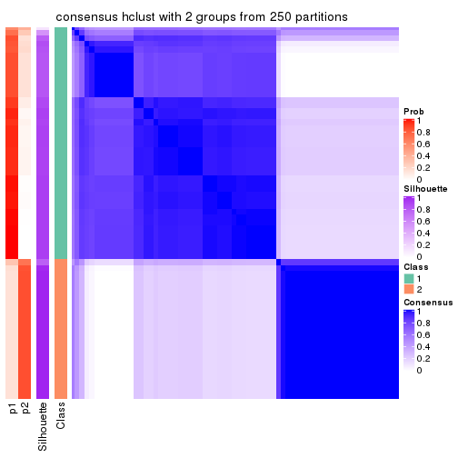
consensus_heatmap(res, k = 3)
consensus_heatmap(res, k = 4)
consensus_heatmap(res, k = 5)
consensus_heatmap(res, k = 6)
Heatmaps for the membership of samples in all partitions to see how consistent they are:
membership_heatmap(res, k = 2)
membership_heatmap(res, k = 3)
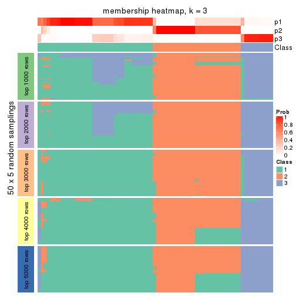
membership_heatmap(res, k = 4)
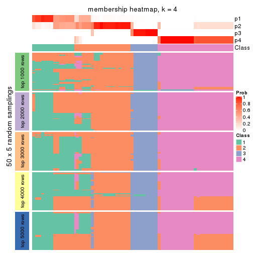
membership_heatmap(res, k = 5)

membership_heatmap(res, k = 6)
As soon as we have had the classes for columns, we can look for signatures which are significantly different between classes which can be candidate marks for certain classes. Following are the heatmaps for signatures.
Signature heatmaps where rows are scaled:
get_signatures(res, k = 2)
get_signatures(res, k = 3)
get_signatures(res, k = 4)
get_signatures(res, k = 5)
get_signatures(res, k = 6)
Signature heatmaps where rows are not scaled:
get_signatures(res, k = 2, scale_rows = FALSE)
get_signatures(res, k = 3, scale_rows = FALSE)
get_signatures(res, k = 4, scale_rows = FALSE)
get_signatures(res, k = 5, scale_rows = FALSE)
get_signatures(res, k = 6, scale_rows = FALSE)

Compare the overlap of signatures from different k:
compare_signatures(res)
get_signature() returns a data frame invisibly. TO get the list of signatures, the function
call should be assigned to a variable explicitly. In following code, if plot argument is set
to FALSE, no heatmap is plotted while only the differential analysis is performed.
# code only for demonstration
tb = get_signature(res, k = ..., plot = FALSE)
An example of the output of tb is:
#> which_row fdr mean_1 mean_2 scaled_mean_1 scaled_mean_2 km
#> 1 38 0.042760348 8.373488 9.131774 -0.5533452 0.5164555 1
#> 2 40 0.018707592 7.106213 8.469186 -0.6173731 0.5762149 1
#> 3 55 0.019134737 10.221463 11.207825 -0.6159697 0.5749050 1
#> 4 59 0.006059896 5.921854 7.869574 -0.6899429 0.6439467 1
#> 5 60 0.018055526 8.928898 10.211722 -0.6204761 0.5791110 1
#> 6 98 0.009384629 15.714769 14.887706 0.6635654 -0.6193277 2
...
The columns in tb are:
which_row: row indices corresponding to the input matrix.fdr: FDR for the differential test. mean_x: The mean value in group x.scaled_mean_x: The mean value in group x after rows are scaled.km: Row groups if k-means clustering is applied to rows.UMAP plot which shows how samples are separated.
dimension_reduction(res, k = 2, method = "UMAP")
dimension_reduction(res, k = 3, method = "UMAP")
dimension_reduction(res, k = 4, method = "UMAP")
dimension_reduction(res, k = 5, method = "UMAP")
dimension_reduction(res, k = 6, method = "UMAP")
Following heatmap shows how subgroups are split when increasing k:
collect_classes(res)
If matrix rows can be associated to genes, consider to use GO_Enrichment(res,
...) to perform function enrichment for the signature genes.
The object with results only for a single top-value method and a single partition method can be extracted as:
res = res_list["ATC", "kmeans"]
# you can also extract it by
# res = res_list["ATC:kmeans"]
A summary of res and all the functions that can be applied to it:
res
#> A 'ConsensusPartition' object with k = 2, 3, 4, 5, 6.
#> On a matrix with 16510 rows and 133 columns.
#> Top rows (1000, 2000, 3000, 4000, 5000) are extracted by 'ATC' method.
#> Subgroups are detected by 'kmeans' method.
#> Performed in total 1250 partitions by row resampling.
#> Best k for subgroups seems to be 2.
#>
#> Following methods can be applied to this 'ConsensusPartition' object:
#> [1] "cola_report" "collect_classes" "collect_plots"
#> [4] "collect_stats" "colnames" "compare_signatures"
#> [7] "consensus_heatmap" "dimension_reduction" "functional_enrichment"
#> [10] "get_anno_col" "get_anno" "get_classes"
#> [13] "get_consensus" "get_matrix" "get_membership"
#> [16] "get_param" "get_signatures" "get_stats"
#> [19] "is_best_k" "is_stable_k" "membership_heatmap"
#> [22] "ncol" "nrow" "plot_ecdf"
#> [25] "rownames" "select_partition_number" "show"
#> [28] "suggest_best_k" "test_to_known_factors"
collect_plots() function collects all the plots made from res for all k (number of partitions)
into one single page to provide an easy and fast comparison between different k.
collect_plots(res)
The plots are:
k and the heatmap of
predicted classes for each k.k.k.k.All the plots in panels can be made by individual functions and they are plotted later in this section.
select_partition_number() produces several plots showing different
statistics for choosing “optimized” k. There are following statistics:
k;k, the area increased is defined as \(A_k - A_{k-1}\).The detailed explanations of these statistics can be found in the cola vignette.
Generally speaking, lower PAC score, higher mean silhouette score or higher
concordance corresponds to better partition. Rand index and Jaccard index
measure how similar the current partition is compared to partition with k-1.
If they are too similar, we won't accept k is better than k-1.
select_partition_number(res)
The numeric values for all these statistics can be obtained by get_stats().
get_stats(res)
#> k 1-PAC mean_silhouette concordance area_increased Rand Jaccard
#> 2 2 1.000 0.990 0.996 0.4906 0.511 0.511
#> 3 3 0.621 0.780 0.861 0.2836 0.830 0.680
#> 4 4 0.587 0.724 0.757 0.1256 0.869 0.670
#> 5 5 0.670 0.669 0.733 0.0785 0.860 0.547
#> 6 6 0.713 0.665 0.745 0.0491 0.987 0.936
suggest_best_k() suggests the best \(k\) based on these statistics. The rules are as follows:
NA.suggest_best_k(res)
#> [1] 2
Following shows the table of the partitions (You need to click the show/hide
code output link to see it). The membership matrix (columns with name p*)
is inferred by
clue::cl_consensus()
function with the SE method. Basically the value in the membership matrix
represents the probability to belong to a certain group. The finall class
label for an item is determined with the group with highest probability it
belongs to.
In get_classes() function, the entropy is calculated from the membership
matrix and the silhouette score is calculated from the consensus matrix.
cbind(get_classes(res, k = 2), get_membership(res, k = 2))
#> class entropy silhouette p1 p2
#> ERR946976 1 0.000 0.992 1.000 0.000
#> ERR947001 1 0.000 0.992 1.000 0.000
#> ERR946975 2 0.000 1.000 0.000 1.000
#> ERR947000 2 0.000 1.000 0.000 1.000
#> ERR946972 1 0.000 0.992 1.000 0.000
#> ERR946997 1 0.000 0.992 1.000 0.000
#> ERR946986 1 0.000 0.992 1.000 0.000
#> ERR947011 1 0.000 0.992 1.000 0.000
#> ERR946977 1 0.000 0.992 1.000 0.000
#> ERR947002 1 0.000 0.992 1.000 0.000
#> ERR946974 1 0.000 0.992 1.000 0.000
#> ERR946999 1 0.000 0.992 1.000 0.000
#> ERR946971 1 0.000 0.992 1.000 0.000
#> ERR946996 1 0.000 0.992 1.000 0.000
#> ERR946992 2 0.000 1.000 0.000 1.000
#> ERR947017 2 0.000 1.000 0.000 1.000
#> ERR946984 1 0.000 0.992 1.000 0.000
#> ERR947009 1 0.000 0.992 1.000 0.000
#> ERR946987 2 0.000 1.000 0.000 1.000
#> ERR947012 2 0.000 1.000 0.000 1.000
#> ERR946991 2 0.000 1.000 0.000 1.000
#> ERR947016 2 0.000 1.000 0.000 1.000
#> ERR946983 2 0.000 1.000 0.000 1.000
#> ERR947008 2 0.000 1.000 0.000 1.000
#> ERR946970 1 0.000 0.992 1.000 0.000
#> ERR946995 1 0.000 0.992 1.000 0.000
#> ERR946969 1 0.000 0.992 1.000 0.000
#> ERR946994 1 0.000 0.992 1.000 0.000
#> ERR946982 2 0.000 1.000 0.000 1.000
#> ERR947007 2 0.000 1.000 0.000 1.000
#> ERR946988 1 0.000 0.992 1.000 0.000
#> ERR947013 1 0.000 0.992 1.000 0.000
#> ERR946985 1 0.000 0.992 1.000 0.000
#> ERR947010 1 0.000 0.992 1.000 0.000
#> ERR946989 1 0.000 0.992 1.000 0.000
#> ERR947014 1 0.000 0.992 1.000 0.000
#> ERR946968 1 0.000 0.992 1.000 0.000
#> ERR946993 1 0.000 0.992 1.000 0.000
#> ERR946990 1 0.000 0.992 1.000 0.000
#> ERR947015 1 0.000 0.992 1.000 0.000
#> ERR946980 1 0.000 0.992 1.000 0.000
#> ERR947005 1 0.000 0.992 1.000 0.000
#> ERR946978 1 0.000 0.992 1.000 0.000
#> ERR947003 1 0.000 0.992 1.000 0.000
#> ERR946979 2 0.000 1.000 0.000 1.000
#> ERR947004 2 0.000 1.000 0.000 1.000
#> ERR946957 1 0.000 0.992 1.000 0.000
#> ERR946962 1 0.000 0.992 1.000 0.000
#> ERR946958 1 0.000 0.992 1.000 0.000
#> ERR946963 1 0.000 0.992 1.000 0.000
#> ERR946959 1 0.000 0.992 1.000 0.000
#> ERR946964 1 0.000 0.992 1.000 0.000
#> ERR946967 1 0.000 0.992 1.000 0.000
#> ERR862690 1 0.000 0.992 1.000 0.000
#> ERR914278 2 0.000 1.000 0.000 1.000
#> ERR914314 2 0.000 1.000 0.000 1.000
#> ERR914279 1 0.000 0.992 1.000 0.000
#> ERR914315 1 0.000 0.992 1.000 0.000
#> ERR914280 2 0.000 1.000 0.000 1.000
#> ERR914316 2 0.000 1.000 0.000 1.000
#> ERR914281 2 0.000 1.000 0.000 1.000
#> ERR914317 2 0.000 1.000 0.000 1.000
#> ERR914282 2 0.000 1.000 0.000 1.000
#> ERR914318 2 0.000 1.000 0.000 1.000
#> ERR914283 1 0.000 0.992 1.000 0.000
#> ERR914319 1 0.000 0.992 1.000 0.000
#> ERR914284 1 0.000 0.992 1.000 0.000
#> ERR914320 1 0.000 0.992 1.000 0.000
#> ERR914285 1 0.000 0.992 1.000 0.000
#> ERR914321 1 0.000 0.992 1.000 0.000
#> ERR914286 2 0.000 1.000 0.000 1.000
#> ERR914322 2 0.000 1.000 0.000 1.000
#> ERR914287 1 0.000 0.992 1.000 0.000
#> ERR914323 1 0.000 0.992 1.000 0.000
#> ERR914288 2 0.000 1.000 0.000 1.000
#> ERR914324 2 0.000 1.000 0.000 1.000
#> ERR914289 1 0.000 0.992 1.000 0.000
#> ERR914290 1 0.000 0.992 1.000 0.000
#> ERR914326 1 0.000 0.992 1.000 0.000
#> ERR914291 2 0.000 1.000 0.000 1.000
#> ERR914327 2 0.000 1.000 0.000 1.000
#> ERR914292 1 0.000 0.992 1.000 0.000
#> ERR914328 1 0.000 0.992 1.000 0.000
#> ERR914293 1 0.000 0.992 1.000 0.000
#> ERR914329 1 0.000 0.992 1.000 0.000
#> ERR914294 2 0.000 1.000 0.000 1.000
#> ERR914330 2 0.000 1.000 0.000 1.000
#> ERR914295 1 0.000 0.992 1.000 0.000
#> ERR914331 1 0.000 0.992 1.000 0.000
#> ERR914296 1 0.000 0.992 1.000 0.000
#> ERR914332 1 0.000 0.992 1.000 0.000
#> ERR914297 2 0.000 1.000 0.000 1.000
#> ERR914333 2 0.000 1.000 0.000 1.000
#> ERR914298 1 0.000 0.992 1.000 0.000
#> ERR914334 1 0.000 0.992 1.000 0.000
#> ERR914299 2 0.000 1.000 0.000 1.000
#> ERR914335 2 0.000 1.000 0.000 1.000
#> ERR914300 1 0.000 0.992 1.000 0.000
#> ERR914336 1 0.000 0.992 1.000 0.000
#> ERR914301 2 0.000 1.000 0.000 1.000
#> ERR914337 2 0.000 1.000 0.000 1.000
#> ERR914302 2 0.000 1.000 0.000 1.000
#> ERR914338 2 0.000 1.000 0.000 1.000
#> ERR914303 2 0.000 1.000 0.000 1.000
#> ERR914339 2 0.000 1.000 0.000 1.000
#> ERR914304 2 0.000 1.000 0.000 1.000
#> ERR914340 2 0.000 1.000 0.000 1.000
#> ERR914305 2 0.000 1.000 0.000 1.000
#> ERR914341 2 0.000 1.000 0.000 1.000
#> ERR914306 2 0.000 1.000 0.000 1.000
#> ERR914342 2 0.000 1.000 0.000 1.000
#> ERR914307 1 0.871 0.593 0.708 0.292
#> ERR914343 1 0.871 0.593 0.708 0.292
#> ERR914308 1 0.000 0.992 1.000 0.000
#> ERR914344 1 0.000 0.992 1.000 0.000
#> ERR914309 1 0.000 0.992 1.000 0.000
#> ERR914345 1 0.000 0.992 1.000 0.000
#> ERR914310 1 0.000 0.992 1.000 0.000
#> ERR914346 1 0.000 0.992 1.000 0.000
#> ERR914311 2 0.000 1.000 0.000 1.000
#> ERR914347 2 0.000 1.000 0.000 1.000
#> ERR914312 2 0.000 1.000 0.000 1.000
#> ERR914348 2 0.000 1.000 0.000 1.000
#> ERR914313 2 0.000 1.000 0.000 1.000
#> ERR914349 2 0.000 1.000 0.000 1.000
#> ERR946960 1 0.000 0.992 1.000 0.000
#> ERR946965 1 0.000 0.992 1.000 0.000
#> ERR946966 2 0.000 1.000 0.000 1.000
#> ERR946973 1 0.000 0.992 1.000 0.000
#> ERR946998 1 0.000 0.992 1.000 0.000
#> ERR946981 2 0.000 1.000 0.000 1.000
#> ERR947006 2 0.000 1.000 0.000 1.000
#> ERR914325 1 0.000 0.992 1.000 0.000
cbind(get_classes(res, k = 3), get_membership(res, k = 3))
#> class entropy silhouette p1 p2 p3
#> ERR946976 3 0.4654 0.923 0.208 0.000 0.792
#> ERR947001 3 0.4654 0.923 0.208 0.000 0.792
#> ERR946975 2 0.0892 0.937 0.000 0.980 0.020
#> ERR947000 2 0.0892 0.937 0.000 0.980 0.020
#> ERR946972 3 0.5016 0.891 0.240 0.000 0.760
#> ERR946997 3 0.5016 0.891 0.240 0.000 0.760
#> ERR946986 1 0.3412 0.740 0.876 0.000 0.124
#> ERR947011 1 0.3412 0.740 0.876 0.000 0.124
#> ERR946977 1 0.3482 0.737 0.872 0.000 0.128
#> ERR947002 1 0.3482 0.737 0.872 0.000 0.128
#> ERR946974 1 0.1643 0.778 0.956 0.000 0.044
#> ERR946999 1 0.0237 0.782 0.996 0.000 0.004
#> ERR946971 3 0.4654 0.923 0.208 0.000 0.792
#> ERR946996 3 0.4654 0.923 0.208 0.000 0.792
#> ERR946992 2 0.3752 0.915 0.000 0.856 0.144
#> ERR947017 2 0.3752 0.915 0.000 0.856 0.144
#> ERR946984 1 0.3482 0.737 0.872 0.000 0.128
#> ERR947009 1 0.3482 0.737 0.872 0.000 0.128
#> ERR946987 2 0.4712 0.894 0.044 0.848 0.108
#> ERR947012 2 0.4712 0.894 0.044 0.848 0.108
#> ERR946991 2 0.3619 0.918 0.000 0.864 0.136
#> ERR947016 2 0.3619 0.918 0.000 0.864 0.136
#> ERR946983 2 0.2261 0.938 0.000 0.932 0.068
#> ERR947008 2 0.2261 0.938 0.000 0.932 0.068
#> ERR946970 1 0.5216 0.582 0.740 0.000 0.260
#> ERR946995 1 0.5216 0.582 0.740 0.000 0.260
#> ERR946969 1 0.3267 0.741 0.884 0.000 0.116
#> ERR946994 1 0.3267 0.741 0.884 0.000 0.116
#> ERR946982 2 0.4002 0.910 0.000 0.840 0.160
#> ERR947007 2 0.4002 0.910 0.000 0.840 0.160
#> ERR946988 1 0.4418 0.731 0.848 0.020 0.132
#> ERR947013 1 0.4418 0.731 0.848 0.020 0.132
#> ERR946985 1 0.5597 0.653 0.764 0.020 0.216
#> ERR947010 1 0.5597 0.653 0.764 0.020 0.216
#> ERR946989 1 0.4346 0.691 0.816 0.000 0.184
#> ERR947014 1 0.4346 0.691 0.816 0.000 0.184
#> ERR946968 3 0.4654 0.923 0.208 0.000 0.792
#> ERR946993 3 0.4654 0.923 0.208 0.000 0.792
#> ERR946990 1 0.3267 0.741 0.884 0.000 0.116
#> ERR947015 1 0.3267 0.741 0.884 0.000 0.116
#> ERR946980 1 0.3690 0.756 0.884 0.016 0.100
#> ERR947005 1 0.3091 0.768 0.912 0.016 0.072
#> ERR946978 1 0.6286 -0.274 0.536 0.000 0.464
#> ERR947003 1 0.6286 -0.274 0.536 0.000 0.464
#> ERR946979 2 0.4062 0.909 0.000 0.836 0.164
#> ERR947004 2 0.4062 0.909 0.000 0.836 0.164
#> ERR946957 3 0.4654 0.923 0.208 0.000 0.792
#> ERR946962 3 0.4654 0.923 0.208 0.000 0.792
#> ERR946958 3 0.4796 0.914 0.220 0.000 0.780
#> ERR946963 3 0.4796 0.914 0.220 0.000 0.780
#> ERR946959 1 0.6225 -0.148 0.568 0.000 0.432
#> ERR946964 1 0.6225 -0.148 0.568 0.000 0.432
#> ERR946967 3 0.6168 0.626 0.412 0.000 0.588
#> ERR862690 3 0.6168 0.626 0.412 0.000 0.588
#> ERR914278 2 0.1031 0.937 0.000 0.976 0.024
#> ERR914314 2 0.1031 0.937 0.000 0.976 0.024
#> ERR914279 1 0.4931 0.564 0.768 0.000 0.232
#> ERR914315 1 0.4931 0.564 0.768 0.000 0.232
#> ERR914280 2 0.1031 0.937 0.000 0.976 0.024
#> ERR914316 2 0.1031 0.937 0.000 0.976 0.024
#> ERR914281 2 0.4002 0.910 0.000 0.840 0.160
#> ERR914317 2 0.4002 0.910 0.000 0.840 0.160
#> ERR914282 2 0.1031 0.937 0.000 0.976 0.024
#> ERR914318 2 0.1031 0.937 0.000 0.976 0.024
#> ERR914283 3 0.6244 0.561 0.440 0.000 0.560
#> ERR914319 3 0.6244 0.561 0.440 0.000 0.560
#> ERR914284 1 0.3619 0.715 0.864 0.000 0.136
#> ERR914320 1 0.3619 0.715 0.864 0.000 0.136
#> ERR914285 1 0.1753 0.778 0.952 0.000 0.048
#> ERR914321 1 0.1753 0.778 0.952 0.000 0.048
#> ERR914286 2 0.1031 0.937 0.000 0.976 0.024
#> ERR914322 2 0.1031 0.937 0.000 0.976 0.024
#> ERR914287 1 0.2261 0.777 0.932 0.000 0.068
#> ERR914323 1 0.2261 0.777 0.932 0.000 0.068
#> ERR914288 1 0.5643 0.559 0.760 0.220 0.020
#> ERR914324 1 0.5643 0.559 0.760 0.220 0.020
#> ERR914289 1 0.0000 0.782 1.000 0.000 0.000
#> ERR914290 1 0.2496 0.777 0.928 0.004 0.068
#> ERR914326 1 0.2496 0.777 0.928 0.004 0.068
#> ERR914291 2 0.0892 0.937 0.000 0.980 0.020
#> ERR914327 2 0.0892 0.937 0.000 0.980 0.020
#> ERR914292 1 0.0424 0.783 0.992 0.000 0.008
#> ERR914328 1 0.0747 0.783 0.984 0.000 0.016
#> ERR914293 1 0.1860 0.778 0.948 0.000 0.052
#> ERR914329 1 0.1860 0.778 0.948 0.000 0.052
#> ERR914294 2 0.1163 0.937 0.000 0.972 0.028
#> ERR914330 2 0.1163 0.937 0.000 0.972 0.028
#> ERR914295 1 0.3619 0.715 0.864 0.000 0.136
#> ERR914331 1 0.3619 0.715 0.864 0.000 0.136
#> ERR914296 1 0.2066 0.778 0.940 0.000 0.060
#> ERR914332 1 0.2066 0.778 0.940 0.000 0.060
#> ERR914297 2 0.4446 0.835 0.112 0.856 0.032
#> ERR914333 2 0.4446 0.835 0.112 0.856 0.032
#> ERR914298 1 0.6260 -0.172 0.552 0.000 0.448
#> ERR914334 1 0.6260 -0.172 0.552 0.000 0.448
#> ERR914299 2 0.1163 0.936 0.000 0.972 0.028
#> ERR914335 2 0.1163 0.936 0.000 0.972 0.028
#> ERR914300 1 0.2496 0.777 0.928 0.004 0.068
#> ERR914336 1 0.2496 0.777 0.928 0.004 0.068
#> ERR914301 2 0.1163 0.939 0.000 0.972 0.028
#> ERR914337 2 0.1163 0.939 0.000 0.972 0.028
#> ERR914302 2 0.1289 0.938 0.000 0.968 0.032
#> ERR914338 2 0.1289 0.938 0.000 0.968 0.032
#> ERR914303 2 0.2448 0.936 0.000 0.924 0.076
#> ERR914339 2 0.2448 0.936 0.000 0.924 0.076
#> ERR914304 2 0.1411 0.940 0.000 0.964 0.036
#> ERR914340 2 0.1411 0.940 0.000 0.964 0.036
#> ERR914305 2 0.2448 0.936 0.000 0.924 0.076
#> ERR914341 2 0.2448 0.936 0.000 0.924 0.076
#> ERR914306 2 0.2537 0.936 0.000 0.920 0.080
#> ERR914342 2 0.2537 0.936 0.000 0.920 0.080
#> ERR914307 1 0.5147 0.602 0.800 0.180 0.020
#> ERR914343 1 0.5147 0.602 0.800 0.180 0.020
#> ERR914308 1 0.2165 0.778 0.936 0.000 0.064
#> ERR914344 1 0.2165 0.778 0.936 0.000 0.064
#> ERR914309 1 0.1860 0.778 0.948 0.000 0.052
#> ERR914345 1 0.1860 0.778 0.948 0.000 0.052
#> ERR914310 1 0.1163 0.782 0.972 0.000 0.028
#> ERR914346 1 0.1163 0.782 0.972 0.000 0.028
#> ERR914311 2 0.2165 0.938 0.000 0.936 0.064
#> ERR914347 2 0.2165 0.938 0.000 0.936 0.064
#> ERR914312 2 0.0747 0.938 0.000 0.984 0.016
#> ERR914348 2 0.0747 0.938 0.000 0.984 0.016
#> ERR914313 2 0.4002 0.910 0.000 0.840 0.160
#> ERR914349 2 0.4002 0.910 0.000 0.840 0.160
#> ERR946960 3 0.4654 0.923 0.208 0.000 0.792
#> ERR946965 3 0.4654 0.923 0.208 0.000 0.792
#> ERR946966 1 0.5639 0.551 0.752 0.232 0.016
#> ERR946973 3 0.4654 0.923 0.208 0.000 0.792
#> ERR946998 3 0.4654 0.923 0.208 0.000 0.792
#> ERR946981 2 0.3619 0.918 0.000 0.864 0.136
#> ERR947006 2 0.3619 0.918 0.000 0.864 0.136
#> ERR914325 1 0.0000 0.782 1.000 0.000 0.000
cbind(get_classes(res, k = 4), get_membership(res, k = 4))
#> class entropy silhouette p1 p2 p3 p4
#> ERR946976 3 0.2760 0.9378 0.128 0.000 0.872 0.000
#> ERR947001 3 0.2760 0.9378 0.128 0.000 0.872 0.000
#> ERR946975 4 0.2307 0.8427 0.016 0.048 0.008 0.928
#> ERR947000 4 0.2307 0.8427 0.016 0.048 0.008 0.928
#> ERR946972 3 0.3521 0.9124 0.084 0.052 0.864 0.000
#> ERR946997 3 0.3521 0.9124 0.084 0.052 0.864 0.000
#> ERR946986 2 0.6242 0.8055 0.424 0.520 0.056 0.000
#> ERR947011 2 0.6242 0.8055 0.424 0.520 0.056 0.000
#> ERR946977 2 0.6458 0.8024 0.408 0.520 0.072 0.000
#> ERR947002 2 0.6458 0.8024 0.408 0.520 0.072 0.000
#> ERR946974 2 0.5792 0.7645 0.456 0.520 0.016 0.008
#> ERR946999 2 0.5580 0.7490 0.464 0.520 0.008 0.008
#> ERR946971 3 0.2928 0.9379 0.108 0.012 0.880 0.000
#> ERR946996 3 0.2928 0.9379 0.108 0.012 0.880 0.000
#> ERR946992 4 0.5596 0.7902 0.000 0.332 0.036 0.632
#> ERR947017 4 0.5596 0.7902 0.000 0.332 0.036 0.632
#> ERR946984 2 0.6400 0.8048 0.408 0.524 0.068 0.000
#> ERR947009 2 0.6400 0.8048 0.408 0.524 0.068 0.000
#> ERR946987 2 0.5833 -0.3861 0.004 0.572 0.028 0.396
#> ERR947012 2 0.5833 -0.3861 0.004 0.572 0.028 0.396
#> ERR946991 4 0.5328 0.8063 0.000 0.248 0.048 0.704
#> ERR947016 4 0.5328 0.8063 0.000 0.248 0.048 0.704
#> ERR946983 4 0.4446 0.8321 0.000 0.196 0.028 0.776
#> ERR947008 4 0.4446 0.8321 0.000 0.196 0.028 0.776
#> ERR946970 2 0.7404 0.6260 0.348 0.476 0.176 0.000
#> ERR946995 2 0.7404 0.6260 0.348 0.476 0.176 0.000
#> ERR946969 2 0.6242 0.8055 0.424 0.520 0.056 0.000
#> ERR946994 2 0.6242 0.8055 0.424 0.520 0.056 0.000
#> ERR946982 4 0.5600 0.7777 0.000 0.376 0.028 0.596
#> ERR947007 4 0.5600 0.7777 0.000 0.376 0.028 0.596
#> ERR946988 2 0.6644 0.7978 0.396 0.536 0.052 0.016
#> ERR947013 2 0.6673 0.7958 0.396 0.536 0.048 0.020
#> ERR946985 2 0.5947 0.6907 0.308 0.640 0.044 0.008
#> ERR947010 2 0.5947 0.6907 0.308 0.640 0.044 0.008
#> ERR946989 2 0.6875 0.7630 0.368 0.520 0.112 0.000
#> ERR947014 2 0.6875 0.7630 0.368 0.520 0.112 0.000
#> ERR946968 3 0.2760 0.9378 0.128 0.000 0.872 0.000
#> ERR946993 3 0.2760 0.9378 0.128 0.000 0.872 0.000
#> ERR946990 2 0.6242 0.8055 0.424 0.520 0.056 0.000
#> ERR947015 2 0.6242 0.8055 0.424 0.520 0.056 0.000
#> ERR946980 2 0.5985 0.7762 0.440 0.528 0.020 0.012
#> ERR947005 2 0.5985 0.7762 0.440 0.528 0.020 0.012
#> ERR946978 1 0.4456 0.5319 0.716 0.004 0.280 0.000
#> ERR947003 1 0.4456 0.5319 0.716 0.004 0.280 0.000
#> ERR946979 4 0.6074 0.7698 0.000 0.340 0.060 0.600
#> ERR947004 4 0.6074 0.7698 0.000 0.340 0.060 0.600
#> ERR946957 3 0.2928 0.9379 0.108 0.012 0.880 0.000
#> ERR946962 3 0.2928 0.9379 0.108 0.012 0.880 0.000
#> ERR946958 3 0.2868 0.9307 0.136 0.000 0.864 0.000
#> ERR946963 3 0.2921 0.9275 0.140 0.000 0.860 0.000
#> ERR946959 1 0.3831 0.6356 0.792 0.004 0.204 0.000
#> ERR946964 1 0.3831 0.6356 0.792 0.004 0.204 0.000
#> ERR946967 3 0.6463 0.6041 0.160 0.196 0.644 0.000
#> ERR862690 3 0.6463 0.6041 0.160 0.196 0.644 0.000
#> ERR914278 4 0.2635 0.8381 0.016 0.072 0.004 0.908
#> ERR914314 4 0.2635 0.8381 0.016 0.072 0.004 0.908
#> ERR914279 1 0.3105 0.6836 0.856 0.004 0.140 0.000
#> ERR914315 1 0.3105 0.6836 0.856 0.004 0.140 0.000
#> ERR914280 4 0.2561 0.8383 0.016 0.068 0.004 0.912
#> ERR914316 4 0.2561 0.8383 0.016 0.068 0.004 0.912
#> ERR914281 4 0.5855 0.7757 0.000 0.356 0.044 0.600
#> ERR914317 4 0.5855 0.7757 0.000 0.356 0.044 0.600
#> ERR914282 4 0.0927 0.8411 0.016 0.008 0.000 0.976
#> ERR914318 4 0.0927 0.8411 0.016 0.008 0.000 0.976
#> ERR914283 1 0.4697 0.3545 0.644 0.000 0.356 0.000
#> ERR914319 1 0.4697 0.3545 0.644 0.000 0.356 0.000
#> ERR914284 1 0.2676 0.7031 0.896 0.012 0.092 0.000
#> ERR914320 1 0.2676 0.7031 0.896 0.012 0.092 0.000
#> ERR914285 2 0.5788 0.7671 0.452 0.524 0.016 0.008
#> ERR914321 2 0.5788 0.7671 0.452 0.524 0.016 0.008
#> ERR914286 4 0.2328 0.8395 0.016 0.056 0.004 0.924
#> ERR914322 4 0.2328 0.8395 0.016 0.056 0.004 0.924
#> ERR914287 1 0.0992 0.7173 0.976 0.012 0.004 0.008
#> ERR914323 1 0.0992 0.7173 0.976 0.012 0.004 0.008
#> ERR914288 1 0.6604 0.3886 0.644 0.160 0.004 0.192
#> ERR914324 1 0.6604 0.3886 0.644 0.160 0.004 0.192
#> ERR914289 1 0.4500 0.0290 0.684 0.316 0.000 0.000
#> ERR914290 1 0.1247 0.7141 0.968 0.012 0.004 0.016
#> ERR914326 1 0.1247 0.7141 0.968 0.012 0.004 0.016
#> ERR914291 4 0.1114 0.8406 0.016 0.008 0.004 0.972
#> ERR914327 4 0.1114 0.8406 0.016 0.008 0.004 0.972
#> ERR914292 1 0.4356 0.1442 0.708 0.292 0.000 0.000
#> ERR914328 1 0.3764 0.4015 0.784 0.216 0.000 0.000
#> ERR914293 1 0.0592 0.7189 0.984 0.000 0.016 0.000
#> ERR914329 1 0.0592 0.7189 0.984 0.000 0.016 0.000
#> ERR914294 4 0.2981 0.8383 0.016 0.092 0.004 0.888
#> ERR914330 4 0.2981 0.8383 0.016 0.092 0.004 0.888
#> ERR914295 1 0.2266 0.7082 0.912 0.004 0.084 0.000
#> ERR914331 1 0.2266 0.7082 0.912 0.004 0.084 0.000
#> ERR914296 1 0.0672 0.7226 0.984 0.008 0.008 0.000
#> ERR914332 1 0.0672 0.7226 0.984 0.008 0.008 0.000
#> ERR914297 4 0.5876 0.5578 0.244 0.044 0.020 0.692
#> ERR914333 4 0.5876 0.5578 0.244 0.044 0.020 0.692
#> ERR914298 1 0.4436 0.6071 0.764 0.020 0.216 0.000
#> ERR914334 1 0.4436 0.6071 0.764 0.020 0.216 0.000
#> ERR914299 4 0.0927 0.8411 0.016 0.008 0.000 0.976
#> ERR914335 4 0.0927 0.8411 0.016 0.008 0.000 0.976
#> ERR914300 1 0.1247 0.7141 0.968 0.012 0.004 0.016
#> ERR914336 1 0.1247 0.7141 0.968 0.012 0.004 0.016
#> ERR914301 4 0.2943 0.8397 0.000 0.076 0.032 0.892
#> ERR914337 4 0.2943 0.8397 0.000 0.076 0.032 0.892
#> ERR914302 4 0.2915 0.8388 0.016 0.088 0.004 0.892
#> ERR914338 4 0.2915 0.8388 0.016 0.088 0.004 0.892
#> ERR914303 4 0.4719 0.8268 0.000 0.180 0.048 0.772
#> ERR914339 4 0.4719 0.8268 0.000 0.180 0.048 0.772
#> ERR914304 4 0.2473 0.8489 0.000 0.080 0.012 0.908
#> ERR914340 4 0.2473 0.8489 0.000 0.080 0.012 0.908
#> ERR914305 4 0.4719 0.8268 0.000 0.180 0.048 0.772
#> ERR914341 4 0.4719 0.8268 0.000 0.180 0.048 0.772
#> ERR914306 4 0.5102 0.8213 0.000 0.188 0.064 0.748
#> ERR914342 4 0.5102 0.8213 0.000 0.188 0.064 0.748
#> ERR914307 1 0.6100 0.3204 0.680 0.216 0.004 0.100
#> ERR914343 1 0.6100 0.3204 0.680 0.216 0.004 0.100
#> ERR914308 1 0.0469 0.7179 0.988 0.012 0.000 0.000
#> ERR914344 1 0.0469 0.7179 0.988 0.012 0.000 0.000
#> ERR914309 1 0.0779 0.7129 0.980 0.016 0.004 0.000
#> ERR914345 1 0.0779 0.7129 0.980 0.016 0.004 0.000
#> ERR914310 1 0.3444 0.4711 0.816 0.184 0.000 0.000
#> ERR914346 1 0.3400 0.4770 0.820 0.180 0.000 0.000
#> ERR914311 4 0.3497 0.8437 0.000 0.124 0.024 0.852
#> ERR914347 4 0.3497 0.8437 0.000 0.124 0.024 0.852
#> ERR914312 4 0.1356 0.8467 0.008 0.032 0.000 0.960
#> ERR914348 4 0.1356 0.8467 0.008 0.032 0.000 0.960
#> ERR914313 4 0.5659 0.7771 0.000 0.368 0.032 0.600
#> ERR914349 4 0.5659 0.7771 0.000 0.368 0.032 0.600
#> ERR946960 3 0.2760 0.9378 0.128 0.000 0.872 0.000
#> ERR946965 3 0.2760 0.9378 0.128 0.000 0.872 0.000
#> ERR946966 1 0.6636 0.3724 0.636 0.144 0.004 0.216
#> ERR946973 3 0.2928 0.9379 0.108 0.012 0.880 0.000
#> ERR946998 3 0.2928 0.9379 0.108 0.012 0.880 0.000
#> ERR946981 4 0.5358 0.8049 0.000 0.252 0.048 0.700
#> ERR947006 4 0.5358 0.8049 0.000 0.252 0.048 0.700
#> ERR914325 1 0.4454 0.0711 0.692 0.308 0.000 0.000
cbind(get_classes(res, k = 5), get_membership(res, k = 5))
#> class entropy silhouette p1 p2 p3 p4 p5
#> ERR946976 3 0.4202 0.88812 0.076 0.000 0.816 0.060 0.048
#> ERR947001 3 0.4202 0.88812 0.076 0.000 0.816 0.060 0.048
#> ERR946975 4 0.4791 0.68007 0.016 0.360 0.000 0.616 0.008
#> ERR947000 4 0.4791 0.68007 0.016 0.360 0.000 0.616 0.008
#> ERR946972 3 0.2139 0.88938 0.000 0.000 0.916 0.032 0.052
#> ERR946997 3 0.2139 0.88938 0.000 0.000 0.916 0.032 0.052
#> ERR946986 5 0.1012 0.85376 0.000 0.000 0.020 0.012 0.968
#> ERR947011 5 0.1012 0.85376 0.000 0.000 0.020 0.012 0.968
#> ERR946977 5 0.1278 0.85218 0.004 0.000 0.020 0.016 0.960
#> ERR947002 5 0.1278 0.85218 0.004 0.000 0.020 0.016 0.960
#> ERR946974 5 0.1310 0.84193 0.024 0.000 0.000 0.020 0.956
#> ERR946999 5 0.1399 0.83910 0.028 0.000 0.000 0.020 0.952
#> ERR946971 3 0.1682 0.89901 0.012 0.000 0.940 0.004 0.044
#> ERR946996 3 0.1682 0.89901 0.012 0.000 0.940 0.004 0.044
#> ERR946992 2 0.3465 0.61577 0.024 0.844 0.012 0.116 0.004
#> ERR947017 2 0.3465 0.61577 0.024 0.844 0.012 0.116 0.004
#> ERR946984 5 0.1012 0.85376 0.000 0.000 0.020 0.012 0.968
#> ERR947009 5 0.1012 0.85376 0.000 0.000 0.020 0.012 0.968
#> ERR946987 2 0.7426 0.19320 0.032 0.444 0.008 0.200 0.316
#> ERR947012 2 0.7426 0.19320 0.032 0.444 0.008 0.200 0.316
#> ERR946991 2 0.2645 0.64494 0.012 0.884 0.008 0.096 0.000
#> ERR947016 2 0.2645 0.64494 0.012 0.884 0.008 0.096 0.000
#> ERR946983 2 0.3972 0.56609 0.020 0.780 0.012 0.188 0.000
#> ERR947008 2 0.3972 0.56609 0.020 0.780 0.012 0.188 0.000
#> ERR946970 5 0.4295 0.72477 0.092 0.000 0.048 0.052 0.808
#> ERR946995 5 0.4295 0.72477 0.092 0.000 0.048 0.052 0.808
#> ERR946969 5 0.0771 0.85433 0.000 0.000 0.020 0.004 0.976
#> ERR946994 5 0.0771 0.85433 0.000 0.000 0.020 0.004 0.976
#> ERR946982 2 0.2276 0.64337 0.028 0.920 0.004 0.040 0.008
#> ERR947007 2 0.2276 0.64337 0.028 0.920 0.004 0.040 0.008
#> ERR946988 5 0.0898 0.85333 0.000 0.000 0.008 0.020 0.972
#> ERR947013 5 0.0992 0.85241 0.000 0.000 0.008 0.024 0.968
#> ERR946985 5 0.2651 0.80681 0.016 0.028 0.012 0.036 0.908
#> ERR947010 5 0.2651 0.80681 0.016 0.028 0.012 0.036 0.908
#> ERR946989 5 0.1461 0.84686 0.004 0.000 0.028 0.016 0.952
#> ERR947014 5 0.1461 0.84686 0.004 0.000 0.028 0.016 0.952
#> ERR946968 3 0.3952 0.89383 0.064 0.000 0.832 0.056 0.048
#> ERR946993 3 0.3952 0.89383 0.064 0.000 0.832 0.056 0.048
#> ERR946990 5 0.0932 0.85457 0.004 0.000 0.020 0.004 0.972
#> ERR947015 5 0.0932 0.85457 0.004 0.000 0.020 0.004 0.972
#> ERR946980 5 0.1211 0.84707 0.016 0.000 0.000 0.024 0.960
#> ERR947005 5 0.1211 0.84707 0.016 0.000 0.000 0.024 0.960
#> ERR946978 1 0.4864 0.77477 0.772 0.000 0.092 0.056 0.080
#> ERR947003 1 0.4864 0.77477 0.772 0.000 0.092 0.056 0.080
#> ERR946979 2 0.1179 0.64676 0.016 0.964 0.004 0.016 0.000
#> ERR947004 2 0.1179 0.64676 0.016 0.964 0.004 0.016 0.000
#> ERR946957 3 0.1695 0.89851 0.008 0.000 0.940 0.008 0.044
#> ERR946962 3 0.1695 0.89851 0.008 0.000 0.940 0.008 0.044
#> ERR946958 3 0.4822 0.85367 0.124 0.000 0.768 0.060 0.048
#> ERR946963 3 0.4738 0.84085 0.136 0.000 0.768 0.060 0.036
#> ERR946959 1 0.4579 0.79404 0.792 0.000 0.068 0.056 0.084
#> ERR946964 1 0.4579 0.79404 0.792 0.000 0.068 0.056 0.084
#> ERR946967 3 0.4968 0.57636 0.004 0.000 0.652 0.044 0.300
#> ERR862690 3 0.4968 0.57636 0.004 0.000 0.652 0.044 0.300
#> ERR914278 4 0.4770 0.66830 0.008 0.384 0.000 0.596 0.012
#> ERR914314 4 0.4770 0.66830 0.008 0.384 0.000 0.596 0.012
#> ERR914279 1 0.4341 0.81011 0.800 0.000 0.044 0.044 0.112
#> ERR914315 1 0.4341 0.81011 0.800 0.000 0.044 0.044 0.112
#> ERR914280 4 0.4594 0.67980 0.008 0.360 0.000 0.624 0.008
#> ERR914316 4 0.4594 0.67980 0.008 0.360 0.000 0.624 0.008
#> ERR914281 2 0.1869 0.64791 0.028 0.936 0.000 0.028 0.008
#> ERR914317 2 0.1869 0.64791 0.028 0.936 0.000 0.028 0.008
#> ERR914282 4 0.4724 0.64271 0.008 0.392 0.004 0.592 0.004
#> ERR914318 4 0.4724 0.64271 0.008 0.392 0.004 0.592 0.004
#> ERR914283 1 0.4841 0.71898 0.764 0.000 0.132 0.060 0.044
#> ERR914319 1 0.4841 0.71898 0.764 0.000 0.132 0.060 0.044
#> ERR914284 1 0.4198 0.83395 0.784 0.000 0.020 0.032 0.164
#> ERR914320 1 0.4198 0.83395 0.784 0.000 0.020 0.032 0.164
#> ERR914285 5 0.1310 0.84208 0.020 0.000 0.000 0.024 0.956
#> ERR914321 5 0.1310 0.84208 0.020 0.000 0.000 0.024 0.956
#> ERR914286 4 0.4633 0.67747 0.008 0.372 0.000 0.612 0.008
#> ERR914322 4 0.4633 0.67747 0.008 0.372 0.000 0.612 0.008
#> ERR914287 1 0.4571 0.83505 0.736 0.000 0.000 0.076 0.188
#> ERR914323 1 0.4571 0.83505 0.736 0.000 0.000 0.076 0.188
#> ERR914288 4 0.6674 -0.12277 0.300 0.008 0.000 0.488 0.204
#> ERR914324 4 0.6674 -0.12277 0.300 0.008 0.000 0.488 0.204
#> ERR914289 5 0.4547 0.49226 0.252 0.000 0.000 0.044 0.704
#> ERR914290 1 0.4627 0.83527 0.732 0.000 0.000 0.080 0.188
#> ERR914326 1 0.4627 0.83527 0.732 0.000 0.000 0.080 0.188
#> ERR914291 4 0.4449 0.65613 0.004 0.388 0.000 0.604 0.004
#> ERR914327 4 0.4449 0.65613 0.004 0.388 0.000 0.604 0.004
#> ERR914292 5 0.4728 0.39689 0.296 0.000 0.000 0.040 0.664
#> ERR914328 5 0.5188 -0.06533 0.416 0.000 0.000 0.044 0.540
#> ERR914293 1 0.3513 0.83995 0.800 0.000 0.000 0.020 0.180
#> ERR914329 1 0.3513 0.83995 0.800 0.000 0.000 0.020 0.180
#> ERR914294 4 0.5080 0.64635 0.020 0.396 0.000 0.572 0.012
#> ERR914330 4 0.5080 0.64635 0.020 0.396 0.000 0.572 0.012
#> ERR914295 1 0.3780 0.83196 0.812 0.000 0.020 0.020 0.148
#> ERR914331 1 0.3780 0.83196 0.812 0.000 0.020 0.020 0.148
#> ERR914296 1 0.4627 0.83870 0.732 0.000 0.000 0.080 0.188
#> ERR914332 1 0.4627 0.83870 0.732 0.000 0.000 0.080 0.188
#> ERR914297 4 0.5546 0.40847 0.160 0.132 0.008 0.692 0.008
#> ERR914333 4 0.5546 0.40847 0.160 0.132 0.008 0.692 0.008
#> ERR914298 1 0.4792 0.74944 0.776 0.000 0.068 0.100 0.056
#> ERR914334 1 0.4792 0.74944 0.776 0.000 0.068 0.100 0.056
#> ERR914299 4 0.4666 0.64127 0.012 0.388 0.004 0.596 0.000
#> ERR914335 4 0.4666 0.64127 0.012 0.388 0.004 0.596 0.000
#> ERR914300 1 0.4627 0.83527 0.732 0.000 0.000 0.080 0.188
#> ERR914336 1 0.4627 0.83527 0.732 0.000 0.000 0.080 0.188
#> ERR914301 4 0.5790 0.33307 0.048 0.424 0.020 0.508 0.000
#> ERR914337 4 0.5790 0.33307 0.048 0.424 0.020 0.508 0.000
#> ERR914302 4 0.4852 0.65748 0.016 0.380 0.000 0.596 0.008
#> ERR914338 4 0.4852 0.65748 0.016 0.380 0.000 0.596 0.008
#> ERR914303 2 0.5043 0.47842 0.040 0.688 0.020 0.252 0.000
#> ERR914339 2 0.5043 0.47842 0.040 0.688 0.020 0.252 0.000
#> ERR914304 2 0.4997 0.00282 0.020 0.568 0.008 0.404 0.000
#> ERR914340 2 0.4997 0.00282 0.020 0.568 0.008 0.404 0.000
#> ERR914305 2 0.5043 0.47842 0.040 0.688 0.020 0.252 0.000
#> ERR914341 2 0.5043 0.47842 0.040 0.688 0.020 0.252 0.000
#> ERR914306 2 0.5358 0.46991 0.048 0.660 0.024 0.268 0.000
#> ERR914342 2 0.5358 0.46991 0.048 0.660 0.024 0.268 0.000
#> ERR914307 5 0.6649 0.05994 0.268 0.000 0.000 0.284 0.448
#> ERR914343 5 0.6649 0.05994 0.268 0.000 0.000 0.284 0.448
#> ERR914308 1 0.4547 0.83570 0.736 0.000 0.000 0.072 0.192
#> ERR914344 1 0.4547 0.83570 0.736 0.000 0.000 0.072 0.192
#> ERR914309 1 0.4547 0.83570 0.736 0.000 0.000 0.072 0.192
#> ERR914345 1 0.4547 0.83570 0.736 0.000 0.000 0.072 0.192
#> ERR914310 1 0.5729 0.46434 0.516 0.000 0.000 0.088 0.396
#> ERR914346 1 0.5723 0.47516 0.520 0.000 0.000 0.088 0.392
#> ERR914311 2 0.4826 0.33133 0.024 0.644 0.008 0.324 0.000
#> ERR914347 2 0.4826 0.33133 0.024 0.644 0.008 0.324 0.000
#> ERR914312 4 0.4655 0.66160 0.012 0.384 0.000 0.600 0.004
#> ERR914348 4 0.4655 0.66160 0.012 0.384 0.000 0.600 0.004
#> ERR914313 2 0.2361 0.64183 0.032 0.916 0.004 0.040 0.008
#> ERR914349 2 0.2361 0.64183 0.032 0.916 0.004 0.040 0.008
#> ERR946960 3 0.4195 0.88798 0.080 0.000 0.816 0.056 0.048
#> ERR946965 3 0.4195 0.88798 0.080 0.000 0.816 0.056 0.048
#> ERR946966 4 0.6364 0.08764 0.232 0.008 0.000 0.560 0.200
#> ERR946973 3 0.1695 0.89851 0.008 0.000 0.940 0.008 0.044
#> ERR946998 3 0.1695 0.89851 0.008 0.000 0.940 0.008 0.044
#> ERR946981 2 0.2589 0.64484 0.012 0.888 0.008 0.092 0.000
#> ERR947006 2 0.2589 0.64484 0.012 0.888 0.008 0.092 0.000
#> ERR914325 5 0.4735 0.41710 0.284 0.000 0.000 0.044 0.672
cbind(get_classes(res, k = 6), get_membership(res, k = 6))
#> class entropy silhouette p1 p2 p3 p4 p5 p6
#> ERR946976 3 0.2219 0.8422 0.020 0.000 0.916 0.012 0.016 NA
#> ERR947001 3 0.2219 0.8422 0.020 0.000 0.916 0.012 0.016 NA
#> ERR946975 4 0.4843 0.6835 0.016 0.212 0.004 0.692 0.000 NA
#> ERR947000 4 0.4843 0.6835 0.016 0.212 0.004 0.692 0.000 NA
#> ERR946972 3 0.3300 0.8540 0.004 0.000 0.816 0.020 0.008 NA
#> ERR946997 3 0.3300 0.8540 0.004 0.000 0.816 0.020 0.008 NA
#> ERR946986 5 0.1849 0.8745 0.008 0.000 0.008 0.032 0.932 NA
#> ERR947011 5 0.1849 0.8745 0.008 0.000 0.008 0.032 0.932 NA
#> ERR946977 5 0.2024 0.8730 0.008 0.000 0.012 0.036 0.924 NA
#> ERR947002 5 0.2024 0.8730 0.008 0.000 0.012 0.036 0.924 NA
#> ERR946974 5 0.1332 0.8715 0.012 0.000 0.000 0.028 0.952 NA
#> ERR946999 5 0.1409 0.8704 0.012 0.000 0.000 0.032 0.948 NA
#> ERR946971 3 0.2957 0.8616 0.008 0.000 0.836 0.016 0.000 NA
#> ERR946996 3 0.2957 0.8616 0.008 0.000 0.836 0.016 0.000 NA
#> ERR946992 2 0.4732 0.5818 0.000 0.700 0.000 0.128 0.008 NA
#> ERR947017 2 0.4732 0.5818 0.000 0.700 0.000 0.128 0.008 NA
#> ERR946984 5 0.2034 0.8726 0.008 0.000 0.012 0.032 0.924 NA
#> ERR947009 5 0.2034 0.8726 0.008 0.000 0.012 0.032 0.924 NA
#> ERR946987 2 0.7656 0.2598 0.004 0.364 0.000 0.236 0.204 NA
#> ERR947012 2 0.7656 0.2598 0.004 0.364 0.000 0.236 0.204 NA
#> ERR946991 2 0.3215 0.6371 0.000 0.828 0.000 0.072 0.000 NA
#> ERR947016 2 0.3215 0.6371 0.000 0.828 0.000 0.072 0.000 NA
#> ERR946983 2 0.4281 0.5918 0.000 0.732 0.000 0.136 0.000 NA
#> ERR947008 2 0.4281 0.5918 0.000 0.732 0.000 0.136 0.000 NA
#> ERR946970 5 0.4866 0.7136 0.016 0.000 0.124 0.032 0.740 NA
#> ERR946995 5 0.4866 0.7136 0.016 0.000 0.124 0.032 0.740 NA
#> ERR946969 5 0.0665 0.8753 0.008 0.000 0.008 0.004 0.980 NA
#> ERR946994 5 0.0665 0.8753 0.008 0.000 0.008 0.004 0.980 NA
#> ERR946982 2 0.3869 0.6133 0.008 0.808 0.000 0.084 0.016 NA
#> ERR947007 2 0.3869 0.6133 0.008 0.808 0.000 0.084 0.016 NA
#> ERR946988 5 0.2563 0.8633 0.008 0.000 0.000 0.068 0.884 NA
#> ERR947013 5 0.2563 0.8633 0.008 0.000 0.000 0.068 0.884 NA
#> ERR946985 5 0.3479 0.8104 0.000 0.008 0.000 0.084 0.820 NA
#> ERR947010 5 0.3479 0.8104 0.000 0.008 0.000 0.084 0.820 NA
#> ERR946989 5 0.1794 0.8671 0.008 0.000 0.020 0.024 0.936 NA
#> ERR947014 5 0.1794 0.8671 0.008 0.000 0.020 0.024 0.936 NA
#> ERR946968 3 0.0951 0.8555 0.020 0.000 0.968 0.008 0.004 NA
#> ERR946993 3 0.0951 0.8555 0.020 0.000 0.968 0.008 0.004 NA
#> ERR946990 5 0.1026 0.8763 0.012 0.000 0.004 0.008 0.968 NA
#> ERR947015 5 0.1026 0.8763 0.012 0.000 0.004 0.008 0.968 NA
#> ERR946980 5 0.2015 0.8742 0.012 0.000 0.000 0.056 0.916 NA
#> ERR947005 5 0.2015 0.8742 0.012 0.000 0.000 0.056 0.916 NA
#> ERR946978 1 0.5524 0.7064 0.632 0.000 0.148 0.000 0.028 NA
#> ERR947003 1 0.5524 0.7064 0.632 0.000 0.148 0.000 0.028 NA
#> ERR946979 2 0.2044 0.6440 0.008 0.908 0.000 0.004 0.004 NA
#> ERR947004 2 0.2044 0.6440 0.008 0.908 0.000 0.004 0.004 NA
#> ERR946957 3 0.2734 0.8624 0.008 0.000 0.840 0.004 0.000 NA
#> ERR946962 3 0.2734 0.8624 0.008 0.000 0.840 0.004 0.000 NA
#> ERR946958 3 0.3084 0.7891 0.068 0.000 0.856 0.008 0.004 NA
#> ERR946963 3 0.3084 0.7891 0.068 0.000 0.856 0.008 0.004 NA
#> ERR946959 1 0.5374 0.7140 0.652 0.000 0.140 0.000 0.028 NA
#> ERR946964 1 0.5374 0.7140 0.652 0.000 0.140 0.000 0.028 NA
#> ERR946967 3 0.6300 0.4853 0.000 0.000 0.500 0.032 0.276 NA
#> ERR862690 3 0.6300 0.4853 0.000 0.000 0.500 0.032 0.276 NA
#> ERR914278 4 0.3301 0.6985 0.000 0.216 0.000 0.772 0.004 NA
#> ERR914314 4 0.3301 0.6985 0.000 0.216 0.000 0.772 0.004 NA
#> ERR914279 1 0.5567 0.7390 0.664 0.000 0.116 0.008 0.044 NA
#> ERR914315 1 0.5567 0.7390 0.664 0.000 0.116 0.008 0.044 NA
#> ERR914280 4 0.4238 0.6906 0.016 0.200 0.000 0.736 0.000 NA
#> ERR914316 4 0.4238 0.6906 0.016 0.200 0.000 0.736 0.000 NA
#> ERR914281 2 0.2993 0.6351 0.008 0.868 0.000 0.064 0.012 NA
#> ERR914317 2 0.2993 0.6351 0.008 0.868 0.000 0.064 0.012 NA
#> ERR914282 4 0.4599 0.6345 0.004 0.292 0.000 0.648 0.000 NA
#> ERR914318 4 0.4599 0.6345 0.004 0.292 0.000 0.648 0.000 NA
#> ERR914283 1 0.5229 0.6799 0.628 0.000 0.176 0.000 0.004 NA
#> ERR914319 1 0.5229 0.6799 0.628 0.000 0.176 0.000 0.004 NA
#> ERR914284 1 0.5919 0.7532 0.660 0.000 0.048 0.032 0.128 NA
#> ERR914320 1 0.5919 0.7532 0.660 0.000 0.048 0.032 0.128 NA
#> ERR914285 5 0.2445 0.8578 0.008 0.000 0.000 0.060 0.892 NA
#> ERR914321 5 0.2445 0.8578 0.008 0.000 0.000 0.060 0.892 NA
#> ERR914286 4 0.3432 0.6980 0.000 0.216 0.000 0.764 0.000 NA
#> ERR914322 4 0.3432 0.6980 0.000 0.216 0.000 0.764 0.000 NA
#> ERR914287 1 0.2006 0.7842 0.904 0.000 0.000 0.016 0.080 NA
#> ERR914323 1 0.2006 0.7842 0.904 0.000 0.000 0.016 0.080 NA
#> ERR914288 4 0.5360 0.0879 0.416 0.000 0.000 0.500 0.068 NA
#> ERR914324 4 0.5360 0.0879 0.416 0.000 0.000 0.500 0.068 NA
#> ERR914289 5 0.4471 0.5599 0.264 0.000 0.000 0.028 0.684 NA
#> ERR914290 1 0.2058 0.7873 0.908 0.000 0.000 0.012 0.072 NA
#> ERR914326 1 0.2058 0.7873 0.908 0.000 0.000 0.012 0.072 NA
#> ERR914291 4 0.3956 0.6764 0.000 0.264 0.000 0.704 0.000 NA
#> ERR914327 4 0.3956 0.6764 0.000 0.264 0.000 0.704 0.000 NA
#> ERR914292 5 0.4709 0.4458 0.316 0.000 0.000 0.028 0.632 NA
#> ERR914328 5 0.4979 0.1067 0.424 0.000 0.000 0.028 0.524 NA
#> ERR914293 1 0.3558 0.7906 0.800 0.000 0.000 0.000 0.088 NA
#> ERR914329 1 0.3558 0.7906 0.800 0.000 0.000 0.000 0.088 NA
#> ERR914294 4 0.4309 0.6771 0.008 0.236 0.000 0.712 0.004 NA
#> ERR914330 4 0.4309 0.6771 0.008 0.236 0.000 0.712 0.004 NA
#> ERR914295 1 0.5518 0.7668 0.680 0.000 0.060 0.012 0.084 NA
#> ERR914331 1 0.5518 0.7668 0.680 0.000 0.060 0.012 0.084 NA
#> ERR914296 1 0.2649 0.7914 0.880 0.000 0.000 0.012 0.072 NA
#> ERR914332 1 0.2649 0.7914 0.880 0.000 0.000 0.012 0.072 NA
#> ERR914297 4 0.6479 0.4368 0.240 0.060 0.004 0.536 0.000 NA
#> ERR914333 4 0.6479 0.4368 0.240 0.060 0.004 0.536 0.000 NA
#> ERR914298 1 0.5561 0.6973 0.648 0.000 0.104 0.028 0.012 NA
#> ERR914334 1 0.5561 0.6973 0.648 0.000 0.104 0.028 0.012 NA
#> ERR914299 4 0.4635 0.6402 0.004 0.288 0.000 0.648 0.000 NA
#> ERR914335 4 0.4635 0.6402 0.004 0.288 0.000 0.648 0.000 NA
#> ERR914300 1 0.2058 0.7873 0.908 0.000 0.000 0.012 0.072 NA
#> ERR914336 1 0.2058 0.7873 0.908 0.000 0.000 0.012 0.072 NA
#> ERR914301 4 0.6722 0.2224 0.032 0.336 0.004 0.396 0.000 NA
#> ERR914337 4 0.6722 0.2224 0.032 0.336 0.004 0.396 0.000 NA
#> ERR914302 4 0.4870 0.6641 0.016 0.224 0.000 0.684 0.004 NA
#> ERR914338 4 0.4870 0.6641 0.016 0.224 0.000 0.684 0.004 NA
#> ERR914303 2 0.5084 0.5115 0.008 0.672 0.004 0.156 0.000 NA
#> ERR914339 2 0.5084 0.5115 0.008 0.672 0.004 0.156 0.000 NA
#> ERR914304 2 0.5557 0.0702 0.008 0.508 0.000 0.372 0.000 NA
#> ERR914340 2 0.5557 0.0702 0.008 0.508 0.000 0.372 0.000 NA
#> ERR914305 2 0.5084 0.5115 0.008 0.672 0.004 0.156 0.000 NA
#> ERR914341 2 0.5084 0.5115 0.008 0.672 0.004 0.156 0.000 NA
#> ERR914306 2 0.5517 0.4726 0.016 0.604 0.000 0.140 0.000 NA
#> ERR914342 2 0.5517 0.4726 0.016 0.604 0.000 0.140 0.000 NA
#> ERR914307 1 0.6510 0.1138 0.380 0.000 0.000 0.324 0.276 NA
#> ERR914343 1 0.6510 0.1138 0.380 0.000 0.000 0.324 0.276 NA
#> ERR914308 1 0.2110 0.7840 0.900 0.000 0.000 0.012 0.084 NA
#> ERR914344 1 0.2110 0.7840 0.900 0.000 0.000 0.012 0.084 NA
#> ERR914309 1 0.2019 0.7829 0.900 0.000 0.000 0.012 0.088 NA
#> ERR914345 1 0.2019 0.7829 0.900 0.000 0.000 0.012 0.088 NA
#> ERR914310 1 0.4660 0.4904 0.644 0.000 0.000 0.028 0.304 NA
#> ERR914346 1 0.4626 0.5077 0.652 0.000 0.000 0.028 0.296 NA
#> ERR914311 2 0.5201 0.3867 0.004 0.608 0.000 0.268 0.000 NA
#> ERR914347 2 0.5201 0.3867 0.004 0.608 0.000 0.268 0.000 NA
#> ERR914312 4 0.4347 0.6572 0.004 0.288 0.000 0.668 0.000 NA
#> ERR914348 4 0.4347 0.6572 0.004 0.288 0.000 0.668 0.000 NA
#> ERR914313 2 0.3607 0.6209 0.008 0.828 0.000 0.076 0.016 NA
#> ERR914349 2 0.3607 0.6209 0.008 0.828 0.000 0.076 0.016 NA
#> ERR946960 3 0.1976 0.8416 0.032 0.000 0.924 0.008 0.004 NA
#> ERR946965 3 0.1976 0.8416 0.032 0.000 0.924 0.008 0.004 NA
#> ERR946966 4 0.5527 0.2640 0.364 0.004 0.000 0.540 0.072 NA
#> ERR946973 3 0.2553 0.8629 0.008 0.000 0.848 0.000 0.000 NA
#> ERR946998 3 0.2553 0.8629 0.008 0.000 0.848 0.000 0.000 NA
#> ERR946981 2 0.3215 0.6371 0.000 0.828 0.000 0.072 0.000 NA
#> ERR947006 2 0.3215 0.6371 0.000 0.828 0.000 0.072 0.000 NA
#> ERR914325 5 0.4643 0.4833 0.300 0.000 0.000 0.028 0.648 NA
Heatmaps for the consensus matrix. It visualizes the probability of two samples to be in a same group.
consensus_heatmap(res, k = 2)
consensus_heatmap(res, k = 3)
consensus_heatmap(res, k = 4)
consensus_heatmap(res, k = 5)
consensus_heatmap(res, k = 6)
Heatmaps for the membership of samples in all partitions to see how consistent they are:
membership_heatmap(res, k = 2)
membership_heatmap(res, k = 3)
membership_heatmap(res, k = 4)
membership_heatmap(res, k = 5)
membership_heatmap(res, k = 6)
As soon as we have had the classes for columns, we can look for signatures which are significantly different between classes which can be candidate marks for certain classes. Following are the heatmaps for signatures.
Signature heatmaps where rows are scaled:
get_signatures(res, k = 2)
get_signatures(res, k = 3)
get_signatures(res, k = 4)
get_signatures(res, k = 5)
get_signatures(res, k = 6)
Signature heatmaps where rows are not scaled:
get_signatures(res, k = 2, scale_rows = FALSE)
get_signatures(res, k = 3, scale_rows = FALSE)
get_signatures(res, k = 4, scale_rows = FALSE)
get_signatures(res, k = 5, scale_rows = FALSE)
get_signatures(res, k = 6, scale_rows = FALSE)
Compare the overlap of signatures from different k:
compare_signatures(res)
get_signature() returns a data frame invisibly. TO get the list of signatures, the function
call should be assigned to a variable explicitly. In following code, if plot argument is set
to FALSE, no heatmap is plotted while only the differential analysis is performed.
# code only for demonstration
tb = get_signature(res, k = ..., plot = FALSE)
An example of the output of tb is:
#> which_row fdr mean_1 mean_2 scaled_mean_1 scaled_mean_2 km
#> 1 38 0.042760348 8.373488 9.131774 -0.5533452 0.5164555 1
#> 2 40 0.018707592 7.106213 8.469186 -0.6173731 0.5762149 1
#> 3 55 0.019134737 10.221463 11.207825 -0.6159697 0.5749050 1
#> 4 59 0.006059896 5.921854 7.869574 -0.6899429 0.6439467 1
#> 5 60 0.018055526 8.928898 10.211722 -0.6204761 0.5791110 1
#> 6 98 0.009384629 15.714769 14.887706 0.6635654 -0.6193277 2
...
The columns in tb are:
which_row: row indices corresponding to the input matrix.fdr: FDR for the differential test. mean_x: The mean value in group x.scaled_mean_x: The mean value in group x after rows are scaled.km: Row groups if k-means clustering is applied to rows.UMAP plot which shows how samples are separated.
dimension_reduction(res, k = 2, method = "UMAP")
dimension_reduction(res, k = 3, method = "UMAP")
dimension_reduction(res, k = 4, method = "UMAP")
dimension_reduction(res, k = 5, method = "UMAP")
dimension_reduction(res, k = 6, method = "UMAP")
Following heatmap shows how subgroups are split when increasing k:
collect_classes(res)
If matrix rows can be associated to genes, consider to use GO_Enrichment(res,
...) to perform function enrichment for the signature genes.
The object with results only for a single top-value method and a single partition method can be extracted as:
res = res_list["ATC", "skmeans"]
# you can also extract it by
# res = res_list["ATC:skmeans"]
A summary of res and all the functions that can be applied to it:
res
#> A 'ConsensusPartition' object with k = 2, 3, 4, 5, 6.
#> On a matrix with 16510 rows and 133 columns.
#> Top rows (1000, 2000, 3000, 4000, 5000) are extracted by 'ATC' method.
#> Subgroups are detected by 'skmeans' method.
#> Performed in total 1250 partitions by row resampling.
#> Best k for subgroups seems to be 2.
#>
#> Following methods can be applied to this 'ConsensusPartition' object:
#> [1] "cola_report" "collect_classes" "collect_plots"
#> [4] "collect_stats" "colnames" "compare_signatures"
#> [7] "consensus_heatmap" "dimension_reduction" "functional_enrichment"
#> [10] "get_anno_col" "get_anno" "get_classes"
#> [13] "get_consensus" "get_matrix" "get_membership"
#> [16] "get_param" "get_signatures" "get_stats"
#> [19] "is_best_k" "is_stable_k" "membership_heatmap"
#> [22] "ncol" "nrow" "plot_ecdf"
#> [25] "rownames" "select_partition_number" "show"
#> [28] "suggest_best_k" "test_to_known_factors"
collect_plots() function collects all the plots made from res for all k (number of partitions)
into one single page to provide an easy and fast comparison between different k.
collect_plots(res)
The plots are:
k and the heatmap of
predicted classes for each k.k.k.k.All the plots in panels can be made by individual functions and they are plotted later in this section.
select_partition_number() produces several plots showing different
statistics for choosing “optimized” k. There are following statistics:
k;k, the area increased is defined as \(A_k - A_{k-1}\).The detailed explanations of these statistics can be found in the cola vignette.
Generally speaking, lower PAC score, higher mean silhouette score or higher
concordance corresponds to better partition. Rand index and Jaccard index
measure how similar the current partition is compared to partition with k-1.
If they are too similar, we won't accept k is better than k-1.
select_partition_number(res)
The numeric values for all these statistics can be obtained by get_stats().
get_stats(res)
#> k 1-PAC mean_silhouette concordance area_increased Rand Jaccard
#> 2 2 1.000 0.972 0.988 0.4966 0.506 0.506
#> 3 3 0.870 0.935 0.962 0.3200 0.837 0.677
#> 4 4 0.865 0.804 0.900 0.0942 0.905 0.737
#> 5 5 0.723 0.579 0.766 0.0750 0.920 0.733
#> 6 6 0.724 0.628 0.752 0.0475 0.927 0.706
suggest_best_k() suggests the best \(k\) based on these statistics. The rules are as follows:
NA.suggest_best_k(res)
#> [1] 2
Following shows the table of the partitions (You need to click the show/hide
code output link to see it). The membership matrix (columns with name p*)
is inferred by
clue::cl_consensus()
function with the SE method. Basically the value in the membership matrix
represents the probability to belong to a certain group. The finall class
label for an item is determined with the group with highest probability it
belongs to.
In get_classes() function, the entropy is calculated from the membership
matrix and the silhouette score is calculated from the consensus matrix.
cbind(get_classes(res, k = 2), get_membership(res, k = 2))
#> class entropy silhouette p1 p2
#> ERR946976 1 0.000 0.979 1.000 0.000
#> ERR947001 1 0.000 0.979 1.000 0.000
#> ERR946975 2 0.000 1.000 0.000 1.000
#> ERR947000 2 0.000 1.000 0.000 1.000
#> ERR946972 1 0.000 0.979 1.000 0.000
#> ERR946997 1 0.000 0.979 1.000 0.000
#> ERR946986 1 0.000 0.979 1.000 0.000
#> ERR947011 1 0.000 0.979 1.000 0.000
#> ERR946977 1 0.000 0.979 1.000 0.000
#> ERR947002 1 0.000 0.979 1.000 0.000
#> ERR946974 1 0.000 0.979 1.000 0.000
#> ERR946999 1 0.000 0.979 1.000 0.000
#> ERR946971 1 0.000 0.979 1.000 0.000
#> ERR946996 1 0.000 0.979 1.000 0.000
#> ERR946992 2 0.000 1.000 0.000 1.000
#> ERR947017 2 0.000 1.000 0.000 1.000
#> ERR946984 1 0.000 0.979 1.000 0.000
#> ERR947009 1 0.000 0.979 1.000 0.000
#> ERR946987 2 0.000 1.000 0.000 1.000
#> ERR947012 2 0.000 1.000 0.000 1.000
#> ERR946991 2 0.000 1.000 0.000 1.000
#> ERR947016 2 0.000 1.000 0.000 1.000
#> ERR946983 2 0.000 1.000 0.000 1.000
#> ERR947008 2 0.000 1.000 0.000 1.000
#> ERR946970 1 0.000 0.979 1.000 0.000
#> ERR946995 1 0.000 0.979 1.000 0.000
#> ERR946969 1 0.000 0.979 1.000 0.000
#> ERR946994 1 0.000 0.979 1.000 0.000
#> ERR946982 2 0.000 1.000 0.000 1.000
#> ERR947007 2 0.000 1.000 0.000 1.000
#> ERR946988 1 0.855 0.631 0.720 0.280
#> ERR947013 1 0.995 0.190 0.540 0.460
#> ERR946985 1 0.662 0.796 0.828 0.172
#> ERR947010 1 0.662 0.796 0.828 0.172
#> ERR946989 1 0.000 0.979 1.000 0.000
#> ERR947014 1 0.000 0.979 1.000 0.000
#> ERR946968 1 0.000 0.979 1.000 0.000
#> ERR946993 1 0.000 0.979 1.000 0.000
#> ERR946990 1 0.000 0.979 1.000 0.000
#> ERR947015 1 0.000 0.979 1.000 0.000
#> ERR946980 1 0.802 0.693 0.756 0.244
#> ERR947005 1 0.814 0.680 0.748 0.252
#> ERR946978 1 0.000 0.979 1.000 0.000
#> ERR947003 1 0.000 0.979 1.000 0.000
#> ERR946979 2 0.000 1.000 0.000 1.000
#> ERR947004 2 0.000 1.000 0.000 1.000
#> ERR946957 1 0.000 0.979 1.000 0.000
#> ERR946962 1 0.000 0.979 1.000 0.000
#> ERR946958 1 0.000 0.979 1.000 0.000
#> ERR946963 1 0.000 0.979 1.000 0.000
#> ERR946959 1 0.000 0.979 1.000 0.000
#> ERR946964 1 0.000 0.979 1.000 0.000
#> ERR946967 1 0.000 0.979 1.000 0.000
#> ERR862690 1 0.000 0.979 1.000 0.000
#> ERR914278 2 0.000 1.000 0.000 1.000
#> ERR914314 2 0.000 1.000 0.000 1.000
#> ERR914279 1 0.000 0.979 1.000 0.000
#> ERR914315 1 0.000 0.979 1.000 0.000
#> ERR914280 2 0.000 1.000 0.000 1.000
#> ERR914316 2 0.000 1.000 0.000 1.000
#> ERR914281 2 0.000 1.000 0.000 1.000
#> ERR914317 2 0.000 1.000 0.000 1.000
#> ERR914282 2 0.000 1.000 0.000 1.000
#> ERR914318 2 0.000 1.000 0.000 1.000
#> ERR914283 1 0.000 0.979 1.000 0.000
#> ERR914319 1 0.000 0.979 1.000 0.000
#> ERR914284 1 0.000 0.979 1.000 0.000
#> ERR914320 1 0.000 0.979 1.000 0.000
#> ERR914285 1 0.000 0.979 1.000 0.000
#> ERR914321 1 0.000 0.979 1.000 0.000
#> ERR914286 2 0.000 1.000 0.000 1.000
#> ERR914322 2 0.000 1.000 0.000 1.000
#> ERR914287 1 0.000 0.979 1.000 0.000
#> ERR914323 1 0.000 0.979 1.000 0.000
#> ERR914288 2 0.000 1.000 0.000 1.000
#> ERR914324 2 0.000 1.000 0.000 1.000
#> ERR914289 1 0.000 0.979 1.000 0.000
#> ERR914290 1 0.000 0.979 1.000 0.000
#> ERR914326 1 0.000 0.979 1.000 0.000
#> ERR914291 2 0.000 1.000 0.000 1.000
#> ERR914327 2 0.000 1.000 0.000 1.000
#> ERR914292 1 0.000 0.979 1.000 0.000
#> ERR914328 1 0.000 0.979 1.000 0.000
#> ERR914293 1 0.000 0.979 1.000 0.000
#> ERR914329 1 0.000 0.979 1.000 0.000
#> ERR914294 2 0.000 1.000 0.000 1.000
#> ERR914330 2 0.000 1.000 0.000 1.000
#> ERR914295 1 0.000 0.979 1.000 0.000
#> ERR914331 1 0.000 0.979 1.000 0.000
#> ERR914296 1 0.000 0.979 1.000 0.000
#> ERR914332 1 0.000 0.979 1.000 0.000
#> ERR914297 2 0.000 1.000 0.000 1.000
#> ERR914333 2 0.000 1.000 0.000 1.000
#> ERR914298 1 0.000 0.979 1.000 0.000
#> ERR914334 1 0.000 0.979 1.000 0.000
#> ERR914299 2 0.000 1.000 0.000 1.000
#> ERR914335 2 0.000 1.000 0.000 1.000
#> ERR914300 1 0.000 0.979 1.000 0.000
#> ERR914336 1 0.000 0.979 1.000 0.000
#> ERR914301 2 0.000 1.000 0.000 1.000
#> ERR914337 2 0.000 1.000 0.000 1.000
#> ERR914302 2 0.000 1.000 0.000 1.000
#> ERR914338 2 0.000 1.000 0.000 1.000
#> ERR914303 2 0.000 1.000 0.000 1.000
#> ERR914339 2 0.000 1.000 0.000 1.000
#> ERR914304 2 0.000 1.000 0.000 1.000
#> ERR914340 2 0.000 1.000 0.000 1.000
#> ERR914305 2 0.000 1.000 0.000 1.000
#> ERR914341 2 0.000 1.000 0.000 1.000
#> ERR914306 2 0.000 1.000 0.000 1.000
#> ERR914342 2 0.000 1.000 0.000 1.000
#> ERR914307 2 0.000 1.000 0.000 1.000
#> ERR914343 2 0.000 1.000 0.000 1.000
#> ERR914308 1 0.000 0.979 1.000 0.000
#> ERR914344 1 0.000 0.979 1.000 0.000
#> ERR914309 1 0.000 0.979 1.000 0.000
#> ERR914345 1 0.000 0.979 1.000 0.000
#> ERR914310 1 0.000 0.979 1.000 0.000
#> ERR914346 1 0.000 0.979 1.000 0.000
#> ERR914311 2 0.000 1.000 0.000 1.000
#> ERR914347 2 0.000 1.000 0.000 1.000
#> ERR914312 2 0.000 1.000 0.000 1.000
#> ERR914348 2 0.000 1.000 0.000 1.000
#> ERR914313 2 0.000 1.000 0.000 1.000
#> ERR914349 2 0.000 1.000 0.000 1.000
#> ERR946960 1 0.000 0.979 1.000 0.000
#> ERR946965 1 0.000 0.979 1.000 0.000
#> ERR946966 2 0.000 1.000 0.000 1.000
#> ERR946973 1 0.000 0.979 1.000 0.000
#> ERR946998 1 0.000 0.979 1.000 0.000
#> ERR946981 2 0.000 1.000 0.000 1.000
#> ERR947006 2 0.000 1.000 0.000 1.000
#> ERR914325 1 0.000 0.979 1.000 0.000
cbind(get_classes(res, k = 3), get_membership(res, k = 3))
#> class entropy silhouette p1 p2 p3
#> ERR946976 3 0.400 0.874 0.160 0.000 0.840
#> ERR947001 3 0.400 0.874 0.160 0.000 0.840
#> ERR946975 2 0.000 0.983 0.000 1.000 0.000
#> ERR947000 2 0.000 0.983 0.000 1.000 0.000
#> ERR946972 3 0.312 0.895 0.108 0.000 0.892
#> ERR946997 3 0.312 0.895 0.108 0.000 0.892
#> ERR946986 3 0.000 0.916 0.000 0.000 1.000
#> ERR947011 3 0.000 0.916 0.000 0.000 1.000
#> ERR946977 3 0.000 0.916 0.000 0.000 1.000
#> ERR947002 3 0.000 0.916 0.000 0.000 1.000
#> ERR946974 3 0.000 0.916 0.000 0.000 1.000
#> ERR946999 3 0.000 0.916 0.000 0.000 1.000
#> ERR946971 3 0.400 0.874 0.160 0.000 0.840
#> ERR946996 3 0.400 0.874 0.160 0.000 0.840
#> ERR946992 2 0.000 0.983 0.000 1.000 0.000
#> ERR947017 2 0.000 0.983 0.000 1.000 0.000
#> ERR946984 3 0.000 0.916 0.000 0.000 1.000
#> ERR947009 3 0.000 0.916 0.000 0.000 1.000
#> ERR946987 2 0.000 0.983 0.000 1.000 0.000
#> ERR947012 2 0.000 0.983 0.000 1.000 0.000
#> ERR946991 2 0.000 0.983 0.000 1.000 0.000
#> ERR947016 2 0.000 0.983 0.000 1.000 0.000
#> ERR946983 2 0.000 0.983 0.000 1.000 0.000
#> ERR947008 2 0.000 0.983 0.000 1.000 0.000
#> ERR946970 3 0.388 0.878 0.152 0.000 0.848
#> ERR946995 3 0.388 0.878 0.152 0.000 0.848
#> ERR946969 3 0.000 0.916 0.000 0.000 1.000
#> ERR946994 3 0.000 0.916 0.000 0.000 1.000
#> ERR946982 2 0.000 0.983 0.000 1.000 0.000
#> ERR947007 2 0.000 0.983 0.000 1.000 0.000
#> ERR946988 3 0.000 0.916 0.000 0.000 1.000
#> ERR947013 3 0.000 0.916 0.000 0.000 1.000
#> ERR946985 3 0.000 0.916 0.000 0.000 1.000
#> ERR947010 3 0.000 0.916 0.000 0.000 1.000
#> ERR946989 3 0.000 0.916 0.000 0.000 1.000
#> ERR947014 3 0.000 0.916 0.000 0.000 1.000
#> ERR946968 3 0.400 0.874 0.160 0.000 0.840
#> ERR946993 3 0.400 0.874 0.160 0.000 0.840
#> ERR946990 3 0.000 0.916 0.000 0.000 1.000
#> ERR947015 3 0.000 0.916 0.000 0.000 1.000
#> ERR946980 3 0.000 0.916 0.000 0.000 1.000
#> ERR947005 3 0.000 0.916 0.000 0.000 1.000
#> ERR946978 1 0.000 0.972 1.000 0.000 0.000
#> ERR947003 1 0.000 0.972 1.000 0.000 0.000
#> ERR946979 2 0.000 0.983 0.000 1.000 0.000
#> ERR947004 2 0.000 0.983 0.000 1.000 0.000
#> ERR946957 3 0.400 0.874 0.160 0.000 0.840
#> ERR946962 3 0.400 0.874 0.160 0.000 0.840
#> ERR946958 3 0.590 0.587 0.352 0.000 0.648
#> ERR946963 1 0.406 0.795 0.836 0.000 0.164
#> ERR946959 1 0.000 0.972 1.000 0.000 0.000
#> ERR946964 1 0.000 0.972 1.000 0.000 0.000
#> ERR946967 3 0.280 0.899 0.092 0.000 0.908
#> ERR862690 3 0.280 0.899 0.092 0.000 0.908
#> ERR914278 2 0.000 0.983 0.000 1.000 0.000
#> ERR914314 2 0.000 0.983 0.000 1.000 0.000
#> ERR914279 1 0.000 0.972 1.000 0.000 0.000
#> ERR914315 1 0.000 0.972 1.000 0.000 0.000
#> ERR914280 2 0.000 0.983 0.000 1.000 0.000
#> ERR914316 2 0.000 0.983 0.000 1.000 0.000
#> ERR914281 2 0.000 0.983 0.000 1.000 0.000
#> ERR914317 2 0.000 0.983 0.000 1.000 0.000
#> ERR914282 2 0.000 0.983 0.000 1.000 0.000
#> ERR914318 2 0.000 0.983 0.000 1.000 0.000
#> ERR914283 1 0.000 0.972 1.000 0.000 0.000
#> ERR914319 1 0.000 0.972 1.000 0.000 0.000
#> ERR914284 1 0.164 0.936 0.956 0.000 0.044
#> ERR914320 1 0.103 0.953 0.976 0.000 0.024
#> ERR914285 3 0.000 0.916 0.000 0.000 1.000
#> ERR914321 3 0.000 0.916 0.000 0.000 1.000
#> ERR914286 2 0.000 0.983 0.000 1.000 0.000
#> ERR914322 2 0.000 0.983 0.000 1.000 0.000
#> ERR914287 1 0.000 0.972 1.000 0.000 0.000
#> ERR914323 1 0.000 0.972 1.000 0.000 0.000
#> ERR914288 2 0.470 0.740 0.212 0.788 0.000
#> ERR914324 2 0.480 0.729 0.220 0.780 0.000
#> ERR914289 1 0.484 0.753 0.776 0.000 0.224
#> ERR914290 1 0.000 0.972 1.000 0.000 0.000
#> ERR914326 1 0.000 0.972 1.000 0.000 0.000
#> ERR914291 2 0.000 0.983 0.000 1.000 0.000
#> ERR914327 2 0.000 0.983 0.000 1.000 0.000
#> ERR914292 1 0.369 0.828 0.860 0.000 0.140
#> ERR914328 1 0.263 0.896 0.916 0.000 0.084
#> ERR914293 1 0.000 0.972 1.000 0.000 0.000
#> ERR914329 1 0.000 0.972 1.000 0.000 0.000
#> ERR914294 2 0.000 0.983 0.000 1.000 0.000
#> ERR914330 2 0.000 0.983 0.000 1.000 0.000
#> ERR914295 1 0.000 0.972 1.000 0.000 0.000
#> ERR914331 1 0.000 0.972 1.000 0.000 0.000
#> ERR914296 1 0.000 0.972 1.000 0.000 0.000
#> ERR914332 1 0.000 0.972 1.000 0.000 0.000
#> ERR914297 2 0.000 0.983 0.000 1.000 0.000
#> ERR914333 2 0.000 0.983 0.000 1.000 0.000
#> ERR914298 1 0.000 0.972 1.000 0.000 0.000
#> ERR914334 1 0.000 0.972 1.000 0.000 0.000
#> ERR914299 2 0.000 0.983 0.000 1.000 0.000
#> ERR914335 2 0.000 0.983 0.000 1.000 0.000
#> ERR914300 1 0.000 0.972 1.000 0.000 0.000
#> ERR914336 1 0.000 0.972 1.000 0.000 0.000
#> ERR914301 2 0.000 0.983 0.000 1.000 0.000
#> ERR914337 2 0.000 0.983 0.000 1.000 0.000
#> ERR914302 2 0.000 0.983 0.000 1.000 0.000
#> ERR914338 2 0.000 0.983 0.000 1.000 0.000
#> ERR914303 2 0.000 0.983 0.000 1.000 0.000
#> ERR914339 2 0.000 0.983 0.000 1.000 0.000
#> ERR914304 2 0.000 0.983 0.000 1.000 0.000
#> ERR914340 2 0.000 0.983 0.000 1.000 0.000
#> ERR914305 2 0.000 0.983 0.000 1.000 0.000
#> ERR914341 2 0.000 0.983 0.000 1.000 0.000
#> ERR914306 2 0.000 0.983 0.000 1.000 0.000
#> ERR914342 2 0.000 0.983 0.000 1.000 0.000
#> ERR914307 2 0.510 0.684 0.248 0.752 0.000
#> ERR914343 2 0.510 0.684 0.248 0.752 0.000
#> ERR914308 1 0.000 0.972 1.000 0.000 0.000
#> ERR914344 1 0.000 0.972 1.000 0.000 0.000
#> ERR914309 1 0.000 0.972 1.000 0.000 0.000
#> ERR914345 1 0.000 0.972 1.000 0.000 0.000
#> ERR914310 1 0.000 0.972 1.000 0.000 0.000
#> ERR914346 1 0.000 0.972 1.000 0.000 0.000
#> ERR914311 2 0.000 0.983 0.000 1.000 0.000
#> ERR914347 2 0.000 0.983 0.000 1.000 0.000
#> ERR914312 2 0.000 0.983 0.000 1.000 0.000
#> ERR914348 2 0.000 0.983 0.000 1.000 0.000
#> ERR914313 2 0.000 0.983 0.000 1.000 0.000
#> ERR914349 2 0.000 0.983 0.000 1.000 0.000
#> ERR946960 3 0.525 0.748 0.264 0.000 0.736
#> ERR946965 3 0.525 0.748 0.264 0.000 0.736
#> ERR946966 2 0.000 0.983 0.000 1.000 0.000
#> ERR946973 3 0.400 0.874 0.160 0.000 0.840
#> ERR946998 3 0.400 0.874 0.160 0.000 0.840
#> ERR946981 2 0.000 0.983 0.000 1.000 0.000
#> ERR947006 2 0.000 0.983 0.000 1.000 0.000
#> ERR914325 1 0.484 0.753 0.776 0.000 0.224
cbind(get_classes(res, k = 4), get_membership(res, k = 4))
#> class entropy silhouette p1 p2 p3 p4
#> ERR946976 3 0.0000 0.9295 0.000 0.000 1.000 0.000
#> ERR947001 3 0.0000 0.9295 0.000 0.000 1.000 0.000
#> ERR946975 4 0.0524 0.9428 0.004 0.008 0.000 0.988
#> ERR947000 4 0.0524 0.9428 0.004 0.008 0.000 0.988
#> ERR946972 3 0.0336 0.9226 0.000 0.008 0.992 0.000
#> ERR946997 3 0.0336 0.9226 0.000 0.008 0.992 0.000
#> ERR946986 2 0.2011 0.9442 0.000 0.920 0.080 0.000
#> ERR947011 2 0.2011 0.9442 0.000 0.920 0.080 0.000
#> ERR946977 2 0.2011 0.9442 0.000 0.920 0.080 0.000
#> ERR947002 2 0.2011 0.9442 0.000 0.920 0.080 0.000
#> ERR946974 2 0.1902 0.9413 0.004 0.932 0.064 0.000
#> ERR946999 2 0.1743 0.9378 0.004 0.940 0.056 0.000
#> ERR946971 3 0.0000 0.9295 0.000 0.000 1.000 0.000
#> ERR946996 3 0.0000 0.9295 0.000 0.000 1.000 0.000
#> ERR946992 4 0.1389 0.9314 0.000 0.048 0.000 0.952
#> ERR947017 4 0.1389 0.9314 0.000 0.048 0.000 0.952
#> ERR946984 2 0.2011 0.9442 0.000 0.920 0.080 0.000
#> ERR947009 2 0.2011 0.9442 0.000 0.920 0.080 0.000
#> ERR946987 4 0.4996 0.1813 0.000 0.484 0.000 0.516
#> ERR947012 4 0.4996 0.1813 0.000 0.484 0.000 0.516
#> ERR946991 4 0.1389 0.9314 0.000 0.048 0.000 0.952
#> ERR947016 4 0.1389 0.9314 0.000 0.048 0.000 0.952
#> ERR946983 4 0.1389 0.9314 0.000 0.048 0.000 0.952
#> ERR947008 4 0.1389 0.9314 0.000 0.048 0.000 0.952
#> ERR946970 3 0.0000 0.9295 0.000 0.000 1.000 0.000
#> ERR946995 3 0.0000 0.9295 0.000 0.000 1.000 0.000
#> ERR946969 2 0.2197 0.9440 0.004 0.916 0.080 0.000
#> ERR946994 2 0.2197 0.9440 0.004 0.916 0.080 0.000
#> ERR946982 4 0.1389 0.9314 0.000 0.048 0.000 0.952
#> ERR947007 4 0.1389 0.9314 0.000 0.048 0.000 0.952
#> ERR946988 2 0.1557 0.9395 0.000 0.944 0.056 0.000
#> ERR947013 2 0.1557 0.9395 0.000 0.944 0.056 0.000
#> ERR946985 2 0.1557 0.9395 0.000 0.944 0.056 0.000
#> ERR947010 2 0.1557 0.9395 0.000 0.944 0.056 0.000
#> ERR946989 2 0.3975 0.8007 0.000 0.760 0.240 0.000
#> ERR947014 2 0.3975 0.8007 0.000 0.760 0.240 0.000
#> ERR946968 3 0.0000 0.9295 0.000 0.000 1.000 0.000
#> ERR946993 3 0.0000 0.9295 0.000 0.000 1.000 0.000
#> ERR946990 2 0.4356 0.7342 0.000 0.708 0.292 0.000
#> ERR947015 2 0.4356 0.7342 0.000 0.708 0.292 0.000
#> ERR946980 2 0.1022 0.9209 0.000 0.968 0.032 0.000
#> ERR947005 2 0.1022 0.9209 0.000 0.968 0.032 0.000
#> ERR946978 3 0.1940 0.8414 0.076 0.000 0.924 0.000
#> ERR947003 3 0.1940 0.8414 0.076 0.000 0.924 0.000
#> ERR946979 4 0.1389 0.9314 0.000 0.048 0.000 0.952
#> ERR947004 4 0.1389 0.9314 0.000 0.048 0.000 0.952
#> ERR946957 3 0.0000 0.9295 0.000 0.000 1.000 0.000
#> ERR946962 3 0.0000 0.9295 0.000 0.000 1.000 0.000
#> ERR946958 3 0.0188 0.9259 0.004 0.000 0.996 0.000
#> ERR946963 3 0.1302 0.8821 0.044 0.000 0.956 0.000
#> ERR946959 1 0.4843 0.4650 0.604 0.000 0.396 0.000
#> ERR946964 1 0.4697 0.5306 0.644 0.000 0.356 0.000
#> ERR946967 3 0.0336 0.9226 0.000 0.008 0.992 0.000
#> ERR862690 3 0.0336 0.9226 0.000 0.008 0.992 0.000
#> ERR914278 4 0.0524 0.9428 0.004 0.008 0.000 0.988
#> ERR914314 4 0.0524 0.9428 0.004 0.008 0.000 0.988
#> ERR914279 1 0.4955 0.4209 0.556 0.000 0.444 0.000
#> ERR914315 1 0.4955 0.4209 0.556 0.000 0.444 0.000
#> ERR914280 4 0.0524 0.9428 0.004 0.008 0.000 0.988
#> ERR914316 4 0.0524 0.9428 0.004 0.008 0.000 0.988
#> ERR914281 4 0.1389 0.9314 0.000 0.048 0.000 0.952
#> ERR914317 4 0.1389 0.9314 0.000 0.048 0.000 0.952
#> ERR914282 4 0.0000 0.9443 0.000 0.000 0.000 1.000
#> ERR914318 4 0.0000 0.9443 0.000 0.000 0.000 1.000
#> ERR914283 3 0.4977 -0.1971 0.460 0.000 0.540 0.000
#> ERR914319 3 0.4981 -0.2105 0.464 0.000 0.536 0.000
#> ERR914284 1 0.5564 0.4282 0.544 0.020 0.436 0.000
#> ERR914320 1 0.5564 0.4282 0.544 0.020 0.436 0.000
#> ERR914285 2 0.1743 0.9378 0.004 0.940 0.056 0.000
#> ERR914321 2 0.1743 0.9378 0.004 0.940 0.056 0.000
#> ERR914286 4 0.0524 0.9428 0.004 0.008 0.000 0.988
#> ERR914322 4 0.0524 0.9428 0.004 0.008 0.000 0.988
#> ERR914287 1 0.0336 0.7493 0.992 0.000 0.008 0.000
#> ERR914323 1 0.0336 0.7493 0.992 0.000 0.008 0.000
#> ERR914288 4 0.5774 0.0585 0.464 0.028 0.000 0.508
#> ERR914324 4 0.5776 0.0435 0.468 0.028 0.000 0.504
#> ERR914289 1 0.6474 0.5533 0.624 0.120 0.256 0.000
#> ERR914290 1 0.0336 0.7493 0.992 0.000 0.008 0.000
#> ERR914326 1 0.0336 0.7493 0.992 0.000 0.008 0.000
#> ERR914291 4 0.0524 0.9428 0.004 0.008 0.000 0.988
#> ERR914327 4 0.0524 0.9428 0.004 0.008 0.000 0.988
#> ERR914292 1 0.5581 0.3977 0.532 0.020 0.448 0.000
#> ERR914328 1 0.5564 0.4209 0.544 0.020 0.436 0.000
#> ERR914293 1 0.3219 0.7022 0.836 0.000 0.164 0.000
#> ERR914329 1 0.3074 0.7080 0.848 0.000 0.152 0.000
#> ERR914294 4 0.0657 0.9432 0.004 0.012 0.000 0.984
#> ERR914330 4 0.0657 0.9432 0.004 0.012 0.000 0.984
#> ERR914295 1 0.4955 0.4209 0.556 0.000 0.444 0.000
#> ERR914331 1 0.4955 0.4209 0.556 0.000 0.444 0.000
#> ERR914296 1 0.0336 0.7493 0.992 0.000 0.008 0.000
#> ERR914332 1 0.0336 0.7493 0.992 0.000 0.008 0.000
#> ERR914297 4 0.1635 0.9158 0.044 0.008 0.000 0.948
#> ERR914333 4 0.1635 0.9158 0.044 0.008 0.000 0.948
#> ERR914298 1 0.3024 0.6995 0.852 0.000 0.148 0.000
#> ERR914334 1 0.3024 0.6995 0.852 0.000 0.148 0.000
#> ERR914299 4 0.0524 0.9428 0.004 0.008 0.000 0.988
#> ERR914335 4 0.0524 0.9428 0.004 0.008 0.000 0.988
#> ERR914300 1 0.0336 0.7493 0.992 0.000 0.008 0.000
#> ERR914336 1 0.0336 0.7493 0.992 0.000 0.008 0.000
#> ERR914301 4 0.0000 0.9443 0.000 0.000 0.000 1.000
#> ERR914337 4 0.0000 0.9443 0.000 0.000 0.000 1.000
#> ERR914302 4 0.0524 0.9428 0.004 0.008 0.000 0.988
#> ERR914338 4 0.0524 0.9428 0.004 0.008 0.000 0.988
#> ERR914303 4 0.0000 0.9443 0.000 0.000 0.000 1.000
#> ERR914339 4 0.0000 0.9443 0.000 0.000 0.000 1.000
#> ERR914304 4 0.0000 0.9443 0.000 0.000 0.000 1.000
#> ERR914340 4 0.0000 0.9443 0.000 0.000 0.000 1.000
#> ERR914305 4 0.0000 0.9443 0.000 0.000 0.000 1.000
#> ERR914341 4 0.0000 0.9443 0.000 0.000 0.000 1.000
#> ERR914306 4 0.0000 0.9443 0.000 0.000 0.000 1.000
#> ERR914342 4 0.0000 0.9443 0.000 0.000 0.000 1.000
#> ERR914307 1 0.5778 0.0304 0.500 0.028 0.000 0.472
#> ERR914343 1 0.5778 0.0304 0.500 0.028 0.000 0.472
#> ERR914308 1 0.0336 0.7493 0.992 0.000 0.008 0.000
#> ERR914344 1 0.0336 0.7493 0.992 0.000 0.008 0.000
#> ERR914309 1 0.0336 0.7493 0.992 0.000 0.008 0.000
#> ERR914345 1 0.0336 0.7493 0.992 0.000 0.008 0.000
#> ERR914310 1 0.0895 0.7410 0.976 0.020 0.004 0.000
#> ERR914346 1 0.0895 0.7410 0.976 0.020 0.004 0.000
#> ERR914311 4 0.0000 0.9443 0.000 0.000 0.000 1.000
#> ERR914347 4 0.0000 0.9443 0.000 0.000 0.000 1.000
#> ERR914312 4 0.0000 0.9443 0.000 0.000 0.000 1.000
#> ERR914348 4 0.0000 0.9443 0.000 0.000 0.000 1.000
#> ERR914313 4 0.1389 0.9314 0.000 0.048 0.000 0.952
#> ERR914349 4 0.1389 0.9314 0.000 0.048 0.000 0.952
#> ERR946960 3 0.0000 0.9295 0.000 0.000 1.000 0.000
#> ERR946965 3 0.0000 0.9295 0.000 0.000 1.000 0.000
#> ERR946966 4 0.0804 0.9392 0.012 0.008 0.000 0.980
#> ERR946973 3 0.0000 0.9295 0.000 0.000 1.000 0.000
#> ERR946998 3 0.0000 0.9295 0.000 0.000 1.000 0.000
#> ERR946981 4 0.1389 0.9314 0.000 0.048 0.000 0.952
#> ERR947006 4 0.1389 0.9314 0.000 0.048 0.000 0.952
#> ERR914325 1 0.6452 0.5525 0.624 0.116 0.260 0.000
cbind(get_classes(res, k = 5), get_membership(res, k = 5))
#> class entropy silhouette p1 p2 p3 p4 p5
#> ERR946976 3 0.0000 0.971 0.000 0.000 1.000 0.000 0.000
#> ERR947001 3 0.0000 0.971 0.000 0.000 1.000 0.000 0.000
#> ERR946975 2 0.1270 0.479 0.000 0.948 0.000 0.052 0.000
#> ERR947000 2 0.1270 0.479 0.000 0.948 0.000 0.052 0.000
#> ERR946972 3 0.0693 0.966 0.000 0.000 0.980 0.012 0.008
#> ERR946997 3 0.0693 0.966 0.000 0.000 0.980 0.012 0.008
#> ERR946986 5 0.0963 0.903 0.000 0.000 0.036 0.000 0.964
#> ERR947011 5 0.0963 0.903 0.000 0.000 0.036 0.000 0.964
#> ERR946977 5 0.1124 0.903 0.000 0.000 0.036 0.004 0.960
#> ERR947002 5 0.1124 0.903 0.000 0.000 0.036 0.004 0.960
#> ERR946974 5 0.1965 0.876 0.000 0.000 0.000 0.096 0.904
#> ERR946999 5 0.2020 0.875 0.000 0.000 0.000 0.100 0.900
#> ERR946971 3 0.0404 0.971 0.000 0.000 0.988 0.012 0.000
#> ERR946996 3 0.0404 0.971 0.000 0.000 0.988 0.012 0.000
#> ERR946992 4 0.4307 0.749 0.000 0.496 0.000 0.504 0.000
#> ERR947017 4 0.4307 0.749 0.000 0.496 0.000 0.504 0.000
#> ERR946984 5 0.1124 0.903 0.000 0.000 0.036 0.004 0.960
#> ERR947009 5 0.1124 0.903 0.000 0.000 0.036 0.004 0.960
#> ERR946987 4 0.6309 0.379 0.000 0.236 0.000 0.532 0.232
#> ERR947012 4 0.6309 0.383 0.000 0.240 0.000 0.532 0.228
#> ERR946991 2 0.4235 -0.523 0.000 0.576 0.000 0.424 0.000
#> ERR947016 2 0.4235 -0.523 0.000 0.576 0.000 0.424 0.000
#> ERR946983 2 0.4219 -0.500 0.000 0.584 0.000 0.416 0.000
#> ERR947008 2 0.4219 -0.500 0.000 0.584 0.000 0.416 0.000
#> ERR946970 3 0.0451 0.966 0.000 0.000 0.988 0.008 0.004
#> ERR946995 3 0.0451 0.966 0.000 0.000 0.988 0.008 0.004
#> ERR946969 5 0.2491 0.892 0.000 0.000 0.036 0.068 0.896
#> ERR946994 5 0.2491 0.892 0.000 0.000 0.036 0.068 0.896
#> ERR946982 4 0.4306 0.756 0.000 0.492 0.000 0.508 0.000
#> ERR947007 4 0.4306 0.756 0.000 0.492 0.000 0.508 0.000
#> ERR946988 5 0.1956 0.890 0.000 0.000 0.008 0.076 0.916
#> ERR947013 5 0.1956 0.890 0.000 0.000 0.008 0.076 0.916
#> ERR946985 5 0.1956 0.890 0.000 0.000 0.008 0.076 0.916
#> ERR947010 5 0.1956 0.890 0.000 0.000 0.008 0.076 0.916
#> ERR946989 5 0.3409 0.831 0.000 0.000 0.160 0.024 0.816
#> ERR947014 5 0.3409 0.831 0.000 0.000 0.160 0.024 0.816
#> ERR946968 3 0.0000 0.971 0.000 0.000 1.000 0.000 0.000
#> ERR946993 3 0.0000 0.971 0.000 0.000 1.000 0.000 0.000
#> ERR946990 5 0.3630 0.787 0.000 0.000 0.204 0.016 0.780
#> ERR947015 5 0.3630 0.787 0.000 0.000 0.204 0.016 0.780
#> ERR946980 5 0.1557 0.895 0.000 0.000 0.008 0.052 0.940
#> ERR947005 5 0.1557 0.895 0.000 0.000 0.008 0.052 0.940
#> ERR946978 3 0.2605 0.783 0.148 0.000 0.852 0.000 0.000
#> ERR947003 3 0.2690 0.769 0.156 0.000 0.844 0.000 0.000
#> ERR946979 2 0.4273 -0.602 0.000 0.552 0.000 0.448 0.000
#> ERR947004 2 0.4273 -0.602 0.000 0.552 0.000 0.448 0.000
#> ERR946957 3 0.0404 0.971 0.000 0.000 0.988 0.012 0.000
#> ERR946962 3 0.0404 0.971 0.000 0.000 0.988 0.012 0.000
#> ERR946958 3 0.0000 0.971 0.000 0.000 1.000 0.000 0.000
#> ERR946963 3 0.0162 0.968 0.004 0.000 0.996 0.000 0.000
#> ERR946959 1 0.3636 0.642 0.728 0.000 0.272 0.000 0.000
#> ERR946964 1 0.3452 0.666 0.756 0.000 0.244 0.000 0.000
#> ERR946967 3 0.0912 0.959 0.000 0.000 0.972 0.012 0.016
#> ERR862690 3 0.0912 0.959 0.000 0.000 0.972 0.012 0.016
#> ERR914278 2 0.2020 0.455 0.000 0.900 0.000 0.100 0.000
#> ERR914314 2 0.2020 0.455 0.000 0.900 0.000 0.100 0.000
#> ERR914279 1 0.4768 0.527 0.592 0.000 0.384 0.024 0.000
#> ERR914315 1 0.4768 0.527 0.592 0.000 0.384 0.024 0.000
#> ERR914280 2 0.2230 0.445 0.000 0.884 0.000 0.116 0.000
#> ERR914316 2 0.2230 0.445 0.000 0.884 0.000 0.116 0.000
#> ERR914281 4 0.4306 0.756 0.000 0.492 0.000 0.508 0.000
#> ERR914317 4 0.4306 0.756 0.000 0.492 0.000 0.508 0.000
#> ERR914282 2 0.3143 0.336 0.000 0.796 0.000 0.204 0.000
#> ERR914318 2 0.3143 0.336 0.000 0.796 0.000 0.204 0.000
#> ERR914283 1 0.4262 0.436 0.560 0.000 0.440 0.000 0.000
#> ERR914319 1 0.4262 0.436 0.560 0.000 0.440 0.000 0.000
#> ERR914284 1 0.7246 0.482 0.388 0.000 0.296 0.296 0.020
#> ERR914320 1 0.7246 0.482 0.388 0.000 0.296 0.296 0.020
#> ERR914285 5 0.4288 0.657 0.004 0.000 0.000 0.384 0.612
#> ERR914321 5 0.4288 0.657 0.004 0.000 0.000 0.384 0.612
#> ERR914286 2 0.2280 0.456 0.000 0.880 0.000 0.120 0.000
#> ERR914322 2 0.2280 0.456 0.000 0.880 0.000 0.120 0.000
#> ERR914287 1 0.0880 0.755 0.968 0.000 0.000 0.032 0.000
#> ERR914323 1 0.0880 0.755 0.968 0.000 0.000 0.032 0.000
#> ERR914288 2 0.5801 0.219 0.108 0.612 0.000 0.272 0.008
#> ERR914324 2 0.5844 0.216 0.112 0.608 0.000 0.272 0.008
#> ERR914289 1 0.7585 0.527 0.408 0.000 0.144 0.364 0.084
#> ERR914290 1 0.0162 0.755 0.996 0.000 0.000 0.004 0.000
#> ERR914326 1 0.0162 0.755 0.996 0.000 0.000 0.004 0.000
#> ERR914291 2 0.1197 0.485 0.000 0.952 0.000 0.048 0.000
#> ERR914327 2 0.1197 0.485 0.000 0.952 0.000 0.048 0.000
#> ERR914292 1 0.7305 0.489 0.372 0.000 0.264 0.340 0.024
#> ERR914328 1 0.7297 0.493 0.376 0.000 0.260 0.340 0.024
#> ERR914293 1 0.2583 0.731 0.864 0.000 0.132 0.004 0.000
#> ERR914329 1 0.2536 0.732 0.868 0.000 0.128 0.004 0.000
#> ERR914294 2 0.2690 0.390 0.000 0.844 0.000 0.156 0.000
#> ERR914330 2 0.2605 0.404 0.000 0.852 0.000 0.148 0.000
#> ERR914295 1 0.4517 0.444 0.556 0.000 0.436 0.008 0.000
#> ERR914331 1 0.4504 0.458 0.564 0.000 0.428 0.008 0.000
#> ERR914296 1 0.0162 0.755 0.996 0.000 0.004 0.000 0.000
#> ERR914332 1 0.0162 0.755 0.996 0.000 0.004 0.000 0.000
#> ERR914297 2 0.2149 0.461 0.036 0.916 0.000 0.048 0.000
#> ERR914333 2 0.2149 0.461 0.036 0.916 0.000 0.048 0.000
#> ERR914298 1 0.1544 0.744 0.932 0.000 0.068 0.000 0.000
#> ERR914334 1 0.1544 0.744 0.932 0.000 0.068 0.000 0.000
#> ERR914299 2 0.0963 0.485 0.000 0.964 0.000 0.036 0.000
#> ERR914335 2 0.0963 0.485 0.000 0.964 0.000 0.036 0.000
#> ERR914300 1 0.0162 0.755 0.996 0.000 0.000 0.004 0.000
#> ERR914336 1 0.0162 0.755 0.996 0.000 0.000 0.004 0.000
#> ERR914301 2 0.3366 0.311 0.000 0.768 0.000 0.232 0.000
#> ERR914337 2 0.3366 0.311 0.000 0.768 0.000 0.232 0.000
#> ERR914302 2 0.2230 0.445 0.000 0.884 0.000 0.116 0.000
#> ERR914338 2 0.2230 0.445 0.000 0.884 0.000 0.116 0.000
#> ERR914303 2 0.3274 0.314 0.000 0.780 0.000 0.220 0.000
#> ERR914339 2 0.3274 0.314 0.000 0.780 0.000 0.220 0.000
#> ERR914304 2 0.3274 0.314 0.000 0.780 0.000 0.220 0.000
#> ERR914340 2 0.3274 0.314 0.000 0.780 0.000 0.220 0.000
#> ERR914305 2 0.3274 0.314 0.000 0.780 0.000 0.220 0.000
#> ERR914341 2 0.3274 0.314 0.000 0.780 0.000 0.220 0.000
#> ERR914306 2 0.3336 0.309 0.000 0.772 0.000 0.228 0.000
#> ERR914342 2 0.3336 0.309 0.000 0.772 0.000 0.228 0.000
#> ERR914307 2 0.6351 0.183 0.124 0.560 0.000 0.296 0.020
#> ERR914343 2 0.6351 0.183 0.124 0.560 0.000 0.296 0.020
#> ERR914308 1 0.0880 0.755 0.968 0.000 0.000 0.032 0.000
#> ERR914344 1 0.0880 0.755 0.968 0.000 0.000 0.032 0.000
#> ERR914309 1 0.0963 0.755 0.964 0.000 0.000 0.036 0.000
#> ERR914345 1 0.0963 0.755 0.964 0.000 0.000 0.036 0.000
#> ERR914310 1 0.4749 0.613 0.620 0.000 0.004 0.356 0.020
#> ERR914346 1 0.4749 0.613 0.620 0.000 0.004 0.356 0.020
#> ERR914311 2 0.3274 0.314 0.000 0.780 0.000 0.220 0.000
#> ERR914347 2 0.3274 0.314 0.000 0.780 0.000 0.220 0.000
#> ERR914312 2 0.3636 0.247 0.000 0.728 0.000 0.272 0.000
#> ERR914348 2 0.3636 0.247 0.000 0.728 0.000 0.272 0.000
#> ERR914313 4 0.4306 0.756 0.000 0.492 0.000 0.508 0.000
#> ERR914349 4 0.4306 0.756 0.000 0.492 0.000 0.508 0.000
#> ERR946960 3 0.0000 0.971 0.000 0.000 1.000 0.000 0.000
#> ERR946965 3 0.0000 0.971 0.000 0.000 1.000 0.000 0.000
#> ERR946966 2 0.1818 0.471 0.024 0.932 0.000 0.044 0.000
#> ERR946973 3 0.0404 0.971 0.000 0.000 0.988 0.012 0.000
#> ERR946998 3 0.0404 0.971 0.000 0.000 0.988 0.012 0.000
#> ERR946981 2 0.4235 -0.523 0.000 0.576 0.000 0.424 0.000
#> ERR947006 2 0.4235 -0.523 0.000 0.576 0.000 0.424 0.000
#> ERR914325 1 0.7585 0.527 0.408 0.000 0.144 0.364 0.084
cbind(get_classes(res, k = 6), get_membership(res, k = 6))
#> class entropy silhouette p1 p2 p3 p4 p5 p6
#> ERR946976 3 0.1204 0.8951 0.000 0.000 0.944 0.000 0.000 0.056
#> ERR947001 3 0.1204 0.8951 0.000 0.000 0.944 0.000 0.000 0.056
#> ERR946975 2 0.3612 0.4845 0.000 0.780 0.000 0.168 0.000 0.052
#> ERR947000 2 0.3612 0.4845 0.000 0.780 0.000 0.168 0.000 0.052
#> ERR946972 3 0.0777 0.8957 0.000 0.000 0.972 0.024 0.000 0.004
#> ERR946997 3 0.0777 0.8957 0.000 0.000 0.972 0.024 0.000 0.004
#> ERR946986 5 0.0790 0.8618 0.000 0.000 0.032 0.000 0.968 0.000
#> ERR947011 5 0.0790 0.8618 0.000 0.000 0.032 0.000 0.968 0.000
#> ERR946977 5 0.1408 0.8626 0.000 0.000 0.036 0.020 0.944 0.000
#> ERR947002 5 0.1408 0.8626 0.000 0.000 0.036 0.020 0.944 0.000
#> ERR946974 5 0.3386 0.7744 0.000 0.000 0.008 0.016 0.788 0.188
#> ERR946999 5 0.3370 0.7521 0.000 0.000 0.004 0.012 0.772 0.212
#> ERR946971 3 0.0777 0.8957 0.000 0.000 0.972 0.024 0.000 0.004
#> ERR946996 3 0.0777 0.8957 0.000 0.000 0.972 0.024 0.000 0.004
#> ERR946992 4 0.3161 0.7608 0.000 0.216 0.000 0.776 0.000 0.008
#> ERR947017 4 0.3161 0.7608 0.000 0.216 0.000 0.776 0.000 0.008
#> ERR946984 5 0.1492 0.8625 0.000 0.000 0.036 0.024 0.940 0.000
#> ERR947009 5 0.1492 0.8625 0.000 0.000 0.036 0.024 0.940 0.000
#> ERR946987 4 0.4225 0.3903 0.000 0.048 0.000 0.756 0.168 0.028
#> ERR947012 4 0.4252 0.3946 0.000 0.052 0.000 0.756 0.164 0.028
#> ERR946991 4 0.3954 0.7223 0.000 0.352 0.000 0.636 0.000 0.012
#> ERR947016 4 0.3954 0.7223 0.000 0.352 0.000 0.636 0.000 0.012
#> ERR946983 4 0.4026 0.6807 0.000 0.376 0.000 0.612 0.000 0.012
#> ERR947008 4 0.4026 0.6807 0.000 0.376 0.000 0.612 0.000 0.012
#> ERR946970 3 0.1858 0.8813 0.000 0.000 0.912 0.012 0.000 0.076
#> ERR946995 3 0.1913 0.8800 0.000 0.000 0.908 0.012 0.000 0.080
#> ERR946969 5 0.3141 0.8119 0.000 0.000 0.040 0.004 0.832 0.124
#> ERR946994 5 0.3141 0.8119 0.000 0.000 0.040 0.004 0.832 0.124
#> ERR946982 4 0.2854 0.7534 0.000 0.208 0.000 0.792 0.000 0.000
#> ERR947007 4 0.2854 0.7534 0.000 0.208 0.000 0.792 0.000 0.000
#> ERR946988 5 0.2752 0.8195 0.000 0.000 0.000 0.108 0.856 0.036
#> ERR947013 5 0.2752 0.8195 0.000 0.000 0.000 0.108 0.856 0.036
#> ERR946985 5 0.3044 0.8144 0.000 0.000 0.000 0.116 0.836 0.048
#> ERR947010 5 0.3044 0.8144 0.000 0.000 0.000 0.116 0.836 0.048
#> ERR946989 5 0.4179 0.7724 0.000 0.000 0.144 0.012 0.760 0.084
#> ERR947014 5 0.4179 0.7724 0.000 0.000 0.144 0.012 0.760 0.084
#> ERR946968 3 0.1267 0.8941 0.000 0.000 0.940 0.000 0.000 0.060
#> ERR946993 3 0.1267 0.8941 0.000 0.000 0.940 0.000 0.000 0.060
#> ERR946990 5 0.3473 0.7523 0.000 0.000 0.192 0.004 0.780 0.024
#> ERR947015 5 0.3473 0.7523 0.000 0.000 0.192 0.004 0.780 0.024
#> ERR946980 5 0.2066 0.8389 0.000 0.000 0.000 0.072 0.904 0.024
#> ERR947005 5 0.2066 0.8389 0.000 0.000 0.000 0.072 0.904 0.024
#> ERR946978 3 0.4828 0.1354 0.380 0.000 0.568 0.008 0.000 0.044
#> ERR947003 3 0.4845 0.1044 0.388 0.000 0.560 0.008 0.000 0.044
#> ERR946979 4 0.3684 0.7410 0.000 0.332 0.000 0.664 0.000 0.004
#> ERR947004 4 0.3684 0.7410 0.000 0.332 0.000 0.664 0.000 0.004
#> ERR946957 3 0.0777 0.8957 0.000 0.000 0.972 0.024 0.000 0.004
#> ERR946962 3 0.0777 0.8957 0.000 0.000 0.972 0.024 0.000 0.004
#> ERR946958 3 0.1531 0.8876 0.000 0.000 0.928 0.004 0.000 0.068
#> ERR946963 3 0.1674 0.8851 0.004 0.000 0.924 0.004 0.000 0.068
#> ERR946959 1 0.4295 0.6596 0.708 0.000 0.236 0.008 0.000 0.048
#> ERR946964 1 0.4219 0.6678 0.720 0.000 0.224 0.008 0.000 0.048
#> ERR946967 3 0.1218 0.8839 0.000 0.000 0.956 0.028 0.012 0.004
#> ERR862690 3 0.1218 0.8839 0.000 0.000 0.956 0.028 0.012 0.004
#> ERR914278 2 0.4219 0.4124 0.000 0.648 0.000 0.320 0.000 0.032
#> ERR914314 2 0.4203 0.4161 0.000 0.652 0.000 0.316 0.000 0.032
#> ERR914279 1 0.5724 0.5191 0.528 0.000 0.312 0.008 0.000 0.152
#> ERR914315 1 0.5724 0.5191 0.528 0.000 0.312 0.008 0.000 0.152
#> ERR914280 2 0.4145 0.4510 0.000 0.700 0.000 0.252 0.000 0.048
#> ERR914316 2 0.4145 0.4510 0.000 0.700 0.000 0.252 0.000 0.048
#> ERR914281 4 0.2996 0.7585 0.000 0.228 0.000 0.772 0.000 0.000
#> ERR914317 4 0.2996 0.7585 0.000 0.228 0.000 0.772 0.000 0.000
#> ERR914282 2 0.3592 0.2703 0.000 0.656 0.000 0.344 0.000 0.000
#> ERR914318 2 0.3592 0.2703 0.000 0.656 0.000 0.344 0.000 0.000
#> ERR914283 1 0.4909 0.5204 0.588 0.000 0.348 0.008 0.000 0.056
#> ERR914319 1 0.4909 0.5204 0.588 0.000 0.348 0.008 0.000 0.056
#> ERR914284 6 0.4111 0.7943 0.096 0.000 0.132 0.008 0.000 0.764
#> ERR914320 6 0.4157 0.7913 0.100 0.000 0.132 0.008 0.000 0.760
#> ERR914285 6 0.3686 0.5677 0.000 0.000 0.000 0.032 0.220 0.748
#> ERR914321 6 0.3658 0.5750 0.000 0.000 0.000 0.032 0.216 0.752
#> ERR914286 2 0.3585 0.4710 0.000 0.780 0.000 0.172 0.000 0.048
#> ERR914322 2 0.3585 0.4710 0.000 0.780 0.000 0.172 0.000 0.048
#> ERR914287 1 0.1398 0.7538 0.940 0.000 0.000 0.008 0.000 0.052
#> ERR914323 1 0.1398 0.7538 0.940 0.000 0.000 0.008 0.000 0.052
#> ERR914288 2 0.5436 0.0837 0.036 0.540 0.000 0.052 0.000 0.372
#> ERR914324 2 0.5444 0.0719 0.036 0.536 0.000 0.052 0.000 0.376
#> ERR914289 6 0.3173 0.8352 0.092 0.000 0.036 0.000 0.024 0.848
#> ERR914290 1 0.0405 0.7654 0.988 0.000 0.000 0.004 0.000 0.008
#> ERR914326 1 0.0405 0.7654 0.988 0.000 0.000 0.004 0.000 0.008
#> ERR914291 2 0.1572 0.5075 0.000 0.936 0.000 0.028 0.000 0.036
#> ERR914327 2 0.1572 0.5075 0.000 0.936 0.000 0.028 0.000 0.036
#> ERR914292 6 0.3752 0.8147 0.080 0.000 0.116 0.008 0.000 0.796
#> ERR914328 6 0.3813 0.8143 0.092 0.000 0.108 0.008 0.000 0.792
#> ERR914293 1 0.3434 0.7242 0.820 0.000 0.112 0.008 0.000 0.060
#> ERR914329 1 0.3297 0.7297 0.832 0.000 0.100 0.008 0.000 0.060
#> ERR914294 2 0.4420 0.3579 0.000 0.620 0.000 0.340 0.000 0.040
#> ERR914330 2 0.4420 0.3579 0.000 0.620 0.000 0.340 0.000 0.040
#> ERR914295 1 0.5721 0.4383 0.508 0.000 0.344 0.008 0.000 0.140
#> ERR914331 1 0.5712 0.4476 0.512 0.000 0.340 0.008 0.000 0.140
#> ERR914296 1 0.0520 0.7663 0.984 0.000 0.000 0.008 0.000 0.008
#> ERR914332 1 0.0520 0.7663 0.984 0.000 0.000 0.008 0.000 0.008
#> ERR914297 2 0.2985 0.4727 0.040 0.868 0.000 0.048 0.000 0.044
#> ERR914333 2 0.2985 0.4727 0.040 0.868 0.000 0.048 0.000 0.044
#> ERR914298 1 0.1679 0.7633 0.936 0.000 0.028 0.008 0.000 0.028
#> ERR914334 1 0.1679 0.7633 0.936 0.000 0.028 0.008 0.000 0.028
#> ERR914299 2 0.1480 0.5072 0.000 0.940 0.000 0.040 0.000 0.020
#> ERR914335 2 0.1334 0.5087 0.000 0.948 0.000 0.032 0.000 0.020
#> ERR914300 1 0.0508 0.7660 0.984 0.000 0.000 0.004 0.000 0.012
#> ERR914336 1 0.0508 0.7660 0.984 0.000 0.000 0.004 0.000 0.012
#> ERR914301 2 0.3871 0.2927 0.000 0.676 0.000 0.308 0.000 0.016
#> ERR914337 2 0.3871 0.2927 0.000 0.676 0.000 0.308 0.000 0.016
#> ERR914302 2 0.4254 0.4354 0.000 0.680 0.000 0.272 0.000 0.048
#> ERR914338 2 0.4254 0.4354 0.000 0.680 0.000 0.272 0.000 0.048
#> ERR914303 2 0.3634 0.2500 0.000 0.644 0.000 0.356 0.000 0.000
#> ERR914339 2 0.3634 0.2500 0.000 0.644 0.000 0.356 0.000 0.000
#> ERR914304 2 0.3634 0.2500 0.000 0.644 0.000 0.356 0.000 0.000
#> ERR914340 2 0.3634 0.2500 0.000 0.644 0.000 0.356 0.000 0.000
#> ERR914305 2 0.3634 0.2500 0.000 0.644 0.000 0.356 0.000 0.000
#> ERR914341 2 0.3634 0.2500 0.000 0.644 0.000 0.356 0.000 0.000
#> ERR914306 2 0.3847 0.2553 0.000 0.644 0.000 0.348 0.000 0.008
#> ERR914342 2 0.3847 0.2553 0.000 0.644 0.000 0.348 0.000 0.008
#> ERR914307 2 0.6002 -0.1332 0.060 0.440 0.000 0.068 0.000 0.432
#> ERR914343 2 0.5957 -0.1260 0.056 0.444 0.000 0.068 0.000 0.432
#> ERR914308 1 0.1500 0.7520 0.936 0.000 0.000 0.012 0.000 0.052
#> ERR914344 1 0.1500 0.7520 0.936 0.000 0.000 0.012 0.000 0.052
#> ERR914309 1 0.1745 0.7457 0.920 0.000 0.000 0.012 0.000 0.068
#> ERR914345 1 0.1745 0.7457 0.920 0.000 0.000 0.012 0.000 0.068
#> ERR914310 6 0.2738 0.7931 0.176 0.000 0.004 0.000 0.000 0.820
#> ERR914346 6 0.2631 0.7888 0.180 0.000 0.000 0.000 0.000 0.820
#> ERR914311 2 0.3634 0.2500 0.000 0.644 0.000 0.356 0.000 0.000
#> ERR914347 2 0.3634 0.2500 0.000 0.644 0.000 0.356 0.000 0.000
#> ERR914312 2 0.3838 0.1460 0.000 0.552 0.000 0.448 0.000 0.000
#> ERR914348 2 0.3843 0.1421 0.000 0.548 0.000 0.452 0.000 0.000
#> ERR914313 4 0.2941 0.7547 0.000 0.220 0.000 0.780 0.000 0.000
#> ERR914349 4 0.2941 0.7547 0.000 0.220 0.000 0.780 0.000 0.000
#> ERR946960 3 0.1267 0.8941 0.000 0.000 0.940 0.000 0.000 0.060
#> ERR946965 3 0.1267 0.8941 0.000 0.000 0.940 0.000 0.000 0.060
#> ERR946966 2 0.2116 0.4872 0.024 0.916 0.000 0.036 0.000 0.024
#> ERR946973 3 0.0777 0.8957 0.000 0.000 0.972 0.024 0.000 0.004
#> ERR946998 3 0.0777 0.8957 0.000 0.000 0.972 0.024 0.000 0.004
#> ERR946981 4 0.3954 0.7223 0.000 0.352 0.000 0.636 0.000 0.012
#> ERR947006 4 0.3954 0.7223 0.000 0.352 0.000 0.636 0.000 0.012
#> ERR914325 6 0.3173 0.8352 0.092 0.000 0.036 0.000 0.024 0.848
Heatmaps for the consensus matrix. It visualizes the probability of two samples to be in a same group.
consensus_heatmap(res, k = 2)
consensus_heatmap(res, k = 3)
consensus_heatmap(res, k = 4)
consensus_heatmap(res, k = 5)
consensus_heatmap(res, k = 6)
Heatmaps for the membership of samples in all partitions to see how consistent they are:
membership_heatmap(res, k = 2)
membership_heatmap(res, k = 3)
membership_heatmap(res, k = 4)
membership_heatmap(res, k = 5)
membership_heatmap(res, k = 6)
As soon as we have had the classes for columns, we can look for signatures which are significantly different between classes which can be candidate marks for certain classes. Following are the heatmaps for signatures.
Signature heatmaps where rows are scaled:
get_signatures(res, k = 2)
get_signatures(res, k = 3)
get_signatures(res, k = 4)

get_signatures(res, k = 5)

get_signatures(res, k = 6)
Signature heatmaps where rows are not scaled:
get_signatures(res, k = 2, scale_rows = FALSE)
get_signatures(res, k = 3, scale_rows = FALSE)
get_signatures(res, k = 4, scale_rows = FALSE)
get_signatures(res, k = 5, scale_rows = FALSE)
get_signatures(res, k = 6, scale_rows = FALSE)
Compare the overlap of signatures from different k:
compare_signatures(res)
get_signature() returns a data frame invisibly. TO get the list of signatures, the function
call should be assigned to a variable explicitly. In following code, if plot argument is set
to FALSE, no heatmap is plotted while only the differential analysis is performed.
# code only for demonstration
tb = get_signature(res, k = ..., plot = FALSE)
An example of the output of tb is:
#> which_row fdr mean_1 mean_2 scaled_mean_1 scaled_mean_2 km
#> 1 38 0.042760348 8.373488 9.131774 -0.5533452 0.5164555 1
#> 2 40 0.018707592 7.106213 8.469186 -0.6173731 0.5762149 1
#> 3 55 0.019134737 10.221463 11.207825 -0.6159697 0.5749050 1
#> 4 59 0.006059896 5.921854 7.869574 -0.6899429 0.6439467 1
#> 5 60 0.018055526 8.928898 10.211722 -0.6204761 0.5791110 1
#> 6 98 0.009384629 15.714769 14.887706 0.6635654 -0.6193277 2
...
The columns in tb are:
which_row: row indices corresponding to the input matrix.fdr: FDR for the differential test. mean_x: The mean value in group x.scaled_mean_x: The mean value in group x after rows are scaled.km: Row groups if k-means clustering is applied to rows.UMAP plot which shows how samples are separated.
dimension_reduction(res, k = 2, method = "UMAP")
dimension_reduction(res, k = 3, method = "UMAP")
dimension_reduction(res, k = 4, method = "UMAP")
dimension_reduction(res, k = 5, method = "UMAP")
dimension_reduction(res, k = 6, method = "UMAP")
Following heatmap shows how subgroups are split when increasing k:
collect_classes(res)
If matrix rows can be associated to genes, consider to use GO_Enrichment(res,
...) to perform function enrichment for the signature genes.
The object with results only for a single top-value method and a single partition method can be extracted as:
res = res_list["ATC", "pam"]
# you can also extract it by
# res = res_list["ATC:pam"]
A summary of res and all the functions that can be applied to it:
res
#> A 'ConsensusPartition' object with k = 2, 3, 4, 5, 6.
#> On a matrix with 16510 rows and 133 columns.
#> Top rows (1000, 2000, 3000, 4000, 5000) are extracted by 'ATC' method.
#> Subgroups are detected by 'pam' method.
#> Performed in total 1250 partitions by row resampling.
#> Best k for subgroups seems to be 2.
#>
#> Following methods can be applied to this 'ConsensusPartition' object:
#> [1] "cola_report" "collect_classes" "collect_plots"
#> [4] "collect_stats" "colnames" "compare_signatures"
#> [7] "consensus_heatmap" "dimension_reduction" "functional_enrichment"
#> [10] "get_anno_col" "get_anno" "get_classes"
#> [13] "get_consensus" "get_matrix" "get_membership"
#> [16] "get_param" "get_signatures" "get_stats"
#> [19] "is_best_k" "is_stable_k" "membership_heatmap"
#> [22] "ncol" "nrow" "plot_ecdf"
#> [25] "rownames" "select_partition_number" "show"
#> [28] "suggest_best_k" "test_to_known_factors"
collect_plots() function collects all the plots made from res for all k (number of partitions)
into one single page to provide an easy and fast comparison between different k.
collect_plots(res)
The plots are:
k and the heatmap of
predicted classes for each k.k.k.k.All the plots in panels can be made by individual functions and they are plotted later in this section.
select_partition_number() produces several plots showing different
statistics for choosing “optimized” k. There are following statistics:
k;k, the area increased is defined as \(A_k - A_{k-1}\).The detailed explanations of these statistics can be found in the cola vignette.
Generally speaking, lower PAC score, higher mean silhouette score or higher
concordance corresponds to better partition. Rand index and Jaccard index
measure how similar the current partition is compared to partition with k-1.
If they are too similar, we won't accept k is better than k-1.
select_partition_number(res)
The numeric values for all these statistics can be obtained by get_stats().
get_stats(res)
#> k 1-PAC mean_silhouette concordance area_increased Rand Jaccard
#> 2 2 1.000 0.980 0.991 0.4767 0.520 0.520
#> 3 3 0.847 0.882 0.947 0.3686 0.796 0.615
#> 4 4 0.718 0.828 0.887 0.1127 0.884 0.680
#> 5 5 0.798 0.718 0.811 0.0733 0.861 0.547
#> 6 6 0.880 0.854 0.928 0.0512 0.937 0.715
suggest_best_k() suggests the best \(k\) based on these statistics. The rules are as follows:
NA.suggest_best_k(res)
#> [1] 2
Following shows the table of the partitions (You need to click the show/hide
code output link to see it). The membership matrix (columns with name p*)
is inferred by
clue::cl_consensus()
function with the SE method. Basically the value in the membership matrix
represents the probability to belong to a certain group. The finall class
label for an item is determined with the group with highest probability it
belongs to.
In get_classes() function, the entropy is calculated from the membership
matrix and the silhouette score is calculated from the consensus matrix.
cbind(get_classes(res, k = 2), get_membership(res, k = 2))
#> class entropy silhouette p1 p2
#> ERR946976 1 0.0000 0.999 1.000 0.000
#> ERR947001 1 0.0000 0.999 1.000 0.000
#> ERR946975 2 0.0000 0.978 0.000 1.000
#> ERR947000 2 0.0000 0.978 0.000 1.000
#> ERR946972 1 0.0000 0.999 1.000 0.000
#> ERR946997 1 0.0000 0.999 1.000 0.000
#> ERR946986 1 0.0000 0.999 1.000 0.000
#> ERR947011 1 0.0000 0.999 1.000 0.000
#> ERR946977 1 0.0000 0.999 1.000 0.000
#> ERR947002 1 0.0000 0.999 1.000 0.000
#> ERR946974 1 0.0000 0.999 1.000 0.000
#> ERR946999 1 0.0000 0.999 1.000 0.000
#> ERR946971 1 0.0000 0.999 1.000 0.000
#> ERR946996 1 0.0000 0.999 1.000 0.000
#> ERR946992 2 0.0000 0.978 0.000 1.000
#> ERR947017 2 0.0000 0.978 0.000 1.000
#> ERR946984 1 0.0000 0.999 1.000 0.000
#> ERR947009 1 0.0000 0.999 1.000 0.000
#> ERR946987 2 0.0000 0.978 0.000 1.000
#> ERR947012 2 0.0000 0.978 0.000 1.000
#> ERR946991 2 0.0000 0.978 0.000 1.000
#> ERR947016 2 0.0000 0.978 0.000 1.000
#> ERR946983 2 0.0000 0.978 0.000 1.000
#> ERR947008 2 0.0000 0.978 0.000 1.000
#> ERR946970 1 0.0000 0.999 1.000 0.000
#> ERR946995 1 0.0000 0.999 1.000 0.000
#> ERR946969 1 0.0000 0.999 1.000 0.000
#> ERR946994 1 0.0000 0.999 1.000 0.000
#> ERR946982 2 0.0000 0.978 0.000 1.000
#> ERR947007 2 0.0000 0.978 0.000 1.000
#> ERR946988 1 0.1633 0.975 0.976 0.024
#> ERR947013 1 0.1414 0.979 0.980 0.020
#> ERR946985 1 0.0000 0.999 1.000 0.000
#> ERR947010 1 0.0000 0.999 1.000 0.000
#> ERR946989 1 0.0000 0.999 1.000 0.000
#> ERR947014 1 0.0000 0.999 1.000 0.000
#> ERR946968 1 0.0000 0.999 1.000 0.000
#> ERR946993 1 0.0000 0.999 1.000 0.000
#> ERR946990 1 0.0000 0.999 1.000 0.000
#> ERR947015 1 0.0000 0.999 1.000 0.000
#> ERR946980 1 0.0000 0.999 1.000 0.000
#> ERR947005 1 0.0000 0.999 1.000 0.000
#> ERR946978 1 0.0000 0.999 1.000 0.000
#> ERR947003 1 0.0000 0.999 1.000 0.000
#> ERR946979 2 0.0000 0.978 0.000 1.000
#> ERR947004 2 0.0000 0.978 0.000 1.000
#> ERR946957 1 0.0000 0.999 1.000 0.000
#> ERR946962 1 0.0000 0.999 1.000 0.000
#> ERR946958 1 0.0000 0.999 1.000 0.000
#> ERR946963 1 0.0000 0.999 1.000 0.000
#> ERR946959 1 0.0000 0.999 1.000 0.000
#> ERR946964 1 0.0000 0.999 1.000 0.000
#> ERR946967 1 0.0000 0.999 1.000 0.000
#> ERR862690 1 0.0000 0.999 1.000 0.000
#> ERR914278 2 0.0000 0.978 0.000 1.000
#> ERR914314 2 0.0000 0.978 0.000 1.000
#> ERR914279 1 0.0000 0.999 1.000 0.000
#> ERR914315 1 0.0000 0.999 1.000 0.000
#> ERR914280 2 0.6801 0.782 0.180 0.820
#> ERR914316 2 0.8661 0.610 0.288 0.712
#> ERR914281 2 0.0000 0.978 0.000 1.000
#> ERR914317 2 0.0000 0.978 0.000 1.000
#> ERR914282 2 0.0000 0.978 0.000 1.000
#> ERR914318 2 0.0000 0.978 0.000 1.000
#> ERR914283 1 0.0000 0.999 1.000 0.000
#> ERR914319 1 0.0000 0.999 1.000 0.000
#> ERR914284 1 0.0000 0.999 1.000 0.000
#> ERR914320 1 0.0000 0.999 1.000 0.000
#> ERR914285 1 0.0000 0.999 1.000 0.000
#> ERR914321 1 0.0000 0.999 1.000 0.000
#> ERR914286 2 0.0000 0.978 0.000 1.000
#> ERR914322 2 0.0000 0.978 0.000 1.000
#> ERR914287 1 0.0000 0.999 1.000 0.000
#> ERR914323 1 0.0000 0.999 1.000 0.000
#> ERR914288 1 0.0672 0.992 0.992 0.008
#> ERR914324 1 0.0672 0.992 0.992 0.008
#> ERR914289 1 0.0000 0.999 1.000 0.000
#> ERR914290 1 0.0000 0.999 1.000 0.000
#> ERR914326 1 0.0000 0.999 1.000 0.000
#> ERR914291 2 0.0000 0.978 0.000 1.000
#> ERR914327 2 0.0000 0.978 0.000 1.000
#> ERR914292 1 0.0000 0.999 1.000 0.000
#> ERR914328 1 0.0000 0.999 1.000 0.000
#> ERR914293 1 0.0000 0.999 1.000 0.000
#> ERR914329 1 0.0000 0.999 1.000 0.000
#> ERR914294 2 0.0000 0.978 0.000 1.000
#> ERR914330 2 0.0000 0.978 0.000 1.000
#> ERR914295 1 0.0000 0.999 1.000 0.000
#> ERR914331 1 0.0000 0.999 1.000 0.000
#> ERR914296 1 0.0000 0.999 1.000 0.000
#> ERR914332 1 0.0000 0.999 1.000 0.000
#> ERR914297 2 0.8443 0.638 0.272 0.728
#> ERR914333 2 0.9460 0.449 0.364 0.636
#> ERR914298 1 0.0000 0.999 1.000 0.000
#> ERR914334 1 0.0000 0.999 1.000 0.000
#> ERR914299 2 0.0000 0.978 0.000 1.000
#> ERR914335 2 0.0000 0.978 0.000 1.000
#> ERR914300 1 0.0000 0.999 1.000 0.000
#> ERR914336 1 0.0000 0.999 1.000 0.000
#> ERR914301 2 0.0000 0.978 0.000 1.000
#> ERR914337 2 0.0000 0.978 0.000 1.000
#> ERR914302 2 0.0000 0.978 0.000 1.000
#> ERR914338 2 0.0000 0.978 0.000 1.000
#> ERR914303 2 0.0000 0.978 0.000 1.000
#> ERR914339 2 0.0000 0.978 0.000 1.000
#> ERR914304 2 0.0000 0.978 0.000 1.000
#> ERR914340 2 0.0000 0.978 0.000 1.000
#> ERR914305 2 0.0000 0.978 0.000 1.000
#> ERR914341 2 0.0000 0.978 0.000 1.000
#> ERR914306 2 0.0000 0.978 0.000 1.000
#> ERR914342 2 0.0000 0.978 0.000 1.000
#> ERR914307 1 0.0000 0.999 1.000 0.000
#> ERR914343 1 0.0000 0.999 1.000 0.000
#> ERR914308 1 0.0000 0.999 1.000 0.000
#> ERR914344 1 0.0000 0.999 1.000 0.000
#> ERR914309 1 0.0000 0.999 1.000 0.000
#> ERR914345 1 0.0000 0.999 1.000 0.000
#> ERR914310 1 0.0000 0.999 1.000 0.000
#> ERR914346 1 0.0000 0.999 1.000 0.000
#> ERR914311 2 0.0000 0.978 0.000 1.000
#> ERR914347 2 0.0000 0.978 0.000 1.000
#> ERR914312 2 0.0000 0.978 0.000 1.000
#> ERR914348 2 0.0000 0.978 0.000 1.000
#> ERR914313 2 0.0000 0.978 0.000 1.000
#> ERR914349 2 0.0000 0.978 0.000 1.000
#> ERR946960 1 0.0000 0.999 1.000 0.000
#> ERR946965 1 0.0000 0.999 1.000 0.000
#> ERR946966 1 0.0672 0.992 0.992 0.008
#> ERR946973 1 0.0000 0.999 1.000 0.000
#> ERR946998 1 0.0000 0.999 1.000 0.000
#> ERR946981 2 0.0000 0.978 0.000 1.000
#> ERR947006 2 0.0000 0.978 0.000 1.000
#> ERR914325 1 0.0000 0.999 1.000 0.000
cbind(get_classes(res, k = 3), get_membership(res, k = 3))
#> class entropy silhouette p1 p2 p3
#> ERR946976 3 0.0000 0.844 0.000 0.000 1.000
#> ERR947001 3 0.0000 0.844 0.000 0.000 1.000
#> ERR946975 2 0.0000 0.980 0.000 1.000 0.000
#> ERR947000 2 0.0000 0.980 0.000 1.000 0.000
#> ERR946972 3 0.0000 0.844 0.000 0.000 1.000
#> ERR946997 3 0.0000 0.844 0.000 0.000 1.000
#> ERR946986 1 0.0000 0.961 1.000 0.000 0.000
#> ERR947011 1 0.0000 0.961 1.000 0.000 0.000
#> ERR946977 3 0.6305 0.238 0.484 0.000 0.516
#> ERR947002 3 0.6302 0.250 0.480 0.000 0.520
#> ERR946974 1 0.0000 0.961 1.000 0.000 0.000
#> ERR946999 1 0.0000 0.961 1.000 0.000 0.000
#> ERR946971 3 0.0000 0.844 0.000 0.000 1.000
#> ERR946996 3 0.0000 0.844 0.000 0.000 1.000
#> ERR946992 2 0.0000 0.980 0.000 1.000 0.000
#> ERR947017 2 0.0000 0.980 0.000 1.000 0.000
#> ERR946984 1 0.3921 0.822 0.872 0.016 0.112
#> ERR947009 1 0.1129 0.939 0.976 0.020 0.004
#> ERR946987 2 0.0424 0.972 0.008 0.992 0.000
#> ERR947012 2 0.0000 0.980 0.000 1.000 0.000
#> ERR946991 2 0.0000 0.980 0.000 1.000 0.000
#> ERR947016 2 0.0000 0.980 0.000 1.000 0.000
#> ERR946983 2 0.0000 0.980 0.000 1.000 0.000
#> ERR947008 2 0.0000 0.980 0.000 1.000 0.000
#> ERR946970 3 0.4605 0.731 0.204 0.000 0.796
#> ERR946995 3 0.4555 0.735 0.200 0.000 0.800
#> ERR946969 1 0.0000 0.961 1.000 0.000 0.000
#> ERR946994 1 0.0000 0.961 1.000 0.000 0.000
#> ERR946982 2 0.0000 0.980 0.000 1.000 0.000
#> ERR947007 2 0.0000 0.980 0.000 1.000 0.000
#> ERR946988 1 0.3686 0.788 0.860 0.140 0.000
#> ERR947013 1 0.2356 0.880 0.928 0.072 0.000
#> ERR946985 1 0.4291 0.732 0.820 0.000 0.180
#> ERR947010 1 0.4235 0.738 0.824 0.000 0.176
#> ERR946989 3 0.5291 0.662 0.268 0.000 0.732
#> ERR947014 3 0.5291 0.662 0.268 0.000 0.732
#> ERR946968 3 0.0000 0.844 0.000 0.000 1.000
#> ERR946993 3 0.0000 0.844 0.000 0.000 1.000
#> ERR946990 1 0.0000 0.961 1.000 0.000 0.000
#> ERR947015 1 0.0000 0.961 1.000 0.000 0.000
#> ERR946980 1 0.0000 0.961 1.000 0.000 0.000
#> ERR947005 1 0.0000 0.961 1.000 0.000 0.000
#> ERR946978 3 0.0000 0.844 0.000 0.000 1.000
#> ERR947003 3 0.0000 0.844 0.000 0.000 1.000
#> ERR946979 2 0.0000 0.980 0.000 1.000 0.000
#> ERR947004 2 0.0000 0.980 0.000 1.000 0.000
#> ERR946957 3 0.0000 0.844 0.000 0.000 1.000
#> ERR946962 3 0.0000 0.844 0.000 0.000 1.000
#> ERR946958 3 0.0000 0.844 0.000 0.000 1.000
#> ERR946963 3 0.0000 0.844 0.000 0.000 1.000
#> ERR946959 3 0.4346 0.759 0.184 0.000 0.816
#> ERR946964 3 0.4346 0.759 0.184 0.000 0.816
#> ERR946967 3 0.6305 0.238 0.484 0.000 0.516
#> ERR862690 3 0.6299 0.262 0.476 0.000 0.524
#> ERR914278 2 0.0000 0.980 0.000 1.000 0.000
#> ERR914314 2 0.0000 0.980 0.000 1.000 0.000
#> ERR914279 3 0.4346 0.759 0.184 0.000 0.816
#> ERR914315 3 0.4346 0.759 0.184 0.000 0.816
#> ERR914280 2 0.6026 0.387 0.376 0.624 0.000
#> ERR914316 2 0.6252 0.188 0.444 0.556 0.000
#> ERR914281 2 0.0000 0.980 0.000 1.000 0.000
#> ERR914317 2 0.0000 0.980 0.000 1.000 0.000
#> ERR914282 2 0.0000 0.980 0.000 1.000 0.000
#> ERR914318 2 0.0000 0.980 0.000 1.000 0.000
#> ERR914283 3 0.4235 0.764 0.176 0.000 0.824
#> ERR914319 3 0.4235 0.764 0.176 0.000 0.824
#> ERR914284 1 0.0000 0.961 1.000 0.000 0.000
#> ERR914320 1 0.0000 0.961 1.000 0.000 0.000
#> ERR914285 1 0.0000 0.961 1.000 0.000 0.000
#> ERR914321 1 0.0000 0.961 1.000 0.000 0.000
#> ERR914286 2 0.0000 0.980 0.000 1.000 0.000
#> ERR914322 2 0.0000 0.980 0.000 1.000 0.000
#> ERR914287 1 0.0000 0.961 1.000 0.000 0.000
#> ERR914323 1 0.0000 0.961 1.000 0.000 0.000
#> ERR914288 1 0.0000 0.961 1.000 0.000 0.000
#> ERR914324 1 0.0000 0.961 1.000 0.000 0.000
#> ERR914289 1 0.0000 0.961 1.000 0.000 0.000
#> ERR914290 1 0.0000 0.961 1.000 0.000 0.000
#> ERR914326 1 0.0000 0.961 1.000 0.000 0.000
#> ERR914291 2 0.0000 0.980 0.000 1.000 0.000
#> ERR914327 2 0.0000 0.980 0.000 1.000 0.000
#> ERR914292 1 0.0000 0.961 1.000 0.000 0.000
#> ERR914328 1 0.0000 0.961 1.000 0.000 0.000
#> ERR914293 1 0.0000 0.961 1.000 0.000 0.000
#> ERR914329 1 0.0000 0.961 1.000 0.000 0.000
#> ERR914294 2 0.0000 0.980 0.000 1.000 0.000
#> ERR914330 2 0.0000 0.980 0.000 1.000 0.000
#> ERR914295 1 0.0237 0.957 0.996 0.000 0.004
#> ERR914331 1 0.0000 0.961 1.000 0.000 0.000
#> ERR914296 1 0.0000 0.961 1.000 0.000 0.000
#> ERR914332 1 0.0000 0.961 1.000 0.000 0.000
#> ERR914297 1 0.5882 0.448 0.652 0.348 0.000
#> ERR914333 1 0.5291 0.582 0.732 0.268 0.000
#> ERR914298 3 0.6095 0.493 0.392 0.000 0.608
#> ERR914334 3 0.6302 0.298 0.480 0.000 0.520
#> ERR914299 2 0.0000 0.980 0.000 1.000 0.000
#> ERR914335 2 0.0000 0.980 0.000 1.000 0.000
#> ERR914300 1 0.0000 0.961 1.000 0.000 0.000
#> ERR914336 1 0.0000 0.961 1.000 0.000 0.000
#> ERR914301 2 0.0000 0.980 0.000 1.000 0.000
#> ERR914337 2 0.0000 0.980 0.000 1.000 0.000
#> ERR914302 2 0.0000 0.980 0.000 1.000 0.000
#> ERR914338 2 0.0000 0.980 0.000 1.000 0.000
#> ERR914303 2 0.0000 0.980 0.000 1.000 0.000
#> ERR914339 2 0.0000 0.980 0.000 1.000 0.000
#> ERR914304 2 0.0000 0.980 0.000 1.000 0.000
#> ERR914340 2 0.0000 0.980 0.000 1.000 0.000
#> ERR914305 2 0.0000 0.980 0.000 1.000 0.000
#> ERR914341 2 0.0000 0.980 0.000 1.000 0.000
#> ERR914306 2 0.0000 0.980 0.000 1.000 0.000
#> ERR914342 2 0.0000 0.980 0.000 1.000 0.000
#> ERR914307 1 0.0000 0.961 1.000 0.000 0.000
#> ERR914343 1 0.0000 0.961 1.000 0.000 0.000
#> ERR914308 1 0.0000 0.961 1.000 0.000 0.000
#> ERR914344 1 0.0000 0.961 1.000 0.000 0.000
#> ERR914309 1 0.0000 0.961 1.000 0.000 0.000
#> ERR914345 1 0.0000 0.961 1.000 0.000 0.000
#> ERR914310 1 0.0000 0.961 1.000 0.000 0.000
#> ERR914346 1 0.0000 0.961 1.000 0.000 0.000
#> ERR914311 2 0.0000 0.980 0.000 1.000 0.000
#> ERR914347 2 0.0000 0.980 0.000 1.000 0.000
#> ERR914312 2 0.0000 0.980 0.000 1.000 0.000
#> ERR914348 2 0.0000 0.980 0.000 1.000 0.000
#> ERR914313 2 0.0000 0.980 0.000 1.000 0.000
#> ERR914349 2 0.0000 0.980 0.000 1.000 0.000
#> ERR946960 3 0.0000 0.844 0.000 0.000 1.000
#> ERR946965 3 0.0000 0.844 0.000 0.000 1.000
#> ERR946966 1 0.1411 0.924 0.964 0.036 0.000
#> ERR946973 3 0.0000 0.844 0.000 0.000 1.000
#> ERR946998 3 0.0000 0.844 0.000 0.000 1.000
#> ERR946981 2 0.0000 0.980 0.000 1.000 0.000
#> ERR947006 2 0.0000 0.980 0.000 1.000 0.000
#> ERR914325 1 0.0000 0.961 1.000 0.000 0.000
cbind(get_classes(res, k = 4), get_membership(res, k = 4))
#> class entropy silhouette p1 p2 p3 p4
#> ERR946976 3 0.2611 0.860 0.008 0.096 0.896 0.000
#> ERR947001 3 0.2611 0.860 0.008 0.096 0.896 0.000
#> ERR946975 4 0.3266 0.887 0.000 0.168 0.000 0.832
#> ERR947000 4 0.3266 0.887 0.000 0.168 0.000 0.832
#> ERR946972 3 0.0469 0.898 0.000 0.012 0.988 0.000
#> ERR946997 3 0.0336 0.899 0.000 0.008 0.992 0.000
#> ERR946986 2 0.3356 0.888 0.176 0.824 0.000 0.000
#> ERR947011 2 0.3356 0.888 0.176 0.824 0.000 0.000
#> ERR946977 2 0.3356 0.888 0.176 0.824 0.000 0.000
#> ERR947002 2 0.3356 0.888 0.176 0.824 0.000 0.000
#> ERR946974 2 0.4804 0.634 0.384 0.616 0.000 0.000
#> ERR946999 1 0.4916 -0.171 0.576 0.424 0.000 0.000
#> ERR946971 3 0.0336 0.899 0.000 0.008 0.992 0.000
#> ERR946996 3 0.0336 0.899 0.000 0.008 0.992 0.000
#> ERR946992 4 0.3266 0.887 0.000 0.168 0.000 0.832
#> ERR947017 4 0.3266 0.887 0.000 0.168 0.000 0.832
#> ERR946984 2 0.3356 0.888 0.176 0.824 0.000 0.000
#> ERR947009 2 0.3356 0.888 0.176 0.824 0.000 0.000
#> ERR946987 4 0.4989 0.396 0.000 0.472 0.000 0.528
#> ERR947012 4 0.4925 0.533 0.000 0.428 0.000 0.572
#> ERR946991 4 0.0000 0.921 0.000 0.000 0.000 1.000
#> ERR947016 4 0.0000 0.921 0.000 0.000 0.000 1.000
#> ERR946983 4 0.0000 0.921 0.000 0.000 0.000 1.000
#> ERR947008 4 0.0000 0.921 0.000 0.000 0.000 1.000
#> ERR946970 3 0.4549 0.799 0.100 0.096 0.804 0.000
#> ERR946995 3 0.4605 0.799 0.108 0.092 0.800 0.000
#> ERR946969 2 0.3356 0.888 0.176 0.824 0.000 0.000
#> ERR946994 2 0.3356 0.888 0.176 0.824 0.000 0.000
#> ERR946982 4 0.0000 0.921 0.000 0.000 0.000 1.000
#> ERR947007 4 0.0000 0.921 0.000 0.000 0.000 1.000
#> ERR946988 2 0.3356 0.888 0.176 0.824 0.000 0.000
#> ERR947013 2 0.3356 0.888 0.176 0.824 0.000 0.000
#> ERR946985 2 0.3356 0.888 0.176 0.824 0.000 0.000
#> ERR947010 2 0.3356 0.888 0.176 0.824 0.000 0.000
#> ERR946989 2 0.6100 0.570 0.084 0.644 0.272 0.000
#> ERR947014 2 0.6100 0.570 0.084 0.644 0.272 0.000
#> ERR946968 3 0.0336 0.901 0.008 0.000 0.992 0.000
#> ERR946993 3 0.0336 0.901 0.008 0.000 0.992 0.000
#> ERR946990 2 0.4977 0.460 0.460 0.540 0.000 0.000
#> ERR947015 2 0.4977 0.460 0.460 0.540 0.000 0.000
#> ERR946980 2 0.3356 0.888 0.176 0.824 0.000 0.000
#> ERR947005 2 0.3356 0.888 0.176 0.824 0.000 0.000
#> ERR946978 3 0.2530 0.873 0.112 0.000 0.888 0.000
#> ERR947003 3 0.2760 0.864 0.128 0.000 0.872 0.000
#> ERR946979 4 0.0000 0.921 0.000 0.000 0.000 1.000
#> ERR947004 4 0.0000 0.921 0.000 0.000 0.000 1.000
#> ERR946957 3 0.0336 0.899 0.000 0.008 0.992 0.000
#> ERR946962 3 0.0336 0.899 0.000 0.008 0.992 0.000
#> ERR946958 3 0.2408 0.876 0.104 0.000 0.896 0.000
#> ERR946963 3 0.2408 0.876 0.104 0.000 0.896 0.000
#> ERR946959 3 0.3801 0.777 0.220 0.000 0.780 0.000
#> ERR946964 3 0.3801 0.777 0.220 0.000 0.780 0.000
#> ERR946967 2 0.5689 0.811 0.184 0.712 0.104 0.000
#> ERR862690 2 0.5527 0.819 0.168 0.728 0.104 0.000
#> ERR914278 4 0.3266 0.887 0.000 0.168 0.000 0.832
#> ERR914314 4 0.3266 0.887 0.000 0.168 0.000 0.832
#> ERR914279 1 0.4817 0.283 0.612 0.000 0.388 0.000
#> ERR914315 1 0.4804 0.294 0.616 0.000 0.384 0.000
#> ERR914280 4 0.5985 0.752 0.140 0.168 0.000 0.692
#> ERR914316 4 0.6204 0.725 0.160 0.168 0.000 0.672
#> ERR914281 4 0.1302 0.914 0.000 0.044 0.000 0.956
#> ERR914317 4 0.2469 0.901 0.000 0.108 0.000 0.892
#> ERR914282 4 0.0000 0.921 0.000 0.000 0.000 1.000
#> ERR914318 4 0.0000 0.921 0.000 0.000 0.000 1.000
#> ERR914283 3 0.3801 0.769 0.220 0.000 0.780 0.000
#> ERR914319 3 0.4072 0.720 0.252 0.000 0.748 0.000
#> ERR914284 1 0.0000 0.883 1.000 0.000 0.000 0.000
#> ERR914320 1 0.0000 0.883 1.000 0.000 0.000 0.000
#> ERR914285 2 0.4994 0.418 0.480 0.520 0.000 0.000
#> ERR914321 1 0.4925 -0.158 0.572 0.428 0.000 0.000
#> ERR914286 4 0.3266 0.887 0.000 0.168 0.000 0.832
#> ERR914322 4 0.3266 0.887 0.000 0.168 0.000 0.832
#> ERR914287 1 0.0000 0.883 1.000 0.000 0.000 0.000
#> ERR914323 1 0.0000 0.883 1.000 0.000 0.000 0.000
#> ERR914288 1 0.0469 0.874 0.988 0.012 0.000 0.000
#> ERR914324 1 0.1389 0.844 0.952 0.048 0.000 0.000
#> ERR914289 1 0.0000 0.883 1.000 0.000 0.000 0.000
#> ERR914290 1 0.0000 0.883 1.000 0.000 0.000 0.000
#> ERR914326 1 0.0000 0.883 1.000 0.000 0.000 0.000
#> ERR914291 4 0.3266 0.887 0.000 0.168 0.000 0.832
#> ERR914327 4 0.3266 0.887 0.000 0.168 0.000 0.832
#> ERR914292 1 0.0000 0.883 1.000 0.000 0.000 0.000
#> ERR914328 1 0.0000 0.883 1.000 0.000 0.000 0.000
#> ERR914293 1 0.0000 0.883 1.000 0.000 0.000 0.000
#> ERR914329 1 0.0000 0.883 1.000 0.000 0.000 0.000
#> ERR914294 4 0.3266 0.887 0.000 0.168 0.000 0.832
#> ERR914330 4 0.3266 0.887 0.000 0.168 0.000 0.832
#> ERR914295 1 0.3123 0.725 0.844 0.000 0.156 0.000
#> ERR914331 1 0.1557 0.837 0.944 0.000 0.056 0.000
#> ERR914296 1 0.0000 0.883 1.000 0.000 0.000 0.000
#> ERR914332 1 0.0000 0.883 1.000 0.000 0.000 0.000
#> ERR914297 1 0.5033 0.637 0.760 0.168 0.000 0.072
#> ERR914333 1 0.4050 0.694 0.808 0.168 0.000 0.024
#> ERR914298 1 0.3975 0.631 0.760 0.000 0.240 0.000
#> ERR914334 1 0.3528 0.696 0.808 0.000 0.192 0.000
#> ERR914299 4 0.3266 0.887 0.000 0.168 0.000 0.832
#> ERR914335 4 0.3266 0.887 0.000 0.168 0.000 0.832
#> ERR914300 1 0.0000 0.883 1.000 0.000 0.000 0.000
#> ERR914336 1 0.0000 0.883 1.000 0.000 0.000 0.000
#> ERR914301 4 0.0000 0.921 0.000 0.000 0.000 1.000
#> ERR914337 4 0.0000 0.921 0.000 0.000 0.000 1.000
#> ERR914302 4 0.3266 0.887 0.000 0.168 0.000 0.832
#> ERR914338 4 0.3266 0.887 0.000 0.168 0.000 0.832
#> ERR914303 4 0.0000 0.921 0.000 0.000 0.000 1.000
#> ERR914339 4 0.0000 0.921 0.000 0.000 0.000 1.000
#> ERR914304 4 0.0000 0.921 0.000 0.000 0.000 1.000
#> ERR914340 4 0.0000 0.921 0.000 0.000 0.000 1.000
#> ERR914305 4 0.0000 0.921 0.000 0.000 0.000 1.000
#> ERR914341 4 0.0000 0.921 0.000 0.000 0.000 1.000
#> ERR914306 4 0.0000 0.921 0.000 0.000 0.000 1.000
#> ERR914342 4 0.0000 0.921 0.000 0.000 0.000 1.000
#> ERR914307 1 0.0336 0.875 0.992 0.008 0.000 0.000
#> ERR914343 1 0.0817 0.868 0.976 0.024 0.000 0.000
#> ERR914308 1 0.0000 0.883 1.000 0.000 0.000 0.000
#> ERR914344 1 0.0000 0.883 1.000 0.000 0.000 0.000
#> ERR914309 1 0.0000 0.883 1.000 0.000 0.000 0.000
#> ERR914345 1 0.0000 0.883 1.000 0.000 0.000 0.000
#> ERR914310 1 0.0000 0.883 1.000 0.000 0.000 0.000
#> ERR914346 1 0.0000 0.883 1.000 0.000 0.000 0.000
#> ERR914311 4 0.0000 0.921 0.000 0.000 0.000 1.000
#> ERR914347 4 0.0000 0.921 0.000 0.000 0.000 1.000
#> ERR914312 4 0.0000 0.921 0.000 0.000 0.000 1.000
#> ERR914348 4 0.0000 0.921 0.000 0.000 0.000 1.000
#> ERR914313 4 0.0188 0.921 0.000 0.004 0.000 0.996
#> ERR914349 4 0.0469 0.919 0.000 0.012 0.000 0.988
#> ERR946960 3 0.0336 0.901 0.008 0.000 0.992 0.000
#> ERR946965 3 0.0336 0.901 0.008 0.000 0.992 0.000
#> ERR946966 1 0.4465 0.690 0.800 0.144 0.000 0.056
#> ERR946973 3 0.0336 0.899 0.000 0.008 0.992 0.000
#> ERR946998 3 0.0336 0.899 0.000 0.008 0.992 0.000
#> ERR946981 4 0.0000 0.921 0.000 0.000 0.000 1.000
#> ERR947006 4 0.0000 0.921 0.000 0.000 0.000 1.000
#> ERR914325 1 0.0000 0.883 1.000 0.000 0.000 0.000
cbind(get_classes(res, k = 5), get_membership(res, k = 5))
#> class entropy silhouette p1 p2 p3 p4 p5
#> ERR946976 3 0.5313 0.818 0.056 0.388 0.556 0.000 0.000
#> ERR947001 3 0.5313 0.818 0.056 0.388 0.556 0.000 0.000
#> ERR946975 4 0.4150 0.772 0.388 0.000 0.000 0.612 0.000
#> ERR947000 4 0.4150 0.772 0.388 0.000 0.000 0.612 0.000
#> ERR946972 3 0.0000 0.708 0.000 0.000 1.000 0.000 0.000
#> ERR946997 3 0.0000 0.708 0.000 0.000 1.000 0.000 0.000
#> ERR946986 5 0.0000 0.882 0.000 0.000 0.000 0.000 1.000
#> ERR947011 5 0.0000 0.882 0.000 0.000 0.000 0.000 1.000
#> ERR946977 5 0.0000 0.882 0.000 0.000 0.000 0.000 1.000
#> ERR947002 5 0.0000 0.882 0.000 0.000 0.000 0.000 1.000
#> ERR946974 5 0.2423 0.822 0.024 0.000 0.000 0.080 0.896
#> ERR946999 5 0.3507 0.778 0.052 0.000 0.000 0.120 0.828
#> ERR946971 3 0.0000 0.708 0.000 0.000 1.000 0.000 0.000
#> ERR946996 3 0.0000 0.708 0.000 0.000 1.000 0.000 0.000
#> ERR946992 4 0.4150 0.772 0.388 0.000 0.000 0.612 0.000
#> ERR947017 4 0.4150 0.772 0.388 0.000 0.000 0.612 0.000
#> ERR946984 5 0.0000 0.882 0.000 0.000 0.000 0.000 1.000
#> ERR947009 5 0.0000 0.882 0.000 0.000 0.000 0.000 1.000
#> ERR946987 1 0.8584 -0.572 0.284 0.244 0.000 0.256 0.216
#> ERR947012 4 0.8305 0.283 0.324 0.168 0.000 0.332 0.176
#> ERR946991 2 0.4299 0.842 0.388 0.608 0.000 0.004 0.000
#> ERR947016 2 0.4299 0.842 0.388 0.608 0.000 0.004 0.000
#> ERR946983 2 0.4299 0.842 0.388 0.608 0.000 0.004 0.000
#> ERR947008 2 0.4299 0.842 0.388 0.608 0.000 0.004 0.000
#> ERR946970 3 0.7154 0.686 0.192 0.388 0.392 0.000 0.028
#> ERR946995 2 0.7235 -0.745 0.196 0.388 0.384 0.000 0.032
#> ERR946969 5 0.0000 0.882 0.000 0.000 0.000 0.000 1.000
#> ERR946994 5 0.0000 0.882 0.000 0.000 0.000 0.000 1.000
#> ERR946982 2 0.4779 0.815 0.388 0.588 0.000 0.024 0.000
#> ERR947007 2 0.5000 0.800 0.388 0.576 0.000 0.036 0.000
#> ERR946988 5 0.0000 0.882 0.000 0.000 0.000 0.000 1.000
#> ERR947013 5 0.0000 0.882 0.000 0.000 0.000 0.000 1.000
#> ERR946985 5 0.0000 0.882 0.000 0.000 0.000 0.000 1.000
#> ERR947010 5 0.0000 0.882 0.000 0.000 0.000 0.000 1.000
#> ERR946989 5 0.2286 0.797 0.000 0.004 0.108 0.000 0.888
#> ERR947014 5 0.2358 0.798 0.000 0.008 0.104 0.000 0.888
#> ERR946968 3 0.5313 0.818 0.056 0.388 0.556 0.000 0.000
#> ERR946993 3 0.5313 0.818 0.056 0.388 0.556 0.000 0.000
#> ERR946990 5 0.3543 0.766 0.112 0.000 0.000 0.060 0.828
#> ERR947015 5 0.3543 0.766 0.112 0.000 0.000 0.060 0.828
#> ERR946980 5 0.0000 0.882 0.000 0.000 0.000 0.000 1.000
#> ERR947005 5 0.0000 0.882 0.000 0.000 0.000 0.000 1.000
#> ERR946978 3 0.5423 0.815 0.064 0.388 0.548 0.000 0.000
#> ERR947003 3 0.6408 0.731 0.172 0.388 0.440 0.000 0.000
#> ERR946979 2 0.4150 0.840 0.388 0.612 0.000 0.000 0.000
#> ERR947004 2 0.4150 0.840 0.388 0.612 0.000 0.000 0.000
#> ERR946957 3 0.0000 0.708 0.000 0.000 1.000 0.000 0.000
#> ERR946962 3 0.0000 0.708 0.000 0.000 1.000 0.000 0.000
#> ERR946958 3 0.5313 0.818 0.056 0.388 0.556 0.000 0.000
#> ERR946963 3 0.5313 0.818 0.056 0.388 0.556 0.000 0.000
#> ERR946959 2 0.6696 -0.723 0.240 0.388 0.372 0.000 0.000
#> ERR946964 2 0.6696 -0.723 0.240 0.388 0.372 0.000 0.000
#> ERR946967 5 0.5341 0.411 0.052 0.000 0.444 0.000 0.504
#> ERR862690 5 0.4268 0.466 0.000 0.000 0.444 0.000 0.556
#> ERR914278 4 0.4150 0.772 0.388 0.000 0.000 0.612 0.000
#> ERR914314 4 0.4150 0.772 0.388 0.000 0.000 0.612 0.000
#> ERR914279 1 0.6157 0.768 0.580 0.080 0.032 0.308 0.000
#> ERR914315 1 0.6157 0.768 0.580 0.080 0.032 0.308 0.000
#> ERR914280 4 0.3837 0.716 0.308 0.000 0.000 0.692 0.000
#> ERR914316 4 0.3837 0.716 0.308 0.000 0.000 0.692 0.000
#> ERR914281 2 0.5624 0.722 0.388 0.532 0.000 0.080 0.000
#> ERR914317 1 0.6756 -0.678 0.388 0.344 0.000 0.268 0.000
#> ERR914282 2 0.4299 0.842 0.388 0.608 0.000 0.004 0.000
#> ERR914318 2 0.4299 0.842 0.388 0.608 0.000 0.004 0.000
#> ERR914283 3 0.5476 0.813 0.068 0.388 0.544 0.000 0.000
#> ERR914319 3 0.5922 0.789 0.108 0.388 0.504 0.000 0.000
#> ERR914284 1 0.4779 0.887 0.588 0.000 0.000 0.388 0.024
#> ERR914320 1 0.4779 0.887 0.588 0.000 0.000 0.388 0.024
#> ERR914285 5 0.3897 0.697 0.028 0.000 0.000 0.204 0.768
#> ERR914321 5 0.6114 0.185 0.152 0.000 0.000 0.312 0.536
#> ERR914286 4 0.4150 0.772 0.388 0.000 0.000 0.612 0.000
#> ERR914322 4 0.4150 0.772 0.388 0.000 0.000 0.612 0.000
#> ERR914287 1 0.4779 0.887 0.588 0.000 0.000 0.388 0.024
#> ERR914323 1 0.4779 0.887 0.588 0.000 0.000 0.388 0.024
#> ERR914288 4 0.1211 0.240 0.024 0.000 0.000 0.960 0.016
#> ERR914324 4 0.0703 0.272 0.024 0.000 0.000 0.976 0.000
#> ERR914289 1 0.4779 0.887 0.588 0.000 0.000 0.388 0.024
#> ERR914290 1 0.4779 0.887 0.588 0.000 0.000 0.388 0.024
#> ERR914326 1 0.4779 0.887 0.588 0.000 0.000 0.388 0.024
#> ERR914291 4 0.4150 0.772 0.388 0.000 0.000 0.612 0.000
#> ERR914327 4 0.4150 0.772 0.388 0.000 0.000 0.612 0.000
#> ERR914292 1 0.4779 0.887 0.588 0.000 0.000 0.388 0.024
#> ERR914328 1 0.4779 0.887 0.588 0.000 0.000 0.388 0.024
#> ERR914293 1 0.4779 0.887 0.588 0.000 0.000 0.388 0.024
#> ERR914329 1 0.4779 0.887 0.588 0.000 0.000 0.388 0.024
#> ERR914294 4 0.4150 0.772 0.388 0.000 0.000 0.612 0.000
#> ERR914330 4 0.4150 0.772 0.388 0.000 0.000 0.612 0.000
#> ERR914295 1 0.7791 0.361 0.500 0.272 0.088 0.116 0.024
#> ERR914331 1 0.6807 0.682 0.576 0.180 0.012 0.208 0.024
#> ERR914296 1 0.4779 0.887 0.588 0.000 0.000 0.388 0.024
#> ERR914332 1 0.4779 0.887 0.588 0.000 0.000 0.388 0.024
#> ERR914297 4 0.0510 0.287 0.016 0.000 0.000 0.984 0.000
#> ERR914333 4 0.0000 0.316 0.000 0.000 0.000 1.000 0.000
#> ERR914298 1 0.5526 0.797 0.608 0.080 0.004 0.308 0.000
#> ERR914334 1 0.5526 0.797 0.608 0.080 0.004 0.308 0.000
#> ERR914299 4 0.4150 0.772 0.388 0.000 0.000 0.612 0.000
#> ERR914335 4 0.4150 0.772 0.388 0.000 0.000 0.612 0.000
#> ERR914300 1 0.4779 0.887 0.588 0.000 0.000 0.388 0.024
#> ERR914336 1 0.4779 0.887 0.588 0.000 0.000 0.388 0.024
#> ERR914301 2 0.4299 0.842 0.388 0.608 0.000 0.004 0.000
#> ERR914337 2 0.4299 0.842 0.388 0.608 0.000 0.004 0.000
#> ERR914302 4 0.4150 0.772 0.388 0.000 0.000 0.612 0.000
#> ERR914338 4 0.4150 0.772 0.388 0.000 0.000 0.612 0.000
#> ERR914303 2 0.4150 0.840 0.388 0.612 0.000 0.000 0.000
#> ERR914339 2 0.4150 0.840 0.388 0.612 0.000 0.000 0.000
#> ERR914304 2 0.4299 0.842 0.388 0.608 0.000 0.004 0.000
#> ERR914340 2 0.4299 0.842 0.388 0.608 0.000 0.004 0.000
#> ERR914305 2 0.4150 0.840 0.388 0.612 0.000 0.000 0.000
#> ERR914341 2 0.4150 0.840 0.388 0.612 0.000 0.000 0.000
#> ERR914306 2 0.4150 0.840 0.388 0.612 0.000 0.000 0.000
#> ERR914342 2 0.4150 0.840 0.388 0.612 0.000 0.000 0.000
#> ERR914307 1 0.5264 0.856 0.556 0.000 0.000 0.392 0.052
#> ERR914343 1 0.4861 0.847 0.548 0.000 0.000 0.428 0.024
#> ERR914308 1 0.4779 0.887 0.588 0.000 0.000 0.388 0.024
#> ERR914344 1 0.4779 0.887 0.588 0.000 0.000 0.388 0.024
#> ERR914309 1 0.4779 0.887 0.588 0.000 0.000 0.388 0.024
#> ERR914345 1 0.4779 0.887 0.588 0.000 0.000 0.388 0.024
#> ERR914310 1 0.4779 0.887 0.588 0.000 0.000 0.388 0.024
#> ERR914346 1 0.4779 0.887 0.588 0.000 0.000 0.388 0.024
#> ERR914311 2 0.4299 0.842 0.388 0.608 0.000 0.004 0.000
#> ERR914347 2 0.4299 0.842 0.388 0.608 0.000 0.004 0.000
#> ERR914312 2 0.4299 0.842 0.388 0.608 0.000 0.004 0.000
#> ERR914348 2 0.4299 0.842 0.388 0.608 0.000 0.004 0.000
#> ERR914313 2 0.4779 0.815 0.388 0.588 0.000 0.024 0.000
#> ERR914349 2 0.6032 0.652 0.388 0.492 0.000 0.120 0.000
#> ERR946960 3 0.5313 0.818 0.056 0.388 0.556 0.000 0.000
#> ERR946965 3 0.5313 0.818 0.056 0.388 0.556 0.000 0.000
#> ERR946966 4 0.4210 -0.549 0.412 0.000 0.000 0.588 0.000
#> ERR946973 3 0.0000 0.708 0.000 0.000 1.000 0.000 0.000
#> ERR946998 3 0.0000 0.708 0.000 0.000 1.000 0.000 0.000
#> ERR946981 2 0.4299 0.842 0.388 0.608 0.000 0.004 0.000
#> ERR947006 2 0.4299 0.842 0.388 0.608 0.000 0.004 0.000
#> ERR914325 1 0.4779 0.887 0.588 0.000 0.000 0.388 0.024
cbind(get_classes(res, k = 6), get_membership(res, k = 6))
#> class entropy silhouette p1 p2 p3 p4 p5 p6
#> ERR946976 6 0.0260 0.9203 0.000 0.000 0.008 0.000 0.000 0.992
#> ERR947001 6 0.0260 0.9203 0.000 0.000 0.008 0.000 0.000 0.992
#> ERR946975 4 0.0000 0.8960 0.000 0.000 0.000 1.000 0.000 0.000
#> ERR947000 4 0.0000 0.8960 0.000 0.000 0.000 1.000 0.000 0.000
#> ERR946972 3 0.2697 0.9327 0.000 0.000 0.812 0.000 0.000 0.188
#> ERR946997 3 0.2697 0.9327 0.000 0.000 0.812 0.000 0.000 0.188
#> ERR946986 5 0.0000 0.9347 0.000 0.000 0.000 0.000 1.000 0.000
#> ERR947011 5 0.0000 0.9347 0.000 0.000 0.000 0.000 1.000 0.000
#> ERR946977 5 0.0000 0.9347 0.000 0.000 0.000 0.000 1.000 0.000
#> ERR947002 5 0.0000 0.9347 0.000 0.000 0.000 0.000 1.000 0.000
#> ERR946974 5 0.2340 0.7934 0.148 0.000 0.000 0.000 0.852 0.000
#> ERR946999 5 0.2730 0.7514 0.192 0.000 0.000 0.000 0.808 0.000
#> ERR946971 3 0.2697 0.9327 0.000 0.000 0.812 0.000 0.000 0.188
#> ERR946996 3 0.2697 0.9327 0.000 0.000 0.812 0.000 0.000 0.188
#> ERR946992 4 0.0000 0.8960 0.000 0.000 0.000 1.000 0.000 0.000
#> ERR947017 4 0.0000 0.8960 0.000 0.000 0.000 1.000 0.000 0.000
#> ERR946984 5 0.0000 0.9347 0.000 0.000 0.000 0.000 1.000 0.000
#> ERR947009 5 0.0000 0.9347 0.000 0.000 0.000 0.000 1.000 0.000
#> ERR946987 4 0.5322 -0.0246 0.000 0.424 0.000 0.472 0.104 0.000
#> ERR947012 4 0.5096 0.3171 0.000 0.324 0.000 0.576 0.100 0.000
#> ERR946991 2 0.0146 0.9138 0.000 0.996 0.000 0.004 0.000 0.000
#> ERR947016 2 0.0146 0.9138 0.000 0.996 0.000 0.004 0.000 0.000
#> ERR946983 2 0.0146 0.9138 0.000 0.996 0.000 0.004 0.000 0.000
#> ERR947008 2 0.0146 0.9138 0.000 0.996 0.000 0.004 0.000 0.000
#> ERR946970 6 0.1285 0.8918 0.052 0.000 0.000 0.000 0.004 0.944
#> ERR946995 6 0.1398 0.8893 0.052 0.000 0.000 0.000 0.008 0.940
#> ERR946969 5 0.0000 0.9347 0.000 0.000 0.000 0.000 1.000 0.000
#> ERR946994 5 0.0000 0.9347 0.000 0.000 0.000 0.000 1.000 0.000
#> ERR946982 2 0.3529 0.7167 0.000 0.764 0.028 0.208 0.000 0.000
#> ERR947007 2 0.4024 0.6341 0.000 0.700 0.036 0.264 0.000 0.000
#> ERR946988 5 0.0000 0.9347 0.000 0.000 0.000 0.000 1.000 0.000
#> ERR947013 5 0.0000 0.9347 0.000 0.000 0.000 0.000 1.000 0.000
#> ERR946985 5 0.0000 0.9347 0.000 0.000 0.000 0.000 1.000 0.000
#> ERR947010 5 0.0000 0.9347 0.000 0.000 0.000 0.000 1.000 0.000
#> ERR946989 5 0.1007 0.9029 0.000 0.000 0.000 0.000 0.956 0.044
#> ERR947014 5 0.1141 0.8961 0.000 0.000 0.000 0.000 0.948 0.052
#> ERR946968 6 0.0260 0.9203 0.000 0.000 0.008 0.000 0.000 0.992
#> ERR946993 6 0.0260 0.9203 0.000 0.000 0.008 0.000 0.000 0.992
#> ERR946990 5 0.1814 0.8490 0.100 0.000 0.000 0.000 0.900 0.000
#> ERR947015 5 0.1814 0.8490 0.100 0.000 0.000 0.000 0.900 0.000
#> ERR946980 5 0.0000 0.9347 0.000 0.000 0.000 0.000 1.000 0.000
#> ERR947005 5 0.0000 0.9347 0.000 0.000 0.000 0.000 1.000 0.000
#> ERR946978 6 0.0146 0.9185 0.004 0.000 0.000 0.000 0.000 0.996
#> ERR947003 6 0.1007 0.8975 0.044 0.000 0.000 0.000 0.000 0.956
#> ERR946979 2 0.1267 0.9002 0.000 0.940 0.060 0.000 0.000 0.000
#> ERR947004 2 0.1267 0.9002 0.000 0.940 0.060 0.000 0.000 0.000
#> ERR946957 3 0.2697 0.9327 0.000 0.000 0.812 0.000 0.000 0.188
#> ERR946962 3 0.2697 0.9327 0.000 0.000 0.812 0.000 0.000 0.188
#> ERR946958 6 0.0260 0.9203 0.000 0.000 0.008 0.000 0.000 0.992
#> ERR946963 6 0.0260 0.9203 0.000 0.000 0.008 0.000 0.000 0.992
#> ERR946959 6 0.1204 0.8871 0.056 0.000 0.000 0.000 0.000 0.944
#> ERR946964 6 0.1204 0.8871 0.056 0.000 0.000 0.000 0.000 0.944
#> ERR946967 3 0.3104 0.7443 0.016 0.000 0.800 0.000 0.184 0.000
#> ERR862690 3 0.2793 0.7299 0.000 0.000 0.800 0.000 0.200 0.000
#> ERR914278 4 0.0000 0.8960 0.000 0.000 0.000 1.000 0.000 0.000
#> ERR914314 4 0.0000 0.8960 0.000 0.000 0.000 1.000 0.000 0.000
#> ERR914279 1 0.2378 0.7955 0.848 0.000 0.000 0.000 0.000 0.152
#> ERR914315 1 0.2340 0.7993 0.852 0.000 0.000 0.000 0.000 0.148
#> ERR914280 4 0.0000 0.8960 0.000 0.000 0.000 1.000 0.000 0.000
#> ERR914316 4 0.0000 0.8960 0.000 0.000 0.000 1.000 0.000 0.000
#> ERR914281 2 0.2282 0.8534 0.000 0.888 0.024 0.088 0.000 0.000
#> ERR914317 2 0.4405 0.1528 0.000 0.504 0.024 0.472 0.000 0.000
#> ERR914282 2 0.0146 0.9138 0.000 0.996 0.000 0.004 0.000 0.000
#> ERR914318 2 0.0146 0.9138 0.000 0.996 0.000 0.004 0.000 0.000
#> ERR914283 6 0.0146 0.9199 0.000 0.000 0.004 0.000 0.000 0.996
#> ERR914319 6 0.0146 0.9187 0.004 0.000 0.000 0.000 0.000 0.996
#> ERR914284 1 0.0000 0.9451 1.000 0.000 0.000 0.000 0.000 0.000
#> ERR914320 1 0.0000 0.9451 1.000 0.000 0.000 0.000 0.000 0.000
#> ERR914285 5 0.3592 0.5055 0.344 0.000 0.000 0.000 0.656 0.000
#> ERR914321 1 0.3672 0.3786 0.632 0.000 0.000 0.000 0.368 0.000
#> ERR914286 4 0.0000 0.8960 0.000 0.000 0.000 1.000 0.000 0.000
#> ERR914322 4 0.0000 0.8960 0.000 0.000 0.000 1.000 0.000 0.000
#> ERR914287 1 0.0000 0.9451 1.000 0.000 0.000 0.000 0.000 0.000
#> ERR914323 1 0.0000 0.9451 1.000 0.000 0.000 0.000 0.000 0.000
#> ERR914288 4 0.2340 0.7530 0.148 0.000 0.000 0.852 0.000 0.000
#> ERR914324 4 0.2340 0.7530 0.148 0.000 0.000 0.852 0.000 0.000
#> ERR914289 1 0.0000 0.9451 1.000 0.000 0.000 0.000 0.000 0.000
#> ERR914290 1 0.0000 0.9451 1.000 0.000 0.000 0.000 0.000 0.000
#> ERR914326 1 0.0000 0.9451 1.000 0.000 0.000 0.000 0.000 0.000
#> ERR914291 4 0.0000 0.8960 0.000 0.000 0.000 1.000 0.000 0.000
#> ERR914327 4 0.0000 0.8960 0.000 0.000 0.000 1.000 0.000 0.000
#> ERR914292 1 0.0000 0.9451 1.000 0.000 0.000 0.000 0.000 0.000
#> ERR914328 1 0.0000 0.9451 1.000 0.000 0.000 0.000 0.000 0.000
#> ERR914293 1 0.0260 0.9416 0.992 0.000 0.000 0.000 0.000 0.008
#> ERR914329 1 0.0260 0.9416 0.992 0.000 0.000 0.000 0.000 0.008
#> ERR914294 4 0.0000 0.8960 0.000 0.000 0.000 1.000 0.000 0.000
#> ERR914330 4 0.0000 0.8960 0.000 0.000 0.000 1.000 0.000 0.000
#> ERR914295 6 0.3864 0.0856 0.480 0.000 0.000 0.000 0.000 0.520
#> ERR914331 1 0.3351 0.5615 0.712 0.000 0.000 0.000 0.000 0.288
#> ERR914296 1 0.0260 0.9416 0.992 0.000 0.000 0.000 0.000 0.008
#> ERR914332 1 0.0260 0.9416 0.992 0.000 0.000 0.000 0.000 0.008
#> ERR914297 4 0.3789 0.2564 0.416 0.000 0.000 0.584 0.000 0.000
#> ERR914333 4 0.3175 0.5992 0.256 0.000 0.000 0.744 0.000 0.000
#> ERR914298 1 0.2581 0.8449 0.856 0.000 0.128 0.000 0.000 0.016
#> ERR914334 1 0.2581 0.8449 0.856 0.000 0.128 0.000 0.000 0.016
#> ERR914299 4 0.0000 0.8960 0.000 0.000 0.000 1.000 0.000 0.000
#> ERR914335 4 0.0000 0.8960 0.000 0.000 0.000 1.000 0.000 0.000
#> ERR914300 1 0.0000 0.9451 1.000 0.000 0.000 0.000 0.000 0.000
#> ERR914336 1 0.0000 0.9451 1.000 0.000 0.000 0.000 0.000 0.000
#> ERR914301 2 0.0146 0.9138 0.000 0.996 0.000 0.004 0.000 0.000
#> ERR914337 2 0.0146 0.9138 0.000 0.996 0.000 0.004 0.000 0.000
#> ERR914302 4 0.0000 0.8960 0.000 0.000 0.000 1.000 0.000 0.000
#> ERR914338 4 0.0000 0.8960 0.000 0.000 0.000 1.000 0.000 0.000
#> ERR914303 2 0.1267 0.9002 0.000 0.940 0.060 0.000 0.000 0.000
#> ERR914339 2 0.1267 0.9002 0.000 0.940 0.060 0.000 0.000 0.000
#> ERR914304 2 0.0146 0.9138 0.000 0.996 0.000 0.004 0.000 0.000
#> ERR914340 2 0.0146 0.9138 0.000 0.996 0.000 0.004 0.000 0.000
#> ERR914305 2 0.1267 0.9002 0.000 0.940 0.060 0.000 0.000 0.000
#> ERR914341 2 0.1267 0.9002 0.000 0.940 0.060 0.000 0.000 0.000
#> ERR914306 2 0.1267 0.9002 0.000 0.940 0.060 0.000 0.000 0.000
#> ERR914342 2 0.1267 0.9002 0.000 0.940 0.060 0.000 0.000 0.000
#> ERR914307 1 0.0000 0.9451 1.000 0.000 0.000 0.000 0.000 0.000
#> ERR914343 1 0.0260 0.9394 0.992 0.000 0.000 0.000 0.008 0.000
#> ERR914308 1 0.0000 0.9451 1.000 0.000 0.000 0.000 0.000 0.000
#> ERR914344 1 0.0000 0.9451 1.000 0.000 0.000 0.000 0.000 0.000
#> ERR914309 1 0.0000 0.9451 1.000 0.000 0.000 0.000 0.000 0.000
#> ERR914345 1 0.0000 0.9451 1.000 0.000 0.000 0.000 0.000 0.000
#> ERR914310 1 0.0000 0.9451 1.000 0.000 0.000 0.000 0.000 0.000
#> ERR914346 1 0.0000 0.9451 1.000 0.000 0.000 0.000 0.000 0.000
#> ERR914311 2 0.0146 0.9138 0.000 0.996 0.000 0.004 0.000 0.000
#> ERR914347 2 0.0146 0.9138 0.000 0.996 0.000 0.004 0.000 0.000
#> ERR914312 2 0.0146 0.9138 0.000 0.996 0.000 0.004 0.000 0.000
#> ERR914348 2 0.0146 0.9138 0.000 0.996 0.000 0.004 0.000 0.000
#> ERR914313 2 0.3770 0.6664 0.000 0.728 0.028 0.244 0.000 0.000
#> ERR914349 2 0.4472 0.1206 0.000 0.496 0.028 0.476 0.000 0.000
#> ERR946960 6 0.0260 0.9203 0.000 0.000 0.008 0.000 0.000 0.992
#> ERR946965 6 0.0260 0.9203 0.000 0.000 0.008 0.000 0.000 0.992
#> ERR946966 1 0.2793 0.7324 0.800 0.000 0.000 0.200 0.000 0.000
#> ERR946973 3 0.2697 0.9327 0.000 0.000 0.812 0.000 0.000 0.188
#> ERR946998 3 0.2697 0.9327 0.000 0.000 0.812 0.000 0.000 0.188
#> ERR946981 2 0.0146 0.9138 0.000 0.996 0.000 0.004 0.000 0.000
#> ERR947006 2 0.0146 0.9138 0.000 0.996 0.000 0.004 0.000 0.000
#> ERR914325 1 0.0000 0.9451 1.000 0.000 0.000 0.000 0.000 0.000
Heatmaps for the consensus matrix. It visualizes the probability of two samples to be in a same group.
consensus_heatmap(res, k = 2)
consensus_heatmap(res, k = 3)
consensus_heatmap(res, k = 4)
consensus_heatmap(res, k = 5)
consensus_heatmap(res, k = 6)
Heatmaps for the membership of samples in all partitions to see how consistent they are:
membership_heatmap(res, k = 2)
membership_heatmap(res, k = 3)
membership_heatmap(res, k = 4)
membership_heatmap(res, k = 5)
membership_heatmap(res, k = 6)
As soon as we have had the classes for columns, we can look for signatures which are significantly different between classes which can be candidate marks for certain classes. Following are the heatmaps for signatures.
Signature heatmaps where rows are scaled:
get_signatures(res, k = 2)
get_signatures(res, k = 3)
get_signatures(res, k = 4)
get_signatures(res, k = 5)
get_signatures(res, k = 6)
Signature heatmaps where rows are not scaled:
get_signatures(res, k = 2, scale_rows = FALSE)
get_signatures(res, k = 3, scale_rows = FALSE)
get_signatures(res, k = 4, scale_rows = FALSE)
get_signatures(res, k = 5, scale_rows = FALSE)
get_signatures(res, k = 6, scale_rows = FALSE)
Compare the overlap of signatures from different k:
compare_signatures(res)
get_signature() returns a data frame invisibly. TO get the list of signatures, the function
call should be assigned to a variable explicitly. In following code, if plot argument is set
to FALSE, no heatmap is plotted while only the differential analysis is performed.
# code only for demonstration
tb = get_signature(res, k = ..., plot = FALSE)
An example of the output of tb is:
#> which_row fdr mean_1 mean_2 scaled_mean_1 scaled_mean_2 km
#> 1 38 0.042760348 8.373488 9.131774 -0.5533452 0.5164555 1
#> 2 40 0.018707592 7.106213 8.469186 -0.6173731 0.5762149 1
#> 3 55 0.019134737 10.221463 11.207825 -0.6159697 0.5749050 1
#> 4 59 0.006059896 5.921854 7.869574 -0.6899429 0.6439467 1
#> 5 60 0.018055526 8.928898 10.211722 -0.6204761 0.5791110 1
#> 6 98 0.009384629 15.714769 14.887706 0.6635654 -0.6193277 2
...
The columns in tb are:
which_row: row indices corresponding to the input matrix.fdr: FDR for the differential test. mean_x: The mean value in group x.scaled_mean_x: The mean value in group x after rows are scaled.km: Row groups if k-means clustering is applied to rows.UMAP plot which shows how samples are separated.
dimension_reduction(res, k = 2, method = "UMAP")
dimension_reduction(res, k = 3, method = "UMAP")

dimension_reduction(res, k = 4, method = "UMAP")
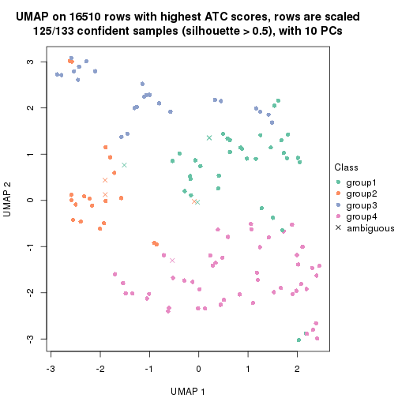
dimension_reduction(res, k = 5, method = "UMAP")
dimension_reduction(res, k = 6, method = "UMAP")
Following heatmap shows how subgroups are split when increasing k:
collect_classes(res)
If matrix rows can be associated to genes, consider to use GO_Enrichment(res,
...) to perform function enrichment for the signature genes.
The object with results only for a single top-value method and a single partition method can be extracted as:
res = res_list["ATC", "mclust"]
# you can also extract it by
# res = res_list["ATC:mclust"]
A summary of res and all the functions that can be applied to it:
res
#> A 'ConsensusPartition' object with k = 2, 3, 4, 5, 6.
#> On a matrix with 16510 rows and 133 columns.
#> Top rows (1000, 2000, 3000, 4000, 5000) are extracted by 'ATC' method.
#> Subgroups are detected by 'mclust' method.
#> Performed in total 1250 partitions by row resampling.
#> Best k for subgroups seems to be 3.
#>
#> Following methods can be applied to this 'ConsensusPartition' object:
#> [1] "cola_report" "collect_classes" "collect_plots"
#> [4] "collect_stats" "colnames" "compare_signatures"
#> [7] "consensus_heatmap" "dimension_reduction" "functional_enrichment"
#> [10] "get_anno_col" "get_anno" "get_classes"
#> [13] "get_consensus" "get_matrix" "get_membership"
#> [16] "get_param" "get_signatures" "get_stats"
#> [19] "is_best_k" "is_stable_k" "membership_heatmap"
#> [22] "ncol" "nrow" "plot_ecdf"
#> [25] "rownames" "select_partition_number" "show"
#> [28] "suggest_best_k" "test_to_known_factors"
collect_plots() function collects all the plots made from res for all k (number of partitions)
into one single page to provide an easy and fast comparison between different k.
collect_plots(res)
The plots are:
k and the heatmap of
predicted classes for each k.k.k.k.All the plots in panels can be made by individual functions and they are plotted later in this section.
select_partition_number() produces several plots showing different
statistics for choosing “optimized” k. There are following statistics:
k;k, the area increased is defined as \(A_k - A_{k-1}\).The detailed explanations of these statistics can be found in the cola vignette.
Generally speaking, lower PAC score, higher mean silhouette score or higher
concordance corresponds to better partition. Rand index and Jaccard index
measure how similar the current partition is compared to partition with k-1.
If they are too similar, we won't accept k is better than k-1.
select_partition_number(res)
The numeric values for all these statistics can be obtained by get_stats().
get_stats(res)
#> k 1-PAC mean_silhouette concordance area_increased Rand Jaccard
#> 2 2 0.261 0.649 0.792 0.3707 0.624 0.624
#> 3 3 0.503 0.849 0.905 0.5680 0.592 0.431
#> 4 4 0.421 0.325 0.616 0.1617 0.617 0.287
#> 5 5 0.469 0.687 0.784 0.0509 0.748 0.347
#> 6 6 0.683 0.716 0.810 0.1101 0.952 0.801
suggest_best_k() suggests the best \(k\) based on these statistics. The rules are as follows:
NA.suggest_best_k(res)
#> [1] 3
Following shows the table of the partitions (You need to click the show/hide
code output link to see it). The membership matrix (columns with name p*)
is inferred by
clue::cl_consensus()
function with the SE method. Basically the value in the membership matrix
represents the probability to belong to a certain group. The finall class
label for an item is determined with the group with highest probability it
belongs to.
In get_classes() function, the entropy is calculated from the membership
matrix and the silhouette score is calculated from the consensus matrix.
cbind(get_classes(res, k = 2), get_membership(res, k = 2))
#> class entropy silhouette p1 p2
#> ERR946976 1 0.6247 0.7689 0.844 0.156
#> ERR947001 1 0.6438 0.7689 0.836 0.164
#> ERR946975 2 0.0000 0.7433 0.000 1.000
#> ERR947000 2 0.0000 0.7433 0.000 1.000
#> ERR946972 1 0.3114 0.7431 0.944 0.056
#> ERR946997 1 0.3114 0.7431 0.944 0.056
#> ERR946986 1 0.9358 0.6887 0.648 0.352
#> ERR947011 1 0.9815 0.5223 0.580 0.420
#> ERR946977 1 0.9209 0.7059 0.664 0.336
#> ERR947002 1 0.9286 0.6990 0.656 0.344
#> ERR946974 2 0.8016 0.6651 0.244 0.756
#> ERR946999 2 0.7883 0.6751 0.236 0.764
#> ERR946971 1 0.3114 0.7431 0.944 0.056
#> ERR946996 1 0.3114 0.7431 0.944 0.056
#> ERR946992 2 0.1633 0.7345 0.024 0.976
#> ERR947017 2 0.0938 0.7394 0.012 0.988
#> ERR946984 1 0.8861 0.7253 0.696 0.304
#> ERR947009 1 0.9044 0.7170 0.680 0.320
#> ERR946987 2 0.9552 0.1514 0.376 0.624
#> ERR947012 2 0.9044 0.2877 0.320 0.680
#> ERR946991 2 0.4562 0.6884 0.096 0.904
#> ERR947016 2 0.4562 0.6884 0.096 0.904
#> ERR946983 2 0.4815 0.6799 0.104 0.896
#> ERR947008 2 0.4815 0.6799 0.104 0.896
#> ERR946970 1 0.9358 0.6887 0.648 0.352
#> ERR946995 1 0.9608 0.6214 0.616 0.384
#> ERR946969 1 0.9358 0.6887 0.648 0.352
#> ERR946994 1 0.9661 0.6017 0.608 0.392
#> ERR946982 2 0.0376 0.7428 0.004 0.996
#> ERR947007 2 0.0376 0.7428 0.004 0.996
#> ERR946988 1 0.9954 0.3815 0.540 0.460
#> ERR947013 2 0.9983 -0.1144 0.476 0.524
#> ERR946985 1 0.9323 0.6948 0.652 0.348
#> ERR947010 1 0.9323 0.6948 0.652 0.348
#> ERR946989 1 0.9323 0.6948 0.652 0.348
#> ERR947014 1 0.9323 0.6948 0.652 0.348
#> ERR946968 1 0.6247 0.7689 0.844 0.156
#> ERR946993 1 0.6247 0.7689 0.844 0.156
#> ERR946990 2 0.9988 -0.1352 0.480 0.520
#> ERR947015 2 0.9922 0.0368 0.448 0.552
#> ERR946980 2 0.9393 0.4188 0.356 0.644
#> ERR947005 2 0.7883 0.6758 0.236 0.764
#> ERR946978 2 0.9460 0.4914 0.364 0.636
#> ERR947003 2 0.9323 0.5217 0.348 0.652
#> ERR946979 2 0.4939 0.6785 0.108 0.892
#> ERR947004 2 0.4815 0.6801 0.104 0.896
#> ERR946957 1 0.3114 0.7431 0.944 0.056
#> ERR946962 1 0.3114 0.7431 0.944 0.056
#> ERR946958 1 0.8207 0.7274 0.744 0.256
#> ERR946963 1 0.9881 0.3278 0.564 0.436
#> ERR946959 2 0.9323 0.5217 0.348 0.652
#> ERR946964 2 0.9323 0.5217 0.348 0.652
#> ERR946967 1 0.3114 0.7431 0.944 0.056
#> ERR862690 1 0.3114 0.7431 0.944 0.056
#> ERR914278 2 0.1184 0.7448 0.016 0.984
#> ERR914314 2 0.1184 0.7448 0.016 0.984
#> ERR914279 2 0.7745 0.6838 0.228 0.772
#> ERR914315 2 0.7745 0.6838 0.228 0.772
#> ERR914280 2 0.1633 0.7444 0.024 0.976
#> ERR914316 2 0.1633 0.7444 0.024 0.976
#> ERR914281 2 0.0672 0.7418 0.008 0.992
#> ERR914317 2 0.0376 0.7428 0.004 0.996
#> ERR914282 2 0.0000 0.7433 0.000 1.000
#> ERR914318 2 0.0000 0.7433 0.000 1.000
#> ERR914283 2 0.9393 0.5089 0.356 0.644
#> ERR914319 2 0.9358 0.5155 0.352 0.648
#> ERR914284 2 0.7745 0.6838 0.228 0.772
#> ERR914320 2 0.7745 0.6838 0.228 0.772
#> ERR914285 2 0.9983 -0.1144 0.476 0.524
#> ERR914321 2 0.9954 -0.0295 0.460 0.540
#> ERR914286 2 0.0938 0.7447 0.012 0.988
#> ERR914322 2 0.1184 0.7448 0.016 0.984
#> ERR914287 2 0.7745 0.6838 0.228 0.772
#> ERR914323 2 0.7745 0.6838 0.228 0.772
#> ERR914288 2 0.7745 0.6838 0.228 0.772
#> ERR914324 2 0.7745 0.6838 0.228 0.772
#> ERR914289 2 0.7745 0.6838 0.228 0.772
#> ERR914290 2 0.7745 0.6838 0.228 0.772
#> ERR914326 2 0.7745 0.6838 0.228 0.772
#> ERR914291 2 0.0000 0.7433 0.000 1.000
#> ERR914327 2 0.0000 0.7433 0.000 1.000
#> ERR914292 2 0.7745 0.6838 0.228 0.772
#> ERR914328 2 0.7745 0.6838 0.228 0.772
#> ERR914293 2 0.7745 0.6838 0.228 0.772
#> ERR914329 2 0.7745 0.6838 0.228 0.772
#> ERR914294 2 0.0000 0.7433 0.000 1.000
#> ERR914330 2 0.0672 0.7445 0.008 0.992
#> ERR914295 2 0.7745 0.6838 0.228 0.772
#> ERR914331 2 0.7745 0.6838 0.228 0.772
#> ERR914296 2 0.9358 0.5155 0.352 0.648
#> ERR914332 2 0.9323 0.5217 0.348 0.652
#> ERR914297 2 0.1633 0.7444 0.024 0.976
#> ERR914333 2 0.4562 0.7307 0.096 0.904
#> ERR914298 2 0.9393 0.5089 0.356 0.644
#> ERR914334 2 0.9358 0.5155 0.352 0.648
#> ERR914299 2 0.0000 0.7433 0.000 1.000
#> ERR914335 2 0.0000 0.7433 0.000 1.000
#> ERR914300 2 0.7745 0.6838 0.228 0.772
#> ERR914336 2 0.7745 0.6838 0.228 0.772
#> ERR914301 2 0.4690 0.6809 0.100 0.900
#> ERR914337 2 0.4690 0.6809 0.100 0.900
#> ERR914302 2 0.0000 0.7433 0.000 1.000
#> ERR914338 2 0.0000 0.7433 0.000 1.000
#> ERR914303 2 0.5294 0.6617 0.120 0.880
#> ERR914339 2 0.5294 0.6617 0.120 0.880
#> ERR914304 2 0.4431 0.6877 0.092 0.908
#> ERR914340 2 0.4022 0.6966 0.080 0.920
#> ERR914305 2 0.5294 0.6617 0.120 0.880
#> ERR914341 2 0.5294 0.6617 0.120 0.880
#> ERR914306 2 0.5294 0.6617 0.120 0.880
#> ERR914342 2 0.5294 0.6617 0.120 0.880
#> ERR914307 2 0.7745 0.6838 0.228 0.772
#> ERR914343 2 0.7745 0.6838 0.228 0.772
#> ERR914308 2 0.7745 0.6838 0.228 0.772
#> ERR914344 2 0.7745 0.6838 0.228 0.772
#> ERR914309 2 0.7745 0.6838 0.228 0.772
#> ERR914345 2 0.7745 0.6838 0.228 0.772
#> ERR914310 2 0.7745 0.6838 0.228 0.772
#> ERR914346 2 0.7745 0.6838 0.228 0.772
#> ERR914311 2 0.3733 0.7020 0.072 0.928
#> ERR914347 2 0.2423 0.7208 0.040 0.960
#> ERR914312 2 0.0000 0.7433 0.000 1.000
#> ERR914348 2 0.0000 0.7433 0.000 1.000
#> ERR914313 2 0.0376 0.7428 0.004 0.996
#> ERR914349 2 0.0376 0.7428 0.004 0.996
#> ERR946960 1 0.6247 0.7689 0.844 0.156
#> ERR946965 1 0.6247 0.7689 0.844 0.156
#> ERR946966 2 0.7745 0.6838 0.228 0.772
#> ERR946973 1 0.3114 0.7431 0.944 0.056
#> ERR946998 1 0.3114 0.7431 0.944 0.056
#> ERR946981 2 0.4939 0.6785 0.108 0.892
#> ERR947006 2 0.4939 0.6785 0.108 0.892
#> ERR914325 2 0.7745 0.6838 0.228 0.772
cbind(get_classes(res, k = 3), get_membership(res, k = 3))
#> class entropy silhouette p1 p2 p3
#> ERR946976 3 0.4702 0.79757 0.212 0.000 0.788
#> ERR947001 3 0.5363 0.69896 0.276 0.000 0.724
#> ERR946975 2 0.3879 0.88347 0.152 0.848 0.000
#> ERR947000 2 0.3879 0.88347 0.152 0.848 0.000
#> ERR946972 3 0.0000 0.87670 0.000 0.000 1.000
#> ERR946997 3 0.0000 0.87670 0.000 0.000 1.000
#> ERR946986 1 0.3695 0.83987 0.880 0.012 0.108
#> ERR947011 1 0.3695 0.83987 0.880 0.012 0.108
#> ERR946977 1 0.3846 0.83678 0.876 0.016 0.108
#> ERR947002 1 0.3695 0.83987 0.880 0.012 0.108
#> ERR946974 1 0.2550 0.88345 0.932 0.012 0.056
#> ERR946999 1 0.2031 0.90401 0.952 0.032 0.016
#> ERR946971 3 0.0000 0.87670 0.000 0.000 1.000
#> ERR946996 3 0.0000 0.87670 0.000 0.000 1.000
#> ERR946992 2 0.3845 0.87773 0.116 0.872 0.012
#> ERR947017 2 0.3459 0.88556 0.096 0.892 0.012
#> ERR946984 1 0.4418 0.81223 0.848 0.020 0.132
#> ERR947009 1 0.4418 0.81223 0.848 0.020 0.132
#> ERR946987 2 0.7157 0.72885 0.188 0.712 0.100
#> ERR947012 2 0.7157 0.72885 0.188 0.712 0.100
#> ERR946991 2 0.1289 0.83988 0.032 0.968 0.000
#> ERR947016 2 0.1289 0.83988 0.032 0.968 0.000
#> ERR946983 2 0.0592 0.85353 0.012 0.988 0.000
#> ERR947008 2 0.0000 0.85968 0.000 1.000 0.000
#> ERR946970 1 0.1964 0.87693 0.944 0.000 0.056
#> ERR946995 1 0.1964 0.87693 0.944 0.000 0.056
#> ERR946969 1 0.3695 0.83987 0.880 0.012 0.108
#> ERR946994 1 0.3349 0.84457 0.888 0.004 0.108
#> ERR946982 2 0.3539 0.88538 0.100 0.888 0.012
#> ERR947007 2 0.3539 0.88538 0.100 0.888 0.012
#> ERR946988 1 0.3846 0.83678 0.876 0.016 0.108
#> ERR947013 1 0.3846 0.83678 0.876 0.016 0.108
#> ERR946985 1 0.2384 0.87368 0.936 0.008 0.056
#> ERR947010 1 0.2384 0.87368 0.936 0.008 0.056
#> ERR946989 1 0.1964 0.87693 0.944 0.000 0.056
#> ERR947014 1 0.1964 0.87693 0.944 0.000 0.056
#> ERR946968 3 0.4654 0.80116 0.208 0.000 0.792
#> ERR946993 3 0.4654 0.80116 0.208 0.000 0.792
#> ERR946990 1 0.3349 0.84457 0.888 0.004 0.108
#> ERR947015 1 0.2959 0.85218 0.900 0.000 0.100
#> ERR946980 1 0.3846 0.83678 0.876 0.016 0.108
#> ERR947005 1 0.3769 0.84024 0.880 0.016 0.104
#> ERR946978 1 0.3644 0.82446 0.872 0.004 0.124
#> ERR947003 1 0.2152 0.89102 0.948 0.016 0.036
#> ERR946979 2 0.1877 0.84019 0.032 0.956 0.012
#> ERR947004 2 0.1877 0.84019 0.032 0.956 0.012
#> ERR946957 3 0.0000 0.87670 0.000 0.000 1.000
#> ERR946962 3 0.0000 0.87670 0.000 0.000 1.000
#> ERR946958 1 0.6299 0.00773 0.524 0.000 0.476
#> ERR946963 1 0.5926 0.38271 0.644 0.000 0.356
#> ERR946959 1 0.1411 0.90559 0.964 0.036 0.000
#> ERR946964 1 0.1411 0.90559 0.964 0.036 0.000
#> ERR946967 3 0.3482 0.81718 0.128 0.000 0.872
#> ERR862690 3 0.2959 0.83872 0.100 0.000 0.900
#> ERR914278 2 0.4178 0.87395 0.172 0.828 0.000
#> ERR914314 2 0.4178 0.87395 0.172 0.828 0.000
#> ERR914279 1 0.1289 0.90699 0.968 0.032 0.000
#> ERR914315 1 0.1289 0.90699 0.968 0.032 0.000
#> ERR914280 2 0.4931 0.81127 0.232 0.768 0.000
#> ERR914316 2 0.4974 0.80711 0.236 0.764 0.000
#> ERR914281 2 0.4128 0.86891 0.132 0.856 0.012
#> ERR914317 2 0.3771 0.88113 0.112 0.876 0.012
#> ERR914282 2 0.3879 0.88347 0.152 0.848 0.000
#> ERR914318 2 0.3879 0.88347 0.152 0.848 0.000
#> ERR914283 1 0.5111 0.78101 0.820 0.036 0.144
#> ERR914319 1 0.5047 0.78610 0.824 0.036 0.140
#> ERR914284 1 0.1711 0.90613 0.960 0.032 0.008
#> ERR914320 1 0.1525 0.90673 0.964 0.032 0.004
#> ERR914285 1 0.3028 0.89410 0.920 0.032 0.048
#> ERR914321 1 0.2806 0.89679 0.928 0.032 0.040
#> ERR914286 2 0.4121 0.87677 0.168 0.832 0.000
#> ERR914322 2 0.4121 0.87677 0.168 0.832 0.000
#> ERR914287 1 0.1289 0.90699 0.968 0.032 0.000
#> ERR914323 1 0.1289 0.90699 0.968 0.032 0.000
#> ERR914288 1 0.5529 0.51595 0.704 0.296 0.000
#> ERR914324 1 0.5948 0.33270 0.640 0.360 0.000
#> ERR914289 1 0.1289 0.90699 0.968 0.032 0.000
#> ERR914290 1 0.1289 0.90699 0.968 0.032 0.000
#> ERR914326 1 0.1289 0.90699 0.968 0.032 0.000
#> ERR914291 2 0.4062 0.87889 0.164 0.836 0.000
#> ERR914327 2 0.4121 0.87677 0.168 0.832 0.000
#> ERR914292 1 0.1289 0.90699 0.968 0.032 0.000
#> ERR914328 1 0.1289 0.90699 0.968 0.032 0.000
#> ERR914293 1 0.1289 0.90699 0.968 0.032 0.000
#> ERR914329 1 0.1289 0.90699 0.968 0.032 0.000
#> ERR914294 2 0.4121 0.87677 0.168 0.832 0.000
#> ERR914330 2 0.4121 0.87677 0.168 0.832 0.000
#> ERR914295 1 0.1289 0.90699 0.968 0.032 0.000
#> ERR914331 1 0.1289 0.90699 0.968 0.032 0.000
#> ERR914296 1 0.1411 0.90559 0.964 0.036 0.000
#> ERR914332 1 0.1411 0.90559 0.964 0.036 0.000
#> ERR914297 2 0.5178 0.78086 0.256 0.744 0.000
#> ERR914333 2 0.5216 0.77515 0.260 0.740 0.000
#> ERR914298 1 0.1411 0.90559 0.964 0.036 0.000
#> ERR914334 1 0.1411 0.90559 0.964 0.036 0.000
#> ERR914299 2 0.3879 0.88347 0.152 0.848 0.000
#> ERR914335 2 0.3879 0.88347 0.152 0.848 0.000
#> ERR914300 1 0.1289 0.90699 0.968 0.032 0.000
#> ERR914336 1 0.1289 0.90699 0.968 0.032 0.000
#> ERR914301 2 0.0000 0.85968 0.000 1.000 0.000
#> ERR914337 2 0.0000 0.85968 0.000 1.000 0.000
#> ERR914302 2 0.4002 0.88080 0.160 0.840 0.000
#> ERR914338 2 0.4002 0.88080 0.160 0.840 0.000
#> ERR914303 2 0.0000 0.85968 0.000 1.000 0.000
#> ERR914339 2 0.0000 0.85968 0.000 1.000 0.000
#> ERR914304 2 0.0000 0.85968 0.000 1.000 0.000
#> ERR914340 2 0.0000 0.85968 0.000 1.000 0.000
#> ERR914305 2 0.0000 0.85968 0.000 1.000 0.000
#> ERR914341 2 0.0000 0.85968 0.000 1.000 0.000
#> ERR914306 2 0.0000 0.85968 0.000 1.000 0.000
#> ERR914342 2 0.0000 0.85968 0.000 1.000 0.000
#> ERR914307 1 0.1289 0.90699 0.968 0.032 0.000
#> ERR914343 1 0.1529 0.90228 0.960 0.040 0.000
#> ERR914308 1 0.1411 0.90559 0.964 0.036 0.000
#> ERR914344 1 0.1289 0.90699 0.968 0.032 0.000
#> ERR914309 1 0.1289 0.90699 0.968 0.032 0.000
#> ERR914345 1 0.1289 0.90699 0.968 0.032 0.000
#> ERR914310 1 0.1289 0.90699 0.968 0.032 0.000
#> ERR914346 1 0.1289 0.90699 0.968 0.032 0.000
#> ERR914311 2 0.0000 0.85968 0.000 1.000 0.000
#> ERR914347 2 0.0000 0.85968 0.000 1.000 0.000
#> ERR914312 2 0.3941 0.88228 0.156 0.844 0.000
#> ERR914348 2 0.3941 0.88228 0.156 0.844 0.000
#> ERR914313 2 0.3539 0.88538 0.100 0.888 0.012
#> ERR914349 2 0.3539 0.88538 0.100 0.888 0.012
#> ERR946960 3 0.4702 0.79761 0.212 0.000 0.788
#> ERR946965 3 0.4750 0.79283 0.216 0.000 0.784
#> ERR946966 1 0.1411 0.90559 0.964 0.036 0.000
#> ERR946973 3 0.0000 0.87670 0.000 0.000 1.000
#> ERR946998 3 0.0000 0.87670 0.000 0.000 1.000
#> ERR946981 2 0.1289 0.83988 0.032 0.968 0.000
#> ERR947006 2 0.1289 0.83988 0.032 0.968 0.000
#> ERR914325 1 0.1289 0.90699 0.968 0.032 0.000
cbind(get_classes(res, k = 4), get_membership(res, k = 4))
#> class entropy silhouette p1 p2 p3 p4
#> ERR946976 2 0.8075 -0.3820 0.412 0.428 0.048 0.112
#> ERR947001 2 0.8075 -0.3820 0.412 0.428 0.048 0.112
#> ERR946975 4 0.0000 0.5003 0.000 0.000 0.000 1.000
#> ERR947000 4 0.0000 0.5003 0.000 0.000 0.000 1.000
#> ERR946972 3 0.4933 0.2657 0.000 0.432 0.568 0.000
#> ERR946997 3 0.4933 0.2657 0.000 0.432 0.568 0.000
#> ERR946986 3 0.6960 0.5943 0.420 0.000 0.468 0.112
#> ERR947011 3 0.6960 0.5943 0.420 0.000 0.468 0.112
#> ERR946977 3 0.6960 0.5943 0.420 0.000 0.468 0.112
#> ERR947002 3 0.6960 0.5943 0.420 0.000 0.468 0.112
#> ERR946974 3 0.7597 0.3266 0.204 0.000 0.440 0.356
#> ERR946999 4 0.5982 0.1161 0.040 0.000 0.436 0.524
#> ERR946971 3 0.4933 0.2657 0.000 0.432 0.568 0.000
#> ERR946996 3 0.4933 0.2657 0.000 0.432 0.568 0.000
#> ERR946992 4 0.6421 -0.4394 0.068 0.352 0.004 0.576
#> ERR947017 4 0.6248 -0.4074 0.060 0.340 0.004 0.596
#> ERR946984 3 0.7353 0.5914 0.408 0.012 0.468 0.112
#> ERR947009 3 0.6960 0.5943 0.420 0.000 0.468 0.112
#> ERR946987 3 0.7820 0.4941 0.276 0.000 0.412 0.312
#> ERR947012 3 0.7860 0.4594 0.276 0.000 0.384 0.340
#> ERR946991 2 0.5277 0.7062 0.000 0.532 0.008 0.460
#> ERR947016 2 0.5277 0.7062 0.000 0.532 0.008 0.460
#> ERR946983 2 0.4985 0.7050 0.000 0.532 0.000 0.468
#> ERR947008 2 0.4985 0.7050 0.000 0.532 0.000 0.468
#> ERR946970 3 0.7698 0.5261 0.292 0.000 0.452 0.256
#> ERR946995 3 0.7710 0.5216 0.296 0.000 0.448 0.256
#> ERR946969 3 0.6960 0.5943 0.420 0.000 0.468 0.112
#> ERR946994 3 0.6960 0.5943 0.420 0.000 0.468 0.112
#> ERR946982 4 0.4722 -0.1708 0.000 0.300 0.008 0.692
#> ERR947007 4 0.4722 -0.1708 0.000 0.300 0.008 0.692
#> ERR946988 3 0.6960 0.5943 0.420 0.000 0.468 0.112
#> ERR947013 3 0.6960 0.5943 0.420 0.000 0.468 0.112
#> ERR946985 3 0.7698 0.5261 0.292 0.000 0.452 0.256
#> ERR947010 3 0.7698 0.5261 0.292 0.000 0.452 0.256
#> ERR946989 3 0.7698 0.5261 0.292 0.000 0.452 0.256
#> ERR947014 3 0.7698 0.5261 0.292 0.000 0.452 0.256
#> ERR946968 2 0.8075 -0.3820 0.412 0.428 0.048 0.112
#> ERR946993 2 0.8075 -0.3820 0.412 0.428 0.048 0.112
#> ERR946990 3 0.6960 0.5943 0.420 0.000 0.468 0.112
#> ERR947015 3 0.6960 0.5943 0.420 0.000 0.468 0.112
#> ERR946980 3 0.6960 0.5943 0.420 0.000 0.468 0.112
#> ERR947005 3 0.6960 0.5943 0.420 0.000 0.468 0.112
#> ERR946978 1 0.0844 0.3634 0.980 0.004 0.012 0.004
#> ERR947003 1 0.3676 0.6354 0.820 0.004 0.004 0.172
#> ERR946979 2 0.5244 0.7030 0.000 0.556 0.008 0.436
#> ERR947004 2 0.5244 0.7030 0.000 0.556 0.008 0.436
#> ERR946957 3 0.4933 0.2657 0.000 0.432 0.568 0.000
#> ERR946962 3 0.4933 0.2657 0.000 0.432 0.568 0.000
#> ERR946958 1 0.7428 -0.1286 0.596 0.252 0.040 0.112
#> ERR946963 1 0.7088 -0.1004 0.612 0.252 0.024 0.112
#> ERR946959 1 0.4401 0.7153 0.724 0.004 0.000 0.272
#> ERR946964 1 0.4401 0.7153 0.724 0.004 0.000 0.272
#> ERR946967 3 0.3908 0.3340 0.004 0.212 0.784 0.000
#> ERR862690 3 0.4018 0.3303 0.004 0.224 0.772 0.000
#> ERR914278 4 0.1109 0.4901 0.028 0.000 0.004 0.968
#> ERR914314 4 0.1004 0.4919 0.024 0.000 0.004 0.972
#> ERR914279 4 0.4992 -0.1556 0.476 0.000 0.000 0.524
#> ERR914315 4 0.4992 -0.1556 0.476 0.000 0.000 0.524
#> ERR914280 4 0.1305 0.4861 0.036 0.000 0.004 0.960
#> ERR914316 4 0.1211 0.4850 0.040 0.000 0.000 0.960
#> ERR914281 4 0.4722 -0.1708 0.000 0.300 0.008 0.692
#> ERR914317 4 0.4722 -0.1708 0.000 0.300 0.008 0.692
#> ERR914282 4 0.1576 0.4573 0.048 0.004 0.000 0.948
#> ERR914318 4 0.0524 0.4922 0.008 0.004 0.000 0.988
#> ERR914283 1 0.4401 0.7153 0.724 0.004 0.000 0.272
#> ERR914319 1 0.4401 0.7153 0.724 0.004 0.000 0.272
#> ERR914284 4 0.5158 -0.1524 0.472 0.000 0.004 0.524
#> ERR914320 4 0.4992 -0.1556 0.476 0.000 0.000 0.524
#> ERR914285 4 0.5917 0.1119 0.036 0.000 0.444 0.520
#> ERR914321 4 0.5982 0.1161 0.040 0.000 0.436 0.524
#> ERR914286 4 0.0000 0.5003 0.000 0.000 0.000 1.000
#> ERR914322 4 0.0000 0.5003 0.000 0.000 0.000 1.000
#> ERR914287 4 0.4989 -0.1573 0.472 0.000 0.000 0.528
#> ERR914323 4 0.4989 -0.1573 0.472 0.000 0.000 0.528
#> ERR914288 4 0.6243 -0.0882 0.392 0.000 0.060 0.548
#> ERR914324 4 0.5281 -0.1520 0.464 0.000 0.008 0.528
#> ERR914289 4 0.6176 0.1120 0.052 0.000 0.424 0.524
#> ERR914290 4 0.4989 -0.1573 0.472 0.000 0.000 0.528
#> ERR914326 4 0.4989 -0.1573 0.472 0.000 0.000 0.528
#> ERR914291 4 0.0000 0.5003 0.000 0.000 0.000 1.000
#> ERR914327 4 0.0000 0.5003 0.000 0.000 0.000 1.000
#> ERR914292 4 0.7366 0.0449 0.224 0.000 0.252 0.524
#> ERR914328 4 0.7366 0.0273 0.252 0.000 0.224 0.524
#> ERR914293 4 0.4989 -0.1573 0.472 0.000 0.000 0.528
#> ERR914329 4 0.4992 -0.1556 0.476 0.000 0.000 0.524
#> ERR914294 4 0.0000 0.5003 0.000 0.000 0.000 1.000
#> ERR914330 4 0.0000 0.5003 0.000 0.000 0.000 1.000
#> ERR914295 4 0.5158 -0.1524 0.472 0.000 0.004 0.524
#> ERR914331 4 0.5158 -0.1524 0.472 0.000 0.004 0.524
#> ERR914296 1 0.4882 0.7003 0.708 0.020 0.000 0.272
#> ERR914332 1 0.4401 0.7153 0.724 0.004 0.000 0.272
#> ERR914297 4 0.5742 0.1702 0.276 0.060 0.000 0.664
#> ERR914333 1 0.5396 0.3449 0.524 0.012 0.000 0.464
#> ERR914298 1 0.4372 0.7142 0.728 0.004 0.000 0.268
#> ERR914334 1 0.4372 0.7142 0.728 0.004 0.000 0.268
#> ERR914299 4 0.0188 0.4966 0.000 0.004 0.000 0.996
#> ERR914335 4 0.0000 0.5003 0.000 0.000 0.000 1.000
#> ERR914300 4 0.4992 -0.1556 0.476 0.000 0.000 0.524
#> ERR914336 4 0.4992 -0.1556 0.476 0.000 0.000 0.524
#> ERR914301 2 0.4985 0.7050 0.000 0.532 0.000 0.468
#> ERR914337 2 0.4989 0.7024 0.000 0.528 0.000 0.472
#> ERR914302 4 0.0000 0.5003 0.000 0.000 0.000 1.000
#> ERR914338 4 0.0000 0.5003 0.000 0.000 0.000 1.000
#> ERR914303 2 0.4941 0.7043 0.000 0.564 0.000 0.436
#> ERR914339 2 0.4941 0.7043 0.000 0.564 0.000 0.436
#> ERR914304 2 0.4985 0.7050 0.000 0.532 0.000 0.468
#> ERR914340 2 0.4985 0.7050 0.000 0.532 0.000 0.468
#> ERR914305 2 0.4941 0.7043 0.000 0.564 0.000 0.436
#> ERR914341 2 0.4941 0.7043 0.000 0.564 0.000 0.436
#> ERR914306 2 0.4941 0.7043 0.000 0.564 0.000 0.436
#> ERR914342 2 0.4941 0.7043 0.000 0.564 0.000 0.436
#> ERR914307 4 0.7341 0.0235 0.252 0.000 0.220 0.528
#> ERR914343 4 0.7341 0.0236 0.252 0.000 0.220 0.528
#> ERR914308 1 0.4746 0.6144 0.632 0.000 0.000 0.368
#> ERR914344 1 0.4761 0.6081 0.628 0.000 0.000 0.372
#> ERR914309 1 0.4804 0.5845 0.616 0.000 0.000 0.384
#> ERR914345 1 0.4830 0.5690 0.608 0.000 0.000 0.392
#> ERR914310 4 0.7142 -0.0409 0.324 0.000 0.152 0.524
#> ERR914346 4 0.5396 -0.1481 0.464 0.000 0.012 0.524
#> ERR914311 2 0.4985 0.7050 0.000 0.532 0.000 0.468
#> ERR914347 2 0.5285 0.7016 0.008 0.524 0.000 0.468
#> ERR914312 4 0.0188 0.4966 0.000 0.004 0.000 0.996
#> ERR914348 4 0.0188 0.4966 0.000 0.004 0.000 0.996
#> ERR914313 4 0.4722 -0.1708 0.000 0.300 0.008 0.692
#> ERR914349 4 0.4722 -0.1708 0.000 0.300 0.008 0.692
#> ERR946960 2 0.7946 -0.3808 0.420 0.428 0.040 0.112
#> ERR946965 2 0.7946 -0.3808 0.420 0.428 0.040 0.112
#> ERR946966 1 0.5257 0.4943 0.548 0.000 0.008 0.444
#> ERR946973 3 0.4933 0.2657 0.000 0.432 0.568 0.000
#> ERR946998 3 0.4933 0.2657 0.000 0.432 0.568 0.000
#> ERR946981 2 0.5277 0.7062 0.000 0.532 0.008 0.460
#> ERR947006 2 0.5277 0.7062 0.000 0.532 0.008 0.460
#> ERR914325 4 0.7366 0.0449 0.224 0.000 0.252 0.524
cbind(get_classes(res, k = 5), get_membership(res, k = 5))
#> class entropy silhouette p1 p2 p3 p4 p5
#> ERR946976 5 0.6542 0.729 0.372 0.000 0.200 0.000 0.428
#> ERR947001 5 0.6542 0.729 0.372 0.000 0.200 0.000 0.428
#> ERR946975 4 0.4624 0.762 0.144 0.112 0.000 0.744 0.000
#> ERR947000 4 0.4624 0.762 0.144 0.112 0.000 0.744 0.000
#> ERR946972 3 0.0000 0.943 0.000 0.000 1.000 0.000 0.000
#> ERR946997 3 0.0000 0.943 0.000 0.000 1.000 0.000 0.000
#> ERR946986 5 0.4030 0.856 0.352 0.000 0.000 0.000 0.648
#> ERR947011 5 0.4030 0.856 0.352 0.000 0.000 0.000 0.648
#> ERR946977 5 0.4030 0.856 0.352 0.000 0.000 0.000 0.648
#> ERR947002 5 0.4030 0.856 0.352 0.000 0.000 0.000 0.648
#> ERR946974 1 0.4126 -0.239 0.620 0.000 0.000 0.000 0.380
#> ERR946999 1 0.3210 0.438 0.788 0.000 0.000 0.000 0.212
#> ERR946971 3 0.0000 0.943 0.000 0.000 1.000 0.000 0.000
#> ERR946996 3 0.0000 0.943 0.000 0.000 1.000 0.000 0.000
#> ERR946992 2 0.4016 0.532 0.272 0.716 0.000 0.012 0.000
#> ERR947017 2 0.4016 0.532 0.272 0.716 0.000 0.012 0.000
#> ERR946984 5 0.4030 0.856 0.352 0.000 0.000 0.000 0.648
#> ERR947009 5 0.4030 0.856 0.352 0.000 0.000 0.000 0.648
#> ERR946987 5 0.4774 0.831 0.360 0.028 0.000 0.000 0.612
#> ERR947012 5 0.6323 0.649 0.360 0.164 0.000 0.000 0.476
#> ERR946991 2 0.0404 0.830 0.000 0.988 0.000 0.012 0.000
#> ERR947016 2 0.0404 0.830 0.000 0.988 0.000 0.012 0.000
#> ERR946983 2 0.0404 0.830 0.000 0.988 0.000 0.012 0.000
#> ERR947008 2 0.0404 0.830 0.000 0.988 0.000 0.012 0.000
#> ERR946970 5 0.4114 0.842 0.376 0.000 0.000 0.000 0.624
#> ERR946995 5 0.4126 0.837 0.380 0.000 0.000 0.000 0.620
#> ERR946969 5 0.4030 0.856 0.352 0.000 0.000 0.000 0.648
#> ERR946994 5 0.4030 0.856 0.352 0.000 0.000 0.000 0.648
#> ERR946982 2 0.4046 0.494 0.296 0.696 0.000 0.000 0.008
#> ERR947007 2 0.4199 0.488 0.296 0.692 0.000 0.004 0.008
#> ERR946988 5 0.4030 0.856 0.352 0.000 0.000 0.000 0.648
#> ERR947013 5 0.4030 0.856 0.352 0.000 0.000 0.000 0.648
#> ERR946985 5 0.4060 0.850 0.360 0.000 0.000 0.000 0.640
#> ERR947010 5 0.4060 0.850 0.360 0.000 0.000 0.000 0.640
#> ERR946989 5 0.4114 0.842 0.376 0.000 0.000 0.000 0.624
#> ERR947014 5 0.4114 0.842 0.376 0.000 0.000 0.000 0.624
#> ERR946968 5 0.6542 0.729 0.372 0.000 0.200 0.000 0.428
#> ERR946993 5 0.6542 0.729 0.372 0.000 0.200 0.000 0.428
#> ERR946990 5 0.4030 0.856 0.352 0.000 0.000 0.000 0.648
#> ERR947015 5 0.4060 0.852 0.360 0.000 0.000 0.000 0.640
#> ERR946980 5 0.4030 0.856 0.352 0.000 0.000 0.000 0.648
#> ERR947005 5 0.4030 0.856 0.352 0.000 0.000 0.000 0.648
#> ERR946978 5 0.4665 0.129 0.260 0.000 0.000 0.048 0.692
#> ERR947003 5 0.4800 0.124 0.272 0.000 0.000 0.052 0.676
#> ERR946979 2 0.0290 0.828 0.000 0.992 0.000 0.000 0.008
#> ERR947004 2 0.0290 0.828 0.000 0.992 0.000 0.000 0.008
#> ERR946957 3 0.0000 0.943 0.000 0.000 1.000 0.000 0.000
#> ERR946962 3 0.0000 0.943 0.000 0.000 1.000 0.000 0.000
#> ERR946958 5 0.6542 0.729 0.372 0.000 0.200 0.000 0.428
#> ERR946963 5 0.6546 0.725 0.376 0.000 0.200 0.000 0.424
#> ERR946959 1 0.5155 0.448 0.596 0.000 0.000 0.052 0.352
#> ERR946964 1 0.5155 0.448 0.596 0.000 0.000 0.052 0.352
#> ERR946967 3 0.3074 0.757 0.000 0.000 0.804 0.000 0.196
#> ERR862690 3 0.3074 0.757 0.000 0.000 0.804 0.000 0.196
#> ERR914278 4 0.5061 0.618 0.388 0.020 0.000 0.580 0.012
#> ERR914314 4 0.5029 0.634 0.376 0.020 0.000 0.592 0.012
#> ERR914279 1 0.0162 0.693 0.996 0.000 0.000 0.004 0.000
#> ERR914315 1 0.0162 0.693 0.996 0.000 0.000 0.004 0.000
#> ERR914280 4 0.5061 0.618 0.388 0.020 0.000 0.580 0.012
#> ERR914316 4 0.5061 0.618 0.388 0.020 0.000 0.580 0.012
#> ERR914281 2 0.4046 0.494 0.296 0.696 0.000 0.000 0.008
#> ERR914317 2 0.4046 0.494 0.296 0.696 0.000 0.000 0.008
#> ERR914282 4 0.6050 0.460 0.144 0.312 0.000 0.544 0.000
#> ERR914318 4 0.4624 0.762 0.144 0.112 0.000 0.744 0.000
#> ERR914283 1 0.5155 0.448 0.596 0.000 0.000 0.052 0.352
#> ERR914319 1 0.5155 0.448 0.596 0.000 0.000 0.052 0.352
#> ERR914284 1 0.0290 0.688 0.992 0.000 0.000 0.000 0.008
#> ERR914320 1 0.0000 0.694 1.000 0.000 0.000 0.000 0.000
#> ERR914285 1 0.3508 0.324 0.748 0.000 0.000 0.000 0.252
#> ERR914321 1 0.3210 0.438 0.788 0.000 0.000 0.000 0.212
#> ERR914286 4 0.3550 0.763 0.184 0.020 0.000 0.796 0.000
#> ERR914322 4 0.3550 0.763 0.184 0.020 0.000 0.796 0.000
#> ERR914287 1 0.0290 0.694 0.992 0.000 0.000 0.000 0.008
#> ERR914323 1 0.0162 0.694 0.996 0.000 0.000 0.000 0.004
#> ERR914288 1 0.3487 0.485 0.780 0.000 0.000 0.212 0.008
#> ERR914324 1 0.3487 0.485 0.780 0.000 0.000 0.212 0.008
#> ERR914289 1 0.2891 0.505 0.824 0.000 0.000 0.000 0.176
#> ERR914290 1 0.0963 0.686 0.964 0.000 0.000 0.000 0.036
#> ERR914326 1 0.0794 0.689 0.972 0.000 0.000 0.000 0.028
#> ERR914291 4 0.4960 0.779 0.180 0.112 0.000 0.708 0.000
#> ERR914327 4 0.4933 0.785 0.200 0.096 0.000 0.704 0.000
#> ERR914292 1 0.2813 0.516 0.832 0.000 0.000 0.000 0.168
#> ERR914328 1 0.2732 0.528 0.840 0.000 0.000 0.000 0.160
#> ERR914293 1 0.0000 0.694 1.000 0.000 0.000 0.000 0.000
#> ERR914329 1 0.0000 0.694 1.000 0.000 0.000 0.000 0.000
#> ERR914294 4 0.3550 0.763 0.184 0.020 0.000 0.796 0.000
#> ERR914330 4 0.3550 0.763 0.184 0.020 0.000 0.796 0.000
#> ERR914295 1 0.0290 0.688 0.992 0.000 0.000 0.000 0.008
#> ERR914331 1 0.0000 0.694 1.000 0.000 0.000 0.000 0.000
#> ERR914296 1 0.5155 0.448 0.596 0.000 0.000 0.052 0.352
#> ERR914332 1 0.5155 0.448 0.596 0.000 0.000 0.052 0.352
#> ERR914297 1 0.8020 0.142 0.412 0.108 0.000 0.240 0.240
#> ERR914333 1 0.7914 0.168 0.424 0.096 0.000 0.240 0.240
#> ERR914298 1 0.5155 0.448 0.596 0.000 0.000 0.052 0.352
#> ERR914334 1 0.5155 0.448 0.596 0.000 0.000 0.052 0.352
#> ERR914299 4 0.4624 0.762 0.144 0.112 0.000 0.744 0.000
#> ERR914335 4 0.4624 0.762 0.144 0.112 0.000 0.744 0.000
#> ERR914300 1 0.0000 0.694 1.000 0.000 0.000 0.000 0.000
#> ERR914336 1 0.0000 0.694 1.000 0.000 0.000 0.000 0.000
#> ERR914301 2 0.2561 0.703 0.000 0.856 0.000 0.144 0.000
#> ERR914337 2 0.2966 0.646 0.000 0.816 0.000 0.184 0.000
#> ERR914302 4 0.3706 0.762 0.184 0.020 0.000 0.792 0.004
#> ERR914338 4 0.3828 0.761 0.184 0.020 0.000 0.788 0.008
#> ERR914303 2 0.0000 0.829 0.000 1.000 0.000 0.000 0.000
#> ERR914339 2 0.0000 0.829 0.000 1.000 0.000 0.000 0.000
#> ERR914304 2 0.0703 0.823 0.000 0.976 0.000 0.024 0.000
#> ERR914340 2 0.1043 0.812 0.000 0.960 0.000 0.040 0.000
#> ERR914305 2 0.0000 0.829 0.000 1.000 0.000 0.000 0.000
#> ERR914341 2 0.0000 0.829 0.000 1.000 0.000 0.000 0.000
#> ERR914306 2 0.0000 0.829 0.000 1.000 0.000 0.000 0.000
#> ERR914342 2 0.0000 0.829 0.000 1.000 0.000 0.000 0.000
#> ERR914307 1 0.3318 0.538 0.808 0.000 0.000 0.180 0.012
#> ERR914343 1 0.3318 0.538 0.808 0.000 0.000 0.180 0.012
#> ERR914308 1 0.2920 0.629 0.852 0.000 0.000 0.016 0.132
#> ERR914344 1 0.2439 0.643 0.876 0.000 0.000 0.004 0.120
#> ERR914309 1 0.0000 0.694 1.000 0.000 0.000 0.000 0.000
#> ERR914345 1 0.0000 0.694 1.000 0.000 0.000 0.000 0.000
#> ERR914310 1 0.2074 0.602 0.896 0.000 0.000 0.000 0.104
#> ERR914346 1 0.0290 0.688 0.992 0.000 0.000 0.000 0.008
#> ERR914311 2 0.0404 0.830 0.000 0.988 0.000 0.012 0.000
#> ERR914347 2 0.0404 0.830 0.000 0.988 0.000 0.012 0.000
#> ERR914312 4 0.5691 0.738 0.296 0.112 0.000 0.592 0.000
#> ERR914348 4 0.5691 0.738 0.296 0.112 0.000 0.592 0.000
#> ERR914313 2 0.4046 0.494 0.296 0.696 0.000 0.000 0.008
#> ERR914349 2 0.4199 0.488 0.296 0.692 0.000 0.004 0.008
#> ERR946960 5 0.6542 0.729 0.372 0.000 0.200 0.000 0.428
#> ERR946965 5 0.6542 0.729 0.372 0.000 0.200 0.000 0.428
#> ERR946966 1 0.4841 0.534 0.708 0.000 0.000 0.208 0.084
#> ERR946973 3 0.0000 0.943 0.000 0.000 1.000 0.000 0.000
#> ERR946998 3 0.0000 0.943 0.000 0.000 1.000 0.000 0.000
#> ERR946981 2 0.0404 0.830 0.000 0.988 0.000 0.012 0.000
#> ERR947006 2 0.0404 0.830 0.000 0.988 0.000 0.012 0.000
#> ERR914325 1 0.2852 0.511 0.828 0.000 0.000 0.000 0.172
cbind(get_classes(res, k = 6), get_membership(res, k = 6))
#> class entropy silhouette p1 p2 p3 p4 p5 p6
#> ERR946976 6 0.3023 0.64166 0.000 0.000 0.212 0.000 0.004 0.784
#> ERR947001 6 0.3023 0.64166 0.000 0.000 0.212 0.000 0.004 0.784
#> ERR946975 4 0.0146 0.91752 0.000 0.000 0.000 0.996 0.000 0.004
#> ERR947000 4 0.0146 0.91752 0.000 0.000 0.000 0.996 0.000 0.004
#> ERR946972 3 0.0000 0.93709 0.000 0.000 1.000 0.000 0.000 0.000
#> ERR946997 3 0.0000 0.93709 0.000 0.000 1.000 0.000 0.000 0.000
#> ERR946986 5 0.3765 0.89555 0.000 0.000 0.000 0.000 0.596 0.404
#> ERR947011 5 0.3774 0.89388 0.000 0.000 0.000 0.000 0.592 0.408
#> ERR946977 5 0.3727 0.89561 0.000 0.000 0.000 0.000 0.612 0.388
#> ERR947002 5 0.3727 0.89561 0.000 0.000 0.000 0.000 0.612 0.388
#> ERR946974 1 0.4497 0.49500 0.600 0.000 0.000 0.012 0.020 0.368
#> ERR946999 1 0.4356 0.49941 0.600 0.000 0.000 0.012 0.012 0.376
#> ERR946971 3 0.0000 0.93709 0.000 0.000 1.000 0.000 0.000 0.000
#> ERR946996 3 0.0000 0.93709 0.000 0.000 1.000 0.000 0.000 0.000
#> ERR946992 2 0.2544 0.82684 0.000 0.864 0.000 0.120 0.012 0.004
#> ERR947017 2 0.2714 0.82546 0.000 0.848 0.000 0.136 0.012 0.004
#> ERR946984 5 0.3727 0.89561 0.000 0.000 0.000 0.000 0.612 0.388
#> ERR947009 5 0.3727 0.89561 0.000 0.000 0.000 0.000 0.612 0.388
#> ERR946987 5 0.7256 0.41239 0.000 0.216 0.000 0.120 0.408 0.256
#> ERR947012 5 0.7382 0.34086 0.000 0.264 0.000 0.120 0.360 0.256
#> ERR946991 2 0.2402 0.82790 0.000 0.868 0.000 0.120 0.012 0.000
#> ERR947016 2 0.2402 0.82790 0.000 0.868 0.000 0.120 0.012 0.000
#> ERR946983 2 0.3970 0.75269 0.000 0.692 0.000 0.280 0.028 0.000
#> ERR947008 2 0.3840 0.74675 0.000 0.696 0.000 0.284 0.020 0.000
#> ERR946970 6 0.4382 0.21387 0.332 0.000 0.000 0.012 0.020 0.636
#> ERR946995 6 0.4246 0.18831 0.340 0.000 0.000 0.012 0.012 0.636
#> ERR946969 5 0.3756 0.89638 0.000 0.000 0.000 0.000 0.600 0.400
#> ERR946994 5 0.3782 0.89403 0.000 0.000 0.000 0.000 0.588 0.412
#> ERR946982 2 0.1644 0.80620 0.000 0.920 0.000 0.000 0.076 0.004
#> ERR947007 2 0.1644 0.80620 0.000 0.920 0.000 0.000 0.076 0.004
#> ERR946988 5 0.3727 0.89561 0.000 0.000 0.000 0.000 0.612 0.388
#> ERR947013 5 0.3727 0.89561 0.000 0.000 0.000 0.000 0.612 0.388
#> ERR946985 5 0.4703 0.82691 0.052 0.000 0.000 0.000 0.568 0.380
#> ERR947010 5 0.4703 0.82691 0.052 0.000 0.000 0.000 0.568 0.380
#> ERR946989 6 0.4926 0.20155 0.240 0.000 0.000 0.000 0.120 0.640
#> ERR947014 6 0.4124 0.23744 0.332 0.000 0.000 0.000 0.024 0.644
#> ERR946968 6 0.3023 0.64166 0.000 0.000 0.212 0.000 0.004 0.784
#> ERR946993 6 0.3023 0.64166 0.000 0.000 0.212 0.000 0.004 0.784
#> ERR946990 5 0.3797 0.88416 0.000 0.000 0.000 0.000 0.580 0.420
#> ERR947015 5 0.3810 0.88112 0.000 0.000 0.000 0.000 0.572 0.428
#> ERR946980 5 0.3789 0.88814 0.000 0.000 0.000 0.000 0.584 0.416
#> ERR947005 5 0.3797 0.88416 0.000 0.000 0.000 0.000 0.580 0.420
#> ERR946978 1 0.5468 0.31440 0.572 0.000 0.004 0.000 0.148 0.276
#> ERR947003 1 0.3645 0.65371 0.784 0.000 0.000 0.000 0.152 0.064
#> ERR946979 2 0.0458 0.81200 0.000 0.984 0.000 0.000 0.016 0.000
#> ERR947004 2 0.0458 0.81200 0.000 0.984 0.000 0.000 0.016 0.000
#> ERR946957 3 0.0000 0.93709 0.000 0.000 1.000 0.000 0.000 0.000
#> ERR946962 3 0.0000 0.93709 0.000 0.000 1.000 0.000 0.000 0.000
#> ERR946958 6 0.3023 0.64166 0.000 0.000 0.212 0.000 0.004 0.784
#> ERR946963 6 0.5577 0.53059 0.212 0.000 0.212 0.004 0.000 0.572
#> ERR946959 1 0.3139 0.66820 0.816 0.000 0.000 0.000 0.152 0.032
#> ERR946964 1 0.3139 0.66820 0.816 0.000 0.000 0.000 0.152 0.032
#> ERR946967 3 0.3268 0.73276 0.000 0.000 0.812 0.000 0.044 0.144
#> ERR862690 3 0.3268 0.73276 0.000 0.000 0.812 0.000 0.044 0.144
#> ERR914278 4 0.2858 0.74294 0.032 0.000 0.000 0.844 0.000 0.124
#> ERR914314 4 0.2046 0.83395 0.032 0.000 0.000 0.908 0.000 0.060
#> ERR914279 1 0.4782 0.65255 0.700 0.000 0.000 0.012 0.120 0.168
#> ERR914315 1 0.4750 0.65558 0.704 0.000 0.000 0.012 0.120 0.164
#> ERR914280 4 0.3435 0.68997 0.060 0.000 0.000 0.804 0.000 0.136
#> ERR914316 4 0.3435 0.68997 0.060 0.000 0.000 0.804 0.000 0.136
#> ERR914281 2 0.1644 0.80620 0.000 0.920 0.000 0.000 0.076 0.004
#> ERR914317 2 0.1644 0.80620 0.000 0.920 0.000 0.000 0.076 0.004
#> ERR914282 4 0.0405 0.91318 0.000 0.008 0.000 0.988 0.000 0.004
#> ERR914318 4 0.0291 0.91616 0.000 0.004 0.000 0.992 0.000 0.004
#> ERR914283 1 0.3139 0.66820 0.816 0.000 0.000 0.000 0.152 0.032
#> ERR914319 1 0.3139 0.66820 0.816 0.000 0.000 0.000 0.152 0.032
#> ERR914284 1 0.4943 0.64385 0.680 0.000 0.000 0.012 0.124 0.184
#> ERR914320 1 0.4943 0.64385 0.680 0.000 0.000 0.012 0.124 0.184
#> ERR914285 1 0.4356 0.49941 0.600 0.000 0.000 0.012 0.012 0.376
#> ERR914321 1 0.4356 0.49941 0.600 0.000 0.000 0.012 0.012 0.376
#> ERR914286 4 0.0000 0.91602 0.000 0.000 0.000 1.000 0.000 0.000
#> ERR914322 4 0.0000 0.91602 0.000 0.000 0.000 1.000 0.000 0.000
#> ERR914287 1 0.1078 0.70520 0.964 0.000 0.000 0.012 0.016 0.008
#> ERR914323 1 0.1180 0.70611 0.960 0.000 0.000 0.012 0.016 0.012
#> ERR914288 1 0.5600 0.33751 0.508 0.000 0.000 0.332 0.000 0.160
#> ERR914324 1 0.5083 0.53627 0.632 0.000 0.000 0.204 0.000 0.164
#> ERR914289 1 0.4253 0.51106 0.608 0.000 0.000 0.012 0.008 0.372
#> ERR914290 1 0.1078 0.70520 0.964 0.000 0.000 0.012 0.016 0.008
#> ERR914326 1 0.1078 0.70520 0.964 0.000 0.000 0.012 0.016 0.008
#> ERR914291 4 0.0146 0.91752 0.000 0.000 0.000 0.996 0.000 0.004
#> ERR914327 4 0.0146 0.91752 0.000 0.000 0.000 0.996 0.000 0.004
#> ERR914292 1 0.4115 0.53116 0.624 0.000 0.000 0.012 0.004 0.360
#> ERR914328 1 0.3927 0.55431 0.644 0.000 0.000 0.012 0.000 0.344
#> ERR914293 1 0.1930 0.71260 0.924 0.000 0.000 0.012 0.036 0.028
#> ERR914329 1 0.1434 0.71193 0.948 0.000 0.000 0.012 0.012 0.028
#> ERR914294 4 0.0000 0.91602 0.000 0.000 0.000 1.000 0.000 0.000
#> ERR914330 4 0.0000 0.91602 0.000 0.000 0.000 1.000 0.000 0.000
#> ERR914295 1 0.4853 0.64955 0.692 0.000 0.000 0.012 0.124 0.172
#> ERR914331 1 0.4821 0.65116 0.696 0.000 0.000 0.012 0.124 0.168
#> ERR914296 1 0.1921 0.67921 0.916 0.000 0.000 0.000 0.052 0.032
#> ERR914332 1 0.1649 0.67903 0.932 0.000 0.000 0.000 0.036 0.032
#> ERR914297 4 0.5000 -0.03445 0.464 0.000 0.000 0.484 0.020 0.032
#> ERR914333 1 0.5001 -0.00101 0.476 0.000 0.000 0.472 0.020 0.032
#> ERR914298 1 0.2384 0.67592 0.884 0.000 0.000 0.000 0.084 0.032
#> ERR914334 1 0.2384 0.67592 0.884 0.000 0.000 0.000 0.084 0.032
#> ERR914299 4 0.0291 0.91616 0.000 0.004 0.000 0.992 0.000 0.004
#> ERR914335 4 0.0146 0.91752 0.000 0.000 0.000 0.996 0.000 0.004
#> ERR914300 1 0.1820 0.70815 0.928 0.000 0.000 0.012 0.016 0.044
#> ERR914336 1 0.1952 0.70749 0.920 0.000 0.000 0.012 0.016 0.052
#> ERR914301 2 0.4199 0.61827 0.000 0.600 0.000 0.380 0.020 0.000
#> ERR914337 2 0.4237 0.58782 0.000 0.584 0.000 0.396 0.020 0.000
#> ERR914302 4 0.0000 0.91602 0.000 0.000 0.000 1.000 0.000 0.000
#> ERR914338 4 0.0000 0.91602 0.000 0.000 0.000 1.000 0.000 0.000
#> ERR914303 2 0.2562 0.78604 0.000 0.828 0.000 0.000 0.172 0.000
#> ERR914339 2 0.2562 0.78604 0.000 0.828 0.000 0.000 0.172 0.000
#> ERR914304 2 0.4131 0.65798 0.000 0.624 0.000 0.356 0.020 0.000
#> ERR914340 2 0.4144 0.65190 0.000 0.620 0.000 0.360 0.020 0.000
#> ERR914305 2 0.2562 0.78604 0.000 0.828 0.000 0.000 0.172 0.000
#> ERR914341 2 0.2562 0.78604 0.000 0.828 0.000 0.000 0.172 0.000
#> ERR914306 2 0.2562 0.78604 0.000 0.828 0.000 0.000 0.172 0.000
#> ERR914342 2 0.2562 0.78604 0.000 0.828 0.000 0.000 0.172 0.000
#> ERR914307 1 0.4982 0.56113 0.648 0.000 0.000 0.176 0.000 0.176
#> ERR914343 1 0.4862 0.57690 0.664 0.000 0.000 0.164 0.000 0.172
#> ERR914308 1 0.2002 0.69446 0.916 0.000 0.000 0.008 0.020 0.056
#> ERR914344 1 0.2103 0.69611 0.912 0.000 0.000 0.012 0.020 0.056
#> ERR914309 1 0.2395 0.70421 0.892 0.000 0.000 0.012 0.020 0.076
#> ERR914345 1 0.1921 0.70256 0.920 0.000 0.000 0.012 0.012 0.056
#> ERR914310 1 0.3729 0.59139 0.692 0.000 0.000 0.012 0.000 0.296
#> ERR914346 1 0.3586 0.61428 0.720 0.000 0.000 0.012 0.000 0.268
#> ERR914311 2 0.3778 0.75744 0.000 0.708 0.000 0.272 0.020 0.000
#> ERR914347 2 0.3799 0.75421 0.000 0.704 0.000 0.276 0.020 0.000
#> ERR914312 4 0.0291 0.91616 0.000 0.004 0.000 0.992 0.000 0.004
#> ERR914348 4 0.0146 0.91752 0.000 0.000 0.000 0.996 0.000 0.004
#> ERR914313 2 0.1644 0.80620 0.000 0.920 0.000 0.000 0.076 0.004
#> ERR914349 2 0.1644 0.80620 0.000 0.920 0.000 0.000 0.076 0.004
#> ERR946960 6 0.3023 0.64166 0.000 0.000 0.212 0.000 0.004 0.784
#> ERR946965 6 0.3023 0.64166 0.000 0.000 0.212 0.000 0.004 0.784
#> ERR946966 1 0.5470 0.23388 0.500 0.000 0.000 0.408 0.020 0.072
#> ERR946973 3 0.0000 0.93709 0.000 0.000 1.000 0.000 0.000 0.000
#> ERR946998 3 0.0000 0.93709 0.000 0.000 1.000 0.000 0.000 0.000
#> ERR946981 2 0.2402 0.82790 0.000 0.868 0.000 0.120 0.012 0.000
#> ERR947006 2 0.2446 0.82724 0.000 0.864 0.000 0.124 0.012 0.000
#> ERR914325 1 0.4138 0.52090 0.616 0.000 0.000 0.012 0.004 0.368
Heatmaps for the consensus matrix. It visualizes the probability of two samples to be in a same group.
consensus_heatmap(res, k = 2)
consensus_heatmap(res, k = 3)
consensus_heatmap(res, k = 4)
consensus_heatmap(res, k = 5)
consensus_heatmap(res, k = 6)
Heatmaps for the membership of samples in all partitions to see how consistent they are:
membership_heatmap(res, k = 2)
membership_heatmap(res, k = 3)
membership_heatmap(res, k = 4)
membership_heatmap(res, k = 5)
membership_heatmap(res, k = 6)
As soon as we have had the classes for columns, we can look for signatures which are significantly different between classes which can be candidate marks for certain classes. Following are the heatmaps for signatures.
Signature heatmaps where rows are scaled:
get_signatures(res, k = 2)
get_signatures(res, k = 3)
get_signatures(res, k = 4)
get_signatures(res, k = 5)
get_signatures(res, k = 6)
Signature heatmaps where rows are not scaled:
get_signatures(res, k = 2, scale_rows = FALSE)
get_signatures(res, k = 3, scale_rows = FALSE)
get_signatures(res, k = 4, scale_rows = FALSE)
get_signatures(res, k = 5, scale_rows = FALSE)
get_signatures(res, k = 6, scale_rows = FALSE)
Compare the overlap of signatures from different k:
compare_signatures(res)
get_signature() returns a data frame invisibly. TO get the list of signatures, the function
call should be assigned to a variable explicitly. In following code, if plot argument is set
to FALSE, no heatmap is plotted while only the differential analysis is performed.
# code only for demonstration
tb = get_signature(res, k = ..., plot = FALSE)
An example of the output of tb is:
#> which_row fdr mean_1 mean_2 scaled_mean_1 scaled_mean_2 km
#> 1 38 0.042760348 8.373488 9.131774 -0.5533452 0.5164555 1
#> 2 40 0.018707592 7.106213 8.469186 -0.6173731 0.5762149 1
#> 3 55 0.019134737 10.221463 11.207825 -0.6159697 0.5749050 1
#> 4 59 0.006059896 5.921854 7.869574 -0.6899429 0.6439467 1
#> 5 60 0.018055526 8.928898 10.211722 -0.6204761 0.5791110 1
#> 6 98 0.009384629 15.714769 14.887706 0.6635654 -0.6193277 2
...
The columns in tb are:
which_row: row indices corresponding to the input matrix.fdr: FDR for the differential test. mean_x: The mean value in group x.scaled_mean_x: The mean value in group x after rows are scaled.km: Row groups if k-means clustering is applied to rows.UMAP plot which shows how samples are separated.
dimension_reduction(res, k = 2, method = "UMAP")
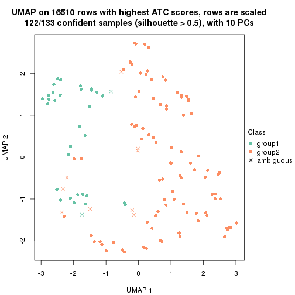
dimension_reduction(res, k = 3, method = "UMAP")
dimension_reduction(res, k = 4, method = "UMAP")
dimension_reduction(res, k = 5, method = "UMAP")
dimension_reduction(res, k = 6, method = "UMAP")

Following heatmap shows how subgroups are split when increasing k:
collect_classes(res)
If matrix rows can be associated to genes, consider to use GO_Enrichment(res,
...) to perform function enrichment for the signature genes.
The object with results only for a single top-value method and a single partition method can be extracted as:
res = res_list["ATC", "NMF"]
# you can also extract it by
# res = res_list["ATC:NMF"]
A summary of res and all the functions that can be applied to it:
res
#> A 'ConsensusPartition' object with k = 2, 3, 4, 5, 6.
#> On a matrix with 16510 rows and 133 columns.
#> Top rows (1000, 2000, 3000, 4000, 5000) are extracted by 'ATC' method.
#> Subgroups are detected by 'NMF' method.
#> Performed in total 1250 partitions by row resampling.
#> Best k for subgroups seems to be 2.
#>
#> Following methods can be applied to this 'ConsensusPartition' object:
#> [1] "cola_report" "collect_classes" "collect_plots"
#> [4] "collect_stats" "colnames" "compare_signatures"
#> [7] "consensus_heatmap" "dimension_reduction" "functional_enrichment"
#> [10] "get_anno_col" "get_anno" "get_classes"
#> [13] "get_consensus" "get_matrix" "get_membership"
#> [16] "get_param" "get_signatures" "get_stats"
#> [19] "is_best_k" "is_stable_k" "membership_heatmap"
#> [22] "ncol" "nrow" "plot_ecdf"
#> [25] "rownames" "select_partition_number" "show"
#> [28] "suggest_best_k" "test_to_known_factors"
collect_plots() function collects all the plots made from res for all k (number of partitions)
into one single page to provide an easy and fast comparison between different k.
collect_plots(res)

The plots are:
k and the heatmap of
predicted classes for each k.k.k.k.All the plots in panels can be made by individual functions and they are plotted later in this section.
select_partition_number() produces several plots showing different
statistics for choosing “optimized” k. There are following statistics:
k;k, the area increased is defined as \(A_k - A_{k-1}\).The detailed explanations of these statistics can be found in the cola vignette.
Generally speaking, lower PAC score, higher mean silhouette score or higher
concordance corresponds to better partition. Rand index and Jaccard index
measure how similar the current partition is compared to partition with k-1.
If they are too similar, we won't accept k is better than k-1.
select_partition_number(res)
The numeric values for all these statistics can be obtained by get_stats().
get_stats(res)
#> k 1-PAC mean_silhouette concordance area_increased Rand Jaccard
#> 2 2 0.893 0.931 0.971 0.4924 0.509 0.509
#> 3 3 0.855 0.878 0.938 0.3369 0.700 0.477
#> 4 4 0.724 0.794 0.893 0.0970 0.896 0.713
#> 5 5 0.604 0.534 0.760 0.0723 0.875 0.602
#> 6 6 0.577 0.478 0.662 0.0452 0.885 0.585
suggest_best_k() suggests the best \(k\) based on these statistics. The rules are as follows:
NA.suggest_best_k(res)
#> [1] 2
Following shows the table of the partitions (You need to click the show/hide
code output link to see it). The membership matrix (columns with name p*)
is inferred by
clue::cl_consensus()
function with the SE method. Basically the value in the membership matrix
represents the probability to belong to a certain group. The finall class
label for an item is determined with the group with highest probability it
belongs to.
In get_classes() function, the entropy is calculated from the membership
matrix and the silhouette score is calculated from the consensus matrix.
cbind(get_classes(res, k = 2), get_membership(res, k = 2))
#> class entropy silhouette p1 p2
#> ERR946976 1 0.0000 0.977 1.000 0.000
#> ERR947001 1 0.0000 0.977 1.000 0.000
#> ERR946975 2 0.0000 0.963 0.000 1.000
#> ERR947000 2 0.0000 0.963 0.000 1.000
#> ERR946972 1 0.0000 0.977 1.000 0.000
#> ERR946997 1 0.0000 0.977 1.000 0.000
#> ERR946986 1 0.1414 0.963 0.980 0.020
#> ERR947011 1 0.2778 0.938 0.952 0.048
#> ERR946977 1 0.0000 0.977 1.000 0.000
#> ERR947002 1 0.0000 0.977 1.000 0.000
#> ERR946974 2 0.9000 0.563 0.316 0.684
#> ERR946999 2 0.7299 0.750 0.204 0.796
#> ERR946971 1 0.0000 0.977 1.000 0.000
#> ERR946996 1 0.0000 0.977 1.000 0.000
#> ERR946992 2 0.0000 0.963 0.000 1.000
#> ERR947017 2 0.0000 0.963 0.000 1.000
#> ERR946984 1 0.7602 0.713 0.780 0.220
#> ERR947009 1 0.9732 0.292 0.596 0.404
#> ERR946987 2 0.0000 0.963 0.000 1.000
#> ERR947012 2 0.0000 0.963 0.000 1.000
#> ERR946991 2 0.0000 0.963 0.000 1.000
#> ERR947016 2 0.0000 0.963 0.000 1.000
#> ERR946983 2 0.0000 0.963 0.000 1.000
#> ERR947008 2 0.0000 0.963 0.000 1.000
#> ERR946970 1 0.0000 0.977 1.000 0.000
#> ERR946995 1 0.0000 0.977 1.000 0.000
#> ERR946969 1 0.0000 0.977 1.000 0.000
#> ERR946994 1 0.0000 0.977 1.000 0.000
#> ERR946982 2 0.0000 0.963 0.000 1.000
#> ERR947007 2 0.0000 0.963 0.000 1.000
#> ERR946988 2 0.0000 0.963 0.000 1.000
#> ERR947013 2 0.0000 0.963 0.000 1.000
#> ERR946985 2 0.1633 0.944 0.024 0.976
#> ERR947010 2 0.1633 0.944 0.024 0.976
#> ERR946989 1 0.0000 0.977 1.000 0.000
#> ERR947014 1 0.0000 0.977 1.000 0.000
#> ERR946968 1 0.0000 0.977 1.000 0.000
#> ERR946993 1 0.0000 0.977 1.000 0.000
#> ERR946990 1 0.0376 0.975 0.996 0.004
#> ERR947015 1 0.0000 0.977 1.000 0.000
#> ERR946980 2 0.0000 0.963 0.000 1.000
#> ERR947005 2 0.0000 0.963 0.000 1.000
#> ERR946978 1 0.0000 0.977 1.000 0.000
#> ERR947003 1 0.0000 0.977 1.000 0.000
#> ERR946979 2 0.0000 0.963 0.000 1.000
#> ERR947004 2 0.0000 0.963 0.000 1.000
#> ERR946957 1 0.0000 0.977 1.000 0.000
#> ERR946962 1 0.0000 0.977 1.000 0.000
#> ERR946958 1 0.0000 0.977 1.000 0.000
#> ERR946963 1 0.0000 0.977 1.000 0.000
#> ERR946959 1 0.0000 0.977 1.000 0.000
#> ERR946964 1 0.0000 0.977 1.000 0.000
#> ERR946967 1 0.0000 0.977 1.000 0.000
#> ERR862690 1 0.0000 0.977 1.000 0.000
#> ERR914278 2 0.0000 0.963 0.000 1.000
#> ERR914314 2 0.0000 0.963 0.000 1.000
#> ERR914279 1 0.0000 0.977 1.000 0.000
#> ERR914315 1 0.0000 0.977 1.000 0.000
#> ERR914280 2 0.0000 0.963 0.000 1.000
#> ERR914316 2 0.0000 0.963 0.000 1.000
#> ERR914281 2 0.0000 0.963 0.000 1.000
#> ERR914317 2 0.0000 0.963 0.000 1.000
#> ERR914282 2 0.0000 0.963 0.000 1.000
#> ERR914318 2 0.0000 0.963 0.000 1.000
#> ERR914283 1 0.0000 0.977 1.000 0.000
#> ERR914319 1 0.0000 0.977 1.000 0.000
#> ERR914284 1 0.0000 0.977 1.000 0.000
#> ERR914320 1 0.0000 0.977 1.000 0.000
#> ERR914285 2 0.7674 0.724 0.224 0.776
#> ERR914321 2 0.5519 0.844 0.128 0.872
#> ERR914286 2 0.0000 0.963 0.000 1.000
#> ERR914322 2 0.0000 0.963 0.000 1.000
#> ERR914287 2 0.9087 0.546 0.324 0.676
#> ERR914323 2 0.7950 0.698 0.240 0.760
#> ERR914288 2 0.0000 0.963 0.000 1.000
#> ERR914324 2 0.0000 0.963 0.000 1.000
#> ERR914289 1 0.2043 0.953 0.968 0.032
#> ERR914290 2 0.0672 0.957 0.008 0.992
#> ERR914326 2 0.0376 0.960 0.004 0.996
#> ERR914291 2 0.0000 0.963 0.000 1.000
#> ERR914327 2 0.0000 0.963 0.000 1.000
#> ERR914292 1 0.1414 0.963 0.980 0.020
#> ERR914328 1 0.2603 0.942 0.956 0.044
#> ERR914293 1 0.0000 0.977 1.000 0.000
#> ERR914329 1 0.0000 0.977 1.000 0.000
#> ERR914294 2 0.0000 0.963 0.000 1.000
#> ERR914330 2 0.0000 0.963 0.000 1.000
#> ERR914295 1 0.0000 0.977 1.000 0.000
#> ERR914331 1 0.0000 0.977 1.000 0.000
#> ERR914296 1 0.5059 0.867 0.888 0.112
#> ERR914332 1 0.7602 0.714 0.780 0.220
#> ERR914297 2 0.0000 0.963 0.000 1.000
#> ERR914333 2 0.0000 0.963 0.000 1.000
#> ERR914298 1 0.0000 0.977 1.000 0.000
#> ERR914334 1 0.0000 0.977 1.000 0.000
#> ERR914299 2 0.0000 0.963 0.000 1.000
#> ERR914335 2 0.0000 0.963 0.000 1.000
#> ERR914300 2 0.0376 0.960 0.004 0.996
#> ERR914336 2 0.0000 0.963 0.000 1.000
#> ERR914301 2 0.0000 0.963 0.000 1.000
#> ERR914337 2 0.0000 0.963 0.000 1.000
#> ERR914302 2 0.0000 0.963 0.000 1.000
#> ERR914338 2 0.0000 0.963 0.000 1.000
#> ERR914303 2 0.0000 0.963 0.000 1.000
#> ERR914339 2 0.0000 0.963 0.000 1.000
#> ERR914304 2 0.0000 0.963 0.000 1.000
#> ERR914340 2 0.0000 0.963 0.000 1.000
#> ERR914305 2 0.0000 0.963 0.000 1.000
#> ERR914341 2 0.0000 0.963 0.000 1.000
#> ERR914306 2 0.0000 0.963 0.000 1.000
#> ERR914342 2 0.0000 0.963 0.000 1.000
#> ERR914307 2 0.0000 0.963 0.000 1.000
#> ERR914343 2 0.0000 0.963 0.000 1.000
#> ERR914308 2 0.7815 0.710 0.232 0.768
#> ERR914344 2 0.5842 0.830 0.140 0.860
#> ERR914309 1 0.0376 0.975 0.996 0.004
#> ERR914345 1 0.0672 0.972 0.992 0.008
#> ERR914310 2 0.9970 0.154 0.468 0.532
#> ERR914346 2 0.9686 0.376 0.396 0.604
#> ERR914311 2 0.0000 0.963 0.000 1.000
#> ERR914347 2 0.0000 0.963 0.000 1.000
#> ERR914312 2 0.0000 0.963 0.000 1.000
#> ERR914348 2 0.0000 0.963 0.000 1.000
#> ERR914313 2 0.0000 0.963 0.000 1.000
#> ERR914349 2 0.0000 0.963 0.000 1.000
#> ERR946960 1 0.0000 0.977 1.000 0.000
#> ERR946965 1 0.0000 0.977 1.000 0.000
#> ERR946966 2 0.0000 0.963 0.000 1.000
#> ERR946973 1 0.0000 0.977 1.000 0.000
#> ERR946998 1 0.0000 0.977 1.000 0.000
#> ERR946981 2 0.0000 0.963 0.000 1.000
#> ERR947006 2 0.0000 0.963 0.000 1.000
#> ERR914325 1 0.2423 0.946 0.960 0.040
cbind(get_classes(res, k = 3), get_membership(res, k = 3))
#> class entropy silhouette p1 p2 p3
#> ERR946976 3 0.1031 0.9122 0.024 0.000 0.976
#> ERR947001 3 0.1031 0.9122 0.024 0.000 0.976
#> ERR946975 2 0.1643 0.9442 0.044 0.956 0.000
#> ERR947000 2 0.2537 0.9172 0.080 0.920 0.000
#> ERR946972 3 0.0592 0.9130 0.012 0.000 0.988
#> ERR946997 3 0.0592 0.9130 0.012 0.000 0.988
#> ERR946986 3 0.0747 0.9062 0.000 0.016 0.984
#> ERR947011 3 0.0592 0.9078 0.000 0.012 0.988
#> ERR946977 3 0.0892 0.9045 0.000 0.020 0.980
#> ERR947002 3 0.0892 0.9045 0.000 0.020 0.980
#> ERR946974 3 0.5553 0.6339 0.004 0.272 0.724
#> ERR946999 2 0.6944 0.0275 0.016 0.516 0.468
#> ERR946971 3 0.0747 0.9131 0.016 0.000 0.984
#> ERR946996 3 0.0892 0.9129 0.020 0.000 0.980
#> ERR946992 2 0.0592 0.9497 0.000 0.988 0.012
#> ERR947017 2 0.0424 0.9514 0.000 0.992 0.008
#> ERR946984 3 0.2537 0.8651 0.000 0.080 0.920
#> ERR947009 3 0.3340 0.8322 0.000 0.120 0.880
#> ERR946987 2 0.1163 0.9405 0.000 0.972 0.028
#> ERR947012 2 0.1031 0.9431 0.000 0.976 0.024
#> ERR946991 2 0.0747 0.9477 0.000 0.984 0.016
#> ERR947016 2 0.0747 0.9477 0.000 0.984 0.016
#> ERR946983 2 0.0000 0.9538 0.000 1.000 0.000
#> ERR947008 2 0.0424 0.9554 0.008 0.992 0.000
#> ERR946970 3 0.1031 0.9122 0.024 0.000 0.976
#> ERR946995 3 0.1031 0.9122 0.024 0.000 0.976
#> ERR946969 3 0.0592 0.9079 0.000 0.012 0.988
#> ERR946994 3 0.0000 0.9111 0.000 0.000 1.000
#> ERR946982 2 0.0592 0.9497 0.000 0.988 0.012
#> ERR947007 2 0.0237 0.9529 0.000 0.996 0.004
#> ERR946988 2 0.5926 0.4158 0.000 0.644 0.356
#> ERR947013 2 0.3941 0.8022 0.000 0.844 0.156
#> ERR946985 3 0.5859 0.5113 0.000 0.344 0.656
#> ERR947010 3 0.5905 0.4937 0.000 0.352 0.648
#> ERR946989 3 0.0237 0.9120 0.004 0.000 0.996
#> ERR947014 3 0.0592 0.9130 0.012 0.000 0.988
#> ERR946968 3 0.1163 0.9103 0.028 0.000 0.972
#> ERR946993 3 0.1163 0.9103 0.028 0.000 0.972
#> ERR946990 3 0.0424 0.9127 0.008 0.000 0.992
#> ERR947015 3 0.0892 0.9129 0.020 0.000 0.980
#> ERR946980 2 0.2356 0.9034 0.000 0.928 0.072
#> ERR947005 2 0.0747 0.9477 0.000 0.984 0.016
#> ERR946978 1 0.5098 0.7020 0.752 0.000 0.248
#> ERR947003 1 0.3340 0.8544 0.880 0.000 0.120
#> ERR946979 2 0.0237 0.9529 0.000 0.996 0.004
#> ERR947004 2 0.0237 0.9529 0.000 0.996 0.004
#> ERR946957 3 0.0747 0.9131 0.016 0.000 0.984
#> ERR946962 3 0.1031 0.9122 0.024 0.000 0.976
#> ERR946958 3 0.2537 0.8655 0.080 0.000 0.920
#> ERR946963 3 0.5882 0.4036 0.348 0.000 0.652
#> ERR946959 1 0.0747 0.9200 0.984 0.000 0.016
#> ERR946964 1 0.0747 0.9200 0.984 0.000 0.016
#> ERR946967 3 0.0747 0.9062 0.000 0.016 0.984
#> ERR862690 3 0.0747 0.9062 0.000 0.016 0.984
#> ERR914278 2 0.0747 0.9563 0.016 0.984 0.000
#> ERR914314 2 0.0747 0.9563 0.016 0.984 0.000
#> ERR914279 1 0.1163 0.9160 0.972 0.000 0.028
#> ERR914315 1 0.1163 0.9160 0.972 0.000 0.028
#> ERR914280 2 0.1529 0.9467 0.040 0.960 0.000
#> ERR914316 2 0.2796 0.9066 0.092 0.908 0.000
#> ERR914281 2 0.0592 0.9497 0.000 0.988 0.012
#> ERR914317 2 0.0592 0.9497 0.000 0.988 0.012
#> ERR914282 2 0.1031 0.9544 0.024 0.976 0.000
#> ERR914318 2 0.1289 0.9510 0.032 0.968 0.000
#> ERR914283 1 0.2165 0.8970 0.936 0.000 0.064
#> ERR914319 1 0.1964 0.9018 0.944 0.000 0.056
#> ERR914284 1 0.2959 0.8730 0.900 0.000 0.100
#> ERR914320 1 0.1289 0.9155 0.968 0.000 0.032
#> ERR914285 3 0.5254 0.6537 0.000 0.264 0.736
#> ERR914321 3 0.6483 0.1984 0.004 0.452 0.544
#> ERR914286 2 0.1529 0.9467 0.040 0.960 0.000
#> ERR914322 2 0.2261 0.9269 0.068 0.932 0.000
#> ERR914287 1 0.0592 0.9219 0.988 0.012 0.000
#> ERR914323 1 0.0592 0.9219 0.988 0.012 0.000
#> ERR914288 1 0.1289 0.9115 0.968 0.032 0.000
#> ERR914324 1 0.1163 0.9138 0.972 0.028 0.000
#> ERR914289 1 0.5760 0.5629 0.672 0.000 0.328
#> ERR914290 1 0.0747 0.9204 0.984 0.016 0.000
#> ERR914326 1 0.0747 0.9204 0.984 0.016 0.000
#> ERR914291 2 0.2066 0.9329 0.060 0.940 0.000
#> ERR914327 2 0.3551 0.8632 0.132 0.868 0.000
#> ERR914292 1 0.6204 0.3334 0.576 0.000 0.424
#> ERR914328 1 0.3267 0.8573 0.884 0.000 0.116
#> ERR914293 1 0.0592 0.9211 0.988 0.000 0.012
#> ERR914329 1 0.0237 0.9220 0.996 0.000 0.004
#> ERR914294 2 0.0747 0.9563 0.016 0.984 0.000
#> ERR914330 2 0.0747 0.9563 0.016 0.984 0.000
#> ERR914295 1 0.1529 0.9107 0.960 0.000 0.040
#> ERR914331 1 0.1031 0.9175 0.976 0.000 0.024
#> ERR914296 1 0.0424 0.9221 0.992 0.008 0.000
#> ERR914332 1 0.0592 0.9219 0.988 0.012 0.000
#> ERR914297 1 0.1411 0.9089 0.964 0.036 0.000
#> ERR914333 1 0.1411 0.9089 0.964 0.036 0.000
#> ERR914298 1 0.0747 0.9200 0.984 0.000 0.016
#> ERR914334 1 0.0592 0.9211 0.988 0.000 0.012
#> ERR914299 2 0.2537 0.9171 0.080 0.920 0.000
#> ERR914335 2 0.3267 0.8814 0.116 0.884 0.000
#> ERR914300 1 0.0747 0.9204 0.984 0.016 0.000
#> ERR914336 1 0.0747 0.9204 0.984 0.016 0.000
#> ERR914301 2 0.0892 0.9555 0.020 0.980 0.000
#> ERR914337 2 0.1031 0.9544 0.024 0.976 0.000
#> ERR914302 2 0.0747 0.9563 0.016 0.984 0.000
#> ERR914338 2 0.1163 0.9528 0.028 0.972 0.000
#> ERR914303 2 0.0747 0.9563 0.016 0.984 0.000
#> ERR914339 2 0.0747 0.9563 0.016 0.984 0.000
#> ERR914304 2 0.0747 0.9563 0.016 0.984 0.000
#> ERR914340 2 0.0747 0.9563 0.016 0.984 0.000
#> ERR914305 2 0.1031 0.9544 0.024 0.976 0.000
#> ERR914341 2 0.1163 0.9528 0.028 0.972 0.000
#> ERR914306 2 0.0747 0.9563 0.016 0.984 0.000
#> ERR914342 2 0.0747 0.9563 0.016 0.984 0.000
#> ERR914307 1 0.4750 0.7207 0.784 0.216 0.000
#> ERR914343 1 0.3340 0.8354 0.880 0.120 0.000
#> ERR914308 1 0.0592 0.9219 0.988 0.012 0.000
#> ERR914344 1 0.0592 0.9219 0.988 0.012 0.000
#> ERR914309 1 0.0592 0.9211 0.988 0.000 0.012
#> ERR914345 1 0.0237 0.9220 0.996 0.000 0.004
#> ERR914310 1 0.0592 0.9219 0.988 0.012 0.000
#> ERR914346 1 0.0592 0.9219 0.988 0.012 0.000
#> ERR914311 2 0.0747 0.9563 0.016 0.984 0.000
#> ERR914347 2 0.0747 0.9563 0.016 0.984 0.000
#> ERR914312 2 0.0747 0.9563 0.016 0.984 0.000
#> ERR914348 2 0.0892 0.9555 0.020 0.980 0.000
#> ERR914313 2 0.0237 0.9529 0.000 0.996 0.004
#> ERR914349 2 0.0237 0.9529 0.000 0.996 0.004
#> ERR946960 3 0.1289 0.9079 0.032 0.000 0.968
#> ERR946965 3 0.1289 0.9079 0.032 0.000 0.968
#> ERR946966 1 0.5835 0.4849 0.660 0.340 0.000
#> ERR946973 3 0.1031 0.9122 0.024 0.000 0.976
#> ERR946998 3 0.1031 0.9122 0.024 0.000 0.976
#> ERR946981 2 0.0592 0.9497 0.000 0.988 0.012
#> ERR947006 2 0.0592 0.9497 0.000 0.988 0.012
#> ERR914325 1 0.4842 0.7356 0.776 0.000 0.224
cbind(get_classes(res, k = 4), get_membership(res, k = 4))
#> class entropy silhouette p1 p2 p3 p4
#> ERR946976 3 0.1211 0.8363 0.000 0.000 0.960 0.040
#> ERR947001 3 0.3610 0.7370 0.000 0.000 0.800 0.200
#> ERR946975 2 0.1510 0.9123 0.016 0.956 0.000 0.028
#> ERR947000 2 0.2124 0.8982 0.040 0.932 0.000 0.028
#> ERR946972 3 0.0188 0.8425 0.000 0.000 0.996 0.004
#> ERR946997 3 0.0188 0.8425 0.000 0.000 0.996 0.004
#> ERR946986 3 0.4088 0.7536 0.000 0.040 0.820 0.140
#> ERR947011 3 0.6289 0.5674 0.000 0.116 0.648 0.236
#> ERR946977 4 0.3873 0.5986 0.000 0.000 0.228 0.772
#> ERR947002 4 0.2868 0.7147 0.000 0.000 0.136 0.864
#> ERR946974 4 0.1545 0.7784 0.000 0.040 0.008 0.952
#> ERR946999 4 0.1584 0.7810 0.000 0.036 0.012 0.952
#> ERR946971 3 0.0469 0.8429 0.000 0.000 0.988 0.012
#> ERR946996 3 0.0469 0.8429 0.000 0.000 0.988 0.012
#> ERR946992 2 0.0817 0.9221 0.000 0.976 0.000 0.024
#> ERR947017 2 0.0817 0.9221 0.000 0.976 0.000 0.024
#> ERR946984 3 0.4352 0.7282 0.000 0.104 0.816 0.080
#> ERR947009 3 0.4656 0.6733 0.000 0.160 0.784 0.056
#> ERR946987 2 0.4746 0.5526 0.000 0.632 0.000 0.368
#> ERR947012 2 0.4679 0.5837 0.000 0.648 0.000 0.352
#> ERR946991 2 0.0188 0.9244 0.000 0.996 0.000 0.004
#> ERR947016 2 0.0188 0.9244 0.000 0.996 0.000 0.004
#> ERR946983 2 0.0188 0.9244 0.000 0.996 0.000 0.004
#> ERR947008 2 0.0000 0.9245 0.000 1.000 0.000 0.000
#> ERR946970 4 0.1637 0.7795 0.000 0.000 0.060 0.940
#> ERR946995 4 0.1557 0.7821 0.000 0.000 0.056 0.944
#> ERR946969 3 0.5183 0.4262 0.000 0.008 0.584 0.408
#> ERR946994 4 0.5150 0.1301 0.000 0.008 0.396 0.596
#> ERR946982 2 0.2081 0.8972 0.000 0.916 0.000 0.084
#> ERR947007 2 0.1867 0.9022 0.000 0.928 0.000 0.072
#> ERR946988 2 0.4222 0.7103 0.000 0.728 0.000 0.272
#> ERR947013 2 0.4431 0.6619 0.000 0.696 0.000 0.304
#> ERR946985 4 0.1716 0.7620 0.000 0.064 0.000 0.936
#> ERR947010 4 0.1716 0.7620 0.000 0.064 0.000 0.936
#> ERR946989 4 0.1474 0.7839 0.000 0.000 0.052 0.948
#> ERR947014 4 0.1474 0.7839 0.000 0.000 0.052 0.948
#> ERR946968 3 0.3726 0.7210 0.000 0.000 0.788 0.212
#> ERR946993 3 0.3837 0.7078 0.000 0.000 0.776 0.224
#> ERR946990 3 0.2081 0.8217 0.000 0.000 0.916 0.084
#> ERR947015 3 0.4477 0.6102 0.000 0.000 0.688 0.312
#> ERR946980 2 0.2741 0.8846 0.000 0.892 0.012 0.096
#> ERR947005 2 0.2466 0.8891 0.000 0.900 0.004 0.096
#> ERR946978 3 0.4079 0.6958 0.180 0.000 0.800 0.020
#> ERR947003 1 0.5691 0.2656 0.564 0.000 0.408 0.028
#> ERR946979 2 0.0000 0.9245 0.000 1.000 0.000 0.000
#> ERR947004 2 0.0000 0.9245 0.000 1.000 0.000 0.000
#> ERR946957 3 0.0000 0.8422 0.000 0.000 1.000 0.000
#> ERR946962 3 0.0000 0.8422 0.000 0.000 1.000 0.000
#> ERR946958 3 0.5773 0.4727 0.044 0.000 0.620 0.336
#> ERR946963 3 0.6597 0.2889 0.088 0.000 0.540 0.372
#> ERR946959 1 0.1706 0.8711 0.948 0.000 0.016 0.036
#> ERR946964 1 0.1452 0.8742 0.956 0.000 0.008 0.036
#> ERR946967 3 0.0188 0.8409 0.000 0.000 0.996 0.004
#> ERR862690 3 0.0188 0.8409 0.000 0.000 0.996 0.004
#> ERR914278 2 0.4103 0.7352 0.000 0.744 0.000 0.256
#> ERR914314 2 0.4040 0.7469 0.000 0.752 0.000 0.248
#> ERR914279 1 0.4599 0.5924 0.736 0.000 0.016 0.248
#> ERR914315 1 0.3591 0.7377 0.824 0.000 0.008 0.168
#> ERR914280 2 0.3128 0.8885 0.040 0.884 0.000 0.076
#> ERR914316 2 0.4055 0.8351 0.108 0.832 0.000 0.060
#> ERR914281 2 0.2408 0.8838 0.000 0.896 0.000 0.104
#> ERR914317 2 0.2216 0.8915 0.000 0.908 0.000 0.092
#> ERR914282 2 0.0336 0.9243 0.008 0.992 0.000 0.000
#> ERR914318 2 0.0336 0.9243 0.008 0.992 0.000 0.000
#> ERR914283 1 0.3791 0.7139 0.796 0.000 0.200 0.004
#> ERR914319 1 0.3105 0.7998 0.868 0.000 0.120 0.012
#> ERR914284 4 0.4804 0.6424 0.276 0.000 0.016 0.708
#> ERR914320 4 0.5075 0.5336 0.344 0.000 0.012 0.644
#> ERR914285 4 0.1398 0.7885 0.000 0.004 0.040 0.956
#> ERR914321 4 0.1690 0.7907 0.008 0.008 0.032 0.952
#> ERR914286 2 0.0804 0.9241 0.008 0.980 0.000 0.012
#> ERR914322 2 0.1151 0.9209 0.024 0.968 0.000 0.008
#> ERR914287 1 0.0336 0.8826 0.992 0.000 0.000 0.008
#> ERR914323 1 0.0469 0.8817 0.988 0.000 0.000 0.012
#> ERR914288 1 0.3501 0.7866 0.848 0.020 0.000 0.132
#> ERR914324 1 0.1722 0.8644 0.944 0.008 0.000 0.048
#> ERR914289 4 0.2222 0.7880 0.060 0.000 0.016 0.924
#> ERR914290 1 0.0188 0.8832 0.996 0.000 0.000 0.004
#> ERR914326 1 0.0188 0.8832 0.996 0.000 0.000 0.004
#> ERR914291 2 0.1022 0.9157 0.032 0.968 0.000 0.000
#> ERR914327 2 0.2888 0.8404 0.124 0.872 0.000 0.004
#> ERR914292 4 0.4123 0.7560 0.136 0.000 0.044 0.820
#> ERR914328 4 0.4767 0.6655 0.256 0.000 0.020 0.724
#> ERR914293 1 0.0657 0.8824 0.984 0.000 0.004 0.012
#> ERR914329 1 0.0188 0.8831 0.996 0.000 0.000 0.004
#> ERR914294 2 0.2530 0.8899 0.004 0.896 0.000 0.100
#> ERR914330 2 0.1970 0.9091 0.008 0.932 0.000 0.060
#> ERR914295 4 0.5590 0.2576 0.456 0.000 0.020 0.524
#> ERR914331 1 0.4948 0.0516 0.560 0.000 0.000 0.440
#> ERR914296 1 0.0188 0.8832 0.996 0.000 0.000 0.004
#> ERR914332 1 0.0188 0.8832 0.996 0.000 0.000 0.004
#> ERR914297 1 0.3591 0.7158 0.824 0.168 0.000 0.008
#> ERR914333 1 0.2593 0.7972 0.892 0.104 0.000 0.004
#> ERR914298 1 0.1305 0.8751 0.960 0.000 0.004 0.036
#> ERR914334 1 0.1305 0.8751 0.960 0.000 0.004 0.036
#> ERR914299 2 0.2197 0.8807 0.080 0.916 0.000 0.004
#> ERR914335 2 0.2944 0.8361 0.128 0.868 0.000 0.004
#> ERR914300 1 0.1118 0.8788 0.964 0.000 0.000 0.036
#> ERR914336 1 0.1022 0.8787 0.968 0.000 0.000 0.032
#> ERR914301 2 0.0336 0.9243 0.008 0.992 0.000 0.000
#> ERR914337 2 0.0469 0.9234 0.012 0.988 0.000 0.000
#> ERR914302 2 0.1576 0.9174 0.004 0.948 0.000 0.048
#> ERR914338 2 0.1356 0.9214 0.008 0.960 0.000 0.032
#> ERR914303 2 0.0188 0.9245 0.004 0.996 0.000 0.000
#> ERR914339 2 0.0336 0.9243 0.008 0.992 0.000 0.000
#> ERR914304 2 0.0524 0.9240 0.008 0.988 0.000 0.004
#> ERR914340 2 0.0336 0.9243 0.008 0.992 0.000 0.000
#> ERR914305 2 0.0336 0.9243 0.008 0.992 0.000 0.000
#> ERR914341 2 0.0336 0.9243 0.008 0.992 0.000 0.000
#> ERR914306 2 0.0000 0.9245 0.000 1.000 0.000 0.000
#> ERR914342 2 0.0188 0.9245 0.004 0.996 0.000 0.000
#> ERR914307 1 0.3852 0.6907 0.808 0.180 0.000 0.012
#> ERR914343 1 0.3048 0.7893 0.876 0.108 0.000 0.016
#> ERR914308 1 0.0188 0.8832 0.996 0.000 0.000 0.004
#> ERR914344 1 0.0188 0.8832 0.996 0.000 0.000 0.004
#> ERR914309 1 0.1510 0.8743 0.956 0.000 0.016 0.028
#> ERR914345 1 0.0592 0.8806 0.984 0.000 0.000 0.016
#> ERR914310 4 0.4372 0.6563 0.268 0.004 0.000 0.728
#> ERR914346 4 0.4872 0.5129 0.356 0.004 0.000 0.640
#> ERR914311 2 0.0000 0.9245 0.000 1.000 0.000 0.000
#> ERR914347 2 0.0000 0.9245 0.000 1.000 0.000 0.000
#> ERR914312 2 0.0000 0.9245 0.000 1.000 0.000 0.000
#> ERR914348 2 0.0188 0.9245 0.004 0.996 0.000 0.000
#> ERR914313 2 0.2216 0.8915 0.000 0.908 0.000 0.092
#> ERR914349 2 0.1940 0.9001 0.000 0.924 0.000 0.076
#> ERR946960 3 0.0469 0.8429 0.000 0.000 0.988 0.012
#> ERR946965 3 0.0469 0.8429 0.000 0.000 0.988 0.012
#> ERR946966 2 0.4830 0.3329 0.392 0.608 0.000 0.000
#> ERR946973 3 0.0000 0.8422 0.000 0.000 1.000 0.000
#> ERR946998 3 0.0000 0.8422 0.000 0.000 1.000 0.000
#> ERR946981 2 0.0188 0.9244 0.000 0.996 0.000 0.004
#> ERR947006 2 0.0188 0.9244 0.000 0.996 0.000 0.004
#> ERR914325 4 0.3495 0.7633 0.140 0.000 0.016 0.844
cbind(get_classes(res, k = 5), get_membership(res, k = 5))
#> class entropy silhouette p1 p2 p3 p4 p5
#> ERR946976 3 0.2270 0.79870 0.000 0.000 0.904 0.020 0.076
#> ERR947001 3 0.3284 0.75798 0.000 0.000 0.828 0.024 0.148
#> ERR946975 2 0.6944 -0.05187 0.336 0.360 0.000 0.300 0.004
#> ERR947000 1 0.6704 0.10088 0.416 0.376 0.000 0.204 0.004
#> ERR946972 3 0.0000 0.81246 0.000 0.000 1.000 0.000 0.000
#> ERR946997 3 0.0290 0.81126 0.000 0.000 0.992 0.000 0.008
#> ERR946986 3 0.5447 0.67269 0.000 0.036 0.696 0.200 0.068
#> ERR947011 3 0.6336 0.64550 0.000 0.048 0.632 0.140 0.180
#> ERR946977 4 0.5422 0.49651 0.000 0.000 0.144 0.660 0.196
#> ERR947002 4 0.5288 0.49802 0.000 0.000 0.100 0.656 0.244
#> ERR946974 4 0.3790 0.54138 0.000 0.000 0.004 0.724 0.272
#> ERR946999 4 0.3990 0.51987 0.000 0.000 0.004 0.688 0.308
#> ERR946971 3 0.0324 0.81313 0.000 0.000 0.992 0.004 0.004
#> ERR946996 3 0.0324 0.81313 0.000 0.000 0.992 0.004 0.004
#> ERR946992 4 0.4192 0.26688 0.000 0.404 0.000 0.596 0.000
#> ERR947017 4 0.4235 0.21096 0.000 0.424 0.000 0.576 0.000
#> ERR946984 3 0.6312 0.42608 0.000 0.096 0.572 0.300 0.032
#> ERR947009 3 0.6305 0.48026 0.000 0.144 0.608 0.220 0.028
#> ERR946987 4 0.4430 0.52174 0.000 0.256 0.000 0.708 0.036
#> ERR947012 4 0.4161 0.49190 0.000 0.280 0.000 0.704 0.016
#> ERR946991 2 0.2583 0.73386 0.004 0.864 0.000 0.132 0.000
#> ERR947016 2 0.2179 0.75405 0.004 0.896 0.000 0.100 0.000
#> ERR946983 2 0.2011 0.75972 0.004 0.908 0.000 0.088 0.000
#> ERR947008 2 0.1768 0.76689 0.004 0.924 0.000 0.072 0.000
#> ERR946970 4 0.4659 0.10644 0.000 0.000 0.012 0.500 0.488
#> ERR946995 5 0.4559 -0.13700 0.000 0.000 0.008 0.480 0.512
#> ERR946969 3 0.5932 0.26868 0.000 0.000 0.456 0.104 0.440
#> ERR946994 5 0.5803 -0.09009 0.000 0.000 0.368 0.100 0.532
#> ERR946982 2 0.4305 0.01705 0.000 0.512 0.000 0.488 0.000
#> ERR947007 2 0.4278 0.14748 0.000 0.548 0.000 0.452 0.000
#> ERR946988 4 0.5973 0.30694 0.000 0.388 0.008 0.516 0.088
#> ERR947013 4 0.6619 0.30521 0.000 0.396 0.004 0.416 0.184
#> ERR946985 4 0.3878 0.56613 0.000 0.016 0.000 0.748 0.236
#> ERR947010 4 0.3863 0.56216 0.000 0.012 0.000 0.740 0.248
#> ERR946989 4 0.4211 0.45031 0.000 0.000 0.004 0.636 0.360
#> ERR947014 4 0.4341 0.38112 0.000 0.000 0.004 0.592 0.404
#> ERR946968 3 0.4540 0.53639 0.000 0.000 0.640 0.020 0.340
#> ERR946993 3 0.4570 0.52265 0.000 0.000 0.632 0.020 0.348
#> ERR946990 3 0.4711 0.72716 0.000 0.000 0.736 0.116 0.148
#> ERR947015 3 0.5636 0.45475 0.000 0.000 0.544 0.084 0.372
#> ERR946980 2 0.5121 0.44349 0.000 0.648 0.040 0.300 0.012
#> ERR947005 2 0.3562 0.66641 0.000 0.788 0.000 0.196 0.016
#> ERR946978 1 0.6537 0.27908 0.492 0.000 0.348 0.148 0.012
#> ERR947003 1 0.6374 0.47045 0.580 0.000 0.224 0.180 0.016
#> ERR946979 2 0.2179 0.74552 0.000 0.888 0.000 0.112 0.000
#> ERR947004 2 0.1410 0.77207 0.000 0.940 0.000 0.060 0.000
#> ERR946957 3 0.0000 0.81246 0.000 0.000 1.000 0.000 0.000
#> ERR946962 3 0.0000 0.81246 0.000 0.000 1.000 0.000 0.000
#> ERR946958 5 0.4928 -0.07003 0.004 0.000 0.428 0.020 0.548
#> ERR946963 5 0.4856 0.04978 0.004 0.000 0.392 0.020 0.584
#> ERR946959 1 0.3895 0.64642 0.796 0.000 0.032 0.164 0.008
#> ERR946964 1 0.2909 0.66493 0.848 0.000 0.000 0.140 0.012
#> ERR946967 3 0.0963 0.80317 0.000 0.000 0.964 0.036 0.000
#> ERR862690 3 0.0963 0.80317 0.000 0.000 0.964 0.036 0.000
#> ERR914278 2 0.4237 0.61635 0.000 0.772 0.000 0.076 0.152
#> ERR914314 2 0.4392 0.56996 0.004 0.748 0.000 0.048 0.200
#> ERR914279 5 0.3280 0.58283 0.160 0.000 0.012 0.004 0.824
#> ERR914315 5 0.3196 0.55851 0.192 0.000 0.004 0.000 0.804
#> ERR914280 4 0.5865 0.08098 0.060 0.416 0.000 0.508 0.016
#> ERR914316 4 0.6711 0.01152 0.164 0.404 0.000 0.420 0.012
#> ERR914281 2 0.3671 0.60858 0.000 0.756 0.000 0.236 0.008
#> ERR914317 2 0.3171 0.67972 0.000 0.816 0.000 0.176 0.008
#> ERR914282 2 0.0290 0.77925 0.000 0.992 0.000 0.008 0.000
#> ERR914318 2 0.0404 0.77926 0.012 0.988 0.000 0.000 0.000
#> ERR914283 1 0.6490 0.46254 0.580 0.000 0.276 0.092 0.052
#> ERR914319 1 0.6177 0.55249 0.636 0.000 0.220 0.092 0.052
#> ERR914284 5 0.1564 0.64673 0.024 0.000 0.004 0.024 0.948
#> ERR914320 5 0.1662 0.64476 0.056 0.000 0.004 0.004 0.936
#> ERR914285 5 0.2719 0.52528 0.000 0.000 0.004 0.144 0.852
#> ERR914321 5 0.2439 0.55479 0.000 0.000 0.004 0.120 0.876
#> ERR914286 2 0.1901 0.76473 0.004 0.928 0.000 0.056 0.012
#> ERR914322 2 0.2047 0.76815 0.012 0.928 0.000 0.040 0.020
#> ERR914287 1 0.4708 0.09924 0.548 0.016 0.000 0.000 0.436
#> ERR914323 1 0.4517 0.22545 0.600 0.012 0.000 0.000 0.388
#> ERR914288 5 0.6275 0.24990 0.308 0.176 0.000 0.000 0.516
#> ERR914324 5 0.6497 0.18848 0.320 0.208 0.000 0.000 0.472
#> ERR914289 5 0.1788 0.62133 0.008 0.004 0.000 0.056 0.932
#> ERR914290 1 0.1671 0.64683 0.924 0.000 0.000 0.000 0.076
#> ERR914326 1 0.1792 0.64410 0.916 0.000 0.000 0.000 0.084
#> ERR914291 2 0.3031 0.70020 0.128 0.852 0.000 0.004 0.016
#> ERR914327 2 0.4041 0.62337 0.176 0.780 0.000 0.004 0.040
#> ERR914292 5 0.2116 0.61489 0.008 0.000 0.004 0.076 0.912
#> ERR914328 5 0.1889 0.65041 0.036 0.004 0.004 0.020 0.936
#> ERR914293 1 0.2673 0.66904 0.892 0.000 0.004 0.060 0.044
#> ERR914329 1 0.2632 0.66049 0.888 0.000 0.000 0.040 0.072
#> ERR914294 2 0.4392 0.31191 0.000 0.612 0.000 0.380 0.008
#> ERR914330 2 0.4025 0.50070 0.000 0.700 0.000 0.292 0.008
#> ERR914295 1 0.5652 -0.00421 0.468 0.000 0.004 0.064 0.464
#> ERR914331 5 0.5121 -0.03481 0.468 0.000 0.004 0.028 0.500
#> ERR914296 1 0.2477 0.63580 0.892 0.008 0.008 0.000 0.092
#> ERR914332 1 0.2305 0.63304 0.896 0.012 0.000 0.000 0.092
#> ERR914297 1 0.4629 0.48214 0.708 0.252 0.000 0.028 0.012
#> ERR914333 1 0.3195 0.61582 0.856 0.100 0.000 0.004 0.040
#> ERR914298 1 0.3013 0.65911 0.832 0.000 0.000 0.160 0.008
#> ERR914334 1 0.2929 0.66123 0.840 0.000 0.000 0.152 0.008
#> ERR914299 2 0.3516 0.65898 0.164 0.812 0.000 0.004 0.020
#> ERR914335 2 0.3961 0.62533 0.184 0.780 0.000 0.004 0.032
#> ERR914300 1 0.3366 0.66434 0.828 0.000 0.000 0.140 0.032
#> ERR914336 1 0.3400 0.66541 0.828 0.000 0.000 0.136 0.036
#> ERR914301 2 0.0693 0.77865 0.012 0.980 0.000 0.008 0.000
#> ERR914337 2 0.0898 0.77778 0.020 0.972 0.000 0.008 0.000
#> ERR914302 2 0.4881 0.18913 0.016 0.520 0.000 0.460 0.004
#> ERR914338 2 0.4934 0.25797 0.020 0.544 0.000 0.432 0.004
#> ERR914303 2 0.0566 0.77885 0.012 0.984 0.000 0.004 0.000
#> ERR914339 2 0.0566 0.77885 0.012 0.984 0.000 0.004 0.000
#> ERR914304 2 0.3136 0.73679 0.052 0.868 0.000 0.072 0.008
#> ERR914340 2 0.3455 0.71810 0.084 0.844 0.000 0.068 0.004
#> ERR914305 2 0.1571 0.76119 0.060 0.936 0.000 0.004 0.000
#> ERR914341 2 0.1571 0.76119 0.060 0.936 0.000 0.004 0.000
#> ERR914306 2 0.0290 0.77925 0.000 0.992 0.000 0.008 0.000
#> ERR914342 2 0.0162 0.77921 0.000 0.996 0.000 0.004 0.000
#> ERR914307 5 0.6796 0.08971 0.288 0.352 0.000 0.000 0.360
#> ERR914343 5 0.6779 0.12329 0.304 0.304 0.000 0.000 0.392
#> ERR914308 1 0.6442 0.10194 0.480 0.196 0.000 0.000 0.324
#> ERR914344 1 0.5692 -0.04441 0.472 0.080 0.000 0.000 0.448
#> ERR914309 5 0.4373 0.42661 0.300 0.008 0.004 0.004 0.684
#> ERR914345 5 0.4108 0.42086 0.308 0.008 0.000 0.000 0.684
#> ERR914310 5 0.2142 0.64893 0.048 0.004 0.000 0.028 0.920
#> ERR914346 5 0.2116 0.63877 0.076 0.008 0.000 0.004 0.912
#> ERR914311 2 0.0566 0.77951 0.004 0.984 0.000 0.012 0.000
#> ERR914347 2 0.0566 0.77951 0.004 0.984 0.000 0.012 0.000
#> ERR914312 2 0.0451 0.77985 0.004 0.988 0.000 0.008 0.000
#> ERR914348 2 0.0324 0.77963 0.004 0.992 0.000 0.004 0.000
#> ERR914313 2 0.4101 0.36326 0.000 0.628 0.000 0.372 0.000
#> ERR914349 2 0.3983 0.43145 0.000 0.660 0.000 0.340 0.000
#> ERR946960 3 0.2270 0.79800 0.000 0.000 0.904 0.020 0.076
#> ERR946965 3 0.2208 0.79936 0.000 0.000 0.908 0.020 0.072
#> ERR946966 2 0.3093 0.69167 0.168 0.824 0.000 0.008 0.000
#> ERR946973 3 0.0000 0.81246 0.000 0.000 1.000 0.000 0.000
#> ERR946998 3 0.0000 0.81246 0.000 0.000 1.000 0.000 0.000
#> ERR946981 2 0.1768 0.76584 0.004 0.924 0.000 0.072 0.000
#> ERR947006 2 0.1571 0.76942 0.004 0.936 0.000 0.060 0.000
#> ERR914325 5 0.1525 0.63393 0.012 0.004 0.000 0.036 0.948
cbind(get_classes(res, k = 6), get_membership(res, k = 6))
#> class entropy silhouette p1 p2 p3 p4 p5 p6
#> ERR946976 3 0.6004 0.5749 0.004 0.000 0.584 NA 0.172 0.208
#> ERR947001 3 0.6287 0.5061 0.004 0.000 0.524 NA 0.172 0.268
#> ERR946975 1 0.6840 0.2371 0.476 0.272 0.000 NA 0.104 0.000
#> ERR947000 1 0.6438 0.1237 0.472 0.336 0.000 NA 0.056 0.000
#> ERR946972 3 0.1168 0.7489 0.000 0.000 0.956 NA 0.016 0.000
#> ERR946997 3 0.1408 0.7424 0.000 0.000 0.944 NA 0.020 0.000
#> ERR946986 5 0.5372 0.4715 0.000 0.052 0.148 NA 0.704 0.072
#> ERR947011 5 0.5785 0.4613 0.000 0.056 0.148 NA 0.676 0.084
#> ERR946977 5 0.3716 0.5507 0.000 0.000 0.044 NA 0.820 0.068
#> ERR947002 5 0.3977 0.5373 0.000 0.000 0.032 NA 0.796 0.096
#> ERR946974 5 0.4402 0.5082 0.000 0.000 0.000 NA 0.712 0.104
#> ERR946999 5 0.5966 0.2018 0.000 0.000 0.000 NA 0.448 0.296
#> ERR946971 3 0.0665 0.7631 0.004 0.000 0.980 NA 0.008 0.000
#> ERR946996 3 0.0665 0.7631 0.004 0.000 0.980 NA 0.008 0.000
#> ERR946992 5 0.5454 0.3268 0.000 0.236 0.000 NA 0.572 0.000
#> ERR947017 5 0.5726 0.1390 0.000 0.316 0.000 NA 0.496 0.000
#> ERR946984 5 0.5118 0.5453 0.000 0.116 0.128 NA 0.708 0.004
#> ERR947009 5 0.5221 0.5314 0.000 0.132 0.152 NA 0.680 0.000
#> ERR946987 5 0.4576 0.5143 0.000 0.044 0.000 NA 0.676 0.016
#> ERR947012 5 0.5017 0.4875 0.000 0.060 0.000 NA 0.612 0.016
#> ERR946991 5 0.4735 0.2413 0.000 0.432 0.000 NA 0.520 0.000
#> ERR947016 5 0.4755 0.1912 0.000 0.460 0.000 NA 0.492 0.000
#> ERR946983 2 0.4731 -0.0948 0.000 0.524 0.000 NA 0.428 0.000
#> ERR947008 2 0.4609 0.0897 0.000 0.588 0.000 NA 0.364 0.000
#> ERR946970 6 0.6157 0.0553 0.004 0.000 0.000 NA 0.364 0.384
#> ERR946995 6 0.6144 0.1304 0.004 0.000 0.000 NA 0.332 0.412
#> ERR946969 5 0.6637 0.1758 0.004 0.008 0.224 NA 0.512 0.216
#> ERR946994 5 0.6828 0.1242 0.004 0.008 0.224 NA 0.464 0.264
#> ERR946982 2 0.6056 0.3736 0.000 0.460 0.000 NA 0.268 0.004
#> ERR947007 2 0.5864 0.4530 0.000 0.512 0.000 NA 0.228 0.004
#> ERR946988 5 0.5557 0.5794 0.000 0.152 0.008 NA 0.672 0.052
#> ERR947013 5 0.6872 0.4934 0.000 0.188 0.000 NA 0.504 0.180
#> ERR946985 5 0.4870 0.4611 0.000 0.008 0.000 NA 0.612 0.060
#> ERR947010 5 0.4949 0.4555 0.000 0.008 0.000 NA 0.600 0.064
#> ERR946989 5 0.6198 0.1196 0.000 0.000 0.032 NA 0.484 0.336
#> ERR947014 6 0.6144 -0.0365 0.000 0.000 0.016 NA 0.404 0.408
#> ERR946968 3 0.6161 0.4762 0.000 0.000 0.512 NA 0.156 0.300
#> ERR946993 3 0.6184 0.4641 0.000 0.000 0.504 NA 0.156 0.308
#> ERR946990 5 0.5493 0.3866 0.004 0.008 0.180 NA 0.668 0.112
#> ERR947015 5 0.5697 0.3719 0.004 0.008 0.168 NA 0.648 0.144
#> ERR946980 5 0.5029 0.4743 0.000 0.288 0.024 NA 0.640 0.008
#> ERR947005 5 0.4930 0.4058 0.004 0.348 0.008 NA 0.600 0.008
#> ERR946978 1 0.6446 0.3647 0.568 0.000 0.216 NA 0.148 0.016
#> ERR947003 1 0.5833 0.4828 0.652 0.000 0.164 NA 0.116 0.016
#> ERR946979 2 0.4173 0.4823 0.000 0.712 0.000 NA 0.228 0.000
#> ERR947004 2 0.3819 0.5584 0.000 0.764 0.000 NA 0.172 0.000
#> ERR946957 3 0.0260 0.7621 0.008 0.000 0.992 NA 0.000 0.000
#> ERR946962 3 0.0260 0.7621 0.008 0.000 0.992 NA 0.000 0.000
#> ERR946958 6 0.6462 -0.2984 0.004 0.000 0.392 NA 0.160 0.412
#> ERR946963 6 0.6416 -0.2148 0.004 0.000 0.360 NA 0.156 0.448
#> ERR946959 1 0.1854 0.6440 0.932 0.000 0.028 NA 0.016 0.004
#> ERR946964 1 0.1026 0.6483 0.968 0.000 0.012 NA 0.008 0.004
#> ERR946967 3 0.1789 0.7305 0.000 0.000 0.924 NA 0.032 0.000
#> ERR862690 3 0.1720 0.7331 0.000 0.000 0.928 NA 0.032 0.000
#> ERR914278 2 0.6730 0.4468 0.004 0.480 0.000 NA 0.052 0.224
#> ERR914314 2 0.6618 0.4314 0.004 0.488 0.000 NA 0.044 0.252
#> ERR914279 6 0.4615 0.5622 0.052 0.000 0.016 NA 0.104 0.768
#> ERR914315 6 0.3930 0.5816 0.056 0.000 0.004 NA 0.068 0.812
#> ERR914280 2 0.7423 0.4193 0.120 0.416 0.000 NA 0.096 0.036
#> ERR914316 2 0.7627 0.4144 0.136 0.416 0.000 NA 0.088 0.052
#> ERR914281 2 0.5491 0.5336 0.000 0.596 0.000 NA 0.168 0.008
#> ERR914317 2 0.5285 0.5767 0.000 0.616 0.000 NA 0.112 0.012
#> ERR914282 2 0.0717 0.6786 0.000 0.976 0.000 NA 0.008 0.000
#> ERR914318 2 0.1370 0.6828 0.004 0.948 0.000 NA 0.000 0.012
#> ERR914283 1 0.7225 0.2317 0.484 0.000 0.288 NA 0.088 0.080
#> ERR914319 1 0.6548 0.4138 0.576 0.000 0.240 NA 0.056 0.068
#> ERR914284 6 0.1065 0.6138 0.008 0.000 0.000 NA 0.020 0.964
#> ERR914320 6 0.0984 0.6145 0.012 0.000 0.000 NA 0.008 0.968
#> ERR914285 6 0.3925 0.5195 0.000 0.000 0.000 NA 0.056 0.744
#> ERR914321 6 0.3920 0.5204 0.000 0.000 0.000 NA 0.048 0.736
#> ERR914286 2 0.5892 0.6010 0.012 0.628 0.000 NA 0.048 0.108
#> ERR914322 2 0.5838 0.5846 0.012 0.624 0.000 NA 0.028 0.156
#> ERR914287 6 0.6586 0.2460 0.228 0.044 0.000 NA 0.000 0.468
#> ERR914323 6 0.6611 0.2329 0.228 0.044 0.000 NA 0.000 0.460
#> ERR914288 6 0.6002 0.3897 0.048 0.204 0.000 NA 0.000 0.588
#> ERR914324 6 0.6259 0.3600 0.052 0.216 0.000 NA 0.000 0.552
#> ERR914289 6 0.1693 0.6095 0.004 0.000 0.000 NA 0.020 0.932
#> ERR914290 1 0.5014 0.5293 0.660 0.008 0.000 NA 0.000 0.124
#> ERR914326 1 0.5464 0.4809 0.608 0.012 0.000 NA 0.000 0.152
#> ERR914291 2 0.3579 0.6397 0.016 0.816 0.000 NA 0.000 0.060
#> ERR914327 2 0.4373 0.6013 0.028 0.760 0.000 NA 0.000 0.096
#> ERR914292 6 0.2762 0.5865 0.004 0.000 0.008 NA 0.072 0.876
#> ERR914328 6 0.1937 0.6152 0.012 0.000 0.004 NA 0.012 0.924
#> ERR914293 1 0.3195 0.6321 0.852 0.000 0.008 NA 0.008 0.064
#> ERR914329 1 0.3790 0.5991 0.780 0.000 0.000 NA 0.000 0.116
#> ERR914294 2 0.6255 0.5127 0.000 0.508 0.000 NA 0.124 0.052
#> ERR914330 2 0.6154 0.5433 0.000 0.532 0.000 NA 0.080 0.080
#> ERR914295 6 0.5308 0.4754 0.228 0.000 0.000 NA 0.048 0.652
#> ERR914331 6 0.4557 0.5414 0.164 0.000 0.000 NA 0.024 0.732
#> ERR914296 1 0.6354 0.4411 0.524 0.024 0.024 NA 0.000 0.124
#> ERR914332 1 0.6220 0.4229 0.524 0.024 0.012 NA 0.000 0.136
#> ERR914297 1 0.5525 0.4124 0.568 0.308 0.004 NA 0.000 0.008
#> ERR914333 1 0.5495 0.4911 0.600 0.256 0.000 NA 0.000 0.016
#> ERR914298 1 0.1897 0.6365 0.908 0.000 0.004 NA 0.004 0.000
#> ERR914334 1 0.1753 0.6369 0.912 0.000 0.004 NA 0.000 0.000
#> ERR914299 2 0.3348 0.6483 0.008 0.832 0.000 NA 0.004 0.048
#> ERR914335 2 0.3990 0.6160 0.020 0.784 0.000 NA 0.000 0.068
#> ERR914300 1 0.3155 0.6304 0.840 0.004 0.000 NA 0.000 0.068
#> ERR914336 1 0.3699 0.6113 0.796 0.004 0.000 NA 0.000 0.088
#> ERR914301 2 0.1285 0.6836 0.000 0.944 0.004 NA 0.000 0.000
#> ERR914337 2 0.1349 0.6846 0.000 0.940 0.004 NA 0.000 0.000
#> ERR914302 2 0.6610 0.4727 0.044 0.472 0.000 NA 0.104 0.024
#> ERR914338 2 0.6418 0.5059 0.040 0.504 0.000 NA 0.092 0.024
#> ERR914303 2 0.1367 0.6671 0.000 0.944 0.000 NA 0.012 0.000
#> ERR914339 2 0.1367 0.6671 0.000 0.944 0.000 NA 0.012 0.000
#> ERR914304 2 0.3254 0.6000 0.000 0.820 0.000 NA 0.056 0.000
#> ERR914340 2 0.3066 0.6110 0.000 0.832 0.000 NA 0.044 0.000
#> ERR914305 2 0.1398 0.6692 0.000 0.940 0.000 NA 0.008 0.000
#> ERR914341 2 0.1349 0.6699 0.000 0.940 0.000 NA 0.004 0.000
#> ERR914306 2 0.1007 0.6820 0.000 0.956 0.000 NA 0.000 0.000
#> ERR914342 2 0.1141 0.6832 0.000 0.948 0.000 NA 0.000 0.000
#> ERR914307 6 0.6815 0.3488 0.080 0.232 0.000 NA 0.004 0.500
#> ERR914343 6 0.6660 0.3638 0.080 0.208 0.000 NA 0.000 0.512
#> ERR914308 6 0.7632 0.0815 0.232 0.128 0.000 NA 0.008 0.336
#> ERR914344 6 0.7343 0.1779 0.216 0.092 0.000 NA 0.008 0.392
#> ERR914309 6 0.5733 0.4721 0.112 0.000 0.012 NA 0.032 0.632
#> ERR914345 6 0.5267 0.4686 0.124 0.000 0.000 NA 0.016 0.640
#> ERR914310 6 0.1757 0.6114 0.012 0.000 0.000 NA 0.008 0.928
#> ERR914346 6 0.2163 0.5977 0.016 0.000 0.000 NA 0.000 0.892
#> ERR914311 2 0.1176 0.6670 0.000 0.956 0.000 NA 0.024 0.000
#> ERR914347 2 0.0909 0.6719 0.000 0.968 0.000 NA 0.020 0.000
#> ERR914312 2 0.2262 0.6850 0.000 0.896 0.000 NA 0.008 0.016
#> ERR914348 2 0.3309 0.6754 0.000 0.824 0.000 NA 0.004 0.056
#> ERR914313 2 0.5493 0.5425 0.000 0.576 0.000 NA 0.136 0.008
#> ERR914349 2 0.5321 0.5628 0.000 0.596 0.000 NA 0.116 0.008
#> ERR946960 3 0.5871 0.5881 0.004 0.000 0.604 NA 0.160 0.200
#> ERR946965 3 0.5965 0.5740 0.004 0.000 0.588 NA 0.160 0.216
#> ERR946966 2 0.5331 0.4294 0.100 0.660 0.000 NA 0.040 0.000
#> ERR946973 3 0.0000 0.7625 0.000 0.000 1.000 NA 0.000 0.000
#> ERR946998 3 0.0000 0.7625 0.000 0.000 1.000 NA 0.000 0.000
#> ERR946981 5 0.4887 0.1746 0.000 0.472 0.004 NA 0.476 0.000
#> ERR947006 2 0.4852 -0.1781 0.000 0.492 0.000 NA 0.452 0.000
#> ERR914325 6 0.1707 0.6069 0.004 0.000 0.000 NA 0.012 0.928
Heatmaps for the consensus matrix. It visualizes the probability of two samples to be in a same group.
consensus_heatmap(res, k = 2)
consensus_heatmap(res, k = 3)
consensus_heatmap(res, k = 4)
consensus_heatmap(res, k = 5)
consensus_heatmap(res, k = 6)
Heatmaps for the membership of samples in all partitions to see how consistent they are:
membership_heatmap(res, k = 2)
membership_heatmap(res, k = 3)
membership_heatmap(res, k = 4)
membership_heatmap(res, k = 5)
membership_heatmap(res, k = 6)
As soon as we have had the classes for columns, we can look for signatures which are significantly different between classes which can be candidate marks for certain classes. Following are the heatmaps for signatures.
Signature heatmaps where rows are scaled:
get_signatures(res, k = 2)
get_signatures(res, k = 3)
get_signatures(res, k = 4)
get_signatures(res, k = 5)
get_signatures(res, k = 6)
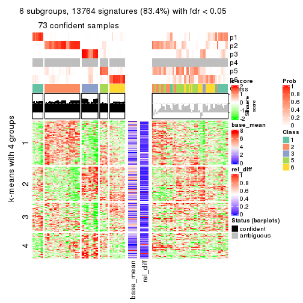
Signature heatmaps where rows are not scaled:
get_signatures(res, k = 2, scale_rows = FALSE)
get_signatures(res, k = 3, scale_rows = FALSE)
get_signatures(res, k = 4, scale_rows = FALSE)
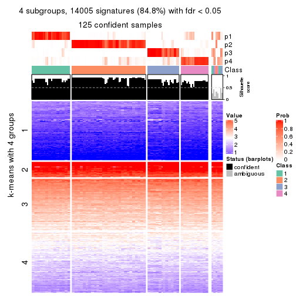
get_signatures(res, k = 5, scale_rows = FALSE)
get_signatures(res, k = 6, scale_rows = FALSE)
Compare the overlap of signatures from different k:
compare_signatures(res)
get_signature() returns a data frame invisibly. TO get the list of signatures, the function
call should be assigned to a variable explicitly. In following code, if plot argument is set
to FALSE, no heatmap is plotted while only the differential analysis is performed.
# code only for demonstration
tb = get_signature(res, k = ..., plot = FALSE)
An example of the output of tb is:
#> which_row fdr mean_1 mean_2 scaled_mean_1 scaled_mean_2 km
#> 1 38 0.042760348 8.373488 9.131774 -0.5533452 0.5164555 1
#> 2 40 0.018707592 7.106213 8.469186 -0.6173731 0.5762149 1
#> 3 55 0.019134737 10.221463 11.207825 -0.6159697 0.5749050 1
#> 4 59 0.006059896 5.921854 7.869574 -0.6899429 0.6439467 1
#> 5 60 0.018055526 8.928898 10.211722 -0.6204761 0.5791110 1
#> 6 98 0.009384629 15.714769 14.887706 0.6635654 -0.6193277 2
...
The columns in tb are:
which_row: row indices corresponding to the input matrix.fdr: FDR for the differential test. mean_x: The mean value in group x.scaled_mean_x: The mean value in group x after rows are scaled.km: Row groups if k-means clustering is applied to rows.UMAP plot which shows how samples are separated.
dimension_reduction(res, k = 2, method = "UMAP")
dimension_reduction(res, k = 3, method = "UMAP")
dimension_reduction(res, k = 4, method = "UMAP")

dimension_reduction(res, k = 5, method = "UMAP")
dimension_reduction(res, k = 6, method = "UMAP")
Following heatmap shows how subgroups are split when increasing k:
collect_classes(res)

If matrix rows can be associated to genes, consider to use GO_Enrichment(res,
...) to perform function enrichment for the signature genes.
sessionInfo()
#> R version 3.6.0 (2019-04-26)
#> Platform: x86_64-pc-linux-gnu (64-bit)
#> Running under: CentOS Linux 7 (Core)
#>
#> Matrix products: default
#> BLAS: /usr/lib64/libblas.so.3.4.2
#> LAPACK: /usr/lib64/liblapack.so.3.4.2
#>
#> locale:
#> [1] LC_CTYPE=en_GB.UTF-8 LC_NUMERIC=C LC_TIME=en_GB.UTF-8
#> [4] LC_COLLATE=en_GB.UTF-8 LC_MONETARY=en_GB.UTF-8 LC_MESSAGES=en_GB.UTF-8
#> [7] LC_PAPER=en_GB.UTF-8 LC_NAME=C LC_ADDRESS=C
#> [10] LC_TELEPHONE=C LC_MEASUREMENT=en_GB.UTF-8 LC_IDENTIFICATION=C
#>
#> attached base packages:
#> [1] grid parallel stats4 stats graphics grDevices utils datasets methods
#> [10] base
#>
#> other attached packages:
#> [1] genefilter_1.66.0 ComplexHeatmap_2.1.1 markdown_1.1
#> [4] knitr_1.26 cola_1.3.2 SummarizedExperiment_1.14.1
#> [7] DelayedArray_0.10.0 BiocParallel_1.18.1 matrixStats_0.55.0
#> [10] Biobase_2.44.0 GenomicRanges_1.36.1 GenomeInfoDb_1.20.0
#> [13] IRanges_2.18.3 S4Vectors_0.22.1 BiocGenerics_0.30.0
#> [16] GetoptLong_0.1.7
#>
#> loaded via a namespace (and not attached):
#> [1] bitops_1.0-6 bit64_0.9-7 doParallel_1.0.15 RColorBrewer_1.1-2
#> [5] httr_1.4.1 backports_1.1.5 tools_3.6.0 R6_2.4.1
#> [9] DBI_1.0.0 lazyeval_0.2.2 colorspace_1.4-1 withr_2.1.2
#> [13] tidyselect_0.2.5 gridExtra_2.3 bit_1.1-14 compiler_3.6.0
#> [17] xml2_1.2.2 microbenchmark_1.4-7 pkgmaker_0.28 slam_0.1-46
#> [21] scales_1.1.0 NMF_0.23.6 stringr_1.4.0 digest_0.6.23
#> [25] XVector_0.24.0 pkgconfig_2.0.3 bibtex_0.4.2 highr_0.8
#> [29] rlang_0.4.2 GlobalOptions_0.1.1 RSQLite_2.1.2 impute_1.58.0
#> [33] shape_1.4.4 mclust_5.4.5 dendextend_1.12.0 dplyr_0.8.3
#> [37] RCurl_1.95-4.12 magrittr_1.5 GenomeInfoDbData_1.2.1 Matrix_1.2-17
#> [41] Rcpp_1.0.3 munsell_0.5.0 viridis_0.5.1 lifecycle_0.1.0
#> [45] stringi_1.4.3 zlibbioc_1.30.0 plyr_1.8.4 blob_1.2.0
#> [49] crayon_1.3.4 lattice_0.20-38 splines_3.6.0 annotate_1.62.0
#> [53] circlize_0.4.9 zeallot_0.1.0 pillar_1.4.2 rjson_0.2.20
#> [57] rngtools_1.4 reshape2_1.4.3 codetools_0.2-16 XML_3.98-1.20
#> [61] glue_1.3.1 evaluate_0.14 vctrs_0.2.0 png_0.1-7
#> [65] foreach_1.4.7 polyclip_1.10-0 gtable_0.3.0 purrr_0.3.3
#> [69] clue_0.3-57 assertthat_0.2.1 ggplot2_3.2.1 xfun_0.11
#> [73] gridBase_0.4-7 eulerr_6.0.0 xtable_1.8-4 skmeans_0.2-11
#> [77] survival_2.44-1.1 viridisLite_0.3.0 tibble_2.1.3 iterators_1.0.12
#> [81] memoise_1.1.0 AnnotationDbi_1.46.1 registry_0.5-1 GTF_0.0.1
#> [85] cluster_2.1.0 brew_1.0-6